1853
The
— Tropical —
Agriculturist:
the tropical agriculturist.
Founded 1881.
Vol. LX.
.....
Containing Numbers I to VI
January to June, 1923.
Cave, Colombo,
| Page. | Page. | ||
|---|---|---|---|
| A | |||
| Agricultural and Industrial Co-operation in Mysore ... | 311 | C.—Contd. | |
| Agricultural Competitions in the Ratnapura District ... | 256 | Chicks: Baby. How to Grow them the Natural Way ... | 46 |
| Agricultural Competitions in the Southern Division ... | 188 | Cholam-Sorghum ... | 318 |
| Agricultural Conference at Jaffna ... | 282 | Citrus Scab ... | 224 |
| Agricultural Conferences ... | 259 | Coconut Crops, Ceylon's ... | 261 |
| Agricultural Research ... | 323 | Coconut, Grey Blight of Tea and: A Comparative Study ... | 109 |
| Agriculture as a Vocation ... | 176 | Coconut Palm, Some Insect Pests of the ... | 103 |
| Animal Disease Return for the Month ended 31st December, 1922 ... | 64 | Coconuts ... | 103 |
| Animal Disease Return for the Month ended 31st January, 1923 ... | 193 | Coconuts, A Possible Physiological Cause of "Nut Fall" of ... | 112 |
| Animal Disease Return for the Month ended 28th February, 1923 ... | 194 | Coconut, Selection of ... | 139 |
| Animal Disease Return for the Month ended 31st March, 1923 ... | 258 | Coffee, Cultivation of the Robusta Types of ... | 328 |
| Animal Disease Return for the Month ended 30th April, 1923 ... | 322 | Coffee Culture ... | 14, 146, 206 |
| Animal Disease Return for the Month ended 31st May, 1923 ... | 386 | Coffee, Hints about the Growing of ... | 265 |
| Anuradhapura Food Production Committee, Minutes of Meeting of the ... | 170, 234 | Coffee in Uganda ... | 336 |
| B | |||
| Baby Chicks: How to Grow them the Natural Way ... | 46 | Coffee, Manuring of ... | 213 |
| Banana "Bunchy Top" Disease ... | 222 | Coffee Spraying Experiments ... | 333 |
| Bananas, "Bunchy Top" Disease in—Interesting Experiments ... | 305 | Coffees on the Experiment Station, Peradeniya ... | 127 |
| Bananas, Dried ... | 53 | Colombian Pita ... | 337 |
| Bananas, Manuring of ... | 38 | Competitions in the Ratnapura District, Agricultural ... | 256 |
| Basic Slag Problem ... | 357 | Competitions in the Southern Division. Agricultural ... | 188 |
| Bee-keeping Notes ... | 184 | Conference at Jaffna, Agricultural ... | 282 |
| (Bees) Cause of Swarming ... | 50 | Conferences, Agricultural ... | 259 |
| Bigger Dairy Profits by Feeding the Right Cows ... | 320 | Control of Shot-hole Borer in Tea by the use of General Manures ... | 299 |
| Black Rot of Tea ... | 89 | Co-operation in Mysore, Agricultural and Industrial ... | 311 |
| Black Wattle Bark Industry in South Africa ... | 19 | Co-operative Associations in Canada ... | 242 |
| Board of Agriculture, Minutes of Meeting of Estate Products Committee of the ... | 163, 227, 370 | Cotton Cultivation ... | 120 |
| Board of Agriculture, Minutes of Meeting of Food Products Committee of the ... | 286 | Cotton Culture ... | 345 |
| Brown Bast Experiments in Malaya, Preliminary Report on ... | 360 | Cotton Experiments in Malaya ... | 270 |
| Budding of Rubber in Ceylon ... | 93 | Cotton Leaf Caterpillar (Cosmophila erosa) ... | 159 |
| "Bunchy Top" Disease in Bananas—Interesting Experiments ... | 305 | Cultivation of Ginger ... | 189 |
| C | |||
| Caffeine during Tea-firing, Loss of ... | 366 | Cultivation of Jak ... | 131 |
| Calculation of the Probable Soil-error in Paddy Trials ... | 274 | Cultivation of the Robusta Types of Coffee ... | 328 |
| Camphor in Tonkin ... | 315 | Cure for Cramp ... | 310 |
| Care of Tea Seed Bearers ... | 69 | Cutting Down of Jak Trees (Artocarpus integrifolia) and its Relation to the Food Supply of the People ... | 136 |
| Caterpillar, the Cotton Leaf (Cosmophila erosa) ... | 159 | Cut-worms, Rot-proof Paper for ... | 365 |
| Cause of Swarming .. | 50, 183 | D | |
| Cercospora Leaf Disease ... | 87 | Deep-rooting Plants and Soil Fertility ... | 218 |
| Ceylon's Coconut Crops ... | 261 | Destruction of Rats ... | 41 |
| Destructive Insects and Pests Order of 1922 ... | 226 | ||
| Disease, Banana "Bunchy Top" ... | 222 | ||
| Disease, Cercospora Leaf ... | 87 | ||
| Disease in Bananas, "Bunchy Top"—Interesting Experiments ... | 305 | ||
| Disease of Hevea, A Root ... | 100 | ||
| Disease Return for the Month ended 31st December, 1922, Animal ... | 64 | ||
| Disease Return for the Month ended 31st January, 1923, Animal ... | 193 | ||
Page.
| Disease Return for the Month ended 28th February, 1923 | 194 |
| Disease Return for the Month ended 31st March, 1923 | 258 |
| Disease Return for the Month ended 30th April, 1923 | 322 |
| Disease Return for the Month ended 31st May, 1923 | 386 |
| Diseases, Inspection of Plant Pests and ... | 90 |
| Diseases Legislation in Ireland, 1922, Plant Pests and ... | 305 |
| Diseases of Ceylon Plants, New | 129 |
| Diseases of the Tea Bush | 384 |
| District Agricultural Committee, Matale, Minutes of the Meeting of the ... | 379 |
| Double Coconut or Coco-de-Mer | 264 |
| Dried Bananas | 53 |
| Dry Mash System of Feeding | 383 |
| Effect of Certain Manurial Substances on Shot-hole Borer of Tea | 75 |
| Estate Products Committee of the Board of Agriculture, Minutes of Meeting of the ... | 163, 227, 370 |
| Experiment Station Peradeniya, Progress Report of the ... | 173, 236, 380 |
| Experiments, Coffee Spraying | 333 |
| Experiments on the Green Manuring of Rice | 348 |
| Experiments, Tobacco | 195 |
| Experiments with Hubam Clover in Ceylon | 60 |
| Experiments with Kurakkan | 186 |
| Extension Work | 180 |
| Fattening Poultry for Table Purposes | 241 |
| Feeding, Dry Mash System of | 383 |
| Fertilisers Ordinance, 1901: A Criticism and Some Suggestions | 153 |
| Fibre, Notes on Roselle | 202 |
| Fibre, Roselle | 200 |
| Fodders | 124 |
| Fomes lignosus Klotzsch, the Toxic Effect of Lime on ... | 101 |
| Food Production | 255 |
| Food Production and Agricultural Committee, Minutes of Meeting of the Anuradhapura | 170, 234 |
| Food Production Committee, Minutes of Meeting of Kegalle | 172 |
| Food Production Committee, Minutes of Meeting of Matale | 171, 290 |
| Food Production Committee, Minutes of Meeting of Matara | 173 |
| Food Products Committee of the Board of Agriculture, Minutes of Meeting of the ... | 286 |
| Food Supply of the People, Cutting down of Jak Trees (Artocarpus integrifolia) and its Relation to the | 136 |
| Fringed Nettle-Grub | 77 |
| Fruit Culture in Florida | 203 |
| Fruit, Setting of | 205 |
| Fruit Trees in South India, Some Insects Noted as Pests of | 219 |
| Furcraea, Sisal and | 122 |
Page.
| General Principles of Economic Planting | 3 |
| Ginger, Cultivation of ... | 189 |
| Glicicidia Maculata as a Green Manure for Tea ... | 90 |
| Globular Shoots and Nodules in Hevea Cortex | 97 |
| Glossary of Agricultural Terms and Phrases with Notes | 253 |
| Green Manures for Paddy | 119 |
| Green Manuring of Rice, Experiments on the ... | 348 |
| Grey Blight of Tea and Coconut: A Comparative Study ... | 109 |
| Hemileia vastatrix B. & Br., the Occurrence of Teleutospores in | 128 |
| Hevea, A Root Disease of | 100 |
| Hevea Cortex, Globular Shoots and Nodules in | 97 |
| Hevea Selection | 94 |
| Hints about the Growing of Coffee | 265 |
| Hubam Clover | 56 |
| Hubam Clover in Ceylon, Experiments with | 60 |
| Improvements in the Preparation of Rubber | 144 |
| Influence of Irrigation on the Composition of the Soil | 217 |
| Insect Pests of the Coconut Palm, Some | 103 |
| Insects and Pests Order of 1922, Destructive | 226 |
| Insects Noted as Pests of Fruit Trees in South India | 219 |
| Inspection of Plant Pests and Diseases | 90 |
| Intensive Poultry Keeping for Town Dwellers | 181 |
| Introduction | 67 |
| Jaffna District, White Burley Cultivation in the ... | 197 |
| Jak, Cultivation of ... | 131 |
| Jak Trees (Artocarpus integrifolia) and its Relation to the Food Supply of the People, Cutting down of | 136 |
| Kapok | 347 |
| Kapok or Silk Cotton Tree | 122 |
| Kegalle District, Plantain Industry of | 133 |
| Kegalle Food Production Committee, Minutes of Meeting of the ... | 172 |
| Kitchen Gardening | 247 |
| Kurakkan Analyses | 368 |
| Kurakkan, Experiments with | 186 |
| Lime on Fomes Lignosus Klotzsch, the Toxic effect of ... | 101 |
| Limestones of Ceylon | 156 |
| Literature of Agriculture, Periodical ... | 61, 190 |
| Loss of Caffeine during Tea-firing | 366 |
2
| Page. | |
|---|---|
| M | |
| Manure for Tea, Glicidia Maculata as a Green ... .. | 90 |
| Manure, Straw for ... .. | 218 |
| Manurial Substances on Shot-hole Borer of Tea, the Effect of Certain ... .. | 75 |
| Manures, Control of Shot-hole Borer in Tea by the use of General ... .. | 299 |
| Manures for Paddy, Green ... .. | 119 |
| Manures, Selection of ... .. | 306 |
| Manures, Weed Seeds in ... .. | 355 |
| Manuring Experiments, Paddy ... .. | 280 |
| Manuring of Bananas ... .. | 38 |
| Manuring of Coffee ... .. | 213 |
| Market Rates for Some Tropical Products ... 63, 192, 257, 321. | 385 |
| Matale Food Production Committee, Minutes of Meeting of ... .. | 171, 290, 379 |
| Matara Food Production Committee, Minutes of Meeting of ... .. | 173 |
| Meteorological Return for December, 1922 ... .. | 64 |
| Meteorological Return for January, 1923 ... .. | 193 |
| Meteorological Return for February, 1923 ... .. | 194 |
| Meteorological Return for March, 1923 ... .. | 258 |
| Meteorological Return for April, 1923 ... .. | 322 |
| Meteorological Return for May, 1923 ... .. | 386 |
| Minutes of Meeting of Anuradhapura Food Production and Agricultural Committee ... .. | 170, 234 |
| Minutes of Meeting of the District Agricultural Committee Matale ... .. | 379 |
| Minutes of Meeting of Estate Products Committee of the Board of Agriculture ... 163, 227, | 370 |
| Minutes of Meeting of Food Products Committee of the Board of Agriculture ... .. | 286 |
| Minutes of Meeting of Kegalle Food Production Committee ... .. | 172 |
| Minutes of Meeting of Matale Food Production Committee ... .. | 171, 290 |
| Minutes of Meeting of Matara Food Production Committee ... .. | 173 |
| N | |
| Nettle-Grub, the Fringed ... .. | 77 |
| New Diseases of Ceylon Plants ... .. | 129 |
| Nodules in Hevea Cortex, Globular Shoots and ... .. | 97 |
| Notes on Roselle Fibre ... .. | 202 |
| Notes on Termites attacking Tea in Ceylon... .. | 83, 291 |
| "Nut Fall" of Coconuts, A Possible Physiological Cause of ... .. | 112 |
| O | |
| Occurrence of Teleutespores in Hemileia vastatrix B. & Br. ... .. | 128 |
| Ordinance 1901, Fertilisers: A Criticism and Some Suggestions ... .. | 153 |
| P | |
| Paddy ... .. | 115 |
| Paddy Fly (Leptocoris varicornis F) ... .. | 118 |
| Paddy, Green Manures for ... .. | 119 |
| Paddy Manuring Experiments ... .. | 280 |
| Page. | |
|---|---|
| P.—Contd. | |
| Paddy, Selection of Pure-line Seed... .. | 115 |
| Paddy Trials, Calculation of the Probable Soil-Errors in ... .. | 274 |
| Paper for Cut-worms, Rot-proof ... .. | 365 |
| Paper Mulching for Pine-apples ... .. | 250 |
| Pepper in Sarawak ... .. | 211 |
| Periodical Literature of Agriculture ... .. | 61, 190 |
| Pests and Diseases, Inspection of Plant ... .. | 90 |
| Pests and Diseases, Legislation in Ireland, 1922. Plant ... .. | 305 |
| Pests of Fruit trees in South India, Some Insects Noted as ... .. | 219 |
| Pests Order of 1922, Destructive Insects and ... .. | 226 |
| Phrases with Notes, Glossary of Agricultural Terms and ... .. | 253 |
| Pine-apples, Paper Mulching of ... .. | 250 |
| Pink Bollworm (Gelcchia gossypiella) Saund ... .. | 161 |
| Plant Pests and Diseases Legislation in Ireland, 1922 ... .. | 305 |
| Plantain Industry of Kegalle District ... .. | 133 |
| Plants & Soil Fertility, Deep-rooting ... .. | 218 |
| Possibilities of Wattle Bark in Ceylon ... .. | 1 |
| Possible Physiological Cause of "Nut Fall" of Coconuts ... .. | 112 |
| Poultry Congress and Exhibition, World's ... .. | 182 |
| Poultry Feeding ... .. | 309 |
| Poultry for Table Purposes, Fattening ... .. | 241 |
| Poultry Keeping for Town Dwellers, Intensive ... .. | 181 |
| Preliminary Report on Brown Bast Experiments in Malaya ... .. | 360 |
| Progress Report of the Experiment Station, Peradeniya ... .. | 173, 236, 380 |
| R | |
| Raising Turkeys for Profit ... .. | 238 |
| Rates for Some Tropical Products, Market ... 63, 192, 257, 321. | 385 |
| Rats, Destruction of ... .. | 41 |
| Research, Agricultural ... .. | 323 |
| Retaining the Surface Soil ... .. | 36 |
| Rice, Experiments on the Green Manuring of ... .. | 348 |
| Root Diseases of Hevea, A ... .. | 100 |
| Rot-proof Paper for Cut-worms ... .. | 365 |
| Roselle Fibre ... .. | 200 |
| Roselle Fibre, Notes on ... .. | 202 |
| Rubber ... .. | 93 |
| Rubber in Ceylon, Budding of ... .. | 93 |
| Rubber from Young Trees ... .. | 145 |
| Rubber, Improvements in the Preparation of ... .. | 144 |
| Rubber Research Scheme 1921-22, Work of Ceylon ... .. | 325 |
| S | |
| Selection of Coconuts ... .. | 139 |
| Selection of Manures ... .. | 306 |
| Selection of Pure-line Seed Paddy ... .. | 115 |
| Setting of Fruit ... .. | 205 |
| Shot-hole Borer in Tea by the use of General Manures, Control of ... .. | 299 |
| Shot-hole Borer of Tea, Effect of Certain Manurial Substances on ... .. | 75 |
| Shot-hole Borer Pest ... .. | 72 |
3
| Page. | |
|---|---|
| S.—Contd. | |
| Silk Cotton Tree, Kapok or | 122 |
| Sisal and Furcræa | 122 |
| Soil-Error in Paddy Trials, Calculation of the Probable | 274 |
| Soil Fertility, Deep rooting Plants and | 218 |
| Soil Influence of Irrigation on the Composition of the | 217 |
| Soil Nitrogen and Live Stock Farming | 359 |
| Soil, Retaining the Surface | 36 |
| Soil Temperature | 215 |
| Some Insect Pests of the Coconut Palm | 103 |
| Some Insects noted as Pests of Fruit Trees in South India | 219 |
| Some Notes on Rubber Estates of the Future | 49 |
| Sorghum-Cholam | 318 |
| Straw for Manure | 218 |
| Studies in Rice | 281 |
| T | |
| Tank Silt Experiment | 188 |
| Tea | 69 |
| Tea and Coconut, Grey Blight of: A Comparative Study |
109 |
| Tea, Black Rot of | 89 |
| Tea Bush, Diseases of the | 384 |
| Tea by the Use of General Manures, Control of Shot-hole Borer in |
299 |
| Tea, Effect of Certain Manurial Substances on Shot-hole Borer of |
69 |
| Tea-firing, Loss of Caffeine during | 366 |
| Tea, Gliricidia Maculata as a Green Manure for |
90 |
| Tea in Ceylon, Notes on Termites | |
| Page. | |
|---|---|
| T.—Contd. | |
| attacking | 83, 291 |
| Tea Leaf Skeletonizer | 81 |
| Tea-Seed Bearers, Care of | 69 |
| Termites attacking Tea in Ceylon, Notes on |
83, 291 |
| Terms and Phrases with Notes, Glossary of Agricultural | 253 |
| Tobacco Experiments | 195 |
| (Tobacco) White Burley Cultivation in the Jaffna District |
197 |
| Toxic Effect of Lime on Fomes lignosus Klotzsch |
101 |
| Turkeys for Profit, Raising | 238 |
| V | |
| Vanilla | 212 |
| W | |
| Water Hyacinth and its Eradication in West Giruwa Pattu |
126 |
| Wattle Bark in Ceylon, Possibilities of | 1 |
| Wattle Bark Industry in East Africa | 34 |
| Wattle Bark Industry in South Africa, Black |
19 |
| Weeds | 125 |
| Weed Seeds in Manures | 355 |
| White Burley Cultivation in the Jaffna District |
197 |
| Work of Ceylon Rubber Research Scheme, 1921-22 |
325 |
| World's Poultry Congress and Exhibition |
182 |
| Y | |
| Year Book of Agricultural Investiga- tion |
65 |
| Centenary of the Royal Botanic Gar- dens, Peradeniya, Staff of the Department of Agriculture-March 1922 |
68 |
| New Entomological Laboratory and Insectary |
69 |
| New Mycological Laboratory | 69 |
| Tea Seed-Bearers in Ceylon: Too Closely planted |
70 |
| Tea Seed-Bearers in Ceylon: Planted in Rows, but trees too close in rows |
71 |
| The Fringed Nettle-Grub | 80 |
| Tea Leaf-Skeletonizer | 81 |
| Cercospora Leaf Disease | 88 |
| Gliricidia Maculata as a Green Man- ure for Tea |
89 |
| A Cleaned Village Tea Garden | 92 |
| A Well-cared for Village Garden | 92 |
| Village Garden adopting Measures Recommended by the Plant Pest Inspectorate |
93 |
| A Village Tea Nursery | 93 |
| First Budded Rubber in Ceylon | 94 |
| Section of Rubber Cortex Showing Rows of Latex Vessels |
95 |
| Globular Shoots | 98 |
| Globular Shoots | 99 |
| Globular Shoots | 100 |
| Xylaria Thwaitesii on Diseased Rub- ber Stump—Young Stage |
101 |
| Xylaria Thwaitesii on Diseased Rub- ber Stump—Old Stage |
101 |
| Coconut Caterpillar (Nephantis seri- nopa) |
106 |
| The Rhinoceros or Black Beetle (Ory- ctes rhinoceros) |
107 |
| The Red Weevil (Rhynchophorus fer- rugineus) |
108 |
| Pestalozzia Spores | 109 |
| Pestalozzia Palmerum Cooke | 110 |
| Pestalozzia Theae Sawada | 111 |
| Pure Line Selection of Paddy Blocks at Anuradhapura Experiment Station |
116 |
| Pure Line Selection of Paddy Blocks at Anuradhapura Experiment Station—Later stage |
116 |
| Paddy Fly | 117 |
| Durango Cotton—Ambalantota, 1922 | 120 |
| Cambodia Cotton—Ambalantota, 1922 | 120 |
| Karanganni Cotton Ambalantota, 1922 | 120 |
| Cotton at Ambalantota, 1923 (Show- ing Attack of (Cosmophila Erosa)) |
120 |
| Cotton at Ambalantota, 1923—Show- ing Control Measures—dusting with Paris Green and Lime—in operation |
120 |
| Cotton Plant Adjoining Village Home (A common Occurrence in Certain Villages) |
121 |
4
|
Cotton Plants of Same Age—(a) Clean Sisal Cultivation at Anuradhapura Furcraea Cultivation at Anuradhapura Plan of Fibre Machine—Experiment Plan of the Fibre Mill—Experiment Rice Mill—Sravasti Estate, Ratmale 124 Fibre Machine—Experiment Station, |
Drymaria Cordata Willd... ... 125 Frequency Curve of Yield (Paddy) of Tea Termites (Calotermes species) ... 294 Tea Termites (Termes obscuriceus)... 295 Robusta Coffee ... 330 "Hybrid" Coffee ... 331 Uganda Coffee ... 331 Quillou Coffee ... 332 Canephora Coffee ... 332 A Pita Plant ... 338 A View in the Pitalas, Showing the |
5
VOL. LX.
PERADENIYA, JANUARY, 1923.
No. 1.
In the present number of the TROPICAL AGRICULTURIST are reproduced articles relating to the wattle bark industries of South and East Africa. These articles have been extracted from the SOUTH AFRICAN JOURNAL OF INDUSTRIES and indicate the importance of these industries. They are of particular interest to Ceylon at the present time because it has been pointed out by the Director of the Imperial Institute that the prices for bark have improved, and that the demand is steadily extending owing to its growing popularity with tanners.
The black wattle has been grown in Ceylon for many years, and an attempt was made to export the bark for commercial purposes. The margin of profit was not, however, at that time, sufficient to warrant large scale operations. The rates of freight from Ceylon were heavier than those from South Africa, and further efforts to undertake commercial shipments were not made.
The wattle, or—as it is known in Ceylon—the Acacia—is grown over large areas of up-country as a fuel supply, as wind-breaks, and as a green manure plant in tea.
It thrives well, and has been increasingly planted in recent years. There would be no difficulty in regard to its growth for the production of bark if the margin of profit were sufficient. It has however been suggested that all acacias cut for fuel for tea factories might be barked, and the bark dried and exported. It is possible that this would prove remunerative, and that the demands on labour would not be excessive.
2[JANUARY, 1923.With a view to testing the values of acacia barks from Ceylon, samples have been prepared from Hakgala Gardens for analysis locally, and for investigation at the Imperial Institute.
These barks were prepared from a tree of Acacia dealbata aged years which yielded 30 lb. of dried bark; a tree of A. decurrens aged years which yielded 54 lb. of dried bark; an old tree of A. decurrens (exact age unknown) which yielded 84 lb. of dried bark; a tree of A. mollissima aged 10 years which yielded 18 lb. of dried bark, and another tree of A. mollissima aged years which yielded 18 lb. of dried bark.
The ruling prices of chopped wattle bark in London during recent years are reported to have been as follows :
| Year. | Price per ton. | |
|---|---|---|
| 1916 | ... | £10—16 |
| 1917 | ... | £12—10 to £23 |
| 1918 | ... | £16—10 to £17 |
| 1919 | ... | £13—£19 |
| 1920 | ... | £13—22-5 |
| 1921 | ... | £ 8-10— £11 |
| 1922 | (Early part). | £ 9-10— £11-10 |
If the analyses of Ceylon barks are satisfactory there would appear to be prospects that wattle bark could be produced commercially in Ceylon.
It is however necessary to sound a note of warning to the growers of tea. The leaf disease caused by Cercospora Theæ appears to become more prevalent upon acacias up-country, and from acacias it spreads to tea. The attention of the tea industry has been drawn to this by the Mycologist of the Department, and it is possible that some revision of the policy of planting acacias amongst tea may have to be considered by the tea industry.
This does not however preclude the growing of defined areas of acacias for fuel supplies away from the tea, and the production of bark from such areas is well worthy of serious consideration.
JANUARY, 1923.]3The subject chosen by our Society for me to lecture on this evening is a very wide one and in the short time at our disposal we shall only be able to touch upon the mere fringe of many of the aspects of the matters affecting economic planting. Further we shall have to restrict our thoughts mainly to matters affecting the planting of Hevea from an industrial standpoint, though I think that many of the general remarks I shall put before you, will equally apply to the economic planting of crops other than rubber.
The basis of all economic planting must be the using of land to the best advantage for the crop chosen so that the capital and labour invested will give the largest return. We have thus two things to consider, the one dependent to a large extent upon the other, viz., capital invested and crop harvested. These two matters are further affected by two other factors, one, the nature factor, i.e., the lie of land, soil conditions and climatic conditions, and two, the state of the market for the crop produced. Round these factors the whole business of a planter—and I use the term “planter” to include those who cause to have planted as well as those who actually plant,—hangs. To unite these factors we find that economic planting aims at getting the biggest profit per unit of capital invested. The biggest profit can be measured in two ways, viz., the biggest immediate profit or a immediate satisfactory profit combined with a good assurance of a continuation of such satisfactory profits. Which one is sought by the planter must necessarily depend upon his view of the industrial value of the crop raised by him. If he considers that the crop he is growing has only a transient market value then he seeks the largest immediate returns possible, while, if he is confident of the permanency of the market value of his crop, then he is willing to forego some of these immediate returns if necessary, in order to stabilise his efforts, which establishment will ensure both immediate as well as future satisfactory returns.
Let us consider for a short time the factors around which the business of an economic planter hangs. Since the last two factors I mentioned, viz., the nature factor, i.e., lie of the land, soil conditions and climatic conditions and the state of the market for the crop produced, are less within the control of the planter than the former two, we will consider these first. It will be obvious that the thoughtful planter will, in selecting the site for his plantation, choose such areas where the lie of land, natural drainage soil conditions and climatic conditions are most favourable to the crop he wishes to plant. Not only are these points of the greatest importance to
* A lecture delivered under the auspices of the I. S. P. at the Klang Club on 14th September, 1922, by MR. H. C. PINCHING, Senior Scientific Officer of the Rubber Growers Association.
4[JANUARY, 1923.him but he has also to consider the position of his selected area with reference to the geography of the country, i.e. with reference to railways, navigable rivers, main roads or seaports, in order not only to facilitate the disposal of his crops when harvested but to render the obtaining of stores for his plantation as easy as possible.
When the planter, who, in searching for land for his plantation, finds a site where all these factors are existing in his favour, that is, where lie of land, soil and climatic conditions and position are ideal, he is extremely fortunate. In the early days of economic tropical planting the position of the estate was of more importance than it is to-day when we have easy motor transport, and in some cases it would seem that the pioneer planters placed more importance upon this point than they did upon the actual condition of the land. In my opinion, and I think you will all agree with me, the selection of the land is one of the principal factors in the success of economic planting. In these days, when much of the land of easy approach has been taken up, the selection of suitable sites for further planting generally needs considerable thought. It is not that the best agricultural land in the Peninsula has been already taken up—for there are thousands of acres of first class agricultural land as good as, if not better than, much of that already planted up in the more easily accessible parts, still obtainable in such states as Pahang.
Unfortunately, in the rush to open up land under Hevea during the boom period, sufficient consideration was not given to the state of land planted. Thousands of acres were planted up which cost heavy sums to maintain and many, if not all of these, have since been abandoned. Such unsuitable lands cost more to open up, to maintain, to supply, to weed and to drain than suitable lands, and after that was all done one obtained smaller returns (if any) from such lands. As I have said, most of unsuitable lands have since been abandoned after absorbing a lot of money, and I often have remarked that had I the money, so spent by rubber companies, I should be a millionaire to-day. It is not only the preliminary opening up costs in connection with these unsuitable areas which have to be considered but also the heavy cost of maintenance. I feel that the blame for opening up such unsuitable areas under rubber is not to be laid wholly, and in some cases not at all, at the door of the early rubber planters. Instructions were received from Home that the work was to be carried out in spite of the recommendations from men on the spot that such a procedure was extremely ill advised. In those days the thing which mattered was the number of acres planted up rather than the quality of those acres.
The planter has therefore carefully to weigh up the pros and cons of the land he proposes to select for his purpose. In the cases where the soil conditions or lie of land are not all that he could desire, but there are other points which favour him, then he must consider whether it would be possible, and then would it be worth his while, to attempt to improve the soil conditions. In the first place it is a proper appreciation of these matters which makes a successful economic planter.
Since the economic planter grows his crop for the market it is highly necessary that he should watch the state of the market and order his work
JANUARY, 1923.]5in the light of the possible future of the market. When he sees the possibility of a shortage in the market he must be prepared to take every advantage of it and at the same time guard against flooding and so spoiling the market. This matter is of special importance in the case of minor agricultural products. With the rubber growing industry these matters are generally left, or rather, have been generally left, to the people at Home and the actual rubber planter took very little interest in them. Indeed, due to the previous state of the rubber market, no one had to worry much about such matters. The depression in the rubber market has made a very great difference, however, and I must state as my opinion that I feel that the present day rubber planter has a better school of real economic planting to pass through than his predecessor, the pioneer rubber planter. To-day is the day of decimals of a cent while years ago ten cents was of no very great importance. Cost of production to suit a depressed market is the aim of every planter at the present time, and I can assure you, in my visits to estates, such replies as "such and such work will cost say, 2 cents a lb. on my rubber" are getting very common. Such surely shows a keen appreciation by the planter of the economic aspect of his work.
After this somewhat preliminary ramble on the more general side of affairs let us turn to the more particular and consider the position of the planter who has already selected his land and wishes to plant up his crop. The first and main question which confronts such a planter is "How much capital does it pay me to invest in an acre of the land I have selected, in order to obtain the maximum return per centum of capital thus invested?" All his programme of work must be planned out with this question in view. If, say, he sinks $500 worth of work or material into an acre of land in planting, cultivating, etc., and his crop yields him an annual profit of say 20% on that capital, would it have been better financially for him to have sunk, say $400 instead and had a smaller total profit (but may be an equal or larger % return upon the money invested)? Or would it have paid him better to have carried out his work on a more elaborate scale and say invested $800 an acre and perhaps thereby gained larger returns per acre? When I say returns I am also including the stabilising of his efforts as well as actual cash profits.
Every cent spent on, or rather invested in, an estate must therefore be expected to give some return, otherwise it is not economic planting to spend that cent. Such returns are sometimes very difficult to assess in cash equivalents. It is easy enough to calculate actual cash profits or tangible assets such as the value of a factory or bungalow securing to a company during a year's working but some of the items of expenditure can find no compensating item on the other side of the balance sheet. Some of such expenditures are made in the form of insurances, others on general improvements to the property, the actual cash values of which improvements are very difficult to define. Let us take two works on estates illustrating these two latter forms of expenditure. Under the heading of insurance might be placed the money spent on the daily disinfection of the tapping surfaces of the trees in areas affected with, say, "Mouldy Rot," while under expenditure on the general improvement of the property could be placed that spent on the liming of the
6[JANUARY, 1923.soil, which has been carried out in the past by some estates. In either of these cases it is difficult to state in £ s. d. what return has been obtained for the expenditure made. To give a concrete illustration of what I mean. I once visited an estate which was full of jungle timber and stumps in all stages of decay. The rubber trees were seriously affected with root diseases—principally Fomes lignosus and White Ants were rampant. Groups of twenty trees and more had been completely wiped out by disease and pest and without wishing to alarm the owners unduly I recorded my opinion of the state of the property, and strongly advocated the clearing up and burning or removal of the jungle timber and stumps. Further, another area was then being opened up and I suggested that that should be cleared of timber either before, or directly after, it was planted up. The reply to my letter from the agents stated that before the owners of the property would consider my proposals it was necessary for me to state in £. s. d. the profits which would accrue to the estate by carrying out such work as I recommended, and, whether they would ever see the money again were they to spend it on such work. Needless to say, it was impossible for me to give the required figures. Unfortunately no tables have yet been drawn up showing the chance of a tree, living in a disease-infected area, catching that disease.
Let us consider for a few moments certain operations carried out in connection with the planting and cultivation of Hevea, the economies of which are still a matter of difference of opinion. There are certain preliminary works which we will all agree are necessary in establishing a rubber plantation and the costs of which we will all accept as being unavoidable. Thus we have surveying, felling, clearing and burning the jungle timber or changkolling, or in some way eradicating the lalang. I might add here that it has been suggested by some in the past that it was not necessary to fell all the jungle, but merely to fell parallel rentices along which the trees could be planted. This view has been put forward on the basis that since HEVEA in its natural habitat is a forest tree it should grow better when under jungle conditions. The few attempts to put this into practice have not been successful as far as I know and very little is ever heard nowadays of this theory.
It is over the expenses incurred by what one might call secondary work, however, that the differences of opinions in planting circles arise. Under such a heading I might place such works as planting systems and planting distances, methods of raising plants, weeding, growth of cover crops, leaf pruning, pruning, thinning out and the method of selecting trees for this purpose, manuring, clean clearing of timber, disease work, cultivation etc. It may be of interest to us to consider these debatable matters for a few moments in the light of the economics of planting. As I have already stated it should be the object of every economic planter to see that every cent of capital invested in an acre of land is yielding the maximum return possible. In order to procure this desideratum it will be obvious that the planter must use the land at his disposal to the best advantage, that is to see that every acre is bearing the optimum number of trees which will give the maximum yield from that acre of land. This means that every square inch of land must be assisting to this end, which in other words means that the trees must
JANUARY, 1923.]7be properly placed. The correct placing of trees must be obviously a variable term, the variation depending upon the lie of the land and the class of soil being dealt with. This, I am afraid, is a matter which has not been fully appreciated by rubber planters and directors of rubber companies.
There is nothing magical about certain numbers in economic planting. I have heard planters make general statements as to their opinion of the number of trees it is advisable to plant per acre of land. Some have said that they believed in planting up say 108 to the acre (20 in. 20 in.) and then thin out down to 80 to the acre eventually, while others have stated that they preferred 150 trees to the acre (say 17 in. 17 in.) and thin out drastically during the first few years the trees are in bearing, or some have even advocated the planting of such a large number of trees per acre on the grounds that losses by disease would not matter and diseased trees need not then be treated. Undoubtedly there are reasons behind these expressions of opinions, but in my opinion such have been expressed so dogmatically that it would seem to me that the speakers failed to realise that what might be a correct number of trees to plant per acre on one class of soil or lie of land, would be incorrect for a different kind of soil. Thus a really good soil can accommodate fewer trees than a poorer soil in order to obtain the best returns which the soils can give. I do feel sufficient attention has not been given to this point in rubber planting. It is quite possible that a comparatively poor soil bearing a large number of properly accommodated trees will give as big a yield of latex, as a good soil on which the trees are also properly accommodated, though of course, the harvesting of that crop will be dearer than in the case of the few trees. Directors at Home are in my experience, very prone to consider all rubber estates as being alike and to forget the great variations which exist in soil conditions. Thus some years ago a certain rather poorly grown estate in the Malacca district was the cause of some controversy between the agents, the visiting agent and myself. It was at the crest of the thinning out wave, when the universal panacea for all diseases, etc., on estates was thinning out. The directors of the estates in question wrote out from Home that all their 10 years old rubber and over, was to be thinned out immediately from the existing 110 trees to 85 trees to the acre. The Visiting Agent visited the property and opposed the suggestion. The Directors then called out from Home that the thinning out was to be proceeded with. The agents and Visiting Agent then had a consultation with the result that I was asked to visit the property and give my opinion. This I did, and you can believe me, in spite of the fact that the trees over 10 years old were standing at an average of 110 to the acre, yet the shadow of one tree hardly fell upon its neighbours. The soil conditions were so poor, the fields having raised untold crops of tapioca prior to being planted with rubber. In a case like this with such poor grown Hevea it was absurd to thin out as suggested by the Directors. They had failed to appreciate that the number of trees which an acre can properly accommodate must depend upon the quality of the soil and the consequent rate of growth of the trees.
8[JANUARY, 1923.It is now usually accepted that about 100 trees per acre is sufficient for the initial planting. The possibility of diseases and pests too must be considered and in lands where efforts have not been made to reduce this possibility to a minimum, i.e. by clearing away the jungle timber and jungle stumps, then it may be advisable to plant more trees to the acre. This is certainly preferable to planting few trees and then having to replace those lost through disease by supplies. I hasten to remark, however, that in my opinion it is better to clear the timber at the outset and so not to make the planting of a large number of trees necessary. Anyway we have all appreciated the general fate of "supplies," how that they are the first to be removed in thinning out, generally before they have yielded any return.
Another view has more recently been put forward in planting circles in connection with the number of trees it is desirable to plant per acre. It has been suggested that it is advisable to plant very closely say 14 in. 14 in. giving 222 to the acre, or 10 20, giving 201 trees per acre, with a view of making an early selection of the 70-100 best yielding trees and then to remove the remainder during the first few years of the history of the field, that is, about 80 trees per acre, all good yielders, will remain by the time the trees are five to six years old. An article by MR. BANNERMAN of Java on this subject appeared in the Rubber Growers' Association Bulletin for August 1921, in which he suggests planting 10 in. 10 in., giving 410 trees per acre. This number he suggests should be reduced to 70 eventually, the selection to be based on the individual yields of the trees. The thinning out is to take place over five years. He suggests that it is possible to select by crop -3 years' old rubber by mild experimental tapping. Personally, I do not care to criticise such a scheme until I have seen it in working and obtained some results from it. It would seem rather a big scheme to plant up 410 trees per acre and then remove five-sixths of them and it would seem to me that the results of tapping such young rubber as he suggests would be difficult to compare—the majority of the crop being taken up as "tree scrap."
It will be obvious that the thinning out would have to be promptly carried out for the 410 trees per acre would quickly overcrowd and interfere with the development of the best yielders. I should consider with such a scheme a smaller number of trees would answer better, the saving in planting, in thinning out etc., compensating for the slight advantage obtained in the extra scope in selection given by planting 410 trees to the acre. Not content with the above scheme, MR. BANNERMAN suggests the introduction of grafting and buddings with the planting of the 410 trees per acre. Personally, I consider this is a case of "precaution run amok" for if "budding" holds good for our purpose, i.e. if the bud which we place in the small rubber plant does give rise to a tree which yields a similar amount of latex to the tree from which it was taken, then as all the buds will necessarily be taken from high yielding trees, what is the practical use of the enormous scope of selection obtained by planting such a huge number of budded trees per acre.
I am afraid I have spent more time on the subject of the number of trees to plant per acre than we can afford this evening. Still it is a very important point and what I desire to emphasise is that there is no fixed "correct" number of trees to plant per acre. The number of trees to plant up and to maintain per acre must depend upon the quality of the soil and the rate of growth and development of the trees.
JANUARY, 1923.]9Before leaving the subject of planting up, I would like to mention briefly that of the allocation of the trees on the acre of land. The three methods of planting—square, avenue and quincunx—have often been discussed and I have very little to add to what has been already stated beyond to criticise avenue planting in the light of recent developments on the thinning out question. Selection of trees for thinning out is now largely based—and rightly so—on the yields of the individual trees and the spacing of the trees must therefore receive less consideration. Take for example a field planted up in avenues . If the trees obliged us by becoming high yielders every alternate tree then after thinning out we should be left with an evenly planted area of 75 trees to the acre, in which the spacing both aerial and subterranean was being evenly divided among the standing trees. Chance, however, does not favour us in this way and what is usually found is that in a row six good yielders exist together and then two poor yielders, and so on. In thinning out, the two poor yielding trees are removed—but how does that benefit to any extent of spacing of trees which remain. All that one then gets are open spaces where weeds grow more heavily and with the exception of the trees surrounding the few spaces caused by the thinning out, very little advantage is obtained. I saw the extreme of the avenue planting method a few months ago in a young area, under a year old, in which the planting was ft. 30 ft. The idea behind such a scheme must be eventually to thin out 30 ft. 30 ft., but will the trees favour the management by producing good yielders every fourth tree along the row? On the yield of individual trees basis for the selection of trees for thinning out I can foresee trees—probably three or four of them—having to be left feet apart.
Personally, I favour square or quincunx planting. It would seem to me that thinning out can be carried on with greater advantage to the remaining trees with these systems than in the case of avenue planting. In avenue planting, it would seem that the trees make no particular effort to accommodate themselves to the distances under which they are placed, i.e. they do not appear to put out all their largest branches towards the avenues and then smaller ones in the direction of the rows.
The next point I would like to consider for a few moments is weeding. On hilly land, and in fact, on all slopes where Hevea is planted clean weeding from the time of planting is a faulty policy. HERBERT WRIGHT as far back as 1912 stated "Planters, even in Ceylon, are convinced that it is impossible to exaggerate the soil loss that must take place when young clearings are year by year exposed to tropical heat and rain and scraped by weeding contractors. Nobody seems to entirely like or approve of the system. The proprietor knows it is costly, the planter regards it as his most troublesome task and all who have studied the pros and cons pronounce it as injurious to the soil." Further he stated "Clean weeding in the tropics though appalling in its effects on the soil and costly to the enthusiasts accustomed only to agriculture in temperate zones, seems nevertheless to be the most desirable system from the commercial point of view. Once an estate is perfectly clean it should be maintained in that condition for all time." Well, gentlemen, several years have elapsed since this was written
10[JANUARY, 1923]and I think that the evidences which have accumulated during these years show that while clean weeding may or may not be the least expensive policy in the long run from the actual expenditure point of view, yet it has a most marked detrimental effect upon soil and consequently upon the rate of growth of the trees. I know of hillsides which have been clean weeded for 12 years and where now the weeds will not grow—and I might add neither does the rubber. A most pointed illustration of this came to my notice a few months ago. Part of a hillside was planted up with rubber some 12 years ago and kept clean weeded until about 2 years ago. Of course, in the latter part of the clean weeding period the cost of weeding was practically nil. About three years ago the other part of the hill was opened up and clean weeded for a few months only. An attempt was made at terracing this newly opened part and it was allowed to go to grass. Lalang was carefully eradicated. To-day this more recently portion of the hill is covered with a fine growth of grass, but the early opened part will only produce a few spasmodic blades of grass. The solution to the question is easy to find for the low land adjacent to the originally planted part of the hill is covered with all the silt and humus which the tropical rains have scoured from the clean weeded land. Only unfertile subsoil is now left, upon which the grass will not grow—and if the grass will not grow how can one expect the rubber trees to grow!
It is quite probable that it takes a less monetary outlay to keep a place clean weeded from the outset than to establish cover crops or to put into practice the other artifices for holding up the surface soil and so preventing wash. The great question for the planter to decide is whether this possible smaller expenditure is real economy in the long run. Is it not possible that the original possible heavier expenditure due to such works as establishing a cover crop will be more than compensated by the increased development and growth of the trees and hence the bigger yields. In the case of a clean weeded hillside, the tropical rains soon cause the valuable surface soil from which to obtain its necessary food to be washed off and permanently lost and the surface then exposed under the sun's influence is rendered more or less sterile. Further the physical character of the soil is changed by the severe baking influence of the sun. This may occur to such an extent that the soil is almost irretrievably ruined. Rain which falls on such surfaces does not penetrate deeply and the soil loses its power to conserve moisture. The result of these influences may not be immediately apparent, but after a few years, when the trees are in tapping, the trees do not continue to thrive as they should in spite of the fact that they may have made fair progress at the start: bark renewal becomes slow and in extreme cases it is so backward that a long resting period is necessary.
Consider for a moment the benefits which would have accrued to the land had it been planted with some cover crop from the outset:—
(4) By using the cover crop as a green manure and periodically mulching it, or by pruning and leaving the prunings to decay on the surface, the actual chemical composition of the soil is improved.
Personally I am still sceptical that clean weeding is the cheapest line of action. I know of young estates covered with centrosema where the upkeep costs in 3-4 years old rubber are very little, much less than what weeding would have cost in such areas.
The next point I would like to mention is pruning. Pruning has largely fallen into disuse nowadays and the word is rarely found in the rubber planters' vocabulary. In the early days of rubber planting pruning took much the same place as thinning out does to-day. It was used to prevent overcrowding of the aerial portions of the trees. Since these days, however, we have appreciated that the growth and development of the trees depend to a large extent upon the amount of branching and leaf surface they possess and that the encouragement of branching is desirable rather than the restriction. Occasionally it is now advisable to carry out slight pruning work on an estate with the object of preventing the breaking off of heavy lopping branches. In any case of pruning it must be remembered that a badly pruned tree is a danger to both itself and those in the immediate neighbourhood. All branches to be removed should be cut off flush with the stem or parent branch. "Hat pegs" should on no account be left or disease is bound to follow as a matter of course. By leaving such "hat pegs" the length of life of the tree is reduced.
I have been particularly requested to introduce some remarks into my lecture this evening on the questions of thinning out, its economic value, and the selection of good yielding trees. I think we will all agree that the planting up of a larger number of trees per acre than the acre can sustain properly when the trees have reached say ten years of age is a financially sound policy. The first and foremost argument at the present time in favour of planting more trees than we subsequently require and then thinning out, must be that we cannot guarantee the latex yielding powers of any young rubber seedling or stump we may plant out in a field. Thus by planting more trees than we really require—or rather than the soil can support when the trees are say, ten years old, we have the opportunity of selecting the really required number of trees—all the best yielders present—and of removing the unrequired poor yielders. Most of us have had some chance of appreciating for ourselves the variation which exists in the latex yielding powers of the trees existing on an ordinarily planted acre of land. We always find that a certain percentage of the trees consists of poor yielders, some of which hardly pay for being tapped, especially at the present price of rubber. Thus unless we plant a greater number of trees per acre than we really require we shall be unable to remove these poor yielders, for, if we do, then our land is not being fully occupied.
Even if we could have an assurance that every tree with which we planted up a new area would become a high class yielder, would it then be advisable to plant up more trees than we really required and so have to thin out? I think the answer is still in the affirmative. Not only have we to consider the possibility of loss or the spoiling of the tree by disease and the risk of breakage or damage by storm or wind, but we have to bear in mind that we must always make the most out of the soil at our disposal. Thus supposing we require an ultimate stand of say 60 trees per acre—should we just plant up those sixty trees only at the outset? Such proposal, in my opinion, would be a very wasteful, and also a very expensive one.
12[JANUARY, 1923.The object of the rubber planter must be to accommodate his trees as they grow. As the trees demand more subterranean and more aerial space for expansion then he must see that this demand is fulfilled. One does not place the food requirements of a hearty man before a child of two on the ground that the child when he grows up will require such an amount of food, neither does one equip a boy of five with men's clothes and boots, because the boy, if he lives, will eventually require such.
Planting up a larger number of trees than will be eventually required is, in my opinion, economically sound, both with ordinary planted areas as well as with those areas planted up with trees for which one may have some guarantee that they will develop into high latex yielders. The yields from those trees eventually removed in thinning out will compensate for the cost of their planting and ultimate removal, while the matter of the earlier shading of the ground by the greater number of trees per acre and the saving on the weeding expenses where weeding is carried out, will be advantages acknowledged by all.
Taking fields of ordinary planted Hevea as they exist to-day in the East, the basis for the selection of trees for thinning out must depend upon the revenue value of each tree, i.e., its latex yielding power. Only on such a basis can the greatest return be obtained from an acre of land. Since the rubber content of the latices from different trees varies to a considerable extent, in some cases the rubber content of the latex from one tree being less than half of that of the latex from another tree, it will be obvious that, strictly speaking, the volumetric latex yield of a tree is not a correct indication of the tree's revenue value as compared with another tree, and that it is necessary, in order to make a correct comparison, to find the actual dry rubber yield of each tree. Though the finding of the actual dry rubber yield of each tree is not a very difficult task and is quite within the scope of the planter, yet on account of the extra time and attention necessary in carrying this work out, as compared with merely recording the volumetric yields, I have often been asked whether this latter method is not sufficient for ordinary estate purposes. In my opinion the answer to such a question is both yes and no, depending upon the condition of the estate under consideration. In the case of an ordinary planted estate where no thinning out (or no thinning out on the yield basis for selection) has already been carried out, then it is sufficient, in my opinion, to select trees for removal on the volumetric yield basis only. The slight errors which will enter through the usage of these volumetric records will be so slight as to be negligible from a practical standpoint. Let us consider such an estate for a moment. I have already stated that there is a considerable variation in the yields of individual trees on such an estate and thus there will be a certain percentage of the trees yielding say less than a quarter of a cup of latex. Thinning out when carried out at the proper time rarely necessitates the removal of more than 15-20 trees per acre. It will be no trouble in most unthinned fields to find 20 trees per acre which yield a very little latex—say enough to cover the bottom of the cup. If, for example, one of these trees which was yielding so poorly gave latex of a very high rubber content, say more than twice that of the latex from a neighbouring tree which gave cup, the loss admitted by removing the low volume but high rubber content yielding tree in thinning out, and the reserving of the higher volume but low rubber content yielding tree would be very slight. In my opinion it is in the latter stages of thinning out, when all the four and five drops of latex yielding trees have been removed, and the remaining trees all yield large volumes of latex that the question of the rubber content of the latex will become of importance. I do not want you to think for a
JANUARY, 1923.]13moment that I am against the recording of the actual rubber yields of individual trees, but having preached yield recording for some years with but comparatively little response from the managements, some of whom look upon it as a high flown impracticable idea of a scientist, I should be only too pleased to see estates tackle the easier, though slightly less accurate, method, rather than confront them with the more tedious but correct one. I fully appreciate that European staffs on estates are now working very short handed and with the present depressed state of the rubber market every thought has to be expended on the curtailing of expenditure. Of course in old rubber the yield recording is of less importance except as a means for indicating suitable mother trees for "budding" work. This brings us to the question of late thinning out in old rubber. Experiments have shewn us that thinning out in old rubber, no matter whether the basis used for the selection of trees to be removed is the individual yields or the spacing of the trees, is not financially sound. Consider for a moment thinning out in old rubber with the selection of trees for the removal based on the spacing of the trees. Such a thinning out may remove some of the best yielders and then, further, will the remaining trees respond to the improved environmental conditions? The yields of the remaining trees will not materially increase, for generally speaking, the majority of the trees will have reached (and perhaps passed) their normal maximum yielding period. Anyway, any slight increases per tree which may be experienced will be more than negatived by the loss of the yields from the removed trees.
Let us turn to thinning out in old rubber on the yield basis. It is possible in a field of unthinned old rubber that certain trees yield so poorly that they do not pay to be tapped. Thus if such were removed a tapper could tap a larger area, bring in a larger amount of latex and thus a reduction in the tapping cost per lb. of rubber would be obtained. Still if these very poor yielding trees were merely taken out of the tapping round and the tapping tasks readjusted accordingly, the result would be the same. Of course, there is the possibility of the remaining trees responding slightly to the somewhat improved environmental conditions brought about by removing such poor yielders, but would the response, measured in extra crop, increased girth or growth or increased rate of bark renewal compensate for the outlay necessitated in the thinning out? Further, as I have already stated, only a comparatively few trees would be placed under improved environmental conditions by the thinning out and personally I do not think the game would be worth the candle. With reference to the suggestion of merely selective tapping and not thinning out in old unthinned rubber I have personally been able to reduce my tapping costs from 10 cents to 8 cents per lb. with a reduction of yield per acre of under 50 lb. per annum in old unthinned fields. The trees stood about 100 to the acre and about 20 poor yielders per acre were taken out of tapping and the tasks re-arranged. In the event of the price of rubber justifying the work, the trees now out of action could be tapped again.
There are many more matters affecting the economic planting of rubber, which, had time permitted, I should have liked to discuss with you, but I think in what I have already said there may be several points upon which some of you gentlemen present may like to express your views and opinions or to ask questions, I will, therefore, thank you now for the very patient hearing you have given me. I am afraid that I haven't been able to bring forward much that is novel, but I trust that what I have said may provoke some questions or expressions of opinions from you.—
MALAYAN TIN AND RUBBER JOURNAL, Vol. XI. No. 18. 14[JANUARY, 1923.J. HAGEN.
(Translated from the Dutch by H. L. LUDOWYK, Librarian, Department of Agriculture.)
CHAPTER IV.—Continued from November issue.
Whether shade is beneficial to coffee or not is yet an unsettled question in Java. Everywhere, especially in estates of higher elevation shade is used for coffee. In Sumatra, however, where no well marked dry and wet seasons exist, no shade is used. I believe that the Coffee Leaf Disease facilitated the settling of the question in favour of shade.
The existence of shade regulates the productivity of trees; and it was observed that the more productive the trees were, the easier prey were they to the leaf disease, and the damage they sustained too was great. But, setting aside the question of disease, the fact remains that the more dense the shade is, the less is the harvest.
The characteristics of a good shade tree should be these :
It is admittedly difficult to find one tree that fulfills all these necessary conditions.
The Dadap (Erythrina lithosperma) was for a short time the tree most widely used for shading coffee. There are two varieties of it, namely the Dadap serep and the Dadap solo. The first brings forth seeds that germinate whilst second does not.
The plants of the serep raised from seed have generally a profusion of thorns : so the method of propagation by cuttings is commonly resorted to. The cuttings should be about two feet long and of the thickness of an average pole or stake. They should not be too much matured ; the pithy canal should be white. These should be planted obliquely, and the earth should be well pressed down under foot in order to fix them well in. Buds will soon begin to sprout out ; and the tree will be observed to be a very fast grower.
* ONZE KLNIALE LANDBOUW VII, DIE KOFFICULTUUR, DOOR J. HAGEN, and Planter TWEED DRUK-HAARLEM, 1917, H. D. THEIME EN ZOON PRIJS £ 2'25.
JANUARY, 1923.]15The Dadap has the following qualities. As it belongs to the Papilionaceæ, it fulfills condition No. 5 : it grows fast, gives not too dense a shade, and is easy to prune. In addition, a regular defoliation leaves on the land a layer of leaf mould which the roots of the coffee thrive on. But unfortunately, the dadap is not very long-lived everywhere, and has been, in the past few years, the victim of many diseases and pests.
The Albizzia, another leguminous plant, has been largely used. Two varieties of this too have been grown on estates—the Albizzia moluccana and A. stipulata, both of which grow to be large trees. The growth of the first of these species is even more vigorous than that of the Dadap ; but its wood is very brittle, and the falling of branches from the tree, which occurs pretty often, injures the coffee plants. The second is much stronger, but its growth is slower, and it drops its leaves during the East Monsoon.
The Albizzias too have many enemies, and it is fortunate that we lately found a tree that to a great extent satisfies the conditions required of a shade tree. The Lamtoro, Leucaena glauca, belonging to the Mimoseæ, is also one of those plants that fix nitrogen in the soil. It gives rise to a mass of seed that can also be collected, ground fine and given back to the soil as manure. The point will be dealt with in the Chapter on manuring.
The distance at which shade trees are to be planted depends on a number of such conditions as the altitude of the estate in question, and the kind of coffee one intends to plant. Generally, one is careful to see to it that the shade is neither too dense nor too scant. The ideal shade would be obtained if the tree be so planted that the space between them when viewed from North to South is such as leaves a rather wider opening for admitting light, than the open space seen when viewed from East to West.
As has been said before, coffee is easily affected by winds. On this account it is often necessary to provide unprotected spots with shelter belts. For this purpose Kosoemba (Bixa orellana), or, yet better, the Lamtora can be used. These should be planted as hedges.
The Lamtora should be propagated from seed sown either in beds or directly in the open. With systematic pruning the trees should be made to assume a decent form. The tree does not become exceptionally tall ; and unhappily, the leaf-fall is not great enough.
Once the coffee plants have been planted in their permanent positions on the estate, they begin to claim all the care and tending due them. One cannot be too careful with them ; and nothing of the most minute importance to the welfare of these plants ought to be neglected.
All kinds of weeds begin to appear. They should be instantly and thoroughly eradicated. If at the beginning weeds are regularly kept down, then, as the shade trees and coffee plants grow, the trouble required will be noticed to decrease. As a rule, two months after the plants have been put, the ground should be well tilled with a mammoty, and this should be repeated once or twice again during the first year. If the ground be sloping, then the small terraces should be improved and enlarged. Then again holes should be dug on the land in order to catch up the surface soil that would otherwise be washed away by heavy rains.
16[JANUARY, 1923.If the estate be so managed and looked after, the coffee plants will grow and thrive and soon it will become a settled and perfect plantation in bearing, and the growth of weeds in it will be greatly hindered. One should always try to have on the ground a heavy leaf mulch. This prevents the denudation of the surface soil, and the root hairs of the coffee plants find for themselves a favourable bed in such a layer, and flourish on the mould.
Once this stage has been arrived at, there is, in our opinion, no more need of digging the land with a mammoty. But whether on old plantations the mammoty might be used with advantage, has for many years remained a debated question. Whilst one person convinced by experience holds that the land can never be cultivated enough, another is wholly in favour of giving up cultivation of the soil by digging once the plantation has grown up. We shall not discuss this matter, but leave each superintendent to take into consideration all circumstances and decide for himself whether estates whose trees are in bearing need to be tilled or not. One should not forget that cultivation does away with the layer of leaves under which the roots, in combination with the nitrogenous moulds nourish the tree.
The aim of pruning should be to prolong the life of the tree, and to make it bring forth a regular crop. To attain this aim the tree should have a well developed root system, a stout and healthy trunk, together with strong branches bearing a lively profusion of leaves. When this healthy condition exists, the planter should yet take care to have recourse to a rational process of pruning which, while it prevents over-production, will not diminish the crop more than is necessary.
It is obvious that each species or variety of coffee will have to be handled in a manner different from others. Besides, as climate too exerts great influence, the mode of pruning in dry areas will have to be different from that used in the wet zones. The principal matter is the topping; and since, as a result of topping, there is a quick and copious output of secondary and tertiary branches, the topping might have to be followed up by a thinning out of these branches. Topping is done in order to make the gathering of the berries easy, especially in the case of certain species which have an abnormal tendency to grow very high if left to themselves; in addition to this, it is done in order to obtain the sooner a great girth of trunk, and make the tree come fast into bearing. This process involves the lopping off of the top of the main stem at the required height below the primary bud and just above a node. At the same time one of the side branches left at the top is taken off, for, if this were not done the weight of the branches on either side tends to split the stem. Arabian coffee is topped at 5 ft. from the ground, and Robusta and Liberian coffees at 8 ft. and so on.
Primary branches once cut off or withered can never be regrown. But they give rise to a number of buds; and of these a branch should be trained so as, nearly as possible, to take the place of the one which was lost, and thus regularly maintain the condition of the tree. The best among the shoots should be encouraged and the rest removed; for if they all be allowed to remain the symmetry of the tree would be irretrievably lost.
JANUARY, 1923.]17The discarding of the shoots whilst they are yet young should be done by rubbing or pulling them off by hand. The process is often known as "handling." This prevents the great wounds the tree would have to sustain by the removal of developed branches.
In Liberian trees, and also in Arabian trees, more often in the former, there appear branches, sometimes termed wild branches, which possess to some extent the habit of the main stem. These grow obliquely upwards, have in their turn, branches, etc., and bear a very large quantity of fruit. But these branches should be removed for they develop at the expense of the tree, draining the resources of, and even killing, the other heavy bearing branches.
There is yet another secondary branch that has to be removed ; those growing very near the main stem. If they be not removed, especially in the case of trees that have been topped, there results what is known as a "crows' nest," a tangled mass of branches that totally screens off the light, prevents free ventilation and hold up in its meshes the leaves that fall from the shade trees.
Especially in a wet climate, it might be found useful to let trees that have been topped shoot out again. Just as it happens that, usually, young trees and the upper branches of trees bear more fruit than old trees and the lower branches, so it might lead to getting a more abundant crop. It is as an application of this principle that what is known as the "bayonet" system came to be used. According to this system one out of every two shoots at the top is spared ; but this one has to be replaced by another after the crop has been gathered, as it may be considered to have fulfilled its course after bearing once.
Finally I should call attention to the great importance of regularly breaking off the tree all dead wood.
Every crop deprives the soil of a certain amount of plant food ; so any rational mode of culture, in order to prevent having to be suddenly faced with an appalling deficit, aims at restoring, as much as possible to the soil the elements used up. In the case of coffee, however, the matter is rather different. Coffee impoverishes the soil but little—so little that even a very poor soil can for an adequate number of years provide the coffee on it with the necessary salts.
One, however, sometimes notices the crop of rather old plantations deteriorating while new plants just come into bearing on old land is just as bad. If this is due to the deterioration of the physical conditions of the soil alone, then cultivation can in many cases prove effectual. It is obvious that cultivation alone will not pay in the long run ; and the remedy will be found worse than the thing we try to overcome.
Prompted by personal experience, I give precedence to farmyard manure. All rubbish and waste such as coffee pulp should be put in with the farm manure ; and this not only turns the waste to some account but also gives to the manure some of the advantages of green and artificial manures.
18[JANUARY, 1923.By preference we use for green manures plants of the Papilionaceæ. These plants, as is widely known, possess the property of fixing in the soil nitrogen from the air. The green manures should be planted between the rows of coffee. They should be cut from time to time, dug up and buried. This method has been found to be very successful especially where the shade is not too dense, for the Papilionaceæ require a fair amount of sunlight.
If we replace the Arabian plants on our estate with Liberian or Robusta coffee, then, it would be very useful to sow, simultaneously with the planting of the new species, a green manure crop of some papilionaceous plant that would enrich the soil. The land that had been used for nurseries too should be thus treated. Among the crops that would be suitable for green manuring I would name the Kratok (Phaseolus lunatus), the indigo varieties, and the Lamtor, Leucaena glauca,
As regards artificial manures, I have myself in the course of many years subjected the prescription of DR. KRAMERS to a series of comparative experiments. Plots with a certain known number of coffee trees were treated with different artificial manures. The crops of the different plots were separately gathered, prepared and weighed. These experiments have given no definite results; but the results clearly showed that sulphate of ammonia was the most successful. Sulphate of ammonia, however, was found to be too expensive, as the accounts, when made up, showed. The quickly operating nitrogenous manures can with great advantage be applied to help a tree to rally after it has borne a heavy crop, or after it has got over an attack of leaf disease. And in such cases, sulphate of ammonia should be chosen.
The question of coffee manuring, far from being settled, is barely out of its infancy, and so I may easily proceed further in this matter. A number of experiments will have to be performed, keeping in mind the financial side of the question too.
In the Chapter on shade trees, I have already said something regarding the nitrogen which the seeds of the Lamtora can provide. This tree which serves as a green manure in the ordinary course can be turned further to good account if the seeds be harvested, ground and given back to the soil. Here, indeed, would be such an abundant source of nitrogen as would be of immense importance to our coffee culture. (Vide the Publications of the NETHERLAND INDIES AGRIC. SYNDICAT, 5th Year, pt. VII).
JANUARY, 1923.]19The following report by MR. C. WILLIAMS, B.Sc., A. R. C. S., Chemist, School of Agriculture, Cedara (Natal), has been reproduced from Volume 1 of the SOUTH AFRICAN JOURNAL OF INDUSTRIES :—
South Africa has, in the Black Wattle Bark, a raw tanning material that has proved to be of very great value in the leather industry, and is rapidly increasing in favour amongst tanners in various parts of the world. Apart from this commodity, no other tanning materials have been exploited in South Africa to any great extent, although it is well known that several native trees and plants are important sources of tannins, and others might easily and profitably be introduced and cultivated here.
With regard to dyeing materials, very little attempt has hitherto been made, as far as the writer's knowledge goes, to establish an industry of this nature in the country, although several species of the wild indigo flourish here, and several other plants are known to yield dyes that probably would be of commercial value. It is not proposed to deal at any great length with the technicalities of the various processes involved in the production and marketing of the particular materials embraced in this report, but rather an endeavour will be made to give an outline of the commercial position of these industries at the present time, together with their possibilities in the future.
The Black Wattle Tree.—This tree is known botanically as Acacia decurrens var. mollis Benth., or Acacia mollissima Wild, and is a native of Australasia. There are about half a dozen varieties included in the "Acacia decurrens" species, and, according to BENTHAM, although these forms appear at first sight to be well defined and very distinct; they pass into each other by many gradations. The consequence is that Australians are not agreed as to the common names applied to these different varieties, the terms "Black Wattle," "Green Wattle," "Sydney Wattle" and occasionally "Silver Wattle," being used more or less indiscriminately for all of them. The variety under consideration is, according to MAIDEN, the form which yields the best and the most tan bark, but since it passes imperceptibly into other forms, he advises landowners not only to have a botanical examination made of their wattles, but also to have a chemical examination made of the bark (1). The Department of Agriculture of the British East Africa Protectorate realized the importance of this precaution to such an extent as to have an ordinance enacted, which prohibits the planting and sowing of the Silver Wattle (A. decurrens, var. dealbata), a variety which yields bark of much lower tanning value than the Black Wattle, which for the purposes of the ordinance is taken to include A. decurrens varieties mollis and normalis (2).
20[JANUARY, 1923.The introduction of the wattle into South Africa does not date back much more than half a century; it is supposed to have been brought from Australia to Natal by JOHN VANDERPLANK and his brother, the first seeds being planted at Camperdown (3). The wattles were at first planted for ornamental purposes and as shelter-belts for stock, the wood being used for fencing and for fuel. BARON VON MUELLER in his writings, however, drew attention to the value of the bark as a tanning material. The credit of being the pioneer of the wattle bark industry in Natal is generally given to the late SIR GEORGE SUTTON. In December, 1884, he first sold to a local tanner a few tons of mixed bark from the Silver Wattle (A. dealbata) and the Black Wattle (A. molissima), and during the following years several more lots of the mixed bark were sold to the same customer, who soon realized, however, that the latter variety was of considerably more value as a tanning agent than the former, which he ceased to buy.
In May, 1886, samples of the bark were sent to the Colonial and Indian Exhibition in London, and in the same year 39 packages were shipped to the London market, for which the total sum of £11 was realized (4). From that date onwards, the trade has rapidly increased, until of late years it has become one of the most important industries in Natal, while in the neighbouring Provinces—the Transvaal and the Cape—the industry is making satisfactory progress. Mention might also be made of the marked expansion of this industry during the last few years in East Africa.
According to the particulars given in the industrial census it is estimated that about 3,700 tons of wattle bark, valued at £22,600, are used annually for tanning purposes within the Union itself, and the amount is rapidly increasing.
The following table gives details regarding the export of wattle bark from the Union of South Africa during the past ten years. Practically all this commodity was shipped from Durban:—
| Year. | Amount. (long tons). |
Total | Average Price |
|---|---|---|---|
| Value. £ |
per ton. £. s. d. |
||
| 1907 ... | 24,320 | 139,388 | 5 15 0 |
| 1908 ... | 24,849 | 134,562 | 5 8 0 |
| 1909 ... | 35,771 | 194,696 | 5 9 0 |
| 1910 ... | 41,344 | 216,433 | 5 6 0 |
| 1911 .. | 49,644 | 289,556 | 5 17 0 |
| 1912 ... | 52,772 | 283,010 | 5 7 0 |
| 1913 ... | 65,052 | 309,329 | 4 15 0 |
| 1914 ... | 58,131 | 286,399 | 4 19 0 |
| 1915 ... | 40,027 | 195,244 | 4 18 0 |
| 1916 ... | 50,866 | 254,864 | 5 0 0 |
| Totals ... | 442,776 | 2,306,481 | 5 4 0 |
It may be mentioned that the export value as given in the above table is the value at the port of shipment, plus the cost of packages and packing.
JANUARY, 1923.]21The export trade from Rhodesia has been practically negligible so far; only about 66 tons of bark, of the value of £332, was exported in 1915, while on 1916 none was sent overseas.
In order to gain an idea as to the countries of destination of the bark, let us take the returns for 1911, as being a normal year, previous to the outbreak of war. The subjoined table gives the countries which received 100 tons and over :—
| United Kingdom | ... | ... | 25,171 | tons |
| Australia | ... | ... | 4,150 | „ |
| New Zealand | ... | ... | 227 | „ |
| Austria-Hungary | ... | ... | 330 | „ |
| Belgium | ... | ... | 266 | „ |
| France | ... | ... | 393 | „ |
| Germany | ... | ... | 24,126 | „ |
| Russia | .. | ... | 777 | „ |
| Other Countries... | ... | ... | 163 | „ |
It will be seen from these figures that the United Kingdom and Germany together took nearly 90 per cent. of the total amount of bark exported, the respective amounts for each of these two countries being almost equal. But most of the wattle bark imported into the United Kingdom was re-exported, chiefly to Germany, so that previous to the war Germany was by far our largest customer.
The table given below gives the quantity of bark (chiefly wattle) imported into the United Kingdom during each of the years 1907 to 1914 inclusive and also the amount re-exported during the same period. The past two years are excluded, the circumstances being abnormal,
| Year. | Imported Cwt. |
Re-exported Cwt. |
Proportion Re-exported. |
|
|---|---|---|---|---|
| 1907 | ... | 447,622 | 264,199 | 55 % |
| 1908 | ... | 466,613 | 237,863 | 51 % |
| 1909 | ... | 549,438 | 361,780 | 66 % |
| 1910 | ... | 560,038 | 412,564 | 74 % |
| 1911 | .. | 650,834 | 482,320 | 74 % |
| 1912 | ... | 572,901 | 399,010 | 70 % |
| 1913 | ... | 892,054 | 677,627 | 76 % |
| 1914 | ... | 846,276 | 606,796 | 72 % |
It has been usually contended that Germany imported the wattle bark chiefly for conversion into extract, as bark, being a raw material was admitted duty free, while there was a duty of 14 marks on every 100 kilograms of liquid extract and 28 marks on a similar weight of solid extract. Although it is true that a great deal of the bark was thus consumed, there is no doubt, however, that a considerable proportion of it was sold as bark to tanneries in Germany, Austria, Russia, and other countries of Central Europe.
It is often stated that the hitherto limited market with Britain is largely due to the conservative tendencies of the tanners generally and their want of knowledge concerning the tanning value of wattle bark. It has frequently happened, after the British tanner has been induced to give the bark an extended trial, that he has become convinced of its good qualities, and that large orders have in consequence been placed, thus proving that this tanning material only needs a fair trial in order to convince tanners of its merits.
22[JANUARY, 1923.It is generally recognized that the best type of soil for the growth of the Black Wattle is the deep red or chocolate soil resulting from the disintegration of the dolerite (locally known as whinstone) which covers such a large proportion of the surface of Natal and contiguous Provinces. The wattle, however, flourishes on any medium, well-drained loam, with a rainfall of about 30 to 40 inches or less if the soil is well supplied with moisture from a neighbouring river or from underground sources. It is also partial to a misty climate and a humid atmosphere, so that the "mist belt" of the Natal Midlands is the home par excellence, of this tree. The young trees cannot very well stand severe frosts on the one hand, nor extreme heat on the other, hence they do not thrive in the low-lying portions of the vlei at the moderate altitudes of the midlands of Natal, while in the northern districts the climate is altogether too rigorous for this variety, although the Green Wattle (Acacia normalis) flourishes in those parts. The Black Wattle does not do very well, as a rule, on the Natal coast, although here it seems to come to maturity sooner than elsewhere, at any rate, in so far as the tannin content of the bark is concerned.
There are many districts in the Transvaal and Cape Provinces where this variety of Acacia does well, and several samples of bark from these two Provinces have been analysed in the laboratory at Cedara, showing that the amount of tanning material compares very favourably with the Natal product. Black Wattles grow well in the Eastern Transvaal, and in the neighbourhood of Johannesburg and Pretoria. In the Eastern Province of the Cape, especially in the neighbourhood of Kingwilliamstown and Stutterheim, in the Transkei and Griqualand East, there are several wattle plantations. The district around George also supplies a fair quantity of Black Wattle bark to tanneries in the Western Province.
In order to make the growing of wattles a profitable undertaking, it is necessary, besides a suitable climate and soil, that the land should not be very far from the railway and the port of export, and that there should be a good supply of cheap labour available in the district. Having regard to these considerations, Natal is also more favourably situated for this industry than her sister Provinces, and will undoubtedly continue to be the premier wattle bark producing portion of the Union. On the other hand, the proximity of certain wattle-growing districts of the Transvaal to the Rand, which requires the timber for mine props and laggings, should assist considerably in making the planting of wattles there a sound financial proposition.
It is estimated by SM that the area under wattle in Natal at the present time is roughly 160,000 acres (5). The Forest Department estimates the acreage in the Transvaal at 20,000, and the aggregate for the remainder of the Union (chiefly the Cape Province) at not more than 10,000 acres. The total for the whole Union is therefore approximately 190,000 acres.
With regard to Rhodesia, it is estimated by the Secretary of the Rhodesia Munitions and Resources Committee that the land under wattles is not more than 500 acres.
The average yield of bark is from 3 to tons per acre, when the trees reach their maturity, at the end of about seven years usually, but it must be remembered that a small quantity of bark is also obtained as the result of
JANUARY, 1923.]23thinning out the plantations at the end of about three or four years; this usually amounts to about ton per acre. ANGUS estimates the yield as being about ton of dry bark and about 3 tons of dry wood per annum per acre of the total area under trees.
This hardly comes within the scope of this report, but a short resume of the most up-to-date methods applied is given for the information of readers who are interested in the industry, but who have not had the opportunity of visiting wattle plantations in South Africa.
The seeds, previous to sowing, are softened by being placed in boiling water, and allowed to stand for about 24 hours. They are usually sown in lines, the ground having been previously prepared, and after sowing the ground is lightly harrowed to cover the seed. The espacement between the lines is usually about 9 to 12 feet, the seeds being planted in patches at a distance of about 3 to 6 feet apart in the rows. At the end of a year or so, the seedlings in each patch, except one, are removed by hand, leaving always the healthiest-looking tree. When the plantation is about three or four years old it is further thinned by removing any injured or badly-growing trees, so as to produce a crop of straight, clean-stemmed trees of even growth. SIM, however, advocates still wider espacements in the first stage of thinning, and allowing the trees to stand for a longer time before felling (5).
The trees are usually stripped when they are seven to eight years old, the stem being first denuded of any twigs or small branches within reach, then ringed at a height of about 7 feet above the ground, and the bark of this bottom portion pulled in strips downwards towards the roots, so as to remove as much bark from the upper portion of the roots as possible, for at this point the tannin strength of the bark is at maximum. The tree is next felled, and the remaining bark stripped, after removing the upper branches. The bark is then weighed and removed as soon as possible to the drying sheds or to a convenient spot where it can be spread or hung out to dry in the sun, carefully avoiding exposing the inner side of the bark to the light, otherwise the colour would be darkened very materially. This drying process takes from a week to a fortnight if the weather is not too unfavourable.
A wattle area, after the trees have been cut down, is regenerated by burning the wattle branches in lines, thus causing the seeds to germinate in those narrow strips of ground. In this way no second sowing is necessary, and experience shows that the yields from the second and successive harvests are, if anything, greater than from the first crop.
When the bark is thoroughly air-dry it will have lost nearly half its original weight. This "stick bark," as it is called, is sometimes bundled and sold in this form to agents and buyers, who usually prepare it further for the market, for very little bark is shipped in bundles at the present time.
The sticks are mostly chopped by means of a chaff-cutter (worked by steam or water power) into pieces about an inch long. Most of the bark is exported chopped, the chopped bark being packed tightly into strong
24[JANUARY 1923.hessian bags holding about 200 lb. each, this being done either by manual labour or by means of special mechanical packers.
One ton of chopped bark occupies 90 cubic feet of space in the ship's hold, and many attempts have been made to reduce this by compressing the bark by some means or another. Under normal conditions, there is not much difficulty in finding freight space for the bark in home-going ships, but at the present time freight charges are very high and space difficult to obtain. One method of overcoming the difficulty is to press the chopped bark by means of a hydraulic plant into bales, approximately 2 feet long 1 foot 8 inches wide and 1 foot 3 inches high, the cubic measurement being about 4 cubic feet. These bales hold approximately 200 lb. each, and are tied and held neatly by broad iron bands or by wire. Another method is to pulverize the bark by means of special disintegrators, and compress the product in a hydraulic press, as is done with chopped bark. A serious disadvantage of this method is the loss of the finer and richer material that takes place when the bark is ground, for a great proportion of it gets blown away unless means are adopted to conserve it.
A ton of compressed chopped bark occupies about 49 cubic feet, and one ton of compressed ground bark 45 cubic feet, the latter being only half the space occupied by ordinary bagged bark. Besides saving space in the ship, the space saved in storage at the docks is also a matter for consideration, and the compressed bales, besides, form a very handy package to deal with when loading and unloading.
A few of the largest growers in Natal have plant of their own for grinding and compressing bark, and the Agricultural Co-operative Union has established a factory at South Coast Junction with machinery for chopping and for grinding wattle bark, and bailing either variety under compression, as explained above.
It may be pointed out that in compressing bark into bales of this description, it is very essential that it must not be damp when put in the press, otherwise it would be liable to ferment and become mildewed.
It is difficult to give any reliable figures under this heading for so much depends upon the size of the plantation or estate: the larger the acreage the more economical it is to work it. Also, the methods adopted, and the cost of labour, etc., vary largely throughout the country.
Ploughing, planting, weeding, thinning etc., till the plantation is established, will cost anything from 15s. per acre upwards. The matter of firebreaks, re-weeding, etc., necessary for the upkeep of the plantation till it is ready for stripping, will depend on the local conditions and the manner in which it is dealt with in the first instance, and may cost quite a considerable amount more.
Stripping, transport, drying, chopping, bagging, and handling will probably amount to 20s. per ton of bark at least for labour alone, to which a further sum of 10s. or 12s. has to be added for cost of bags, and 7s. per ton for cost of railage for the average distance to the Point. To this total we must also add the cost of machinery, maintenance, oils, renewals, etc., which is a very variable item and of which it is almost impossible to give an estimate.
JANUARY, 1923.]25When it comes to re-establishing a plantation, the cost is likely to be much greater than the initial one of establishing, the expense of burning litter, weeding, thinning, and keeping clean being usually more in the case of subsequent crops than the first.
The above figures are those for the actual working of the plantations, and do not include interest on capital, depreciation of plant, machinery, buildings, etc., loss of live stock necessary for the working of the plantations, road repairs, accidental breakages, fencing repairs, damage by fire, insects, drought, hail, frost, unsuitable weather for drying, besides administrative expenses, and the numerous incidentals in addition which contribute to the total cost of running an estate. Some of these are very high in comparison, and vary too much to allow of anything like even an approximate estimate being made.
The usual practice previous to the outbreak of war was for the bark to be shipped to approved consignees—generally agents—who entered into contracts, as a rule for six months, in equal monthly quantities. The contracts were generally made during June and December for the half-yearly periods July to December and January to June respectively. The usual commission was per cent. to a 2 per cent. del credere.
Shippers, as a rule, drew through their bankers on consignees at arranged currencies—generally 30 days' sight—with shipping documents attached. It lay with the consignees to arrange the necessary credit, to take up the documents and get possession of the shipment. Although contracts were, as a rule, made c.i.f., the consignee generally paid the freight to save bank exchange.
The freight from Durban to London or Hamburg immediately previous to the outbreak of war was about 25s. per ton, plus 2s. 3d. shipping charges. At the present time the freight to London is about £4'15 per ton measurement (40 cubic feet), or about £9 per ton weight when shipped as chopped or ground bark in bags, estimated at 90 cubic feet per ton weight. It will be noted that a very considerable saving in cost of freight is effected by compressing the bark.
The bark has not been generally sold on its tanning content, but a certain price is fixed for bark of fair average quality (f.a.q.), and if the quality appears to be appreciably of lower grade than this the price is usually fixed by friendly arbitration. Under what was known as the Hamburg Contract, the arbitration clause gave the Hamburg Chamber of Commerce the official adjudication on points of dispute, and debarred sellers from having any voice in the selection of arbitrators unless outside friendly arbitration were agreed to by both parties.
This method is unsatisfactory from many points of view; first, it is very difficult, and practically impossible, to establish a consistent standard of quality of bark, by ocular judgment alone, especially when there are so many different people called upon to act as judges and referees, many of whom are unqualified to give a judgment. Again, the seller does not get any benefit from a consignment of bark that is appreciably above the average
26[JANUARY, 1923.quality, although he would be immediately penalized when selling bark that is apparently below the standard, the reduction in price being often out of all proportion to the real deficiency below the standard quality.
This question of grading of wattle bark received the attention of the wattle growers and exporters in Natal for several years, and became a subject of serious consideration in the year 1907, when several letters of complaint were received from brokers and buyers in Britain and Germany concerning the deterioration in the quality of the bark exported, involving numerous cases of arbitration and reduction in prices.
The Natal Wattle Bark Union was instituted in August, 1907, and one of the first questions it devoted its attention to was the feasibility of establishing a standard in the quality of exported bark and arranging for the inspection and classification of all bark shipped by its members. The Union first took steps to ascertain the views of representative commercial men in Europe, besides those of the chief growers and experts in Natal, on this question of grading, but the conclusion it came to was, that while it would be a very desirable object to attain, the difficulties in the way were insurmountable at the time.
In December, 1907, the Minister of Agriculture for Natal called a meeting of the growers and those interested in the industry to consider this questions of grading bark and to discuss the Government's suggestions in connection with it. They proposed to appoint a grader, who would open a certain proportion of the bags in every consignment and decide whether the bark was up to the standard or below grade, the latter to be refused the Government certificate and to be penalized with regard to railway rates. This scheme did not find favour with the meeting, and the matter dropped for the time being.
Although the importance of maintaining a uniform grade of bark, and thus establishing a recognized standard for this produce in the European market, ought to have been obvious to the growers and sellers in this country, strong complaints continued to come in from buyers and tanners in Europe about the variable character and the deterioration in the standard quality of the bark shipped. The United Tanners' Federation of Great Britain and Ireland considered the question of grading wattle bark at a general meeting in 1912, and expressed the opinion that steps should be taken to settle this matter without delay. It was desired that growers should be informed that much of the bark that was being shipped was immature and unsatisfactory from the tanners' point of view, and that by sending over immature and badly graded bark this excellent tanning material was being brought into disrepute, having the effect of depressing prices. The Federation suggested that the bark might be classified into :—No. 1 quality, a good, bright coloured, heavy bark from mature trees ; No. 2 quality, lighter, thin bark ; and No. 3 quality, including bark spoilt in harvesting, by rain, or by having been allowed to become mildewed, or for any other reason.
In 1913, the Union Department of Agriculture called meetings in Durban and Maritzburg of those interested in the wattle bark industry, and propounded its scheme of grading bark, which had previously been considered by the Wattle Committee of the Agricultural Co-operative Union. This scheme came into force by Government Notice No. 2032, of 23rd December,
JANUARY, 1923.]271913, and a Government Grader was appointed. The classification originally adopted was, however, amended by Government Notice No. 655 of 11th April, 1914, to the following :—
This should have worked satisfactorily, but it was discontinued in September, 1914, owing to the dislocation of the market caused by the war, but chiefly owing to the fact that very little advantage was taken of the scheme.
That the above scheme of grading is not quite so arbitrary and unscientific as one might at first think it to be, was proved by the writer during an investigation carried out in 1913 and 1914 on the composition of Natal Wattle Bark. The results of a large number of analyses carried out on trees of different ages, from the neighbourhood of Cedara, showed that there was a close connection between the thickness of the bark and its tannin-content. The figures as given in the two articles published (6) seem to prove that a bark of a thickness of 0·15 inch and upwards may be relied upon to have a tannin content of over 35 per cent., and bark of thickness between 0·10 and 0·15 inch has over 30 per cent. of tannin, while bark below 0·10 inch almost invariably has less than 30 per cent. tannin. The figures agree very closely in cases of trees varying widely in maturity—from three years up to nine years. They also show that the thin bark from the top portion of a mature tree should not be mixed with the thicker bottom bark, if a uniform consignment is desirable.
It may be pointed out, however, that subsequent investigations carried out by the writer, on the composition of bark from the North Coast of Natal, showed that bark of a similar thickness to that grown around Cedara was richer in tannin in practically every case. The actual figures have not hitherto been published, so no definite comparison can be drawn.
In view of the fact that a large proportion of the bark is now exported in the compressed form, chopped or ground, the question of grading has to be reconsidered. It is possible that a satisfactory method will be found by sampling a certain proportion of the bales in a consignment at the port by means of an auger, and submitting a composite sample to chemical analysis, which need not take more than a day or two. The analyst's certificate might be attached to the shipping documents or posted by the next mail, if not ready when the consignment leaves the port. By this scheme the bark might be sold on the guaranteed analysis, or be graded according to the results of the analysis. If the practice of shredding or grinding the bark, and then compressing it into bales becomes general, the sampling and analysis of the bark would be facilitated, and, the results would be more trustworthy.
DR. PARKER states, in the article previously quoted(3), that South African growers have been misled to a certain extent concerning the importance of the colour of the bark. He mentions the well-known fact that the lighter coloured the bark, the younger it is, and, consequently, the lower percentage of tannin, as a rule. He also points out that, of course, the bark may be damaged, both as regards colour and the richness in tannin, by bad harvesting, rain, etc., but if proper care is taken in the harvesting, it still follows that the richer bark is darker in colour. It may, however, be mentioned that the markets, both in Britain and Germany, have always laid undue stress on this question of colour, and a deep colour in the bark has generally
28[JANUARY, 1923.caused it to be penalized as regards price. As a rule, a bark must be of a light colour if it is to fetch the tip-top price in the market, no matter how rich it is in tanning matter. DR. PARKER seems to insinuate that this question of colour does not weigh very much with the tanner, provided the bark has a high percentage of tannin, but I am afraid that in a good many cases it is taken too much into consideration, and it is to be hoped that the opinion expressed on this point by DR. PARKER and other experts will convince them of the falsity of their standard of judging bark.
Up to a few years ago, the Black Wattle tree in South Africa did not suffer to any great extent from diseases and pests, but lately great depredations have been caused in most wattle neighbourhoods by the "Bag-worm" (Acanthopsysche Junodi, Heyl.), an insect which originally frequented the indigenous mimosas of the thornweld. This moth when it pupates weaves a very tough chrysalis or "bag" which is suspended from the branches, and the pupa or caterpillar which ultimately emerges from the case feeds on the leaves and sometimes on the bark of the trees, thus seriously interfering with their healthy growth. As a result of investigations carried out by POLE EVANS, FULLER, HARDENBERG, and others, several schemes have been advocated for the control of this pest, but hitherto without much success. The Division of Entomology is at present experimenting with a method of dust-spraying the trees, which was instituted a year or two ago by HARDENBERG, and it is hoped, with the loyal co-operation of the planters, to give the scheme a thorough test at the first favourable opportunity.
Probably owing to the exceptionally wet weather that has prevailed this year, the bag-worm is practically non-existent in most wattle districts at the present time, for this insect thrives best in a dry climate. In fact, its activities are largely confined to the drier neighbourhoods, and in the heart of the mist belt of the Natal Midlands it is not such a very serious enemy to the wattle grower.
Another pest is the "Cockchafer Beetle," which in the adult stage also devours the leaves. Granted favourable conditions, it is likely to become a serious menace in future years. It is believed that the dust-spraying mentioned as a control for the bag-worm will at the same time keep this insect pest within limits.
A third pest is what is known as the "Frog Hopper," which gives some trouble in certain neighbourhoods. This insect lives mainly by sucking the juices of the bark, and will probably also require serious attention before long, if it is allowed to multiply unchecked for any length of time.
Certain kinds of "Tree Borers" are known to do great damage to wattle trees, especially near the coast, where white ants are also troublesome.
A serious disease is that commonly known as Mottling in Wattles which has been studied in this country by VAN DER BYL(7). He attributes it to physiological derangements caused by unfavourable conditions of growth, which produce dark coloured areas in the bark, and afterwards gummosis sets in in these diseased portions. It is suggested that methods of controlling this disease should be directed towards improvement of the conditions which produce this disturbance; for instance, the trees might require a greater amount of light and moisture, and this might be satisfied by increasing the espacement.
The composition of the bark from Black Wattle trees of various ages from Natal was lately investigated by the author, and a resume of the results was published in the two articles previously mentioned(6). The richness of
JANUARY, 1923.]29the bark in tannin seems to increase continuously with age, provided the bark does not become corky, for old, corky bark is found to be very poor indeed in tanning matter. As stated in a previous section, it was also demonstrated that the tannin content of the bark decreased with the height above ground, so that the bark from the uppermost portion of a mature tree may be poorer in tannin than the bark from the bole of a much younger tree.
The properties of wattle bark as a tanning material have been very thoroughly investigated by a number of scientists and experts in various countries where the tanning industry is conducted on scientific lines. Amongst others, PROF. PAESSLER, the celebrated leather chemist, of Freiburg, has published the results of an elaborate and interesting research carried out by him on this raw tanning material(8).
PAESSLER in this article strongly advocates a still more extended use of wattle bark in German tanneries. He points out that it is a very rich tanning material, the average result of the analysis of over 260 samples made at his laboratory during recent years being 31.6 per cent. of tanning matter; but it may be pointed out that the results of a large number of analyses in the laboratory at Cedara, Natal, give a higher average still (not far short of 35 per cent.) for mature bark.
PAESSLER also shows that apart from its richness in tannin, wattle bark has the advantage of containing only about one part of the soluble non-tanning matter to every three parts of tanning matter, and that the proportion of sugars in this non-tanning extractive matter corresponds to about three parts for every 100 parts of tanning matter, whereas in oak bark, for example, the sugars amount to 26 parts, and in hemlock bark to about 32 for every 100 parts of tanning matter. Liquors made from wattle bark are consequently far less liable to fermentation than those from most other tanning materials.
This investigator also carefully calculated the actual relative cost per unit of tanning in case of the principal tanning materials, and his results are given in the sub-joined table:—
| Material. | Average value of raw material per 100 kilo- grams (=220 lb.) Shillings. |
Average Quan- tity of Tannin present. Per cent. |
Average cost of Tannin per kilo- gram (=2.2 lb.) Shillings. |
|---|---|---|---|
| Oak bark | .. 10.5 | 9.0 | 1.17 |
| Valonia | ... 25.0 | 27.0 | 0.93 |
| Quebracho wood | ... 12.0 | 19.0 | 0.63 |
| Divi-divi | ... 24.0 | 38.0 | 0.63 |
| Wattle bark | ... 20.0 | 33.0 | 0.61 |
| Myrabolans | ... 15.0 | 30.0 | 0.50 |
| Mangrove bark | ... 15.0 | 38.0 | 0.39 |
It is evident from the above table that wattle bark is a very cheap tanning agent as compared with other raw tanning materials.
Another advantage that PAESSLER claims for wattle bark is that the tanning matter is very easily extracted from it, and at a comparatively low temperature. In fact, at 30°C. more than 90 per cent of the total available tanning in the bark is extracted.
If, however, the extraction of the wattle bark is carried out to the extreme limit, and at too high a temperature, there is the danger of extracting an undue amount of red colouring matter, which is objectionable from the tanner's point of view. Owing to the fibrous character of the bark, it may with advantage be used for mixing with other raw tanning materials that require extraction, for its admixture with these finer materials facilitates their extraction by preventing clogging and the formation of channels in the leaching vats.
30[JANUARY, 1923.Further, PAESSLER proves that wattle bark liquors lose very little in strength, or deposit but a small proportion of insoluble matters or "blooms," on keeping, and compare most favourably in this respect with "liquor" prepared from most other raw tanning materials. This fact is borne out by the results tabulated below, the figures given representing the percentage loss of tannin in liquors of 2° Baume after keeping for 60 days :—
| Source of Liquor. | Percentage Loss of Tannin. |
|---|---|
| Gambier | 0.0 |
| Mangrove bark | 0.0 |
| Wattle bark | 2.0 |
| Quebracho wood | 3.4 |
| Oak bark | 7.5 |
| Galls | 16.0 |
| Myrabolans | 24.0 |
| Valonia | 29.0 |
| Divi-divi | 29.0 |
Finally, PAESSLER praises the value of the tanning matter obtained from wattle bark for the weight-giving properties it has in the tanning of heavy leather. He places the chief raw tanning materials in the following descending order of merit as regards this property :—
Quebracho Wood, Wattle Bark, Oak Bark, Mangrove Bark, Divi-divi, Myrabolans, and Valonia.
In addition to its suitability for tanning heavy leather, PAESSLER considers that wattle bark might also be used with advantage for the production of certain kinds of light leathers.
The vegetable tannins are divided into two main classes, the pyrogallol and the catechol classes, the tannin from wattle bark belonging to the latter, whereas oak bark contains tannings of both classes. EDWARDS (9) points out that although materials of the catechol class are not usually reckoned to be very suitable, when used alone, for the manufacture of heavy leathers, wattle bark, when used in conjunction with materials of the pyrogallol class (like Myrabolans and Valonia) may perform a very useful service in this direction.
In the same article he points out that owing to wattle bark being so rich in tannin, and to the case with which it yields up its tannin on extraction with water, it is possible to obtain strong liquors very readily from it, which is a great advantage in the modern methods of tanning. For this reason also it is especially suitable for placing, when ground up, between each hide or butt in the "dusters" or forward "handlers."
EDWARDS also draws attention to the fact that wattle bark is an astringent tanning material, which arises chiefly from the low proportion of soluble non-tanning matters in the bark as compared with the tanning matter. These soluble non-tanning matters usually consist largely of glucosides and other sugary matters, which not only help to modify the astringency (i.e., to mellow the liquor), but also yield acids by fermentation, which always takes place in tan liquors, and these acids also assist in modifying the astringency of the tannins and thus help to swell the hide fibres. As pointed out by PAESSLER, not only is the proportion of non-tannins low, but of these non-tannins actually present there is only a very small proportion of sugary matters or acid-forming substances. The non-production of acidity can be corrected by the direct addition of acid, or by the use, along with the wattle bark, of some material rich in sugary matters and which will produce acids by fermentation. The material which perhaps best fulfils this condition is Myrabolans, which not only gives a mellow tannage, but is rich in glucosides and produces abundant acidity under suitable conditions; Valonia is another tanning material that is also used with wattle bark for the same purpose.
JANUARY, 1923.]31It is further mentioned by EDWARDS in this article that, on account of the astringency of wattle bark, it is advisable not to use it in the early stages of tanning, when the grain is liable to become drawn, but rather later when the grain has become set and when the pelt is partially struck through. The most astringent tannins are removed from a liquor first, and this fact, in itself, is an added reason for not using such tannins in the earlier stages of tanning.
Wattle bark when used alone as a tanning agent, owing to its astringency, produces a leather whose characteristics would be harshness and shortness of fibre. It also imparts a slight pinkish colour to the finished leather, which darkens if the newly tanned leather is exposed to light. As previously pointed out, this astringent effect can be obviated by the use of Myrabolans or Valonia in conjunction with it, and, in addition, the slightly reddish colour of the wattle tannage is hidden by the strong yellow of these other materials; in fact, the very presence of the slight pinkiness of the wattle helps to brighten the colour produced by these materials.
The chief by-product of the wattle bark industry is the wood, and under the present conditions it might be stated that timber is the product and the bark only a by-product; this is especially the case with plantations in the Transvaal or those at a great distance from any port.
Assuming the total area under wattles in the Union to be 190,000 acres, and that each acre during an average rotation of eight years will yield 20 tons of timber, we find that there are nearly half a million tons of timber produced from the wattle plantations of this country annually. A large proportion of this is grown in plantations that are too far from the railway for the wood to be utilized, but it may be safely reckoned that at least half of it is available for commercial purposes.
From the more mature trees, the timber is sold as pit props, chiefly for the Rand mines and the coal mines of Natal and the Transvaal. The poles from the smaller trees are also utilized by the mines as "laggings," or are sawn up and used for fuel purposes, for which there is a good demand in South Africa, as the wattle makes a most excellent firewood.
The timber is being made use of to a large extent for box-making but unfortunately it takes nails rather badly, and it has been found desirable to use a softer wood for the ends of the boxes.
For the last fifteen years or more, inquiries have been made by some of the larger and more progressive growers with regard to the possibility of erecting plants for the distillation of the waste wattle wood and of finding markets for the numerous products of such a factory. For instance, estimates were obtained by SIR T. K. MURRAY as far back as October, 1905, from experts in London as to the cost of establishing such a factory. Based on prices and cost of labour, etc., ruling in England at that time, it was estimated that the daily working costs of a plant utilizing 10 tons of wood would be £10 4s., while the value of the products would be £12 3s. 6d. The cost of such machinery for treating 10 to 15 tons of wood per diem was estimated at £3,000.
The following figures give the results of a trial carried out in London in distilling Natal wattle wood:—
Weight of wood sent for trial amounted to 15 tons to 16 cwt.
On distillation, the products were as follows:—
Charcoal, 4 tons 7 cwt.
Acetate of lime, 11 cwt. 2 qrs.
Pyroligneous acid, 1,280 gallons
Wood tar, 55 gallons
Naptha, 20 gallons
The acetate of lime could easily be converted into acetone, for the additional apparatus required for the manufacture of this latter material would not be a serious item, and practically no additional labour would be required.
The expert opinion expressed in connection with this test was favourable, the proposition being evidently a sound one, judging from the yield, and since the capital outlay is comparatively small the inducements are correspondingly great.
About the same time SIR GEORGE LEUCHARS and his brother (MR. J. W. LEUCHARS) made some investigations on the question of wattle wood distillation. They arranged for two separate and independent laboratory tests to be made in England on samples of wattle wood. One was conducted by DR. N. WIRTZ, London, and the other by MESSRS. DAVIS BROS., of the Manchester Technical Laboratory.
DR. WIRTZ reported: "I find that the wattle wood compares very favourably with other woods generally used in destructive distillation. As a matter of fact, it comes quite up to birch and oak, which are the best, as gives even a little more acetic acid than the latter."
The results obtained by MESSRS. DAVIS BROS., were practically the same as those of DR. WIRTZ, and they found that the quality of the charcoal compares very well with the best English charcoal.
Estimates were also obtained of the cost of machinery and production. It was reckoned that the cost of a plant for dealing with 10,000 tons of wood per annum would be £20,000, from which the receipts were roughly estimated at £8,600 and the expenditure £5,200, leaving a profit of £3,400.
It is a pity that such an industry had not been instituted in the country some years ago, for, owing to the war there is a tremendous demand for acetone at the present time in the manufacture of explosives and the price is correspondingly high. It may be mentioned here that the British War Department was approached some ten or twelve years ago by certain parties in Natal interested in the wattle industry, to see if the Home Government would be prepared to purchase the acetone provided a distillation plant was erected here. No such guarantee was forthcoming, however, although I believe the War Department at that time was largely dependent upon Australia and other European countries for its supplies of acetone.
With regard to the charcoal, the wood tar, and wood naphtha, it is considered that satisfactory markets for these would be found in the Union,
In 1907 inquiries were instituted by SIM, who was then the Chief Conservator of Forests for Natal, with regard to the possibility of utilizing the timber from the wattle tree for paper-making. The results went to show that the wattle wood taken alone is not very suitable for the manufacture of a good grade of paper pulp, the fibre of the wattle being rather short, and consequently the paper is deficient in strength. It is considered, however, that if it were mixed with an equal weight of pulped sugar-cane or other grass fibre, the paper produced might be satisfactory.
Wattle Gum.—MAIDEN states that the gum exuded from several species of Acacia, including A. decurrens, is in commercial demand, especially the clear light-coloured samples.
Wattle Blossom.—Bees are very partial to wattle blossoms and do well on them, the honey produced being of good colour and excellent flavour. The blossoms from the Black Wattle and Golden Wattle also yield a very delightful perfume, which is coming more and more into favour.
JANUARY, 1923.]33On many occasions the wattle growers in this country have not shown sufficient foresight and energy to place the industry on a firm and permanent commercial basis, and during the past decade many warnings have been sounded by people conversant with the trade against this laissez faire policy.
When the Wattle Growers' Union was established in 1907, the endeavour was made to bind all the growers and others interested in the industry, so as to be able to protect their interests in every possible way. The immediate aims were to represent the needs and wishes of the wattle growers to the Government, the shipping companies, agents, dealers, etc., with regard to railway rates, freight, conditions of shipment, etc., and especially in an endeavour to institute or arrange for the inspection and grading of all bark shipped from the country. The Union also immediately instituted investigations into the possibility of manufacturing wattle extract in the country.
In spite of the strong committee formed under the rules of this Union to carry out its programme, its efforts met with but feeble response from the growers generally, and the result was that the industry for some years subsequently did not make the progress that it should have done had the difficulties been faced firmly and the desired unanimity of action been established amongst the growers.
Subsequently the Wattle Growers' Union was merged into the Wattle Committee of the Agricultural Co-operative Union, Ltd., and great credit is due to this committee for what it has done in fostering the industry and for its endeavours to find new markets for the bark.
It was chiefly due to its representations that the Government took steps to establish the machinery for the grading of wattle bark, referred to in a previous section of this report. As far back as 1912 this committee made special efforts to open up markets for the bark in the United States and Canada, and the comparative failure in this case was due to the fact that the American tanners had then other sources of raw tanning materials to draw upon at a cheap price. The committee's representative, however, was assured over and over again by people who had a thorough knowledge of the tanning trade over there that there would have been a good sale for the tanning material if it could be placed on the market in the form of an extract at a reasonable price.
Subsequent to the outbreak of war, the committee's efforts to find new markets have been redoubled, and have met with some success in Russia, Japan, India, etc., and at the same time the price has been fairly well maintained. As mentioned in a previous paragraph, they have sought to overcome the freight difficulty by establishing a factory at South Coast Junction for grinding and compressing the bark.
Owing to the want of efficient co-operation among wattle growers the export trade in wattle bark seems to have been allowed to fall too much into the hands of speculating buyers, apart from the genuine broker and commission agent. The actual producer finds it practically impossible at the present time to obtain any preference in the matter of freight space, unless he is an old shipper of bark and has been a regular customer of the shipping companies in the past. The consequence is that the small grower, who in the past only shipped through his broker or commission agent, has now no alternative but to sell his bark to these speculators, who are recognized by the shipping companies as old clients and are thus granted so much freight space. The speculator has no interest in keeping up the price and quality of the bark, for it does not matter to him whether he can buy at £3 or at £6, provided he can make the same amount of profit in each
34[JANUARY, 1923.case. To the presence of the speculator in the wattle bark market is chiefly attributed the amount of really bad bark that is exported from this country, for he is ready to give a price, albeit a small one, for almost any quality of bark, so long as he can make his profit on it. The question of keeping up the good quality of the bark on the market does not affect him any more than does the fact that the low price he pays for it will ultimately affect production. The seriousness of the position is realized if it is correct that the best price for bark at the Point at the present time is £4 15s., although the price in England is about £16, the freight insurance, etc., per ton being about £10.
It might be pointed out that the grower who produces and sells to the speculator the low-grade bark is the one really to blame. That may be, but it must be borne in mind that all growers are not far-sighted enough to see the damage they are thus inflicting on the industry and on themselves in the future. It is only efficient co-operation amongst the growers, and a compulsory scheme of grading bark, that will do away with this evil.
About six months ago two representatives of the United Tanners' Federation came out to South Africa to institute inquiries as to the condition of the wattle trade here and to encourage the production of wattle bark for the British market, so as to keep the trade as much as possible within the confines of the Empire. Judging from the results of the interviews these two gentlemen had with the Wattle Committee, the principal growers, and other representative men in the industry, hopes were raised that the Tanners' Federation were going to give real support to the industry and assist in placing it on a sound commercial footing. It was stated by these representatives that if the effort were made out here to keep up the quality of the bark and to have an efficient system of grading it (preferably on the results of an official analysis at the port), the Federation would be willing to give a fair price for the bark, according to its quality, and would be able to take practically all the bark that was produced in the country. The disappointment amongst the producers was most keen when they heard, shortly after the return of these representatives to England, that they had made a contract for 7000 tons of bark at £5. 7s. 6d. per ton, f.o.b., a figure that in the opinion of those best conversant with the industry is too low to make it profitable (especially at the present time) for growers who are anxious to maintain a reputation for good quality of bark.
By making contracts at such low prices the Tanners' Federation has missed a good opportunity of ensuring a permanent supply of an excellent tanning material for the British tanners' use, and of obviating the need on the part of the Natal growers to seek markets outside the Empire.
The consequence of the lack of co-operation amongst growers, and the dislocation of the trade since the outbreak of war, is that a large acreage in Natal, previously under wattles, has either already been diverted to other better paying crops or is lying idle, and there is very little or any breaking up of new ground for wattle planting. I understand this policy is not only adopted by the inefficient growers, but also in the case of the more up-to-date plantations, where they find that only the best and most favourably situated areas can be worked at a satisfactory profit.
The following extract is taken from a report by MR. C. WILLIAMS, B. Sc., A. R. C. S., Chemist, School of Agriculture, Cedera (Natal) from Vol. 1, No. 10 of the SOUTH AFRICAN JOURNAL OF INDUSTRIES.
In 1908 the possibilities of a large wattle industry was realized in the British East Africa Protectorate, as a result of a favourable report on wattle
JANUARY, 1923.]35bark produced there. The following year samples from several localities were sent to the Imperial Institute for investigation, and the results were very encouraging. It was found that bark between three and four years old had 40 per cent. of tanning matter in it, although samples from older trees were not so rich, but in no case was the amount less than 36 per cent. The quality of the leather produced in each case was very satisfactory, being of good colour and texture, and free from harshness.
As a result of these favourable reports and the good prices realized from trial consignments, a number of the settlers have been induced to put down large areas under wattles. In 1914 there were about 11,000 acres of wattle trees in the Protectorate, and the expected annual output for the next few years was to have been not less than 7500 tons of bark had the outbreak of war not interfered with the trade.
A scheme was on foot in 1914 to erect a factory at a cost of £15,000 for dealing with 7000 to 10,000 tons of bark annually, but the same deterrent mentioned above caused the erection of this factory to be delayed.
The bark by all reports seems to compare very favourably with the Natal product, and this Protectorate is likely to prove a keen competitor in the wattle market in the future.
The Government has issued stringent regulations governing the wattle bark industry (2). As previously stated, they prohibit the planting of the Silver Wattle and the officers of the Agricultural Department are given power to destroy any of it planted or grown from seed. The Governor is also empowered to make rules (1) prohibiting the export of wattle bark that has not been officially inspected, (2) providing for the official grading and branding of bark prior to export (3), for the licensing and inspection of Black Wattle plantations in which seed is harvested for sale, (4) prohibiting the sale of seed of the Black Wattle harvested in the Protectorate on any place other than a duly licensed plantation, (5) prohibiting or restricting the importation of Black Wattle seed for use in the Protectorate, and (6) prescribing the fees to be paid for licences, inspection, and services rendered under the ordinance.
It may also be mentioned that wattle bark of a similar quality to that grown in Natal and British East Africa is grown in German East Africa. Samples of the Black Wattle bark gathered from trees from two to six years old have given an average of 44 per cent. tanning, and, similarly, barks from the Green Wattle have averaged 38 per cent.
One of the biggest problems in agriculture as carried out on hilly or even moderately undulating land is the maintenance of surface soil. So many influences are at work depleting the soil surface that measures have to be adopted to prevent or counteract this loss. In some places a periodic renewal of the soil has to be effected to grow any crops at all.
For example, certain hillsides are exposed to heavy rains and winds and the fertile surface soil would be lost if precautions, such as terracing and carrying soil from lower parts, were not taken.
Owing to the fine particles of soil that are being continually swept down and deposited, the valleys and lowlands are more fertile than the hillsides and higher lands. The fertile lowlands of Bengal have been formed in the course of the centuries by matter carried down from the Himalayas and Central Asia in the drainage water.
Consider the method in vogue in the valley of a river like the Humber in England. The river carries in suspension solid matter from the Yorkshire hills and moors, but the tides have the effect of pushing back this matter in suspension and by arrangements of sluices, channels and drains the water is spread over the surface of the land, the sediment settles and the water is then drained off; the silt thus deposited improves the fertility of the soil.
A somewhat similar natural process although on an immensely large scale takes place in certain areas in India, Egypt, and Mesopotamia where the land is periodically covered by muddy flood water from the rivers.
In Lincolnshire the marine silt has been retained for ages by means of walls and banks built to keep out the tide, but the most notable case of this nature is in Holland, where land has actually been reclaimed from the ocean, and very fertile land it is.
The farmer who relies upon maintenance of fertility by replacing with manures and fertilisers what is taken from the soil by the crop should look to the question of the maintenance of depth of soil, as well as its fertility, for some is being lost every year.
Earthworms bring fine soil to the surface and by their action do good in many ways. Whilst on some land worms may bring up fine mould to the extent of 10 tons per acre in the castings they leave on the surface, yet this may not be a permanent addition. The very fact that they bring up soil and leave it on the surface may help in reducing the soil surface for the castings may be blown away as dust.
There are other ways in which soil is carried away, lowering the soil surface in one place and raising to it in another. In volcanic regions dust is formed and may travel round the earth before it settles.
JANUARY, 1923.]37Dust may often be observed on the leaves of tea bushes after monsoon rains; this has obviously been carried there from a considerable distance by the wind. In various parts of the world there are wind storms which, where the soil consists of fine clayey or sandy, particles, become dust storms. Thus whilst in some regions the surface is denuded to a depth of several inches, a similar or even greater amount may be accumulated in other places.
The loess lands of Manchuria and Western China are made up of wind-borne dust. This was accumulated to a depth of many feet and has a dark rock-like appearance but is really composed of very fine particles of dust carried by the wind hundreds of miles from the great desert wastes of Central Asia.
The action of rain and rivers tends continually to reduce all land to one level. Rain wash along brings particles down, and even on apparently level lands torrential rain makes channels and grooves in the surface and carries forward soil particles. The tendency is naturally for soil to follow the slope. Those who have not previously studied the subject are amazed to learn of the immense quantities of matter that are actually carried from high to lower levels by natural forces constantly at work such as winds, rivers and floods. Were it not for the fact that there are, happily, opposite forces, including earthquakes and earth movements, also at work, the surface of the world would long since have become level and, in fact, would be entirely covered by water.
Regular cropping has a conserving effect as it preserves the soil from denudation and prevents too ready drainage of fertilisers during the wet season.
The application of manures and fertilisers adds to the soil content but if not properly selected and judiciously used they may reduce fertility instead of increasing it. Green manures, and similar methods of adding to the organic contents of the soil, have a beneficial effect and a soil may become richer every season if a suitable blend of fertilizers is applied and if the surface soil is not allowed to wash away.
Normally there is a continual drainage of the nitrogenous and other substances from the soil, continuous oxidation of substances ploughed in; and with these regular means of escape or utilisation or exhaustion, the balance due to ordinary agricultural operations generally finds the soil less able to bear the strain than the previous season. The maintenance of the soil surface has indeed been hardly considered during the year's agricultural work.
It would seem desirable to have something in hand, to have a reserve upon which to draw, and to ensure that the soil shall be able to grow crops for several seasons without annually making it up. From the crop producers' point of view it would be an advantage but is difficult of attainment. This desirable end was obtained in England in the past by marling. To quote from an old writer: "That marl is most esteemed which contains the most lime. The farmers say that it strengthens the soil, enables the growing crops to maintain their vegetation during a dry season, and that it fills the kernels of corn. It does most good on light land, but even stiff lands derive benefit from it.
A field was said to be well marled when 128 cubic yards were spread over a statute acre.
38[JANUARY, 1923.Its effects last for from six to eight crops. Unfortunately marl is not everywhere available but the application of tank scourings and lime would be equally effective.
Top dressing with surface soil from neighbouring jungle or with the accumulated peaty soils found in neighbouring bheels and hollows had been and is still practised in India as in other countries. The system is effective—indeed it is the only feasible method that can be adopted in those cases where surface soil has been more or less completely washed away.
The method is however very costly and can only be done to a limited extent. Prevention is better than cure in this as in so many other cases and can be effected best by keeping the land under continuous crop as far as possible, arranging a suitable drainage system to encourage water to pass down through the soil instead of rushing over the surface and by making terraces or bunds across the slopes to prevent the rushing flow of water.—
INDIAN SCIENTIFIC AGRICULTURIST, VOL. 3, No. 8.
R. G. BARFLETT,
Assistant Fruit Expert.
Although the manuring of bananas is now receiving more attention than formerly it is not even yet carried out by the great majority of growers on the right lines.
Bananas are a crop that, both in regard to the fruit itself and to the large quantity of vegetable matter produced, make heavy demand upon the soil. They may be said to be voracious feeders, and to ensure maximum returns year after year, therefore, it is most essential that the fertility of the soil be maintained by every possible means. In a measure the truth of this is coming home to growers, who, however, have not yet given a great deal of consideration to the means by which it may be most profitably and efficiently done.
Fertilisers are being used by a number of growers, but too often incomplete mixtures are being applied where complete ones are needed, and in other cases where the mixtures are more complete they are not being supplied in the best proportions, while upon almost all hands insufficient attention is being given to the maintenance of the supply of humus in the soil. This all-important substance not only provides plant-food in itself, but it has a very valuable general influence upon the soil, opening it up, aerating it, receiving and retaining the maximum amount of moisture, and thus providing conditions favourable for the soil bacteria to act upon the mineral matter in the soil and to turn the plant-food therein into a condition in which the crop can make use of it.
A number of cases have occurred on the North Coast where soils lacking in humus have made practically no response to artificial fertilisers, and the only hope the grower has in such cases is to adopt a practice that will repair the greatest deficiency (that of humus), and thus provide the conditions that will make expenditure on fertilisers worth while.
JANUARY, 1923.]39It is, suitable, therefore, that in dealing with the matter of manuring banana lands, reference should be made first to the means by which humus may be added to soils.
Humus is decayed and decaying vegetable and animal matter. There is a certain amount of it in most soils—least of all in sandy soils, and most in heavy loamy ones. It is continually undergoing change, however, and the supply is always diminishing, whether the soil is being cultivated or not. Indeed cultivation has the effect of hastening the oxidising or burning up of this decaying vegetable matter, and hence it is that soils that are in cultivation require to be supplied with material that will become humus.
Any vegetable matter that will decay fairly rapidly is suitable for the purpose, be it weeds, leaves, or crops grown for the purpose. In the banana districts of this State there is usually an abundant growth of soft weeds in the wet season, and banana growers might well take advantage of this as one means of supplying the soil with vegetable matter. Quite rightly growers like to see their land free from weeds, but an inexpensive cover-crop could be obtained by allowing the weeds to run up in the rainy season, then chipping them off and allowing them to lie on the surface to decay and humify there.
Cover crops may be grown for the purpose of supplying humus to the soil; and, indeed, on account of the abundance of material they provide and the contribution they make to soil fertility, they should be part of the practice of every grower. Their advantages as a general feature of farm work may be stated thus :—
The only advantage attaching to cover crops is that the runners of certain kinds of crops have to be pulled away from the banana stools occasionally, but the amount of work so entailed is so small that any one of the advantages named greatly outweighs it.
Failures with cover crops may be said to be traceable to two things :— (1) Neglect to cultivate the soil and to keep it free from weeds until the young crop is fairly well established; (2) planting among old plantations where there is not sufficient light and air to allow the cover crop to grow properly.
The best time to plant cover crops is November and December, following a good fall of rain. They will quickly establish themselves to the exclusion of weeds.
40[JANUARY, 1923.Various plants are suitable for the purpose, but none are so good as the legumes, which fix atmospheric nitrogen and store it in roots, stems, and leaves, thus adding substantially to the nitrogen content of the soil when the growth is cut down and allowed to decay.
Of legumes suitable for the purpose mention may be made of Rice bean, Velvet bean, Giant Red cowpea, Mauritius bean, and pigeon pea. Rice bean has several recommendations, its haulm being less woody than those of some other legumes, and therefore decaying more rapidly after being cut down.
The ploughing under of cover crops in the autumn cannot be practised among bananas as among other fruiting plants and trees—the disturbance of the surface roots would be too great—but chipping off is sufficient and the crop roots on the ground.
When cover crops are grown among bananas less nitrogenous manure can be used in the fertiliser mixture.
Great as is the value of cover crops, commercial fertilisers are also essential to the banana grower, and, as already stated, various mixtures have been used with more or less success.
Analyses of Cavendish banana plants and fruits have shown there to be more than twice as much potash present in their ash as of nitrogen and phosphoric acid combined. This seems to indicate the necessity for including potash in some form in banana manures, but in the past often only nitrogen and phosphoric acid have been supplied—largely the result of lack of knowledge on the part of growers. Actual experiments have shown that a complete manure containing nitrogen, potash and phosphoric acid gives the best results, and, further, that when the potash is omitted the fertiliser barely pays for itself. Departmental tests have demonstrated that among the best mixtures for average soils are the two following, either of which the grower may try :—
| No. 1-2 lb. dried blood | } per stool every six months. |
| 1¼ lb. superphosphate | |
| 1 lb. sulphate or muriate of potash | |
| No. 2-1¼ lb. sulphate of ammonia | } per stool every six months. |
| 1¼ lb. superphosphate | |
| 1 lb. sulphate or muriate of potash |
One of these mixtures may be applied in March and September of each year.
Inquiries have been received from time to time from banana growers with reference to guano, it being apparently thought that that material has some value, but it must be pointed out that guano is of variable chemical composition. In any case, sulphate or muriate of potash should always be added when guano is used, as it is deficient in that respect. One part of potassic manure to four parts of guano may be found suitable.
Lime may be necessary on some banana soils. It should be applied at the rate of 2 to 4 tons agricultural lime per acre, at least six weeks before the application of artificial fertilisers. The autumn is the most suitable time, and dressings may be made every four years.—AGRIC. GAZ. OF N.S.W., Vol. XXXIII, Part II.
JANUARY, 1923.]41H. W. JACK, B.Sc., B.A.,
Economic Botanist.
Department of Agriculture, F.M.S. & S.S.
This subject has been brought up so frequently that it is worth while recording my own experience in Krian and Kuala Kangsar, as well as the experiences of writers in England and Java.
Rats play an important role in the dissemination of disease germs, plague (carried to man by fleas which infest rats), trichinosis, and other parasites, and fevers, by mechanical damage to drains, etc., but in this country, their chief crime is their great destruction of food and food crops.
They are the enemies of the henroost, the coconut, the paddy field and all sorts of stores. The gradual waste and consequent financial loss caused by the depredations of these vermin is not easily detected but is continuous and soon amounts to a considerable sum.
In the Krian district of Perak, it has been estimated roughly that rats destroy at least six per cent. of the crop or approximately one million gantang of paddy, which would be sufficient to feed 10,000 Malays for one year. This computation does not include the damage done to paddy stores in every cultivator's house, which must be considerable.
Thousands of rats can be found in every large rice store and even small stores harbour hosts of them. Recently, in a store belonging to the Department of Agriculture, containing only 55 bags of paddy, six coolies in one hour caught and killed 78 large rats, and about forty escaped.
The damage done to young coconuts by rats in the Bagan Datoh district can be estimated in thousands of dollars. Two thousand acres in one locality have been known to be completely destroyed and, on all plantations, precautionary measures, which are fairly costly, have to be taken to combat this pest.
Although the problem of rat extermination is a difficult one, owing chiefly to the migratory habits of these rodents, it is necessary both from an economical as well as from a sanitary and medical point of view, that stringent measures be taken to combat the nuisance. In Europe, rats have increased at an alarming rate during the last five years, owing to the war, lack of labour, accumulation of stores and neglect of ordinary precautionary measures.
At the London docks, rats do incalculable damage and in 1919 the port rat-catchers killed over a million. In rural districts farmers suffer severely from the depredations of these rodents as they consume and destroy root-crops, fruit, eggs, vegetables, etc., and it has been estimated that in 1908 they caused damage to food-stuffs to the value of £15,000,000 in England alone, which is but a mere fraction of Europe, and the value of food has
42JANUARY, 1923.increased very considerably since then. There are two species of rats in Europe—the black and the brown, but the latter predominates in the proportion of 10 to 1 and is thus the chief source of destruction of food and spread of plague. The brown rat migrated westward from China, appearing in hordes in Europe in 1730 and is almost identical with the destructive rat common to Malaya, though several other species are said to abound also. Rats breed very prolifically and commence at an early age. They may have several litters a year, averaging six to nine young but the writer has seen litters of 17 in Krian and litters of 22 have been known. It is said that one pair of rats will give rise to a progeny of 880 in nine months and the average gestation period is only 21 days. Abundance of food leads to larger and more frequent litters and a lower mortality of young rats, for, when food is scarce, the parent rats eat their young and are not able to support large litters. They are fierce, voracious, cannibalistic, agile, cunning, good climbers and swimmers and can adapt themselves to almost any surroundings. The migratory habits of rats are well known. In large paddy areas, for instance, when the fields are flooded and cleared for planting and food is scanty, they will tour in hordes and destroy every rice nursery in a block of land of some 100-200 acres in one night. The writer has seen hordes in Krian, which he estimated at anything between 150 and 400. These hordes are more common at a sowing time following a bad harvest than after a good harvest and the rats eat up every grain of paddy in every nursery they encounter.
Similarly in Europe many instances of hordes migrating in search of food or frightened by disease are well known. The rat menace to food, property, and health became so acute in the British Isles that in 1919 legal powers were given to the Ministry of Agriculture to enforce rat destruction in areas which proved to be particularly badly infested, and similar powers in force in this country might be more rigorously pursued, especially in rice growing districts. In a campaign against rats it is essential that energy and zeal should be displayed by all concerned in carrying out the necessary methods of destruction; half measures are practically useless.
Preventive measures consist in the protection of all food supplies from rats, the careful removal and destruction of waste, the rat proofing of buildings, the protection of ventilators, drains, sewers, etc., by gratings, fumigation of ships and store-rooms from time to time, the filling up of rat burrows with sand or glass and tar or similar material.
(1) Large numbers of rats are killed daily by their enemies (herons, owls, snakes, ferrets, hawks, cats, dogs, mongoose, etc.), which should be protected. Snakes and mongoose are probably the most important of our local fauna in this respect. In Krian rice fields, where they both abound, the writer has found three medium sized rats in one average sized (five feet) cobra and it was found that the season following one in which snakes were killed almost daily on the Rice Experiment Station area was characterized by unusually large numbers of rats, and consequent excessive damage to the paddy crop.
JANUARY, 1923.]43Fatal snake bites are so uncommon in this country that it is questionable whether snakes should be killed at sight as so frequently happens, for even when they bite, their poison, though causing intensive pain and temporary paralysis, is I believe, rarely known to cause death. To give another instance, as many as twenty freshly killed rats have been found in a single owl's nest, though these birds are persecuted because their presence is regarded as an ill-omen.
(2) The number of rat poisons in use now-a-days is legion, some are effective and some are not. The active poisoning agent is usually one of the following. Barium carbonate, phosphorus, arsenic, strychnine, squills and plaster of Paris. In using poison great caution must be observed so that only rats can have access to it. Domestic animals must be safeguarded and unused baits should be collected and destroyed, if placed where there is any chance of their being eaten by useful animals. Dead-rats should be burnt or buried. Frequent change of bait is essential, as rats are very cunning and if any of their number die from eating any particular kind of food, they quickly learn to avoid that food, unless it is artfully disguised. Also poison and bait must be handled as little as possible as the rats will easily smell anything which has been handled and become suspicious. A little aniseed or musk oil will prevent this contingency and simple dyes will serve to disguise baits.
(a) Barium carbonate.—This poison is tasteless and odourless, efficient and fairly safe. It can be used as a powder sprinkled on fish, bread and butter, etc., or mixed with rice in the proportion of 1 part of poison to 8 parts of rice, or made into dough with oat meal or rice flour, rolled out and cut into half inch cubes. In the dough form the proportion should be 4 parts of meal to 1 part of poison.
(b) White Arsenic.—This is commonly used by Malays in rice fields and kampongs and known as "warangan." A grasshopper or other insect is caught and killed and into a split in its back a pinch of powdered white arsenic is inserted and the bait is then placed in a conspicuous position, often amongst paddy husks. "Warangan" is also used mixed up with rice in the proportion of 1 part powdered poison to 12 parts of rice, or made into dough with flour in the same proportions, with a little sugar added and the mixture cut into half inch cubes.
(c) Arsenite of soda.—This is also effective and is best mixed with oat or maize meal in the proportion of 12 parts of meal to 1 part of poison and made into a thick dough by the addition of the white of egg or coconut oil and the mixture cut into small cubes. A good mixture is one kati of meal, one kati of brown sugar, and two teaspoons of arsenic well mixed up together and put in small heaps near the rat runs.
(d) Strychnine.—This is a very effective poison but too dangerous for general use, owing to its highly poisonous nature. Crystals may be inserted into grasshoppers, raw meat, or fish, or made up with powdered biscuit and sugar. A good preparation is half an ounce of strychnine dissolved in one pint of boiling water, to which is added one pint of molasses; the bait, paddy or maize, being afterwards soaked in the diluted syrup.
(e) Phosphorus (Yellow).—Many of the patent rat poisons contain this chemical, which is a good poison, but its use is too dangerous, owing to its inflammable nature.
44[JANUARY, 1923.(f) Carbon bisulphide.—This liquid is deadly in its effects and is especially useful where rat holes are apparent, when a little cotton wool or kapok moistened with the liquid is placed in the burrow and all the rat holes are blocked up with thick mud. It should not be used near dwellings, on account of its highly poisonous fumes, and great care must be exercised to avoid bringing any flame near the liquid, which is highly inflammable.
(g) Sulphur dioxide, chlorine, carbon monoxide, and hydracyanic acid are useful gases for fumigating rats in confined spaces, sheds, houses, rat-holes, etc., but they are dangerous to use and are only efficient if all air inlets are thoroughly blocked. Ordinary white ant pumps are useful for injecting gases into rat runs.
(h) Local poisonous plants.—The chief poison plant used by Malays for destroying rats is a specie of Dianella which they call "sisiak." The root-stock of this plant is pulverized and boiled up with ten times its volume of rice and the bait is then placed about the rice fields in little heaps. There are also a few other plants but little is known yet as to their poisonous properties.
When poison has to be laid near poultry houses, the bait can be put into the node of a bamboo, wide enough to admit rats but not fowls or domestic animals and beyond the range of their beaks or paws respectively. Another method is to use two boxes, one considerably larger than the other and each having two or more holes in the sides just large enough to admit rats. The poisoned bait should be placed on the bottom and near the middle of the small box and the larger box should then be inverted over it.
(a) Guillotine traps.—Numerous patent traps are available, but many of them are ineffective, owing to the sagacity of the rats. The best kind is the "guillotine" type, but it must be used intelligently, frequently moved and differently baited. There are several forms of this type of trap but the simpler the form the better, and an all-metal one is preferable, as it is less likely to absorb and retain odours. Good baits in this country are pieces of dried fish, sections of maize cobs, raw meat, cheese rind, buttered toast, fresh vegetables, rice, oat meal, etc. The "schyler" trap was found very effective in Krian and Bagan Datoh.
(b) Cage traps.—Cage traps are useful, but expensive and troublesome, where rats are numerous. They should be baited and left open for several nights until the rats are accustomed to enter them for food. They should then be closed and freshly baited, when a large catch may be expected. It sometimes pays to conceal a cage trap by covering it with thrash or putting it into a wooden box having a hole at one end, against which the opening of the trap is fitted.
(c) Dead fall traps.—The simplest trap and that which has proved far the most effective in the rice fields is a "deadfall"—a heavy plank or sod of grass resting on a light bamboo frame, supported by a figure—4 trigger, which is well known to the Malays, and temptingly baited.
(d) Barrel trap.—This consists of an ordinary barrel with a sheet of stiff brown paper tied across the top. Rats are fed with baits placed on the brown paper top for several nights and then a cross is cut in the top so that the rats fall into the barrel. It is advisable to prop a few bits of wood
JANUARY, 1923.]45against the barrel so that rats can easily reach the top. The barrel should contain about eight inches of water with a surface film of kerosene. There are numerous other traps, but the above are easily the best.
(e) A scheme which seems worthy of experiment, is to trap rats alive in cages and to kill only the females and liberate the males. This scheme should, if carried on with sufficient intensity, result in a large excess of males, which would so harass the females and each other that little effective pairing would take place and the mortality of the litters would greatly increase. This might be tried experimentally in the first place with caged rats.
Organized rat clubs, which have done much good in England, America and Java, might be instituted in badly infested areas where there is a fair population. In America these hunts take the form of contests between two sides or villages, the beaten party having to entertain the winners. In England rat and sparrow clubs are numerous, prizes being given for catches during definite periods, in order to sustain interest and effect. Thus one club in Kent destroyed 28,000 sparrows and 16,000 rats, by the trivial expenditure of £18 in prizes. Such clubs would do much good in large paddy areas in this country, if energetically organized, for it is estimated roughly that local sparrows (burong pipit) take five per cent. of every rice crop, in addition to the amount destroyed by rats.
The following are approximate local prices for some of the various poisons mentioned in the text and for rat-proof wire netting and expanded metal.
| Barium Carbonate | ... | 10 cts. per lb. |
| Arsenite of soda | ... | 10 " " " |
| Carbon bisulphide | ... | 30 " " " |
| (best purchased in drums of 4 fallons) | ||
| White arsenic | ... .. | 20 cts. per lb. |
| Sulphur | ... .. | 10 " " " |
| inch expanded metal | 1'10 per sq. yard | in pieces of 6 × 2 ft. |
| " " lathing | 1'00 | " " " |
| inch mesh wire netting | 40 cts. per sq. yard | or $ 20 per roll of 50 sq. yards. |
In these trying times, when food is scarce and expensive the rat problem is one of serious importance and ought to gain the attention of every agriculturist and every business man in the country : if any organized destruction is to be carried out, it must be done thoroughly over as wide an area as possible, must be repeated periodically, and the methods varied or combined to get the best results.
T. F. MCGREW,
(In the Western Poultry Journal)
Comparatively few people realise the tremendous waste that annually takes place in hatching and growing chicks. As ordinarily conducted there is not more than one chicken for every four eggs incubated. This has been stated in the following form : from each dozen of eggs set there will be hatched on an average not more than six chicks and from each of such lots of chicks not more than three will be reared. Such waste is due to a number of causes, among which are bad management of the sitting hen, improper nesting places, allowing filth to accumulate and vermin to multiply and above all the use of infertile or weakly fertilised eggs. Such waste is unnecessary.
The chief cause of poor hatches is found in the infertility of the eggs incubated. During the natural breeding season, when all living creatures mate and strive to perpetuate their species, the eggs of hens will be at their highest fertility. When frosts come and cold days are the rule, the fertility of eggs begins to decline. This declination reaches its lowest point in the middle of the winter ; then, as the days begin to lengthen and the hours of sunshine to increase the fertility begins to increase and when spring arrives, the grass begins to grow and the trees to bud and leaf out, the highest point is again reached for spring is the natural breeding season.
During the cold weather the physical organisation has to look after itself, to preserve its life, and has less vitality left for the increase of the race. Of course something can be done to combat these unfavourable conditions, the fowls can be to some extent protected from the excessive cold by proper housing, exercise can be compelled by feeding the grain in deep litter, and the decline in fertility can be partially arrested. But nothing can make the winter the natural breeding season.
The remedies for other causes of waste will sufficiently appear in the following pages.
The natural way to hatch eggs and rear chicks is to permit it to be done by the broody hen. All hens do not become broody. While there are no breeds or varieties of fowls which are absolutely without the incubating instinct, there are many specimens among the Hamburgs, Leghorns, Spanish and the like which do not become broody. But among breeds like those in the Asiatic, American and other classes the greater part of the hens will at some time or other evince a desire to sit. This desire is evidenced by the hen remaining on the nest, by bristling up her feathers when approached and by uttering a clucking note when at all disturbed. The signs are so plain that a beginner need not err therein.
JANUARY, 1923.]47Every hen which wishes to sit should not be permitted to do so. Not every hen is fitted to hatch and hover a brood. To get the right kind of a hen for this purpose is to make the right start in the work. The first requisite in a sitter is that she should be calm, peaceful, of gentle disposition. The quiet, gentle hen is less likely to break the eggs which she attempts to incubate and less likely to injure the chicks when they are breaking their way out of the imprisoning shell. If she is two years old or older, she will be more likely to have this characteristic than if she is a pullet. She should be neither too small nor too large.
Very small hens are not desirable because they can cover too few eggs; very large hens, unless the eggs have especially strong shells are more likely to break the eggs. A hen of medium size is to be preferred, because she can cover a fair-sized clutch of eggs and because her weight is not a constant menace to the eggs. A hen with an abundant, rather long, and very soft plumage will cover her eggs to the best advantage, preventing them from becoming chilled and thus avoiding a common danger to successful incubation.
Hens with extra long legs, like the modern Exhibition Game, are less desirable than those with medium to short legs, because the long-legged birds are more liable to become cramped during the time of sitting, and therefore, more apt to become restless. And, finally, the sitter should be persistently broody—have the broody fever thoroughly developed. Some hens will show an inclination to sit, but will not stick faithfully to the nest, and will break up easily. Such are not desirable.
The Plymouth Rock, Wyandotte, Rhode Island Red and Orpington hens of all varieties, especially those of medium size for the breed, make excellent sitters. The incubating instinct, where special pains have not been taken to breed it out, is well developed, and they are naturally of a mild and peaceful disposition, two prominent characteristics of a good broody hen. A cross of the Silky and the Wyandotte is said to make an ideal sitter, and if one rears a few for his own use, he can easily keep up the strain by using a Silky male, one year upon the cross breeds and a Wyandotte male the next year, so alternating from year to year. The cross gives a desirable size, with a soft, fluffy abundant plumage, together with a gentle disposition and a persistent broodiness. The Cochin bantam, except for size, is an admirable fowl for this purpose, and crosses of the large Cochin on small fowls are also excellent.
When one has found one or more broody hens he should not be in too great haste to remove them to the eggs, but should allow them to remain on the nests for forty-eight to seventy-two hours to make sure that they have fully determined to rear a brood.
Having made sure that one has a really broody hen, the next consideration is the preparation of the nest in which to place the eggs for hatching and first it should be settled where the nest is to be placed. Where it is possible the nest for the sitter should be placed where the laying hens cannot disturb her. It is possible, of course, to hatch a clutch of eggs in the pen where the hens are laying even in the nest where the hens lay, by heavily marking the eggs undergoing incubation so that they can be quickly and easily distinguished from all others, but this is never desirable and should be avoided if possible.
48[JANUARY, 1923.There are many ways in which the desired seclusion can be had, by having a pen reserved for sitters, by having nests placed in separate coops, by having covered and closed nest boxes and removing the sitter from them daily and the like. But, however it is done, the seclusion should be secured if best results are expected.
The nest should be ample in size, in length, depth and width. Depth is especially important in the early spring, when nights are chilly and sometimes very cold. A deep nest once warmed through will hold some of the heat imparted to it, and prevent the eggs from becoming chilled from underneath.
One reason why hens, which sit upon the ground, usually bring off full broods, is that the earth, warmed by the hen's body, holds the heat and prevents great and sudden changes in the temperature about the eggs. If sods or earth are placed in the bottom of the nest box some of the advantages of sitting upon the ground are secured. This is a case, not of "just as good," but of as good as circumstances will permit.
The essentials of a good nest for a sitter are that it shall be roomy with sufficient depth of material to secure the eggs from becoming chilled, secluded from the approach of other hens or creatures that would annoy the sitter, and properly made and shaped. For hens of an average size a nest box that is fourteen inches square and ten inches deep will answer admirably. The crates in which oranges are usually shipped will make nests for two hens or if one prefers, the middle partition may be knocked out and the crate used for a single sitter.
If late enough in the spring and the frost out of the ground and the earth dry, one can provide hatching places quite cheaply by laying down barrels on thin sides, first scooping out enough earth to keep them from rolling and filling the thin bottom of the barrel—the side next to the ground with earth. Holes should be bored through the side of the barrel next to the ground, so as to provide drainage in case water should get into barrel.
Upon the earth placed inside the barrel the nest may be built. A burlap to hang on the open end secures darkness and tends to keep out disturbers. Where several barrels are placed near together, the separate hens may be tethered each morning to a peg driven in the ground and released and placed back in the barrel after they have eaten and relieved themselves.
The nest is best made by placing in the bottom earth or an inverted sod over which is placed soft hay or other materials. Chaff is excellent, fine straw well softened is good. The earth at the bottom of the nest should be slightly hollowed out—just enough to properly hold the eggs in place, but not enough to cause them to roll together at the centre. This shape should be retained as the nest is carefully built up with other materials.
If one can procure them, tobacco stems are excellent to be placed in the nest next to the earth. Sulphur in its powdered state, may be sifted through the top materials of the nest. Insect powder should be placed in the nest. These are all precautions against vermin, than which nothing will make a sitting hen more restless and uneasy. Take time to do the work properly. Make the nesting material as firm as the nature of the material will permit. Time and care spent in preparing a good nest will be fully repaid in the results obtained.
JANUARY, 1923.]49When the nest has been prepared, as a final and necessary finishing touch, place in it one or more china eggs. If one has enough nest eggs the best plan is to place a sufficient number of them in the nest to properly fill it out to the size desired for the clutch of eggs to be incubated.
When the nest has been finished, the next step is to remove the broody hen to the awaiting eggs—china at first, to be replaced with the real article as soon as it is certain that the hen will remain on the job. Before removal the hen should be thoroughly dusted with some good insect powder to free her from any vermin. The removal should take place after dark.
Don't carry the hen by the legs with her head hanging down and her wings wildly fluttering, but gently place her under your arm with the legs firmly grasped by the hand, so that no fluttering will follow. The quieter the removal, the stronger the prospect that the operation will be a success.
When the hen settles down quietly upon the china eggs with a contented note, and remains so settled for a day, the time has arrived to remove the nest eggs and substitute the hatching eggs.—SOUTH AFRICAN POULTRY MAG. AND SMALL-HOLDER, VOL. XIV, No. 128.
THE EDITOR,
"TROPICAL AGRICULTURIST."
DEAR SIR,
MR. VICTOR RIS'S "Some notes on Rubber Estates of the Future" is quite interesting as far as it goes, but he has not given us his views on the very important question as to what he considers to be a suitable number of mature trees that an acre should support if it is planted up with a specially selected plants raised as indicated by him. From observation extending over many years, I have found that virgin forest grows 70 to 80 well-developed trees to the acre. Considering that these trees have a continual struggle for existence by reason of the fact that a fairly large percentage of the available plant food in the soil is absorbed by the undergrowth, it would seem that in the case of an ordered and well-regulated plantation where every tree is afforded exclusive facilities for absorbing food and thus developing to its fullest possible extent, sufficient room for this purpose should be considered of paramount importance. If the original planting is done on the triangular system, providing 25 feet from point to point, this would work out to about 75 trees to the acre. Allowing for loss of trees from various causes, after the time for supplies has passed, such a plantation might reasonably be expected to average about 70 trees to the acre at maturity, and a harvest of 1,000 lb. of rubber from 70 trees, or about 14 lb. per tree per annum, does by no means seem to be an over-optimistic output from specially selected trees, making allowances for all other factors.
When I suggest 70 trees to the acre, I would add that I certainly do not consider this to be ideal planting. Taking the "crown spread" of the rubber tree into consideration, a far wider spacing would seem to be indicated, but one has, of course, to take commercial necessity into account.
YOURS FAITHFULLY
"3103."
50[JANUARY, 1923.GEO. S. DEMUTH.
Ever since bee-keepers quit looking upon swarming as desirable in adding to the number of colonies for the brimstone pit in the fall, they have been struggling with the problem of swarm control, which in some localities is still one of the most difficult problems in honey production. Instead of the old-time thrill of pleasure at the announcement that the bees are swarming, the progressive bee-keeper of today hears such an announcement with disgust. It is interesting to note that some of the terms he uses in connection with swarming indicate that he looks upon swarming as an abnormal thing. He speaks of the "swarming fever" and talks about treatment for swarming colonies as though swarming were a disease.
In the fight against swarming, naturally one of the first questions is that of its cause. The back volumes of bee journals are replete with suggested causes of swarming. Thousands of pages have been filled with plans for the prevention of swarming, each plan based largely upon some theory as to the cause of swarming.
Since swarming is the natural method of reproduction of colonies, upon which the existence of the species depend in nature, bee-keepers are willing to accept this deeply seated reproductive instinct as the fundamental cause of swarming, but they want to know just what it is that calls forth this instinct at certain times and why it is apparently dormant at other times. They know that some colonies go through the season piling up a large surplus of honey, apparently without a thought of swarming; while other colonies in the same apiary waste their energy in swarming; that some season practically all colonies go through the season without attempting to swarm, while in other seasons a majority of the colonies try to swarm; and that in some localities, as in some parts of the tropics, well-managed colonies seldom swarm, while in other localities, especially in the far north, swarming is troublesome nearly every year. No wonder that bee-keepers have been searching for the thing that throws the switch which leads some colonies headlong into swarming while others continue on the main track of gathering and storing.
In the search for the thing that throws the switch, some have looked upon swarming as a taint in the blood that might be bred out, and at one time American bee-keepers made serious efforts to eliminate swarming by breeding. Some even claimed to have actually accomplished this, but to-day no one really hopes that a swarm-proof strain of bees will ever be
JANUARY, 1923.]51developed. Swarming has, of course, been reduced by the elimination of stock that shows a great tendency to swarm when there is but little if any excuse for it.
Lack of sufficient room is generally recognized as contributing to the tendency to swarm. As a rule, colonies in large hives swarm less than colonies in small hives. Formerly much was said about colonies of bees established in attics never swarming, because such colonies had the whole attic for a hive. But swarms do issue from colonies housed in attics and other large cavities, and have been known to issue from colonies established under the eaves of buildings, having the whole out-of-doors for a hive. Swarms sometimes issue from the largest of hives, even when tiered up five or six stories high. I have seen swarms issue from two-story hives having 20 combs in which only four or five frames contained brood, the rest of the combs being practically empty and not occupied by the little colony. While large hives and an abundance of room in the form of good empty comb greatly reduce swarming, they do not prevent it in all localities every season.
It has been said that bees swarm because of the honey flow, which makes them feel sufficiently prosperous to divide the colony and build a new home. In the North swarming does usually come during the early honey flow; but in some localities, especially in the South, swarming occurs before the main honey flow, swarms sometimes issuing when the colonies are gathering scarcely enough for a living. In some places swarming ceases entirely on the arrival of the honey flow. While the honey flow often influences swarming, it cannot be considered the cause of swarming.
Some thought that the presence of drones causes swarming. Working on this theory ASPINWALL, many years ago, constructed wooden combs by drilling holes into the ends of blocks of wood to form the cells in order to have all cells of worker size to prevent the rearing of drones. After years of research along this line he abandoned this theory of the cause of swarming and took up another theory to be mentioned later, which finally resulted in the invention of a non-swarming hive. In this hive instead of eliminating the drones he provided wide spaces between the combs, inserting in these spaces slatted dividers to prevent comb-building in the wide spaces.
Old queens have been put forth as the cause of swarming. Some said that the old queen becomes broody in her second year. Others said that a queen, after laying so many eggs in the spurt of spring brood-rearing, becomes tired and seeks a rest by swarming.
At one time it was believed by many that a queen does not swarm during the first season of her life, and several bee-keepers in the North tried to prevent swarming by requeening their colonies in the spring with young queens from the South—only to find that many colonies so treated swarmed, though, of course, they no doubt had less swarming because of the young queens.
Much of the trouble from swarming in colonies having old queens, is no doubt from supersedure during the swarming season when colonies often
52[JANUARY, 1923.apparently depart from the original plan of supersedure and swarm because queen-cells are present. In many respects such swarming is quite different from normal swarming.
GRAVENHORST laid down the rule that a colony having a laying queen reared this season will not swarm this season, provided the queen was reared in this colony. If she was reared elsewhere, the colony may swarm this season. But we know that if the old queen is removed at swarming time and all queen-cells (if any) are destroyed, then all queen-cells again destroyed ten days later, a young laying queen from another colony may be given a few days later with the same safety from further swarming as if the young queen had been reared in this colony. The important thing to note here is that when a young queen is reared in this colony this year, there is (except in some cases of supersedure) an interval of at least 16 days during which no eggs are laid. When a similar break in brood-rearing is brought about by removing the queen, it does not make any difference whether the young queen is reared in this colony or elsewhere, so far as swarming is concerned. Even when the old queen is given back to the colony after 16 days, there is usually no further swarming. Apparently the condition of the colony brought about by the period of queenlessness has more to do with the prevention of swarming than the age of the queen.
GERSTUNG, a German investigator, put forth the theory that swarming is brought on by a preponderance of young bees. This fits in well with the well-known fact that the swarming tendency is strongest early in the season when young bees are emerging in greatest numbers. This theory would also explain why colonies are willing to give up swarming when their brood is taken away as in artificial swarming, as well as why the swarming impulse disappears completely about 20 days after removing the queen when the dequeening plan is used to prevent swarming. Using this theory as a basis, comb-honey producers about 20 years ago worked out plans by which the brood and youngest bees were taken from the colony at swarming time, kept in a separate hive until old enough to do field work and then returned to the main colony. Producers of extracted honey, instead of putting the brood and young bees into a separate hive, placed the chamber containing the brood above the queen-excluder, the queen being confined below, thus separating the young and emerging bees from the Colony below. In 1908 COVEYON advised placing the chamber of emerging bees above the supers to separate them still further from the colony (See Gleanings, 1908, pages 640-641). This was further emphasized by A. C. ALLEN in 1910 (A. B. J., 1910, page 94) and by CHALON FOWLS in 1915 (Gleanings, 1915, page 574).
The Aspinwall non-swarming hive was based upon the young-bee theory as the cause of swarming. It provided extra room for these young bees between the combs.
GERSTUNG, however, carried his theory so far as to attempt to explain swarming as caused by an excess of nurse bees in proportion to the number of larvæ to be fed, the unused larval food causing a physiological condition in the nurse bees bringing on the swarming impulse. He evidently quite forgot that when an artificial swarm is made by shaking there are no larvas to feed during the first three days; yet the bees are willing to give up swarming if properly handled, even though these same nurse bees are shaken with the older bees and there should be a much greater excess of larval food than before shaking.—GLEANINGS IN BEE CULTURE, VOL. L., No. 6.
(To be continued.)
JANUARY, 1923.]53C. HAROLD WRIGHT, M.A., F.I.C.,
Government Chemist.
In a former article* on dried bananas in the Agricultural Circular, Vol. 2, No. 3, the yield of banana flour was given on as varying from 5.05 to 7.58 lb. per bunch, but I now find that I under-estimated the yield. The above figures were arrived at by supposing that the number of bananas in a bunch varies from 100 to 150, and that the average weight of a single banana is 132.4 grams=4.67 oz. av. The latter figure was obtained by using China bananas; but I have since found that the weight of a single green Gros Michel banana varied on one bunch from 5.7 to 8.3 oz., and that the average weight of 19 of these bananas was 7.05 ozs. The weight of banana chips obtained from 54 of these bananas (mostly from the upper hands) was 4.2 lb.
A far better way to find out the yield of banana flour per bunch is to calculate it from the weight of a bunch of bananas, which varies from 20 to 100 lb., with an average of 50 lb. I found that the banana chips are 17.3 per cent. by weight of the whole green banana. The whole bunch consists of bananas and stalk, but since this is only a rough calculation the weight of the latter can be neglected. Hence the yield of banana flour per bunch will vary from lb. to lb. with an average of lb.
Banana flour prepared as described in the previous article by grinding banana chips in a coffee grinder was analysed in the laboratory, and the analyses are given in the following table, which includes other analyses of banana flour for comparison:—
Banana Flour.
| No' | 1 | 2 | 3 | 4 | 5 |
|---|---|---|---|---|---|
| Water ... | 14.21 | 14.48 | 10.88 | 13.0 | 11.10 |
| Protein ... | 2.69 | 3.00 | 0.71 | 4.0 | 3.55 |
| Fat ... | 0.29 | — | 0.22 | 0.5 | 0.83 |
| Carbohydrate ... | 79.04 | — | 84.83 | 80.0 | 81.70 |
| Fibre ... | 0.85 | — | 0.72 | — | 1.50 |
| Ash .. | 2.92 | — | 2.64 | 2.5 | 2.23 |
| 100.00 | — | 100.00 | 100.00 | — | |
| Nitrogen ... | 0.43 | 0.48 | 0.114 | — | — |
In the above table Nos. 1 and 2 are the analyses of banana flour prepared at the Chemical Laboratory during the months of July and October
* Vide T. A. VOL LIX., No. 3, Sept. 1922.
54[JANUARY, 1923.respectively. No. 3 is an analysis of banana flour by H. M. COUSINS Director of Agriculture, Jamaica (W. FAWCETT. The Banana, p. 110); and Nos. 4 and 5 are analyses of banana flour quoted by FAWCETT, pp. 110 and 116, on the authorities of DR. R. HUTCHINSON and DR. W. TIBBLES, respectively. It will be seen that my analysis (No. 1) agrees very closely with MR. COUSINS' (No. 3) with the exception of the protein. MR. COUSINS found 0.114 per cent. of nitrogen, corresponding to 0.71 per cent of protein. In the sample of banana flour prepared in July, I found 0.43 per cent. of nitrogen (as a mean of 3 determinations, the actual values being 0.43, 0.42, and 0.44), corresponding to 2.69 per cent. of protein; and in the sample of banana flour prepared in October 0.48 per cent. of nitrogen, corresponding to 3.00 per cent. of protein. The percentages of protein I have found in these two samples are very similar to the quantities in the analyses given by DRS. HUTCHINSON and TIBBLES
Analyses No. 1 in the above table gives the composition of the banana chips prepared by drying the pulp of the green banana. I found that the latter contains 68.8 per cent. of water, hence its composition can be calculated from the above analysis. No. 6 below is the composition of the pulp of the unripe green banana found in this way and No. 7 is an analysis by LEUSCHER given for comparison:—
Pulp of Green Banana.
| No. | 6. | 7. | |
|---|---|---|---|
| Water | ... .. | 68.8 | 70.5 |
| Protein | ... .. | 0.0 | 3.9 |
| Oil | ... .. | 1.1 | 0.1 |
| Carbohydrate | ... .. | 28.7 | 24.0 |
| Fibre | ... .. | 0.3 | 0.4 |
| Ash | ... .. | 1.1 | 1.1 |
| 100.0 | 100.0 | ||
It will be seen that I have found far less protein than LEUSCHER and of course more carbohydrate, since the latter is found by difference. LEUSCHER found 5.0 per cent. of protein in the ripe banana, but the writer of the article on Banana in Thorpe's Dictionary of applied Chemistry from which the above analysis by LEUSCHER is quoted states that "American analyses show much less protein in ripe bananas than is given in LEUSCHER's figures, the average being 1.3 per cent." Thus LEUSCHER found 5.0 instead of 1.3 per cent. in the ripe banana; and if we suppose that the same error was made in the analysis of the unripe banana, then the correct percentage of protein in the latter is , which agrees with my figures.
BANANA BREAD.
Banana flour contains far less protein than wheat flour which contains on the average from 10 to 15 per cent. of this constituent. It also differs from wheat flour in not containing any gluten. It is owing to this constituent (really several proteins) that wheat can be used in making bread. Owing to the absence of gluten banana flour cannot be used alone in making bread; and if it is mixed with wheat flour it behaves like a weak flour.
JANUARY, 1923.]55Through the kindness of MR. N. B. CREASY, the Superintendent, Suva Gaol, who took great interest in the subject, banana bread was made at the Gaol from mixtures of wheat flour and banana flour. When mixed in equal quantities the loaves were small and flat, like those made from a weak flour. They had a crisp brown crust, but the interior was dark coloured, damp, and close textured. This bread had a distinct banana taste, and though its appearance was not attractive, it was appreciated by everyone to whom it was given. Bread was also made from a mixture of one-quarter banana flour and three-quarters wheat flour. These loaves were of far better shape; the interior was light and spongy, and was very similar to brown bread in appearance. Loaves of this kind of bread were sent to a meeting of the Council of Planters of Fiji on 2nd November. Portions of this bread were given to great many people, and I think that all who tasted it liked it.
Banana figs are prepared by peeling ripe bananas, cutting the pulp lengthwise and drying them in the sun or in a dryer. It is well known that an ordinary steel knife discolours many fruits, hence in my experiments a rustless steel knife was used both in peeling the fruit and cutting the pulp; and for the same reason all contact with metal was avoided during the drying. The pulp of each banana was cut into three or four slices to shorten the time of drying, but in Jamaica the bananas are generally cut into two slices. If the bananas are fully ripe and the slices are dried quickly in the sun they are yellow-brown in colour, if the bananas are not quite ripe they are whiter; and if the bananas are over ripe or the bananas are not dried quickly they are darker in colour, and in some cases become almost black. Hence to make banana figs of an attractive appearance only fully ripe bananas should be used, and they should be dried as quickly as possible.
The drying presents some little difficulty, as the slices on drying soon become very sticky. Attempts were made to dry the slices on brown paper, but the results were not at all satisfactory: enamelled iron plates and a sheet of glass were then tried, but under these conditions the slices dried on one surface only, and although they were frequently turned took a long time to dry. The most satisfactory method so far tried is to dry the slices on butter muslin. In my experiments the butter muslin was fastened with tacks to a framework made from a benzine or kerosene case, which can be seen at Chemical Laboratory by anyone interested in the subject. This arrangement has been found most satisfactory. When exposed to the sun and wind the bananas dry above and below at the same time and hence require very little attention; the framework can be very easily made and the muslin can be easily removed and washed. I can strongly recommend this method to anyone who wishes to prepare figs on a small scale for home consumption. Of course on a large scale a drier would be absolutely necessary, so as to be independent of the weather. Another advantage of a drier is that during the drying the slices would not be contaminated by flies and other insects settling on them. Owing to their sticky nature figs cannot be wrapped in ordinary paper; butter paper or biscuit paper can be used, but on a larger scale they should be packed in wooden boxes like Turkish figs.
The proportion of skin in a ripe banana, and the yield of figs were determined by weighing a whole ripe banana on an enamelled iron plate which had been previously weighed. The banana was then peeled and the peeled banana weighed on the same plate. The pulp was then cut into slices and dried in the sun on the same plate until the weight of the plate and figs no longer lost weight. As an average of six experiments, which agree very closely amongst themselves, I found that the skin of the ripe banana amounts to 29.4 per cent. by weight of the whole fruit, or in other
56[JANUARY, 1923,words that the pulp is 70.6 per cent. by weight of the whole fruit. The figs are 31.0 per cent. by weight of the peeled banana and 21.8 per cent. by weight of the whole banana. From the above data the yield of figs per bunch can be calculated. A bunch of bananas weighs from 20 to 100 lb. with an average of 50 lb. Neglecting the weight of the stalk, which is very small compared with the weight of the bunch, the yield of figs per bunch would vary from lb. to lb. with an average of lb.
I think everyone will agree that there is a great wastage of banana in Fiji. The number of bunches which ripen between shipments or are too ripe for a particular shipment must be considerable. Then too, large quantities of bananas on the upper Waidina and Wainimala are wasted because in certain states of the river they cannot be brought to Suva for shipment. And lastly there are the small bunches too small for shipment and the small fruit too small for packing in cases. With a little enterprise all this fruit which has so far been entirely wasted could be dried for export. According to W. FAWCETT., The Banana, p. 254, the number of factories for the manufacture of banana figs in operation in Jamaica in November, 1922, was 11, and the output of these varied from ton per week to tons per week.
In order to show what use could be made of rejects which so far have been considered as fit only for pig-food, I brought a case of bananas which were rejected from the "Tofua's" shipment of the beginning of November, and from them prepared figs. The bananas were of very poor quality, and there was no wonder that they were rejected; but the figs prepared from them are very similar in appearance and flavour to figs prepared from some very fine Gros Michel bananas. Both kinds of figs were handed round at a meeting of the Council of Planters held at Nausori, on 17th November, and many members preferred the former to the latter. This shows what use could be made of all the bananas too small for export, which so far have been absolutely wasted.—AGRIC. CIR., FIJI, Vol. 2, No. 5.
(MELILOTUS ALBA, VAR. ANNUA.)
H. A. MELLE, B.A. (Agr.), N.D.A.,
Officer in Charge, Botanical Experiment Stations, Pretoria.
The necessity of winter feed for live stock is now recognized by most South African farmers, yet it is surprising to find how few attempt improving their native pasturage by judicious grazing and laying down permanent pastures. In other countries it is considered a fundamental part of good farming to make provision for an adequate supply of food for stock during winter months. South Africa is essentially a pastoral country, the greatest portion of it being devoted to animal husbandry, and, as a general rule, all live stock are dependent for their sustenance on the natural veld herbage. The veld during winter, in most parts of the Union, cannot keep stock in a thriving condition, and every breeder knows that stock should be kept in that condition to obtain the best results.
The Botanical Division has been investigating these problems of suitable pasture grasses for the last twelve years, and has now pure cultures under cultivation of most of the best native grasses and also exotics from different parts of the globe. Great difficulty has been experienced in finding a legume which would not only be able to adapt itself to our adverse conditions, but
JANUARY, 1923.]57would also grow with grass and not become choked. Some clovers, especially English Wild White, have been found to grow very well in conjunction with Kikuyu grass. But, owing to the exorbitant price of the seed and the moisture requirements of this clover, it can only be grown under favourable conditions and under irrigation. At last it seems that we have a plant that will answer our requirements, and that plant is Hubam clover.
Hubam clover (Melilotus alba, var. annua) is a variety of sweet clover (stink klawer). It makes about the same growth in one season that the ordinary sweet clovers do in two. Most of the common clovers are biennial, or two-year clovers; if seed is sown in spring the clover makes a small growth the first season, remains dormant during the winter, completes its growth, matures seed, and dies the next summer. In contrast to this, Hubam clover continues its growth until it reaches a height of from 3-8 feet within 3-7 months from the time the seed is planted, matures its seed, and dies, all within the one season.
The following description of Hubam clover is taken from an article by MR. W. S. HALL on the subject, which appeared in this JOURNAL November, 1921 (page 463):—
“It is an herbaceous plant, with trifoliate leaves; the flowers are disposed in long-stalked, loose racemes growing from the bases of the leaves, and are white in colour; the seed-pods are marked with irregularly netted veins, and each contains one seed. In the early stages growth is slow, but subsequently firm stems are formed and a height of from 4-8 ft. attained. It flowers irregularly over a period of at least two months.....; in the later stages the lower stems are somewhat woody. The plant has a pleasant odour, resembling Tonquin beans. It has a well-developed root-system, which penetrates deeply into the soil, loosening it, and providing favourable conditions for succeeding crops. After seeding, the plant dies.
“It resembles the biennial form of melilotus in appearance; the annual has a smaller, more woody root, and crown or resting buds are not formed. The stems, branches, flowers, pods, and seed are indistinguishable from the biennial form, but during the season of seeding the annual grows more rapidly, blossoms, fruits, and dies.
“In the case of the biennial, the slender stem of the first season’s growth dies and is represented by a stub of dead tissue.
“Around the stub, and coming from the crown two or more strong branches form in the second year (the growth from the resting buds); such branches never occur in the annual form. The seed of the annual cannot be distinguished from that of the biennial form.”
A few plants were found by PROFESSOR HUGHES in greenhouses at the Iowa Experiment Station in the winter of 1915-16 among biennial white clover plants being tested from various parts of the United States. Its probable point of origin was determined to be a limestone ridge in Alabama. There PROFESSOR HUGHES found it growing wild, crowding out weeds, and over a considerable acreage being cultivated and cut for hay.
Although Hubam clover can be used for several purposes, its best use is that of a pasture renovator and soil builder owing to its vigorous growth it is an ideal plant for green manuring. It is reported that a seedling of Hubam made in New York put on a growth of 9 ft. in 3 months and 16 days. At the Groenkloof Botanical Station within 3½ months it grew to 7 ft.—7 ft. 6 in. Here, too, it has proved to grow very well with established Kikuyu grass. It not only renovates the Kikuyu, but supports the slender stems of the Kikuyu. In some places the Kikuyu attained a height of over 3 ft. when growing with Hubam.
58[JANUARY, 1923.It commences growth much earlier than Kikuyu. At the time of writing—first week in August—Hubam from self-sown seed is showing about 3 inches above the Kikuyu. It is apparently an excellent pasture-renovator. Kikuyu, after the third year it is established, becomes sod-bound, but when grown with Hubam it does not “go off” as when grown by itself. Hubam, through the agency of its deep-growing root-system, prevents the Kikuyu becoming sod-bound, and, being a legume, keeps the grass well supplied with nitrogen. The Rural New Yorker states: “Inside of 100 days annual white sweet clover will bring to the soil and distribute as much nitrogen as a farmer can hope to get from fifteen loads of manure to the acre. . . . We have never seen any legume grow as fast as this does.”
It cannot be recommended as a hay-plant; it has coarse woody stems and the leaves drop off before the rest of the plant is fit to be stocked.
As a pasture it can be strongly recommended, as it commences to grow early in the season and remains green, and, if sown late, throughout the winter. When once stock acquire the taste for it they eat it readily. The chief objection to it as a pasture plant is that it becomes very coarse unless grazed down, but, if grown under irrigation, it affords a good bite for stock from about August and is eaten greedily.
In America, Hubam is regarded as one of the best bee plants ever grown.* Progressive bee-keepers consider Hubam clover the greatest of all honey-producing plants. This is because of its richness in nectar and its long blooming period that, in most regions, comes when the main honey flow is past. A beekeeper who has his apiary located on Hubam clover fields reports that “my stronger colonies are each producing one super of finest honey per week.”
As yet we have not tested the drought-resistant qualities of Hubam. In America it is considered remarkably drought resistant.† “In one instance without irrigation and with less than one inch of rainfall after the clover was seeded, it grew to a height of 7 feet, and showed no ill effect of the drought when other vegetation perished in the worst drought experienced since 1882.”
At Groenkloof, this season, Hubam has shown itself to be more frost-resistant than barley. A plot was sown in April last. In June it attained a height of 3 ft. 6 in. and commenced flowering. It was still green in August, and only a few stems have become affected by frost. It has continued to flower since June.
A plot was seeded in May and another in June. In both these plots the seeds germinated and grew about an inch, and then stopped growing. In August they again showed signs of growth.
The seed-bed should be prepared in a manner similar to the seed-bed for any other standard farm crop. It should be planted on a firm seed-bed with a surface mulch of loose soil.
* Hubam Clover: The A. I. Root Comp.
† Hubam Clover: The A. I. Root Comp.
JANUARY, 1923.59The seed-bed should not be planted deep—just covered with soil is best; in fact very similar to sowing lucerne. If required for seed the best time to sow is in the spring with the first summer rains. But if intended for winter grazing, sow late in February or early March.
Hubam clover is said to thrive wherever other clovers grow, and may be made to grow well on soils not naturally adapted to it by the application of lime and proper inoculation. Being a legume, it is naturally a lime-loving plant, and will not grow on a sour soil, but grows best on a soil having a good supply of limestone. The bacteria found on the roots of a leguminous plant will not develop and thrive in a sour soil. To get the best results the soil should either be previously inoculated, i.e., on soils where "stink klawer" (melilotus officinalis) grows naturally, or the soil can be artificially inoculated. A satisfactory way of introducing the necessary bacteria is to use the soil obtained from around the roots of sweet clover plants (stink klawer) that are known to be inoculated. To ascertain whether a crop of sweet clover is inoculated, dig up the plants and carefully wash off the ground adhering to the roots. If the plant is inoculated, wart-like excrescences will be found attached to the roots of the plant. This soil should be pulverized, thoroughly dried carefully by exposure to the air, and sifted. It may then be sprinkled over the sweet clover seed which has first been slightly moistened with glue-water (1 tea-spoonful of pulverized glue to a pint of water); 1 pint of this mixture will treat from 1-2 bushels of sweet clover seed. If not seeded at once, spread it in a thin layer to dry. The bacteria are said to live only about a week on the seed after inoculation, and, if in the sunshine, only a few hours, hence the necessity of sowing soon after treating the seed.
In America, Hubam clover is grown either in cultivated rows or broadcast with or without a nurse crop, or with any of the small grains as is the custom of seedling the common clovers. In cultivated rows, 3 feet apart, 3-4 lb. per acre are generally sown to ensure a good stand and, at the same time, allow loose cultivating. If sown broadcast, 10-15 lb. of seed per acre are sufficient; for green manuring a thicker sowing is advisable, about 20 lb. per acre.
If it is desired to be cut for hay, and only one crop is to be harvested, it may be left until it reaches its maximum growth. When two or more crops are to be harvested, the first crop should be cut when the plants have made an average growth of 30 inches. The crop should be cut for hay before the plants bloom and the leaves begin to shatter.
The crop is more difficult to cure than lucerne, and the leaves are likely to shatter before the stems are cured. For this reason it is very unlikely that Hubam clover will be exclusively used as a hay crop.
60JANUARY, 1923.If it is desired to raise seed, Hubam should be harvested when the seed-pods are turning brown. Anything from 5-10 bushels of seed can be expected from an acre.
Hubam clover can be regarded as a rival to cowpeas, as it very largely fulfils the same function as the latter crop.
1. Owing to its upright growth it would be very much easier to cultivate and reap than cowpeas.
2. It puts on far more foliage in a season's growth than cowpeas and for this reason may be more valuable as a green manure.
3. In places like Natal, where cowpeas are badly attacked by rust, Hubam clover may wholly replace it as it is only drought-resistant, but thrives in plenty of moisture.
4. According to reports it is one of the most drought-resisting plants under cultivation, and at this station it has proved itself to be more frost-resistant than lucerne and the common clovers.
5. As a bee-plant it is unequalled. By sowing at different times of the year at the Botanical Station, Pretoria, we have had Hubam flowering throughout the year.—JOURN. OF DEPT. OF AGRIC., UNION OF SOUTH AFRICA, Vol. V, No. 4.
The Secretary, Ceylon Bee-keepers' Association, secured some seed of Hubam clover, a few months ago, and distributed them to members for trials in different parts of the Island. MR. R. NEVILE ROLFE, who tried the seed in the Kelani Valley, has sent us the following report:—
"In September, 1922, a sample packet of this seed was sent me. It was put out broadcast in a portion of an old vegetable garden set aside this year as an orchard, and in close proximity to the hives.
It was unfortunate that we had some very heavy "plumps" of rain prior to its having got well established, and seed was no doubt buried, and plants suffered in the hollows by being silted up.
The elevation here is 866 feet, and the climate that of the wet portion of the Kelani Valley.
The clover started flowering months after being put in and when at a height of 18 inches, and has been flowering up to the present time, when the best plant is just six feet in height.
It appears to me that the older it gets the stronger gets the scent. Bees certainly go to it, but I could not see that at present it had any greater attraction for them than other flowers."
JANUARY, 1923.]61Bowley, W., Tomato Diseases.—Journ. Roy. Hort. Soc., Vol. XLVII, Pt. 2 & 3, Sept. 1922.
Dixon, H. H., Transport of Organic Substances in Plant.—Nature, Vol. 110, No. 2764.
Water Hyacinth.—Wealth of India, Vol. XI, Pt. 3, p. 134, Sept. 1922.
Herdman, H. E., Organization among Farmers, Ohio Agric. Expt. Sta., Bull., 342.
Tooley, R. H. & Church, L. M., Tractors on South Farm.—U. S. Dept. Agric. Farmers' Bull. 1278
Arghan. Boosting of Arghan.—Malayan Tin & Rubber Journ., Vol. XI, p. 1277, Nov. 15, 1921.
Chillou, J., La Culture des Bananiers en Guinée française.—Revue de Botanique appliquée, 2 e Année, p. 537, Oct., 1922.
Serre, P., La Culture du Bananier an Costa Rica.—L'agronomic Colonniale, 7 e Année, p. 281, No. 57.
Coffee. America's Natural Beverage.—Indian Sci. Agric., Vol. III, No. 10.
Vasbory, E. D., Citrus-Fruit Growing in the Gulf States.—U. S. Dept. Agric. Farmers' Bull. 1122.
Jack, R. U., Newly Recorded Pest of Maize, "Rootworm,"—Farmers' Journal, Vol. IV, No. 39.
Bottomley, A. M., Mushroom Growing.—Journ. Dept. Agric. U. S. Africa, Vol. V., No. 4.
Kopp, A., La Greffe du l'Hevea.—Revue de Botanique Appliquée, 2 e Année, p. 580, Oct., 1922.
Latex droogmethods van Krause.—Netherland Indisch Rubbertijdschrift, 7 e Jaar, No. 17.
Kopp, A., Notes sur la Culture de L'Ananas.—Revue de Botanique Appliquée, 2 e année, No. 13.
Bandon, A., Le Progress de la Riziculture dans L'Oubargui Chari.—Revue de Botanique Appliquée, Année 2 e, No. 13.
62[JANUARY, 1923.Sisal.New Use for Sisal Refuse.—Tropical Life, Oct. 1922.
Tea.Bernard, Ch en Prins.—De Vijanden van Verschillende Rupsen.—De Thee, Jrg. 3, Blz. 87, Sept. 1922.
Bernard, Ch.—Over Red Rust.—De Thee—Jrg. 3, p. 85, Sept. 22.
Bernard, Ch.—Groenbemesting en Grondbewerking—De Thee, Jrg. 3 Blz. 79, Sept. 1922.
Bernard, Ch. Tephrosia—zood. De Thee Jrg. 3, Blz. 78.
Keucheuins, A., Deguelia (Derris)—Microphylla als Shaduwboom en Groenbemester en Theetuinen.—De Thee, Jrg. 3, Blz. 74, Sept., 1922.
Tobacco.C. C. Le Rendement du Tabac et L'influence des Engrais—L'Agronomic Coloniale, 7 e anne, No. 57, Sept. 1922.
Bedaine, La Culture du Tabac dans le Pays Baribes, Dahomey.—Revue de Botanique Appliquee, 2 e annee, p. 557, Oct. 1922.
Entomology.Alexander, C., New or Little Known Tipulidæ from the Philippines (Diptera), Philippine Journ. of Science, Vol. XXI, Pt. 4.
Lesue, P., Régime et dégâts des coléoptères xylophages du genre Lyetus — Revue de Botanique Appliquee, 31 Aaut, 1922.
Phan-Tu-Thier. Un Insecte nuisible an Fenilles des Vanilliers an Chochinchine (Spilarctia multiquattata, Walkr).
Chemistry.Food, etc.Woodman, H. E., The Chemistry of the Strength of Wheat Flour.—Journ. Agric. Science, Vol. XII, No. 3.
Davey, E. J., Food in Relation to Egg Production.—Journ. Ministry of Agric., U. K., XXIX, p. 745, Nov. 1922,
Bornes, A. C., Manufacture of Jaggery and Brown Crystal Sugar.—Farmers' Journ. Vol IV, No. 39.
Le Farine de Manioc.—Bul. Agricole Algerie-Tunisie-Maroc, 2 e Ser, 28 annee, No. 7.
Soils.Wilson, B. H. & Ali, B., Nitrogen Fixation in Arid Climates.—Soil Science, Aug. 1922.
Robinson, G. W., The Mechanical Analysis of Humus Soils.—Journ. of Agric. Science, Vol. XII, No. 3.
Gericke, W. F., Differences effected by the Protein content of Grain by applications of Nitrogen made at different growing Periods of the Plant.—Soil Science, Aug. 1922.
JANUARY, 1923.]
63
(FROM LEWIS & PEAT'S Ltd., LATEST MONTHLY PRICES CURRENT.)
| GOODS | QUALITY | PRICE | PER | PKGS | POSITION | MARKET |
|---|---|---|---|---|---|---|
| BEANS AND PEAS— | ||||||
| Butter Beans | ... Madagascar New Crop... | £10 a £11 | ton | Bags | Spot U.K. | Quiet |
| Rangoon Beans | ... Hand Picked ... | £7 17/6 | " | " | " " | " |
| Soya Beans | ... Manchuria ... | £10 15/ | " | " | C.i.f. " | " |
| Green Peas | ... Japanese, f.a.q. ... | £25 a £27 10/ | " | " | " " | Market steady |
| " | ... Dutch ... | £22 a £23 | " | " | Spot " | " " |
| CAKES— | ||||||
| Ground Nut Cake | ... Bombay 55olo ... | £10 10/ | ton | Bags | C.i.f. U.K. | Slow |
| Copra Cake | ... Malabar ... | £10 10/ | " | " | " " | " |
| " | ... Ceylon ... | £10 | " | " | " " | " |
| " | ... Straits ... | £7 10/ | " | " | " " | " |
| Cotton Cake | ... Bombay ... | £6 10/ | " | " | " " | " |
| COPRA— | ||||||
| " | ... Malabar ... | £25/15 | ton | ags | C.i.f. U.K. | Steady |
| " | ... Ceylon ... | £25 10 | " | " | " " | " |
| " | ... Straits (F.M.S.) ... | £24 7/6 | " | " | " " | " |
| " | ... South Sea ... | £23 5/ | " | " | " " | " |
| " | ... East African ... | £23 5/ | " | " | " " | " |
| GROUND NUTS— | Bombay Decorticated ... | £19 15/ | ton | Bags | " Continent | Slow |
| OILS— | ||||||
| Palm Oil | ... Lagos ... | £34 10/ | ton | Casks | Spot U.K. | Steady |
| " | ... Congo ... | £31 | " | " | " " | " |
| Coconut Oil | ... Cochin ... | 43/ | cwt | " | C.i.f. U.K. | " |
| " | ... Ceylon ... | 38/ | " | " | " " | " |
| Cotton Oil | ... Bombay Crude ... | 33/ | " | Naked | Spot " | Easier |
| Ground Nut Oil | ... Oriental Crude ... | 44/ | " | Barrel | C.i.f. U.K. | Slow |
| Castor Oil | ... Madras ... | 45/ | " | Cases | " " | Steady |
| Maize Oil | ... Pale ... | 48/6 | " | Barrels | Spot U.K. | " |
| " | ... Medium ... | 47/6 | " | " | " " | " |
| Palm Kernel Oil | ... Crushed ... | 34/6 | " | Naked | " " | Quiet |
| PALM KERNELS— | ||||||
| West African ... | £17/5 | ton | Bags | { Ex quay L'pool Spot U.K. |
Steady | |
| SEEDS— | ||||||
| Cotton Seed | ... Egyptian ... | £10 10/ | ton | Bags | C.i.f. " | Steady, but inactive |
| " | ... Bombay ... | £8 7/6 | " | " | " " | " |
| Castor Seed | ... Bombay ... | £16/15 | " | " | " " | Quiet |
| " | ... Madras ... | £15/15 | " | " | " " | " |
| Sesame Seed | ... Bombay ... | £21/ | " | " | " Continent... | " |
64
[JANUARY, 1923.
METEOROLOGICAL.
DECEMBER, 1922.
| Station | Temperature | Mean Humidity % | Mean amount of cloud 0=clear. 10=overcast |
Mean Wind Direction during month | Daily Mean Velocity. | Rainfall | |||
|---|---|---|---|---|---|---|---|---|---|
| Mean Daily Shade | Difference from Average | Amount Inches |
No. of Rainy days | Difference from Average Inches |
|||||
| Colombo Observatory | 78.0 | - 1.0 | 76 | 3.7 | N | 129 | 3.56 | 7 | - 1.08 |
| Puttalam | 76.5 | - 1.1 | 77 | 3.0 | NNE | 125 | 8.12 | 8 | + 1.93 |
| Mannar | 78.4 | - 0.4 | 77 | 5.2 | N | 251 | 1.92 | 8 | - 5.95 |
| Jaffna | 77.0 | - 0.6 | 78 | 5.6 | NE | 110 | 1.40 | 8 | - 9.26 |
| Trincomalee | 77.7 | - 1.0 | 80 | 4.8 | NNE | 165 | 14.11 | 12 | - 0.15 |
| Batticaloa | 77.2 | - 0.8 | 84 | 5.0 | NNW | 205 | 10.02 | 5 | - 6.68 |
| Hambantota | 78.0 | - 0.5 | 78 | 3.8 | ENE | 249 | 2.02 | 5 | - 3.42 |
| Galle | 77.2 | - 1.2 | 82 | 5.4 | WNW | 141 | 5.61 | 12 | - 1.05 |
| Ratnapura | 79.1 | - 0.3 | 74 | 4.2 | — | — | 5.23 | 8 | - 3.62 |
| Anu'pura | 76.0 | - 1.0 | 78 | 4.6 | — | — | 3.10 | 4 | - 5.85 |
| Kurunegala | 77.0 | - 1.1 | 74 | 3.6 | — | — | 6.59 | 8 | - 0.96 |
| Kandy | 73.8 | - 0.7 | 76 | 3.0 | — | — | 7.20 | 6 | - 1.84 |
| Badulla | 69.2 | - 1.5 | 85 | 6.2 | — | — | 3.37 | 12 | - 9.05 |
| Diyatalawa | 64.0 | - 1.0 | 78 | 4.4 | — | — | 3.76 | 9 | - 4.37 |
| Hakgala | 56.4 | - 1.6 | 87 | 6.0 | — | — | 5.86 | 9 | - 7.68 |
| N. Eliya | 56.9 | - 0.9 | 76 | 4.6 | — | — | 4.32 | 8 | - 4.26 |
The rainfall summary of December is extremely simple. There was a general deficit throughout the island which was most marked in the areas where the December averages are highest, namely the Eastern Province and the whole North East face of the main hill country which may be interpreted generously from Nalanda to Numunukula. In both these areas deficits of over 10 inches on the month's average were common while similar deficits also occurred further north e.g. in the Jaffna peninsula. There was no large area where the average was passed with much to spare. One or two stations did just reach their average and among them may be mentioned Mullaitivu, Kalutara, Matara, Topawewa and Mailapitiya. The distribution during the month was irregular. There was plenty of rain in the first week, as the depression that passed over the island on November 28th to 29th was still having an effect during the first day or two and during the next few days another depression was forming East of the island. This latter ultimately developed into a severe cyclone but fortunately its chief severity occurred after it had got north of Ceylon although it caused some heavy rain here in its early stages (e.g. Rugam and Unichchai both recorded over 8 inches on the 5th 6th).
From the 7th to the 25th the weather over the island was more rain exceptionally clear. From X'mas day onwards there was more rain (Hendon and St. Martin's) Rangalla both recorded 7 inches in a day, but this rain came too late to bring the monthly totals up to average.
The effect of the clear period in the middle of the month shows clearly in the other items of the table above. The low night temperatures were sufficient to bring all the mean temperatures below average and the humidity and amount of cloud were below average too. The mean wind velocities and pressure were slightly above average though their distributions were not markedly abnormal.
A. J. BAMFORD,
Supdt. Observatory.
ANIMAL DISEASE RETURN FOR THE
MONTH ENDED 31st DECEMBER, 1922.
| Province, &c. | Disease. | No. of Cases up to date since Jan. 1st. 1922. | Fresh Recoveries. | Deaths. | Bal- ance Ill. | No. Shot. |
|---|---|---|---|---|---|---|
| Western | Rinderpest | 15 | 3 | 11 | — | 1 |
| Foot-and-mouth disease | 985 | 611 | 757 | 218 | — | |
| Rabies | 5 | 1 | 1 | — | 4 | |
| Colombo Municipality | Haemorrhagic Septicæmia | 7 | 2 | 3 | — | — |
| Rinderpest | 150 | 28 | — | — | — | |
| Foot-and-mouth disease | 274 | 80 | — | — | — | |
| Cattle Quarantine Station* | Rabies | 17 | 1 | — | — | — |
| Rinderpest | 75 | — | — | — | — | |
| Foot-and-mouth disease | 51 | — | — | — | — | |
| Central | Rinderpest | 202 | 18 | — | — | — |
| Foot-and-mouth disease | 33 | 2 | 4 | 29 | — | |
| Piroplasmosis | 130 | — | 129 | 1 | — | |
| Southern | Rinderpest | 10 | — | 7 | 10 | — |
| Foot-and-mouth disease | 7 | — | — | — | — | |
| Haemorrhagic Septicæmia | 6 | — | 6 | — | — | |
| Northern | Rinderpest | 37 | — | 4 | 33 | — |
| Foot-and-mouth disease | 294 | — | 294 | — | — | |
| Piroplasmosis | 26 | — | 24 | 2 | — | |
| North-Western | Rinderpest | 24 | — | 5 | 19 | — |
| Foot-and-mouth disease | 191 | — | 191 | — | — | |
| Piroplasmosis | 32 | 25 | 3 | 4 | 25 | |
| North-Central | Rinderpest | 2 | — | 2 | 2 | — |
| Foot-and-mouth disease | 287 | 4 | 282 | 5 | — | |
| Piroplasmosis | 3 | — | 6 | 3 | — | |
| Uva | Rabies | 16 | 1 | 2 | 10 | — |
| Foot-and-mouth disease | 2 | — | — | — | — | |
| Haemorrhagic Septicæmia | 1539 | 2 | 1534 | 5 | — | |
| Sabaragamuwa | Rinderpest | 11 | — | — | — | — |
| Foot-and-mouth disease | 12 | — | — | — | — | |
| Haemorrhagic Septicæmia | — | — | — | — | — |
G. W. STURGESS,
Government Veterinary Surgeon.
Colombo, 10th January, 1923.
VOL. LX.
PERADENIYA, FEBRUARY, 1923.
No. 2.
In the present number of the TROPICAL AGRICULTURIST is reproduced the YEAR-BOOK OF THE DEPARTMENT OF AGRICULTURE for 1923, embodying some of the principal results of the technical investigations which have been carried out during the year 1922. It is intended to make this YEAR-BOOK an annual publication to be issued free to all subscribers to the Agricultural publications of Ceylon, to all agricultural associations and to the principal estates of the Colony. In future years it will appear as a publication entirely independent of the TROPICAL AGRICULTURIST, but for the present year it has been found necessary to incorporate the YEAR-BOOK with that Journal.
The decision to issue an illustrated report of the technical operations of the Department of Agriculture was made only late in the year, and therefore special preparations in regard to articles and to illustrations could not be made.
It is however hoped that the present attempt to place before agriculturists of Ceylon brief accounts of some of the principal investigations of the previous year will be of value and will warrant the issue of improved volumes in subsequent years. It is also hoped that the issue of these volumes annually will be a means of keeping progressive agriculturists in close touch with the technical investigators and advisors.
There is frequently heard the statement that practical agriculturists and the technical departments of agriculture are
66[FEBRUARY, 1923.often not in sufficiently close touch with one another. Every effort is made in Ceylon to provide the cultivator with the best technical advice possible. At Meetings of the Committees of the Board of Agriculture free discussion of the results of all investigations take place. Visits are paid by technical officers to estates and gardens. Lectures are given to members of agricultural associations, agricultural instructors are provided for the assistance of village cultivators and courses of instruction are provided at the Agricultural School and in the School Gardens attached to Elementary Schools.
This problem of presenting the results of technical investigations to the agricultural public is one which is being given the most serious attention in all countries at the present time. The organization of extension work for agriculture is being attempted throughout the whole world, and the experience of other countries must be used to guide the shaping of the work in Ceylon.
Extension work generally centres around a central organization. In Ceylon, this central body must necessarily for many years be the headquarters of the Agricultural Department advised by the Board of Agriculture, but as time passes decentralization will become necessary and the establishment of provincial agricultural schools completed. These schools in turn will become central organizations for more limited areas, remaining, as it were, affiliated with a Research Institute at Peradeniya.
The YEAR-BOOK for 1923 includes a considerable amount of information in regard to some of the principal Pests and Diseases of Agricultural crops in Ceylon, and reviews some of the agricultural investigations—the results of which have reached the publication stage. It does not, however, purport to give a review of the whole of the operations of the Department.
OF THE
BY THE DIRECTOR OF AGRICULTURE.
The presentation of the results of investigations by a Department of Agriculture is a matter of some difficulty—particularly in those countries where an agricultural press has not developed. In the United Kingdom, the Dominions and the United States of America the number of periodicals devoted to agriculture increases yearly, and some of these publications are greatly appreciated by the agricultural communities. In these publications, attention is drawn to the results of scientific investigations carried out by the various Schools of Agriculture and Research Institutes. An increasing number of students are yearly attending courses of instruction at the Universities and Agricultural Colleges or special lectures organized in connexion with Extension work.
In this manner, an increasing number of practical agriculturists are brought into touch with, and are interested in, the Research work which is being carried out for the Agricultural Industries. The value of Research in Agricultural Science is becoming more and more recognised and all progressive agriculturists are insisting that the best investment that agriculture can make is in Research and Instruction.
In Ceylon, a beginning has been made in the provision of research workers for the agricultural industries. Officers are being secured for instruction. Experiment stations have been established and extension work begun. This beginning is but a small one when the importance of the agricultural industries to the Colony are taken into consideration and frequently demands are made upon the Department which at the present time can only be inadequately met.
The Centenary of the Royal Botanic Gardens, Peradeniya, took place in 1922. From the small beginning in the Botanic Gardens, the present Department of Agriculture has evolved. Those who are in touch with the progress of agricultural institutions in America, the United Kingdom, Canada and South Africa, however, realize how slow Ceylon has been to provide the necessary equipment for agricultural research. Some progress is being made but expansion must be anticipated. The Year 1922 has seen the building and equipment of Entomological and Mycological Laboratories at Peradeniya, and
68[FEBRUARY, 1923.completion of the organization of the Rubber Research Scheme in co-operation with the Rubber Growers' Association and some Ceylon rubber estates. An extension of the work of the Department in all its branches has also taken place.
The programme outlined by the various Committees appointed to consider the Development of the Economic Resources of the Colony, it has, however, been impossible to carry out owing to financial stringency, and urgent building operations have had to be suspended. The building of a Chemical Laboratory is urgently required and the proper equipment of the Central Experiment Station with model buildings for dealing with crops of tea, rubber, coconuts and cacao cultivated there is most desirable. The Experiment Station at Anuradhapura requires capital expenditure. Instruction work in dairying should be begun without delay and further provision made for the adequate provision of Agricultural Schools in the Provinces.
The present illustrated report on the main technical activities of the Department has been prepared in response to requests from the Estates Proprietary Association and the Ceylon Planters' Association. It has been impossible to give lengthy consideration to its production but it is hoped that it will contain details which will be of value to the agricultural interests of the Colony.
This request for the fullest details of the work of the Department from the Planting community is an indication of the value which is placed upon research work for agriculture and it is to be hoped that provision for the full equipment of the Department will be hastened. As this equipment of laboratories takes place, higher courses in agricultural science are to be arranged in order that students of the University College, Colombo, may have the opportunity of qualifying in agricultural science and later specializing in some of its branches.
Ceylon depends for its prosperity upon its agriculture and the development of agricultural industries demands the closest attention. Existing industries require to be safeguarded against the ravages of pests and diseases, new industries require encouragement and investigation, small cultivators require instruction and the village paddy growers assistance. Co-operation, also, demands to be fostered.
Details concerning pests and diseases figure largely in the present YEAR-BOOK. These branches of the Department were the first to be properly organized and equipped, in the belief that the first duty of the Department of Agriculture was to be the vigilant guardian of the health of the Colony's crops.
The blocks for the illustrations have been prepared by the Survey Department and thanks are due to that Department for careful work and prompt delivery.
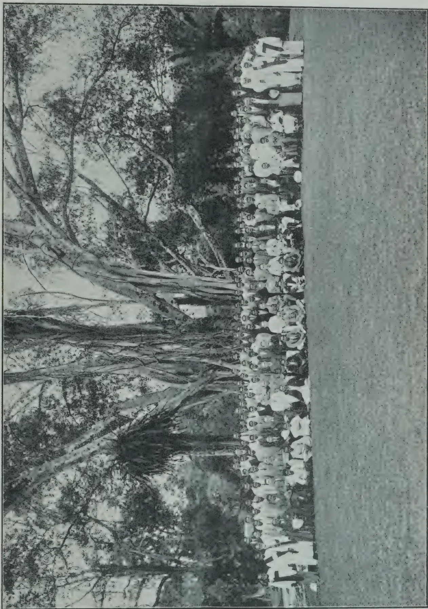
Plate I.—CENTENARY OF THE ROYAL BOTANIC GARDENS, PERADENIYA.
Staff of Department of Agriculture—March 1922
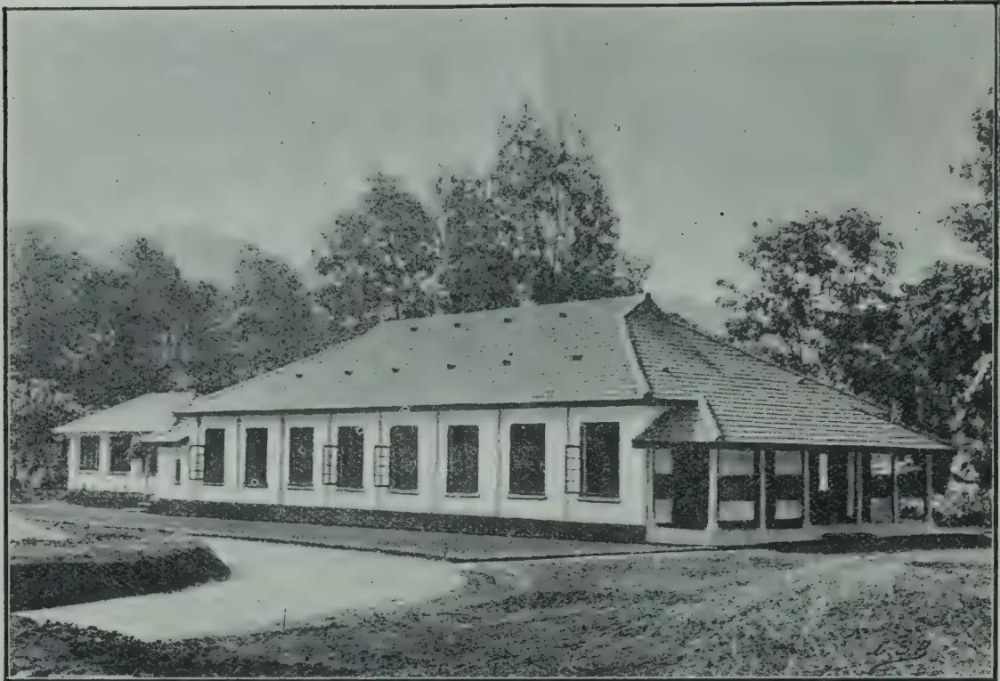
A black and white photograph of a long, single-story building with a gabled roof. The building has a series of windows along its side and a covered porch on the right side. It is surrounded by trees and a lawn.Plate II.—NEW ENTOMOLOGICAL LABORATORY AND INSECTARY
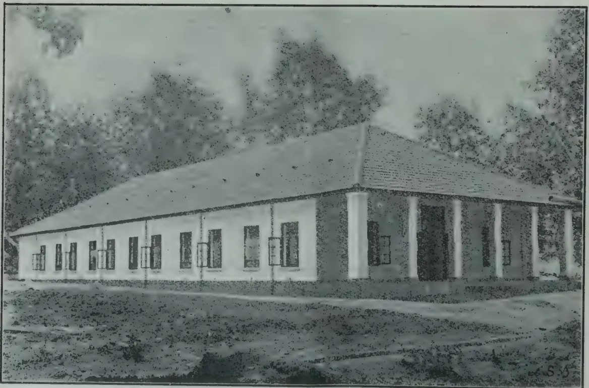
A black and white photograph of a long, single-story building with a gabled roof. The building has a series of windows along its side and a covered porch on the right side. It is surrounded by trees and a lawn.Plate III.—NEW MYCOLOGICAL LABORATORY
FEBRUARY, 1923.]69The work of the Department in regard to Tea consisted of a continuation of the manurial experiments at Peradeniya Experiment Station, the testing of green manures for use in tea cultivations, and the continuation of the investigations into the shot-hole borer and other pests and diseases of this crop.
The manurial experiments continue to demonstrate the value of green manures for tea, the dadap and albizzia plots still continuing to give satisfactory yields. Trials have been started with Gliricidia maculata as green manure for tea, and the results have been so satisfactory up to the present time that the demand for cuttings and seed of this plant now exceeds the supply.
Tea tortrix still causes damage, but there is little possibility of this pest being checked until flight breaks are established in the affected areas. Nettle-grub has been under investigation during the year and investigations have been begun on the termites found on tea estates. Details concerning this work is given in the present volume and attention of all planters up-country is directed to the details given of the leaf disease caused by Cercosporrella theæ.
With the prohibition of the importation of tea seed from India in order to safeguard Ceylon against the introduction of leaf blister blight, attention has been paid to the tea-seed bearers in the Colony. There is little doubt that if the present high prices for all grades of tea are maintained new areas will be planted up during the next few years. There will therefore be an increasing demand for good seed, and all estates possessing areas of tea-seed bearers would be advised to pay more careful attention to their cultivation. Most of the tea-seed bearers in Ceylon are too closely planted, and many of them do not receive the cultivation that their importance to the industry demands.
G. G. AUCHINLECK, M. Sc., A.I.C., F.C.S.,
Divisional Agricultural Officer, Central.
The gradual diminution in the yield of seed from tea-seed bearers, which is taking place on some estates in Ceylon, has recently been under investigation.
Figures at the disposal of the Department of Agriculture shew that in some cases the yield of seed from trees, ranging in age from 25 to 35 years, has been reduced to less than half during the past five to ten years. As the crop is a profitable one, the systems of manuring and cultivation followed by the estates in general leave little to be desired. The tea-plant lives probably for at least three-quarters of a century, so that it is unlikely that the observed diminution in yield of trees of 30 or 40 years of age can be the result of the on-coming of old age.
Examination of fields of tea-seed bearers shows that in many cases the plants are over-crowded. Normally, tea-plants are set out at distances varying from to ft. apart, and this space is ample where the plants are
70[FEBRUARY, 1923.table-pruned to a height of a couple of feet and grown for leaf. Where tea-plants are allowed to grow without pruning, they reach a height of 15 to 20 feet with a corresponding diameter of head, and such plants probably need a space of not less than 12 to 15 feet square. There is very little doubt that several of the fields of bearers in Ceylon were originally planted for leaf, and later allowed to grow up as sources of seed, without attention being paid to removal of surplus plants.
Two effects would be expected from over-crowding, both of which are in evidence in several of the fields of bearers in Ceylon. In the first place, lateral growth being hampered, there would be a compensating increase in vertical growth. Secondly, the production of leaves would take place on the tops only of the plants, all the other parts being shut out from the sunlight. An undue proportion of the vigour of the tree would be wasted on building up necessary wood, and the production of seed, which is dependent on the amount of leaf-surface, would be diminished. The effect of over-crowding on the shape of the tree and on the amount of leaf-production is clearly shown in Plates IV and V.
The harmful effect of over-crowding cannot be overcome by heavy manuring or by improved cultivation. It is probable that harm rather than good will follow. By increasing the vigour and size of the trees, the time is merely hastened when the rates of leaf-surface to woody bulk of the trunk and branches becomes reduced to a minimum. It is no doubt true that a certain number of weaker plants are over-shadowed and eventually killed by their more vigorous neighbours, but the process is a slow and wasteful one.
It seems safe to assume that 12 feet square is the minimum distance at which mature tea-seed bearers should be allowed to grow. In a field planted at 4 feet square there are therefore nine times the correct number of plants. It is clearly unwise to make so drastic a reduction as is indicated by these figures in an old field; in the first place, the reduction of crop would be too great and would probably last for several years, while in the second place the remaining plants would suffer severely from the shock of sudden exposure to light and wind.
Old tea-plants which throughout their lives have suffered from over-crowding are abnormally tall and possess a very small area of bearing-surface. If such trees be relieved from over-crowding by removal of their neighbours, it is doubtful whether they would be able to spread laterally, and so increase their leaf-surface, unless some system of topping and pruning be adopted. In addition, therefore, to reducing the number of plants per acre, the planter must pay attention to the question of forcing lateral growth in the case of the remaining plants. Both from the point of view of yield and that of conveniently controlling disease and reaping the crop, tall slender plants are undesirable.
In the majority of cases, where the planter is unwilling to face a heavy loss of crop for several years, a gradual improvement can be effected by annually removing a certain number of plants. In every over-crowded field, there are trees which are slowly being killed by their more vigorous neighbours, and these can be removed year by year with very little loss, or probably an immediate gain, to the yield per acre. If this system be followed, and simultaneously the standard of manuring and cultivation be sustained, the trees which remain should gradually produce more laterals and their production of seed should increase correspondingly. At the same time, more attention should be paid to the individual tree: non-productive wood should be pruned away, the trees should be lightly topped, and every effort made to encourage and preserve new lateral and basal shoots.
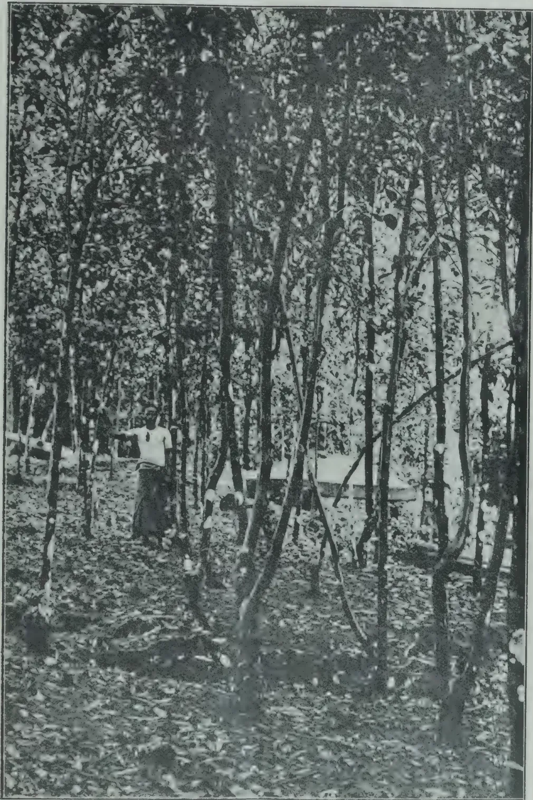
A black and white photograph showing a dense plantation of tea trees. The trees are tall and slender, with many branches and leaves, creating a thick canopy. A person is standing in the middle ground, appearing small compared to the trees, which emphasizes the density of the plantation. The ground is covered with fallen leaves and debris. The overall scene illustrates the issue of trees being too closely planted, as mentioned in the caption.Plate IV.—TEA SEED-BEARERS IN CEYLON
Too Closely Planted
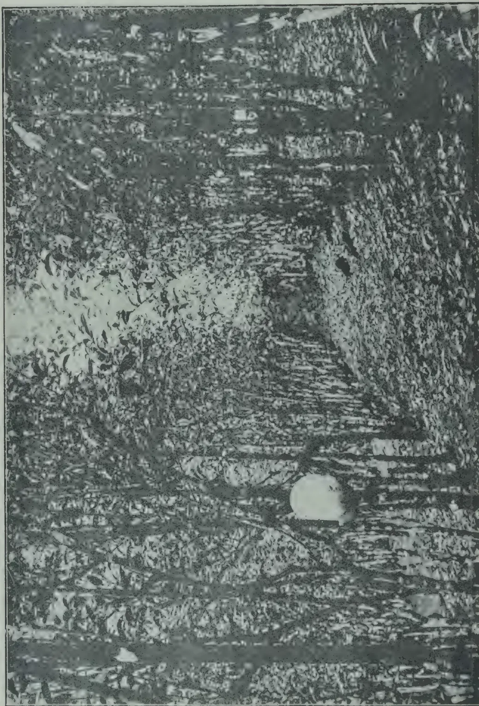
A black and white photograph showing a dense plantation of tea seed-bearers in rows. The trees are closely spaced, creating a textured, leafy appearance. A person is standing in the middle ground, providing a sense of scale. The ground is covered with fallen leaves and debris. The image is framed by a thin black border.Plate V.—TEA SEED-BEARERS IN CEYLON
Planted in rows, but trees too close in rows
FEBRUARY, 1923.]71The gradual removal of weak trees has of course the advantage that there is no sudden and heavy loss of crop, and for this reason it is the method most likely to be adopted by the majority of estates. Where the estate can afford to take the risk of a fairly severe loss, however, it would be of value if systematic trials of more drastic methods of renovation could be instituted.
Two trials which suggest themselves, and which would throw a considerable amount of light on the problems of cultivation of bearers, are as follows. On one acre, carrying 2,700 plants (4 feet square), alternate rows might be removed in one year, and the effect on the yield per acre noted : the space available to each tree would then be or 32 square feet. The ordinary cultivation should be carried on, and a special mixture strong in nitrogen given to force vegetative growth. In the second year alternate trees in the remaining rows might be taken out, reducing the number of trees per acre to 680, and increasing the space available to each tree to or 64 square feet. In both years, light topping and removal of surplus unproductive branches should be practised, so as to induce lateral growth.
On another acre, a more drastic method might be tried. Alternate rows of plants might be removed and the remaining trees cut back severely. On one half of the acre, all trees should be topped back to 5 feet in height, while on the other half the trees should be collar-pruned to within three or four inches of the soil. From observations on individual trees it seems probable that even old tea-plants would stand such drastic treatment as this ; and there are indications that collar-pruning will in the end produce better results than topping at 5 feet.
It cannot be claimed that these trials are entirely free from risk, not only of loss of crop for two or three years, but even of loss of trees from severe and sudden exposure. The growing of tea-seed bearers is however so different from the cultivation of leaf-tea, and the information concerning the handling of bearers is so scanty, that it is worth while running the risk in order to obtain further information.
The cultivation of tea-seed bearers is much more akin to fruit culture than it is to the growing of leaf-tea. Hitherto, bearers have been dealt with collectively in the field and very little attention has been paid to the individual plant. Pruning for shape, pruning for seed, replacing unprofitable individuals, are a few of the points which have received no attention. In view of the steady demand for seed of a good jat, and the probable future increase of that demand, the advisability of planting up fresh areas of bearers might well be considered by planters in Ceylon. Growing seed for sale should be a distinct industry and should be no longer hampered by confusing the methods used with those employed in the case of tea grown for leaf.
It is probable that in planting new areas, the planter will be safe in setting the bearers out at intervals of 12 feet, or 300 plants per acre. Were it certain that removal of alternate rows would be punctually carried out, the young plants might be grown at 6 feet apart until the branches of neighbouring plants were in contact. The reluctance of removing large numbers
72[FEBRUARY, 1923.of healthy trees is however so great, that it is safer to adopt the wider distance once for all in the beginning, and to cover the soil in the wide intervals with inter-crops or green manures until the bearers are large enough to afford their own cover.
From the beginning, attention should be paid to inducing good, shapely growth. The young plants should be pruned to within 3 to 4 inches of the ground, and from 6 to 12 spreading stems allowed on each plant. In later years, branches should be cut back to outside "eyes," so as to produce a good, open, wide-spread head. Eventually, a widely oval shape should be produced. As seed is borne chiefly on the periphery of the head, and is dependent on the area of leaf-surface exposed to air and sunshine, every effort of the planter should be directed towards reducing the amount of large wood and increasing the number of lighter productive branches and leaves.
Once the shape of the tree has been satisfactorily moulded by pruning, the problem of producing an annual crop of new productive wood has to be faced. In other words, pruning for shade has to be succeeded by pruning for seed. On this point it must be frankly confessed that there is little definite information, but observation leads one to conclude that, once a crop of flowers has been produced in the axil of a tea-leaf, the axil becomes sterile. In later years, therefore, the annual crop of flowers must be secured from new branches or from lateral extensions of the existing branches.
In pruning for seed, two points have to be kept in mind; firstly, new and productive branches must be forced annually by cutting back the older laterals, and secondly light and air must be admitted into the head of the tree by pruning away crowded and unproductive branches. Both of these aims can be attained while yet the oval shape of the general framework of the plant is preserved, but a certain amount of skilled supervision will be necessary.
See also :—THE TROPICAL AGRICULTURIST, September, 1922
N. K. JARDINE, F.E.S.,
Acting Assistant Entomologist.
Shot-hole Borer (Xyleborus fornicatus) was first mentioned in Ceylon in 1868, when EICHOFF described the insect from a specimen collected in Ceylon. GREEN was privately investigating the insect as early as 1892, when it was noticed to be attacking tea on several estates. The first investigation into the life-history, habits, food-plants and control of this insect was therefore undertaken by GREEN some thirty years ago, and the results of his researches were published in a Circular of the Royal Botanic Gardens (No. 9, Vol. 2) in 1903. The concluding remark of this circular is extremely interesting in the light of further investigations by other Entomologists, extending over a period of nineteen years. MR. GREEN says :—"To sum up, keep the tree in a vigorous condition, and it will fight its own battles, provided that it is
FEBRUARY, 1923.]73relieved from constant reinfection by the systematic destruction of the prunings." In this circular GREEN points out the seriousness of the pest, and suggests that energetic steps be taken to avert its spread.
On the retirement of GREEN in 1913, RUTHERFORD continued the work of investigation. He made the first experiments on the insect under ground, and the results of his experiments proved that the beetle can live, breed and multiply in prunings, buried to any depth consistent with estate conditions. RUTHERFORD was of opinion that the burial of prunings, as a means of control, was useless, and that certain disadvantages would accrue from the concentration of so much decaying organic matter in close proximity to the roots of the plants; and recommended burning of the prunings as the only effective method of control.
In 1914 SPEYER came to Ceylon for the investigation of Shot-hole Borer, and during his five years of service he made a careful study of the problem. His first Bulletin constituted a brief history of the insect, and a list of estates infested with the borer, arranged in their districts to enable planters desiring to purchase tea plants, to distinguish the infected from the uninfected. His next work "Treatment of Prunings on Infested Estates" (Bul. 43) dealt with his experiments to ascertain the effect the disposal of prunings had on the habits and propagation of the beetles; prunings being disposed of in the following ways:—(a) Leaving them on the ground; (b) Burying them to depths varying from four to eighteen inches; (c) Burning the prunings and (d) Burying the leaves and small wood, and burning the large wood. In this work SPEYER bears out the opinion of RUTHERFORD, that the wholesale burial of prunings is not an efficacious measure of control, and he suggests that the soundest method of disposing of prunings is to cut "the leaves and smaller wood up to the thickness of a pencil—immediately after pruning the branches," to bury these and burn the larger prunings at the roadside, and broadcast the ashes over the field. Though this is not a criticism of the investigations, the writer is of opinion that the words "the leaves" should have been omitted as it leads one to infer that the leaves of the prunings are of definite importance to the insect, while this is not the case.
The question of burning prunings was one constantly raised by planters, for it was felt by many that the loss incurred in burning prunings was a serious matter. The results of further experiments by SPEYER are published in a bulletin (No. 44) entitled—"A Control Pruning Scheme, and its Practical Modifications." The scheme was that infected bushes should be pruned between the ordinary pruning periods, and destroyed by fire. For badly infected tea the first round of removing infected branches was to be made at from four to six months, and the second round at from fourteen to eighteen months after the ordinary pruning; and for slightly attacked tea the scheme differed in that the first round for removing infected branches should be made eight to twelve months after pruning. The scheme was to be adopted in conjunction with the application of a mixture of SPEYER'S invention which could be applied to the collars and over branches of the bushes in the form of a paint. It was claimed that this "paint mixture" would kill the borers that came in contact with it. The whole scheme would therefore act as follows:—frequent pruning would prevent undue increase of the insect between the ordinary pruning periods and the application of the "paint" would control the insect in the collars and lower branches.
74[FEBRUARY, 1923.Innumerable experiments other than those mentioned in this paper were tried by each investigator, but mention is made of only those which have come before the public in the form of publications. The problem of the control of Shot-hole Borer is one bristling with difficulties.
In 1919 JEPSON took over the investigation. His first work was to make trials on the Control Pruning Scheme and SPEYER'S Mixture. The summary of his experiments shows that control pruning results in too severe a mutilation of the bush to warrant its adoption. The paint mixture proved too costly to be used generally, of insufficient benefit, and tending to cause injury to the bushes and promote diebacks. That pruning has a significant effect on the insect is explained by JEPSON in his article "The Restriction of Tea Crop and Shot-hole Borer" (T. A. Dec. 1920). He says: "Instances can be recalled where about every branch on every bush has been riddled by borer and it is usually observed that this heavy degree of infestation has occurred during the six months immediately preceding pruning." This in itself explains why all investigators have first concentrated on the question of pruning as a possible control. JEPSON continues:—"The explanation of this comparatively sudden infestation is that the increase is due, not so much to the exhausted condition of the bushes inviting further attack from outside, as to increase of natural propagation in that particular field, brood succeeding brood, in rapid succession, until checked by pruning." "When it is pointed out that at this period the female progeny of one original female has numbered no less than 10,000,000 individuals, the necessity of taking action to limit the activities of the insect at this period can be readily appreciated."
In "The Treatment of Buried Prunings on Shot-hole Borer infested Estates" (Bull. 54) JEPSON deals further with the problem. His experiments extended over a period of months, and some 11,000 galleries were minutely examined. The object of the experiments was to discover a means of treating the prunings at the time of burial in such a manner that the inmates would be killed. Artificial manures, chemical salts, insecticides and proprietary substances numbering eighteen were used. Neither artificial manures, nor iron or copper sulphates, proved of any benefit. Phenol showed slight effect, while "Kerisol" and "Agrisol" were of material benefit, but the cost of treatment with these substances was high. The cost of materials and the quantities necessary to produce beneficial results prohibit their being used economically, and we are forced to revert back to the method originally suggested, namely, to lop the smaller prunings, bury them and burn the larger branches.
Series of manurial experiments were then instituted. The first consisted of trials with a selection of individual manures to ascertain the effects of nitrogen, potash and phosphoric acid upon Shot-hole Borer. These experiments were completed in February of this year and the results published (Bul. 56). They show that Sulphate of Ammonia and Nitrate of Soda and, to a lesser degree, Lime, have a very beneficial effect in reducing the attack of the borer. The second series, which is still in progress, deals with a general mixture of ordinary estate routine. As these experiments have been left in the hands of the writer during the absence of JEPSON on furlough, he may be permitted to outline the results to date. The object of these experiments is to ascertain what part liberal manuring plays in promoting the process of gallery healing.
FEBRUARY, 1923.]75Four observations have been made on two similar experiments, and they point to a significant benefit in promoting satisfactory gallery healing. These experiments—though as yet incomplete—are tending to show that a general mixture* of Fish, Nitrolim (or Sulphate of Ammonia) and Muriate of Potash in quantities of 200 lb. at pruning, 350 lb. in the second year, and 550 lb. in the third year is giving very material benefit to the bushes over Shot-hole Borer attack. The results of these observations have not yet been published. So satisfactory are the results however that it is probable that a solution to the problem will be found in good cultivation and the careful destruction of the woody parts of prunings by fire.
From this history of investigation it appears that the greater proportion of work has been concentrated on the question of the disposal of prunings, but the writer has treated of only those investigations which have appeared in publication. Other aspects of the problem which have been carefully investigated may be enumerated as follows:—Soil fumigants; trap trees; food plants; range of flight; immunity of plants at certain elevations; destruction of “Ambrosia” fungus,—the food material of the larvæ and adults in the galleries; crop restriction; insecticides; parasites; predacious enemies; phototropism—the response to the stimulus of light; legislation—to arrest the spread of the insect by the distribution of plants from infected areas; education,—lectures, field demonstrations, distribution of illustrated posters and pamphlets.
* The mixtures used were as follows:—
At pruning—Nitrolim 60 lb., Ephos phosphate 80 lb., and Muriate of Potash 60 lb.
Second and Third years from pruning—Sulphate of Ammonia, 60 lb., fish, 250 lb. and Muriate of Potash 40 lb.
See also:—Bulletins of the Department of Agriculture, Ceylon, Nos. 43, 44, 54, 56; Leaflets Nos. 4, 8, 13.
TROPICAL AGRICULTURIST, February, 1914; March, 1914; July, 1915; January, 1916; March, 1917; July, 1918; January, 1920; November, 1920; December 1920; January, 1921; February 1922? July, 1922.
C. H. GADD, B.Sc.,
Assistant Mycologist.
It is the expressed opinion of numerous planters that high cultivation and manuring on tea estates exercises a controlling influence upon the activities of Shot-hole borer. Though there is a certain unanimity as to the effects of manures in general, there is a considerable divergence of opinion as to what manurial elements are most effective in bringing about a reduction of borer attack.
Experiments were started by JEPSON in November 1920 in the Badulla district to determine whether a reduction of borer attack follows treatment with certain fertilizers, and if so, to ascertain what manurial elements are the most efficacious.
Sixteen plots in each of three fields were marked out. Each plot consisted of 378 bushes, i.e., 18 rows, each of 21 bushes, and was separated from adjoining plots by guard strips, 4 bushes wide, which were left untreated. By the use of guard strips the risk that a manure applied to one plot would affect the bushes on the boundaries of the adjoining plots was
76[FEBRUARY, 1923.reduced to a minimum. The bushes in the three fields differed in age, counting from the time of last pruning. In one field they were pruned shortly before the commencement of the experiment; in the second and third fields they were entering their second and third years respectively from last pruning.
The following substances were selected for trial and were applied at the rate of 200 lb. per acre, except where otherwise stated:—
Nitrate of soda, Sulphate of Ammonia, Nitrolim, Nitrate of Potash, Muriate of Potash, Ephos phosphate, Basic Slag, (300 lb.), mixture of equal parts Nitrate of Soda and Ephos phosphate, Dadap loppings (5 tons), Boga medeloa loppings (5 tons), Cattle manure (7 tons), and Lime (5 tons). Each of these fertilizers was applied to one plot in each field and the remaining 4 plots in each field were left untreated as controls.
The final examinations of two fields were made in July 1921, but, as at that time the attack in the field in its first year from pruning was so slight as to be almost negligible, its examination was delayed till February 1922, when the attack, though still small, was considered to be sufficient for a comparison to be made between the various plots.
The following determinations were made for each plot.—
The mean number of open galleries per branch represents the extent to which branches have been weakened by borers; the proportion of galleries found empty and the mean number of occupants (adults, larvæ and eggs) indicates the rate at which borers are increasing in the respective plots.
The results obtained from the three fields were in some cases inconsistent. For instance, as regards the number of galleries per branch, the nitrolim plot was in one field decidedly better than, the controls, while in the other fields the attack was equal to, or worse than, that in the unmanured plots. The results obtained from these experiments therefore cannot be considered to be conclusive.
A general survey of the experiments, however, shows that of the five treatments which gave better results than the best of the control plots three are nitrogenous manures, viz. sulphate of ammonia, nitrate of soda, and nitrolim, the remaining two being lime and muriate of potash. The best result was obtained with sulphate of ammonia, which gave consistent results in the three fields. Nitrate of soda gave almost equally good results. The results obtained from the other nitrogenous manure, nitrolim, are very little better than those obtained from the best control plots.
The organic and phosphatic manures gave results no better than the unmanured plots.
Though the potassic (muriate of potash) plot gave the fourth best result, yet the nitrate of potash plots gave results on the whole no better than the controls. Similarly where nitrogen was applied in combination with phosphoric acid, as provided by a mixture of nitrate of soda and ephos phosphate, the results were not so good as where a nitrogenous fertilizer alone was used.
FEBRUARY, 1923.]77Though the above experiments have given no conclusive results, they indicate that certain manurial substances have a beneficial effect in controlling Shot-hole borer. Also they furnish evidence as to the extent to which such experiments are liable to experimental errors, and the information, derived from these experiments should be of great value when designing and carrying out other Shot-hole borer control experiments.
The use of incomplete fertilizers is, in general, not to be recommended. In the above experiments no complete mixture, other than organic manures, was used. Another series of experiments to determine the effect of complete mixtures of artificial fertilizers has been laid out by JEPSON, and, so far as the experiments have progressed, the examinations show that the use of such mixtures is followed by a decisive diminution of Shot-hole borer. Whether this diminution is only temporary or whether it will be maintained, cannot be ascertained till all the examinations are completed.
See also :—BULLETIN OF THE DEPARTMENT OF AGRICULTURE, No. 56.
J. C. HUTSON, B.A., Ph.D.,
Entomologist.
The Nettle-grubs, as a group, are probably the best known of the caterpillar pests of tea in Ceylon, since one or more species occur in most districts in the Island and readily make their presence felt, not only on the tea but on anyone who unwillingly walks into an affected area. The term "nettle-grub" is commonly applied to a family of limaciform or slug-like caterpillars, the Limacodidæ, some of which are protectively armed with tufts of urticating or stinging hairs the points of which break off on touching the skin and cause intense irritation.
Some twenty species of this family have been recorded from Ceylon, and seven of these are known to be more or less important pests of tea, while others may possibly occur occasionally in tea areas. The following species have been recorded at various times as tea pests :—
Thosea cana, Wlk., The "Green Nettle-grub;" Thosea recla, Hmpsn., The "Morawak Korale Nettle-grub;" Thosea cervina, Moore, Natada nararia, Moore., The "Fringed Nettle-grub;" Parasa lepida, Cram., The "Blue-striped Nettle-grub;" Spatulicraspeda castaneiceps, Hmpsn., which may be called The "Red-banded nettle-grub;" Belipha laleana, Moore, The "Gelatine grub."
The fringed nettle-grub has been known as a pest of tea in Uva for at least twenty-five years and has become an almost chronic visitation on some estates in that district. Occasional outbreaks of this caterpillar occur at longer intervals in other districts. Attacks of Natada are usually reinforced by small numbers of one or more species of the above mentioned nettle-grubs, but no reports have been received during the last two years of any serious outbreak of these nettle grubs independently of Natada.
78[FEBRUARY, 1923]At intervals during the past eighteen months Natada nararia has been under investigation both in the field and under insectary conditions, as being one of the most important tea pests during this period, and the following account is based mainly on the results so obtained.
In the tea areas where Natada has become established as a regular pest it probably breeds almost continuously throughout the year, but is usually more prevalent from about August to October, and again in May and June.
Moths.—The male and female moths mate soon after emerging from their cocoons and the females may begin egg-laying within a day or two after emergence. As a preliminary experiment to get some idea, among other points, as to the number of eggs which a Natada moth will lay in captivity, it was found possible to insolate ten pairs of these moths in separate breeding cages, one pair to each cage. The females laid respectively the following totals of eggs :—185, 411*, 60, 206*, 305*, 126, 115, 18, 408*, 198*. In the case of the numbers marked with an asterisk (*) the great majority, over 90 per cent., of the eggs hatched, while in the remaining totals not a single egg hatched, indicating that these eggs had not been fertilized. When kept supplied with food in captivity the female moths live for periods varying from 4 to 14 days and the males from 4 to 12 days. There are indications that the majority of the eggs are laid during the first 3 or 4 days after emergence, while the actual oviposition period last from 2 to 10 days. In the insectary, the moths laid most of their eggs scattered about on the sides of the breeding cages, but also deposited them on both the upper and under surfaces of the tea leaves. Under natural conditions in the field the eggs appear to be laid singly on the upper surface of older leaves. Mating takes place mainly at night and most of the eggs are laid during the night. The moths usually rest in the positions shown in Plate VI, figs. 1a and b, the body being held at an acute angle to the twig, usually with the head uppermost. The moths appear to hold on by the second and third pairs of legs, the front pair being folded up close to the body. The wings are often closely applied to the sides of the twig and may serve to steady the moth.
Eggs.—These lie flat on the leaf surface and somewhat resemble a scale insect. The actual egg is pale yellow at first and semi-transparent, and is covered by a thin transparent film which apparently shines with the metallic iridescence mentioned by GREEN. The eggs develop in about 5 or 6 days and before hatching are pale-brown in colour with a semi-transparent centre.
Caterpillars.—These are about 1/25th inch long on hatching and of a dull whitish colour, but become pale green after feeding has begun. The body is fringed with minute tufts of white stinging hairs and there is a double row of still smaller spiniferous tubercles along the back. The young nettle-grubs move to the underside of the leaves soon after hatching and begin eating away small portions of the under-surface, leaving only a thin skin, the upper epidermis. When a number of young caterpillars are feeding on the same leaf this soon becomes marked with numerous small brownish spots. Plate VI., fig. 1f. shows the kind of damage done by the young
FEBRUARY, 1923.]79nettle-grubs. After about two weeks of feeding the caterpillars are able to eat right through the leaves which very soon assume a notched and ragged appearance. The bushes may sometimes be completely defoliated over an area of several acres. The nettle-grubs are full grown in about 5 to 7 weeks in captivity, but probably take a shorter time in the field.
The Cocoon stage lasts from about 17 to 22 days in the breeding cages, and after the emergence of the moths the life cycle begins all over again.
The complete life cycle of Natada nararia under insectary conditions occupies from about 8½ weeks to about 11 weeks. It has not been possible to ascertain the exact period of development from egg to moth in the field, but it is probably about 7 to 8 weeks under favourable climatic conditions.
The fringed nettle-grub has been found to breed freely on dadap (Erythrina lithosperma) which is commonly interplanted with tea as a green manure. The caterpillars also feed on Toona (Cedrela toona) which is sometimes grown along the edges of estate roads and paths running through the tea. This pest is able to develop on Bignonia creepers, and has been found feeding to a slight extent on the following plants:—Eucalyptus robusta; Psidium polycarpon; Castanospermum australe; Tecoma stans; Thunbergia laurifolia; and Rubus ellipticus.
It seems improbable that Natada spreads to new areas to any great extent in the caterpillar stage, since the caterpillars are not naturally very active nor do they habitually drop to the ground or move away to other bushes when disturbed. The spread of the pest seems to take place chiefly in the moth stage, especially at times when there is a strong wind blowing. The emergence of a number of moths in a small area during periods of high winds would lead to a distribution of a certain number of these moths, to more distant uninfested areas of tea and on to any other plants growing across the line of flight. Each fertilized female will be capable of laying at least 200 eggs, perhaps scattered over several bushes, and the next generation of caterpillars will be spread over several acres of tea. Within about 7 to 8 weeks later a still larger number of moths will be emerging to spread the attack further afield. Hence the vital importance of being on the look-out to check the pest at the outset while it is confined to a few bushes.
The fringed nettle-grub, in common with the other nettle-grubs which feed on the tea plant, is normally controlled by its natural enemies in the shape of small parasitic flies and wasps. A "Wilt disease" is also very effective at certain times. In the absence of its natural enemies, the pest increases very rapidly and at certain times seems likely to go on increasing indefinitely. Then perhaps a sudden change takes place and the attack fades away, and the caterpillars may be seen no more in that particular area for several years. This sudden disappearance of the pest may be due partly to the increase in the parasites and partly to heavy rains, but is often mainly due to the rapid spread of a highly infectious disease. Caterpillars in all stages of development may be affected; the younger specimens become discoloured and shrivel up, while the older nettle-grubs turn brown and become somewhat swollen and glossy. They disintegrate rapidly and
80[FEBRUARY 1923.a brownish foul-smelling slime oozes out. This spreads over the leaves, especially during rains, and it seems probable that other nettle-grubs get infected by eating the contaminated leaves or merely by crawling over them. This disease seems to be most effective at times when the bushes are heavily infested with the caterpillars, and spreads rapidly in the over-crowded conditions.
These may, for convenience, be considered under preventive measures, which are intended mainly for dealing with small outbreaks of nettle-grub, and remedial measures which are applicable after the pest has got out of hand and are mainly of an emergency nature.
The above measures are all intended for application to small areas up to half an acre at most, and if the pest is detected in time it should only be necessary to treat a few bushes. These measures are not intended for large areas, although they are sometimes carried out on estates where a large labour force is available, and they may do some good. In such cases the caterpillars and cocoons are collected by the bushel.
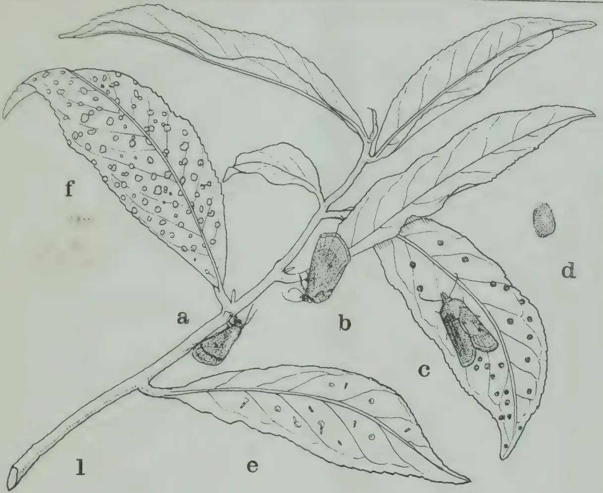
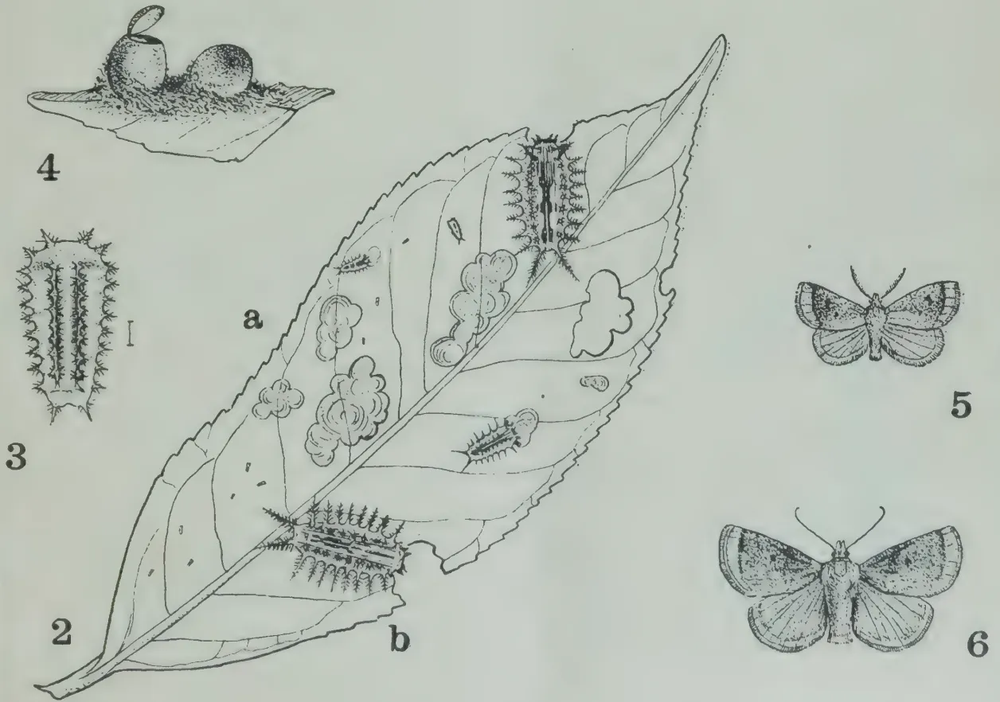
Plate VI.—THE FRINGED NETTLE-GRUB
1. (a) Male (b & c) Female (d) Egg enlarged (e) Newly hatched caterpillars and feeding spots on leaf (f) "Spotting" of leaf done by young caterpillars. 2. (a) Showing injury by young and half-grown nettle grubs (b) Full grown nettle grubs eating holes in leaf. 3. Second stage larva (Enlarged). 4. Cocoons, one on leaf. 5. Male moth. 6. Female moth.
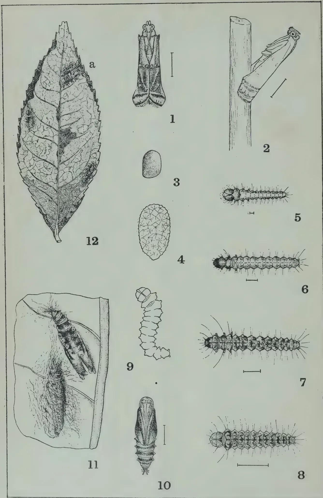
This plate contains 12 detailed line drawings of the Tea Leaf-Skeletonizer moth and its caterpillars. 1. A dorsal view of the adult moth, showing its characteristic wing shape and venation. 2. A drawing of the moth resting on a twig, illustrating its typical feeding position. 3. A side view of an egg, which is oval-shaped. 4. A top view of an egg, showing its reticulated surface texture. 5. A caterpillar in a resting position, showing its segmented body and numerous setae. 6. A caterpillar in a resting position, similar to 5 but with a different orientation. 7. A caterpillar in a resting position, showing its segmented body and numerous setae. 8. A caterpillar in a resting position, similar to 7 but with a different orientation. 9. A caterpillar in a characteristic resting position, showing its segmented body and numerous setae. 10. A caterpillar in a resting position, showing its segmented body and numerous setae. 11. A caterpillar resting on a leaf, showing its segmented body and numerous setae. 12. A drawing of a leaf with characteristic damage, showing the skeletonized appearance of the leaf tissue.
Plate VII.—TEA LEAF-SKELETONIZER
1. Moth. 2. Moth on twig—characteristic position. 3. Egg, side view, enlarged about 20 times. 4. Egg, top view, enlarged 40 times. 5. 6. 7. 8. Different stages of caterpillar. 9. Characteristic resting
FEBRUARY, 1923.]812. As an alternative to spraying, or in cases where a large area, say the greater part of a field, is attacked and no sprayer is available, it is usually advisable to prune the whole field, especially if this area is almost due to be pruned. The pruners should start around the edges of the field and gradually work in towards the centre. The prunings should all be burnt immediately, where practicable, and all the dead leaves and rubbish should be collected and burnt also. This is a very drastic method of treatment and should only be adopted in an emergency. The field should be manured after pruning.
In many cases where the outbreak has occurred towards the end of a dry period and rains are expected shortly the planter is inclined to let the pest run on in the expectation that it will be controlled by the wet weather or will be wiped out by disease. This sometimes works out all right in districts where the nettle-grub is only a very occasional pest, but is rather a dangerous experiment in areas where Natada is already an established pest, as there are usually enough survivors to start another big offensive a few weeks later unless preventive measures are adopted after the main attack has died down.
See also, CIRCULAR OF THE ROYAL BOTANIC GARDENS, SERIFS 1, No. 19
A Preliminary Note.
J. C. HUTSON, B.A., Ph.D.,
Entomologist.
Towards the end of July, 1922, a caterpillar pest of tea was reported from two adjoining estates in the Ramboda District and specimens were received from the Superintendent, who stated that the pest was present in small quantities on one estate, while one field on the other estate was covered with it and the bushes had been badly spoilt. About a week later a "tremendous plague of spiders" was reported by the Superintendent in connection with this pest. The same insect has been found recently (December, 1922) by one of the Plant Pest Inspection officers on four tea estates in the Badulla district.
The specimens as received from the Ramboda district were seen to be quite different from any of the usual caterpillar pests of tea and have not previously come under the observation of the Entomological staff, so far as is known. Specimens of the moths were subsequently bred out and are apparently new to the collection at Peradeniya. The moths have been sent to the Imperial Bureau of Entomology for identification, but the scientific name has not been received up to the time of writing.
The presence of the pest can usually be detected by the small masses of dead leaves near the top and in the middle of the bushes and badly attacked bushes may have a thinned out and ragged appearance due to partial defoliation. The caterpillars eat away small portions of both the upper and under surfaces of a leaf indiscriminately, leaving only a thin skin, so that a badly
82[FEBRUARY, 1923.attacked leaf may be completely skeletonized with only the ribs and veins remaining. Such leaves are usually more or less covered with frass and loose webbing but this is not shown in the figure. The leaves are loosely webbed together by fine threads to form a sort of "nest" within which the caterpillars feed and pass through the various stages in their development. The damaged leaves sooner or later fall off the twigs, but remain within the general mass. Fresh green leaves are included as required, and these in their turn become skeletonized and dry up. As a rule only the older leaves are attacked. An outbreak of this pest appears to be frequently accompanied by the "tremendous plague of spiders" mentioned above, and bushes may be completely covered with a network of webbing which becomes a nuisance to the pluckers. It is possible that some of the moths may be caught in the spiders' webs as they fly up out of a bush, but this has not been observed so far.
Moths :—The small, slender, dark moths (Plate VII., fig. 1) are not at all conspicuous and probably hide in the tea bushes during the day. They can sometimes be "put up" by beating the bushes in an infested area, but fly only a short distance as a rule and dart back into another bush, where they settle down in the position shown in Plate VII., fig. 2. They are very difficult to detect when at rest, as they may easily be taken for a piece of dry twig or a dead leaf stalk. In captivity the moths begin egg-laying in about a week after emergence and may live for another week or ten days after this.
Eggs :—The eggs are pale yellow when freshly laid and gradually change in colour through orange red to crimson. Before hatching they are seen to be mottled with grey, pink and dirty white. Plate VII., fig. 3 shows the outline of an egg in one position and fig. 4 an egg in outline in another position—further enlarged to show the reticulation on the egg-shell. Under field conditions the eggs have been found on the dead leaves among the grass and debris in a "nest." They can be seen quite easily without a lens when in the crimson stage. In the insectary the eggs hatch in about a week, so far as we have been able to ascertain from preliminary experiments. It is not known at present how many eggs a moth can lay.
Caterpillars.—The newly-hatched caterpillars are about inch long and are orange yellow. Seen under a lens the head and first segment of the body are pale brown and broader than the remaining segments which gradually taper off towards the hinder end. The body is bright yellow and each segment is edged laterally with pinkish markings on each side. These young caterpillars soon begin feeding and cover themselves with a thin webbing of threads over which pellets of grass are soon scattered. The second stage caterpillar has a somewhat mottled appearance with a mixture of pale yellows, browns and blacks while the sides of the body still have a pinkish tinge. The body has become stouter and is broader than the head, except the two last segments which are narrower. In the next two stages the mottled appearance has become more marked, since the colours, yellow, brown and black, with a tinge of green, have deepened and become more contrasty. The full-grown caterpillar is nearly half inch in length and is
FEBRUARY, 1923.]83mottled with chocolate—brown or reddish-brown and black with a slight tinge of olive green. These caterpillars are quite inconspicuous on the dead leaves among which they usually shelter. The period of larval development takes about 5 to 7 weeks in captivity and probably the shorter period is the more normal one under field conditions. The caterpillars may often be seen in the position shown in Plate VII., fig. 9.
Cocoons. The full grown caterpillars settle down on the leaves, sometimes on the dead leaves, sometimes on the green leaves outside the "nest," and spin a loosely woven cocoon over them. Then they moult for the last time and change into the pupa (see figs. 10 and 11). The pupa is dark brown with shades of lighter brown. In the insectary the pupal stage lasts for about 11 to 12 days, after which the moths emerge to start another brood.
This pest could probably be checked in the early stages of the attack by having the masses of dead and dying leaves cleared out and burnt. This would kill many of the eggs, caterpillars and cocoons. Bushes which are badly webbed over by spiders should receive further attention which may sometimes lead to the detection of this or other caterpillar pests. Nothing more definite can be suggested until the pest has received further investigation. It is requested that all tea planters be on the look-out for this pest and its presence be reported to the Entomologist, with specimens if possible.
J. C. HUTSON, B.A., Ph.D.,
Entomologist.
There are several species of termites (white ants) which are more or less closely associated with the tea bush in Ceylon, and the marked increase of these insects at various elevations has caused much apprehension among tea planters recently. The tea termites, for the most part, may be divided into two main groups according to their nesting habits and nature of their damage to the tea bush, viz :—
A. Termites which form their colonies inside a living tea bush and bore into the heart wood. These are primary pests, and include the well-known Calotermes militaris.
B. Termites which have their nests outside a tea bush, usually underground, and which generally attack the dead or dying bark and wood of various plants, including tea, rubber, dadap, grevillea, and jungle stumps. These include the mound-building termites, and can be regarded mainly as secondary pests and scavengers.
The prevailing anxiety about the tea termites seems to be due mainly to the state of uncertainty as to the actual species of termite concerned in any particular case, and where there is any doubt in the mind of the planter the damage is usually attributed to Calotermes militaris, when in most cases the injury is usually the result of an attack of a fungus disease or of insect injury followed by an invasion of the scavenging termites.
84[FEBRUARY, 1923.The main object of the following notes is to try and clear up the existing ambiguity by pointing out the essential differences between these two groups of termites in order that the tea planter may, in most cases, be able to diagnose the particular trouble for himself and take measures accordingly.
A. At the present time there are only three species of termites which are known to bore into the heart wood of healthy tea bushes. These are (1) Calotermes militaris, (2) Calotermes dilatatus and (3) Calotermes greeni.
Calotermes militaris is mainly an up-country species, being prevalent mostly in the southern part of the Central Province, but is sometimes found at lower elevations. This termite is intermediate in size between the smaller dilatatus and the larger greeni. It is a fairly serious pest on some up-country estates.
2. Calotermes dilatatus. This is the smallest of these three species of termites. It seems to be mainly a mid to low-country species. RUTHERFORD was of opinion that this termite enters a bush through some old knot-hole or a wound or through a red borer or shot-hole borer gallery and gradually works downwards, sometimes into the roots. The writer has observed this habit in the case of this species in tea seed-bearers, a series of attacked bushes showing progressive stages of injury from top to bottom and even down into the roots. In the case of dilatatus the galleries are distributed throughout the stem and neither RUTHERFORD nor the writer has observed any large cavities formed by dilatatus such as are found in the case of bushes infested with militaris. A complete colony apparently exists in each infested bush and there are indications that dilatatus has winged adults.
3. Calotermes greeni appears to have a wide range of distribution and feeding habits, as it has been recorded from Jaffna ("boring into trees"), Peradeniya ("in dead branch of tree"), Avisawella and Yatiyantota ("from stem of living tea bush") and Ambalangoda ("from stem of living Cashew-nut tree"). In the single instance seen by the writer of a tea bush infested by this species the damage was somewhat similar to that done by dilatatus in that the stem was fairly well riddled by galleries without any large cavity being made. C. greeni is the largest of these three species and has winged adults.
To summarize, it may be said that so far as we know at present, the Calotermes species all have their nests inside living tea bushes, militaris being more prevalent in up-country tea while dilatatus and greeni occur at lower elevations. In cases of injury by militaris, it is usually the lower parts of the bush, from the collar down to the roots which suffer most, but in all the militaris cases noted by RUTHERFORD and in those observed by the writer the injury was so far advanced that it was impossible to say where the termites had originally entered. GREEN was of opinion that these termites apparently enter a bush through the roots and work upwards. It is not improbable that militaris may sometimes gain entry through an injured branch from which the termites may spread in all directions throughout the bush.
Judging from the records of dilatatus injury left by RUTHERFORD and from the present writer's experience of this species in tea seed-bearers and ordinary tea bushes it seems not unlikely that dilatatus may enter a bush
FEBRUARY, 1923.]85above ground and may tunnel into the lateral branches and later work downwards, although it may possibly sometimes attack a bush from below ground level. Neither dilatatus nor greeni appear to excavate large cavities in the main stem, but have a system of galleries running through the heartwood.
Of the above species of Calotermes, it seems probable that militaris is the most formidable as a pest of tea, since it may escape detection at pruning time and continue its excavations for many years until the bush is reduced to a mere shell. Even in cases where it may enter a bush above the collar, being mainly an up-country species it has a longer time to carry on undisturbed between prunings. On the other hand dilatatus and greeni, probably working for the most part above ground level, would tend to be periodically controlled by pruning, especially by the more frequent prunings at lower elevations. It is possible, however, that were these two species left to their own devices they might eventually bring tea bushes to the condition sometimes produced by militaris in which the bush is completely hollowed out.
None of these three species has been a very serious pest within recent years, only small patches of tea or individual bushes being occasionally attacked. Much of the damage reported as due to Calotermes on further investigation usually turns out to be the work of the scavenging termites following an attack of branch canker or other injury to the bushes.
Since these termites have their colonies in individual tea bushes and are not known to nest in the ground or have any main termitarium outside the bushes it follows that the most effective way of reducing their numbers is by treating each infested bush individually on its merits. All completely riddled bushes should be eradicated and burnt immediately, so as to destroy any infesting termites. In cases where the injury is detected in time it should be sufficient to clear out any cavity thoroughly and paint the inside with a liquid wood preservative, such as a Creosote solution, and then fill in the cavity with mortar or cement to prevent water collecting and causing decay. Where there is no cavity but only small galleries the solution can be applied thoroughly to the cut surface and allowed to penetrate into the galleries. This should effectually drive out or kill any termites which are still inside and protect the bush from re-infestation for some time. The presence of the scavenging termites may some times complicate matters and in such cases the use of ordinary tar should be avoided as this seems to afford no protection against the scavengers.
B. There are several species of termites which feed on the dead and dying bark and wood of tea bushes, among other plants, and can be regarded mainly as scavengers. It should be understood that these termites are quite distinct from the Calotermes species, as will be indicated below, although they may sometimes be present on Calotermes affected bushes.
The two common species of scavenging termites commonly met with on tea are Termes obscuriceps and Termes redimanni. These are the common mound-building termites, a typical colony of which was described by
86[FEBRUARY, 1923.GREEN some years ago.* Termes horii is another scavenger which is sometimes found in tea bushes, and probably nests in the ground, but apparently does not construct mounds. Species of Eutermes are also bark-scavengers and a Leucotermes is occasionally found tunnelling in tea bushes which have been killed by root diseases.
These two species, T. obscuriceps and T. redemanni appear to have increased enormously on tea estates within recent years and are doubtless prevalent on most estates in Ceylon, at varying elevations. In the opinion of the writer the prevalence of branch canker on many tea estates has been one of the contributing causes of the marked increase of these termites on tea bushes within recent years. The branch canker fungus usually occurs along the upper surface of lateral branches, invading and killing the cambium layer inside and causing the bark to crack. The disease may also extend down to the main stem and in extreme cases may girdle and kill the bush. The scavenging termites come along and gradually clear away the dead bark and crumbly wood inside, usually working under a screen of earth. Eventually many of the horizontal branches are left with shallow irregular cavities along their upper surfaces and the main stem may also be partially excavated by the termites, which have merely cleaned out the portions of the bush killed by the canker. These injuries are frequently attributed by the planter to the work of Calotermes, especially when there is a fairly deep cavity in the main stem, but in the great majority of cases this particular type of injury is due to branch canker followed by these smaller termites, such as obscuriceps and redemanni.
Incidentally, these termites may also be gradually clearing any old stumps and logs left among the tea and the abundant supply of such food on some estates has encouraged these insects to extend and populate their underground colonies.
It has been claimed that in some cases these smaller termites may help to prevent wounds from healing over and that they sometimes eat away living bark and girdle young tea bushes, but there is no definite evidence that they ever attack healthy living plant tissues. It is true that they usually follow the advance of a disease so closely that it is difficult to say that they do not actually get ahead of it sometimes. In the great majority of cases, however, it is quite evident that they are merely scavengers of dead and diseased bark and wood.
While these termites cannot be regarded as serious pests, their presence in vast numbers on many tea estates is most undesirable and it is strongly urged that vigorous measures be taken to reduce their numbers.
At the present time experiments are being made by some estates with various paint mixtures applied to the bushes after pruning and a thorough cleaning up with the idea of finding some substance which will protect the bushes from further attack. It is too early to say what effect these paints will have on the bushes and how far and for what length of time they will be effective in keeping away the termites. In most cases the cost of materials and of their application is prohibitive even when used over fairly
* Circular of the Royal Botanic Gardens, Vol. IV., No. 10, 1908, "White Ants."
FEBRUARY, 1923.]87large areas. These experiments have their value, however, as some substance may be discovered which may be useful in treating individual bushes both for injury by Calotermes species and other termites.
The control measures should be directed against the termites themselves and against their food supply, and may be carried out along three main lines:—
Note. For fuller details see Leaflet of the Department of Agriculture No. 24, now in the Press.
T. PETCH, B.A., B.Sc.,
Botanist and Mycologist.
Attention has previously been called to this disease in the annual reports of the Mycologist. It was first observed in 1909 on young tea plants in the nursery, the plants being defoliated by it. During recent years, it has become generally distributed in up-country districts, more especially in those which are subject to the rains of both monsoons.
The disease appears towards the close of the monsoon rains. Its effect on the tea leaf is very variable, depending to a great extent on the age of the leaf. On the flush it causes minute black or black-brown spots, usually more or less circular, but sometimes extending irregularly from the margin. These spots are sudden and rotten. They resemble in some degree the spots caused by Helopellis, but the latter are generally larger, more angular, and have a reddish tinge. Numbers of these spots may occur on a single small leaf, and if the rains continue they may coalesce so that the whole leaf becomes black and rotten. If, however, the rains cease, the progress of the disease may be arrested, and the young leaf may continue its development. It is then distorted, perforated with holes, and with an irregular margin, the injuries often being bordered by a yellow-green thickened zone (Plate VIII., fig. 1).
On older, but not full-grown, leaves, black circular spots are produced at first, and these subsequently become grey or white, with a well-defined, raised, purple or purple-black margin (Plate VIII., fig. 2.) These spots resemble the common Bird's eye spot caused by Cercospora Theæ; but they are generally larger, up to 5 millimetres in diameter, and they occur on younger leaves than is usual in Cercospora. Many cases, however, occur, in
88[FEBRUARY, 1923.which it is impossible to distinguish between these two spots without a microscopic examination and identification of the fungus. In such cases, the other symptoms on the younger leaf should be looked for. Reports of the occurrence of Cercospora Theæ for several years without damage to the tea are most probably due to a confusion of this disease with the Bird's-eye spot (Cercospora Theæ).
On the old full-grown leaves, the effect is again different. On these the fungus usually causes large, diffuse, discoloured patches which may extend over the whole leaf. These patches are at first chocolate brown, mottled with yellow brown, and somewhat resemble the spots caused by Brown Blight. When old they turn grey, with a narrow purple black margin about a millimeter wide. In the latter stage, only the more definite margin distinguishes the spot from those of Grey or Brown Blight. (Plate VIII., fig. 4: spot on Acacia Melanoxylon.)
On the larger spots, the fungus may be found as a delicate white film covering the lower surface of the spot and spreading from it over the leaf. It is not so easy to find on the smaller spots, and it would appear that, in general, it does not become superficial until the spot has attained a certain size. The spores are borne on this external mycelium, and are hyaline, long, cylindrical, and septate (Plate VIII., fig. 3). Owing to their large size (up to a two-hundredth of an inch in length), they can often be seen with a hand lens, in minute white tufts, or lying in all directions in a white band at the margin of the spot.
On bushes attacked by this disease, the flush, if not blackened and rotted, is distorted and hard. The bushes may lose most of their leaves, the upper branches being completely defoliated, while the remaining leaves bear large discoloured patches or circular spots. The fungus also attacks the green twigs, on which it causes purple sunken patches.
Indications of a second (perithecial) stage of the fungus have been noted on two occasions. This stage occurs on the old diseased patches, breaking through the epidermis of the leaf in red cushions. It resembles a stromatic Nectria, but has not yet been found sufficiently mature for identification.
In addition to tea, Cercospora Theæ attacks Acacias and various species of Eucalyptus. Indeed, in practically all the recent instances of the occurrence of this disease on tea, it has been found that it originated on Acacia and spread from that tree to the tea. The Acacia concerned is usually Acacia decurrens, but that is only because that species is the one most generally planted. The disease can attack Acacia Melanoxylon and Acacia dealbata.
The first sign of the attack on Acacia decurrens is usually the fall of the leaflets and the partial or total defoliation of the tree. The smaller branches may die back and young plants may be killed, but in general the trees recover and put on new foliage when the rains cease. On the larger leaf of Acacia Melanoxylon, spots are produced similar to those on tea.
The attack on the tea follows the attack on the Acacias, and it is usually worst in the immediate vicinity of the latter. Infection is conveyed from the Acacias to the tea in two ways, viz., in the normal manner by means of spores blown by the wind from one plant to the other, and by the falling
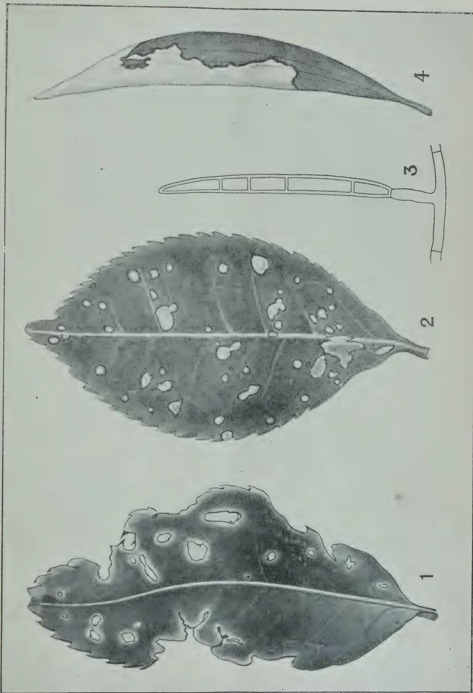
Plate VIII illustrates four figures (1-4) related to leaf diseases of Cercosporaella. Figure 1 shows a leaf with large, irregular necrotic spots. Figure 2 shows a leaf with numerous small, circular necrotic spots. Figure 3 is a microscopic view of a spore with five distinct cells. Figure 4 shows a leaf with a large, irregular necrotic area along the midrib.PLATE VIII. CERCOSPORELLA LEAF DISEASE
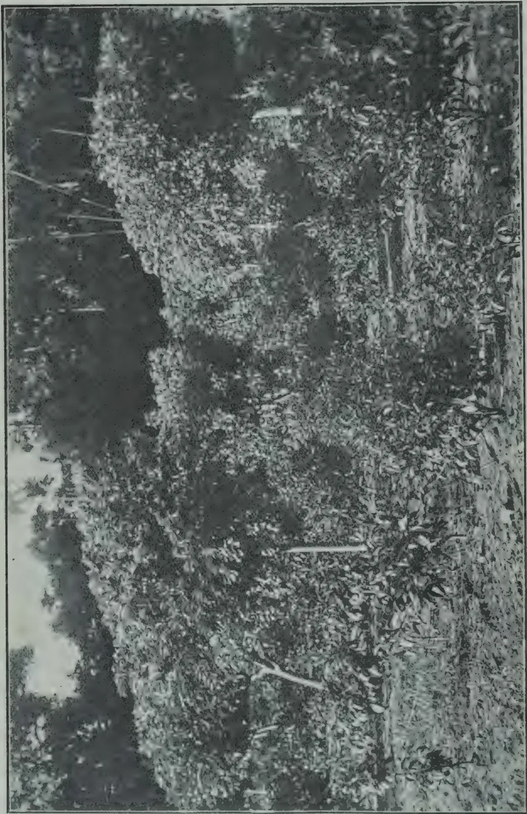
A black and white photograph of a tea plantation. The foreground and middle ground are filled with dense, low-lying tea bushes. Several vertical wooden stakes are planted in the ground among the bushes. In the background, there are taller trees and a clear sky. The image is framed by a thin black border.Plate IX.—GLIRICIDIA MACULATA AS A GREEN MANURE FOR TEA
FEBRUARY, 1923.]89leaflets of the Acacia. The leaflets of Acacia decurrens are small and flat, and during wet weather they adhere to the leaves of the tea, so that the fungus passes from the one to the other. It is quite common to find Acacia leaflets fastened by mycelium to the leaves of the tea bush; indeed, that in many cases affords an easy way of identifying the disease. Naturally, this method of distribution of the disease is less likely to occur in the case of Acacia melanoxylon, which has a large leaf.
This disease has occurred on Acacias in firewood reserves and forest plantations, and has spread from them to Red Gum (Eucalyptus robusta), Karri (E. diversicolor), Grey Iron Bark (E. paniculata), etc. The Assistant Conservator of Forests, Central Division, reports that Red Gum is affected by the fungus to some extent and Grey Iron Bark to a very marked degree. The young Acacias have been killed, but, in general, the Eucalyptus has not suffered so severely. The fungus causes large spots on the Eucalyptus leaves, but they appear to resist the attack better than the leaf of tea. Up to the present, the disease has not been recorded on Red Gums planted alone or in tea.
This disease is a "wet weather" disease, and, as far as has been recorded, it occurs only up-country.
Whether it is advisable to remove Acacias where this disease occurs must depend upon individual circumstances, viz., whether the benefit derived from the Acacias compensates for the periodic damage to the tea.
T. PETCH, B.A., B.Sc.,
Botanist and Mycologist.
Black Rot of Tea was described in 1917 in Leaflet No. 2 of the Department of Agriculture. It was there referred to as Hypochnus sp., but in accordance with modern practice, this and similar species should be known as Corticium, and in the list of Ceylon diseases published in Bulletin 52, it was recorded as Corticium Theæ Bernard, a Corticium which attacks tea in Java and Sumatra. Specimens were submitted to PROFESSOR E. A. BURT, who kindly examined them and pronounced them distinct from Corticium koleroga, the species which causes Black Rot of coffee in South India.
During the last year, a comparative examination has been made of Thread Blights on various plants from Ceylon, India, Java, West Africa, and the West Indies. To this collection, DR. C. BERNARD has kindly contributed specimens from Sumatra and Java, including Thread Blights on tea, and from this it is clear that the species which causes Black Rot of tea in Ceylon is not Corticium Theæ. Corticium Theæ is a true Thread Blight, i.e., it forms a definite white cord running along the stem of the host plant. On
90[FEBRUARY, 1923.]the other hand, the Ceylon Black Rot fungi are not Thread Blights ; their mycelium runs along the stem of the host plant in a very thin hyaline film which is invisible to the naked eye unless it is producing its fructification.
Owing to the difficulty of obtaining mature fructifications of these fungi, it is not easy to distinguish one from another. Investigations during the past year indicate that there are at least two species of Corticium causing Black Rot in Ceylon. One of these occurs on tea, Oxyanthus tubiflorus, Calophyllum Burmanni (Sinh. Gurukina), and Hemidesmus indicus (Sinh. Iramusu), and will probably be found to be a general parasite on jungle shrubs. The other occurs on coca (Erythroxylon Coca).
Black Rot of tea was originally discovered in the low-country, but it has since been found on tea at an elevation of nearly 6,000 ft. It may consequently be expected to be generally distributed.
T. H. HOLLAND, Dip. Agric., Wye,
Acting Divisional Agricultural Officer, Northern.
The interest taken in Gliricidia maculata as a green manure for tea has increased and would appear to be fully justified by results at Peradeniya Experiment Station. Comparative records for a year of the loppings obtained from Gliricidia and Dadaps of the same age both planted 16 x 16 feet show that Gliricidia gave 5 loppings yielding 14.6 tons of green material against 3 loppings yielding 8.7 tons per acre from the dadaps for the same period. The Agricultural Chemist analysed loppings from these trees and found the Gliricidia loppings to be slightly richer in nitrogen. In addition an examination of the roots showed an apparently greater activity in nodule formation on the part of Gliricidia. At suitable elevations therefore the value of this plant as a green manure for tea would appear to be firmly established.
N. K. JARDINE, F.E.S.,
Inspector for Plant Pests and Diseases, Central.
The Branch of the Department charged with Plant Pests and Diseases Inspection was founded in 1919. It now consists of two divisions, a Central situated at the Headquarters of the Department of Agriculture, and a Southern at Avisawella.
FEBRUARY, 1923.]91Since its inauguration, the Central division has inspected the whole of the tea-growing area of Central Province, and the greater portion of that in Uva and Sabaragamuwa east of Balangoda. Special attention has been given to the gardens of small cultivators, for their crops being a miscellany of tea, areca, coconut, jak, kitul, arrowroot, pepper, manioc, pumpkin, beans and other vegetables, insufficient attention is given to the cultivation, with the result that these gardens often become overgrown with weeds, and may become breeding grounds for the major insect pests of the Island crops. It has been a matter of patience to educate the small grower to a realization of the fact that cleanliness of land, and general cultivation will materially improve crop production. In the matter of pests it was an extremely difficult matter to get the small grower to appreciate the loss of crop sustained by insects; he seemed unable to realize that the continued presence of insect pests in the crops restricted their development and production; and the problem of restricting the insects in these semi-abandoned areas had to be tackled—not from an entomological—but from a purely agricultural standpoint. By constantly advocating good cultural methods—not for the control of insects—but for the improvement of crops, the growers became interested in the monetary return of greater production; and by keeping the crops free from weeds, the land clean, well drained, occasionally forked and the surrounding vegetation in check, the insects were automatically restricted. At times the small cultivator was found to be despondent, for he would ask what is the use of his growing garden produce for market when the boutiques, and the stands and stalls of the local markets, were often held and controlled by cliques: it meant though there was a market, he found sales for his produce only at low prices. In the tea-growing area nearly every garden grows a fairly large proportion of tea, and it was the object of the Inspectorate to endeavour to get the gardens cleaned up in order to reduce the predominance of the tea insects—especially Shot-hole Borer—these gardens were producing, and by constantly advocating clean culture many of these tea gardens are now pictures of cleanliness producing quantities of flush which is sold to local factories. Furthermore, the small grower is awake to the fact that there is an added value in possessing a clean tea-garden, he is able to plant nurseries and sell stumps at a profit, and the difficulties he experienced in selling general garden produce are no longer his, for he finds a profitable market for his tea in its place.
Plate X. shows the result after a garden has been cleaned: there are many vacancies requiring supplies. It is a good indication of the smothering effect of an abandoned miscellaneous crop.
92[FEBRUARY, 1923.Plate XI is indicative of progress : the land has been well cared for : the relations of the owner are assisting in the cultivation of the land, and the plucking of the tea.
Plate XII shows another and smaller garden. It indicates the progress the Inspectorate is making among the small-holders. This particular garden was surrounded by rank vegetation and cheddy ; three years ago it was a mass of weeds, miscellaneous vegetables and abandoned tea. To-day it is well cultivated, well drained, regularly pruned and possesses dadaps evenly planted for shade.
Plate XIII is a view of a nursery in the centre of a large area of small gardens ; it is well laid out, clean weeded, sensibly drained and well cared for. These plants will be sold locally (being in a Shot-hole Borer infected district they cannot be sold outside the infected area) for Rs. 40 to Rs. 60 per thousand, which handsomely repays the owner for the labour expended on the cultivation of the nursery.
The question of tea-garden nurseries has always been one presenting difficulty to the Inspectorate. As stated before, the majority of tea-gardens have been for many years in a semi-abandoned condition and are to-day riddled with Shot-hole Borer, but the owners have found that by raising plants from the seed of their (shot-hole borer infested) bushes, they are able to make a profit by selling these plants before they are large enough to harbour the borer. Though the Inspectorate examines the plants before permits are issued allowing their sale, Shot-hole Borer is not to be found in them because the plants are too small to contain the beetle, but the fact remains that stock raised from perpetually infested bushes must be more liable to the attack of the borer than healthy plants raised from vigorous insect-free bushes. It is therefore pleasing to be able to record that small holders are realizing that clean culture produces greater crop, that with clean crops insects are fewer, and without insects the facilities for the disposal of their crops are easier.
The work of the division of Inspection for Plant Pests and Diseases is (1) educational, (2) advisory and (3) official. It brings to the notice of agriculturists the pests and diseases affecting their crops, the losses that are sustained thereby and encourages them to take remedial measures for their control. It advises as to the remedial and control measures that should be adopted and is responsible for taking steps, where necessary, to enforce the Regulations made for the control of the spread of shot-hole borer of tea and other pests.
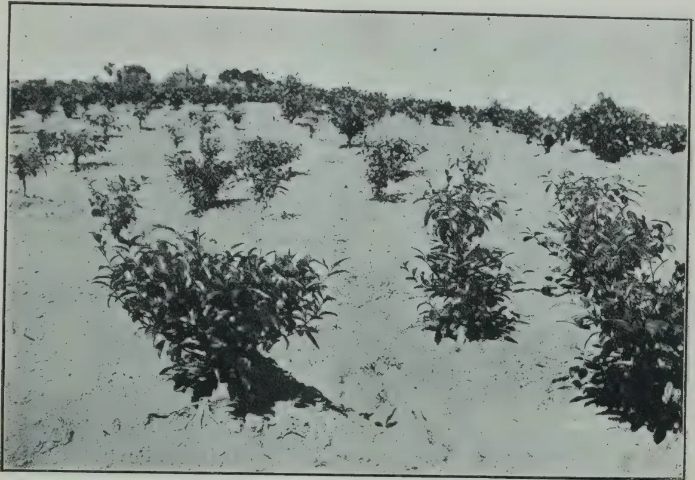
A black and white photograph showing a tea garden with rows of tea bushes. The bushes are dark and leafy, arranged in a grid-like pattern. The ground between the bushes is light-colored, possibly sandy or cleared. The background shows more bushes and some trees under a clear sky.Plate X—A CLEANED VILLAGE TEA GARDEN
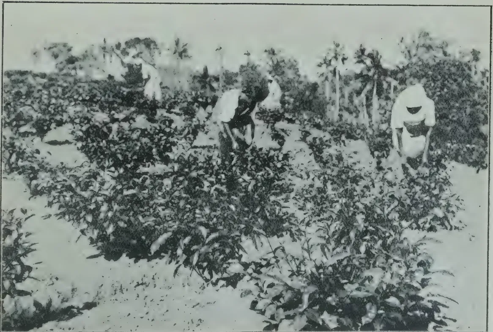
A black and white photograph showing three people working in a tea garden. They are bent over, tending to the tea bushes. The bushes are dense and leafy. In the background, there are palm trees and other vegetation. The ground is light-colored.Plate XI.—A WELL-CARED-FOR VILLAGE GARDEN
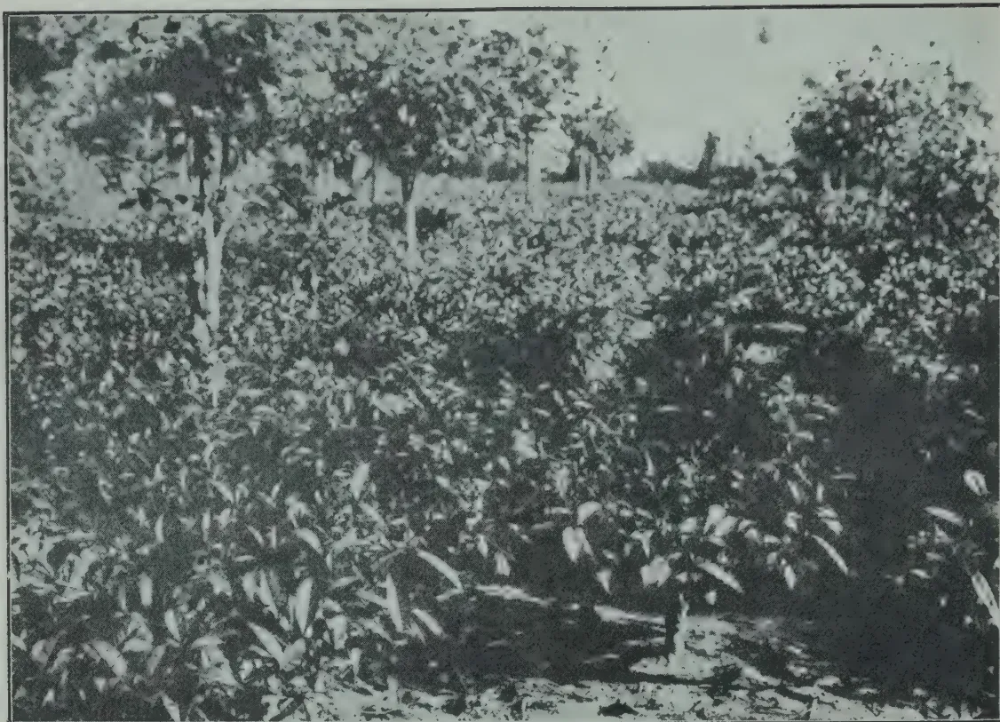
Plate XII.—A VILLAGE GARDEN ADOPTING MEASURES RECOMMENDED BY THE PLANT PEST INSPECTORATE
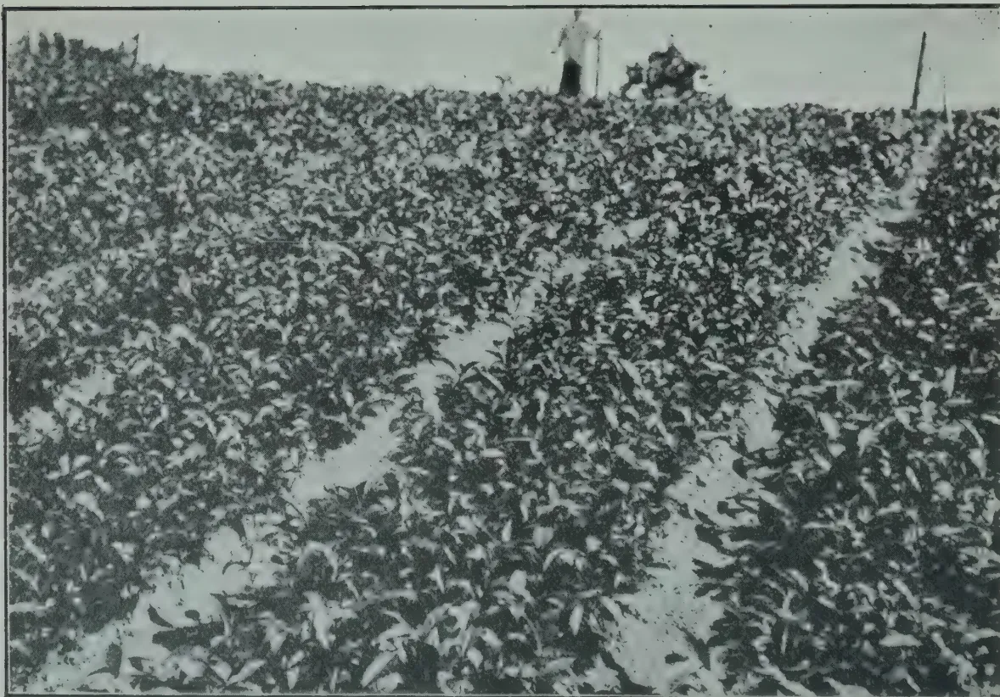
Plate XIII.—A VILLAGE TEA NURSERY
FEBRUARY, 1923.]93Tapping and manurial experiments with Rubber at the Experiment Station, Peradeniya, have been continued and new experiments begun. The results of the yields of individual trees, the progeny of Henaratgoda No. 2, have been carefully examined and work carried out in regard to the formation of globular shoots and nodules.
The Rubber Research Scheme has restarted work during the year, particular attention being given to problems connected with the preservation of latex and with the use of disinfectants on tapping cuts as a prevention against bark rot and other diseases.
The first successful results at budding rubber in Ceylon were secured at Peradeniya in September, 1921. During the year 1922 lectures and demonstrations were organized and as the result many estates have a fair number of budded plants. Many others are now recording yields of individual trees for the purpose of selecting suitable mother trees.
The first success in budding rubber in Ceylon was secured by the Curator, Peradeniya Gardens in September, 1921. It was thereafter decided to send a student holding the certificate of the School of Agriculture to Java for gaining practical experience. T. V. THAMOTHERAM was selected and upon his return from Java work of budding was begun at Henaratgoda. His earlier efforts were not very successful, but later there was a steady improvement in the number of successes rising in some cases to nearly 90%. Lectures and demonstrations were organized, and coolies trained. Arrangements were made for THAMOTHERAM to visit estates, conduct demonstrations and train coolies in budding. Estates were visited by him in the Kelani Valley, Ratnapura, Kalutara, Kegalle, Matale and Moneragala. The highest recorded total successes were 66% on Alupolla, 60% on Polatagama and 58% on Gwendale.
In addition to this work, a large number of estates have carried out budding work. MR. C. E. A. DIAS sent his Superintendent of Mukalana Estate to Java to study budding, and employed a trained student from the School of Agriculture for this special work.
The following numbers of budded rubber plants are known to the Department:—Mukalana Estate, 4,600; Polatagama, 1,050; Hapugastenne, 600; Nildeniya, 396.
There is therefore no longer any doubt as to the practicability of budding rubber in Ceylon and therefore it is only necessary for estates (1).
94[FEBRUARY, 1923.to select their mother trees on yield records, (2) plant out good nurseries on which budding may later be carried out, (3) train a subordinate staff officer or some intelligent coolies for the work of budding. No budding will be of value unless the utmost care is given to the selection of mother trees from which the buds are taken. They must be good yielders. Nurseries must also be on good soil and in good vigour if the percentage of successes is to be high. Either the Java method or patch budding may be adopted. They both give good results if the actual operations of budding are carefully carried out and the climatic conditions are favourable. The best results have so far been secured during the months of September to December.
See also :—TROPICAL AGRICULTURIST for December, 1921, April, 1922, June, 1922.
G. BRYCE, B. Sc., Assistant Botanist and Mycologist
and
C. H. GADD, B. Sc., Assistant Mycologist.
In order to ascertain whether any considerable improvement in Hevea yields could be obtained by using seed from high-yielding mother trees when planting up areas with rubber, an investigation of the individual yields records of 161 trees derived from seed from the Henaratgoda No. 2 trees has been carried out. The parent tree is one of the best known heavy-yielding rubber trees, of which records have been published. The seed used was the result of normal pollination, and, as no attempt was made to prevent crosspollination nothing is known of the male parentage of the trees under experiment.
The plot of 161 trees was first tapped in April, 1921, when the trees were 9 years old from planting or ten years from seed. They were all tapped on the same system, viz., one cut, half circumference, sloped at 16° to the left of the vertical channel, alternate days throughout the year. For the first 10 months of tapping, i.e., April 1921 to January 1922, the best tree of the plot yielded 3,044 gms. (about 6 lb.) whereas the lowest yielded 1,136 gms.
It is evident that, making due allowance for difference in age, no single tree has a yield approximately the equivalent of the mother tree, which under a more severe tapping system gave from 107 to 234 gms. of dry rubber per tapping and over 390 lb. of dry rubber in 4 years 9 months. Though no single tree has a yield approximately equivalent to that of the mother tree, it does not necessarily follow that yield is not a heritable character.
If yield is a heritable character the influence of the ancestors beyond the immediate parents will still be experienced by the offspring. Though the female parent of the trees under review is known to be a high yielder, nothing is known of the yielding capacity of the male parent nor of that of the ancestors on both sides. It is highly improbable that all the ancestors were high yielders and the effect of these ancestors will therefore be to exert a pull back to lower yields; the greater the number of low-yielding ancestors the greater will be their influence and the greater the pull back.
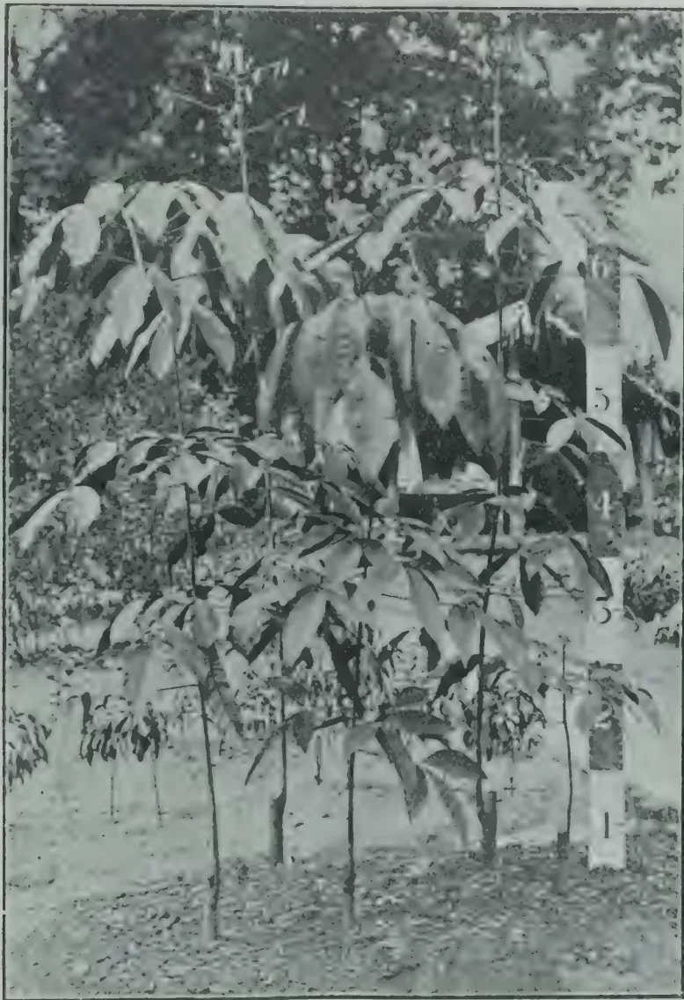
A black and white photograph showing a row of young rubber trees in a nursery. The trees are supported by thin wooden stakes. On the right side of the image, a vertical wooden post has the numbers 1, 2, 3, 4, and 5 marked on it, corresponding to the trees. The trees have large, broad leaves and are growing in a field with some ground cover. The background shows more foliage and trees.Plate XIV.—FIRST BUDDED RUBBER IN CEYLON
In Nurseries, Royal Botanic Gardens, Peradeniya.
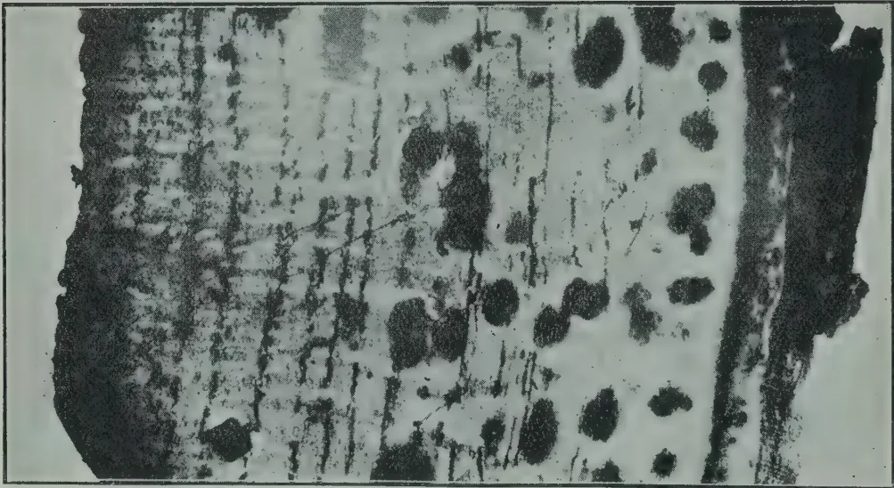
A black and white micrograph showing a cross-section of rubber cortex. The image displays a dense, textured surface with numerous dark, circular or oval-shaped structures, which are the latex vessels. These vessels are arranged in distinct, roughly parallel rows or columns across the field of view. The surrounding tissue has a lighter, more granular appearance.Plate XV.—SECTION OF RUBBER CORTEX SHOWING ROWS OF LATEX VESSELS
FEBRUARY, 1923.]95The test for heredity therefore becomes, not the yield performance of any single tree, but the general performance of the whole generation, and may be stated as the question, "Do the offspring from a high-yielding mother tree give on the whole greater yield, than do the offspring of other trees under the same conditions?" that is—"Are they better than the race?"
To answer this question yield records of experiments at Peradeniya, in which the conditions were similar, were examined. In three experiments suitable for comparison, the mean individual yield varied from 1606 gms. to 1312 gms. whereas the mean individual yield in the plot from selected seed was 1872 gms.
It may therefore be concluded that yield in Hevea is a heritable character and that by the elimination of the influence of low-yielding ancestors a high-yielding strain might be evolved. This would necessitate rigid selection carried on through several generations—a lengthy and expensive process—and, in view of the successful propagation of Hevea by vegetative methods, would probably prove to be an unprofitable undertaking.
From data collected during the course of the experiment an attempt was made to ascertain what characters were closely associated with yield and to what extent they were associated.
Since latex is produced in latex vessels, the yield of a tree is to some extent dependent upon the number of latex vessels in the cortex which are capable of producing latex. To count the actual numbers of latex vessels in the cortex is an impossible task, but, as the vessels are arranged in regular rows the numbers of which may be readily determined (See Plate XV) the number of latex vessel rows may be used to denote the relative number of vessels. The number of latex vessel rows varies with the individual, and the relationship between the number of rows and yield can be readily computed. The co-efficient of correlation between the number of latex vessel rows and yield was found to be . This means that high yields are generally associated with large numbers of rows of latex vessels, but as the correlation is not perfect, though it holds good for groups of trees it does not do so for individual trees.
The average yield of 11 trees each having 7 rows of latex vessels was 1,580 gms.
The average yield of 16 do. 9 do. vessels was 1,702 gms.
The average yield of 18 do. 11 do. vessels was 1,980 gms.
The average yield of 11 do. 13 do. vessels was 2,013 gms.
The average yield of 12 do. 15 do. vessels was 2,171 gms.
The individual tree with the highest yield, however, had only 15 rows, whereas 12 trees with a greater number of rows had smaller yields. Similarly the tree with the lowest yield had 10 rows of latex vessels, whereas there are 44 trees with a smaller number of rows and greater yields.
It has recently been suggested that this relationship between the yield of a tree and the number of latex vessel rows in the cortex might be used in practice, in that the best yielding trees might be selected by bark examination alone without having recourse to the actual measurement of yields.
96FEBRUARY, 1923.Selection of Hevea trees is made for two purposes (1) to ascertain the poor yielders in order that they may be removed in thinning and (2) to ascertain the highest yielders for the purpose of vegetative propagation.
In the first case, viz., thinning, usually a fairly large number of trees have to be selected for removal. If a stand of 100 trees per acre is to be reduced to 90 trees per acre, this means the removal of 10 per cent. of the trees over the whole area to be thinned. Thus on a large estate a considerable number of trees would have to be removed. It would then be feasible to make the selection by cortex examination alone. The yield of the trees left after selection by cortex examination would approximate so closely to the yield which could be obtained if the selection had been made on individual yield records, that the difference is immaterial. The advantage would always be in favour of thinning by yield and not by cortex examination.
Where the selection is made to ascertain the highest yielders for vegetative propagation the case is very different. Here only a small number of trees are required, but the trees selected must undoubtedly be the very best yielders. As the relationship between the number of latex vessel rows and yield does not hold good for individual trees, it is obvious that bark examination alone is useless for the selection of individual high yielders. As already stated, the highest yielders of the trees of the experiment under consideration is 13th in position with regard to number of latex vessel rows. Consequently, if the selection of a high yielder is made from this plot by bark examination alone, 12 trees would be selected in preference to the actual highest yielder of the plot. The selection of high yielders for propagation purposes must accordingly be made from yield records and not from bark examination.
Characters other than latex vessel rows are also closely associated with yields. Of these girth and cortex thickness appear to be the most important.
Girth affects yield through the length of the tapping cut, the trees having the larger girth obviously having the longer tapping cuts. Girth, however, is also an expression of vegetative activity or vigour of growth, and in this way may be an expression of the influence on yield of this character, the more vigorously growing trees, i.e., those of greater girth, having a greater yielding capacity.
The relationship between yield and cortex thickness may also be due to the same cause, viz. greater vegetative vigour.
It may here be stated that the degrees of correlation between girth and yield, and between cortex thickness and yield, were found to be higher in the present plot than those obtained by workers elsewhere for the same characters. This difference may be due to the fact that all the trees in the present plot are offspring of one parent, whereas other workers were dealing with trees of mixed parentage. Before any recommendations can be made regarding these characters further evidence is required.
Another point of some importance ascertained during this investigation is that the yield is not directly proportionate to the length of the cut, i.e., if the cut is increased to twice its original length the yield does not become twice the original yield but something less. Consequently two cuts on quarters on opposite sides should yield more than one cut on a half.
See also :— BULLETIN OF THE DEPARTMENT OF AGRICULTURE, No. 55.
FEBRUARY, 1923.]97G. BRYCE, B. Sc.,
Assistant Botanist and Mycologist.
Globular shoots (Plate XVI, fig. 1) are the spherical woody bodies, which are found in the cortex of Hevea stems, under leaf scars, in the fork of branches and in other places, and do not possess a core of necrotic cortical tissue such as is found in nodules. They have a cambium which produces a small amount of cortical tissue externally and wood elements internally, the latter consisting of twisted tracheids and fibres, occasionally short, tortuous vessels, cubical wood cells and medullary ray tissue, the several elements being interwoven more or less irregularly, but generally becoming more normal in the outer layers. On the inner side toward the stem wood the globular shoot frequently tapers to a point, in which the tissue consists mainly of wood fibres and tracheids; this is evidently the vestige of a former vascular connection with the stem wood. In some cases the point is completely sunk within the tissue of the globular shoot (Fig. 2), while in other cases no trace of any such connection is to be found.
The globular shoots which are found in old leaf scars are, from their position, undoubtedly derived from latent buds. Leaf scars can still be traced on the bark of trees 10 years old, and from them may be frequently obtained globular shoots to the number of 4 or 5, arranged in a horizontal row, and isolated from one another or showing varying degrees of inter-fusion. Such horizontal rows of globular shoots are never found in other portions of the cortex. The leaf scars on any part of the stem indicate the positions of leaves on the leading shoot, when it was of corresponding height, and these in turn indicate the positions on the vegetative point at which leaf primordia were laid down. It appears therefore that in the axil of a leaf primordium several shoot primordia are laid down, one or none of which may develop successfully into lateral branches. That which determines the particular primordium destined to develop successfully is not known, but when once determined its successful growth results in arrest in the development of the other primordia, which then pass into a latent condition. This reciprocal influence of organs upon one another is known as correlation of growth.
The latent primordia may persist in this state for a considerable number of years, and under any favourable change of conditions may resume growth and develop into leafy shoots. In the state of arrest they exhibit a slow growth which is limited to the laying down of wood tissue round the original primordium. GOEBEL states (Organography of Plants) that "arrest may take place earlier or later in one and the same organ, and consequently the construction of arrested organs varies in an extraordinary degree." The various shoot primordia on a vegetative point will develop normally until one primordium gets ahead of the others and causes arrest in their development. The arrested primordia, being of various ages, will also be at different stages of development, and these stages will be found in the cores of the globular shoots derived from the arrested primordia.
98FEBRUARY, 1923.Two samples of material collected from leaf scars are seen in Figs. 3 and 4. In the former, the globular shoot is seen in section, the apex being directed towards the stem wood and the base towards the outside. The apex is the vestige of the lost connection with the stem, and from it, traversing the globular shoot, runs what may be termed the bud trace or vascular strand, now completely enclosed by layers of wood tissue (see also Fig. 1). On reaching the cortex the bud trace expands into a spherical or conical mass of small-celled meristematic tissue, which may be considered as the vegetative point of the globular shoot (Fig. 5), but in many cases it is completely absent. In fig. 4 the original primordium has not reached as advanced a developmental stage as in Fig. 3. It has, in fact, remained an undifferentiated meristem, until in the course of time, slow growth has transformed it into a globular shoot, consisting of undifferentiated wood tissue enclosing a core of compressed and lignified cells, which represent the original primordium.
Globular shoots collected from the general cortex of the stem, i.e., not from leaf scars, may be actually leaf scar material from cortex which has lost the external marks of its leaf scars, and they would then owe their origin, as in the previous cases, to latent buds. It is also possible that a formation of adventitious buds occurs in the stem cortex, and these buds, under conditions unfavourable to normal development, would also give rise to globular shoots. Globular shoots are therefore to be considered as having arisen from primordia laid down either originally at a vegetative point or later on adventitiously in the cortex.
Sections of globular shoots from the general cortex are seen in Figs. 1, 2 and 6, and 8 to 13. In Fig. 6, a vegetative point is clearly present and the primordia of organs are distinct. It is to be expected that such globular shoots, given conditions favourable to sprouting, would send out a leafy shoot as in the globular shoot in fig. 7. This last exhibited in section, a mass of wood tissue, without vascular connection with the stem and without any internal vascular strand or bud trace, the leafy shoot arising exogenously from the globular woody tissue. Primordia laid down in close proximity to one another frequently unite together, and to such union at an early development stage are to be attributed such double-cored structures as seen in Fig. 8. In some cases the original primordium develops almost completely into wood tissue as in Fig. 8, or it may be small in size as in Fig. 9, or of considerable size as in Figs. 10—13. In Figs. 10 and 11, the cells of the primordium have probably lain dormant for a considerable period, during which time they have been compressed by neighbouring, growing, cortical tissues, and have in addition acquired lignified walls, till some change to more favourable conditions has occurred, and growth has been resumed with the formation of a globular shoot. Other globular shoots exhibit a core of considerable size of more or less unchanged meristematic tissue (Figs. 12, 13). The absence of compression and lignification from the core cells of Fig. 11, would indicate that the primordium did not lie dormant for any considerable period. A similar explanation probably attaches to Fig. 13, the lignification of the core cells being either secondary or primary, i.e., occurring after or before the formation of the globular shoot.
Globular shoots are thus derived from primordia which, when first formed, suffered an arrest in development due to correlation in growth with other and more vigorously growing organs or primordia of organs.
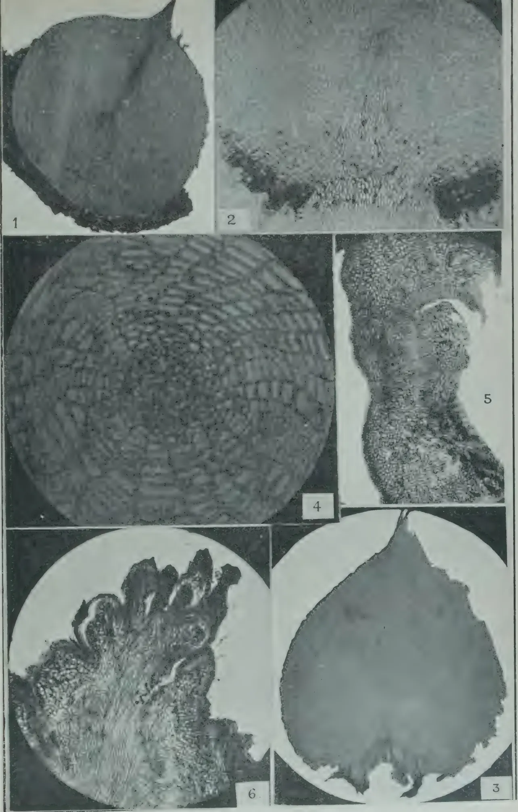
Plate XVI.—GLOBULAR SHOOTS
Fig. 1. Globular shoot with stem cortex. Bud trace traversing the shoot and apex of vascular tissue directed toward stem wood. .
Fig. 2. Globular shoot with tannin deposits round former exposed areas. The bud trace has been completely occluded by subsequent growth of the shoot. .
Fig. 3. Globular shoot from a leaf scar. Central bud trace present. .
Fig. 4. Globular shoot from a leaf scar. Core of lignified and compressed cells of the original primordium. .
Fig. 5. Cortex overlying globular shoot with the primordium or rudimentary vegetative point of a lateral shoot.
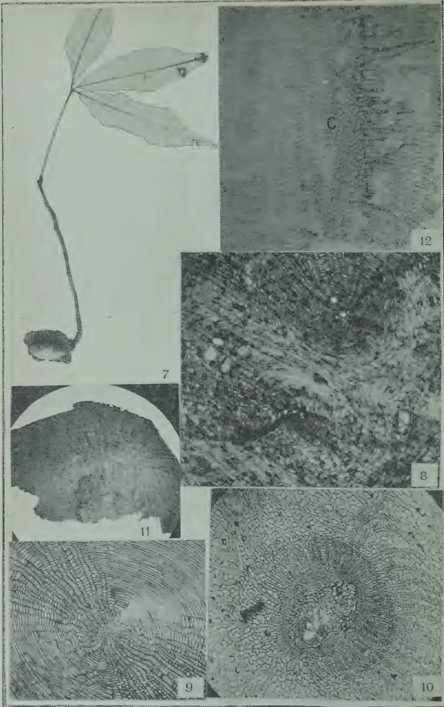
Plate XVII.—GLOBULAR SHOOTS
Fig. 7. Globular shoot which has sprouted and produced a leafy shoot. Nat. size.
Fig. 8. Globular shoot with double core, the result of early fusion between two shoots.
Fig. 9. Globular shoot with core of lignified cells of the original primordium. X 70.
Fig. 10. Globular shoot with core of compressed and lignified cells of original primordium. X 35.
Fig. 11. Globular shoot with core of compressed and lignified cells of original primordium. X 30.
Fig. 12. Globular shoot with core of undifferentiated meristematic cells. X 30. c=core.
Occasionally the exfoliation of bark results in the exposure and necrosis of the outer portions of the globular shoot. The whole globular shoot may be exfoliated with the bark, but more frequently processes of occlusion result in the covering over of the exposed area of the globular shoot. Deposition of tannin in the wood tissue is abundant around such necrosed areas of the globular shoot (see Fig. 2),
The formation of globular shoots is, as we have seen, an example of correlation existing between organs or primordia of organs. It is otherwise with the class of structures which have been described as nodules, whose formation is due to a definite formative stimulus which differs according to the type of nodule. The nodule in Fig. 14 has originated round a mass of necrotic cortical tissue, whose presence in the living cortex has stimulated the cortex to the production of the nodule described. Another type of nodule is seen in Fig. 15 where the infiltration of latex into the adjacent intercellular spaces of the cortex has provided the stimulus to growth. The latex has escaped by the rupture of a latex vessel probably under stress due to cortical growth.
A third type of nodule seen in Fig. 16 has been obtained from wound callus only. Here the cortex has suffered rupture possibly through injury caused at the time the wound occurred, and into the internal lesion thus formed latex has flowed from the damaged latex vessels and has there coagulated. The presence of the coagulated latex in this case provides the stimulus to growth.
In the three foregoing cases the stimulus to growth has emanated from a limited area, and the growth induced has thus been correspondingly limited, being confined in effect to the occlusion of the irritant area and its removal from contact with the living cortex. The process may be regarded as the formation of an internal wound callus and the occlusion of a wound, analogous to the healing processes which occur with external wounds.
In the fourth type of nodule depicted in Fig. 17 the first symptom is a necrosis of the latex vessels, at first local, but spreading gradually from its point of origin along the latex vessel. The stimulus to growth proceeds from the necrotic latex vessel, and as this condition gradually extends along the vessel, so the cortical cells are stimulated to active cell division over an increasing area. This is the type of nodule which develops in the cortex after attacks of Brown Bast.
The present classification differs somewhat from KRICK's classification of beech nodules (i.e., globular shoots) into (1) bud-, or shoot-possessing, and (2) budless or shootless. He traces his bud-, or shoot-possessing nodules back to latent buds, and states that his budless or shootless nodules are never found on leaf scars, but might from analogy with the former be assumed to be derived from adventitious buds. He argues that against this assumption are the facts that in no case was any trace of a vegetative point found, nor was the development of a shoot or bud ever observed from such a nodule. He concludes then that their method of origin is not the same as in the case of bud-possessing nodules, and that it is still unexplained.
With regard to the non-occurrence of budless nodules on leaf scars it must be pointed out that this does not hold with Hevea, as the budless nodules in Fig. 3, and Fig. 4, were obtained from leaf scars, and must therefore be considered as having originated from latent primordia. The distinction drawn by KRICK between bud-possessing and budless nodules with regard to their origin is therefore not substantiated by the conclusions reached here.
While then some explanation can be afforded for the origin of globular shoots and for the second and third type of nodule, there is as yet no clear explanation of the cause of the two types of phloem necrosis described under the first and fourth types of nodule.
100[FEBRUARY, 1923.T. PETCH, B.A., B.Sc.,
Botanist and Mycologist.
A root disease of Hevea, apparently caused by a Xylaria, was recorded in 1910, but no further occurrences were observed during the next ten years. In 1921, the same disease was found on two estates, and other instances have occurred in 1922. In all cases, the trees attacked are mature, i.e., over twelve years old.
On the affected roots, the fungus forms black, flat, irregular bands sometimes in a network, and extensive black patches or plates. The bands have not the appearance of being formed by mycelium running along the exterior of the root, as in Fomes lignosus or Rosellinia, but rather of small patches which have fused together into a continuous line. They may be fairly definite, about 2 mm. broad, but are usually broader and irregular. Part of the root may be covered with a network of these bands, the pale cortex of the root being visible in the meshes, while the remaining part is covered with a continuous black sheet. The black bands are smooth, not woolly, sometimes longitudinally ridged, and white internally. They may be up to 1 millimetre thick, but are usually much thinner.
The wood of the roots, in the early stages of the disease, does not show very marked characters. When the tree dies, the wood of the tap root may show diffuse black patches in longitudinal section, especially if split along an annual ring. If kept under suitable conditions, any cut surface of the wood develops a thin covering of white mycelium which soon turns black.
In advanced stages, usually on the lateral roots, the characteristic features of the disease are well marked and quite different from those of any other known root disease of Hevea. When the root is split longitudinally, the central region of the wood is found to be a dark brownish grey and moist, but still hard. Outside this region, the wood is somewhat decayed and drier, and pale brown or yellow brown in colour, the two parts being sometimes separated by a black line. The hardness of the wood, despite its intense discolouration, is a very striking feature. Black lines and ovals may be present in the wood, but they are not a constant feature as in Ustilina.
The inner tissues of the cortex become brown, or yellow brown, and friable, being sometimes represented only by small fragments, united by fine strands of rubber, but the external layer does not show much visible alteration.
The fructification may arise from the dead lateral roots, but in the cases hitherto observed it has generally appeared on the ground near a lateral root or near the collar of the tree. It occurs in clusters, arising from a basal mass in the soil or at ground level. From the basal mass, up to twenty fructifications may arise, forming a cluster four or five inches in diameter. In some cases three or four stout stalks arise from the basal mass, and these divide above into numerous fructifications; in other cases, all the fructifications arise from the same level. The separate fructifications are very variable in shape, either conical, cylindric, club-shaped, ovoid, or sometimes flattened laterally; they may be up to four inches high and an inch in diameter. The outer layer is pale brown or yellowish, but it usually weathers off, leaving the fructification black. The group of fructifications is a cluster of variously-shaped black clubs, not brittle but somewhat corky, and white internally.
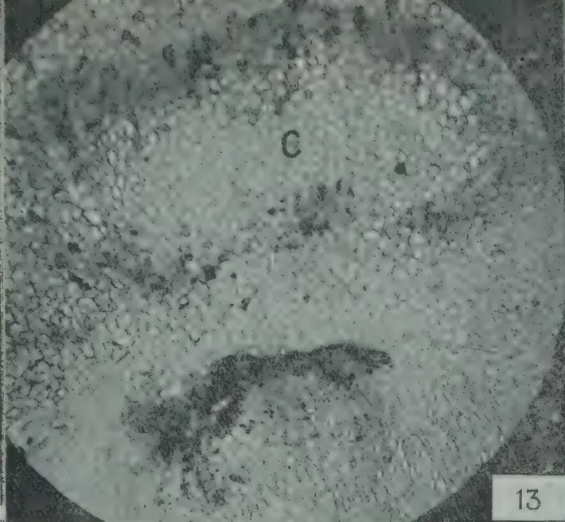
13
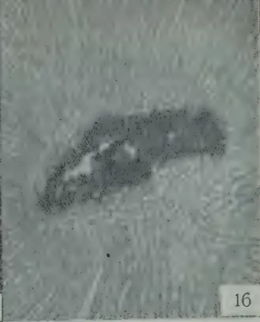
16
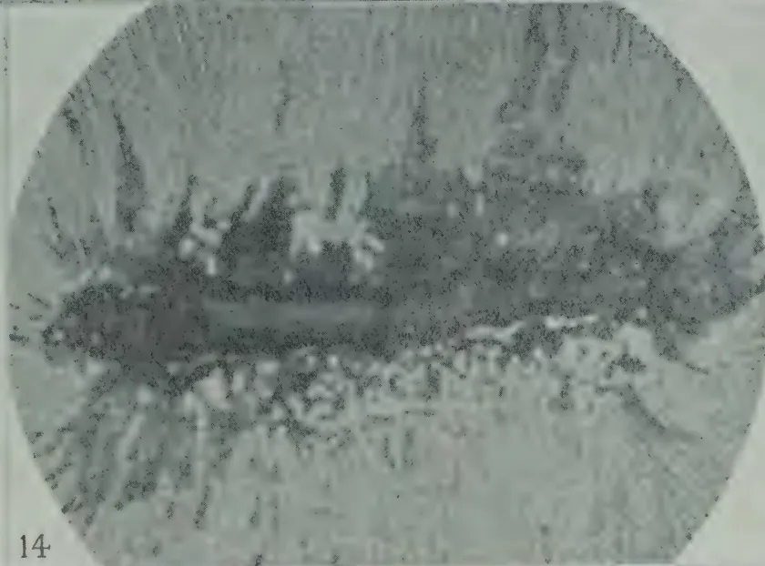
14
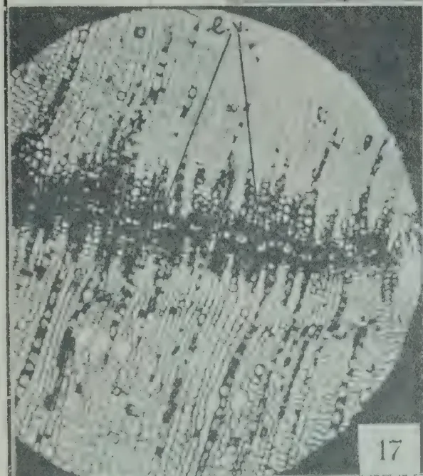
17
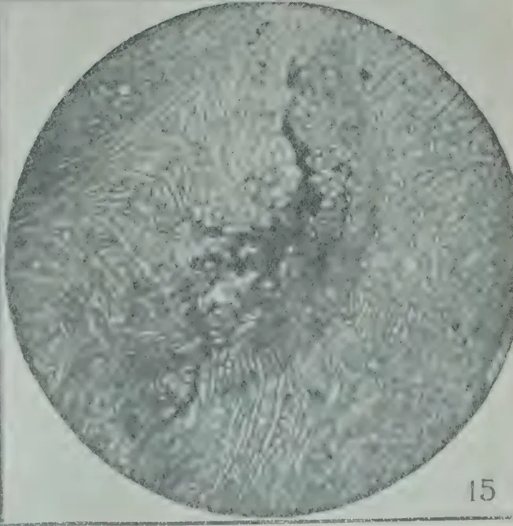
15
Plate XVIII.—GLOBULAR SHOOTS
Fig. 13. Globular shoot with core of undifferentiated meristematic cells with somewhat lignified walls. Occluded wound area present. . c=core.
NODES
l. v.=latex vessels.
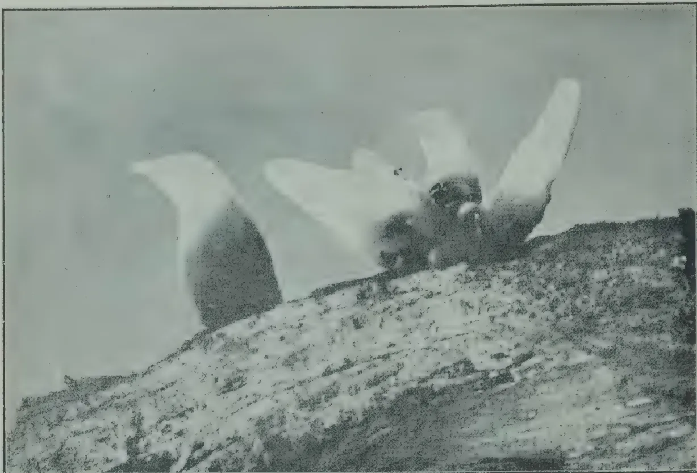
A black and white photograph showing the young stage of the fungus Xylaria thwaitesii on a diseased rubber stump. The fungus appears as several large, pale, somewhat rounded or elongated structures emerging from the dark, textured surface of the stump. The background is a light, neutral tone.Plate XIX.—XYLARIA THWAITESII ON DISEASED RUBBER STUMP—YOUNG STAGE
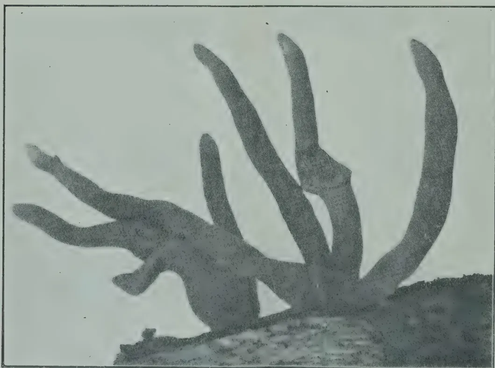
A black and white photograph showing the old stage of the fungus Xylaria thwaitesii on a diseased rubber stump. The fungus is characterized by several long, dark, finger-like or tongue-like projections (stromata) that are densely clustered and emerge from the base of the stump. The background is a light, neutral tone.Plate XX.—XYLARIA THWAITESII ON DISEASED RUBBER STUMP—OLD STAGE
FEBRUARY, 1923.]101The illustrations (Plates XIX and XX) show a cluster of clubs, developed on a diseased Hevea stump in the laboratory. At first the clubs are white, and they change colour gradually from the base upwards. These examples are longer and thinner than usual, probably owing to the conditions under which they were grown.
The fructification appears by the time the tree dies. But in all the cases hitherto found, it has not yet been mature, and, naturally, it has not been thought advisable to leave the tree standing until the fungus matured. Moreover, it is very difficult to cause a Xylaria to grow to maturity under cultivation in the laboratory; the clubs develop, but the perithecia and spores are rarely matured. And the shape of the clubs, under the conditions of laboratory cultivation, is likely to be abnormal. The fungus has, however, been grown to maturity in one case, and there is no doubt that it is a Xylaria.
In the first record of this disease, the fungus was referred to Xylaria zeylanica Berk. Since then, the type specimens of the Ceylon Xylarias in the Kew herbarium have been examined, and an account of them is now in the press. Though the type specimens of the larger Ceylon species are very meagre, and consist, in several cases, of a few fragments only, it would appear that the present species should be referred to Xylaria Thwaitesii Cooke.
G. BRYCE, B.Sc.
Assistant Botanist and Mycologist.
In the treatment of the root disease caused by the fungus Fomes lignosus, applications of quicklime to infected soil have been made in accordance with the general practice of using quicklime as a soil fungicide. Cases were observed where, after such applications of quicklime, the mycelium of the fungus persisted in the soil apparently unharmed. It was desirable therefore to investigate the effect of quicklime on the growth of the fungus, and generally to obtain some information as to the growth of the fungus under acid and alkaline conditions. In the work which was carried out, slaked lime was employed in place of quicklime to obviate the changes which would have occurred in the medium on the hydration of the quicklime to slaked lime. Cultural experiments were therefore carried out in which the fungus was grown on media containing varying quantities of slaked lime and on media of varying degrees of acidity and alkalinity, the effect on the fungus being obtained by measurement of the zone of growth in a given period of time.
In concentrations of less than 0.4% of slaked lime no definite toxic effect on the fungus was observed; above that point the toxic effect increases with increasing quantities of slaked lime till total inhibition of growth occurs at 1.3% of slaked lime.
Where lime was added as a saturated solution of slaked lime (i.e., lime water) a toxic effect was observable at 0.6% of slaked lime.
Carbonate of lime had no observable effect on the fungus.
In media rendered alkaline with caustic soda or caustic potash, no toxic effect was observed at concentrations up to —16 on FULLER'S scale. Beyond
102[FEBRUARY, 1923.this point there is an increasing toxic effect but growth was still possible at —66 FULLER'S scale, though not beyond that point.
In media rendered acid with hydrochloric acid a toxic effect was observed at +16 on FULLER'S scale, beyond which total inhibition of growth occurred. With sulphuric acid a strong toxic effect was observed at +8 FULLER'S scale, and total inhibition above that point.
The fungus is therefore more sensitive to acid than to alkali; it is sensitive to considerable quantities of slaked lime, and to small quantities of lime in solution. It is indifferent to carbonate of lime.
To obtain the toxic concentration of slaked lime in the soil round one rubber tree would require an application of about 300 lb. of slaked lime. Ceylon quicklime is usually burnt coral of a very low standard of purity containing on the average only 25% of quicklime and 75% of carbonate of lime. The quantity required to produce toxic concentration in the soil would thus have to be correspondingly increased.
Quicklime when applied to soil combines with the soil water to form slaked lime, which in presence of carbon dioxide in the soil is in turn converted to carbonate of lime, which is inactive with regard to the growth of the fungus. The duration of the fungicidal effect of an application of quicklime therefore depends on the rate at which active substances are converted to inactive, i.e., the rate of change from caustic lime to carbonate of lime.
It has recently been demonstrated that caustic lime is rapidly hydrated to slaked lime in a moist atmosphere, small quantities being completely hydrated in one night. Under Ceylon conditions, it follows that quicklime when applied in estate practice, is usually already hydrated to slaked lime. Slaked lime is slightly soluble in water, and thus soil water percolating through the soil may carry slaked lime in solution down to the deeper layers. Such a solution undergoes a rapid diminution in concentration due to the formation of carbonate, and on reaching the fungus mycelium in the deeper layers of the soil would have little, if any, inhibitive effect on the fungus.
Applications of quick lime are made by forking it into the top 6 or 8 inches of soil. It has also been demonstrated recently that the maximum conversion of quicklime to carbonate of lime (or carbonation) in the top 6 inches of soil occurs within 5 days after the application in the case of quicklime (80% caustic lime) in applications of 2 tons per acre. With heavier applications the maximum carbonation takes longer. The process of carbonation, however, occurs in such a way that the fungicidal value of the slaked lime rapidly falls to zero before complete carbonation has taken place. A film of carbonate of lime is formed round the particles or lumps of slaked lime, and this acts as a protective crust which retards the conversion of the interior to carbonate. To all intents and purposes, as regards the fungicidal value of slaked lime on Fomes lignosus, as soon as this crust is formed the lime is equivalent to carbonate of lime and its value accordingly is nil.
Fomes lignosus mycelium is sensitive to acid conditions and is somewhat more resistant to alkaline conditions. The fungicidal value of an application of quicklime depends on the proportion of caustic lime in it, and on the rate of conversion to carbonate. In Ceylon quicklime, the proportion of caustic lime is low, and the fungicidal value with regard to Fomes lignosus is ephemeral owing to rapid carbonation. The after-effects of applications of quicklime are to render the soil more alkaline, and thus to produce, particularly in acid soils, conditions more favourable to the fungus. Under these circumstances the application of quicklime to soil to inhibit growth of Fomes lignosus mycelium is not to be recommended, and attention should be concentrated on the other measures adopted in the treatment of this disease.
See also: BULLETIN OF THE DEPARTMENT OF AGRICULTURE, No. 64.
FEBRUARY, 1923.]103The manurial experiments with coconuts at the Chilaw Trial Ground have been continued and work has been begun on the investigation of coconut varieties. A number of distinct varieties have been carefully examined and selected areas of such varieties have been planted out for further investigation.
Insect pests of coconuts have received careful attention throughout the year. Considerable damage has been done in Batticaloa South by the Coconut caterpillar (Nephantis serinopa) and other districts in which this pest has occurred during the past year are warned that it is necessary to prevent any increase if serious damage is to be avoided.
Investigations into the nut fall of coconuts have been made and a comparison study of the grey blights of coconuts and tea carried out.
J. C. HUTSON, B.A., Ph. D.,
Entomologist.
During the past two years considerable attention has been given to the insect pests of coconuts by the Entomological Division, and information about the three most important pests has been published. The following notes are intended mainly to supplement the information contained in the above publications.
Nephantis serinopa.
It was stated in Leaflet No. 20 and in Bulletin No. 58 that so far as was known this caterpillar was a pest of the coastal districts and was not known to occur on inland coconut areas. Since the above was written this pest has been found in small numbers in the Kurunegala District of the North-Western Province and in the Bibile District of the Province of Uva. It is not improbable that further inspection will disclose the presence of this caterpillar in other inland coconut areas. All coconut planters in inland districts should therefore be on the look-out for this pest, and should report its presence immediately to the Department of Agriculture.
In this connection it should be mentioned that there are other species of caterpillars found on coconut leaves which may be mistaken for Nephantis, but none of these can be considered a pest of living healthy palms since they are only known to feed on dead palm leaves and occasionally on cadjans. They appear to be present in most coconut districts
104[FEBRUARY, 1923]wherever dead leaves are left hanging on the palms or leaves are withering from various causes, such as Nephantis attack, disease or natural decay. The two common species are Herculia nigrivilla and Erechthias pachygramma.
Of these caterpillars Herculia is the one which may be easily taken for Nephantis, since it is usually found in old, dead, rolled up leaflets killed by Nephantis and some times occupies the abandoned Nephantis galleries. The full-grown Herculia larva is about an inch long with a very dark head marked with a red patch in the centre. The body is dark brown mottled with blackish markings along the sides, slender and almost cylindrical and does not taper towards the hinder end, as does the body of a Nephantis larva. The Herculia caterpillars eat holes in the dead leaves and help to produce the almost complete striping of the leaflets which is sometimes noticed after a bad attack of Nephantis. The weathering effects of wind and rain following after attacks by these caterpillars serves to intensify this ragged and tattered appearance of the leaflets.
The Erechthias larva is small, very slender, dirty white with a pale brown head. It is about half an inch long when full-grown, and the alimentary tract is usually visible through the transparent skin as an irregular dark patch along the middle of the body. The caterpillars of both Herculia and Erechthias are very active and move rapidly backwards or forwards when disturbed. Both live under a loosely woven webbing sometimes thinly covered with a few particles of frass, but there is no attempt to make a compact webbed gallery, such as that constructed by Nephantis. They may both be sometimes found occupying old Nephantis galleries. The full-grown Herculia larvæ eat holes in the leaves while the caterpillars of Erechthias rarely do more than nibble away at the leaf surface. It is hoped to publish shortly a fuller account of these and other caterpillars which may be confused with Nephantis, giving illustrations of the different stages and other details which may enable the coconut planter to distinguish them from Nephantis. In all cases where the cultivator is in doubt it is advisable to submit specimens of the affected leaflets to the Entomologist.
Cutting and burning of infested leaves:—This measure has had a thorough trial during the past year throughout the infested coconut areas in the Batticaloa district, and a systematic campaign has been carried out under the direction of the local Plant Pest Board and their inspectors, with the assistance of the local Agricultural Instructors of the Department of Agriculture.
It may be said that this is quite an effective means of controlling the pest, provided that it is applied thoroughly during the early stages of an outbreak when the number of infested leaves, or portions of leaves, to be removed and burnt is comparatively small. Even under such simple conditions considerable difficulty has been experienced in getting a certain section of the coconut planters, usually the smaller proprietors, to carry out the prescribed regulations with any degree of regularity and efficiency. There is a dangerous tendency on the part of some estates gardens, which are only moderately infested, to relax their efforts in cutting and burning the infested leaves or portions of leaves for various reasons. Some plead
FEBRUARY, 1923.]105a shortage of climbing coolies, some complain of the difficulty of cutting and burning the leaves during wet weather, others are convinced that the heavy rains kill off the pest, others have an idea that the partially attacked leaves no longer continue to breed caterpillars, others again are frankly indifferent or are inclined to regard the outbreak of any plant pest or disease as some supernatural visitation which they are fated to undergo and which they are powerless to control.
The cutting and burning of infested leaves may not be practicable during exceptionally heavy rains or on flooded portions of estates, but ordinarily there are fine periods on most days during the monsoon when the control work can be done. Again, a certain number of the immature stages of the pest are doubtless killed off by disease during wet weather or may die after days of continuous rain, but it cannot be expected that the climatic conditions will check an outbreak, since there will usually be enough survivors left to carry on after the rains are over unless control measures are applied until the pest has been reduced to the minimum. With reference to the belief that partially attacked leaves no longer breed the pest it can be asserted that a careful examination of such leaves in many cases reveals the presence of fresh egg-masses and healthy caterpillars and cocoons of Nephantis serinopa. This indicates that partially attacked leaves still serve an attraction for egg-laying Nephantis moths to deposit their eggs among the frass covering the old larval galleries and cocoons. Moreover in the absence of effective parasitic or other natural control, the caterpillar pest can go on feeding and developing so long as there is any green portion of the actual leaf surface remaining. All partially attacked leaves or portions of leaves, therefore, should be removed and burnt.
As stated above, the cutting and burning of infested leaves is quite a practicable and effective method of checking Nephantis in the early stages of an outbreak, but experience has shown that the application of this measure becomes a practical impossibility in cases where the infested area covers hundreds of acres. In certain coconut areas in the Batticaloa district this caterpillar pest has gradually spread over large areas and has continued to be prevalent for considerably over a year. In the opinion of the writer this situation has arisen mainly owing to two factors (1) the steady reduction in the numbers of the local parasites of Nephantis as a result of the attacks of hyperparasites, and (2) the occurrence of unusually long periods of drought during the past two years and the consequent absence of fungoid and other diseases which help to check the caterpillar to some extent during wet weather.
It was stated in a previous publication that the Coconut Caterpillar under normal conditions is periodically controlled by its natural enemies, mainly small parasitic wasps and flies. This periodic control has been maintained fairly consistently on the Western side of the Island, and so far as can be ascertained up to the present time this periodic control is due mainly to damp climatic conditions and the presence of a very small parasitic wasp, as yet only partly identified.* This parasite emerges in
* Specimens submitted to the British Museum have been put under the Hymenopterous family Eulophidae, genus incert.
106[FEBRUARY, 1923.large numbers from the pupæ of Nephantis and is apparently a true parasite of this pest. Other parasites of the caterpillar are also present in smaller numbers, and on the whole the natural control of Nephantis on the Western side of the island seems to be comparatively simple.
In the Batticaloa district of the Eastern Province the relations between the coconut caterpillar and its natural enemies are somewhat more complicated. The whole question of the parasitic control of this pest has received considerable attention in that district during the past eighteen months. The point of greatest interest is the apparent complete absence from the Batticaloa district of the small Eulophid parasite which is so prevalent on the West of Ceylon. The examination of hundreds of Nephantis caterpillars and pupæ has failed to disclose the slightest trace of this parasite. There are, however, no lack of other parasites of Nephantis in the Batticaloa district, but unfortunately in certain localities some of these parasites are themselves attacked by other parasites, known as hyperparasites, with the result that their numbers are reduced and their efficiency, in controlling the caterpillar, is thereby weakened.
Under the circumstances it was thought advisable that an attempt should be made to introduce the Eulophid parasite from the Western side of the island, and therefore during the past year several small consignments of live parasites were sent to the Batticaloa district and liberated on caterpillar infested palms. Recent examinations have indicated that these parasites have probably failed to establish themselves, since no trace of them could be found in any of the various places of liberation.
The whole problem of the parasitic control of Nephantis requires considerable further study and the transference of the small parasites from one side of the island to the other should be carried out under conditions which give the parasites every chance of becoming established. This would probably necessitate the running of a temporary breeding station in some Nephantis area on the Western side of the island from which the parasitised Nephantis pupæ could be forwarded direct to the Batticaloa district for immediate liberation in carefully selected areas.
Owing to the kindness of MR. T. S. GREEN of Tirrukovil Estate, Akkaraipattu, Eastern Province, these experiments were carried out on that estate on about half an acre of young palms which were being moderately attacked by the caterpillar. Since no suitable Arsenate of Lead was available it was necessary to use Paris Green. The spray was applied at the rate of 1 cz. Paris Green to 10 gallons of water to which about 3 oz. of lime had been added. The Holder-Harriden 3 gallon Knapsack machine gave fairly good results, but was an old model and had to be shaken up frequently so as to maintain an even distribution of the poison. Care was taken to apply the poison thoroughly to the underside of the leaflet, since Nephantis feeds only on the undersurface and does not eat completely through the leaf. The experiments were carried out by the Senior Agricultural Instructor of the Eastern Province and one of his assistants.
In the first small experiment 7 young infested palms were sprayed thoroughly and the adjacent infested row was left untreated as a control. The spray causes some of the caterpillars to drop to the ground where
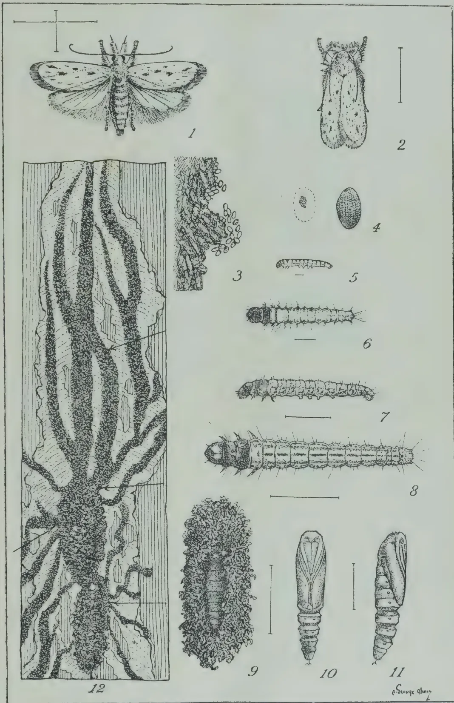
This plate contains 12 detailed scientific illustrations of the Coconut Caterpillar (Nephantis serinopa). 1. A dorsal view of the adult moth in flight, showing its wings with dark spots and a cross-shaped scale bar. 2. A dorsal view of the adult moth resting, showing its wings folded and a vertical scale bar. 3. A cluster of small, oval eggs laid on a leaf surface. 4. Two individual eggs, one showing the internal structure. 5. A small, segmented caterpillar larva. 6. A larger, more developed caterpillar larva with distinct segments and hairs. 7. A caterpillar larva shown from a different angle. 8. A large, mature caterpillar larva with many segments and prominent hairs. 9. A cocoon containing the pupa, shown from the outside. 10. A pupa, shown from the dorsal side. 11. A pupa, shown from the ventral side. 12. A large leaf with a long, dark, winding larval gallery. Arrows point to specific areas on the leaf where eggs are likely laid. The artist's signature 'George Shaw' is visible in the bottom right corner.
Plate XXI.—COCONUT CATERPILLAR (Nephantis serinopa).
1. Moth, flying position. 2. Moth, resting position. 3. Eggs laid on leaf under edge of larval gallery. 4. Eggs. 5, 6, 7, 8. Stages of Caterpillar, 9. Cocoon turned over to show the pupa inside. 10 and 11. Pupæ. 12. Leaf showing Injury. The arrows indicate where eggs may be laid.
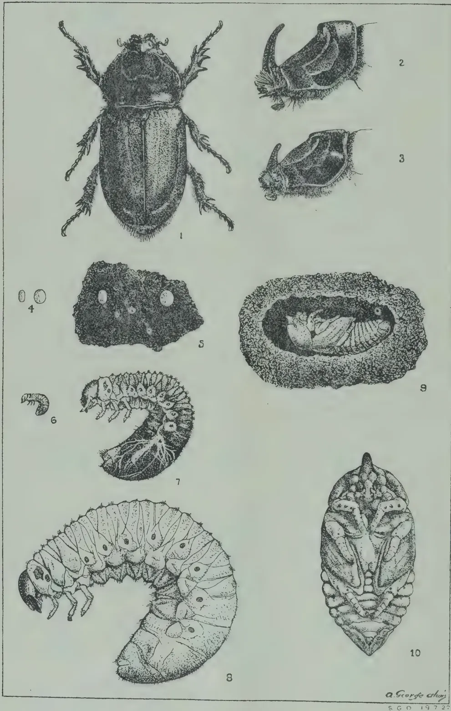
This plate contains ten detailed scientific illustrations of the life cycle of the Rhinoceros or Black Beetle (Oryctes rhinoceros):
The artist's signature "a. George alwyn" and the year "SGO 1972" are visible in the bottom right corner.
Plate XXII.—THE RHINOCEROS OR BLACK BEETLE (Oryctes rhinoceros).
1. Female. 2. Horn of male. 3. Horn of female. 4. Eggs. 5. Eggs laid among coconut fibre in dead log. 6, 7 and 8. Larvæ. 9. Cocoon, showing pupa inside. 10. Pupa, front view.
FEBRUARY, 1923.]107they are usually carried off by ants. Complete figures are not available at the present time, but it may be said that the pest was controlled on the treated palms, which remained practically free of re-infestation so long as the poison was present in sufficient quantity. After a time the sprayed palms were slightly attacked, but the pest did not succeed in developing to any extent. The caterpillars developed normally on the controls.
In the second experiment three small blocks each consisting of 10 young moderately infested palms were selected. Block A. was sprayed as in the first experiment, while Block B. was first of all completely cleared of all traces of the pest and then sprayed to ascertain whether spraying would serve as a preventive from fresh attack. Block C. was left untouched and unsprayed as a control to A, though not to B, which apparently had no control. In A the pest was controlled, and in B the palms remained practically free from re-infestation, while in C. the caterpillars developed normally, though not to any serious extent.
While the above experiments are done on too small a scale to be of any real value and complete figures are not available at the present time, still it may be said that they gave positive results in favour of the sprayed trees. Under Ceylon conditions it would only be practicable to spray young palms, say up to 5 or 6 years old, and it so happens that palms of this age are rarely attacked to any serious extent. It is quite a simple matter to have these periodically examined and the caterpillars and webbing removed by hand. Although it is quite possible to spray fairly tall coconut palms further experiments are necessary in order to ascertain if the caterpillar can be controlled economically by this means.
These two serious beetle pests continue to be more or less prevalent in all coconut areas, but there is evidence that considerable interest is being taken to reduce their numbers. It is essential that all measures of control should be directed along the right lines, having due regard to the breeding habits of these two pests, otherwise the results may be the exact opposite to what was intended. In this connection the two following cases, out of many which have come under the notice of the writer, may be of interest.
Estate A. had been neglected for many years and had suffered severely from the combined attacks of the coconut caterpillar and the two beetle pests. The result was that many palms had died and had been left standing or had been cut down so as to leave 2 feet of stump above ground. The estate then changed hands and the new manager decided to try and clean up the dead area. The remaining dead trees were cut down in the usual way and the trunks were cut into lengths and left exposed in long shallow trenches to rot and provide humus for the impoverished soil. Incidentally, had the Superintendent decided to go in for breeding Black Beetle he could hardly have chosen a better method. Had all the dead trees and stumps been cut down to ground level and covered over with soil to a depth of 6 or 8 inches and had the logs in the trenches been similarly protected there would have been no exposed decaying material in which the beetle could breed. The most effective method, however, and the safest in the end, would have been to root out all the stumps and burn these along with the piled up logs.
108[FEBRUARY, 1923.Estate B. had occasion to adopt the practice of collecting all fallen leaves, husks and decayed logs and mulching these at the time of manuring in open trenches or around the bases of the palms. This may be an excellent scheme from the agricultural point of view but entomologically speaking it is a highly dangerous practice. The collection of Black Beetle had been systematically carried out on this estate for some time, and yielded well under 100 beetles a month. Within six months after the adoption of the above system of mulching it was found that the numbers of the beetle were increasing. The monthly toll ran into hundreds and then into thousands. This rapid increase of the Beetle was due mainly to the system of open trenching and mulching of decaying refuse. The result was that thousands of palms were being exposed to attacks in the crowns by the Beetle and the subsequent injury by the Red Weevil. The presence of any young coconut area in the neighbourhood would serve as a further attraction to these two pests and would result in the destruction of hundreds of young palms by Red Weevil following on Black Beetle injury.
It will be seen from the above instances that there are certain estate practices, such as open trenching and mulching, which, however sound agriculturally, may be directly responsible for the breeding of the Black Beetle in thousands and in some cases may lead to a marked increase in the numbers of the Red Weevil.
The method of disposing of dead trees is to have these rooted up, cut up into suitable lengths and burnt in large piles built up over a shallow square or oblong cavity dug in the ground, so that a powerful draught is created.* All old stumps can be added to the pyre. The fallen leaves and other coconut refuse should be collected into small heaps throughout the estate and burnt every two months. This could be done after the picking of nuts.
The Spotted Locust (Aularches miliaris) has several times during the last two years been reported as partially defoliating young coconut palms. This damage has usually occurred in fields which have been allowed to become overrun with thick grass and weeds, or in gardens where a variety of crops, including coconuts, is being grown on the same plot of land. The young locusts when in the wingless stage usually cluster together in large masses on the ground or on low branches and can be beaten down or collected into sacks and crushed or submerged in water.
In addition to the Coconut caterpillar (Nephantis serinopa) there are at least three other caterpillars which are occasionally found in small numbers eating the green leaves of coconut palms.
The "Bagworm" (Psyche albipes) covers itself with a case formed of small pieces of leaf and eats irregular holes in the leaflets, or sometimes eats away portions of the leaflets until only the midrib remains. The cases should be collected and destroyed.
The "Blue-striped Nettle-grub" (Parasa lepidula) sometimes feeds on the leaflets, at first nibbling away small portions of the leaf surface and later eating right through the leaf. The egg-shaped cocoons are sometimes seen attached to the leaves.
The Hesperid caterpillar, Gangara thysis, occasionally attacks the leaves, but cannot be considered a pest.
* This method is employed successfully on some estates in the Eastern Province
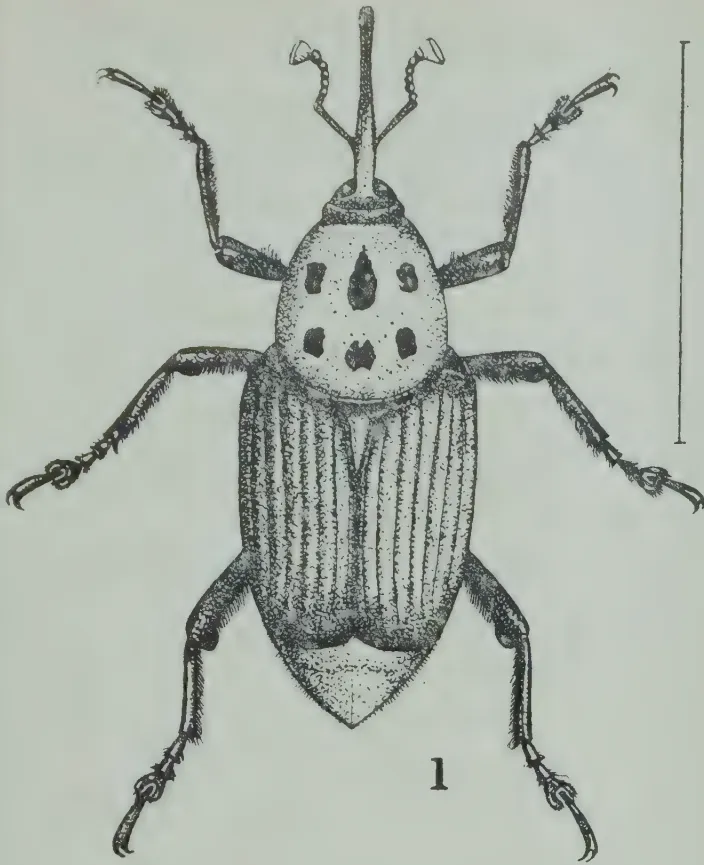
1
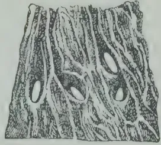
2
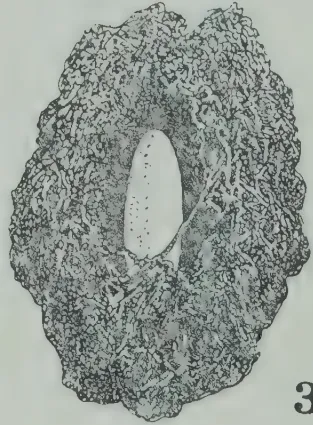
3
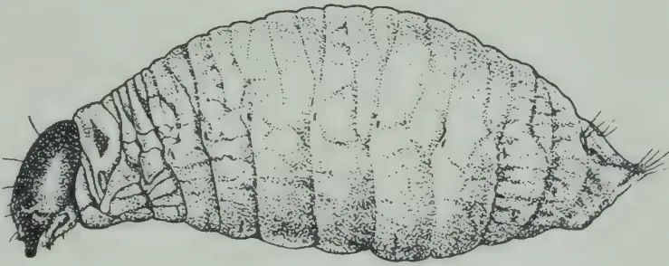
4
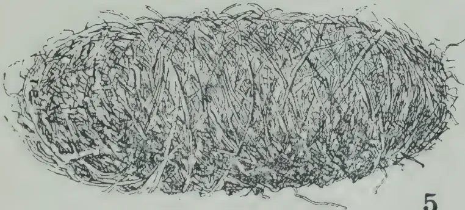
5
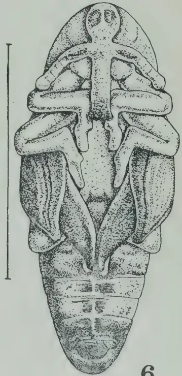
6
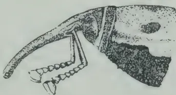
7
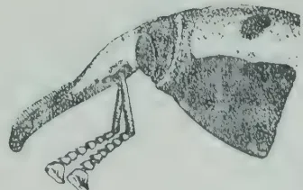
8
G. George Alwis
Plate XXIII.—THE RED WEEVIL
(Rhynchosphorus ferrugineus).
1. Adult. 2. Eggs laid in piece of leaf stalk. 3. Egg (enlarged). 4. Full grown larva. 5. Cocoon. 6. Pupa. 7. Head of female. 8. Head of male.
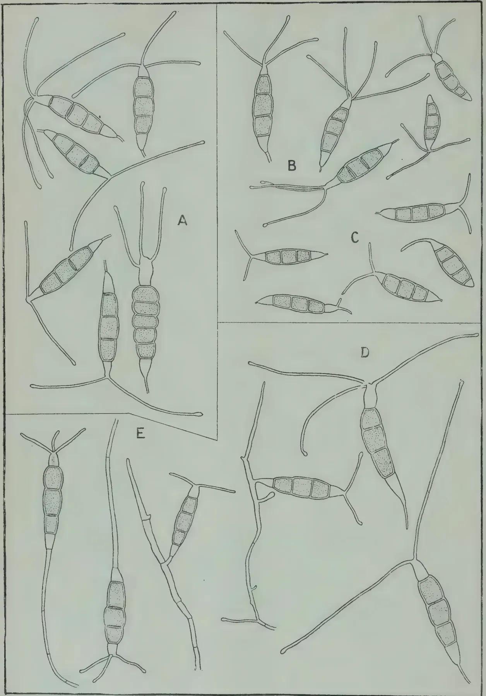
The image is a scientific plate containing five line drawings of fungal spores, labeled A through E. - Figure A (top left) shows several spores with multiple cells and long, thin, knobbed cilia. One spore is notably wider and contains five distinct cells. - Figure B (top right) shows spores with similar multi-cellular structures and knobbed cilia. - Figure C (middle right) shows spores with fewer cells and shorter, less knobbed cilia. - Figure D (bottom right) shows spores with knobbed cilia attached to hyphae. - Figure E (bottom left) shows spores with knobbed cilia attached to hyphae, similar to Figure D. The drawings are detailed, showing the internal structure of the spores and the morphology of their cilia.Plate XXIV.—PESTALOZZIA SPORES
Fig. A. Pestalozzia spores on tea leaf in nature with knobbed cilia. One abnormal spore with 5 coloured cells X 950.
Fig. B. Pestalozzia spores on coconut leaf in nature with knobbed cilia X 950.
Fig. C. Pestalozzia spores from coconut in culture X 950.
Fig. D. Pestalozzia spores with knobbed cilia grown from spores with unknobbed cilia, on sterilised tea leaf X 950.
Fig. E. Spores of Pestalozzia on tea borne on hyphae in culture.
FEBRUARY, 1923 ]109Scale insects :—There are several species of scale insects which are found on the leaves of coconut palms, but the only species which calls for any mention here is the "Coconut Scale," sometimes known as the "Transparent Coconut scale" (Aspidiotus destructor). This scale is not the serious pest in Ceylon that it is in some other countries, as it seems to be controlled by parasites and by fungous diseases. The female scale is pale yellow and is usually seen as a minute yellowish spot under a thin papery covering. These scales are sometimes clustered so thickly on the underside of the leaves as to form a complete scurfy layer over the leaf surface. The upper surface of attacked leaves is usually marked with small yellowish spots which coalesce in a bad attack, giving the whole leaf a yellowish appearance, but this yellowing of the leaves may also be due to other causes. Small palms are sometimes attacked on the lower leaves, which can either be sprayed with kerosene emulsion, or removed and burnt. Attention to drainage, cultivation and manuring will maintain the vigour of the palms and help to keep down scale attack.
See also :—BULLETIN OF THE DEPARTMENT OF AGRICULTURE, No. 58 and LEAFLETS Nos. 20, 21, and 22.
L. S. BERTUS.
Assistant to the Botanist and Mycologist.
It is well-known that Pestalozzia causes Grey Blight on tea and coconut leaves and a study of the fungus has been made to ascertain the identity of the species that affects each of them.
Typical Pestalozzia spores on tea and coconut are spindle-shaped or fusiform bodies, divided by four septa into a row of five cells of which the three central are pale-brown and the terminal cells hyaline. The apical hyaline cell is crested with hyaline cilia, or thread-like appendages, which vary in number from one to four. To the lower hyaline cell is usually attached a pedicel, or stalk, on which the spore is borne. Abnormalities occur in the size of the spore and the number of coloured cells. (Plate XXIV). The mean dimensions given below were derived from measurements of fifty spores in each case.
Growth in culture.—Spores were grown in pure culture in Maize meal agar, French-bean agar and Quaker Oat agar. The chief feature of growth in all these three media is the collecting together of hyphæ to form tufts. These tufts are originally white in colour and later take on a pinkish tinge. As the fungus advances in age, black pustules of spores are seen to arise from the centre of each of these tufts. In old cultures, the white mycelial growth on the medium was covered with these little black pustules in abundance. In the French-bean and Oat media a stroma is formed in the culture medium, while in the maize meal instead of a stroma a network of loose hyphæ, or a pseudo-stroma is present. In all the three media, spores
110[FEBRUARY, 1923.that appear to be in pustules are found to originate in distinct pycnidia. Pycnidia are present in large numbers on the loose mycelium growing on the medium and are of diverse shapes and sizes. They are spherical, laterally oval, flask-shaped, rectangular, spheroidal, globose, oval, rectangular-oval, cone-shaped, etc. They consist of a pseudo-parenchymatous wall, yellowish in colour, not possessing ostiolum, and occur singly or in groups very often having common walls. Spores are liberated by a rupture of the wall at any point. In the stroma formed in the French-bean and Oat agar, and in the pseudo stroma in the maize meal, a few spherical or spheroidal pycnidia are seen, embedded partly or completely. Spores were seen liberated from these by a rupture of the wall to the exterior, or into the stroma or culture medium. In the maize meal, a few pycnidia are present, embedded in the culture medium, liberating spores by a break in the wall into the culture medium. Below is a table giving the dimensions of the spores in nature in thousandths of a millimeter and the various culture media.
| Media | Range of length including terminal hyaline cells | Mean Length | Range of length of the coloured cells | Mean Length | Range in width | Mean width |
|---|---|---|---|---|---|---|
| Leaves in nature | - 15 to 25 | 20.2 | 12-16 | 13.8 | 5.7 | 5.7 |
| French-Bean agar | - 15 to 22 | 18.7 | 10-15 | 12 | 5.6 | 5.4 |
| Oat agar | - 15 to 23 | 18.8 | 10-15 | 12 | 5.7 | 5.5 |
| Maize Meal agar | - 15 to 23 | 18.5 | 10-15 | 12 | 5.7 | 5.7 |
In all the media the cilia are very short, vary in number from 1 to 3, and are not knobbed. They are usually between 2 to 5 thousandths of a millimeter in length, rarely reaching 10 to 12. In some spores the pedicel is not present; when present it is generally between 1 and 3 thousandths of a millimeter long, rarely attaining 4 or 5 in length. Attempts were made to cause the cilia to knob by growing the fungus on tea and coconut leaves, sterilised by boiling, in Roux tubes, but no success was attained. A peculiarity about this Pestalozzia is that the cilia are shorter in culture than in nature, and that although the cilia are knobbed in nature, they are never knobbed in culture.
The base of a coconut petiole suspected to be attached by Phytophthora was incubated, and pustules of Pestalozzia spores were hatched out corresponding in dimensions with the spores in culture, all possessing short cilia and not knobbed. The spores behaved in the various culture media as those obtained from the leaf.
Growth in culture.—Spores were grown in pure culture in Maize meal agar, French-bean agar and Quaker Oat agar. The chief feature in all the three media is the rich fluffy growth of aerial hyphæ which ultimately forms into a thick, heavy, compact felt of white hyphæ lying on the medium. No formation of tufts of hyphæ occurs. Another feature is the production of spores on loose hyphæ. In the French-bean agar, either a continuous white band of hyphæ, smooth and heavy in appearance, is formed or individual bands of hyphæ occur, the intervening spaces of which become filled up with aerial hyphæ, in time forming a continuous felt. Spores are produced
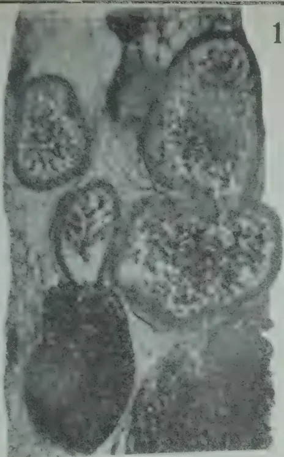
1
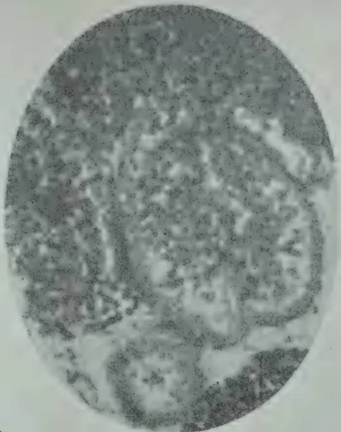
4
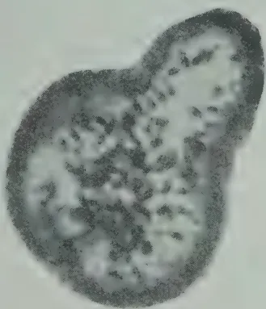
2
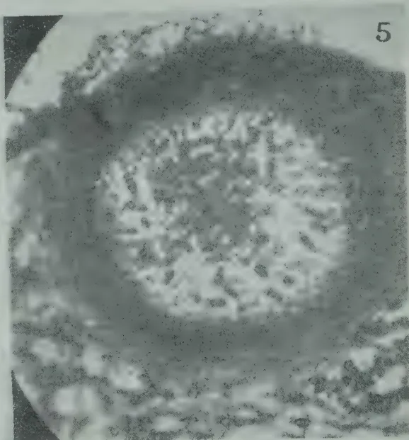
5
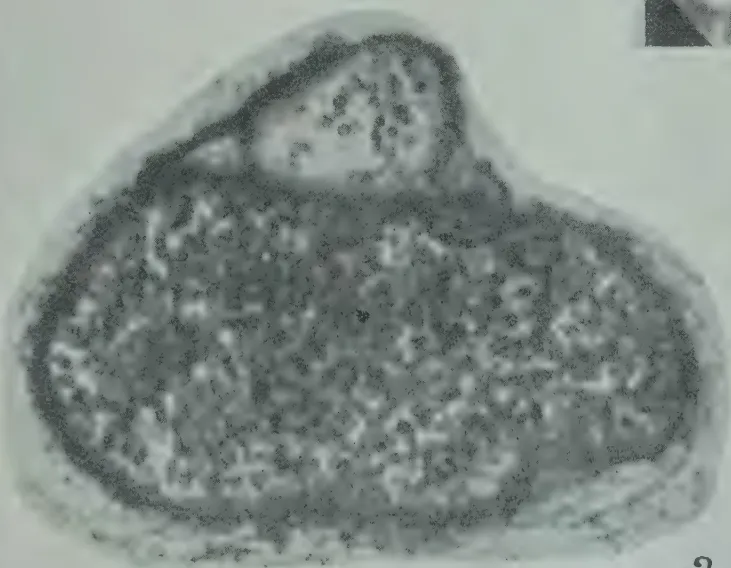
3
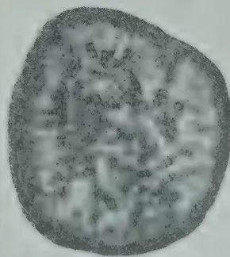
6
Plate XXV.—PESTALOZZIA PALMARUM COOKE
Fig. 1. Section through a group of pycnidia in the film of mycelium on the medium X 173 (long axis of figure horizontal).
Fig. 2. Section through a flask-shaped pycnidium in the film of mycelium on the medium X 230.
Fig. 3. Section through a rectangular-oval pycnidium in the film on the medium with a small spheroidal pycnidium attached to it X 260.
Fig. 4. Section through a globose pycnidium in the film on the medium showing spores being liberated by a break in the wall. A small spheroidal pycnidium at the side X 335.
Fig. 5. Section through a spherical pycnidium embedded in the stroma formed in the medium X 385.
![Plate XXVI showing six micrographs (1-6) of PESTALOZZIA THEÆ SAWADA. Fig. 1: Section through a pycnidium on the stroma formed in the medium liberating spores into the culture medium. Fig. 2: Section through chambered pycnidia on the pseudo-stroma showing spores being liberated by a rupture of the wall and confined under the woolly hyphae. Fig. 3: Section through a stromatic body containing pycnidial cavities. Fig. 4: Section through a flask-shaped pycnidium on the stroma formed in the medium. Fig. 5: Section through chambered pycnidia on the pseudo-stroma extruding spores to the top by a rupture of the wall. Fig. 6: Section through a pycnidium on the stroma formed in the medium.](2b7d8102757fba1adcdfd9b6ccabc1f6_1_img.webp)
Plate XXVI.—PESTALOZZIA THEÆ SAWADA
Fig. 1. Section through a pycnidium on the stroma formed in the medium liberating spores into the culture medium .
Fig. 2. Section through chambered pycnidia on the pseudo-stroma showing spores being liberated by a rupture of the wall and confined under the woolly hyphae .
Fig. 3. Section through a stromatic body containing pycnidial cavities .
Fig. 4. Section through a flask-shaped pycnidium on the stroma formed in the medium .
Fig. 5. Section through chambered pycnidia on the pseudo-stroma extruding spores to the top by a rupture of the wall .
FEBRUARY, 1923.]111on loose hyphæ on the sides of the glass and on the medium. Small blackish or greyish protuberances appear in the felted layer, giving rise to pustules of spores. Underneath the felt, too, little black bodies are scattered about liberating spores. A stroma was present in the culture medium. In the Maize meal puffs of ærial hyphæ grow out at regular intervals, and with age some of the intervening spaces between the puffs become filled up with ærial hyphæ, so that the whole growth presents a woolly appearance. In time the submerged hyphæ of the woolly puffs appear greyish or blackish, due to the production of a mass of spores on the loose hyphæ. In some tubes black bodies appeared producing pustules of spores. Hyphæ ascended the sides of the glass and bore spores in large quantities. A pseudo-stroma was present in the medium. In the Oat agar growth was fast and vigorous, and the whole surface of the medium was overrun in a few days with ærial woolly hyphæ. Hyphæ ascended the sides of the glass so as to almost choke the tube and bore spores in abundance. In some tubes black masses of spores were seen issuing in pustule form. A stroma was present in the culture. In the French-bean, the blackish protuberances which were present in the felted layer, and the small black bodies which were scattered about underneath this layer are pycnidia and pseudo-parenchymatous stromata containing pycnidial cavities. They are present on the stroma, or embedded in the stroma partly or completely. Few pycnidia were present on the loose felt on the medium. In the Maize meal the black bodies which were seen extruding spores were all pycnidia, on or partly embedded in the pseudo-stroma. The pustules of spores that appeared in the Oat agar were liberated from pycnidia and pseudo-parenchymatous stromata containing pycnidial cavities. The stromatic bodies containing the pycnidial cavities are found on the stroma. The pycnidia are present in the stroma, or on the stroma, a few in the felt of mycelium on the medium, and in the culture medium. In all the three media the pycnidia were mainly present on the stroma or pseudo-stroma and very few in the felt on the medium. They were of various shapes and sizes, completely enclosed by a pseudo-parenchymatous wall, and had no ostiolum, the spores being liberated by a rupture of the wall anywhere. A peculiarity about the pycnidia was the liberation of spores in a large number of cases into the stroma or culture medium by a rupture of the wall at the base, forming a mass of mature spores in a cavity in the stroma or medium as the case may be.
Below is a table giving the dimensions of spores in thousandths of a millimeter in nature and the various culture media:—
| Media | Range of length including terminal hyaline cells | Mean Length | Range of length of coloured cells | Mean Length | Range in width | Mean width |
|---|---|---|---|---|---|---|
| Tea leaves in nature - | 20.35 | 25.6 | 15.22 | 18 | 5.8 | 6.7 |
| French-bean agar - | 22.33 | 27.3 | 16.20 | 18.2 | 6.8 | 6.7 |
| Oat agar - | 22.36 | 27.4 | 16.23 | 18.4 | 6.8 | 6.9 |
| Maize meal agar - | 22.32 | 26.6 | 15.20 | 18.5 | 6.8 | 6.8 |
In all the three media the spores possessed very long cilia which varied in length up to 40 thousandths of a millimeter. They varied in number
112[FEBRUARY, 1923.from 2 to 4. The majority of spores in culture had the cilia knobbed, but many were not knobbed. These spores with unknobbed cilia, when transferred to tea or coconut leaves, sterilized by boiling in a Roux tube, readily formed knobs. The length of the pedicel varied from 3 to 10 thousandths of a millimeter.
The spores of the species on coconut were distinctly smaller than those of the species on tea. In culture the mycelial growth was characterized by the formation of tufts of hyphæ, producing spores from pycnidia in pustule form so as to cover the whole surface of the medium with innumerable small masses of black pustules. Pycnidia were produced in abundance on the loose mycelium on the medium, but in a very poor quantity in the stroma found in the culture medium. The spores which had cilia knobbed in nature, when once taken into culture, could not be made to knob again. The cilia too became short in culture.
The spores of the species on tea were on the average larger than those of the species on coconut. In culture the mycelial growth was characterized by a rich fluffy growth of ærial hyphæ eventually resulting in the formation of a compact, heavy, white felt, lying on the medium. Spores were also produced in large quantities on loose hyphæ. The pustules of spores which were extruded from pycnidia or pseudo-parenchymatous stromata were very much larger than those of the coconut and occurred in much smaller numbers. Pycnidia and pseudo-parenchymatous stromata were mainly found in the stroma formed in the culture medium. Few pycnidia were present on the loose mycelium. The spores which had cilia without knobs in culture could be readily made to produce knobs by growing them on sterilized tea or coconut leaves, whereas the coconut Pestalozzia refused to produce knobs on these substrata. The cilia grew very long in culture. These differences appear to be sufficient to maintain the two species distinct.
There is no doubt that the Ceylon species on the coconut leaf is Pestalozzia palmarum Cooke. The species on tea is Pestalozzia Theæ Sawada.
C. H. GADD, B.Sc.,
Assistant Mycologist.
The fall of nearly full grown, but immature, nuts from the coconut palm has hitherto been regarded as being primarily due to fungus attacks. The failure to find a causative organism always associated with the disease has given rise to the view that its cause may in some cases be purely mechanical, or due to adverse physiological or environmental conditions.
The discovery that a species of Phytophthora was usually present on fallen nuts led to the suggestion that the disease might be prevented by the application of a fungicide such as Bordeaux mixture. Experiments in 1921 to determine the value of this spray as a preventive of nut fall gave negative results. The number of fallen, but immature, nuts in the sprayed
FEBRUARY, 1923.]113plot was approximately equal to that in the unsprayed plot. The climatic conditions of that year were unfavourable to the growth of the fungus and the pathogenic organism was not found on any of the fallen nuts examined from either plot. In view of the absence of a pathogenic organism it became evident that causes other than fungus attack might lead to a similar diseased condition.
A serious case of fruit fall of coconuts before maturity is reported from Indo-China, in December, 1920. The appearance of the fruit suggested a parasitic disease, but comparative analyses of the soils of various plots led to the conclusion that the fundamental cause was the insufficient nourishment of the roots, which was remedied by the application of nitrogenous manures. The description of the disease and the presence of certain organisms on the fallen fruits suggests the condition known in Ceylon as "Nut fall." Observations in Ceylon, however, do not lead to the same conclusion, viz., that its cause is an insufficiency of nitrogenous manures. Nut fall in Ceylon is known to occur in plots which are regularly and liberally manured, whereas it is absent from other plots which rarely receive any manurial treatment.
The discovery that the abscission of fruits of Juglans californica quercina is due to water deficit beyond a certain limit, and that a similar cause also leads to the fall of Citrus fruits, may throw some light on the problem of nut fall of coconuts in Ceylon.
A water deficit has already been shown to affect the setting of young coconut fruits in Ceylon. Following a prolonged period of drought, there is an increased fall of the female flowers, or "button nuts," as they are frequently termed. The fall of such "buttons" had previously been attributed mainly to the lack of fertilization, but, undoubtedly, other factors besides fertilization play an important part in bringing this about. The June drop of peaches in Delaware was generally attributed to incomplete fertilization, but an examination of a large amount of cytological material gave conclusive evidence that June drop was not the result of improper fertilization but of other physiological factors. It has also been ascertained that moisture is an important factor in the setting of tomato fruits, and that by an efficient conservation of soil moisture "blossom drop" of tomatoes can be reduced.
The above, together with the fact that an increase of button fall of coconuts follows a period of drought, leads to the conclusion that the abscission of youngest fruits may be caused by a deficit of soil moisture beyond a certain limit. That a similar cause may lead to the abscission of larger grown fruits is worthy of consideration.
114[FEBRUARY, 1923.Nut fall of coconuts in Ceylon occurs principally during the rains of north-east monsoon. Nut fall therefore occurs, not when there is a deficit of moisture, but during the wettest times of the year. This on the face of it would appear to negative any idea that a deficit of soil water is a contributory cause of nut fall.
The root system of the coconut palm, however, is peculiar in many respects. The roots have no root hairs, and water can be absorbed only through the epidermis of a short region of the root immediately behind the root tip. The remainder of the root is covered by a rigid shell, called a hypodermis, which is impermeable to water. When the growth of the roots is checked by dryness or other unfavourable condition of the soil, the hypodermis is formed nearer to the tip and ultimately no absorbing zone at all is left. Coconut roots are therefore ill adapted to the absorption of large quantities of water. In nature, no roots will grow to any distance into water, nor into a level of soil where water stands, and a rise in the water level ultimately kills the submerged roots.
The hypodermis is impermeable not only to water but also to air. The roots are to a large extent dependent on special breathing organs or Pneumatophores for their air supply. These breathing organs are specialised roots and their structure is such that open ærial communication is maintained through the pneumatophore to the internal tissues of the parent root. Consequently the coconut requires an open, well-ærated soil, and any tendency towards water-logging will interfere with the air supply to the root. An excess of water in the soil may therefore seriously interfere with the vital processes of the roots, leading to a reduced absorption of water and ultimately to the death of the roots. This in effect becomes equivalent to an actual water shortage.
Nut fall of coconuts occurs principally in the Galagedara side of the Kurunegala district, and is there most prevalent during the rains of the north-east monsoon. The soil is a heavy loam which becomes very hard during the dry weather, but is sticky, with a tendency towards water logging, during heavy rains. The soil conditions during heavy rains may become deleterious to the coconut roots and thus lead to the premature dropping of the fruit.
Climatic conditions during the north-east monsoon are favourable for fungus growth, so, at this season, nut fall as caused by pathogenic organisms may be expected to be prevalent. Nut fall, however, frequently occurs at this time even in the absence of any causative fungus. In view of the above it is suggested that heavy rainfall may produce conditions of the soil adverse to the healthy growth of the root system of coconut palms. This, without the intervention of any pathogenic organism, may result in the abscission of immature fruits.
See also: BULLETIN OF THE DEPARTMENT OF AGRICULTURE, No. 53.
FEBRUARY, 1923.]115Selection work so as to provide pure-line seed is being carried out at Anuradhapura and Peradeniya Experiment Stations and the results up to date are most encouraging. Seed of various selected varieties will shortly be available for trial in the different districts of the Colony and arrangements for small preliminary trials have been made for the Maha season 1922-23.
Manurial trials have been carried out in all parts of the Colony, and the benefit that accrue from the applications of green manures and phosphates have been clearly demonstrated.
Transplanting has also been encouraged and competitions arranged to stimulate the improvement of cultivation and the increase of yields from lands already under paddy.
The hulling of paddy by machinery is being carried on at Ambalantota, Anuradhapura Jail and Jaffna. The erection of the Mill by DR. W. A. DE SILVA on Sravasti Estate, Ratmale, was completed during the year and its work should be watched with interest.
R. O. ILIFFE, M.A.,
Economic Botanist.
During the calendar year the main work has still been confined to the selection and improvement of our Ceylon paddies. Certain important developments have been sanctioned, and these may be treated in brief before describing the main routine.
The range of paddy varieties under test has been increased by the inclusion of types from the North-Central and Central Provinces. The routine samples, on which 2-3 years' work has been done, include, for the Maha season, paddies of the Mawi and Samba groups; for the Yala season, paddies of the Bala Wi, Danahala, Illankalayan, Heenati and Murunkan groups, with more advanced work on certain Suwanda-el, Madoluwa and Kalupanniti types. To these have been added, for Maha, Hatial, Tillanayakam, Illankalayan, Murungan, Anaikodan; for Yala eight types taken from salty or brackish areas, and a large collection of hill paddies.
Arrangements have been made to study certain cultural and growth problems in the field, and, as accommodation is provided, in the laboratory. Experiments with an Indian seed drill, and its connected implements for covering the seed, and for inter-cultivation in the growing crop, are formulated. The possibilities of dry preparation of a seed bed, with, perhaps,
116[FEBRUARY 1923.light motor traction, are being studied for the drier and flatter areas, but untimely rain has so far prevented an actual trial. Amongst growth problems to be considered are the optimal length of time in the nurseries; the factors affecting tillering, and the results of differences in tillering capacity; the advantages of transplanting, etc. An experiment begun by the late Divisional Agricultural Officer, Northern Division, has been elaborated to show the relative merits of broadcasting, transplanting, sowing germinated seed in drill rows, and broadcasting, but thinning out at an early stage.
Until this year, all work had been carried out at the Experiment Stations at Anuradhapura and Peradeniya. A scheme has been approved and is now in practice for testing pure seed in different districts. Eight stations were selected, and each was to receive 5 varieties in 2 bushel lots. Owing to abnormal drought and other conditions, only 23 Pure Line Selections could be sown. Six trial grounds have been laid out, and this is a beginning of what will become important work. These trials form a link between experiment and practice. They were initiated to test, in the hands of the cultivator, the performance of paddies which gave good results at the Experiment Stations. It is not expected that a variety giving a good yield at Anuradhapura, will necessarily do well at, say, Ratnapura, and before quasi-improved seed is distributed, it is first necessary to know its capabilities in the new district, whilst still in the hands of the Department.
At the same time as the main divisional sowings at Peradeniya, samples of eight pure lines were put down at the School of Tropical Agriculture, Peradeniya. These will serve as a check on those grown at the Experiment Station, and will be used for the instruction of the students. At Anuradhapura, the work has been handicapped by the lack of a suitable place for storage of grain, but the building of a store, a small field laboratory, a threshing floor, and stack yard, have been sanctioned.
At both stations the effects of green, and other, manures are being tried, but it is found difficult to establish a green crop under marshy conditions which do not yield to surface drainage.
Enough has been said to point the general policy adopted and a few general remarks on the methods in use will serve to indicate the relation of policy to practice.
In the first place, it has to be decided whether better results will accrue from improving existing types, or by building up new, or hybrid, plants having a combination of good characters. At first sight, the latter method sounds attractive, but it contains many pitfalls, and results are by no means sure. A large staff, with constant supervision, is required before crossing work on a large scale can effectively be carried out. For other reasons besides, it became obvious that the most good in the shortest time could be effected by the weeding out of the lighter yielding existing paddies, and proper selection amongst the better types. Consequently, a series of Pure Line cultures has been built up, beginning at first with a small number of varieties, which, when sufficiently tested, will give place to others in the order of importance.
To review briefly the theory of work; the progeny of the seed of one parent plant may be uniform, or individuals may vary in certain
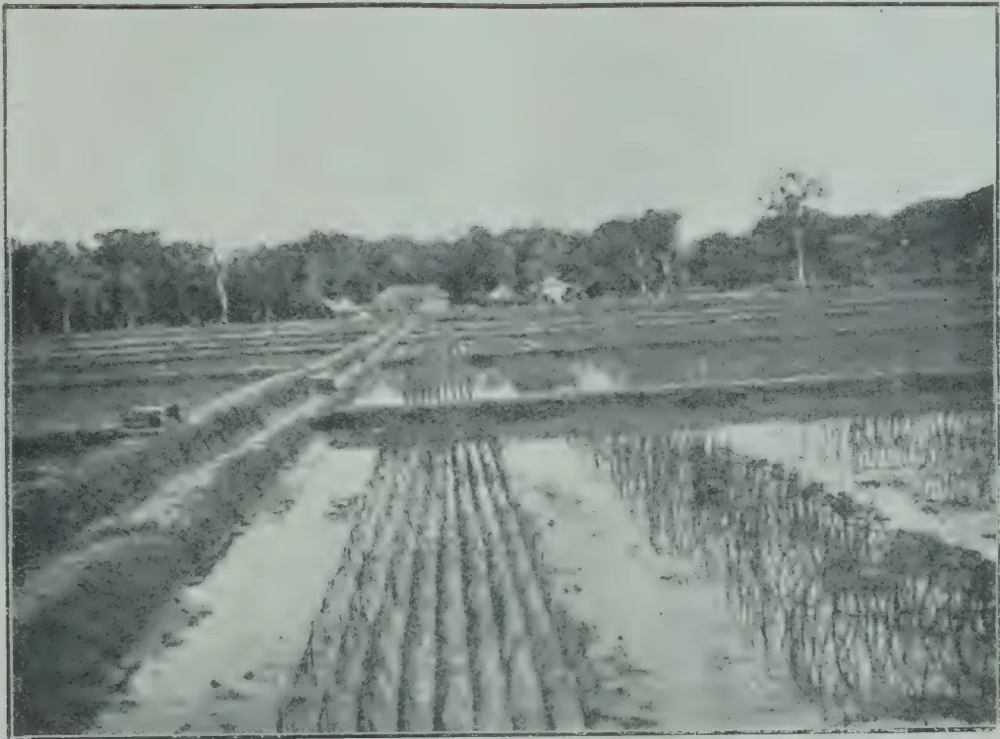
Plate XXVII.—PURE LINE SELECTION BLOCKS
AT ANURADHAPURA EXPERIMENT STATION
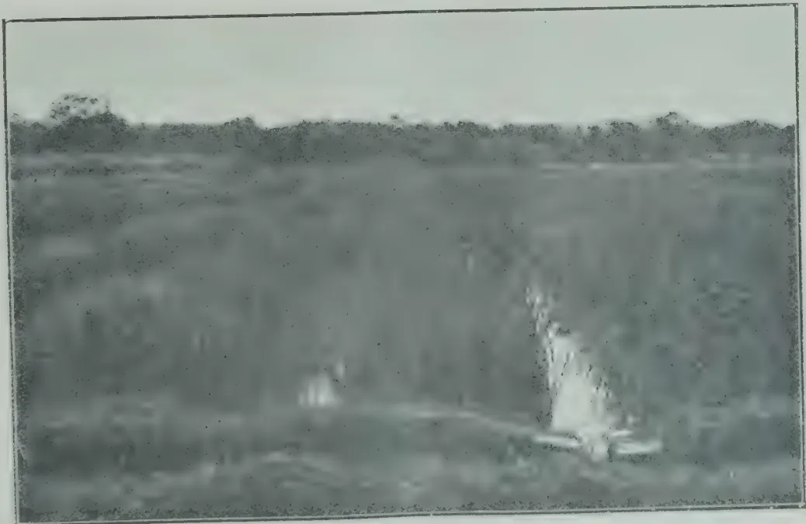
Plate XXVIII.—SAME BLOCKS—LATER STAGE
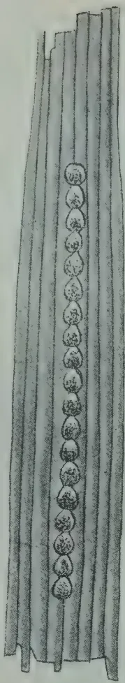
1
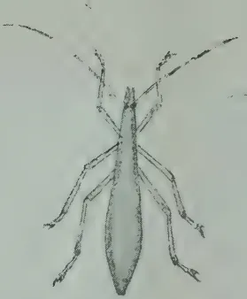
5
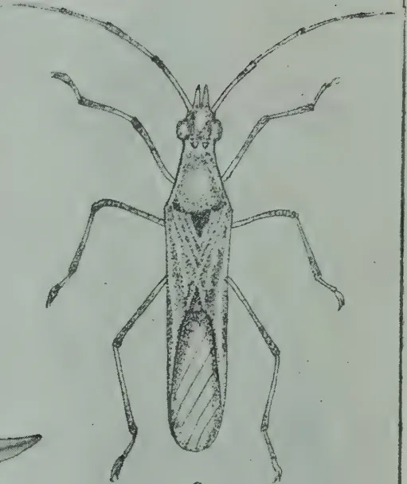
8
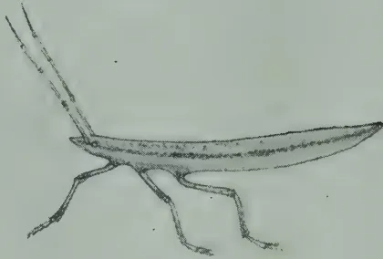
6
2
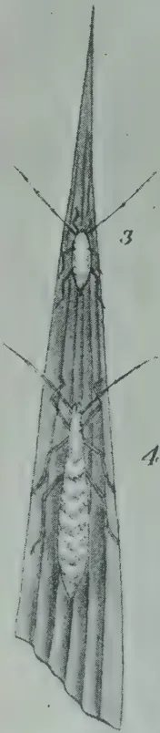
3
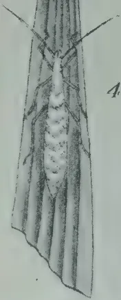
4
7
9
Plate XXIX.—EXPLANATION OF PLATE
(1) Eggs of paddy fly as laid on the leaf X 3. (2) One egg seen from the side X 6. (3) Young bug just hatched X 3. (4) Bug in second stage X 3. (5) Bug in third Stage X 3. (6) Bug in fourth stage X 3. (7) Bug in fifth stage X 3. (9) Fullgrown bug X 3. (9) Paddy flies sucking paddy grains, natural size.
Plate re-drawn from Plate I., Memoirs of Department of Agriculture India Entomological Series.
FEBRUARY, 1923.]117characteristics. If it is uniform, it is reasonable to expect, according to observation, that it will remain uniform as long as it is uncontaminated by cross-pollination with other types. If it is tested in the third season and found to agree entirely with its parent and grand-parent, the assumption of the previous year is justified, and a Pure line culture is established. If time is of value, the seed which gives a miscellaneous progeny must be at once discarded, as only a third years' trial, under very careful scrutiny, will reveal those characters which may be said to be fixed. In the case of paddy, as with all other plants which are naturally self-pollinated, the Pure Line culture is easy to establish.
Imagine, then, a plant which is selected from a field, for propagation as a heavy yielder, or as being different from another, or for some other reason. The plant is uprooted. Details are recorded of its botanical features, and, if possible, photographs are taken. Suppose it has 3 ears. One is kept as a herbarium specimen, one is sown, and the other is kept as a reserve in case of failure of germination, etc. Usually the selected plant will bear more than 3 ears, and then the seed is germinated and dropped, one through each hole of a board which is perforated at 3 in. intervals, there being 10 holes in a row, and 10 rows in all. A block of 100 germinated seeds is thus sown, and a space at the corner of the plot should receive 20 or 30 seeds to replace any that subsequently die out. The advantage of this accurate spacing, is to make obvious any plant which comes up out of line. Such a plant becomes a suspect, and is rooted up and destroyed. Thereby, the plots are kept pure. Each plant must be watched throughout its growth, and the features and yields recorded separately. From two or three blocks of 100 plants, only those are selected which give promise of improvement. These are then sown in beds of standard size, and compared with other lines, similarly extracted, comparison being effected either on yield per plant or yield per unit area.
After a further weeding out in the following season, these are transferred to plots each 4 ft. 40 ft. with 8 repetitions of each (8 is an arbitrary number which was dictated by the limits of space) as fixed Pure Lines, and the experiment is repeated for at least one season more to corroborate the figures and elucidate environmental or climatic factors. Sufficient seed should then be available for distribution, in order to try the improved seed for other soil, etc., conditions. This part of the proceedings is not entirely under scientific control. Some leading idea can be obtained from the records, and some from observations of growth. But many mistakes will be encountered before the optimal situation is found for all varieties.
In the above experiments, once the seed has passed the "sowing board" season, it is transplanted from the nurseries. Thus we have first the selection of ears in the field; then the sowing of the seed through the "sowing board;" and the next, and subsequent, seasons, the seed is broadcasted into a small nursery plot and afterwards transplanted into the larger plots. At Anuradhapura, each field has been measured to standard, and will accommodate 26 plots of 4 ft. 40 ft. It is impossible to standardise the fields at Peradeniya, as they are terraced. The system there has to be modified and plots of 4 ft. 20 ft. have been laid down.
118[FEBRUARY, 1923.G. DOUGLAS AUSTIN,
Assistant to Entomologist.
Paddy Fly is one of the worst pests of paddy in Ceylon since it is prevalent in all the rice districts and is capable of destroying a crop at a very critical stage of its growth.
The popular name Paddy Fly is evidently a literal translation of its Sinhalese name "Goyam messa" ('Goyam' = paddy plant and 'messa' = fly). The other names by which this pest is known in the island are "Paddy Bug," "Rice Bug" and "Rice Sapper." The Tamils do not appear to have given it any particular name because the term "Vandu" which is popularly applied to it, may also be applied to a beetle or any insect with strong wings.
The nature of the damage done to the paddy is characteristic of the pest and consists in both nymphs and adults sucking the sap out of the grain when it is in the milky stage. This type of attack causes the ear to be emptied of its contents and results in the ear putting on a yellowish appearance, while the rest of the plant remains green.
The adult bug is not conspicuous in the field as its general colour varies from a yellowish green to a light brown and harmonises with the grain on which it may be feeding. Adults are not strong fliers and have a tendency to drop down and seek shelter on being disturbed. It has also been observed that the bugs are most active during the cooler parts of the day, that is both during the early morning and in the evening. At Anuradhapura the bugs pass through periods of æstivation during the hottest and dryest seasons of the year. February and May were the driest and hottest months during the investigation. During these periods the bugs sought shelter and concealment in the weedy growth and jungles, showing preference to damp or water-logged fields.
Mating was generally observed in the mornings while periods of copulation were noticed to last from a few minutes to four to five hours. Mating may also occur two or three times before eggs are deposited and may even occur between ovipositions. The difference in the proportion of sexes was not great under natural conditions. From a series of counts made from different habits only a slight excess of males was shown. Under insectary conditions adults lived nearly four months.
The eggs are conspicuous and easily detected in the field. They have a striking resemblance to grass seeds and are laid singly in rows on blades of grass, paddy, or leaves of any plant on which a female may rest. The average number of eggs in a mass is about seven. The actual number of eggs which can be laid by a female was not ascertained. Incubation periods in the insectary lasted from 4 to 9 days; over 80 in every 100 eggs hatch out under field conditions. The nymphs are greenish insects with rather long legs. They begin feeding within an hour of their hatching, and moult five times during a normal nymphal period of about 19 days before they reach the adult stage.
* This note is a summary of the investigations on Paddy Fly made at Anuradhapura from December 1920 to June 1921. See BULLETIN No. 59
FEBRUARY, 1923.]119A careful search for the natural enemies of this pest resulted in the following being detected :—Proctotrypidae—egg parasites rather rarely ; a predaceous Pentatomid—Asopus malabaricus and two Reduviid predators—Harpactor fuscipes and Irantha sp. The adults and nymphs of these three predaceous bugs were observed to feed freely on both nymphs and adults of Paddy Fly. The predatory habits of the Pentatomid A. malabaricus were hitherto unrecorded.
Host plants :—The bugs were observed to live and breed on 18 varieties of grasses, Panicum colonum and Cyperus polystachys being the two most favoured.
A study was also made of the efficacy of certain methods of control. The veracity of charms and other quaint practices in vogue in the different rice districts was investigated whenever the opportunity arose. Beyond the fact that they are superstitious and something in which the majority of cultivators have great faith, nothing more could be learnt.
Large field nets were not experimented with as they were considered impracticable after trials on a small scale at Peradeniya. Hand nets gave very good results. Winnows smeared with sticky substances made locally and also with Ostico, a sticky substance manufactured by McDougall, gave equally good results. Ropes saturated with kerosene or smeared with Ostico and dragged across affected fields did not give encouraging results.
Crushed sugar cane as suggested by LEFROY in India, placed on buds as a bait, was not found to attract Paddy Fly. Experiments were also made with the Philippine bait which consists of putrid meat hung out in muslin bags. This was reported to be an attractant to Paddy Fly in the Philippines, but gave no results when experimented with at Anuradhapura. It was noticed that flies of various kinds were attracted to the bait in large numbers and were continually buzzing about it. These may have kept away the Paddy Fly.
See also : BULLETIN OF THE DEPARTMENT OF AGRICULTURE, No. 59.
BY THE DIRECTOR OF AGRICULTURE.
The manurial experiments which have been carried on throughout the Colony during the past two years have demonstrated the value of green manures. In all cases, dressings of green manures produce increased crops—whether they are used alone or are applied with quantities of phosphatic manures.
In some districts leaves and twigs of several plants are used, but in general a sufficiently large quantity is not applied and it is held that this is due to the difficulty of collection and to the cost.
Endeavours are therefore being made to encourage the growth of green manures in the fields themselves or on the high land immediately adjoining many of the paddy fields. Sunn hemp, wild indigo and Daincha are recommended.
Ceylon paddy soils are poor in their powers of water retention and in the finer soil particles. Green manuring should therefore be more generally practised in order that the soil mass may retain more irrigation water and rains.
See also : BULLETIN OF THE DEPARTMENT OF AGRICULTURE, No. 57, and FOOD PRODUCTION CIRCULAR, No. 21.
120[FEBRUARY, 1923.'F.' BURNETT, B. AGR.,
Divisional Agricultural Officer, Southern.
In dealing with the above subject I shall confine my observations on the results obtained from the Government experiments conducted at Ambalantota, on 60 acres. The land before planting was of the ordinary low scrub jungle and the soil being a light loam. After clearing and burning the seeds were planted on October the 9th, 10th and 11th, immediately after the first North-east Monsoon rains. The varieties planted were :—
(1) Durango, an American Upland cotton. The seed having been secured from the Department of Agriculture of U. S. A.
(2) Cambodia and (3) Karranganni :—The seed of which was obtained from the Department of Agriculture, Madras.
(4) Sea Island :—The seed of which was obtained from the Imperial Department of Agriculture for the West Indies.
(5) Ashmouni, (6) Assali, and (7) Sakellaridis :—The seed of which was secured from the Ministry of Agriculture for Egypt and,
(8) Cauto :—An American variety of cotton, the seed of which was given to the Department of Agriculture by MR. DENNIS WOOD.
As tillage in land from jungle is difficult during the first year, a seed bed was obtained by mamotying lines in which the cotton seed was sown. After the first sowing, rains did not fall again for 14-15 days, and as the seeds did not germinate field mice became rather troublesome. However, after replanting the vacant places with seeds that had been dipped into a weak solution of Kerosene and water a good stand was obtained. With the late rains, came the weeds, and it was necessary to keep them in check.
It may be mentioned here that it is absolutely essential that a good burn be obtained on newly reclaimed land. In places where a good burn had been obtained, the plants showed a much stronger growth and weeds were not so troublesome. The effect of weeds on the growth of cotton is shown in Plate XXXIV.
The crop was weeded twice. The weeds were placed in the rows of cotton plants and these acted as a mulch, which later proved extremely beneficial owing to the long spell of dry weather which followed.
The first picking commenced in the Durango plot, during the last week of January— months after planting and continued until June. The acreage of each variety planted and yields were as follows :—
| Acres. | Lb. | Lb. of Seed Cotton per Acre. |
|
|---|---|---|---|
| Cambodia | 29 3/5 | 19,528 | 659 |
| Durango | 18½ | 13,333 | 721 |
| Karranganni | 6½ | 3,199 | 492 |
| Ashmonni | ½ | 149 | 447 |
| Sea Island | 1 5/6 | 1,155 | 630 |
| Sakellaridis | 2 2/5 | 1,053 | 438 |
| Assali | ½ | 209 | 627 |
| Cauto | 11/30 | 131 | 356 |
The cotton was shipped by steamer from Hambantota to Colombo.
Plate XXX.—(a) DURANGO COTTON—AMBALANTOTA, 1922.
.. (b) CAMBODIA COTTON—AMBALANTOTA, 1922.
.. (c) KARANGANNI COTTON—AMBALANTOTA, 1922.
Plate XXXI.—COTTON AT AMBALANTOTA, 1923.
(Showing attack of Cosmophila Erosa.)
Plate XXXII.—COTTON AT AMBALANTOTA, 1923.
Showing Control Measures—dusting with Paris green and lime—in operation
Plate XXXIII. COTTON PLANT ADJOINING VILLAGE HOME
(A common occurrence in certain villages.)
Plate XXXIV. COTTON PLANTS OF SAME AGE
Clean weeded (a) In weeds. Note dwarfing effect of weeds on cotton.
Plate XXXV. SISAL CULTIVATION AT ANURADHAPURA
EXPERIMENT STATION
Plate XXXVI. FURCRÆA CULTIVATION AT ANURADHAPURA
EXPERIMENT STATION.
The cotton stumps were pulled up and burnt during July and the whole area was then ploughed and harrowed with a Cletrac tractor placed at the disposal of the Department of Agriculture by MR. S. SEDGWICK the local agent for the Cletrac Company. Considering the number of stumps in the soil and also the stubbornness of the soil, a good seed bed was obtained. Rains were a little late this year and planting was not completed until October 17th. A very good stand was obtained with the exception of Karranganni. It is very noticeable that the plants that came up after re-seeding the vacancies, are not nearly as hardy, and are very backward compared with the main crop planted a week previously. It is also of the utmost importance to plant with the first rains in October in order that the plants may get a good start of the weeds. Weeding of all the plots has been carefully carried out.
Pests had up to this time given very little trouble, but on November 20th an epidemic (of caterpillars)* spread over the whole area, and fed ravenously on the outer leaves—not a single plant being left untouched. Several plants were very badly attacked, the outer leaves being completely shredded. This was particularly noticeable all round by the borders and the question of cutting out the windbelts altogether is under consideration, as it is in these places that cotton pests can breed and subsequently migrate on to the cotton plants. The weed known locally as 'Titta,' † was particularly noticeable in these belts this year, and it was due to this weed that the caterpillar was able to breed in large numbers before coming on to the cotton plant. As soon as the attack was observed remedial measures were immediately taken in hand by spraying and dusting with Paris Green and by hand picking. The latter undoubtedly saved the crop from the first attack.
Dusting by mixing ashes with the Paris Green was partially successful but rains washed off the dust before it could have a lasting effect. Spraying the whole crop was then undertaken by mixing Paris Green 1 oz.—lime 2 lb. and water 60 gallons and this proved very effective. This wash was applied to the leaves by means of small bundles of twigs.
Owing to the success of last year's crop approximately 300 acres are under cultivation in the Hambantota District this year. Manurial and seed selection experiments are also being tried on the Government Experiment Station. Cotton is also being grown in other Districts.
The cost of cultivation at the Government Experiment Station for the 1921-22 crop was as follows:—
| Total acreage—64 acres. | Rs. | Cts. | |
|---|---|---|---|
| Clearing and Burning | ... .. | 1,887 | 50 |
| Fencing | ... .. | 362 | 23 |
| Sowing and Cultivation | ... .. | 1,457 | 18 |
| Weeding | ... .. | 1,278 | 14 |
| Picking and Cleaning Cotton | ... .. | 1,103 | 28 |
| Control of Pests and Diseases | ... .. | 70 | 00 |
| Miscellaneous. | |||
| Cooly Lines | .. .. | 178 | 35 |
| Bags | ... .. | 196 | 04 |
| Tools and Implements | ... .. | 590 | 15 |
| Sundries | ... .. | 106 | 20 |
| 7,229 | 07 |
The cost of the second crop for the season 1922-23 is estimated at Rs. 70.75 per acre. At the present values for cotton, good profits can be realized and the prospects before cotton cultivation in Ceylon are encouraging.
* Cosmophila erosa † Abutilon graveolens.
122FEBRUARY, 1923.BY THE DIRECTOR OF AGRICULTURE.
The problem of the economic utilization of the dry zone is one that demands most serious consideration. There are vast tracks of available land if only suitable crops can be found and at present the only cultivation consists of paddy under irrigation and the chena cultivation of food grains. The former experiment station at Mahailuppalama demonstrated that sisal would grow in such areas satisfactorily and has led to the formation of a company for the cultivation of this crop.
Can fibres be grown profitably on such a scale than their cultivation can be recommended to the small holder? This is the question that the Experiment Station at Anuradhapura is attempting to solve.
Considerable areas have been planted up in recent years with Sisal Hemp (Agave rigida var. Sisalana) and with a Furcræa, believed to be Mauritius Hemp Furcræa gigantea or a variety of that species. The growth of the plant in these parts has been excellent and during the past year a small decorticating machine has been erected for the extraction of the fibre. It is intended to carry out continuous work during the dry season of 1923, and figures regarding yields will shortly be available. The trial runs have shown that good fibres can be obtained and it is expected that as the labour becomes used to the work better results will be secured.
The Mauritius Hemp should be planted 6 × 6 feet apart and the Sisal either 6 × 6 or 6 × 8 feet apart. The bulbils are first placed in a nursery and when their leaves are 6-9 inches long they are ready for planting out. Weeding should then be attended to, and catch crops of cotton, castor, dhall, etc., may be grown between the rows of plants in the early days of the plantation. When the plants are about 4 years of age leaves are ready for harvest. All leaves of sisal which droop at an angle of more than 45° are ready for harvest and similarly with Mauritius Hemp.
The small machine which has been erected is hand fed and gives a slightly higher industrial loss than the larger machines which have been evolved for use upon large plantations. These small machines however give good results and the fibre turned out from them is generally satisfactory. In the case of Sisal, the cleaned fibre is washed in water and then hung out in the sun to dry. In the case of the Mauritius hemp, the wet fibre, straight from the machine, must be thrown into tanks containing a soap solution for 48 hours and subsequently washed in several changes of water.
The preparation of fibre is not difficult and if the results of the present experiment are successful, there would be no reason why similar machines should not be erected on a co-operative basis for dealing with fibres which might be grown by small holders on high lands in the dry zone which are not at present beneficially utilized.
(Eriodendron Anfractuosum)
W. MOLAGODE,
Agricultural Instructor, Central Division.
In Ceylon, Kapok known as Kotte (කොට්ට) Up-country and Imbul (ඉම්බුල්) in the Low-country and as Panchamaram in Tamil is a common tree and is widely distributed. It grows from sea level to 2,500 ft. or more. It gives the best results in the low and intermediate elevations only, preferring a warm climate. It withstands a comparatively long period of drought.
The Kapok Tree is propagated either from seeds or cuttings. The planting of cuttings or stumps has been the more commonly practised method of propagation in Ceylon. Nearly every piece of the tree, even
This technical drawing shows a side view of a machine component. At the top is a circular 'Hood' with a gear-like outer edge. Below it is a 'Feed Board' assembly. The drawing includes several dimensions:
This technical drawing shows a side view of a machine component. It features a 'scraper' on the left, a 'Pulley 18" dia. x 4"' in the center, and two shafts on the right. The drawing includes several dimensions:
Plate XXXVII—PLAN OF FIBRE MACHINE—EXPERIMENT STATION, ANURADHAPURA
This technical drawing illustrates the plan view of a fibre mill experiment station. The layout includes several key components and their dimensions:
Plate XXXVIII. PLAN OF FIBRE MILL-EXPERIMENT STATION, ANURADHAPURA
FEBRUARY, 1923.]123very thick stumps will grow readily. Cuttings should preferably be of a medium size and should be planted as soon as they are cut. Tender branches of the same season's growth should not be planted. Experience has shown that cuttings grow into bearing trees sooner than those raised from seeds, but their life is short and, owing to no tap root being developed, are more liable to be blown down by wind. Raised from seed the tree will begin to give a crop between three and four years. From thence up to the 20th year the crop will gradually increase.
The distance for planting should not exceed ft, giving 109 trees to the acre for cuttings or plants. If the soil is poor this distance may be reduced to say even ft. As a boundary or roadside tree Kapok is already grown fairly extensively being planted about 8 feet apart.
Though Kapok has been grown in the village gardens and on some estates as a boundary tree there are no reliable data as to yield. The writer has been able to obtain the following figures :—
A good average crop per tree has been stated to be 400 pods. 100 pods are required to produce a pound of clean floss. Each tree therefore gives four pounds of clean floss per year and a plantation of an acre of 109 trees will give about 440 pounds of clean Kapok.
The first two or three crops are of course small normal crops beginning sixth or seventh year onwards and will gradually increase from year to year until about the 20th year.
It is important that the Kapok crop should be gathered at the proper stage of ripeness. Ordinarily the whole crop of a tree does not ripen at the same time and it may be necessary to make as many as three pickings. It will be noted that before ripening the pods are of a light green colour with a smooth surface. As they ripen the pods turn light brown and the surface assumes a wrinkled appearance. At this stage the pods should be harvested for, if left longer, they burst at the top end and the floss become exposed to rain and dew resulting in a discolouration. If at the time of picking the pods were still closed a few days exposure to sun will open them. If pods not of the right stage of ripeness are gathered, they should be dried in the sun until they show signs of maturity and after the floss is removed from such pods, it should again be well dried. Immature pods even after several days of drying do not open and when forced open the floss will be found to adhere quite strongly to the shell. In unripe pods the floss is not completely developed and the result is that a very inferior grade of floss gets mixed up with the better grade which lowers the value of the bulk. It is therefore necessary that a careful sorting of the crop should be carried out and the floss graded accordingly.
The two very common methods adopted for cleaning the floss are (1) the floss with the seed is spread on a mat, and covered with a jute hessian or a thick cloth and this is beaten with a stick. (2) The floss with the seed is put into boxes or baskets and a bamboo with the lower end split and kept opened with the aid of small cross sticks or a stick or piston to the lower end of which are nailed two pieces of sticks forming a cross is introduced in to the box or basket and spun fast. This causes the curled up floss to open and drop the seed.
The seed is also a product of some importance, containing about 25 % of oil which is edible and is reported to be largely used in the manufacture of soap. The residue is a good cake manure and contains about 5 % of nitrogen.
124[FEBRUARY, 1923.By THE DIRECTOR OF AGRICULTURE.
The Department of Agriculture has carried out a series of experiments with fodders at the Experiment Stations at Peradeniya, Anuradhapura and Jaffna.
At Peradeniya, trials were made, and are being continued, with Guinea Grass (Panicum maximum), two varieties, Water or Mauritius Grass (Panicum muticum), Paspalum dilatatum, two varieties, Rhodes Grass (Chloris gayana) and Doob (Cynodon dactylon). The results of these experiments indicate that Guinea Grass is the best grass for the locality of Peradeniya, while Paspalum dilatatum forms a very good pasture giving good quantities of grass of high food value. Subsequent additions to the above trials have been Kikuyu Grass (Pennisetum clandestinum) and Napier Grass (Pennisetum sp.).
The total yields per acre have been as follows for the complete year's growth : Guinea Grass 40.1 tons, Water grass 33.2 tons, Paspalum dilatatum variety A, 27.8 tons and variety B 22.7 tons and Rhodes Grass 22.9 tons.
At Anuradhapura, similar trials on a small scale without irrigation have also been carried out. Here again Guinea grass gave the best results, yielding fair crops of grass in the wet months. In the dry season this grass, as well as others, dried out completely, but Guinea Grass came up afresh with the rains of the following wet season. Doob (Cynodon dactylon) also grows well, but the crops are not heavy. It is however probably the best grass for pasturage in the dry Zone.
At Jaffna, Guinea grass has been grown under irrigation and has yielded satisfactory crops. Extensive trials have also been made with the growing of Fodder cholams, with satisfactory results. The results in 1921, showed that yields of 5 to 8 tons of straw in addition to 850 to 1650 lbs. of grain could be grown per acre and the experiments continued throughout the year 1922 have given equally encouraging results.
In South India, cholam is grown as a rotation crop with cotton. It may be grown for grain but is more usually grown for stock feed and is cut green. If it is not all required green, it is allowed to mature, is then cut, dried and stacked. Afterwards it is used as required.
The fodder question in the Jaffna Peninsula is a difficult one but on the Experiment Station during 1922 no outside fodder was purchased. All the fodder required for the cattle on the Station was grown on the Station and the condition of the animals showed clearly the value of fodder cholam as a cattle food.
See also : TROPICAL AGRICULTURIST, September 1921 and October 1922.
A black and white photograph of a rice mill building at the Sravasti Estate, Ratmale. The building is a long, single-story structure with a gabled roof and a prominent chimney on the left side. It is surrounded by trees and a dirt path in the foreground.Plate XXXIX. RICE MILL—SRAVASTI ESTATE, RATMALE
;Erected in 1922.
Plate XL. FIBRE MACHINE—EXPERIMENT STATION,
ANURADHAPURA
Erected in 1922.
Plate XLI. DRYMARIA CORDATA WILLD.
FEBRUARY, 1923.]125T. PETCH, B.A., B.Sc.,
Botanist and Mycologist
Among the new weeds which have been recorded recently the principal is a native Ceylon plant, Drymaria cordata Willd. This plant occurs on open waste ground in the wet zone above 1,000 ft. and has long been known as a weed in gardens, but it is only during recent years that it has begun to give trouble on estates. One correspondent (Dikoya) states that it was first seen on his estate in 1916, but has now become absolutely rampant, and is gradually spreading to other estates in the neighbourhood. In this case it is chiefly to be found in flats near streams or in low-lying fields.
The plant belongs to the natural order Caryophyllaceæ which also includes the common chickweed of Great Britain, and it is in many respects similar to the chickweed. Its white flower is of the same character, but the plant is larger. It grows to a height of two feet, with many erect slender branches, and may occur in dense masses. Plate XLI shows the upper part of a plant, natural size, with its repeatedly-dividing (dichotomous) inflorescence and heart-shaped (cordate) leaves. The figures to the right show, on a larger scale, part of the inflorescence, the outer envelope of the flower (calyx), and the five incised petals, two stamens, and globular ovary.
The hairs on the inflorescence are sticky. Consequently, when the fruit is ripe, it adheres to the coolies' clothes or tools, etc., and in that way the seed is distributed over the estate. In one case it is said to be more troublesome than Oxalis. It dies down in the dry weather, but "if one leaf is left lying on the ground in wet weather it at once takes root."
MOON recorded the Sinhalese name Kukulu pala for this plant, but that name has not been met with since. Kukulu is a cock, and pala a general term for vegetables, e.g. Sudu-tampala, Amaranthus gangeticus. It has received the name Kadully Pillu on one estate [? Kadalai, Chick Pea].
Eleutheranthera ruderalis (Sw.) Schultz is now established at Henaratgoda. This is an American weed which is becoming generally distributed round the tropics. It is known in Java, but apparently has not been recorded from India. In general appearance it resembles the common Synedrella nodiflora, and it may hitherto have been passed over on that account. But it was found at Henaratgoda after American seed of Chenopodium anthelminticum had been sown there, so that there is some ground for suspicion that it was introduced with that seed, though no seeds of Eleutheranthera are present in the remaining sample.
Among the various specimens sent in as weeds from estates during 1922 were Polygonum punctatum Ham., a common weed in cultivated ground up-country, which was very prevalent among Oxalis on one estate; Schizæa digitata (L.) Sw., a grass-like fern, frequent on damp clayey soil in the low-country; Typhonium Roxburghii Schott., Polon-ala, previously known as a weed in gardens, and now reported as a weed in tea at medium elevations.
Pilea muscosa Lindl., the Gunpowder Plant, was allowed to grow on one estate on steep land to stop wash, and spread at a rapid rate. This species usually flourishes best on a damp gravelly soil. The use of Desmodium triflorum DC., Hin-undu-piyali, for preventing wash appears to be extending.
126[FEBRUARY, 1923.The following weeds were sent in as representative of the weed flora of unweeded rubber :—
FLOWERING PLANTS.—Vernonia cinerea Less., Monara-Kudimbiya, Blumea flexuosa Clarke, Erigeron sumatrense Retz., Alavanga-pillu, Mikania scandens Willd., Loku-padu, Pogostemon rupestris Benth., Desmodium heterocarpum DC., Et-undu-piyali, Hedyotis Auricularia L., Geta-kola, Hydrocotyle asiatica L., Hin-gotukola, Passiflora foetida L.
GRASSES.—Pogonatherum crinitum Kunth, Paspalum conjugatum Berg., Paspalum longiflorum Retz., Paspalum scrobiculatum L., Amu., Paspalum sanguinale Lam., Panicum trigonum Retz., Imperata arundinacea Cyrill., Illuk.
FERNS.—Cyclophorus Gardneri (Kze) C. Chr., Asplenium adiantoides (L) C. Chr.
A. T. REEVE, A.R.C.S.,
Inspector of Plant Pests and Diseases, Southern.
The Water Hyacinth (Eichornia crassipes) is a native of Brazil but has gradually spread over most tropical countries. It was introduced into Ceylon as a garden plant, owing to its beautiful flowers.
In the Tangalle district, it is supposed to have been introduced by a priest at the Mulkirigala temple and from there has been transported by villagers, who had no idea as to how serious a pest this weed could be.
Water Hyacinth was known to be present in the Tangalla district but the seriousness of the infestation of village tanks and water courses was not realized until 1922. A sub-inspector of this division was detailed to proceed to Tangalla and make a preliminary survey as to the extent of the pest in this district and as a result 13 tanks were reported to be infested with this weed. It was arranged that weeding should be started in the dry season and a sub-inspector was sent in June to supervise this work. Owing however to unexpected heavy rains the work had to be postponed until August, only one small tank, Gamage Wewa, being weeded.
On August 15th the sub-inspector was again sent to Tangalle district as conditions were reported to be favorable for weeding and work was commenced from the 18th and lasted until November 10th. The length of time taken with the work was mainly due to the apathy shown by both Velvidanes and cultivators and also to the litigiousness of certain of the cultivators in the Ranna North division. In all 20 tanks and the attendant water ways were clean-weeded and also about 6 miles of the Urubokka Oya. The weed in all cases was pulled out by hand and piled on the banks. The first weeds pulled out were burned but some difficulty was experienced at the end as the North-East rains had set in and some of the piles of weed had to be left unburned. Subsequent inspections have shown that these weeds have rotted and in future burning need not be insisted upon.
This weeding must however only be considered as preliminary. In some of those tanks which were weeded earlier, seedlings were reported one
FEBRUARY, 1923.]127month after weeding on the banks. It is well known that the germination of Water Hyacinth seeds may be delayed for as long as two years. Apparently the seed needs to be dried for a time and germinates with the application of water. Thus tanks are ideal places for germination to take place. The seed of the plant sinks into the mud of the tank, this, in the dry weather owing to the reduction of water in the tanks, dries up and with the coming of the rains the seeds germinate and the young plants float to the surface of the water.
The Water hyacinth has become a most troublesome pest in many countries and every effort should be made to prevent its spread throughout Ceylon. Its spread may be very rapid and it soon blocks up irrigation channels when it gets into them.
It will be necessary to watch for and remove young plants as fast as they appear for the next two years.
T H HOLLAND, Diploma Agr., Wye.
Manager, Experiment Station, Peradeniya.
The interest in the cultivation of the Robusta types of coffee is still maintained. The demand for seed from the Experiment Station abated somewhat. Some 450 lb. of seed were supplied against 537 lb. in 1921. This may be attributed to the fact that several estates are now selling seed. Circulars containing a number of questions on the growth and general progress of these coffees were distributed among growers during the year. The replies received indicate that these coffees can be successfully grown on a considerable variety of soils, under a rainfall of 80 to 100 inches and at elevations between sea level and 3,000 feet. Evidence shows that shade is beneficial if not a necessity and that the health of the coffee usually suffers by its absence. No reliable records of yields were sent in but at the Experiment Station, Peradeniya, yields ranging between 2.09 and 3.70 lb. of berries per tree were obtained for the season 1921-22. This is an improvement on previous years and will probably be exceeded during the season 1922-23. Uganda has been giving the highest average yield in three years. Among diseases, Dieback, is by far the most troublesome at Peradeniya. Spraying with Bordeaux mixture has been unsuccessfully tried and the condition is generally ascribed to physiological causes. Fortnightly picking and burning of dieback branches was continued throughout the year.
Seeds of the strains of Coffee for which disease-resistance is claimed, KENT's Special Arabica and JACKSON's Hybrid, were obtained from South India early in the year. The germination, growth and health of the nursery plants were very satisfactory. A newly opened area of 6 acres was planted with these coffees (three acres of each variety) in the North-East monsoon. The nursery plants were all lifted with a transplanting tool, a method which has proved most satisfactory. The health and appearance of these plants was at the end of the year good.
128[FEBRUARY, 1923.Gliricidia maculata was planted as shade for this coffee, 96% of the stumps planted were successful, a percentage that is seldom obtained with Dadaps.
In order to supply the constant demand for information with regard to coffee planting the leaflet on the cultivation of Robusta coffees was re-written during the year. This will be issued as Leaflet No. 23.
C. RAGUNATHAN,
Assistant to Botanist and Mycologist.
The following is a short summary of the work carried out on the occurrence of teleutospores in Hemileia vastatrix on coffee from May 1921 to April 1922.
MARSHALL WARD described the teleutospores of Hemileia vastatrix in his reports on the coffee leaf disease and his papers on the life history and morphology of that fungus. In his second report, written in December, 1880, he stated that the smooth turnip-shaped spores (i.e. teleutospores) were far commoner than he had at first supposed. Subsequent investigators of this disease have, however, failed to find teleutospores, with the exception of Massee in a specimen, from the Berlin Herbarium, which had been assigned to Hemileia Woodii and was said to be on Coffea Ibo. Massee found that the fungus was H. vastatrix and not H. Woodii.
In order to obtain further information concerning the occurrence of teleutospores in Ceylon, periodic observations of leaves of coffee attacked by Hemileia were begun in May 1921 and continued until April 1922. These were carried out at Peradeniya on the following species of Coffee.—Coffea arabica, Coffea robusta, and Coffea liberica.
Teleutospores were found in every month except August and October, 1921, and April 1922. Teleutospores were not found in August 1921 and April 1922, as the bushes were then developing new foliage. It is probable that the absence of teleutospores in October may be due to the retarded progress of the disease owing to unusually heavy rains in August and unfavourable climatic conditions in September, followed by heavy rains in October.
But teleutospores were found in every subsequent month until April 1922. No definite statement can be made regarding their occurrence, except that it is dependent on climatic conditions, as it is subsequent to the uredo stage which in turn is dependent on the same cause. Consequently, the periods at which teleutospores can be found will differ from year to year according to climatic conditions.
A single teleutospore was observed in Hemileia Canthii B & Br. on Canthium campanulatum on February 1st, 1922. This had produced a promycelium in the sorus. The teleutospore is much smaller, and the promycelium is more slender and brighter in colour, than in Hemileia vastatrix.
FEBRUARY, 1923.]129T. PETCH, B.A., B.Sc.,
Botanist and Mycologist.
The following additions have been made to the list of diseases of cultivated plants in Ceylon :—
Acacia dealbata Link.
Leaf disease.
Cercospora Theæ Petch
Acacia Melanoxyylon Willd.
Leaf disease.
Cercospora Theæ Petch.
Aristolochia leuconeura Lind.
Root and Collar rot.
Sclerotium zeylanicum (B. & Br.) Petch.
Bauhinia Sp.
Stem disease.
Corticium salmonicolor (B. & Br.)
Brassica campestris L. Turnip.
Leaf disease.
Cystopus candidus (Pers.) Lévy.
Camellia theifera Dyer. Tea.
Stem disease.
Ascochyta Theæ Hara
Leaf diseases.
Phyllosticta Theæ Spesch.
Sphaerella sp.
Canna indica L.
Stem disease
(Bacterial)
Cinnamomum zeylanicum Nees. Cinnamon.
Stem diseases.
Fomes Caryophylli Rac.
Desmotascus Cinnamomi Petch.
Cocos nucifera L. Coconut.
Root disease
Fomes lamaensis Murr. Brown Root disease
(developing from stumps of felled coconut palms).
Codiaeum variegatum Bl. Croton.
Root disease.
Ustulina zonata Lévy.
Coffea liberica Hiern. Liberian coffee.
Leaf disease
Cephaluros parasiticus Karst. Red Rust.
Cyamopsis psoraleoides DC. Cluster bean.
Leaf disease.
Oidium sp. Mildew.
Erythrina lithosperma Bl Dadap.
Root disease.
Ustulina zonata Lévy.
Eucalyptus spp.
Cercospora Theæ Petch.
Pestalozzia sp.
Stictis emarginata Cke. and Massee.
130[FEBRUARY, 1923.Gliricidia maculata.Root disease
Ustulina zonata Lé.Gossypium herbaceum L. Cotton.Leaf disease.
Angular leaf spot (Bacterial)
Wilt disease.
Fusarium sp.Hevea brasiliensis Muell.—Arg. Rubber.Root disease.
Xylaria Thwaitesii Cooke.Stem disease.
Daldinia concentrica (Bolt.) Ces. and de Not. (as wound parasite).Jacaranda mimosæfolia Don.Root disease.
Fomes lamaçensis Murr. Brown Root disease.Luffa acutangula Roxb.Fruit disease
Sphærella citrullina (C. O. Sm.) Gros.Mangifera indica L. Mango.Leaf disease.
Pestalozzia mangiferæ P. Henn.Manihot Glaziovii Muell. Arg. Ceara rubber.Root diseases.
Fomes lignosus Klotzsch.Ustulina zonata Lé.Mesua ferrea L. Ironwood.Stem disease
Fomes Caryophylli Rac.Oryza sativa L. Paddy.Leaf disease
Piricularia Oryzæ Cav.Panicum repens L.Leaf disease
Piricularia Oryzæ Cav.Setaria italica Beauv.Fruit disease
Cladosporium sp.Solanum melongena L. BrinjalRoot disease
Rhizoctonia Solani Kuehn.Sorghum vulgare Pers.Fruit disease
Acrothecium lunatum WakkerTheobroma Cacao L. Cacao.Stem disease
Ustulina zonata Lé.Leaf diseases
Phyllosticta Theobroma d'Alm. and Cav.Colletotrichum brachytrichum Delacr.Pestalozzia sp.Epicoccum Theobromæ PetchVanilla planifolia Andr. VanillaLeaf and stem diseases
Glæosporium Vanillæ Cke. and MasseeColletotrichum Vanillæ ScaliaCephaeuros parasiticus Karst.VOL. LX.
PERADENIYA, MARCH, 1923.
No. 3.
Within recent years endeavours have been made to encourage the cultivation of Jak. This has been done with the object of increasing the production of food as well as for the provision of timber.
The Jak (Artocarpus integrifolia) is one of the standard timbers of Ceylon and is being planted by the Forest Department, by lessees on re-afforestation leases and by private individuals. The demand for this timber for building purposes and for furniture is however great and there is little doubt that the villagers who are owners of jak are gradually selling off the timber and allowing their properties to be depleted.
In our present number is included an article relating to the destruction of jak in a section of the Kegalle district. The figures contained therein clearly demonstrate the destruction that is taking place and unless steps are taken to plant up new areas there is little doubt that the increasing scarcity of good jak for timber will become more marked within the next few years.
Nor is this the worst feature of the destruction. The jak in certain parts of the Colony is a most important food of the rural population. With the destruction that is taking place for the purpose of supplying timber, an important food producing asset is being considerably reduced. In years of stress, the jak is often an all-important asset to the rural population, and one cannot view this destruction of a valuable asset without concern.
It has been suggested that the destruction of jak should be controlled by legislation but seeing that most of the trees
132[MARCH, 1923.are to be found on private lands, it would appear that such a suggestion would be impossible of adoption. It remains therefore to see that the planting of jak shall be at a rate equal to, if not in excess of, the destruction. Encouragements to attain this end must be given.
In the Kalutara district, areas of village forest lands have been leased out for chena cultivation on the understanding that such areas shall be reafforested in jak and other useful timbers. Many of these areas have been successful and there are now a fair number of blocks of good young jak that are making good progress. What can be accomplished in one district might be attempted in others, and there is a possibility that increased quantities of jak could be established fairly easily in those districts of the Island in which jak grows readily.
The encouragement of the cultivation of jak in the Kegalle district of Sabaragamuwa would give satisfactory results and there are sections of the Central Province in which increased areas of jak could be established.
It is satisfactory to note that the Ratmale Colony Committee are proposing to give out to Colonists a number of jak and other food-producing trees during the next North-East Monsoon planting season. Similarly the Government Agent of the Eastern Province is proposing to distribute jak plants for cultivation in the Bintenne Pattu. For the latter division, it is probable that the Department of Agriculture will establish a small nursery at Mahaoya for the provision of these plants in quantities.
The attention of Food Production Committees is drawn to the desirability of encouraging the growth of jak. Such a policy would tend to re-establish an important food-producing tree that is being gradually reduced in number by reason of the increasing demand for its timber.
The experience of large capitalistic food-producing schemes has during the past few years demonstrated that paddy cultivation by capitalists is not likely to be a profitable undertaking at the present prices. Paddy growing in Ceylon is essentially the work of the small holder, be he owner or tenant. The opening up of new areas must necessarily be somewhat slow and if the position of the colony's food supplies is to be improved, one of the matters which must receive attention is the cultivation of jak.
MARCH, 1923.]133G. G. AUCHINLECK, M.Sc., A.I.C.,
Divisional Officer, Central,
and
C. P. CRISPEYN,
Agricultural Instructor, Kegalle.
There are in Ceylon several agricultural industries which are partly or exclusively in the hands of the peasantry, and in connection with which there have grown up simple but stable methods of handling and marketing. They are for the most part of purely local importance, and do not figure in annual statistics of exports : they are therefore apt to be overshadowed by the great capitalist and export industries of the Colony, such as tea, rubber and copra. The magnitude of some of these industries entitles them to attention, and in addition the methods of cultivation are usually defective, so that they offer good opportunities for the instructional work by the Department of Agriculture.
Village tea, rubber, cacao, cinnamon, citronella and to a certain extent coconuts, depend for their stability on foreign markets. Industries of purely local importance are paddy, the production of sugar, toddy and arrack from coconut or kitul or palmyrah palms, the cultivation of 'wrapper-leaf' tobacco in the Central Province and the 'filler-leaf' in the northern districts, the market-gardens of Nuwara Eliya, the raising of 'black' cattle in the North-Central Province, and the cultivation of plantains, areca-nuts and pine-apples in Kegalle and other districts. In addition to these there are numerous smaller industries such as chillies, betel, dry grains, beans and other vegetables, the sum total of the values of which is considerable.
The diversity of these crops and of the methods of production is surprising. As cases in point we may mention that varieties of paddy number several hundred, and that in a couple of months over 60 named varieties of sweet potatoes were collected in Matara and Galle Districts alone in 1920. Very little accurate information is available as to the yields of these crops or as to the methods of cultivation and marketing used, and it is precisely for this class of work that the instructional staff of the Department of Agriculture exists. A critical and descriptive study of the most important ones is called for, and following on this a systematic campaign directed towards organising and improving each industry in turn is necessary.
The distinction between a plantain and a banana is not recognised in Ceylon ; all are called plantains. In other countries the banana is a variety which can be eaten without cooking—in other words a table-fruit, while the plantain is a vegetable which must be cooked before it is palatable. The purple cone at the end of the fruit-bunch is usually persistent in the case of the banana, while in the plantain it is shed before the fruit ripens.
The varieties grown in Kegalle may be summed up as follows :—
Kolikuttu. Edible without cooking : sweet, mealy taste : bunches arge.
134[MARCH 1923.Suwandel. Edible without cooking; sweet: fruits smaller.
Honderawala. Edible without cooking; sub-acid in flavour. Fruits small and straight.
Anamalu. Sometimes cooked as vegetable when green, but also edible uncooked; long, stout fruits, subacid in flavour. Bunches large.
Ash plantain. (Alukehel). Cooked before eating: fruits short, covered with powdery, white wax.
Marathamalu. Cooked before eating. Taste resembles that of Anamalu. Fruits thick and stout.
Rathkehel. Sometimes cooked, usually eaten uncooked. Fruits short, round, sub-acid, red-skinned.
Puwalu. Sometimes cooked, usually eaten uncooked. Fruits thin, sub-acid.
Bingkehel. A dwarf variety of plant; fruits thick. Resembles Anamalu in flavour.
Cananoor. Cooked before eating: Fruits short and stout. This variety is not much relished.
The classification of varieties of plantains and bananas has not yet been satisfactorily carried out in any country, so that it is not possible at this stage to identify the Ceylon types with those of other countries.
The magnitude of the plantain industry in Kegalle can be realised from the figures in the following table, which of course do not include a certain number of fruits consumed in the villages:—
| Town. | Annual Shipment by Rail. | |||
|---|---|---|---|---|
| Rambukkana | ... | ... | 4,524 | tons |
| Kadugannawa | ... | ... | 107 | „ |
| Aranayake | ... | ... | 107 | „ |
| Morontota | ... | ... | 85 | „ |
| Alawwa | ... | ... | 2,124 | „ |
| 6,947 | tons | |||
The average weight of a bunch is 20 pounds, so that the weights given in the table above are equivalent to about 778,000 bunches of fruit.
The prices paid for the different types vary considerably, shewing that the differences are not merely in name but that quality and taste are important factors.
| Variety. | District of origin. | Prices paid (per 100 bunches) | |
|---|---|---|---|
| Colombo Market. | Kandy Market. | ||
| Honderawala 1st | ... | Rs. 200 | Rs. 100 to Rs. 175 |
| „ 2nd | ... Rs. 50 to Rs. 100 ... | „ 150 | |
| „ 3rd | .. .. | „ 75 | |
| Kolikuttu and Suwandel | ... Rs. 150 to Rs. 200 ... |
{ Rs. 20.30 p. 1,000 fruits. |
Rs. 250 to Rs. 275 |
Cooking varieties | Rs. 75 to Rs. 150 | Rs. 100 to Rs. 150 | Rs. 100 to Rs. 150
It is not possible to give figures shewing the distribution of varieties in the markets, and the prices fluctuate with supply and demand, and to some extent are dependent on quality. If we assume an average price of Rs. 100 per 100 bunches, the total value cannot be far short of three-quarters of a million rupees, or £50,000 annually.
For the most part, agricultural industries which lie in the hands of the peasantry are scattered over large areas of country and are difficult to centralise. The Kegalle plantain industry for example affects the following number of villages in the northern part of the district.
MARCH, 1923.]135| Centre. | Contributory Villages. | |||
|---|---|---|---|---|
| Rambukkana | ... | ... | ... | 153 |
| Aranayake | ... | ... | ... | 100 |
| Morontota | ... | ... | ... | 89 |
| Alawwa | ... | ... | ... | 123 |
| Kadugannawa | ... | ... | ... | 140 |
| Total of Villages | ... | 605 | ||
In the smaller centres where Government or Municipal markets are not available, the whole of the village produce is brought into some convenient centre on definite days, and a brisk barter is carried on. The villagers sell their little lots of garden-produce and buy the foodstuffs they need, and traders purchase the products needed in the larger towns and cart them to the nearest railway station for shipment.
Village fairs of this kind are becoming increasingly numerous, and they fill a greater part in the life of the peasantry than is realized by the inattentive onlooker. The Rambukkana fair is restricted entirely to plantains and takes place on Mondays and Thursdays each week; the other fairs in Kegalle deal in all kinds of village produce: at Aranayake, Morontota and Kadugannawa on Sundays and at Alawwa on Tuesdays and Fridays each week.
The control of these village fairs is usually leased out by the Government to influential villagers, a fee varying in amount with the importance of the trade being paid to the lessee, who in turn collects space-fees from each villager wishing to expose and sell produce. The lease appears to be usually a profitable one as may be judged from the following list of fees paid for the chief fairs of Kegalle.
| Centre. | Annual Lease-fee. | |||
|---|---|---|---|---|
| Rambukkana | ... | ... | Rs. | 1,500 00 |
| Alawwa | ... | ... | " | 1,800 00 |
| Kadugannawa | ... | ... | Free | |
| Morontota | ... | ... | " | |
| Aranayake | ... | ... | " | 700 00 |
In return for the profits derived from his lease, the lessee is responsible to the headman of the division for the order and cleanliness of the fair-ground.
This disease has been described in the TROPICAL AGRICULTURIST for December, 1921. It has appeared within recent years on every plantation in Kegalle District, and has caused considerable loss in addition to preventing a further extension of the industry.
The cause of the disease is not yet known. An observation plot of one acre is being established by the Department of Agriculture near Rambukkana, on which six of the chief varieties are being planted. Half of the plot is being dressed heavily with lime, and the suckers before being planted are (a) untreated, (b) treated with Bordeaux mixture or (c) treated with Brunolinum. In addition, the effect of dressings of potash is being tried.
The Kolikutu and Suwandel varieties are believed by the villagers to be more susceptible than others to the disease. These two varieties are ranked as the best, and the highest prices are paid for the fruit.
The outstanding characteristic of village agriculture in Ceylon is mixture of crops. The 'mixed gardens' of the villager have always attracted attention and have been defended on the grounds that they best serve the needs of the villager, who wants small quantities of several kinds of vegetables
136[MARCH, 1923.and also that if one crop fails through disease there will still be some of the others remaining. These arguments may be sound, but the correct method would be to separate the crops into distinct plots : mixed crops mean low yields. The truth appears to be that usually, where the profits on a particular crop are low, the villager will interplant others in the hope of increasing his out-turn per acre. The market-gardens of Nuwara Eliya, and the sugar-cane plots of Galle, in both of which cases profits are usually high, are in their way models of neatness and order, and there is no confusion and mixture of crops.
Plantains should yield high enough profits to induce greater efficiency of cultivation than is the case in Kegalle. An acre yields 300 bunches of fruit annually which at the lowest market-price should be worth Rs 150. Before the fruit reaches the final markets of Kandy or Colombo it has passed through the hands of two, and sometimes three, middlemen. It seems probable that in this way the profits of the villager are reduced considerably, and he therefore is reluctant to rely on this crop alone for his support.
The production of plantains for the local market can be considerably increased without much lowering of prices. Two methods of inducing an increase may be adopted. If the villagers can be persuaded to unite and form a union of growers, it would be possible to eliminate a certain number of middlemen, and so increase the profits of the growers. Co-operative unions of this kind have not yet been tried in Ceylon, but they appear to be a legitimate extension of the functions of existing co-operative credit societies.
Agricultural competitions for substantial prizes have had excellent results in other countries. An annual prize of Rs. 150 for the best small holding of plantains would, if the judging were efficiently carried out and increased in stringency each year, result in a steady extension and improvement of the crop in the district. The problem of increasing the areas under plantains, and at the same time improving the methods of cultivation, by means of the direct stimulus of a substantial money prize is worth the attention of the District Agricultural Committee.
P. C. DEDIGAMA,
Ratemahatmaya, Beligal Korale.
The fruit of the Jak tree (Artocarpus integrifolia) as a source of food is recognised throughout the Island. It is well known that during certain portions of the year the jak fruit takes the place of rice and whole families depend on this fruit for their sustenance. It is therefore necessary that steps should be taken to prevent the wholesale cutting down of this tree for use as timber. The following statement shows the number of trees that have been cut down in the Beligal Korale during the last ten years and the probable number of fruits that those trees would have yielded during the period.
It would not be uninteresting to trace the past history of this tree as it shows the importance attached to it at the time as a yielder of food. Mention is made of this tree in a great many old books and old documents "Lekammitiyas" and from them and the fact that this timber is not found in ancient buildings it is apparent that in ancient times the timber of this tree was never used for building purposes and that its yield was utilised as food. From a record which is in my possession of a "Lekammitiya" of Dedigama compiled about 300 years ago I find that the statistics collected are the following,
MARCH, 1923.]137viz :—Names of each family, extent of mud land possessed by each, number of jak trees and number of buffalos. This clearly indicates the paramount importance placed then on the jak tree as a yielder of food. I have besides heard on good authority that it is on record that during the Dutch period Jak trees were prohibited from being cut down without the sanction of Government. It is a proved fact that the Jak fruit stands only second in importance to rice as the staple food of the people, but this is not so recognised by the Government at present as there is no control or record of the cutting down of jak trees. In point of food value Jak gives more nourishment than rice as it possesses more health-giving properties than the latter. Another advantage is that the produce of the jak tree can be preserved to last throughout the year or even longer. The jak trees standing now have been planted by past generations and those of the present day make no effort to plant new ones to replace those that are being cut down. The trees of spontaneous growth are not looked after by the people and are being destroyed by stray cattle. Under these circumstances this food-producing tree is menaced with reduction to a very great extent in some districts and the remaining trees being those that are not fit to be utilised for timber which will be about 10%.
There are whole families living solely on this food so long as the season lasts. The preservation of the jak tree is more incumbent on the people now than it was 5 or 10 years ago owing to the fact that consequent on the sale of high land to estates by villagers there is very little land for producing other food grains to supplement the staple food of the people. This want will be even greater in the future when with the increase of the population and the available land is planted up with permanent products a very much larger number than at present will have to be dependent on the produce of the jak tree. The timber of the jak tree is both strong and good and there is a large demand for it for building purposes and for making household furniture, etc. This has given rise to an influx of traders from outside who with a very small sum of money purchase this valuable food-producing tree and there are instances where trees have been sold at only a few cents a cubic foot, the villager being forced to accept it by his poverty as such traders come in large numbers during the lean months, i.e., from middle of September, to middle of February every year.
There is legislation to prevent the removal of buffalos outside a District and this was provided to increase the number required for agricultural purposes. I am strongly of opinion that the necessity for prevention of jak trees being cut down is greater inasmuch as manual labour for agricultural purposes can supplant the work got out of buffalos. If the buffalos in a village like Dedigama, by some mishap, is totally destroyed and their labour is not available the paddy fields are not going to be abandoned because out of a population of 2283 in this village a thousand five hundred or more men, women and children can turn out and cultivate the fields. Taking for granted that all the jak trees are cut down in this village there is no possibility by any means of replacing the food lost thereby for at least ten or more years to come. Another point of vital importance which has to be taken into consideration is the fact that the area available for paddy cultivation is limited as almost all irrigable lands have been asweddumised while on the other hand the population is increasing and creates a demand for an enhanced supply of the staple food.
On the above grounds I would suggest that immediate steps be taken to protect the jak tree by law. No jak trees may be cut down without due enquiry by a Government officer and authority obtained from Government after proving to its satisfaction that the owner has one or more plants growing in his garden, free from cattle, to replace the trees that are sold or cut down for his own purposes.
138[MARCH, 1923.A complete list of jak trees in each Wasama should be made and a register should be kept by each aracci for periodical inspection by an authority. Experiments should also be carried out by the Agricultural Department to find out means to make the existing trees more productive and villagers, through Agricultural Societies, should be made to improve their own trees. By experimenting on a few trees I find that those that are kept free from shade yield more than those that are neglected. Very old trees do not usually yield many fruits but by pollarding a certain number of the branches and roots and also by digging round them and spreading a certain amount of common manure the trees get a new lease of life and begin to yield as any good tree.
It is several years since the statistics in the following statement were collected and since then a very large number of jak trees have been cut and removed. Having visited such localities as the borders of the Gurugoda Oya, Alauwa Ferry and Ambepussa Railway Station I have found large numbers of jak trees lying in those places awaiting removal. The majority of these trees were young ones of about 20 to 30 years of growth and this is evidence of the fact that trees of older growth have almost been utilised. The eagerness to sell even young trees is accounted for by the fact that the price of jak timber has doubled or even trebled itself recently.
In this Division there are Crown lands leased for food production and as a further measure if extensions of the lease of these lands be applied for a condition might with advantage be added that a given number of jak trees should be planted in them before they are delivered over to Government. As regards the existing Crown lands small portions of them ranging from even half an acre to one or more in a village may be given out for planting jak trees. It is inadvisable to give out one large acreage in one locality for this purpose as it is necessary to plant this food-producing tree in small areas in every village so that all may be benefited.
Number of Jak Trees cut down in Beligal Korale within the last Ten Years.
| Name of Pattu | No. of Trees cut down | Probable number of fruits that would have been produced |
|---|---|---|
| Kandupita Pattu South ... .. | 643 | 32,150 |
| Kandupita Pattu North ... .. | 524 | 26,200 |
| Gandolaha Pattu ... .. | 832 | 41,600 |
| Otara Pattu ... .. | 1,034 | 51,700 |
| Koraweli Pattu East ... .. | 1,342 | 67,100 |
| Koraweli Pattu West ... .. | 826 | 41,300 |
| Total ... .. | 5,201 | 260,050 |
Note :—A single jak fruit or a measure of rice is sufficient for one meal of a family consisting of 3 or 4 members. Therefore 260,050 fruits represent an equal number of measures of rice. This quantity of rice can only be obtained from the paddy crops of 209 amunams of sowing extent. Every 25 trees cut down amounts to the abandoning of one amunam of paddy land annually and thus the 5201 trees already cut down during the last ten years is tantamount to the abandonment of 209 amunams extent of paddy land.
If each family has 5 jak trees, two bread-fruit trees and a very small extent of paddy land this Division can be self-supporting as regards its food supply.
MARCH, 1923.]139H. W. JACK, B.Sc., B.A.,
Economic Botanist, Department of Agriculture, F.M.S. & S.S.
The days when rubber estates paid big dividends being now in the past, the thoughts of Agriculturists have turned to crops other than rubber, and coconuts, already well established in the country, are gaining more attention than heretofore. Coconut oil and vegetable oils in general, have sprung to a position of considerable importance in the world's economy during the last decade and the position has been decidedly enhanced since the war which, more than any other factor, proved the utility of vegetable oils.
The following figures clearly indicate the growth of the coconut industry in the Federated Malay States and similar increases occur in the Straits Settlements :—
| Total Value in dollars. | |||
|---|---|---|---|
| 1904 | ... | 16,404 piculs | — |
| 1905 | ... | 30,172 ,, | — |
| 1906 | ... | 38,772 ,, | — |
| 1907 | ... | 49,326 ,, | 452,270 |
| 1908 | ... | 71,981 ,, | 462,870 |
| 1909 | ... | 106,469 ,, | 726,884 |
| 1910 | ... | 125,770 ,, | 1,194,226 |
| 1911 | ... | 135,064 ,, | 1,294,301 |
| 1912 | ... | 129,531 ,, | 1,303,169 |
| 1913 | ... | 156,033 ,, | 1,808,913 |
| 1914 | ... | 243,754 ,, | 2,474,990 |
| 1915 | ... | 234,150 ,, | 1,838,508 |
| 1916 | ... | 249,038 ,, | 2,141,739 |
| 1917 | ... | 353,722 ,, | 2,505,129 |
| 1918 | ... | 428,226 ,, | 3,053,325 |
| 1919 | ... | 447,717 ,, | 5,146,575 |
| 1920 | ... | 419,988 ,, | 9,216,586 |
The Officers of the Department of Agriculture have for many years recognised the importance of this crop which has always maintained a foremost place on their programme of work, more especially from the point of view of control of pests. The first enactment in any country which was passed to enforce coconut pests destruction was that of 1890 when the Government of the Straits Settlements gave powers to various authorised persons to order the destruction of pests and their breeding places. This enactment was followed in 1898 by a similar one in the Federated Malay States, and a special staff was organised to carry on a systematic campaign against the various pests of coconut trees. The campaign was eminently successful and saved the industry at a critical time when pests were very much in evidence. The present Inspection Staff continues this good work and has also been instrumental in instructing all classes of cultivators how to deal most effectively with the various injurious insects.
140[MARCH, 1923.The problem of the selection of seed coconuts has not been entirely neglected but no scientific breeding experiments have been carried on long enough yet to give definite results, but, experiments have been started in South India, the Philippines, Java and more recently in the Federated Malay States. In Java and the Philippines, selection has been restricted, as far as the writer is aware, to the identification, description and propagation of the best local varieties for special needs. Thus, in the Philippines some twenty-four types of coconuts are described, though only four of them are of considerable commercial importance as copra, toddy, or fibre producers and individual trees showing a notable development of one or other of these characters are selected as seed-bearers for propagating the desired features. In the absence of prolonged scientific breeding work, this method of selection if carefully performed should produce good results, but the choice of parent trees is largely speculative for although the characters of the female parent can usually be ascertained yet, because its constitution is unknown, variation in the offspring is likely to occur to some degree in such a method of selection.
In South India work has been in operation for some years for the purpose of producing pure strains of various approved types of coconut for comparative trial as copra producers, etc., but this work is still in its infancy as the first generation of trees from known parentage has not yet reached maturity, as far as the writer is aware.
Some years ago the problem of coconut selection engaged the attention of the Botanical Division of the Federated Malay States' Department of Agriculture, and work of a preliminary nature, was immediately initiated. Owing to the shortage of staff, scientific breeding experiments had to be postponed until very recently.
The purchase by the Government of Sapintas Estate gave the Department an opportunity to begin experimental work on coconuts, and some 470 acres on this estate were assigned to spacing, covercrop, manurial and varietal experiments and for selection work. The seed-nuts for all the areas under spacing, covercrop, and manurial tests were obtained from one of the oldest and most uniform estates in the country. The collection of seednuts from such a reliable source constitutes the simplest form of selection and is one which should be adopted by every agriculturist in laying out any plantation.
Unfortunately, seednuts so collected are most frequently merely gathered from the piles of nuts accumulated at the store from an ordinary harvest, and nuts thus selected merely provide for the production of trees of average utility. A superficial examination of the individual trees on plantations grown from nuts selected in this manner reveals considerable variation in any character, girth, foliage, height, colour, size and shape of fruits, number of nuts per bunch and per tree, length of spathes, etc., so that this method of selection cannot be called satisfactory. Should the selection of seednuts be done in the field by marking as parents individual trees which show desirable characters or which closely approximate to an approved type, a much more uniform plantation would be the result. This practice of picking out suitable parent trees does not insure uniformity in a plantation for not only do trees which look very much alike differ constitutionally but seedlings from the same parent tree will be found to vary to an extent, as yet undetermined, on account of cross-pollination which undoubtedly takes place, though not to the exclusion of self-pollination, as contemporaries maintain elsewhere; indeed, "selfing" appears to be the chief natural mode of pollination in Malaya. This has already been proved experimentally in the case of "dwarfs" (Vol. X, No. 1 of the MALAYAN AGRIC. JOURN.)
MARCH, 1923.]141Coconut trees like all other plants grown as mixed populations show variation in many characters, but the only character of economic importance is that of copra production. The number of nuts which a tree can produce is not a reliable index of its ability as a copra producer because consideration must be given to the size of the nuts, their shape, thickness of meat, etc., which are characters that vary greatly in different trees, but a study of the variation in the number of nuts produced by individual trees affords a glimpse of the extent to which variation occurs. A study of this nature, which has been in progress for a period of twenty-four months with 453 trees, shows a variation in the number of nuts produced per tree per annum of from 7 to 180. All these trees are about 12 years old and were taken consecutively in blocks of good average coconuts, that is, blocks which averaged upwards of 60 nuts per tree per annum, and the crops produced by each tree were recorded monthly. This study was taken up for the dual purpose of estimating individual tree variation and for selecting good trees as parents of seednuts for planting half-acre test plots, in order eventually to ascertain what percentage of the seednuts will prove true to the parent type and to compare copra yields of the progeny of different parent trees. Preliminary observations seem to indicate that at least 10% of the daughter trees will not come true to type. Similar variation in the amount of copra per nut occurs in comparing nuts from a mixed population, although in choosing nuts from trees of the same variety the variation is greatly reduced. The amount of copra contained in a nut is apparently a distinguishing character between different varieties of coconuts within limits but young mature trees will yield slightly more copra per nut than old trees of the same variety.
It is a matter of concern with some owners and managers of long established estates that they find that a larger number of nuts is required to produce one pikul of copra than was required several years previously. This is the natural course provided that ordinary cultural methods are maintained and is no cause for alarm, unless the difference becomes extremely great. Mention is made of this matter, because some planters are inclined to select seed-nuts on the basis of the number of nuts required to produce one pikul of copra. This method of selection is erroneous because the essential concern on every coconut plantation is the amount of copra which each acre can produce, it matters little whether 200 or 220 nuts are required for the preparation of one pikul of copra as long as the total output per acre is high. Of course the question of cost of handling nuts must be considered but when difference of only 20 or 30 nuts per pikul are involved the costs are not materially affected. Sound selection can only be based on the amount of copra produced per tree under estate conditions. For this method of selection it is necessary to study the producing qualities of individual trees and by a process of elimination to ascertain which are the best trees on the estate. This cannot be done in a short time nor can it be done economically over large areas, but the best producing field of each estate should be chosen for selection of seednuts, and a block of, say, 40 acres in that field should have every tree numbered and a record compiled of its yield of nuts per picking. Three one-monthly pickings will be sufficient to indicate the poorest trees which can then be dropped out of the experiment, thus reducing the task of record taking by
142[MARCH, 1923.one-third. Records of the number of nuts per picking from the remaining trees should be kept for a further twelve months and then calculations should be made to show which trees produce the most nuts per annum. Having ascertained the best trees from the point of view of number of nuts produced, the next step is to compare the amounts of dry copra produced by the nuts of each tree. For this purpose as many ripe nuts as possible should be taken from each of the best trees, taking care that the nuts from all the trees in the comparison are, as far as can be discerned, equally ripe. The nuts from each tree should be carefully converted into dry copra in separate lots and weighed and then a calculation made of the amount of copra produced per nut from each tree. The best trees having been determined, it is now necessary to examine their individual environments for should any of them occupy especially favourable positions with regard to light, drainage, etc., they should be discarded, because their high productivity, which may, with certainty, be partially ascribed to their favoured situations, might fall very low under normal estate conditions. Finally, only trees which appear healthy in every respect and as nearly the same type as possible should be chosen, and the number selected should depend on the size of nursery required. In a block of 40 acres, say, 1,900 trees, it should be possible, under average estate conditions, to find 100 trees capable of producing over 110 nuts per tree per annum, which would be sufficient to supply 900 nuts per month for the nurseries. As already stated, many seednuts so selected will not produce trees true to the parent type, but this method of selection is the only practical one for the planter to adopt.
The production of pure strains of coconuts, which is the only certain method of producing uniform and high yielding estates, lies beyond the power of the planter, because it necessitates initial work stretching over at least three generations of trees, but this work has recently been inaugurated by the Department of Agriculture and will, it is hoped, be continued to a successful issue.
The type of coconut to select for future plantations would appear to be a medium sized rounded nut. Large nuts are generally produced in small numbers and oblong nuts on the average contain less copra per nut than round ones. At the same time, it is quite possible that exceptional trees, which bear large numbers of large nuts, may be found and, if so, they should of course, be selected as parent trees for some of their offspring are sure to inherit the parental heavy yielding characters. The above remarks refer entirely to tall coconut trees (as opposed to dwarf) but a few words about dwarfs will not be out of place. So far, none of the types of dwarf trees has been encouraged in India, Ceylon or Java, where coconut cultivation has been so long in vogue. In Java the orange type of dwarf is said to be the only one which produces nuts in anything like sufficient numbers to enable it to compare with tall trees as copra producers per acre, taking working costs into consideration, but this assertion needs investigation. The manager of a local estate contends that a certain type of dwarf (niyorgading) is capable of producing far more copra per acre than is produced by average tall trees. He has planted large areas with this type of nut and the development and output of the areas will be watched with considerable interest. Also shipments of these nuts have been sent to Ceylon, Burma
MARCH, 1923.]143Java, and India for comparative trials in those countries, in which the "niyor gading" may not have been known authoritatively, previously. With regard to dwarfs, COPELAND, in the Philippines, says "the difference in economy in handling large nuts and small nuts is so great that even though one of the dwarf nuts which, in general, mature several years sooner than the large nuts do, were approximately equally productive with one of the very large varieties it would still in the long run, not be economical to select the dwarf nut for the manufacture of copra." Apparently he has had no experience of dwarf trees which yield more copra than tall trees, but apart from his reason for the discouragement of planting dwarf trees, there are grounds for believing that their life period is limited as compared with tall trees and that their particular advantage lies in the fact that they give a more rapid return on capital expenditure. Of course, as our knowledge of dwarf trees increases, it may be found economical to plant them and when they begin to decline, to cut them out and replant but this largely depends on the yields obtainable from mature trees.
Observations regarding types, growth, pollination, production, etc., of dwarf palms are being recorded and will be communicated in the pages of the MALAYAN AGRICULTURAL JOURNAL from time to time.
With regard to the possibility of selecting types of nuts by the quality of oil they contain, experiments by the Chemical Division seem to indicate that the oils contained in different types and varieties of nuts do not vary to any appreciable degree and certainly not to an extent likely to affect the market price of oil derived from different varieties.
Over seventy parent trees have been selected as probable heavy yielders by the Botanical Division, the selection in some cases being based on yield data extending over more than a year, but most of the trees were selected by field examination. A sufficient number of seed-nuts has already been collected from most of these trees to plant up half an acre of each for comparative yield trials of blocks and of individuals on attaining maturity as a basis for seed selection. Many of these lots have already been planted out in the field and care is being taken to give them good average cultural conditions.
In addition to work regarding the selection of heavy yielding strains of coconuts, a study of the different types of coconut grown in Malaya and elsewhere is essential, in order that the experimenter may become expert in picking out and describing the different characters of importance for the accumulation of data which may give clues to correlation and variation factors, and to throw light on the capabilities of different varieties, etc. For a comparative study of this nature, the Botanical Division has collected seed-nuts of eighteen distinct types of coconuts representing local varieties and has imported seednuts from most coconut producing countries and planted them in blocks on Sapintas Estate. These importations which should prove interesting in about five years' time include types from Borneo, Java, Ceylon, Seychelles, South India, Cocos Islands, Panama, Burma, Madagascar, etc. The scope of coconut work is wide and the many problems it presents other than those connected with selection work, are interesting. It is hoped that the gradual development of the Government Experimental Coconut Estate will do much in the next decade to clear up some of the more pressing problems connected with this useful and profitable crop.—MALAYAN AGRIC. JOURN., VOL. X., No. 5.
144[MARCH, 1923]For the information of members of the Rubber Growers' Association and others the following complete specification, filed at the Patent Office (United Kingdom), is published :—
The policy of the Rubber Growers' Association is to secure for the industry the benefit of any discoveries made by the Scientific Staff during the course of their research activities. In view of difficulty experienced in obtaining acceptance of the specification in the Malay States, and with the object of preventing any other party stepping in and claiming protection for the invention, the Association, acting on the advice of Counsel, is taking steps to give full publicity to the specification.
Experiments are still being carried out with the new coagulant. The Consulting Chemist's latest vulcanisation results with litharge mixings are favourable. A supply of rubber prepared by the process is being despatched for trial by a manufacturer. MR. EDWARDES claims that from a planter's point of view the chemical covered by the specification has many advantages over acetic acid, the chief of which are (1) ease of manipulation (all that is necessary is to weigh out the correct amount for each tank, throw the powder into the tank and stir). MR. EDWARDES has coagulated several tanks, using stirrers of the type described in the September Bulletin, and no trouble whatever has been experienced through lumps, or in any other way) : and (2) it is cheaper to use and more easily shipped than acetic acid, or any similar liquid.
Until the final results of experiments are available the Association is not in a position to make any recommendation as to the use of the process for coagulating rubber latex. The information is merely published for the reasons stated above.
We, Rubber Growers' Association (Incorporated), of 38, Eastcheap in the City of London, incorporated under the laws of Great Britain, do hereby declare the nature of this invention (as communicated to us from abroad, by JOHN EDWARDES, of the Research Laboratory, Petaling, Selangor, Federated Malay States, Chemist to Rubber Growers' Association (Incorporated) a British subject), and in what manner the same is to be performed to be particularly described and ascertained in and by the following statement :—
This invention relates to an improved process for coagulating latex in the preparation of rubber, and consists in mixing the latex with hydrofluosilicic acid or a suitable salt thereof, particularly sodium silico-fluoride. Suitable salts are such as are soluble in water and have no deleterious action on latex or on the rubber produced therefrom ; sodium silico-fluoride
MARCH, 1923.]145is particularly suitable, but the salts of metals like copper, which are harmful to the rubber, are not suitable. These compounds have the property of coagulating very many times their weight of latex, and possess the advantage over the commonly used coagulants, such as acetic acid, that they are sufficiently antiseptic or fungicidal to restrain the "oxidation" of the latex and to diminish the tendency of the rubber prepared in sheet form to go mouldy.
Hydrofluosilicic acid or a suitable silico-fluoride also forms a useful addition to acetic acid or other known coagulant.
As an example of the use of sodium silico-fluoride, one pound of the powdered material is introduced into a tank of 150 gallons capacity, which is then filled with latex, previously standardised, if necessary, by addition of water to bring it to dry rubber content of 2.5 lb. per gallon. The whole is vigorously stirred until coagulation is complete.
Generally speaking, with a latex of the aforesaid strength, a smaller proportion than 0.75 lb. per 150 gallons of latex is not of sufficient effect, while a larger proportion than 1 lb. per 150 gallons is wasteful of the silico-fluoride.
Having now particularly described and ascertained the nature of our said invention, and in what manner the same is to be performed, we declare that what we claim is:—
A process for coagulating rubber latex which consists in mixing the latex with hydrofluosilicic acid or a suitable salt thereof, particularly sodium silico-fluoride.
Dated this 21st day of October, 1922.
(Signed) ABEL & IMRAY,
30, Southampton Buildings, London, W. C. 2.,
Agents for the Applicants.
It is well known that trees below the ordinary tapping age give rise to an inferior rubber. DR. DE VRIES (Arch. v. de Rubb. Ned.—Indie, August 6, 1922, p. 308) gives an account of experiments on four groups of trees from 3 to years old. He found the amount of rubber in the latex was low, 20-30 per cent. The rubber, especially in sheet form, was brittle or "short." The tensile strength of the vulcanised rubber was 1.20 against 1.49 for ordinary vulcanised rubber. The time of vulcanisation was remarkably short, being very similar to that of "matured" rubber from older trees. The viscosity of the rubber solution was very low, especially for crêpe. DR. DE VRIES remarks that, after the trees have reached the usual tapping age, the age of the tree has less influence on the rubber than is generally supposed. The older trees give rise to a somewhat slower curing rubber than the young trees, but there is no improvement in the tensile strength.—BULL. OF THE IMPERIAL INSTITUTE, Vol. XX, No. 4.
146[MARCH, 1923.J. HAGEN
(Translated from the Dutch by H. L. Ludowyk, Department of Agriculture.)
[Continued from January issue.]
Coffee has a host of enemies; and one can hardly expect it to be otherwise as it is a crop that is raised on a very large scale here.
In treating of the diseases and pests we differentiate here between insect and cryptogamic enemies.
Among the insect enemies we class first the Cockchafer (Melolontha vulgaris), the May Bug and lice first, and next deal with caterpillars, borers and mole crickets.
Among the Fungus enemies are the fungi causing the Coffee Leaf Disease, the Pink Disease (Corticium salmonicolor) and Canker.
The list of the enemies of coffee is very long; but, in consideration of the limits of this booklet, there is no scope for dealing with more of them than is to be done. For detailed study of the diseases and pests I would refer my readers to the different communications of the Buitenzorg Botanic Garden that successively appeared.
These, as is generally known, are the larvæ of the May Bug. In West Java they are known as Koeoeks and in East Java as Oerets. The female lays its eggs from February to April, a few inches below the surface of the ground, especially in places which have had no mechanical cultivation and which are dusty. The larvæ arising from these remain in the soil for over two years, feeding on the roots it comes across and doing considerable damage. Emerging as beetles, they fly about for some days, especially at twilight: when the sun is powerful, they retire to take cover in the ground, or in dark and dingy places. The method of overcoming these insects is given here. The ground should be tilled as little as possible in order to facilitate the capturing of the beetles. In old plantations searching for and capturing the beetles is rather difficult for the insects come near the surface and settle by the stems of the trees and digging them out would injure the tree too much. With a little effort and searching the sleeping insects can be easily got at, at day time. These should be taken out and burnt. As far as I know, the May Bug has no natural enemies, except the pigs, which seem to like them. Like all pests in general, this pest too appears suddenly and disappears in a short time sometimes.
Eelworms are among the most deadly enemies of our Coffee industry. When we sometimes notice in our gardens certain plots gradually deteriorating, and dying in spite of our efforts to resuscitate them, then we can
*Onze Koloniale Landbouw VII, Die Koffiecultuur, Door J. Hagen, and Planter Tweed Druk. Haarlem, 1917, H. D. Theime en Zoon, Prijs f. 2.25
MARCH, 1923.]147almost be sure that the depredators are eelworms. They are microscopic insects that belong to the class of worms and, in this case, to the family (Tylenchus) of which there are two species harmful to coffee which we have to guard against. They are (Tylenchus coffeea) and (T. antocaudatus.) The first species occurs only in Arabian Coffee but can also pass over to Robusta; and the second attacks the Arabian, Liberian and Robusta types. Eelworms attack the taproot and other main roots. As the bark at any spot which is attacked dies, the wounds caused by it are made noticeable. If the outer layer of tissue is cut off, the section would show a brown or gray colour instead of the white of the healthy tissue. Around about these spots the bark thickens and forms a surrounding ring: underneath this, the root forms a layer of corky tissue which, when dry, can easily be reduced to a brown powder.
What can be done to counteract this pest? But little. As soon as we are certain that eelworms have been the cause of the decay of any trees, the plot wherein the pest occurs should be placed under quarantine, and cultivation should not be carried on. The best course to adopt will be to give such a plot a sowing of some papilionaceous plant, and leave it to its fate. If Tylenchus coffeea is the pest, then the infested plot can be replanted with Liberian plants and these grafted with Robusta scions, but if we have the other (Tylenchus antocandatus) to deal with, then grafting is of no use at all and the only thing to be done will be to let the land lie fallow for a long time.
It is easy to differentiate between the two species of Tylenchus. T. coffeea has a thicker hinder part than T. antocandatus. Both have a sharp, protruding mouth part with which they bore into the root. That of T. coffeea is more easily perceptible than that of T. antocandatus.
Under these come the Scale Bug, or Scale Insect, Coccidæ, and the Aphides. Of the Coccidæ, the most harmful is the Green Bug (Lecanium viride). Here, in a nutshell, is an account of the development of the bug. Out of the eggs which are developed under the scale of the mother, the larvæ come into being. They immediately scatter in order to find food for themselves. They spread over the young green parts of the plant and nourish themselves on the young twigs, attacking also the leaves on the reverse side, near the veins. After the shedding of the skin for a second time, the female is capable of genital activity. Impregnation through the intervention of the male is not necessary, for the eggs have the power of parthenogenetic development. The male bug is unknown at any stage. The number of eggs laid by one bug is very great and can be estimated at least 150; and this being so, the fact that the pest can assume most enormous and dreadful proportions is not astonishing. The damage inflicted by the Scale Bug is principally this. They wound the tender parts of the plant, and through the wound suck up the sap for their own sustenance. Besides this, it sheds on the leaves a sweet secretion which causes them to be covered with a soot-like unhealthy film which arrests their functions of transpiration, and respiration, and brings on disease.
Where Scale insects occur generally, one finds their usual concomitants: ants which are attracted by the sweet secretion alluded to.
148[MARCH, 1923.Whether the ants are in any way instrumental in increasing the numbers of the bugs, or whether they transfer them to the young leaves is not known. After research, MR. P. VAN DER GOOT has established the following facts regarding the influence of the ant (Plagiolepis longipes) on the developing of the Green Bug pest :
Of the Aphidæ I shall, for the sake of brevity, take only one species, namely, Aphis coffeæ. When this comes on, it does not assert itself in such a severe epidemic as to create very great damage. To the natural enemies of the Scale Bug belong, first, the "Ladybird Beetle" (Coccinellidæ) and their larvæ. Larvæ of the Hover-Fly which are found in the colonies of Scale insects as well as the Lacewinged-Fly and the Hover-Fly are known to be enemies of the Scale Bug ; numerous minute Chalcid wasp breed inside the body of the bug and the parasites draw on their foster mother for their sustenance, praying heavily upon her, till after some time, not more than the mere scale is left of her.
Nor is the Scale Bug spared enemies from among destructive fungi. PROFESSOR ZIMMERMANN discovered five varieties of fungi which play a by no mean unimportant part in the extirpation of the pest. Finally, the Scale Bug can also be killed by a number of chemical solutions—lime water, soap suds, etc., which, if well applied, give good results. There is no need pointing out that this method of control is only possible to be adopted in young plantations and in nurseries : as for adopting it in our older estates in the case of widespread epidemic, it is hardly feasible.
To the order of butterflies belong some injurious caterpillars. I take only the Black Grub, the Agrotis segetum, the Agrotis suffusa, and the Oreta extensa.
The first feeds on the bark of the tree, at a height generally not of not more than a foot above the ground. During the day it conceals itself in the ground, and ventures out in the evening twilight and remains out all night seeking food, to the detriment of the plants. These are met with all the year through, but do most damage during the rainy season.
The 'Oelar Djaran' or 'tjilleng' the caterpillar of (Oreta extensa) lives on coffee leaves which it eats up from the margin inwards. It attacks the intervening places and leaves the veins and upper epidermis. These insects appear sometimes in such great numbers that in a few days they devastate a whole plantation.
The caterpillars are from 4 to 5 c. m. long and are of a colour varying from light to dark brown, their bodies not being hairy. They have very small heads with two blunt, horny feelers which are curled backwards. The chief characteristic of the caterpillar is the protruding part (about 1 centimeter long) of its last body segment. It bears this appendage (according to DR. KONINGSBERGER) bent a little outwards.
Any measures against this pest should be taken at the very outset and vigorously carried out in order to exterminate it. If the pest proceeds and is in its advanced stages, hardly anything, except its natural enemies, can successfully combat against it to any extent. These enemies are a kind of
MARCH, 1923.]149chalcid wasps and some smaller wasps. The caterpillar of Oreta extensa appears to confine itself to attacking Arabian coffee exclusively.
The well known Coffee Borer (Zeuzera coffeeæ) makes its appearance in the branches. Its eggs are laid under the bark of the stem or branches which it perforates for the purpose. The young caterpillar, shortly after its birth, bores and makes its way to the very pith of the stem and branches, causing the tissue around about the holes to decay. The branches thus attacked should at once be cut off and burnt.
This is about the only disease Robusta is attacked by. The beetle bores into the woody branches of the tree. If one of the branches that are attacked be carefully examined, a hole bored about 1 m. m. in diameter would be found. The hole is generally not easy to discover; but the wood dust issuing from the holes, and later the withering of the leaves and the decay of the branches easily reveal the concealed insect. If a branch be cut through, a cavity is discovered in the pith, full of a number of those insects at different stages of development—eggs, larvæ, pupæ and fully developed beetles, all existing side by side, simultaneously. The developed female is from 1.5 to 1.8 m.m. long and its body is of a brown colour. The undeveloped beetles appear yellowish outside, while growing older they turn into a dark brown colour. On each sheath a dark spot is noticeable. Seen from above, the long thoracical part and the hinder parts only are noticeable; the head is completely hidden by the insect's boring appendage. On its head too are a number of small warts. Its head is covered with fine hairs. There are so many striking characteristics to differentiate the male from the female, that one would be inclined to think that the male belonged to a different species. The male is small and of a bright brown colour. Its body is oval and not oblong or round like the female's. They lack wings altogether and are unable to fly.
In a fairly large cavity made in the pith of a branch the female lays several heaps of colourless eggs, sometimes so many as 70 of these heaps. From these emerge the larvæ which measure easily 2 m.m. in length and 1 m. m. in breadth. Their bodies are white and their heads yellowish. They are devoid of legs or any such members and are thus unable to move from place to place. The hollow in which the development of the larvæ takes place is almost c. m. long and its breadth is not greater than that of the pith canal. The hollow is lined with a layer of white mould. Here then we have to deal with a symbiotic existence of the beetle and the fungus. The beetle provides for the spreading of the fungus, and by boring other passages connected with the main gallery, gives ample scope for the mould to increase. The larvæ and beetles live in these hollows which are well lined with a thick layer of the mould.
There is often very serious damage caused by this pest. At first the measures taken against the pest were to cut down and burn, as soon as possible, all the infested branches; but now these measures are never resorted to, as the control measures entail more loss than the pest itself does. In that drastic method of treatment branches which, in spite of the ravages of the bores would continue to live and produce, are cut off. Besides, cutting
150[MARCH, 1923.and burning never wholly stamps out the disease, and the extent of damage, too, does not call for such measures. The fact that the damage caused is not as great as might be is due to the fact that as the pest spreads the enemies of the beetles also increase and redouble their activities and act as powerful controllers that limit the damage the pest might occasion. The chief of these enemies is a small chalcid wasp which is often discovered even in the nests of the beetle.
We have here to stop the account of the natural enemies of the beetle, as, they being so numerous, we would, if they were fully to be described, have to overstep the limitations of space. For a study of these insects, I would refer my readers to the 'Mededeeling v.h.'s Lands Plantentium, No. XX, deel ii by DR. KONINGSBERGER and No. XLIV, deel ii by DR. KONINGSBERGER and PROF. ZIMMERMANN. Now we shall pass over to the principal fungus diseases.
This disease which is caused by the fungus known as (Hemileia vastatrix) is the most dangerous one coffee is attacked by. The disease is nearly always prevalent and avail itself of every advantage, arising from the unhealthy condition or general weakness of the trees, to spread and cause more damage on a plantation. The Coffee Leaf Disease appears to have been first discovered in Sumatra in the year 1876, though long before this, it was known in Ceylon. DR. BUCK has clearly described it, so that the whole life history of the fungus is widely known. Its life history is briefly given below :
On the underside of the leaf are visible at first certain spots which shed orange-yellow spores. These spores are scattered all over by the wind and by other agencies, and when they alight on leaves that are moistened by rain or dew, they begin to develop very quickly—even in less than three hours. The conditions favourable to the development of the spores are darkness or bad light. Strong sunlight kills the spores very fast. After some hours when the tube has grown fairly long, it finds an entrance through one of the breathing spores (stoma) of the leaf, and it is then that infection sets in. Since in the case of coffee the stoma are found only in the under side, and as the germ tube cannot pierce the leaf skin, it is apparent that infection can start only on the underside of a leaf.
The Mycelium threads develop very fast at the expense of the leaf cells which change colour and quickly die. After about four weeks have elapsed, the conidia begin to emerge through the breathing spores of the leaf. The parasite, now, its life cycle completed, again gives rise to a second infection.
Arabian coffee especially, which ripens all its berries in comparatively short time, is, during that short period, the sore victim of the Leaf Disease. The leaves fall off at last, the young twigs die and the trees often fail to ripen part of its berries. As a result of this, even in a plentiful harvest, a large percentage of inferior coffee occurs. After the harvest, the tree is completely stripped of all leaves, so as to resemble the real wintering of trees in Europe. The trees do not die; but they take fully two years to bring forth another good crop.
The Liberian coffee plant too, is slowly but surely, becoming a victim of the leaf disease. Once Robusta plantations used to show not a trace of the Leaf Disease. At present it is otherwise. It is either that in the course of time the Leaf Disease is becoming more virulent, or that it adapts itself more early to every species of coffee. Whatever it be, it is certain that the leaf disease is the most dangerous of the diseases that occur in our cultivations.
MARCH, 1923.]151What can be done to counteract this disease? Really very little. DR. BURK has recommended certain preventive and repressive measures; but on a plantation with 100,000 trees, the measures for both purposes become impracticable. As a preventive we can use the following:—a solution of copper sulphate which should be sprayed on the leaves. These kill the spores. The whole estate can be sprayed regularly, say, once a week. This will make the disease, if it occurs, less virulent and less widespread. If this preventive method be used in nurseries, I can guarantee the raising of good plant material. The repressive method whereby primary infection is removed by destroying the orange patches under the leaves by means of strong sulphuric acid or by tearing them away with a pair of tweezers or forceps is also adopted only in nurseries. What now remains to be done is to bring the trees up to a condition as favourable and healthy as possible by means of manuring and cultivation. A rational thinning of the berries at the very outset (when they have just appeared, and later, if necessary, during the period of ripening when the youngest unripe berries may be plucked) will be very favourable in promoting the health of the tree. By this means a weight is taken off the already heavily laden branches of the tree. After this the sooner the harvest is gathered the sooner will the tree be able to rally, and the better will be the product obtained from the lower branches. My experience shows that the above mentioned measures are really useful.
I have already briefly dealt with the fact that shade trees on a coffee estate tend to regulate and keep down the productivity of the trees. The denser the shade, the less profuse is the output of buds on coffee trees. It will therefore be advantageous if planters do not prune their shade trees too heavily at the beginning of the monsoon.
In 1887, noticing that Arabian Coffee suffered badly from the attacks of the Disease, it occurred to me to perform an experiment for rendering the Arabian plant even just a little more resistant than it was to the Leaf Disease. The Arabian I grafted on the Liberian stock so that the advantage of the latter's vigorous root system might be gained. But this was of no avail: the Arabian tops suffered as much as they did before. Yet, in spite of my failure, the fact remains that what advantage there is to be gained in the resistance to disease should be by grafting. I know that already there exists here and there hybrids between Arabian and Liberian coffee which, unhampered by the Leaf Disease, produce a big harvest.
These hybrids can be propagated only by means of grafting, for, as is admitted here, propagation from seed gives rise to great variation in the offspring.
Formerly Robusta suffered but little from the Leaf Disease. We wish it always remained so. It is necessary, however, to proceed on the beaten track, and work regularly in pursuit of a variety that is immune to the disease. Once this has been attained, all other species and varieties should be made to give way to it, and the cultivation of that species alone should be encouraged. The fact that not long ago an inquiry was made as to whether Robusta showed signs of deterioration or not is enough to convince one of the importance of constantly having the fact before us and see to it that Robusta is always kept up to the standard of what it was as a plant immune to the Leaf Disease. Those who discussed the question above referred to were in no way unanimous in their verdict, but the fact remains that a number of planters were of opinion that Robusta was visited by the Leaf Disease oftener than it used to be. This fact gives us food for thought.
152MARCH, 1923.The American Leaf Disease (Cercospora) is different from the one just dealt with. It is not dangerous either to Arabian or Liberian coffee. It was formerly the only fungus disease to which Robusta was more susceptible than the other two. In nurseries one often sees the leaves of plants strongly marked with peculiar brown spots with a light yellow or white centre, often surrounded also by a light zone. Owing to the absence of the yellowish or whitish spores this disease is easily distinguished from the real Leaf Disease. When Robusta plants are severely attacked by Cercospora, their growth is greatly retarded. The plants that are most susceptible to the disease should be destroyed, and the plants in the nurseries as well as those in the gardens should be sprayed with Bordeaux Mixture in order to prevent a somewhat serious infection. (According to DR. VAN HALL.)
This is not exclusively a coffee disease, but appears on other plants such as Cacao, Cinchona, Tea and Pepper. This disease first affects the twigs and young branches which die off. At first light grey threads are noticed which at last assume a rose tint. The ideal conditions for the development and spread of the fungus are dampness and bad light. In Coffee the fungus first kills the thin tertiary and secondary branches. The infection then reaches the older branches and the stem. The upper part of the tree withers away gradually and death follows. Djamoer oepas too, like the Leaf Disease, works more damage during the period wherein the berries ripen. The only measure of control is to cut down and burn the infected portions. The burning should be done in an open place in the immediate vicinity of the infected area, in order to prevent conveying the branches and infection with them to healthy portions of the plantation. Liberian coffee seems more easily susceptible to this disease than Arabian coffee.
The disease known as canker (Rostrella coffea) is relatively less important than those previously dealt with; and since Robusta is for us the most important, I shall deal with another disease known as Robusta stem canker, caused by Acospora coffea. The fungus causing this disease is a wound parasite. The leaves of the tree when infected turn yellow, hang flaccidly on for some time and fall off. The bark then, to a great extent, turns brown, the part affected reaching sometimes even so far as the collar. If the tissue affected be rather closely examined, it will be noticed that the dark colour penetrates further than the outward appearances lead us to think it would.
The disease is as prevalent among full grown trees as it is in nurseries. Infection seems to start beneath at the stem and then spread to the roots. To avoid the spread of this disease one should see to it that no wounds are inflicted on any of the trees, and the trees affected should be destroyed as soon as possible.
The shade trees too have their enemies. Albizzia has a bad borer enemy (Cerampycidæ) whose larvæ live between the bark and the wood. They bore into the wood and remain there in their pupal stage.
The dadap varieties have also a number of insect and cryptogamic enemies of which, next to the dadap caterpillars, the dadap root disease is the most important. Attacks of this last named disease always kill the trees.
MARCH, 1923.]153ALEXANDER BRUCE, B.Sc.,
Assistant Analytical Chemist, Ceylon.
The above Ordinance was drawn up by the authorities to give protection to purchasers of fertilisers. Ceylon being an agricultural country it is only just that such an Ordinance should be in existence to protect agriculturists who are improving their lands by intensive cultivation, by the application of artificial manures, which are purchased from dealers in that commodity. The Ordinance is now twenty years old and may have been all that was necessary at that time, but it is evident from the wording of the Ordinance that the authorities were not in touch with the local trade—buyers and sellers—but merely drew the Ordinance up on extracts from the Fertilisers Act of Great Britain. The local Fertilisers Ordinance should not have similar wording for Ceylon and Great Britain as the requirements are not the same and trade is carried on differently in these countries. In Ceylon tropical perennials are cultivated, in Great Britain temperate annuals. The manures required for tropical perennials, tea, coconuts, etc., are graded in availability and are applied usually once in two years. In Great Britain manuring is annual and top dressings are applied. Compound manures prepared in Great Britain are made up in large quantities such as potato, turnip, cereal, etc. mixtures. Invoices do not state the ingredients of these mixtures, but simply state so many tons of such and such a manure, at so much per ton containing so much nitrogen, phosphoric acid (water soluble and insoluble), and potash, per cent. Compound manures prepared in Ceylon are made up in small quantities—a few tons a time—to definite specifications to suit the requirements of the estate and the cultivated product. The invoices quote the proportions and weights of the ingredients, the percentage guarantee of each essential constituent, from which the percentage composition of the mixture may be calculated, and the price per ton.
It will be readily acknowledged from the above facts that it is wrong to base the Ceylon Fertilisers Ordinance on the Fertilisers Act of the U.K.
Taking the Ordinance in pars.
“Warranty on sale of Fertiliser par. 3 (1). Every person who sells .....shall give to the purchaser an invoice stating the name of the article and whether it is an artificially compounded article or not, and what is at least the percentage of the nitrogen, soluble and insoluble phosphate, and potash, if any, contained in the article, and this invoice shall have effect as a warranty by the seller of the statements contained therein.”
Better protection would be given to the purchaser if this par. read as follows:—
“Every person who sells artificial manures shall give to the purchaser an invoice stating the name and weight of the manure; if a single ingredient, the percentage or percentages of the essential constituent or constituents and the price per ton; if a compound mixture, the names of the
154
MARCH, 1923.
ingredients, the weights of the ingredients, the percentage or percentages of the essential constituent or constituents of every ingredient and the least percentage of total nitrogen, organic nitrogen, soluble nitrogen, nitric nitrogen, ammonium nitrogen, nitrolim nitrogen, water soluble or insoluble phosphoric acid, and potash, if any, contained in the mixture, and the price per ton.....”
Nitrogen is the most expensive unit of the three essential constituents, —nitrogen, phosphoric acid, and potash,—in the ratio of 15-30 : 5 : 5 (approximately), yet there is no legislation as to the availability of the nitrogen, although phosphoric acid, a much cheaper unit, is protected as regards availability in the wording soluble and insoluble phosphoric acid (phosphates).
Phosphates are not guaranteed in the local price lists but phosphoric acid is. Total phosphoric acid only is quoted in the price lists, not soluble and insoluble phosphoric acid. Recent correspondence with DR. DYER (the deviser of the citric soluble test) states that the citric soluble test is being modified for the Fertilisers Act U.K. At present it is revoked but the method of analyses is retained under the Act U.K.
Soluble and insoluble phosphoric acid refers more to superphosphates, little of which is used in Ceylon, but it is as well to keep the terms (water and citric) soluble and insoluble phosphoric acid (phosphates) in the Ordinance as disputes may arise on these points when dealing with compound or phosphatic manures.
PENALTY FOR BREACH OF DUTY BY SELLER PAR. 4 (b).
“Causes or permits any invoice or description of the article sold by him to be false in any material particular to the prejudice of the purchaser.”
This is the saving clause of the Ordinance and gives ample protection to the buyer provided that the nitrogen content is properly defined as in the proposed modification of par. 3 (1). Compound mixtures can be made up containing the desired percentage of nitrogen, phosphoric acid, and potash and analyses would show the percentages guaranteed, but on detailed analyses of the nitrogen, although the total nitrogen might be found correct the availability might be found wrong and might not coincide with the proportion or weights of ingredients specified, or ingredients not specified added. Mixtures can be made up, the same in appearance, with the same percentage of plant food, total nitrogen, phosphoric acid and potash, yet differing Rs. 30 per ton in price, due to the different availabilities of the nitrogen, and yet the seller could take refuge under par. 3 (1) as the analyses of the plant food would be up to the guarantee.
Par. 6 (2).....“cause each sample to be marked, sealed, and shall deliver or send by post one sample with the invoice or copy thereof to an agricultural analyst.”
Invoice, should read invoice, circular, and advertisement. The seller’s name need not be disclosed to the analyst on the invoice circular advertisement, and on returning these with certificate of analyses, invoice, circular and advertisement should be initialled by the analyst for purposes of identification.
Par. 10 (1) 2% Citric Acid should be substituted for ammonium citrate as laid down under the Fertilisers Act U.K.
LIMITS OF ERROR.
There are no limits of error in the local Fertilisers Ordinance such as are given in the Fertilisers Act U.K. Under the present reading a single or compound manure which is not up to the minimum as found by analysis can be claimed against under par. 4 (6), this is hardly fair to the seller. The Fertilisers Act U.K. views analyses more generously due to the difficulties of intimate mixing and sampling errors.
MARCH, 1923.]155It is suggested that the limits of error given in the Fertilisers Act U.K., be embodied en bloc in the local Ordinance or at least the par. referring to compound mixtures, as many of the fertilisers mentioned in the Fertilisers Act U.K. are unknown on the local market.
The wording of the pars. mentioned is as follows :—
4. "Compound manures (other than Bone Compounds, but including Dissolved or Equalised Guano):—(a) If the respective percentages of nitrogen, and potash do not exceed 4. Limits of Error. Soluble phosphate 1 %, Insoluble Phosphate 1 %, nitrogen 0.3 %, potash 0.3 % (b). If such percentages exceed 4. Limits of Error: soluble phosphate 1 %, Insoluble phosphate 1 %, nitrogen 0.5 %, Potash 0.5 % —1910 Regulations par. 3. The Phosphate might be changed to the equivalent phosphoric acid as phosphoric acid is used throughout the local price lists, so 1 % phosphate should read 0.45 % phosphoric acid.
There is no provision for sampling in the Local Ordinance. Distinct rules are laid down in the U.K. ordinance which might well be followed locally. Under the 1906 U.K. regulations par. 6 (b) might be modified to 5 % of the bags. The weights of the bags in Ceylon vary according to the estate requirements, 5 % of the bags up to a maximum of 10 bags should give a representative sample.
Turned out on a clean floor, mixed lumps broken up, the heap quartered, opposite quarters taken, mixed again, treat as before until about 15 lb. are left, when three samples of 5 lb. each can be obtained. If the heap is large, portions may be taken from different parts of the heap, floor level, top, middle, after mixing and breaking down lumps ; the miniature heap can then be treated as above until 15 lb. are obtained, when the samples can be taken.
(a) Might well be deleted considering the distances in Ceylon and delay in applying the manure.
This refers to 3 days' notice being given to the seller in case he should wish to attend the sampling.
The Fertilisers Ordinance U.K. has gone through several modifications since it first became law, showing the necessity for change according to conditions. Ceylon Fertilisers Ordinance has remained the same for over 20 years although conditions have changed.
The sampler on forwarding samples to be tested should state that samples were drawn according to the Ordinance.
A heavy penalty should be imposed on sellers giving a wrong or misleading description, in any invoice, pamphlet, or advertisement, to any of their manures, single or compound.
Any seller showing incompatibility of any of the ingredients in a mixture may refuse guaranty under the Fertilisers Ordinance.
156[MARCH, 1923.J. SPENCER COATES,
Principal Mineral Surveyor.
Limestones in general belong to two main types. (1) Massive or non-crystalline, (2) Crystalline. The massive limestones are of organic or chemical origin. They may consist of an agglomeration of the remains of calcareous organisms (e.g. the Mountain limestone of Derbyshire and Chalk of the South of England) or be formed by the precipitation of carbonate of lime in an enclosed sea or lake-basin (e.g. the Oolite). Crystalline limestone is usually the result of alteration of the massive variety in regions where the rocks have been crushed and folded by earth-movements on a large scale with the resultant recrystallisation of the constituent minerals (metamorphism). It may however possibly be produced in some cases by crystallisation of the calcium carbonate from solution, in cavities in older rocks.
Limestone consists essentially of calcium carbonate, , sometimes practically pure. Most limestones however contain other minerals, such as magnesium carbonate as a chemical impurity, or clay, sand, etc., as mechanical admixtures.
Massive limestones are frequently altered structurally by solution and re-deposition of the lime carbonate until all trace of the original organic structure has been obliterated and the rock appears as a hard, compact mass with a splintery fracture. The action of the magnesium salts in sea-water also alters the rock chemically, replacing part of the lime by magnesia, with the formation of a magnesian limestone or dolomite. Such rocks when subsequently metamorphosed give rise to crystalline dolomites. In the metamorphism of impure clayey or sandy limestones the impurities of the original rock are crystallised in the form of complex silicates of lime, alumina and magnesia such as mica, pyroxene, scapolite, etc. Such accessory minerals are very conspicuous in the crystalline limestones of Ceylon.
Ceylon Limestones.
Both massive and crystalline limestones are common in Ceylon.
1. Massive limestones are well developed in the Jaffna peninsula, where they cover an area of over 300 sq. miles, though partially obscured by blown sand and mud. At the west end of the peninsula a gradual transition may be observed from loose coral rubble to massive limestone containing occasional well-preserved marine shells, but with no trace of coralline structure. The rock may therefore be regarded as an altered and compacted coral reef.
An extension of the Jaffna limestone may be traced southward along the west coast, eventually giving place to an alternation of sandy and clayey beds with impure limestones, the whole series dying out in the neighbourhood of Puttalam.
The Jaffna limestone is remarkable for its purity. Occasional thin sandy bands are intercalated in the mass, but on the whole the rock is almost free from silica and magnesia, as shown by the following analyses made at the Imperial Institute of (1) the purest of several samples, (2) the least pure, (3) an average sample.
MARCH, 1923.]157| (1) | (2) | (3) | |
|---|---|---|---|
| CaO | 55.12 | 51.10 | 54.60 |
| MgO | 0.50 | 0.58 | 0.51 |
| Fe2O3 | 0.08 | 0.34 | 0.54 |
| Al2O3 | 0.62 | 1.72 | 0.28 |
| SO3 | 0.11 | 0.08 | 0.05 |
| SiO2 | 0.68 | 4.29 | 1.02 |
| Loss on ignition | 43.40 | 41.60 | 43.26 |
Besides the compact coral limestones of the northern extremity of the Island, there are extensive deposits of loose coral debris (1) in an almost unbroken belt along the south west coast from Ambalangoda to Matara and (2) as raised beaches at various points between Kalcudah and Trincomalie. A sample of coral debris from a raised beach, washed free from sand, gave the following analysis, showing that it consists of nearly pure lime carbonate.
| Lime | CaO | - | 54.04 |
| Magnesia | MgO | - | 0.29 |
| Sulphate | SO3 | - | 0.70 |
| Silica, iron and alumina | - | 0.56 | |
| Loss on ignition (CO2) | - | 44.07 |
(Analysis by Govt. Analyst.)
Isolated outcrops of crystalline limestone are found throughout the Island. Exposures are most numerous however in the northern part of the hill country and on its south-eastern flank.
The main limestone district extends from Kandy eastwards to Hanguranketa and north of this line, through Matale and Nalande, as far as Habarane. At the southern end of the belt the limestone bands are comparatively narrow, but they appear to coalesce towards the north, till at Sigiriya there is a single band, with a width of over a mile across the outcrop.
Another prominent group of limestone bands extends from near Koslande through Ella to Badulla and north of the town, and a less important one is found near Timbolketiya in S.E., Sabaragamuwa.
The limestone bands are intercalated in the great series of crystalline rocks, which may for convenience be called gneisses, of which the island is built up. Those of the Kandy-Matale districts are evidently of great extent and their outcrops may be traced for miles along the flanks of the deeply cut valleys. As a rule, however, the beds are lenticular in form, and though several feet wide in one outcrop, taper away rapidly in either direction along the strike.
The boundary between limestone and gneiss is often clearly defined. In many cases, on the contrary, the transition from one rock to another is gradual, a wide zone of rocks of intermediate composition intervening. These intermediate rocks consist of calcite with a number of silicates of lime and magnesia, chiefly pyroxenes and such as diopside. Phlogopite mica often occurs in these zones, sometimes in large crystals.
The mode of origin of the limestones is doubtful. If as is not impossible, the crystalline rocks are the result of metamorphism of a very ancient series of sandstones, clays, etc., the limestones may originally have been
158[MARCH. 1923.organic limestones deposited at the same epoch as the sediments. The intermediate rocks of the transition zone would then represent metamorphosed sandy or clayey limestones.
In some respects, however, the limestones have the appearance of intrusive rocks, forced in between the bands of gneiss: in a fluid form, either as solutions or softened by heat under a pressure high enough to prevent dissociation of the calcium carbonate. Thus the limestone frequently contains blocks of the gneiss, which might have been torn off the walls during the process of injection, and occasionally tongues of limestone break across the bedding planes and fill irregularly shaped fissures in the wall-rock.
Composition.
The following are analyses made at the Imperial Institute, London, of crystalline limestones from various localities:—
| 1 | 2 | 3 | 4 | ||
|---|---|---|---|---|---|
| Lime | CaO | 45.61 | 33.98 | 30.41 | 27.44 |
| Magnesia | MgO | 8.50 | 18.08 | 20.98 | 23.90 |
| Iron Oxide | 1.56 | 2.10 | 0.70 | 1.68 | |
| Alumina | |||||
| Silica | SiO2 | 0.17 | 3.12 | 3.20 | 10.24 |
| Loss on ignition (Water & CO2) |
44.70 | 43.10 | 43.54 | 31.87 | |
| CaO: MgO 100 to | 18.6 | 53.2 | 69. | 87. |
The following are analyses made by the Agricultural Chemist, Colombo, of further crystalline limestones from other localities:—
| 5 | 6 | 7 | 8 | ||
|---|---|---|---|---|---|
| Lime | CaO | 39.0 | 51.0 | 34.0 | 36.0 |
| Magnesia | MgO | 0.3 | 5.8 | 20.5 | 26.3 |
| Oxide of iron and alumina |
4.0 | 1.0 | tr | 2.0 | |
| Insoluble (mainly Silica) | 26.1 | 0.2 | 2.7 | 4.1 | |
| Carbon dioxide | CO2 | 30.6 | 40.0 | 42.8 | 31.6 |
| CaO: MgO 100 to | 0.75 | 11.4 | 60.3 | 73.6 |
1. Kadikawa, South of Anuradhapura. 2. Habarane—Minneriya road. 3. Diyaluma—Koslande. 4. Below Hakgala. 5. Matale district. 6. Kurunegala district. 7. Badulla—Passara district. 8. Kandapola.
The proportion of lime to Magnesia is normal dolomite CaCO3. MgCO3 is 100; 71.3. The Ceylon limestones, therefore, though in rare cases consisting of nearly pure calcite (calcium carbonate), are usually to be regarded as inter-growths of calcite and dolomite in varying proportions. This is borne out by microscopic examination which shows that crystals apparently homogeneous are often composed of an intimate inter-growth of the two minerals in alternating thin plates.
MARCH, 1923.]159COSMOPHILA EROSA.
J. C. HUTSON, B.A. Ph. D.,
Government Entomologist.
About the 20th of November the cotton plots at Ambalantota belonging to the Department of Agriculture and the adjoining cotton area being grown by the Ceylon Spinning and Weaving Company were reported to be attacked by a caterpillar pest, which to all appearances had suddenly invaded the fields in large numbers, since they were hardly noticed a few days previously.
The Divisional Agricultural Officer, Southern Division, immediately put in a gang of coolies to hand-pick the 50 odd acres of the Experimental plots, and a few acres were dusted with a mixture of Paris Green and wood ashes.
The Entomologist went down to Ambalantota towards the end of the month and found that the pest had spread throughout most of the 50 acres; but that comparatively few of the cotton plants were badly attacked and these mostly round the edges of the ten-acre plot. The prompt measures taken to hand-pick the area had undoubtedly checked what might have developed into a serious attack, but the situation was still sufficiently grave to warrant the immediate application of poison and a further round of hand-picking.
The caterpillars are rather slender and when full grown are about inches long. They are pale green in colour and are marked with faint white lines along the back and sides. There may sometimes be a slightly darker green stripe down the centre of the back. The caterpillars are very active in all stages and walk along after the manner of the "looper" caterpillars, hunching up the middle of the body and every now and then standing up on their hind legs and waving their bodies around just like leeches.
They eat large holes in the leaves and badly attacked plants may have most of their outer leaves completely stripped except the "ribs." Fortunately they seem to prefer the older leaves to the young leaves and shoots, which are hardly touched. So that vigorous and well-grown cotton plants, such as those of the Experimental Plots, can sustain a fairly bad attack without being vitally damaged. The caterpillars form their pupæ (or Cocoons) within the fold of a leaf, sometimes turning over a portion of the edge, or between two or more leaves webbed together.
An examination of the cotton plots and the adjoining waste lands revealed the presence of a malvaceous weed (related to cotton and later identified by the Botanist and Mycologist as Abutilon graveolens) growing
160[MARCH, 1923.freely all along the borders of the plots and throughout the neighbouring jungle. The clean weeding of the cotton plots had kept down this weed among the cotton.
It soon became evident that the caterpillar pest had originally started on this weed, probably as soon as the weeds sprung up after the first rains of the "North-east," and that the first brood or generation of caterpillars had developed there into moths which in their turn had laid many of their eggs on the young cotton plants early in November. At the same time the cotton plants around the edges of the plots had been invaded by the caterpillars from the adjacent weeds, with the result that the plants on the outside were more seriously attacked than those in the centre of each plot.
These included (1) hand-picking the caterpillars, and the cocoons in the folds of the leaves; (2) dusting the plants with a mixture of Paris Green and powdered lime or wood-ashes (1-40 or 1-60), (3) applying the poison in a liquid form by sprinkling it on the plants with bunches of leafy twigs. This method of application was being used by the Spinning and Weaving Company and was later tried on the Experimental Plots to supplement the dusting and hand-picking.
(1) Hand-picking.—The bushes must be searched very carefully and the caterpillars and cocoons picked off. The caterpillars often rest on the underside of the leaves during the heat of the day, but are also to be found on the top of the younger leaves. The cocoons are not so easy to find at first, but after a little experience the presence of these is detected by the twisted appearance of the webbed-together leaves or by the folds on the edges of the leaves. Bushes with cocoons on them have a somewhat flattened appearance on top.
The caterpillars and cocoons can be collected into small tins, which should have a little kerosene and water. In the low-country most of the coolies refuse to kill the caterpillars in this way, though they do not object to picking them off the bushes.
(2) Dusting.—The powdered mixture can be applied by means of small muslin or fine mosquito net bags, but this method cannot be recommended for the small cotton grower as the bags are fairly expensive. Also the method is rather wasteful if done in windy weather and by inexperienced coolies. The powder sticks on fairly well even after heavy rains, especially if lime is used, and is fairly effective in killing the caterpillars, provided that a fine enough dust is used. On the morning after applying the dust hundreds of dead caterpillars were found under the bushes.
(3) Sprinkling.—This seems to be the most practicable and the most effective method of applying the poison over fairly small cotton areas, such as are likely to be grown by the village cultivators.
Mix oz. Paris Green in a little water first and then pour this into a kerosene tin full of water (4 gallons) to which has been added a handful of lime to neutralize any soluble arsenic. The mixture should be stirred thoroughly so as to get an even distribution of the Paris Green. Then pour out the contents of the tin (while stirring thoroughly) into wide-mouth earthenware chatties which are distributed to coolies. The mixture can then
MARCH, 1923.]161be sprinkled on to the bushes by means of small bunches of leafy twigs, care being taken to keep the contents of the chatty agitated. The chief difficulty of this method is to obtain an adequate supply of water although this is usually available during the rains when outbursts of this particular pest (Cosmophila-erosa) are liable to occur. The poison is best applied in the early morning, but advantage may be taken of any fine interval of weather during the day.
Cosmophila, in common with most other caterpillar pests, has its enemies in nature. It is normally controlled by small parasitic flies and wasps, and it is usually the temporary absence of these which enables the caterpillars to develop into a pest.
During the height of the recent outbreak large numbers of birds, including mynahs, were observed flying around over the infested plants and alighting on them. These birds appeared to be feeding on the caterpillars and probably do their bit towards controlling the pest.
Clean Cultivation etc.—All cotton areas should, as far as possible, be kept cleanly weeded, especially during the first few weeks after the cotton crop is planted. The clearing up of all weeds round the borders of a cotton field is a counsel of perfection, but should be carried out whenever practicable, as it helps to lessen the chances of a serious outbreak of this pest which breeds freely on certain weeds usually prevalent in land cleared from jungle.
The land should be well cultivated and manured before the crop is sown, since vigorous plants are much more likely to recover from the effects of a caterpillar attack than those which are weak and ill-nourished.
The following is an extract from the article on "Insect Pests of the Cultivated Cotton Plant" appearing in the AGRICULTURAL GAZETTE OF NEW SOUTH WALES, VOL. XXXIV., PART 1 :—
This small moth was originally described by SAUNDERS in the Transactions of the Entomological Society of London in 1842, under the name of Depressaria gossypiella. Under this name it is listed in COLES and SWINHOE'S "Catalogue of the Moths of India" (1887). The locality given is Cawnpore; but a note is added: "It is a well known cotton pest in India, and according to LEFROY the insects are most abundant in October, when the cotton bolls are forming. He says that in Behar the larvæ live through the cold weather in the lint or seed of the cotton, emerging as moths in March or April. It ranges naturally over India, Ceylon, Burma, the Straits Settlements, Japan, and the Philippines. In Africa, besides Egypt it is found in British East Africa and in what was German East Africa."
162[MARCH, 1923.The original home of the Pink Boll worm has been a matter of doubt among economic entomologists, but everything appears to prove that it was accidentally brought from India to Egypt in quite modern times. According to WILLOCKS it was unknown in Egypt until 1903-10, and even in 1910 it was not a common insect. Two years later, however, it had spread through Lower Egypt, and in the following season (1913) it was recorded from all the cotton fields, doing an immense amount of damage. It was most active from July to October.
The nearest country to Australia where this moth is established is the Hawaiian Islands. FULLAWAY says it was introduced from India, and it was identified as this particular moth by PERKINS in 1900. He says: "Highly injurious to cotton, Honolulu." In the "Fauna Hawaiensis," section Microlepidoptera, LORD WALSINGHAM gives a detailed account of this moth, and goes into the question of its range in India and elsewhere. Its food plants are the different species of cultivated cotton plants; it also feeds upon allied species of hibiscus and other malvaceous plants. In India it feeds upon bambia or okra (Hibiscus esculentus), on teel or hemp (H. cannabinus); and on hollyhock (Althea rosea), and also on cultivated cotton. In Hawaii it is found upon a malvaceous plant known as milo (Thespesia populnea).
The small greyish-brown moth is under half an inch across the out-spread wings; the fore-wings are marked with darker blotches, and the hind-wings are fringed. It has no very distinctive characteristics as a moth. It lays its eggs on the underside of the leaves, as well as upon the bolls. The small yellowish caterpillar bores into the sides of the closed boll, and as it increases in size becomes white, subsequently, however, when full grown, becoming pink or red. The caterpillar remains feeding in the boll for two or three weeks, by this time being about half an inch in length, and pink or reddish in colour. The caterpillars of the first brood then emerge. Gnawing a hole through the side of the bolls, they make their way down to the ground, and pupate under the shelter of any rubbish. Under ordinary conditions, they remain in the pupal state from ten days to a fortnight, The latter broods in September (says WILLOCKS, speaking of Egypt) do not leave the bolls, but, remaining inside, spin their cocoons in the interior of the seeds or between two seeds webbed together. Most of them remain in the larval state in this manner from September till the following April; others carry on until November or December before they finally change into pupæ. Shortly after pupation the moths emerge. Thus a large number remain in the cotton seed, and this seed may be used for sowing the cotton fields.
This remarkable fact in its life history shows that these boll worms can remain quiescent, in the larval or caterpillar state, and also after they are fully fed, for over a year, and this fact renders them a difficult pest to control. It can also be readily understood how easily this pest can be distributed and introduced into any country in infested cotton seed. It is not a great distance from Honolulu to Sydney, and it is from this direction that we should in particular prohibit all cotton seed or unginned cotton.
MARCH, 1923.]163Minutes of the twelfth meeting of the Estate Products Committee of the Board of Agriculture held at the School of Tropical Agriculture, Peradeniya, at 2.30 p.m. on Thursday, 8th February, 1923.
Present :—The Director of Agriculture (Chairman), the Government Botanist and Mycologist, the Government Entomologist, the Government Agricultural Chemist, the Assistant Botanist and Mycologist, Lieut.-Col. T. Y. Wright, Sir Solomon Dias Bandaranaike, C.M.G., the Hon. Mr. O. C. Tillekeratne, Lieut.-Col. T. G. Jayawardene, Gate Mudaliyar A. E. Rajapakse, Messrs. R. G. Coombe, John Horsfall, A. S. Long Price, J. S. Patterson, A. M. Clement Dias, E. C. Villiers, Graham Pandittasekera, Dr. C. A. Hewavitarne, Messrs. E. W. Keith, A. J. Austin Dickson, A. W. Beven, A. P. Waldock, F. R. Senanayake, J. B. Coles, R. Garnier, M. L. Wilkins, W. R. Matthew, Geo. Brown, Major J. W. Oldfield, O.B.E., M.C., Messrs. N. G. Campbell, N. D. S. Silva, C. E. A. Dias, H. D. Garrick, D. S. Cameron and H. A. Deutrom (Acting Secretary).
As visitors :—Messrs. F. R. Dakeyne, R. W. Campbell, John A. Coombe, B. A. Campbell, Allen Coombe, A. W. L. Turner, J. Fergusson, C. H. Gadd, T. H. Holland, M.C., and J. Mitchell.
Letters and telegrams regretting inability to attend were received from the Hon. Mr. H. L. De Mel, C.B.E., Lieut.-Col. L. Bayly, Mr. Thos. A. de Mel, the Government Agent, C.P., Kandy, the Hon. the Government Agent, W.P., Colombo, the Hon. the Controller of Revenue and Mr. A. P. Goonatilleke.
The minutes of the previous meeting having been circulated to members were taken as read and confirmed.
Before proceeding with the business on the Agenda, the Chairman informed the meeting that according to rule 6 members absenting themselves from half the number of meetings vacated their seats on the Committee. In accordance with this rule the names of following members had to be placed before the meeting :—Sir Solomon Dias Bandaranaike, Mr. R. Garnier, the Hon. Mr. H. L. De Mel and Lieut.-Col. L. Bayly.
The Committee approved the re-appointment of SIR SOLOMON DIAS BANDARANAIKE and MR. R. GARNIER after considering the reasons for their absence from meetings during the past year.
The CHAIRMAN said he had received a letter from LIEUT.-COL. L. BAYLY expressing his inability to attend the present meeting. If COL. BAYLY found it impossible to attend meetings he proposed the name of MR. JOHN HORSFALL in his stead. MR. HORSFALL had been acting for MR. COOMBE during his absence in England. Every member of the Committee would welcome MR. COOMBE to the Colony again.
164[MARCH, 1923.The HON. MR. H. L. DE MEL would be approached in regard to his place on the Committee.
The CHAIRMAN mentioned that he had received a letter from MR. A. C. MATTHEW in which he says that he would be glad to resign in favour of MR. W. R. MATTHEW. The Committee agreed to this proposal.
Agenda Item 1. Progress Report, Experiment Station, Peradeniya.
The CHAIRMAN in commenting upon this report referred to the rubber budding experiments carried out on the station, the methods employed and the percentages of success obtained. He also briefly reviewed the experiment in planting coconuts in different positions.
He said Job's tears was a dry-grain crop being developed in the Philippines. It produced a crop of 33 bushels per acre on the Station. It is proposed to continue the trials at Peradeniya and Anuradhapura.
Maize did not do well as the weather was not favourable.
Kikuyu grass had not been successful and had to be replanted.
MR. CAMERON enquired as to the age of the plants budded.
MR. HOLLAND stated that they were 14 months at the time of budding.
Referring to tea MR. GEO. BROWN asked in which plot Grey Blight had been found.
MR. DEUTROM replied that it was on plot 145.
Agenda Item 2. Results of Experiments on Tea Manuring, Rubber Tapping, Manioc, Sweet Potato, etc,
The CHAIRMAN stated that the results of experiments on Tea manuring, Rubber tapping, Sweet potatoes, Manioc, etc., will have to be postponed as it was impossible to get these prepared in time for circulation. They were now tabled. He said that with the approval of the Committee he would postpone the discussion until the next meeting.
Agenda Item 3. Tea Termites.
The Entomologist gave a summary of the investigations on Termites connected with tea which are in progress at the present time. He grouped these termites under two divisions :—A, Termites which form their colonies inside living tea bushes and eat into the heart-wood. These are primary pests and include Calotermes militaris. B. Termites which have their nests outside the tea bushes usually underground and which generally attack the dead or dying bark and wood. This group includes the common round building termites and are mainly scavengers.
He also mentioned the chief control methods for each group of termites. A discussion on the suggested control measures took place and several members gave details of their experiences in the control of termites.
Agenda Item 4. Black Bug on Tea.
MR. R. G. COOMBE, who introduced this subject said that he had brought up this question on Black Bug on tea for discussion about two years ago and had left for England before it could have been brought up in the Committee. He said he had, however, expected to see an account of the proceedings on the subject reported in the Overland issues of the newspapers but had been disappointed. Since his return, however, he had got all the information he needed from DR. HUTSON.
MARCH, 1923.]165The CHAIRMAN said that this was a question of scale insects in the Haputale district which MR. COOMBE had raised before his departure for England. A full account of the investigations carried out in this connection had appeared in the TROPICAL AGRICULTURIST for June, 1921. MR. COOMBE now stated that he had obtained all the information he needed and there was no need to go into the question again.
MR. COOMBE said that it was a matter for regret that the newspapers did not publish proceedings of the meetings of the Board of Agriculture in their Overland editions. There were a number of old planters at Home who would be deeply interested in these accounts.
The CHAIRMAN stated that he would approach the Editors of the Press with the request that they should include these items of interest in the Overseas editions of their journals.
Agenda Item 5. The Desirability of Printing Leaflets on Kapok Cultivation in the Vernaculars and Circulating them all over the Island through the Agency of the Revenue Officers.
MR. BEVEN who introduced this subject, said that this idea had been suggested to him by the instructive paper read by MR. WALDOCK at the last meeting. He said the cultivation of Kapok cost practically nothing, except for the labour of planting. On the other hand, the return goes extremely high and it seemed to him to be only fair that the villagers should be informed of the possibilities of Kapok.
The CHAIRMAN said he would be only too glad to have leaflets published in the vernaculars and distributed throughout the Island. As a matter of fact, a leaflet was at the present time in the course of preparation. This he would have duly translated and distributed in the villages.
Agenda Item 6. What is the best Treatment for Estates which have suffered from effects of drought.
The CHAIRMAN stated that the HON. MR. H. L. DE MEL who gave notice of this question was absent and therefore the discussion will have to be postponed.
Agenda Item 7. Correspondence relating to Diseases of Coconuts especially Bud-rot and the Failure of the Plant Pest Board to promptly deal with a case reported recently in the Kurunegala district.
MR. A. P. WALDOCK in introducing the subject said that the case referred to in the Agenda occurred on the 29th October last and while on a visit to an Estate in the Kurunegala district the Superintendent reported that there was on a neighbouring estate what he suspected a case of Bud-rot. MR. WALDOCK explained at length the steps he had taken in the matter and commented on the delay on the part of the Plant Pest Board to take action. He said that he had only brought this matter up because it is in connection with the new Diseases and Pests Ordinance and because he considers that one of the principal things is centralization at Peradeniya instead of having these Plant Pest Boards.
MR. H. D. GARRICK enquired whether Bud-rot had been proclaimed under the Ordinance.
The CHAIRMAN answered in the negative. But he pointed out that the Government Agent had power to deal with all dead or dying diseases under the regulations.
166[MARCH, 1923.The Committee finally passed the following resolution :—“ This Meeting resolves that the length of time taken in dealing with the case referred to is to be deprecated and that the Government Agent, North Western Province, be communicated with on the subject.”
Agenda Item 8. Brown Bast and its inducement by change-over tapping,
(2) Is the half spiral not too drastic a form of tapping taking 20% more latex than the rd or 45% more than the th system ?
MR. J. S. PATTERSON asked whether change-over tapping did not induce Brown Bast. He said that he believed that Brown Bast only affects the tapping area. It seemed to him therefore that by changing over the chances of infection were rendered greater. He took it that on most of the experiments carried out at Peradeniya they did not change-over but continued to the bottom of the tree and then changed over. He asked for expert opinion as to whether in these circumstances, the change-over system was desirable.
MR. PETCH stated that, in experiments in Sumatra, it had been found that more cases of Brown Bast occurred on trees tapped daily on one-third than on trees tapped daily on one-quarter. But trees tapped on alternate days on a half gave fewer cases than either. As regards change-over tapping, trees tapped on a quarter daily gave more cases of Brown Bast than trees tapped on opposite quarters, changing over every two months, or changing over every day. It would appear from this that change-over tapping does not increase the liability to Brown Bast.
MR. PATTERSON. That is on the quarters
MR. PETCH : Yes, I don't know of any experiments on the half.
MR. PATTERSON enquired whether experiments could be carried out on the Station.
MR. PETCH said that the number of affected trees would be small and there the total number of trees that would have to be used in the experiment would be considerable.
With regard to the second part of his question MR. PATTERSON quoted certain figures obtained from estates in Java, which gave good results. He said the system there adopted was tapping one-third circumference at three feet from the ground on alternate days : with a bark consumption of one inch per month, tapping round down to the ground without changing over. Bark renewal took nine years.
MR. PETCH said that there was difficulty in expressing an opinion on these figures since nowadays there seemed to be an unaccountable tendency to omit some essential details when the reports of tapping experiments were published.
Agenda Item 9. The Establishment of a Properly equipped Chemical Laboratory for Research Work in Tea and the Submission of a Scheme for same to the Planters' Association and C.E.P.A. for their consideration and support financially.
MR. A. P. WALDOCK in introducing the subject said that it had been suggested to him that the establishment of a Chemical Laboratory was necessary, especially for the tea industry. He said that a Laboratory for research work in tea was certainly needed and subscriptions might be raised from the Planters' Association and C.E.P.A. for such a laboratory.
MARCH, 1923.]167MR. JOHN HORSFALL in seconding the last speaker said that there were tremendous possibilities at the present time and suggested taking the matter up with the Planters' Association, the C.E.P.A. and eventually in London. He said that a lot of the present work in tea when all is said and done, was no more than guess work and what was really required was a scientific staff to guarantee the very best results for their raw material. Java and Sumatra were leaving Ceylon far behind in regard to quantity and every effort should be made to obtain scientific knowledge to improve the quality of our tea.
LIEUT.-COL. T. Y. WRIGHT enquired where the supposed site was for the laboratories.
LIEUT.-COL. T. G. JAYAWARDENE said that if the Chemical Laboratory was only confined to tea he would be rather reluctant to support the scheme.
The CHAIRMAN said that HIS EXCELLENCY THE GOVERNOR in the course of his speech in declaring the new Mycological and Entomological Laboratories open referred to the necessity of a Chemical Laboratory at Peradeniya. He said it was on the Budget last year but had to be deleted as Government was unable to afford funds for such a Laboratory. He added that every endeavour to establish a properly equipped chemical laboratory for research work for not only tea but other industries as well should be made.
COL. JAYAWARDENE—Might I ask whether it is necessary to spend large sums of money in this direction when there are research institutes in India from which the colony could benefit? He said, personally, if he had a neighbour carrying out research work and publishing his investigations he should be rather reluctant to start himself.
The CHAIRMAN said that it is not only a question for the tea industry but the agricultural industries generally. He did not think that agriculturists should be satisfied until their research work was properly provided for.
MR. R. G. COOMBE enquired whether the conditions in the tea industry are the same in Ceylon and India.
MR. M. KELWAY BAMBER said that the conditions in India were vastly different. He also said that he always found great difficulty in getting an average sample of tea to base any calculation upon. He was personally in favour of a scheme for research work in Tea and other agricultural industries.
The HON'BLE MR. T. Y. WRIGHT said that tea, rubber, and coconuts constitute the main products in Ceylon and Government must pay for establishing a Chemical Laboratory.
MR. R. G. COOMBE in supporting MR. WRIGHT's suggestion said that he had returned to Ceylon after an absence of two years. Whilst in England he had visited Exhibitions and noted how backward Ceylon was in comparison with the other Colonies. He considered that the planting community should go on agitating till Government recognised the importance of their industries.
MR. C. E. A. DIAS supported the motion.
The CHAIRMAN in closing the discussion said that he took it that the meeting desired to recommend to Government that early steps be taken to build and equip a laboratory at Peradeniya for research work in agricultural chemistry.
168[MARCH, 1923.The resolution was put to the meeting and carried unanimously.
Agenda Item 10. Equipment of Experiment Station, Peradeniya.
The CHAIRMAN briefly reviewed the work of the Central Experiment Station at Peradeniya and urged for the better equipment of the Station for dealing with its main products, viz., Tea, rubber, cacao and coconuts. He suggested that a sub-committee should be appointed to represent to consider the matter.
The meeting approved that the following members be appointed to serve on the sub-committee:—MR. M. L. WILKINS, to represent tea, MR. R. GARNIER to represent rubber and MESSRS. E. W. KEITH and C. E. A. DIAS to represent cacao and coconuts respectively.
Agenda Item 11. Forking Old Rubber and the Value of Silt Pits.
MR. GARNIER in introducing the subject said that he had not been able to attend the meetings of the Committee recently and would like to know what data had been collected as to the injury or otherwise of forking old rubber. He gave details of the experience of the Straits, particularly in the value of silt pits.
The CHAIRMAN said that MR. PETCH had dealt with this matter before and called upon MR. PETCH for his views on the subject.
MR. PETCH said that in 1919 the question was discussed as to the probability of root disease, following forking in old rubber. It was generally agreed that forking should not be done in old rubber except perhaps in a narrow strip between the rows of trees. It had been found in Sumatra that all the old roots after forking had been broken off and in six months' time new roots had formed. There was no evidence at the present time as to the increase of root disease in forked rubber but it was not to be recommended. From the experiments carried out in Java it had been found that there was no advantage in forking and the conclusion had been arrived at that forking was of no value.
To a question asked, MR. PETCH replied that from the disease point of view he would not recommend forking in old rubber: from the cultivation point of view forking showed no advantage.
MR. GARNIER stated that in South India less leaf fall had been noticeable after forking had stopped.
MR. GARRICK referred to the reports of MR. MITCHELL of the Rubber Research Scheme in which he strongly advised against the forking of old rubber.
MR. MITCHELL said that he did not recommend forking in old rubber for the reason that it might tend to create conditions which might make the trees liable to root disease, such as Ustulina. He said he knew of one particular estate where heavy forking had actually led to an increase in leaf-fall. However it was coming to be believed that by improving the general health of the trees leaf-fall could to a great extent be minimised and that, therefore, the manuring of areas subject to leaf-fall might prove beneficial.
MR. MITCHELL supported MR. GARNIER in his remarks as to the beneficial results which have been achieved in Malaya by the practice of cutting silt pits between the rows of trees. He said in Malaya, however, the conditions were very similar throughout the whole country but in Ceylon it might be that owing to the differences in rainfall, climate and the hilly nature of the ground in some cases as opposed to flat land in others, the practice might not be equally beneficial in all estates.
MR. PATTERSON said that on an estate in Kurunegala, Desmodium trifolium did very well as a cover crop.
MARCH, 1923.]169The CHAIRMAN stated that silt pits were advisable between drains and that if it was the wish of the members experiments could be carried out on the Hill top rubber plot.
Agenda Item 12. Plant Pests and Diseases Legislation.
The CHAIRMAN said that he wished to report the progress made in regard to this matter. He said that it came up before the Committee who recommended a draft for consideration to Government and also suggested that it should be sent to the Planters' Association, Low Country Products Association and Ceylon Estates Proprietary Association which was done. The Low Country Products Association members on the sub-committee had made certain suggestions which it was decided should be added to the original draft.
The CHAIRMAN quoted the recommendations made by the Low Country Products Association. He said that the Draft Ordinance was laid before the general committee of the Planters' Association and approved. With regard to the C. E. P. A. they decided to wait till the draft went before the Attorney-General and was published in the Gazette before they considered the matter.
The L. C. P. A. he said preferred that the existing ordinance should remain in regard to Plant Pest Boards.
The CHAIRMAN said there could be no two opinions. He had placed before this committee the work of the Plant Pest Board and the manner in which they had been able to perform the duties imposed upon them. There was no doubt that an improvement was necessary.
He called upon MR. SENANAYAKE the CHAIRMAN of the Low Country Products Association for his views on the subject.
MR. F. R. SENANAYAKE said that the views of the L. C. P. A., as far as he understood, were not opposed to the alterations in the Ordinance but they felt that the suggested ordinance would necessitate the creation of a new Department and would entail a large expenditure. He said that they supported the ordinance but they desired that additional expenditure should be avoided.
The CHAIRMAN in reply said that he could not understand the argument as there would be no necessity for any extra expenditure. He assured the Low Country Products Association that the assumption that there will be a huge expense to Government in the appointment of Inspectors, peons, etc., for every village was incorrect. There was no desire on the part of the Department to increase expenses on this Head. The Provincial administration would be utilized wherever possible.
MR. C. E. A. DIAS said that at the Committee meeting of the Low Country Products Association some of the members were for and others against the Draft Ordinance. Indeed he was at a loss to understand what was decided at the end of the meeting. Personally he was in favour of it, and recommended that the draft be submitted to the Attorney-General and to Government.
LIEUT.-COL. T. G. JAYAWARDENE criticised one of the Regulations under the proposed Ordinance and was of opinion that villagers could not be expected to communicate direct with the Director of Agriculture. He thought it was desirable to retain the connection with the Revenue Officers.
The CHAIRMAN in conclusion proposed that the Draft Ordinance be sent to the Attorney-General together with the observations of the Low Country Products Association. This was agreed to.
The meeting then terminated.
H. A. DEUTROM,
Acting Secretary, Estate Products Committee.
170[MARCH, 1923.Minutes of a meeting of the Anuradhapura Food Production Committee held at the Kachcheri on January 6, 1923, at 10 a.m.
Present.—Mr. G. F. R. Browning, Government Agent, N.C.P. (in the Chair); Mr. H. R. Freeman, Mr. L. B. Bulankulame Dissawe, Mr. B. W. G. Tennekoon, Kachcheri Mudaliyar; Mr. T. H. Holland, Acting Divisional Agricultural Officer, Northern Division, and Mr. C. C. Woolley, Secretary.
1. The minutes of the previous meeting held on the 21st October 1922 were read and confirmed.
2. The members were informed that normally the meetings of this Committee will be held quarterly in future on the first Saturday in March, June, September, and December at 10 a.m.
3. The HON. THE TREASURER'S letter No. 4381 of 3-11-22 stating that an endeavour should be made to utilise during 1922-23 the sum of Rs. 3,500 allowed out of the profits on local Food Control was read.
4. The HON. THE COLONIAL SECRETARY'S letter No. 131 of 28-11-22 sanctioning Rs. 1,800 for improvements to wells was read. It was decided that the construction of all the wells proposed (vide list given in Government Agent's letter No. 219 of 27-10-22 to Government) be undertaken this financial year, utilising the balance of Rs. 2,325 out of the sum allowed from profits on Food Control together with the above Rs. 1,800—should funds be insufficient for all these wells, the repairs to Unduruwa well to be postponed.
5. DIRECTOR OF AGRICULTURE'S letter No. 2,332 of 30-10-22 stating that it is understood that an Ordinance regarding the protection of Kabaragoyas is now under consideration was read.
6. Members were informed that, in reference to resolution No. 3 passed at the last meeting, there were 18 competitors for prizes to be awarded for the best cultivated plots under the City Tanks during the maha cultivation.
7 (a). It was resolved that the Manager, Experiment Station, Anuradhapura, the Irrigation Superintendent, City Tanks, and the Gravets Mudaliyar, be appointed judges for prizes to be given for the best cultivated plots under the City Tanks during the maha cultivation, as per resolution No. 9 (b) passed at the meeting held on 2-9-22.
(b) It was also decided that the Divisional Agricultural Officer, N.D., be asked to be the judge for prizes to be given for the best cultivated plots in the Ratmale Colony during the maha cultivation as per resolution No. 9 (a) passed at the meeting held on 2-9-22, or to nominate some one else for the purpose.
8. The CHAIRMAN explained to the members the decision arrived at at the conference of the Government Agent and the Hon. the Controller of Revenue on the question of issuing permits for the restoration of palu tanks (vide resolution No. 4 passed at the last meeting). The decision met with the approval of the members.
MARCH, 1923.]1719. The estimate amounting to Rs. 1,150 submitted by the Irrigation Sub-Inspector, Mihintale, for improvements to Ellewe, Tamarahammillewa Urapinawa, and Ambagahawewa, was approved, the expenditure being met from Irrigation Fine Fund (Village Works).
10. The letter of 20-10-22 from the Divisional Agricultural Officer, N.D., was considered and it was decided to allot Rs. 50 as prizes to each Division, competition being restricted to paddy cultivation only, and that the present rules for competitions be referred to the Divisional Agricultural Officer, N.D. for perusal and suggestions and be submitted for approval at the next meeting. Regarding visits of cultivators to Dry Zone Experiment Station, Puliyanakulam, it was decided that the Divisional Agricultural Officer, N. D., should communicate with the Government Agent later.
11. The question of supply of paddy for the Experimental Rice Mill at Anuradhapura was considered and it was decided to ask the Secretaries of Co-operative Credit Societies if they could arrange for the supply of paddy direct to the Mill.
12. MR. HOLLAND moved his resolution "that it is desirable that the name of this committee be changed to 'District Agricultural Committee,' and explained that the new designation would widen the scope of the committee and bring about closer co-operation between the Director of Agriculture, Revenue Officers, and the cultivators. The Chairman seconded.
MR. FREEMAN proposed an amendment that the Committee be in future known as "Anuradhapura Food Production and Agricultural Committee," which was carried, MR. HOLLAND withdrawing his motion in favour of MR. FREEMAN'S amendment.
13. It was resolved on the motion of the CHAIRMAN that the Director of Agriculture be asked to provide an Agricultural Instructor for the North-Central Province.
Minutes of a meeting of the Malale Food Production Committee held at the Nalanda Rest House on the 17th January, 1923, at 3 p.m. with the Assistant Government Agent in the chair.
There were also present the Director of Agriculture, the Ratamahatmayas of Matale South and North, Messrs. H. D. Garrick, C. P. Anderson, R. A. Senior White, Agricultural Instructors M. B. Boange, V. G. Perera, G. de Silva, two visitors Messrs. R. O. Iliffe and S. W. Thambirajah and Mr. G. F. Abayakoon the Hony. Secretary.
The Minutes of the previous meeting were read and confirmed.
Eradication of Mistletoe from small holdings of cacao.—Discussed the question and resolved to endeavour to stimulate the better cultivation of cacao in the Matale District in the first instance by means of competitions with prizes; special consideration to be given to the eradication of mistletoe and other pests: The Divisional Agricultural Officer to be asked to formulate a scheme, and the Department of Agriculture to be asked to provide funds for the purpose.
Control of "Bunchy top" Disease.—Considered letter No. 5,265 of 15-12-22 from the Divisional Agricultural Officer regarding the opening of an experimental plot at Rambukkana for observing the disease. Held that at
172[MARCH, 1923.present the incidence of the disease though widely dispersed is not sufficiently severe to be able to provide more information. Members undertake to report Divisional Agricultural Officer the results of their observations.
Agricultural Department Leaflets.—Considered Leaflet No. 19 re Cotton Cultivation and Leaflets Nos. 20, 21 and 22 on coconut caterpillars, etc. Further discussion postponed.
Experimental Station, Nalanda.—Tabled the Divisional Agricultural Officer's 5,267 of 15-12-22 and notes re different experiments that are being carried on at Nalanda. After the meeting all adjourned to the Experiment Station where the HON'BLE THE DIRECTOR OF AGRICULTURE and MR. ILIFFE explained to the members the nature and progress of the different plots.
TROPICAL AGRICULTURIST.—Read letter No. 5,309 of 18-12-22 from the Divisional Agricultural Officer re extending the circulation of the TROPICAL AGRICULTURIST. It was agreed to endeavour to increase the circulation in the District of the TROPICAL AGRICULTURIST and the leaflets that are periodically issued by the Agricultural Department.
Motions of Ratemahatmaya of Matale North.—Considered the questions put by RATEMAHATMAYA NORTH with regard to the sphere of action of the Food Production Committee, etc. He being satisfied with the explanation offered by the CHAIRMAN in respect of each question, withdrew the motions.
Minutes of the Meeting of the Kegalle Food Production Committee held at the Kegalle Town Hall on 31st January, 1923.
Present:—The Assistant Government Agent (in the Chair), Messrs. M. B. Mapitigama, J. H. Meedeniya, P. C. Dedigama and C. L. Ratwatte Ratemahatmayas, Messrs. R. P. Seneviratne, S. A. Molligoda, A. C. P. Canagasabai and A. F. Goonaratne (Hony. Secretary).
9. The question of payment of huwandiram to Irrigation Headmen on the results of cultivation was discussed; Ratemahatmayas undertook to submit reports on the subject.
Proceedings of a Meeting of the Matara Food Production Committee held at the Kichcheri on 15th November 1922, at 2 p.m.
Present:—Mr. J. D. Brown (in the Chair) and the following gentlemen:—Messrs. O. C. Tillekeratne, E. Buultjens, G. Altendorff, F. Burnett, W. H. Schokman, Mudaliyars W. A. Ameresekera, P. F. W. de Livera, W. A. Perera, W. A. Wijesinghe and D. L. Weerasinghe; Messrs. M. Joonoos, Dr. V. D. Gooneratne, J. E. Wijesinghe, B. Buultjens and Peries.
1. Read and confirmed the minutes of the meeting held on 31st July, 1922.
2. Resolved that transplanting competitions for Yala (August, 1923) be arranged in Weligam Korale and Gangaboda Pattu.
3. Resolved that with reference to Resolution 2 Rs. 100 be voted out of Government Grant for prizes to which sum Rs. 200 from Huwandirm funds should be added (the amount to be divided in 3 prizes of Rs. 75, Rs. 50 and Rs. 25 for each division).
4. Resolved that vegetable garden competitions be organised in Morawak Korale, Four Gravets and Kandaboda Pattu and that the month of July be fixed tentatively for the purpose of judging, subject to revision.
5. Resolved that with reference to Resolution 4 Rs. 300 be apportioned from the Government Grant for prizes. The amount to be divided in 3 prizes of Rs. 50, Rs. 30 and Rs. 20 for each division.
6. Resolved that the question of Vel-Vidane System be deferred for a further occasion.
From 1st November, 1922 to 31st January, 1923.
The crop has decreased since the last report. 4,693 lb. green leaf was picked for November, 3,865 lb. for December and 4,378 lb. for January, 1923.
The total output of green leaf for 1922 is 32,382 lb. from 11 acres.
The Dadaps in plot 144 were lopped after an interval of 3 months and yielded 6,800 lb. of green material per acre or 40 lb. per tree. The Glirocidia maculata in the acre plot yielded 5,780 lb. per acre or 34 lb. per tree.
Specimens of diseased leaf were sent to the Botanist and Mycologist and they were reported to be attacked by Grey Blight.
Plot 150 (Albizzia) was supplied with two basket plants of Albizzia and the rest of the vacancies were planted with seed which had been soaked for 24 hours.
The manures applied annually were forked in, in the 2nd week in January, 1923, as per programme.
174[MARCH, 1923.The budding experiment started in October, 1922, resulted as given below. The Java or Deli method gave the best results, 44 out of 48 buds or 91.66 % being successful. The Patch Method 29 out of 48 or 60.41 % and the Diamond 24 out of 48 or 50 % the average percentage on the whole being 67.36 %. The buds were obtained from the 12 best yielders of the offspring of No. 2 tree Henaratgoda under individual yield experiment.
The spare acre plot in the Annual Economic area which was holed in November 20 ft. × 20 ft. on the quincunx has been planted out with budded rubber stumps on the 9th December, 1922. 30 stumps have already begun to sprout out of a total of 108. Gliricidia cuttings have been interplanted 20 ft. × 20 ft. apart.
5,146 lb. of cacao have been sent for sale in Colombo, the top price realised being Rs. 47.50 per cwt.
A round of canker treatment was started early in January and is still in progress.
All the old cacao plots have been deep forked, as many leaves as possible being buried in.
The cacao needs pruning and cutting back. This will be carried out as soon as labour is available.
Some of the vacancies in the Fodder grass plots have been supplied. Seed nuts have been ordered for supplying the rest of the vacancies.
The different positions of planting in nurseries have resulted as follows :—
| Date of Planting. | Variety. | Method. | No. Planted. | No. Germinated. |
|---|---|---|---|---|
| 1/ 8/22 | Java | Horizontal - - | 12 | 6 |
| " | " | Vertical - - | 12 | 10 |
| " | " | Slanting at about 45° - | 12 | 11 |
| " | " | In a position assumed when dropped from a height to a level piece of ground - | 12 | 9 |
6 Acres of coffee field planted in October 1922—Jackson's Hybrid and Kent's Arabica.
In January 1923 5 % of the plants from both varieties had failed, vacancies were supplied.
The plot has been clean weeded.
Specimens of canes of all the varieties are being sent fortnightly to the Government Agricultural Chemist for analyses.
A new plot of Kikuyu grass (Pennisetum Longistylum) has been planted in January.
A nursery of Napier's grass (Pennisetum Typhoidcum) has been planted in November in a portion of plot 17 to be transferred later to the river bank.
MARCH, 1923.]175Coix Jabi Lachrymæ—2 plots of acre each A4 and A6 was sown in the Annual Economic area with seed obtained from a small plot in the Show plots.
Plot A4 was given a dressing of 50 lb. of Nitrate of Soda which was lightly manotied in a month after sowing. Both the plots ripened irregularly. The yields are as follows :—
| No. of Plot. | Date of Sowing. | Date of Flowering. | Started Harvesting. | Completed Harvesting. | Calculated Yield per acre. |
|---|---|---|---|---|---|
| 4 | 22/6/22 | 25/9/22 | 28/12/22 | 27/1/23 | 26 bushels or 936 lb. per acre |
| 6 | do | do | do | do | 33 bushels or 1,188 lb. per acre |
A bushel of seed weighed 36 lb.
Maize.—Variety test. Three varieties of maize from U.S.A. were grown in June for comparison and their yields are as follows :—
| Variety. | Area, | Date of Planting | Date of Flowering. | Date of Harvesting. | No. of cobs per acre. | Weight of cobs per acre. | Weight of cobs selected per acre. | Remaining seed. | Total. |
|---|---|---|---|---|---|---|---|---|---|
| Brazo's white corn | acre | 19/6/22 | 17/8/22 | Oct. 1922 | 4028 | 1868 lb. | 54 lb. = 1 bus. 24 bus. | 1322 lb. = 25 bus. | 1376 lb. |
| U.S. Selection 119 corn | ,, | 20/6/22 | do | do | 3240 | 1116 ,, | 54 lb. = 1 bus. | 916 lb. = 16 bus. | 970 lb. |
| Singleton Strawberry corn | ,, | 21/6/22 | do | do | 2184 | 820 ,, | 54 lb. = 1 bus. | 552 lb. = 10 bus. | 606 lb. |
Vacancies have been supplied where possible.
All vacant plots have been sown with Daincha, Tephrosia Candida and Tephrosia Hookeriana seed for purposes of raising seed for use by paddy cultivators.
Sweet Potatos.—12 varieties of sweet potatos have been dug up and cuttings of 12 varieties replanted.
Dioscorea yams—20 varieties of dioscorea yams have been dug up and 20 varieties replanted.
A further length of road has been completed and a further length of foundation laid.
A few cases of chicken-pox and measles have occurred among the coolies. Steps have been taken to isolate them.
| Inches. | Rainy days. | |
|---|---|---|
| November | 11.21 | 17 |
| December | 6.19 | 5 |
| January, 1923 | 14.86 | 12 |
H. A. DEUTROM,
Manager,
Experiment Station,
Peradeniya.
GUNDAPPA S. KURPAD, B.A.,
Vice-Principal, Mysore Agricultural School.
One hears on all hands, complaints that the proper type of student is not attracted to the Agricultural Colleges and Schools. By the proper type is meant those that have an active interest in the cultivation of their lands, in other words, those that would take up farming as their sole business. Most of the people who come to these institutions do possess lands, and it therefore becomes all the more interesting to inquire into the reasons which make so many young men fight shy of the farmer's profession.
At the present stage of the country's development, it is natural that most of the graduates turned out by the Agricultural Institutions are absorbed into Government service in the various branches. Both research worker, and executive officers are required by the various Departments of Agriculture and these colleges are now serving as a training ground for the recruits to the Agricultural Departments. After the Government requirements are met, there is always a certain number of young men left over, and it is some of these that seek some profession which has not the slightest relation to all their training and work in the agricultural colleges. It is then pertinent to ask why these young men choose deliberately to throw away a training, got after the expenditure of so much money, energy, and time. It cannot be that they look upon farming as a degrading profession or that farming cannot give them a decent livelihood, for the essence of their training has been to show them that farming is at least quite as honourable a profession as any other and that a decent living is always assured to the industrious and intelligent farmer. There must be other causes which drive young men away from agriculture.
It must be admitted at once that a good proportion of the young men seeking admission to agricultural colleges, do so with the express intention of entering service in the Agricultural Departments, and even among those whose ultimate goal is not Government service, many cannot resist the temptation of entering Government service especially if they happen to pass high. It seems, therefore, obvious that the business of agriculture does not look to them to be attractive enough to be pursued as their life's profession. This is a deplorable state of affairs, since it reflects credit neither on the men trained and sent out into the world by the various Agricultural Institutions, nor on the Institutions themselves. If the aspect of the business of farming had been tested in the college in the proper manner and if the instruction had been intelligently followed and appreciated, such an apathy towards farming would not exist. On the other hand, the students would be so enthusiastic about farming that the existing inducements for entering Government service would be insufficient to allure them. It seems as if
MARCH, 1923.]177much stress is not laid on the business of Agriculture, as on Agricultural Research. It should not for a moment be understood that I am decrying Research. It is on Research work that the whole advance of Agriculture rests, and without it very little progress would be possible. Research is of the highest importance and requires the attention of the most capable workers in the field. But it is only a small proportion of the agricultural graduates that can engage themselves in Research work in the various Government institutions; the bulk of them have to seek some other line of service or take up farming as their profession. Since it is the avowed intention of the agricultural colleges to turn out men who will be thoroughly equipped to conduct farming on the most up-to-date and profitable lines, a good deal more stress ought to be laid on this portion of their training than is now generally done.
It must be emphasized here that although a great many people own lands, and are getting returns from their lands, still, most of them cannot be said to be following agriculture as a profession. In most cases the land is leased out to the cultivators and the only time when the owners realize that they possess lands is when they receive their portion of the produce of the land. So that it is more or less merely a compliment to say that they are farmers or agriculturists. It is only those who attend personally to the cultivation of their lands and who depend on the produce of their lands for their living that can be really said to be following Agriculture as a vocation. It is therefore worth while discussing what attractions and what disabilities, Agriculture possesses as a man's vocation, and to see if the attractions are sufficient to lure young men away from Government service and induce them to take up Agriculture as their life's business.
Whatever the kind of farming one follows, whether it is general or mixed farming where all kinds of crops are grown and all sorts of live-stocks are kept, or whether it is specialized farming where the farmer restricts himself to the intensive cultivation of one or two special crops or breeds only one or two kinds of live-stock, a farmer does not and cannot expect to make a fortune as is sometimes done in other professions. Men who have accumulated a fortune solely through farming are very few. While some other professions might enable one to accumulate a fortune rapidly, they are also capable of ruining him completely, equally, if not more quickly. In the case of Agriculture although there is not much chance of piling up a big bank balance, there is still less chance of a man being reduced to beggary. There is very little chance for speculation in Agriculture, and when honestly and intelligently followed, it yields a steady and comfortable income. Being out in the country, a farmer is not the victim of a city's various distractions, he is out of a congested atmosphere, breathing God's air in all its freshness, and can thus lead a more healthy life than his city brother. For those who prefer an open-air life to the restricted life of the city, this fact alone is enough to turn their thoughts towards farming. It is common experience that some every day requirements like milk and curds are atrociously adulterated and extremely dear in the cities, whereas out in the country, it is not so. Further, a farmer is his own master, he has not to please some officer or other at every turn, he is not worried with the constant dread that somebody might find some fault with something that he has done, but he can do what he thinks is right and rest content without any fear of rebuke from anybody.
178MARCH, 1923.It is only those who occupy subordinate positions under more or less capricious officers that can realize the amount of worry that is involved in Government service. This sort of incessant worry, coupled with unhealthy surroundings, soon makes a man a stranger to robust health and happiness and makes him a discontented, half-healthy, despondent human being. The truth of this will be realized by, I dare say, all the subordinate officers in this country. This is one side of the picture.
On the other side are all the facilities which go with city life, convenient shops for all commodities, schools and colleges for the education of the children, places of amusement, the company of people of the same social status, and all the bustle that is usually associated with cities. Further there is the attraction of power—of having belted peons about the house, of being able to order people about—that is associated with superior Government service. Many of the advantages which appear to be attached to life only in the city are now also obtainable by a man out in the country, thanks to the modern means of communication that are at his disposal. The automobile, the telegraph, and the telephone have helped to annihilate distance and put the country gentlemen as much within reach of city conveniences as his city brother. The absence of residential schools and suitable boarding houses in our cities makes the problem of education of the farmer's children a really acute one. Unfortunately, the Hindu community is so busy disintegrating through interne-cine squabbles that it seems to have little leisure for attending to such vital matters as affording proper facilities for the education of the children of the rural parts, by organizing proper boarding houses in cities and establishing proper schools in rural centres.
It must be admitted that it is mainly a matter of personal inclination which profession one chooses. What look to be advantageous to one, may be the very thing that seem disadvantageous to another. There are certainly cases where other considerations than personal inclinations have got more weight; but it is to those who have not got any decided predilections either way and who would be all the better for some knowledge about the profession of Agriculture in deciding their vocations, that this article is mainly addressed. In order that this profession should be entered with a full knowledge of its requirements and exactions, it should be our business next to see what it is that makes a successful farmer.
First and foremost, a farmer should not be afraid of any kind of work and must be ready to put his hand to any work that comes across his way. This need not scare anybody away from farming, for it does not mean that the farmer should engage himself in strenuous manual labour day in and day out. All that is implied is, that when circumstances are such that he has to do strenuous work, he must be prepared to do it and not shirk it. Farming conditions are so fluctuating that no specific time-table can be followed as in factories. The farmer must be able to decide what he should do under certain conditions which he may not have encountered previously. This requires a fund of common sense and a little of intuition, neither of which are taught in any college. The farmer must possess the ability to control labour properly. Hard words and rough treatment drive labour away, and especially at the present time when on every hand we
MARCH, 1923.]179hear the cry of scarcity of labour, everything should be done to attract labour on to farms. Kind words, sympathetic treatment and an attempt to understand the view-point of the workmen attract men to farms even when the wages obtainable there are no more than what is available elsewhere. Patience is doubly a virtue in a farmer. Any money and trouble spent on efforts to mitigate the lot of labourers will all be paid manifold in that the farmer will have a contented lot of labourers which means that he can get more and better work out of them. Perhaps the most important of all is self-confidence. A feeling that he is going to succeed in his business whatever happens ; and this is only born of accurate knowledge of what he means to do, and what difficulties are likely to crop up. It goes without saying that the kind of farming that one takes up must be such as appeals to him, for unless that is the case he is not likely to be interested in his work, and this interest is essential if he has to seriously think about the work he has to do, and plan out everything carefully. Above all the farmer must have plenty of grit in him. He must have the faculty of looking adverse circumstances in the face, and to smile whatever happens. Farming is not a soft job, and it is only he who takes things as they come, be they good or bad, serenely and with a determination to succeed, that will be successful. All this may look very formidable on paper, especially to one who is looking about him for a suitable vocation, but he need not be scared. Converted into practice it merely means that one must have his wits about him and must not be discouraged by things which may seem terrifying but may after all be trifling.
The foundation of farming is land, and a man must possess land, and a certain amount of capital to work the land, before he can become a farmer. A few words must therefore be said about the availability of land and capital for the prospective farmer. As has already been mentioned, most of the students who come to the Agricultural School at Hebbal do possess lands, as this is one condition of admission to the School. But in many cases this land is not held by them, but by their relatives, very few of whom seemed inclined to put the boys on the land. This can only mean one of two things, either they think that the boys have not got the stuff in them for a farmer's life or they have no confidence in the training obtained by their boys at the Agricultural school. It follows that either the parents and guardians of these boys sent them to the Agricultural School without any thought of what they were going to do with them after their training was over, or that they sent them there with the hope that they would somehow be taken into Government service. This is not a desirable state of affairs, and there must be a way of improving matters.
Arguing in this way, it is obvious that the elders of the community must give the lead if we are ever going to realize the ambition of seeing all the students of the Agricultural School turning their faces resolutely away from Government service and taking up farming as their life's work. The elders interested in the advancement of Agriculture which incidently also includes the well-being of the community should send to the school only such boys as take an interest in farming and are likely to become good farmers after coming out of the Agricultural School. The boys must have both the mental and physical equipment necessary in the making of a successful farmer. The elders, on the other hand, must have prepared matters, against
180[MARCH, 1923.the boy's return, in such a way that they can start off on their careers without losing any time. It must not be a case of sending a boy somewhere especially to a place where he can get a scholarship for two or three years, put off every consideration of the boy's future till he returns, and shove him into any odd place that comes handy at the time. It may be that, under these conditions, the number of students in the school will be few, but that need not discourage anybody. We will be conscious that really good solid work is being done, and if progress is slow, it is none the less certain. A beginning in this direction might, I think, be made if a personal interview with the parents or guardians of boys entering the school, be insisted on, in every case, by the authorities concerned.
The question of capital need present no difficulty. It is incorrect to believe that, like other kinds of business, farming also requires a large amount of initial capital. On the other hand, one can suit himself to the amount of capital one can raise. It is, of course, evident that the greater the capital, the greater is the work that can be done always remembering the evils of over-capitalization. Farming can in most cases be begun with a capital of about a thousand rupees and as a man goes on, he can save or raise more capital as he wants. This small amount of capital can, without difficulty, be obtained by any student of the Agricultural School, from Government, on application to the Director of Agriculture. A modest beginning and a cautious advance are the secrets of success in farming on a small scale. If the young men who go out of the school can get over their diffidence about the future, and start work with a will to succeed, I have no doubt that they will meet with success.—JOURN OF THE MYSORE AGRIC. & EXPT. UNION, VOL. IV, No. 4.
Persons otherwise well informed often have little or no personal knowledge of the Schools of Agriculture in their area and the facilities they offer. Probably one of the most effective ways of keeping the farming public informed of the best methods to be followed and bringing them into touch with the local agricultural education and research institution and organizing them, is by means of the country agent. At any rate it is maintained in the United States that the country agents have been the most effective means of establishing a contact between the scientific workshop and the farm. In South Africa country agents have not yet been appointed, and other means have to be employed for making known the facilities offered in the way of education, research, and advice by the various Schools of Agriculture. At Glen every opportunity has recently been taken of making visitors to Bloemfontein acquainted with the work and function of the school. In May last a party of 70 members of the Dutch Reformed Synod were invited to Glen, and in September 150 members of the Presbyterian Church Congress were shown the various sections with their stock and equipment. Towards the end of the month 70 delegates of the Associated Chambers of Commerce visited Glen and left it equipped with some of the properties of a country agent; it is hoped that they will make full use of their exceptional opportunities of making known the school and the facilities it offers. Commerce and agriculture are mutually interdependent, and any progress in Agriculture is reflected to an equal extent in the commerce of the land.—JOURN. OF THE DEPT. OF AGRIC. U.S. AFRICA, VOL. V, No. 5.
MARCH, 1923.]181J. J. JORDAN,
Poultry Instructor, School of Agriculture, Glen, Orange Free State.
(Abstracted.)
Town dwellers experience much difficulty in securing a supply of fresh eggs. The space available in many back-yards of town dwellings is too small for the erection of even a moderate sized poultry run. Much poultry food is on the other hand thrown away in the form of kitchen scraps, such as cabbage leaves, onion tops, potato peels, etc.
In the November issue (1922) of the Journal of the Department of Agriculture, Union of South Africa, is given the results of an experiment carried out at the School of Agriculture, Glen, for the purpose of ascertaining whether the town house-wife could by utilising all scraps of food from the table and kitchen secure in her own yard a supply of fresh eggs.
A house was made 4 ft. 6 in. wide by 6 ft. long by 4 ft. 6 in. high, framework of in. by 3 in. deal, except the corner uprights, which were 3 in. by 3 in. The framework was covered with 1 in. netting but opened at the top, Half the length of the house (the back half) was covered from top to bottom, on the sides and back, and along the bottom front and at the sides of the front half 2 ft. high from the ground, with malthoid, so as to serve at the same time as a house for sleeping and to keep in the scratching material, and also act as a windbreak for the birds. In the back part of the house on the cross pieces, 2 ft 3 in. from the ground, a platform was fixed, and on this a tin tray fitted to hold sand; above this on either side a support of in. by 3 in. about 4 in. high, supported a perch 3 in. by in. on the flat, in the two corners at the back nests were made in a box 9 in. by 9 in. by 4 in. high. Across the top, 3 in. under the lid at the two ends, a piece of wood in. by 3 in. is fastened; on this rests a wire-netting frame to act as a cover when the two lids are open for purposes of airing the house. There are two lids 4 ft. 6 in. by 3 ft. over the run and the other over the sleeping part; these lids are also made of in. by 3 in. and are covered with malthoid. On the outside of the house at the front end, raised 4 in. from the ground on some bricks or such like material are three or four paraffin tins as the case may be. Through the end of the house 12 in. up a horizontal
182[MARCH, 1923.slit, the length of the width of the house, is cut 3 in. wide ; in the tins and 2 in from their top a horizontal slit 3 in. wide is cut ; this is put against the trough and opening in the end of the house, and thus the birds can get their heads into the tins for their contents, but are unable to upset or foul them. One tin contains grit, shell, and charcoal mixed, another such mash food as may be given, the third water, and the fourth tin may be provided for table scraps boiled and dried off with bran.
Suspended to the centre cross piece of the frame inside the run is a wire-netting basket 9 in. by 3 in. by 6 in. into which all green food or table scraps are thrown. This prevents the floor being soiled or littered unnecessarily.
The floor of the house is used for scratching purposes by being kept dry and littered with straw, etc. All grain food was also thrown into this.
The tins were always kept full of mash, water, grit, etc. The dropping board under the perch was cleaned from the top once a week and the sand in it was renewed three times during the year. Feeding was done once a week and clean drinking water given.
The birds used in the experiment were six South African Utility White Leghorn pullets between six to seven months. These were taken at random from among 50 odd birds bred at the school. The birds were never allowed out of the house during the period of the experiment, viz., one year. The foods supplied consisted of bran, pollards, oats, wheat screenings, mealies, kaffir corn, grit and shell, charcoal, mealie bran, crushed oats and green food. 1470 eggs were laid and the experiment resulted in a nett profit of £3-5-8 or per bird. The cost of production of a dozen eggs was a fraction more than 7d per doz.
Essentials. The birds must be of a laying strain. Food must not be allowed to turn sour. The floor must be kept dry. Insects must not be allowed to get into the house or on the bird's body.
A Circular from the Secretary of State for the Colonies has been received by the Ceylon Government intimating that the Spanish Government have extended an invitation to all Dominions and Colonies to participate in the Worlds' Poultry Congress and Exhibition to be held at Barcelona in Spain during the year 1924.
Full particulars of the Congress can be obtained from MR. BROWN, F.L.S., the President of the International Association of Poultry Instructors and Investigators.
MARCH, 1923.]183GEO. S. DEMUTH,
(Continued from page 50 of Vol. LX, No 1.)
In 1916 I had several normal prime swarms from colonies that were made up entirely of bees old enough to work in the fields. This, of course, was unusual. Instead of there being an excess of larval food in these cases there should have been a deficiency, for old bees are supposed to elaborate larval food with difficulty. While a large proportion of young bees, no doubt, contribute to bringing on swarming, they alone evidently are not always the cause.
During the honey flow from clover in 1916 the plants apparently did not begin to yield nectar during the forenoons, since the bees did not go to the fields until about 11 o'clock. During these hot forenoons the field bees remained in the hives, crowded into the space below the frames and pushing upward among the combs, apparently waiting for the signal to rush to the fields. But few, if any, field bees could be found in the supers during the forenoons, but the brood-chambers, especially the lower portion, were literally jammed with these old workers. Just previous to the honey flow the field bees had been confined to their hives by several weeks of almost continuous rain, and when the honey flow finally came they stayed at home during the sultry forenoons waiting for the nectar to come. The season was the worst for swarming I have ever seen.
Since that time I have carefully gone over the back volumes of the bee journals for reports of seasons of excessive swarming; and thus far I find that, in every case, excessive swarming was attended by some factor which caused the field bees to stay in the hives during the heat of the day, such as rain or the flowers yielding only a part of the day.
While a large proportion of bees too young for field work is apparently conducive to swarming, if to these is added the great horde of field bees all trying to stay within the already crowded brood-chamber, the congestion and discomfort are too much for even the best-bred bees, which at such times often forget their manners and swarm most unreasonably.
Is it not now time to announce that the cause of swarming has at last been discovered? Fifty years of accumulated experience of bee-keepers waging a bitter fight against swarming indicates that one thing is always present in normal swarming, so far as the prime swarm is concerned, whether the hive is large or small, whether the colony is weak or strong, whether the queen is two years old or two weeks old. This one thing that is always present is a congestion of bees within the brood-nest, bringing to the colony a feeling of strength or a need for expansion.
184[MARCH, 1923.If this congestion is brought about in weak and medium colonies by the colony's confining its work to the brood-chamber, leaving the supers and remote brood-combs vacant and crowding the queen by surrounding the brood-nest with honey, the congestion within this little brood-nest is as real and as potent in bringing on the swarming impulse as though the colony were 20 times as strong. The remedy is stronger colonies or a strain of bees less inclined to crowd the queen in this manner. If the congestion and discomfort are brought about by a lack of ventilation or shade, the remedy is obvious. If the congestion is brought about by a preponderance of young bees which are inclined to stay in the brood-nest too long, the remedy is to invite these youngsters upstairs by giving a set of attractive empty combs immediately above the brood-combs. If the congestion is brought about by field bees staying at home as they often do, even when nectar is plentiful, because the hive is already crowded and uncomfortable, the remedy is to invite more bees upstairs and give more ventilation if needed. How foolish for field bees to stay at home because the hive is not comfortable, when by doing so they only add to their discomfort !
Congestion of the brood-nest is a matter of distribution of the bees rather than numbers, for the hive can be expanded to accommodate all ; but the bees must be induced to expand also as the hive is expanded. If most of the bees can be induced to leave the brood-nest, going either into the supers or to the fields, all is well. If the congestion in the brood-nest is caused by field bees staying at home during the heat of the day waiting for the flowers to begin to yield, the problem becomes more difficult ; but here again anything that adds to the comfort of the colony should help. Anyway, it is some comfort to know the cause of swarming even though we have not yet learned how to remove it in every case.—GLEANINGS IN BEE CULTURE, Vol. L., No. 6.
The much lauded Hubam, or "Annual Sweet Clover" as it is called, is not a clover in the strict sense of the term, just as Amaryllids, though generally spoken of as lilies, are not true lilies. Hubam belongs to the Genus Melilotus, and is not a Trifolium, the Genus to which ordinary clover belongs. The name Hubam commemorates PROFESSOR HUGHES of Alabama, who "evolved" it, and is made up of the first syllable of the Professor's name, and the third syllable of its native State.
A hive of bees kept by the Secretary at Lindula was last October found to be badly attacked by mites. The weather during the time was excessively wet. Specimens were sent to the Government Entomologist who reported that the mites appeared to be similar to those found on flies, beetles, etc. "These," he said, "are purely external and may possibly feed to some extent on their hosts. They belong to a different family from Tarsonemus Woodi." This is good news, as it was apprehended that the mites might have been the same as the dreaded Tarsonemus, associated with Isle of Wight disease.
The Secretary is forwarding specimens to Dr. RENNIE, the well-known Parasitologist of Aberdeen.
MARCH, 1923.]185MR. SHANKS writes :—I have now two strong colonies of bees on twelve frames, each by 7 inches. One lot has brood in ten frames, the other in eight frames. Had I continued regular feeding I feel sure the queen would have filled the twelve frames of first lot. Two of the frames have only drone larvæ. Strange to say there have been no queen cells constructed in this hive, in which the queen is dark coloured ; while the other which has a yellow queen and not so many bees are continually building queen-cells.
I see from the bee Journals you send me that the tendency in America as well as England, is towards large hives and frames. I cannot but help thinking that the Ceylon Bee-Keepers' Association's temporary standard is too small. It may be that it follows the natural inclination of bees, but if Nature is to be copied there will be no advance made. To ascertain capacity of a colony, I would suggest that the best available queen should be selected, and kept fed if there is no honey coming in, and the standard size of frames and hive made even larger than that required under these conditions. In my experience a queen under favourable conditions, can deal with 43,200 cells, which is nearly double that reckoned for brood rearing under natural conditions. If the accommodations were limited it would just induce swarming."
DR. RENNIE, the eminent Parasitologist, in his presidential address to the Apis Club (Oxford) remarked : " There is little need on this occasion for me to emphasise, apart from the natural interest and charm connected with the study of bees, the growing importance of bee-keeping as a practical industry. Not only is the industry of some significance in Britain, but it is undesirable that there is within it the possibility of great development. But being an industry which depends primarily on an understanding and utilisation of natural processes, assured scientific knowledge is indispensable, and must be readily available for its successful pursuit."
Referring to A. dorsata bees, the late MR. SLADEN, writing about his visit to India, mentions that though these bees migrate, they do not (so he was informed) ascend the hills higher than 2000 ft. as the cold at higher altitudes is too great for them. But he states that in the Khasia Hills there is a dark variety of this bee, known as A. zonata.
MR. E. F. EDIRISINGHE, of St. Winifred's Farm, Newara Eliya, has kindly furnished the following information to the Secretary: " Bambaras are plentiful at this elevation, as well as the Danduwel (A. florica) Me-messas (A. indica) also are found, but bambaras are more plentiful."
The point to be solved is whether the bambara is the same as the Low country species, or whether it is SLADEN's black A. zonata.
Of A. indica, SLADEN writes : " It is common in the plains, but in the hills it disappears, and its place is taken by a larger, black bee, possibly a variety of it. This black bee occurs throughout the Himalayas to a considerable elevation, and can evidently stand a good deal of cold. It is extensively kept in hives. At Darjeeling, 7,000 ft., I found a large apiary of these bees kept in modern bar-framed hives. No smoke or veil was used in manipulating them..... they do not sting. A remarkable feature about these bees is that the plates on the underside of the abdomen are soft and almost membranous..... In Ceylon I saw a similar bee to the one at Darjeeling, colonising in the stems of palms..... In Kashmir the bees differ from those in having dense, whitish hair on their underside,"
Apparently, it would be an advantage for bee-keepers in Ceylon to choose the dark variety.
MR. SHANKS writes that he has both varieties at Hanwella (K. V.)
Hubam clover is reported to be doing well at Kuruwita (Ratnapura District), elevation 866 feet and rainfall 200 inches.
C. D.
186[MARCH, 1923.The following extract is taken from the Progress Report of the Acting Divisional Agricultural Officer, Northern Division, for the month of December, 1922.
The Variety test.—Yield statement is appended. The varieties will have to be compared very carefully in the next season for conclusive results.
Cultivation Experiment.—In this experiment 2 plots each 1/8 of an acre in extent were laid out. One plot was ploughed with the country plough and the other with the improved plough and the yields were 624 and 720 lb. respectively. As it is the first year of the experiment it is too short a time to draw definite conclusions.
| Name of Variety | Date of Sowing | Date of Germination | Date of Transplanting | Date of Flowering | Date of Harvest | No. of tillers | Height of plants | Quality of straw |
|---|---|---|---|---|---|---|---|---|
| 1. Local B | 9'8'22 | 12'8'22 | 1'9'22 | 10'10'22 | 20'11'22 | 2 | 2 ft. 6 in. | Coarse |
| 2. Local W | " | " | " | " | " | " | " | " |
| 3. H 41 Violet Mutant | " | " | " | 22'10'22 | 22'11'22 | 3 | 3 ft. 6 in | Fine |
| 4. H. 2 Green open | " | " | " | 22'10'22 | 22'11'22 | 3 | 3 ,, 5 ,, | Fine |
| 5. Bellary Ragi | " | " | " | 24'10'22 | 22'11'22 | 3 | 3 ,, 6 ,, | Fine |
| 6. H. 13 Green open | " | " | " | 22'10'22 | 22'11'22 | 3 | 3 ,, 6 ,, | Very fine |
| 7. H. 22 Violet open | " | " | " | 25'10'22 | 22'11'22 | 3 | 3 ,, 5 ,, | Fine |
| 8. H. 3 Green open | " | " | " | 22'10'22 | 22'11'22 | 3 | 3 ,, 5 ,, | Fine |
| 9. Jedesanga Ragi | " | " | " | 24'10'22 | 22'11'22 | 3 | 4 ,, 0 ,, | Fine |
| 10. H. 42 Green Mutant | " | " | " | 22'10'22 | 22'11'22 | 3 | 3 ,, 5 ,, | Fine |
| 11. H. 7 Green open | " | " | " | 22'10'22 | 22'11'22 | 2 | 3 ,, 6 ,, | Fine |
| Variety | Source | Age from date of trans- planting to harvest |
Yield per acre | Yield per acre | Yield per acre | |||||||||||||||
|---|---|---|---|---|---|---|---|---|---|---|---|---|---|---|---|---|---|---|---|---|
| 1st series | 2nd series | 3rd series | Average for 1922 |
Average for 1921 |
||||||||||||||||
| Grain | Straw | Grain | Straw | Grain | Straw | Grain | Straw | Grain | Straw | |||||||||||
| M. | lbs. | M. | lbs. | M. | lbs. | M. | lbs. | M. | lbs. | M. | lbs. | M. | lbs. | |||||||
| 1. Local B. | - Jaffna | 81 days | 396 | 792 | 4,620 | 396 | 792 | 5,016 | 462 | 924 | 3,960 | 418 | 836 | 4,532 | 561 | 1,122 | 8,800 | |||
| 2. Local W. | - Jaffna | 81 " | 396 | 792 | 4,884 | 330 | 660 | 4,224 | 528 | 1,056 | 4,488 | 418 | 836 | 4,532 | 561 | 1,122 | 7,566 | |||
| 3. H. 41 Violet Mutant | Mysore | 83 " | 396 | 792 | 5,280 | 396 | 792 | 5,808 | 396 | 792 | 5,544 | 396 | 792 | 5,544 | 110 | 220 | 6,336 | |||
| 4. H. 2 Green open | " | 83 " | 396 | 792 | 5,148 | 528 | 1,056 | 4,488 | 396 | 792 | 4,752 | 440 | 880 | 4,796 | 165 | 330 | 6,072 | |||
| 5. Bellary Ragi | - Madras | 83 " | 528 | 1,056 | 4,488 | 396 | 792 | 4,620 | 396 | 792 | 4,356 | 440 | 880 | 4,821 | 319 | 638 | 7,436 | |||
| 6. H. 13 Green open | - Mysore | 83 " | 462 | 924 | 4,752 | 462 | 924 | 5,016 | 528 | 1,056 | 4,620 | 484 | 968 | 4,763 | 330 | 660 | 12,892 | |||
| 7. H. 22 Violet open | " | 83 " | 528 | 1,056 | 4,224 | 396 | 792 | 3,960 | 462 | 924 | 4,488 | 462 | 924 | 4,224 | 165 | 330 | 6,468 | |||
| 8. H. 3 Green open | " | 83 " | 528 | 1,056 | 4,224 | 396 | 792 | 4,356 | 528 | 1,056 | 3,696 | 484 | 968 | 4,092 | 242 | 484 | 7,005 | |||
| 9. Jadesanga Ragi | " | 83 " | 528 | 1,056 | 5,148 | 396 | 792 | 4,620 | 330 | 660 | 4,224 | 418 | 836 | 4,664 | 330 | 660 | 8,272 | |||
| 10. H. 42 Green Mutant | " | 83 " | 396 | 792 | 4,092 | 462 | 924 | 3,696 | 330 | 660 | 3,960 | 396 | 792 | 3,916 | 99 | 198 | 6,745 | |||
| 11. H. 7 Green open | " | 83 " | 528 | 1,056 | 4,224 | 660 | 1,320 | 4,092 | 396 | 792 | 3,960 | 528 | 1,056 | 4,092 | 132 | 264 | 6,160 | |||
The following extract is taken from the Progress Report of the Acting Divisional Agricultural Officer, Northern Division, for the month of December, 1922.
This experiment is to ascertain the value of tank silt in improving areas newly brought under cultivation.
The land selected for this experiment is quarter of an acre in extent and received a general application of 20 cart loads of cattle manure per acre. The area was divided into 2 plots of equal size. One plot was manured with tank silt at the rate of 80 cart loads per acre and the other was not manured. The result is as follows :—
The total yield of the Kurakkan crop which occupied an area of about 1 acre is 512 measures of grain and 3080 lbs. of straw.
The following competitions will take place in the Southern Division during 1923 :
Vegetable Garden Competition
Vegetable Garden Competition
Each Pattu will be awarded 3 prizes of Rs. 30'00, Rs. 20'00 and Rs. 10'00 respectively for each Competition.
In Weligam Korale and Gangaboda Pattu 3 prizes each of Rs. 75'00, Rs. 50'00 and Rs. 25'00 respectively will be awarded to each Division.
In Morawak Korale, Kandaboda Pattu and Four Gravets. 3 prizes each of Rs. 50'00, Rs. 30'00 and Rs. 20'00 respectively will be awarded for each Division.
Best Vegetable Gardens of Miscellaneous Products in the Korale. 3 prizes of Rs. 75'00, Rs. 50'00 and Rs. 20'00 will be awarded.
2 prizes of Rs. 50'00 and Rs. 25'00 respectively will be awarded.
MARCH, 1923.]189Best Plot of Cucumber.2 prizes of Rs. 50'00 and Rs. 25'00 respectively will be awarded.
Best Plot of Capsicum.2 prizes of Rs. 50'00 and Rs. 25'00 respectively will be awarded.
Transplanted Paddy.Best transplanted plot in Agalawatta Palata—1st Prize, Rs. 25'00
| Do | Bellana Palata | do |
| Do | Magura | do |
| Do | Meegahatenne | do |
| Do | Welagama | do |
| Do | Warakagoda | do |
Entries for Competitions in Galle and Matara Districts will be closed on June 30, and in Kalutara District on March 30, 1923.
Competitors should send in their names either to the Mudaliyar of the Korale or Pattu, or to the Agricultural Instructor of the District.
Rules governing these Competitions can be had from the Divisional Agricultural Officer, Galle, or the Agricultural Instructor of the District.
R. G. BARTLETT,
Assistant Fruit Expert.
Ginger is the dried underground stem of a plant that grows wild in South-eastern Asia and some of the islands of the Malay Archipelago, but is cultivated in South America, the West Indies (more especially in Jamaica), and in the Philippines and Ceylon.
The plant requires a rich soil, the most suitable being a heavy black loam with a clay sub-soil, possessed of plenty of moisture and well-drained. Good potato soil is highly suitable. As the crop is gathered in April or May frosts do not affect it, but it should be grown where it will get a fair amount of sun. Flats are better than ridges.
The land should be thoroughly prepared by ploughing and harrowing to bring it into condition for planting in September. Drills are opened out 4 inches deep at distances of 2 feet apart, and the fertiliser to be applied is mixed with the soil in the bottom of the furrows. A couple of hundred-weight of mixture of equal parts of superphosphate and bone-dust has been found a satisfactory dressing. The sets, which should consist of two eyes (growing points), are placed flat on top of the mixed manure and soils in the drills at a distance of 8 or 9 inches apart and covered to a depth of 3 inches. A mulch of dry grass 3 or 4 inches wide is placed along the drills over the sets to minimise evaporation and prevent the surface of the ground from setting hard.
Cultivation consists of stirring the soil and keeping down the weeds.
The crop is harvested about April, when in the flowering stage; if left longer it gets too tough and too hot for use. Special care must be taken not to injure the "hands" or rhizomes in digging them. A garden fork is the tool mostly used for the purpose. Practically no preparation is given to ginger before marketing, beyond freeing the hands of soil and placing them in sacks, care being taken to reject "plant ginger." These pieces are sometimes planted a second season when eyes are still present.
From 2 to 4 tons of ginger per acre is considered a fair crop according to the nature of the soil and the season. The price obtained in Brisbane recently was 1s. 6d. per lb., jam factories being the main consumers.
As the work of harvesting is tedious, and as the local market is only limited, the trade being accustomed to getting their supplies overseas, a beginner would be well advised to plant only a small area—say a quarter of an acre.
190[MARCH, 1923.Green ginger for plants is obtainable from Chinese importers as well as many of the leading seedsmen.—AGRIC. GAZ. OF N.S.W., Vol. XXXIII. Part II.
Agriculture in Burma (Rusticus), Mysore Econ. Joun. Vol. VIII, Nos. 10 and 11, P. 538.
Bates, E., The Bulk Handling of Grain, U. S. Dept. Agri. Farmers' Bull. 1290.
Evans, F., Agricultural Development in the Cameroons, Bull. of the Imperial Institute, Vol. XX, No. 2, P. 165.
Milligan, S., Presidential Address to the Section of Agriculture, Eighth Indian Science Congress, Proc. Asiatic Society, Bengal, Vol. XVII, 1921, No. 4, P. LXXXII.
Land Settlement and Production, Farmers' Joun., Vol. IV. No. 47, P. 5.
La Colonisation, Bull. Agricole de l'Agerie-Tunise-Maroc, 2e, Ser. 28e Annee Nos. 8 & 9, P. 267.
Wood, R. C., Tillage, Dept. of Agric., Madras—Notes.
Ashby, Corspores in Cultures of Phytophthora Faberi, Kew Bull., No. 9 of 1922.
Chipp, T. F., Buttresses as an Assistance to Identification, Kew Bull. No. 9 of 1922, P. 265.
Carver, S., Alfalfa Root Studies, U. S. Dept. Agric. Bull. 1087.
Shaine, B., Presidential Address to the Section of Botany, Eighth Indian Science Congress, Proc. Asiatic Soc., Bengal, Vol. XVII, No. 4, P. CLII.
Notes on the Brazil Nut Tree in the Malaya, Malayan Agric. Joun. Vol. X, No. 5.
Mezin-Cullan, M. Un Essai de Culture du Cocotier in Cochin-Chine, Bull. des Matieres Grasses, 1922, No. 7, P. 181.
Jack, H. W.—Selection of Coconuts—Malayan Agric. Journ., Vol. X, No. 5, P. 122.
Simmonds, H. W.—Bud-rot Disease of Coconuts—Agric. Cir., Fiji, Vol. III, No. 3., P. 39.
Tante, M.—Le Cocotier en Indochine—Bull. des Matieres Grasses, No. 7, 1922, P. 185.
Deterioration of Coffee (Planter), Planters' Chronicle, Vol. XVII, No. 50.
Kearney, T. H.—The Uniformity of Pima Cotton—U.S. Dept. Agric. Cir., No. 247.
Cotton Research Board, 2nd Annual Report, 1921.
Don'ts for the Cotton Planter, Queensland Agric. Joun., Vol. XVIII, Pt. 5
Cotton Growing in Tanganyika—Bull. Imper. Inst., Vol. XX, No. 2, P. 173.
Cotton Growing Nyasaland—Bull. Imper. Inst., Vol. XX, No. 2, P. 184.
Henry, Y., Vuillet, F., et Laverque, H. Les Irrigations au Niger et la Culture du Cotonier, Govt. General de l'Afrique Occidentale Francaise.
MARCH, 1923.]191Vuillet, F., La Culture du Cotton Egyptian dans l'Arizone, Govt. General de l'Afrique Occidentale Francaise.
Grasses
Wright, C. H.—Notes on Grasses, Agric. Cir., Fiji, Vol. 3, Pt. 3 P. 40.
Kudzu.
Kudzu—Queensland Agric. Joun., Vol. XVIII, No. 5, P. 365.
Rubber.
Rubber : the Product with a 1001 Purposes—R.G.A., Propaganda Pamphlet.
Sisal.
B.F.E.—Sisal and Bowstring Hemp—Malayan Agric. Joun., Vol. X, No. 5.
Tobacco.
Palm, B. T., Seed Development and Seed Sterility in Deli-Tobacco, Bul, v.h. Deli-Proefstation te Medan-Sumatra.
Entomology.
Corbett, G. H., Preliminary Note on the "Lesser" Coconut Spike Moth, Malayan Agric. Joun., Vol. X, No. 5, P. 136.
Cotton, E. C., The Cattle Tick as affected by Climate.—Farmers' Joun. Vol. IV. No. 47.
Jones, Th. The Caterpillars which eat the Leaves of Sugar-cane in Porto Rico.—Joun. Dept. Agric., Porto Rico, Vol. VI, No. 1, P. 38.
Simmonds, H. W., Coconut Leaf Moth, Agric. Cir., Fiji. Vol. 3, No. 3, P. 40.
Simmonds, H. W., Insects attacking Cotton.—Agric. Cir., Fiji, Vol. 3, No. 3. P. 36.
Wolcott, C. N.—Insects of Sugar-cane in San Domingo.—Porto Rico Joun. Dept. Agric., Vol. III, No. 1, P. 32.
Chemistry.
Plant.
Wenholz, H.—Legumes and their Nitrogen Content.—Agric. Gaz., N.S. Wales, Vol. XXXIII, No. 12, P. 862.
Soil.
Comber, N. M.—A Modified Test for Sour Soils.—Joun. Agric. Sci, Vol. XII, No. 4, P. 363.
Plymen, F. J., & Bal. D. V.—The Relative Nitrifiability of Different Nitrogenous Organic Manures in Some Typical Soils of the Central Provinces and Berar.—Agric. Joun. of India, Vol. XVII, Pt. VI, P. 551.
Ramaswami, M. R., Availability of the Trichinopoly Phosphatic Nodule as a Manure for Paddy.—Agric. Joun. of India, Vol. XVII, Pt. VI, Pl. 560.
Heredity.
American Breeding Experiments.—Indian Sc. Agric, Vol. III, No. II, P. 445.
Bhide, R. K., A Cause of Sterility in Rice Flowers.—Agric Joun. of India. Vol. XVII. No. VI, P. 584.
Parnell, Ayyanger, G. N. R., Ayyanger C. R., and Ramiah, K.—The Inheritance of Characters in Rice II, Memoirs Dept. Agric., India, Bot. Vol. XI, No. 8.
Oils and Oil Plants.
De Jong, A. W. K. De Athersche Oliën leverende planten van Nederlandish Oost—Indie en de Bereiding van haar Oliën, Berichten v.d. Afdeeling Handlemuseum v.h. Kolonial Instituut, No. 7.
Henry, Y. et Howard, A.—Etudes et Projets d'Amelioration de l'exploitation du Palmier a huile—Govt. General de l'Afrique Occidentale Francaise.
La Palmier a' hille—Memories et Rappots sur les Motieres Grasses T, II.
192[MARCH, 1923](FROM LEWIS & PEAT'S LTD., LATEST MONTHLY PRICES CURRENT)
LONDON.
| GOODS | QUALITY | PRICE | PER | PKGS | POSITION | MARKET |
|---|---|---|---|---|---|---|
| COPRA— | ||||||
| " | Malabar | Nominal | ton | Bags | C.i.f. U.K. | Steady |
| " | Ceylon | £27 | " | " | " " | " |
| " | Straits [F.M.S.] | £25 10/ | " | " | " " | " |
| OILS— | ||||||
| Coconut Oil | Cochin | 45/ | cwt | Casks | C.i.f. U.K. | Steady |
| " | Ceylon | 41/ | " | " | " " | " |
| Palm Oil | Lagos | £35 | tons | " | Spot " | " but quiet |
| " | Congo | £32 | " | " | " " | " |
| Palm Kernel Oil | Crushed | 37/ | cwt | Naked | " " | Quiet |
| PALM KERNELS— | West African | £17 15/ | tons | Bags | { Ex quay L'pool Spot U.K. } |
Steady |
| SEEDS— | ||||||
| Castor Seed | Bombay | £16 17/6 a £18 | tons | Bags | C.i.f. U.K. | Steady |
| " | Madras | £15 17/6 | " | " | " " | " |
| Sesame Seed | Bombay | £21 5/ | " | " | " Continent | Quiet |
(From Perfumery and Essential Oil Record, Vol. 14 No. 1).
Camphor Oil.—Cheaper at 80s. per cwt. for white in drums on spot and at 60s. to 70s. for brown as to package.
Cinnamon Leaf Oil.—is worth 4½d. per oz. with c.i.f. at 3 9-16d.; Mysore is quoted at 6s. 6s. per lb. spot.
Cinnamon Bark Oil.—Genuine B. P. is worth 6s. 6d. per lb., but there are factitious oils at various prices, against which seekers for pure will be on guard.
Citronella Oil.—Ceylon firmer, with business done at 2s. 6d. per lb. for ordinary quality in quantity on spot, in which position some now want 2s. 6d. There is an absence of offers from the source, but 2s. 6d. c.i.f. is quoted elsewhere. Java has been in strong demand with a good business done on spot at 3s. 4½d. to 3s. 6d. in original drums; to arrive, at 3s. 6d. c.i.f. is wanted.
Lemongrass Oil.—2 9-16d. per oz. still rules for quantity on spot; the quotation from primary centres is 2¾d. c.i.f.
(From Weekly Prices Current on 12th February, 1923, published by the Chamber of Commerce).
| Rs. | c. | @ | Rs. | c. | ||||
|---|---|---|---|---|---|---|---|---|
| Cardamoms | ||||||||
| All round parcel well bleached | - | - | per lb. | 2 | 25 | " | 2 | 60 |
| " medium | - | - | " | 1 | 90 | " | 2 | 20 |
| Special Assortment O and 1 only | - | - | " | 2 | 60 | " | 2 | 90 |
| Seeds | - | - | " | 0 | 00 | " | 2 | 00 |
| Green | - | - | " | 2 | 05 | " | 2 | 20 |
| Cinnamon Quills.—(At Buyer's Stores) | ||||||||
| Ordinary assortment (in bales of 100 lb. nett) | - | - | " | — | — | " | 0 | 53½ |
| No. 1 | - | - | " | — | — | " | 0 | 55½ |
| No. 2 | - | - | " | — | — | " | 0 | 54½ |
| No. 3 | - | - | " | — | — | " | 0 | 52½ |
| No. 4 | - | - | " | — | — | " | 0 | 50½ |
| Cinnamon Chips.—Maradana (At Buyer's Stores) | ||||||||
| (in bags of 56 lb. nett) per candy of 560 lb. | - | - | " | — | — | " | 52 | 00 |
| Cacao.—(At Buyer's Stores) | ||||||||
| Estate—Finest | - | - | per cwt. | 50 | 00 | " | 51 | 00 |
| " Medium | - | - | " | 38 | 00 | " | 45 | 00 |
| " Common (Black) | - | - | " | 25 | 00 | " | 30 | 00 |
| Coconut—(Desiccated). Granulated goods | ||||||||
| (Delivered at Wharf or Buyers' Stores) Medium Fine | ||||||||
| Assortment | 50% | 50% | per lb. | 0 | 22 | " | 0 | 22½ |
MARCH, 1923.]
193
MONTH ENDER SIST JANUARI, 1923.
| Station | Temp erature | Mean Humidity % | Mean amount of cloud 0 = clear. 10 = overcast |
Mean Wind Direction during month | Daily Mean Velocity. | Rainfall | ||
|---|---|---|---|---|---|---|---|---|
| Mean Daily Shade | Dif- ference from Average | Amount | No. of Rainy days | Difference from Average | ||||
| Colombo Observatory | 79.4 | + 0.4 | 80 | 6.2 | N | 131 | 6.96 | 17 + 3.63 |
| Puttalam | 77.4 | - .0 | 82 | 4.8 | NNE | 130 | 9.75 | 15 + 7.20 |
| Mannar | 78.4 | - 0.4 | 82 | 6.8 | NE | 279 | 8.25 | 14 + 5.23 |
| Jaffna | 77.2 | - 0.2 | 84 | 7.4 | NE | 122 | 14.40 | 13 + 12.09 |
| Trincomalee | 77.1 | - 1.7 | 88 | 7.4 | NE | 210 | 19.56 | 19 + 13.27 |
| Batticaloa | 77.3 | - 0.5 | 90 | 7.6 | NE | 208 | 21.80 | 23 + 11.82 |
| Hambantota | 77.8 | - 0.6 | 84 | 5.3 | NE | 284 | 5.02 | 16 + 1.71 |
| Galle | 77.8 | + 0.4 | 86 | 6.6 | W | 110 | 6.56 | 17 + 3.84 |
| Ratnapura | 80.2 | + 0.4 | 78 | 7.0 | — | — | 7.14 | 18 + 1.84 |
| Anu'pura | 76.4 | - 0.1 | 85 | 7.0 | — | — | 21.16 | 19 + 17.53 |
| Kurunegala | 77.5 | - 0.5 | 82 | 6.0 | — | — | 12.77 | 15 + 9.37 |
| Kandy | 74.8 | + 0.4 | 80 | 5.9 | — | — | 17.28 | 17 + 12.29 |
| Badulla | 69.9 | - 0.3 | 90 | 8.4 | — | — | 19.28 | 27 + 9.76 |
| Diyatalawa | 64.8 | + 0.2 | 86 | 7.5 | — | — | 10.99 | 25 + 5.02 |
| Hakgala | 58.1 | + 1.1 | 93 | 7.5 | — | — | 16.48 | 22 + 7.03 |
| N. Eliya | 59.4 | + 2.0 | 81 | 7.0 | — | — | 11.09 | 18 + 5.54 |
The rainfall of January was heavy throughout the Island and Kalutara, Buttala and Lahugalla were almost the only stations that failed to reach their average for the month. On the other hand stations that passed their average with over twenty inches to spare were numerous, and lay for the most part in two main groups, namely on the N. E. shoulder of the hills east of Matale from Gammaduwa to Nitre Cave, and in and around a strip running westward from Trincomalee to Madawachchiya.
In the former group the totals for the month included Hendon 63.0 inches, St. Martin's 66.3, Dooroomadella 50.4 and Gammaduwa 39.4 while further to the South East Keenakelle 42.5 inches and Ledgerwatte 33.4 may be mentioned. The second group included Pulyan'kulam 34.0 inches and several stations at about 30 inches i.e. not quite such high figures though as the averages are smaller, the offsets are comparable to the cases further south.
The distribution in time during the month was interesting. In the first few days rain was chiefly, though by no means exclusively, on the eastern side of the Island. From the 7th to the 12th there was an unusually well defined example of the passage of a depression across the Island which gave heavy rain all over the North and East of the Island and particularly on the North East shoulder of the hills. On the 7th Keenakelle recorded over 6 inches and on the 8th there were a number of reports of over 3 inches, but it was on the 9th that the heaviest rain occurred. On that day most of the stations in the areas referred to above as particularly wet recorded over 6 inches, including Hendon 13.4, St. Martin's 12.5, Dooroomadella 8.3, Nilloomally 8.2, Keenakelle, Kurundu Oya and Ledgerwatte between 7 and 8 inches.
The aftermath of thunderstorms that usually follow such depressions was in evidence during the next few days, particularly on the 14th when Hendon had 10.4 St. Martin's 6.07, Dooroomadella 7.6, Gammaduwa 7.3 and Kurunegala 5.4 inches. From the 17th onward the weather was comparatively fine for a few days, but on the 21st there were again signs of it becoming less settled and on the 24th and 25th there was heavy rain chiefly in the northern half of the Island though not the extreme north. On the next few days there was very little rain but on the 30th though rain did not occur over a large area, it was heavy in the neighbourhood of Deniyaya e.g. Anningkande 5.8 inches.
| Province, &c. | Disease. | No. of Cases up to date since Jan. 1st, 1923. | Fresh Recoveries. | Deaths. | Bal- ance Ill. | No. Shot. |
|---|---|---|---|---|---|---|
| Western | Rinderpest | 40 | 9 | 37 | — | — |
| Foot-and-mouth disease | 878 | 568 | 2 | 308 | — | |
| Colombo Municipality | Anthrax | 1 | — | — | — | 1 |
| Rabies | 6 | 1 | 5 | — | — | |
| Cattle Quarantine Station | Rinderpest | 65 | 65 | — | — | — |
| Foot-and-mouth disease | 28 | 3 | 12 | 13 | — | |
| Central | Rinderpest | 13 | 13 | — | — | — |
| Foot-and-mouth disease | 49 | 14 | — | 35 | — | |
| Southern | Rinderpest | Free | — | — | — | — |
| Foot-and-mouth disease | Free | — | — | — | — | |
| Northern | Rinderpest | Free | — | — | — | — |
| Foot-and-mouth disease | Free | — | — | — | — | |
| Eastern | Rinderpest | 192 | 138 | 19 | 35 | — |
| Foot-and-mouth disease | 26 | 25 | — | 1 | — | |
| North-Western | Rinderpest | 5 | 5 | — | — | — |
| Foot-and-mouth disease | 4 | 4 | — | — | — | |
| North-Central | Rinderpest | 117 | 117 | — | 60 | — |
| Foot-and-mouth disease | — | — | — | — | — | |
| Uva | Rinderpest | — | — | — | — | — |
| Foot-and-mouth disease | — | — | — | — | — | |
| Sabaragamuwa | Rinderpest | — | — | — | — | — |
| Foot-and-mouth disease | — | — | — | — | — |
G. W. STURGESS,
Government Veterinary Surgeon.
Colombo, 9th March, 1923.
METEOROLOGICAL NOTES.
(Continued from next Column.)
Mean temperatures were above average at Nuwara Eliya and in a good deal of the hill country but below average at all the coast stations except Colombo. Humidity and amount of Cloud were above average at almost all stations and mean wind velocities were on the whole about normal with a slight tendency to be above rather than below. The highest velocities recorded were at Hambantota on the 8th and Mannar on the 9th i.e. in the front quadrant of the depression.
A. J. BAMFORD,
Supdt. Observatory.
194
[MARCH, 1923]
ANIMAL DISEASE RETURN FOR THE MONTH ENDED 28th FEBRUARY, 1923.
| Province, &c. | Disease | No. of Cases up to date since Jan 1st 1923 | Fresh Cases | Recoveries | Deaths | Bal- ance | No. Shot |
|---|---|---|---|---|---|---|---|
| Western | Rinderpest | 49 | 3 | 9 | 39 | — | 1 |
| Foot-and-mouth disease | 1722 | 844 | 1477 | 3 | 242 | — | |
| Colombo Municipality | Rinderpest | 8 | 2 | 1 | 7 | — | — |
| Foot-and-mouth disease | 74 | 9 | 73 | 1 | — | — | |
| Cattle Quarantine Station | Rinderpest | 28 | — | 15 | 13 | — | — |
| Foot-and-mouth disease | 6 | 6 | 4 | — | 2 | — | |
| Central | Rinderpest | 33 | 20 | — | 33 | — | — |
| Foot-and-mouth disease | 68 | 19 | 58 | — | 10 | — | |
| Southern | Rinderpest | — | — | — | — | — | — |
| Foot-and-mouth disease | 250 | 230 | 153 | 3 | 64 | — | |
| Northern | Rinderpest | — | — | — | — | — | — |
| Foot-and-mouth disease | Free | — | — | — | — | — | |
| Eastern | Rinderpest | — | — | — | — | — | — |
| Foot-and-mouth disease | Free | — | — | — | — | — | |
| North Western | Rinderpest | 313 | 121 | 253 | 36 | 24 | — |
| Foot-and-mouth disease | — | — | — | — | — | — | |
| North Central | Rinderpest | 26 | — | 26 | — | — | — |
| Foot-and-mouth disease | 6 | 1 | — | 6 | — | — | |
| Uva | Piroplasmosis | — | — | — | — | — | — |
| Rinderpest | 4 | — | 4 | — | — | — | |
| Sabaragamuwa | Foot-and-mouth disease | — | — | — | — | — | — |
| Rinderpest | 354 | 237 | 231 | 2 | 121 | — |
G. W. STURGESS,
Government Veterinary Surgeon.
Colombo, 9th March, 1923.
METEOROLOGICAL FEBRUARY 1923.
| Station | Temperature | Mean amount of Cloud 10=overcast 0=clear |
Mean Wind Direction during Month |
Daily Mean Velocity Miles. |
Rainfall | Difference from Average Inches |
||
|---|---|---|---|---|---|---|---|---|
| Mean Daily Shade | Difference from Average | Mean Humidity % |
Amount Inches |
No. of Rainy Days | ||||
| Colombo | 78.9 | - 0.9 | 78 | VAR. | 100 | 0.01 | 1 | .183 |
| Observatory | 77.8 | - 0.8 | 79 | " | 118 | 0.00 | 0 | .128 |
| Puttalam | 80.0 | - 0.2 | 76 | " | 185 | 0.00 | 0 | .130 |
| Mannar | 79.2 | + 0.2 | 77 | ESE | 138 | 0.08 | 1 | .114 |
| Jaffna | 79.3 | - 1.0 | 78 | E | 145 | 2.22 | 1 | + 0.14 |
| Trincomalee | 79.0 | + 0.6 | 80 | NE | 181 | 0.09 | 1 | .326 |
| Batticaloa | 78.8 | - 0.2 | 78 | E | 271 | 0.38 | 2 | .109 |
| Hambantota | 78.9 | - 0.5 | 80 | VAR. | 115 | 1.75 | 2 | .097 |
| Galle | 82.2 | + 1.2 | 60 | — | — | 0.87 | 6 | .356 |
| Ratnapura | 78.8 | + 0.8 | 73 | — | — | 0.00 | 0 | .155 |
| Anu pura | 79.2 | - 0.8 | 72 | — | — | 0.00 | 0 | .161 |
| Kandy | 76.8 | + 0.8 | 72 | — | — | 0.02 | 1 | .225 |
| Kurunegala | 70.8 | - 0.2 | 81 | — | — | 0.17 | 2 | .290 |
| Badulla | 65.0 | - 0.6 | 73 | — | — | 0.04 | 1 | .246 |
| Diyatalawa | 57.1 | - 0.7 | 81 | — | — | 0.04 | 2 | .321 |
| Hakgala | 55.6 | .1.0 | 72 | — | — | 0.04 | 2 | .203 |
| N. Eliva | — | — | — | — | — | — | — | — |
February is normally the driest month of the year, but in 1923 its rainfall was far below even the low February averages, and nearly half the stations in the Island recorded no rain at all. These stations consisted of practically all those in the North-Western Province and North-Central Province, the Northern parts of the Western Province and Sabaragamuwa, a good deal of the Central Province including such centres as Matale, Pussellawa, Hatton, and Maskeliya and about half the stations in Uva and the Northern Province. In every province there were stations that failed to record any rain, though the Eastern and Southern Provinces were not quite so badly off in this respect as the rest. At Colombo the last record of a calendar month without rain is still held by February 1876. February 1923 just failed to equal it, thanks to 0.01 inch on the 28th!
Among the few stations that reached their average for the month Kiriama (6.68) and Urubokka (5.82) got most of their rain on the 4th and 28th. Sudu-panawela (Uva) with 6.19 inches may also be noted, but Trincomalee which is the only station in the table above that passed its average concentrated its month's total into a single day the (21st).
The mean temperature offsets in the table above do not show a very consistent type but if maximum and minimum temperatures are considered separately it will be found that the day temperatures were consistently above and the night temperatures as consistently below their respective averages: i.e. the range from maximum to minimum was unusually great. The lowest minimum temperature in air at Nuwara Eliya was 32.09 but the minimum on grass got below freezing point several times. At the other extreme Ratnapura recorded 96.04 on the 24th followed by Kurunegala with (94.92).
Humidity and amount of cloud were both below average and atmospheric pressure slightly so. The wind velocities were about normal.
A. J. BAMFORD.
VOL. LX.
PERADENIYA, APRIL, 1923.
No. 4.
Experiments with tobacco were begun in 1914 at Jaffna with a view to ascertaining if a tobacco suitable for export to Europe could be grown in the North. The principal tobacco crop of the Island is grown at Jaffna and much of this is exported to Travancore. From time to time the import duties in Travancore on Ceylon tobacco have been raised and the export business from Jaffna made difficult. With the view of solving these difficulties and with the hope of growing a variety suitable for a wider market, experimental work was begun.
A large number of varieties were grown experimentally but with the exception of the White Burley none was found to be suitable for the district. The burning qualities of the majority were found to be poor, and the European market was prepared to accept only the White Burley. Since then a certain quantity of this tobacco has been grown regularly on the Jaffna Experiment Station and a purchase scheme for privately grown White Burley inaugurated.
With the further raising of the duty on Jaffna tobacco by the State of Travancore in 1922, greater interest was taken in the possibilities of White Burley cultivation and requests were received at the Jaffna Agricultural Conference for a further extension of the purchase scheme. It is hoped that this may be possible as the prospects before its cultivation appear to be promising.
The cultivation of White Burley tobacco for the European market has made marked progress in India during the past few years and there would appear to be no reason why the tobacco-growing districts of Ceylon should not grow a suitable export
196[APRIL, 1923.product. It is stated that the Ceylon White Burley has a distinctive red colour of its own, but that its quality is not quite as good as some of the tobacco now being produced in India.
In the Dumbara district and in Matale the object of the experiments has been to discover if a cigar tobacco of better quality than the local variety can be grown. A large number of cigar tobaccos have been experimented with, as well as a number of other types. A few of these appear to be promising but their flavour and aroma still requires, if possible, improvement. These experiments are now being carried out at the Nalanda Experiment Station and a number of the most promising varieties are still under experiment.
It has also been suggested that flue curing should be attempted in order to ascertain if a tobacco suitable for cigarettes could be prepared. A few experiments have been carried out privately in the Dumbara Valley since the original experiments at Jaffna, and it is possible that arrangements may be made with tobacco experts in India to carry out a further trial during the forthcoming season.
Recently Ceylon has been visited by representatives of the British and American tobacco manufacturing industries. These gentlemen have carefully investigated the experiments that have been carried out in the past and have visited the Dumbara and Matale tobacco growing areas. They consider that work in connexion with White Burley in Jaffna and possibly elsewhere should be continued, that attempts should continue to be made to grow, if possible, a thin cigar wrapper leaf in the Dumbara area and that experiments should be made with flue curing.
They recognised that the locally grown tobacco commands a good price in the local market and therefore it is probable that only high grade tobaccos could be grown for export with any chance of competing economically with the existing industry. Further experiments are necessary—especially in regard to the finer grades of cigar tobaccos and with flue curing.
This visit from recognised authorities in the Tobacco world has been of considerable value and should enable the Department to continue its experiments along those lines which offer the greatest element of success.
APRIL, 1923.]197Department of Agriculture, Ceylon.—Leaflet No. 26.
It is estimated that more than 7,000 acres are under tobacco cultivation, and more than half the population of this district are directly engaged in this industry. The prosperity of the whole district depends largely on tobacco cultivation and trade. Jaffna exports a little over 4 million pounds of manufactured chewing tobacco to the value of 2 million rupees to the State of Travancore, and also supplies to a great extent the needs of other districts of Ceylon. The inland trade and the prosperity of the cultivators is governed by the market rate of the export tobacco. The State of Travancore imports tobacco from Jaffna and Coimbatore. The Government of this State has twice placed difficulties in the way of import of Jaffna tobacco, and encouraged the import of Coimbatore tobacco by imposing differential import duty unfavourable to Jaffna. On both these occasions the Ceylon Government succeeded in inducing the Travancore Government to alter the duty and equalize the rates of import duty from both countries. On the last occasion, in the year 1910, an arrangement was made with the State of Travancore for Jaffna to export a fixed quantity of 5,745 candies per year.
Shortly after the above arrangement in the year 1910, at the request of Jaffna people, the Government decided to help the people by obtaining the services of a tobacco expert. In 1914 ten acres of land at Tirunelveli were placed at the disposal of the Government by the Jaffna Tobacco Committee, and the work of finding a variety suitable for Jaffna and one that could be marketed in Europe was started. Nearly forty varieties brought by Mr. B. F. SCHERFIUS, a tobacco planter, from America were tried. Out of these the White Burley tobacco introduced from the blue grass region of the Kentucky lime soil area was found to be suitable. Favourable reports were received on samples submitted to the Imperial Institute in London. The crops were annually shipped to London, and were sold at prices ranging from one shilling and four pence to one shilling and ten pence per pound. This tobacco is used mainly as a pipe and cigarette tobacco. As a pipe tobacco it is highly valued, as it has a very great absorptive quality and is easy to flavour.
From 1919 when the suitability of White Burley to Jaffna had passed the experimental stage, the cultivators were encouraged by the Department of Agriculture to grow this variety and deliver the plants, green, at the Experiment Station at Tirunelveli at prices ranging from 5 cents to 20 cents per plant. The following figures show the extent to which White Burley has so far been cultivated by Jaffna cultivators :—
| Plants. | Value. Rs. c. |
||||
|---|---|---|---|---|---|
| 1920 | ... | Two cultivators | ... | 1,095 | ... 177 10 |
| 1921 | ... | Seven cultivators | ... | 2,687 | ... 466 80 |
| 1922 | ... | Seven cultivators | ... | 4,611 | ... 646 80 |
Last year the State of Travancore raised the duty on Jaffna tobacco by Rs. 20, and Rs. 10 on Coimbatore tobacco, thus imposing a differential duty of Rs. 10 unfavourable to Jaffna. The new duty has affected the local
198[APRIL, 1923.prices, and has reduced the average price to 20-25 cents from about 30-35 cents. There is thus a demand now for White Burley seed, and the cultivators are even prepared to pay for seed. The Department sold in 1922 one-ounce packets at 25 cents per packet to 39 cultivators from nine villages.
Tobacco is a special crop, and requires expert treatment. In Jaffna the nursery stage and the establishment of the plants in the field presents great difficulty. Fine distinctions are noted in tobacco cultivation in the slightly varying garden soil conditions of the district. Early cultivation is suitable in lighter soils and later cultivation in the heavier soil, so that a definite date cannot be fixed to suit all villages. Each village has its own season, and the seed must be sown at the right time.
Nursery.—The selection of site is of utmost importance. A well-drained soft friable virgin soil, rich in organic matter, is to be preferred. In hard heavy clay soils the seedlings become stunted, owing to the roots being unable to penetrate into the soil, with the result that the roots lie on the surface and are curved and bent. The tap root must be straight, and must run deep into the bed. In other respects the preparation and treatment of the bed is the same as for local tobacco.
Diseases in the Nursery.—White Burley is very susceptible to disease and beds where plants were known to have suffered from disease should be discarded. The damping-off disease appears when the seedlings are crowded and the bed is too damp. Watering should be stopped till the beds get dry, and later water should be applied very sparingly. The bed should be thinned out, and the healthy plants transplanted into a new bed.
An Eelworm attacks the roots. This prevents the absorption of moisture, and the plants are stunted. This trouble is not likely to occur if the plants are kept in vigorous growth. The beds should be well manured and watered, and the seed sown at the right season. Black Stem is a more dangerous disease than the above two. The disease often escapes notice in the early stages, and only appears at the transplanting season. The disease is attributed by farmers to the application of dung of cattle which were fed with Italian millet, whether this is so or not, the manure applied to the bed should be well rotted. There is no remedy for this disease, and plants grown on affected beds should not be used for planting without careful examination.
Special Treatment of Nursery to economize Irrigation.—In watering the beds a rule-of-thumb method should not be followed. Water should only be sprinkled when the soil gets dry. If the surface be continually kept moist, there is no chance for proper root development. The surface moisture dries up sooner than the deeper layers. By encouraging deep rooting the frequency of watering can be reduced to a minimum, with a corresponding amount of saving in labour and expense. The roots are made to go deep by reducing the watering to a minimum without injuring the plants.
Transplanting and Watering.—The right size to transplant is when the biggest leaf is about 4 inches long while planting. The tap root should be kept straight, and the leaf raised upright to cover and protect the bud. Plants of this size do not require extra shade immediately after transplanting. The opportunity to encourage an enlarged root system at this period of its life should not be missed. An experiment was tried in 1916 to determine what method and intervals were best for watering. The results show that plants watered once in four days by digging a hole about 4 inches deep alternately on either side of the plant, filling it with water, and loosely refilling with soil after the water is absorbed, did the best. Surface watering as practised by cultivators hardens and bakes the surface soil, encourages a shallow root system, and hastens evaporation. By the new method the water is applied close to the roots, soil is loosely filled in, serves as a mulch,
APRIL, 1923.]199minimizes evaporation, keeps the soil cool, and encourages deep rooting. Plants thus treated require only seven waterings during the first month. The whole plot should at this time be loosely cultivated to keep the soil in good tilth which will conserve moisture. During the second month, narrow channels are opened on one side of each row. For the second watering, channels are opened on the opposite side. Gradually these channels are made broader until one channel serves to water two rows. Three days after each watering, the soil is cultivated crosswise with a cultivator. By this time the leaves attain their full size, serve as shade, and no further cultivation is necessary, and irrigation may be reduced to once in ten days. The topping and suckering is the same as practised for local tobacco.
Seed Plants.—The best plant with desirable characters should not be topped, but allowed to go to seed. Just before the flowers open, the seed head should be bagged to prevent cross-fertilizing. Mature seed should be graded before use.
Harvesting and Curing.—Ripeness of plant is judged from the colour and appearance of leaves and stalks. The leaf should break when folded and pressed between the fingers in the mornings. The stalk should crack when split with a sharp knife. The stalk is split from the top with a tobacco cutting knife to 4 inches from the base. It is then cut across the base, and the harvested plants are hung in a sheltered room on lathes. Four to five plants are put on one lathe. The harvesting should be done in the morning after the dew has dried off. The presence of dew on the leaf causes a dark colour in the cured leaf. In order to facilitate handling, the plants are allowed to wilt in the sun a few minutes before transporting. The air curing method is applied to White Burley. This is a slow process and requires about three weeks. The leaf undergoes two stages in curing which should be intelligently followed. In the first stage the leaf turns yellow. At this stage the leaf is still alive, and any injury interferes with the proper curing. The leaf utilizes the stored plant food, converting starch and other carbohydrates into the other compounds, and eliminating water. The chlorophyll disappears and the leaf yellows. At this stage the most favourable condition for curing is humid warmth. Absence of moisture cures the leaf green, and excess of moisture darkens the colour and the leaf begins to rot. This stage lasts four to five days, when the leaf assumes a golden yellow colour, begins to die, and turns brown. This is the second stage. In order to fix the bright colour, the leaf should be rapidly killed and dried by opening ventilators. The drying process takes about fifteen days.
Stripping and Grading.—When the plants are cured and well dried, the leaf is stripped from the stalk. The morning is suitable for this work, as the leaf is soft and pliable, but dries and crumbles in the afternoon. The leaf is graded according to colour, texture, and size. The leaves are divided into five grades in the following order starting from top to bottom :—
(1) Red, (2) Lug, (3) Bright, (4) Trash, and (5) Flyings. The Red leaf is dark red and thick. This grade is used for wrapping chewing tobacco. The Lugs are lighter and bigger and used for pipe tobacco. The Bright is the largest leaf in the plant, and is very bright. This grade is used for pipe and cigarettes. The Trash and Flyings are the lowest leaves, very light and bright and smaller in size than the others. These grades are used for cigarettes. About ten to fifteen leaves of each grade are tied into bundles which are called "Hands." The "Hands" are bulked and allowed to age; while ageing the leaf attains flavour, burn, and other desirable qualities. This takes about six to eight months. After ageing the tobacco is ready for shipping.
Jaffna, February 21, 1923.W. P. A. COOKE,HIBISCUS SABDARIFFA VAR. ALTISSIMA.
G. E. HENNING,
The factors of primary importance in the cultivation of roselle are those of climate and soil. It is urged that no success with this crop can be obtained in really dry weather, although on the other hand excessive rain is liable to do injury by beating down the plants in their young stage. Planting should be carried out if possible at the commencement of the rainy season.
Soil.—It has not yet been determined what particular type of soil will yield the highest returns of fibre but roselle is known to thrive on loam soils which are capable of retaining a good supply of moisture, and on any other good friable soil. Laterite soils are, however, unsuitable; as is also a light soil deficient in humus. Steep hills should be avoided as Roselle has a small tap root; consequently heavy rains are liable to uproot the plants; in addition to this, the crop is more likely to be damaged by wind storms. Well drained flat land, and gently undulating ground, are suitable.
Planting.—The area to be planted, which must be thoroughly clean and free from weeds, should be chankolled, or forked, to a depth of about 4-6 inches, and after being exposed for a few days to the action of the atmosphere, any surface lumps of soil should be broken up so as to form a fairly even seed-bed. When the climatic conditions are favourable, the seed is drilled in rows about 3 inches apart and the soil slightly raked over; the rate of sowing being about 25 lb. of seed per acre. By planting close, one avoids side branches which break the continuity of the fibre, and thus one obtains better yields per acre,—as there is considerable waste in cultivating for branch fibre. A safe estimate on this system of planting is half a ton of combed fibre, per acre. On Sweet Kamiri Estate, up to 1,400 lb. of fibre per acre from one harvest have been obtained. The cost of upkeep after planting is practically nil as weeding is discontinued after sowing, any weeds that do appear during the early stages of growth being soon shaded out. It will be seen from this that it is very necessary to have the land free from weeds prior to sowing. On Sweet Kamiri Estate two consecutive crops have been obtained over 12 acres without material decline in yield.
Stripping and Retting.—The best time for cutting is just after the plant has flowered i.e. at about three months from planting. When the time comes for harvesting all fibre should be stripped from the wood in the field before retting, as this is more economical.
An effective method of stripping is to have about six pegs of hard wood fitted tightly into a good beam, say three feet long on uprights of about 4 feet in order to allow it to be fixed firmly in the ground. The method of
APRIL, 1923.]201stripping the fibre is to give the butt end of the stalk three or four sharp taps until the fibre at the butt-end is freed from the stick,—the ends being gathered in the hands; placing the fibre round the peg and pulling, when the whole of the fibre will strip from the stick. It is important not to harvest more fibre than can be stripped on the day of cutting, otherwise the material becomes dry and it is then extremely difficult to separate the fibre from the stick. It would appear that the best time for harvesting is after rain, as the fibre comes away more easily from the stick than it does during a dry period. The retting tanks should be near a stream to facilitate the washing of the fibre after retting. Retting takes from eight to ten days. The material should be inspected on the eighth day and removed from the tank if sufficiently retted, but if not, left for another day or so until the process is complete. The cultivator is warned of the danger of over retting, which causes the fibre to be weak and brittle. A recent report by a London broker on one sample of fibre submitted indicates this danger. The broker in question stated.....“but part rather weak caused probably by being over-retted.” The fibre while in the tank is kept submerged in the water; this is easily done by placing heavy jungle timber over the fibre. The fibre after being removed from the tank is thoroughly washed in running water, if possible, and care taken to see that all foreign matter is removed during the process of washing. The next operation is sundrying, after which the fibre is combed and baled, when it is ready for shipment. It is not essential to comb the material but it is to be recommended as a very much higher price is obtained.
Costs.—The following costs are based on Roselle being grown as a catch crop with a yield of half a ton per acre, per crop.
| R. c. | |
|---|---|
| Tillage to a depth of six inches, harrowing sowing and other charges in bringing the crop into bearing | 0.66 per lb. |
| Cutting and Stripping - - - - - | 2.00 ,, |
| Retting - - - - - | 2.00 ,, |
| Baling - - - - - | 0.10 ,, |
| Total cost on Estate, exclusive of cartage and freight, etc. | 4.75 per lb. |
i.e. $106.40 per ton.
The above figures are the actual costs on Sweet Kamiri Estate, but do not include the charges for erecting tanks or the collection of seed, as this is infinitesimal.
The freight on 1 ton of fibre from Sungei Siput to London is as follows:—
| $ c | |
|---|---|
| Rail freight Sungei Siput to Penang - | 11.52 |
| Charges receiving, etc., rail into store - | 3.20 |
| Insurance, premium and stamp (Insured for £35) | 1.98 |
| Steamer freight to London and Stamp - | 28.00 |
| Charges of receiving, storing, forwarding and Shipping - - - - - | 9.60 |
| Bills of lading and stamp - - - - - | 1.50 |
| Total... | 55.80 |
Making an all-in cost c.i.f. London of $162.20 or $81.10 per acre. The above figures presume effective baling at 50 cubic feet per ton, which is the allowance given by shipping Companies. The acquisition of a baler is therefore essential for economical marketing.
202[APRIL, 1923.The report received from London on samples of fibre submitted are distinctly encouraging. The following abstracts from reports may be cited as typical:—
(a) London, 29th September 21. "Material is of a jute nature but stronger." We value samples as follows:—
| "A" | Sample uncombed valued about | £20 per ton |
| "B" | Sample combed about | £30 ,, |
| Waste from 'B' | value about | £15 ,, |
(b) "The value of this fibre on the 8th February was about £28 per ton as against the value of jute at £24 or so per ton, and you will remember that the sample you supplied was not of first quality."
(c) 8'6'22. "The sample is of excellent colour, good length. . . . it (roselle) is always in demand and present value is about £35 per ton. It should be shipped in press-packed bales about 400 lb. gunnied and roped."
The amount of combings is very small, not exceeding 2-3 per cent. of the total crop. Preliminary advice from London of the first ton shipment (sent on 4th June) states that the firm price would be about £35 per ton.
The profit therefore amounts to £133 per ton or about 75 per cent.
In further explanation of market price, it should be pointed out that the price of jute has varied in the last year from £24 to £38 per ton, the price having shewn a steady rise during the year under review.—MALAYAN AGRIC. JOURNAL, Vol. X, No. 8.
An enquiry for 7000 tons at £30-0-0 per ton has recently been received in Malaya. The Firm of MESSRS. DUREGE AND THOMAS, LTD., Penang, has erected a baling press and are prepared to receive parcels for baling and exporting and hold out a price of £28-£29 per ton c.i.f. London.
It has been found that groundnuts as a rotation crop for Roselle is a very profitable investment as well as putting nitrogen into the soil.
Latest experiments have shown that the present practice of retting in stagnant water can be more effectively and cheaply done in a running stream provided the water is clean.
It is believed that Roselle sown on lalang land dug over only once will by its shade practically kill out the remaining lalang roots. Experiments in this connection are now being carried out.
Excellent reports are now being received of rope made from Roselle fibre in Malaya.
The cultivation of Roselle on young rubber clearings holds out a profitable employment for spare labour while restriction lasts.
One advantage the cultivation of Roselle holds over other fibres is the fact that no machinery is required in its preparation for export except baling.
Roselle fibre is said to be an improved substitute for jute and to contain almost double the strength.
The range for uses for jute are wide.
(1) Making cloths of different qualities ranging from substitutes for silk to shirtings—curtains, carpets and gunnies.
(2) For making paper from waste.
(3) In making cordage from the coarser qualities
In 1913 (Pre war) India exported over 768,451 tons of jute of which the United Kingdom took 350,000 valued at nine and a quarter million sterling. In addition India exported 3683/4 million gunny bags valued at four and a half million.—MALAYAN TIN AND RUBBER JOURNAL, Vol. XII, No. 2.
APRIL, 1923.]203The following extract is taken from Kew Bulletin of Miscellaneous Information, No. 8, 1922 :—
Fruit-growing is a subject of importance in tropical countries, not only from the point of supplying markets for local consumption, but also in the hope of establishing an export trade to markets in temperate and more densely populated countries. The accompanying résumé of a paper by DR. J. C. TH. UPHOF, in which he gives his experiences of fruit-growing in tropical and sub-tropical Florida, should be of interest to those similarly engaged in other tropical countries.
Fruit-growing in Florida has become an important industry during recent years, and has been developed through the introduction of modern systems of orchard management, the use of machinery, the latest methods in combating insect pests and plant diseases, and in organising a sound system of marketing. These results have been largely possible through the enterprise of American and European financiers, the work of the United States Agricultural Experiment Stations and the Department of Agriculture, and the lessons learnt from the study of similar industries in the neighbouring State of California.
Oranges, grape fruit, tangerines and pecans are already on the markets as crops of first importance, whilst the cultivation of avocados, mangos, and other tropical fruits is being prosecuted with energy. It is hoped that the pine-apple industry, which during the last eight years has steadily declined, will also be revived.
Nurseries.—Oranges are budded on to sour orange or grape fruit stock when it is three to four years old. Satsuma oranges are generally budded on to Citrus trifoliata, as this stock can stand the cold better in the northern part of Florida.
Seeds of the stock are sown in nurseries in December and January, that of Citrus trifoliata in September and October. Sowings are made in rows 2 ft. apart, and the seedlings transplanted when one year old to rows 4 ft. apart, where for one or two years they remain to get established. They are then budded, wax cloth being used to fasten the bud, and, provided the bark easily separates from the stem, the operation may be carried out at any time of the year. In the spring seedlings are topped, but the shoot from the introduced bud is staked if necessary and only pinched back when it is some 30 in. long.
Planting.—The land is first cleared, broken, and prepared, and the young trees planted out in December and February during their resting period. They must not be planted too deep as their roots are surface-feeders, and care must be taken not to expose the roots before planting.
204[APRIL, 1923.The best plan is to have the holes opened only just ahead of the planters who bring the seedlings in boxes from the nurseries. It is advisable to mix about 1 lb. of chemical fertiliser with the soil of each plant before filling in the hole : fresh manure is not recommended. A thorough watering must be given after planting and repeated every ten days for some time, each plant receiving 5 to 10 gallons. The usual planting distances are, for oranges and grape fruit, 25 by 25 ft., or in the best soils 30 by 30 ft., for Satsuma oranges, 20 by 20 ft., for lemons 20 by 25 ft.. for limes 15 by 20 ft., for kumquat oranges 10 by 15. ft.
A most important fact to be borne in mind is that Citrus fruits must have good drainage. In Florida, where the land is usually very sandy, a hard pan is occasionally found a few feet below the surface, and this is generally broken by dynamite, so as to lower the water level of the soil.
Manures.—The supply of organic matter must receive careful attention by way of green manures and in regular applications of chemical fertilisers.
As green manures, leguminous plants are generally grown, and of these preference is given to Velvet Beans (Stizolobium Deeringianum, Bort., and S. niveum, Roxb.) and the Iron and Brabham varieties of the Cow Pea (vigna sinensis, L.). In the matter of chemical fertilisers the number of applications and composition of the fertiliser require to be varied according to the age of the crop. Young trees receive three or four applications a year, in the spring, once or twice in the summer, and finally in September. The spring and summer fertilisers contain 5 per cent. nitrates, 6-8 per cent. phosphates and 2-3 per cent, potash, but in the autumn the nitrates are reduced to 2-3 per cent. The first application is 1 to 2 lb. a tree, and is increased by 1 lb. a tree until the trees are five to six years old and are in full bearing. Fertiliser is then given three times a year with a percentage of 3 to 4 of nitrates, 7 to 8 of phosphates and 3 to 4 of potash, until the trees are some ten years old when the amount per tree is 15 to 30 lb. yearly, whilst large, old trees may require as much as 30 to 70 lb.
Catch crops and honey.—Catch crops of cabbage, lettuce, beans and strawberries, and even peaches are grown for the first three or four years, but should then be cut out.
Bee-keeping provides a useful side crop, besides being important to the trees for pollination purposes. Excellent honey is obtained from the Citrus flowers, and the light-coloured Italian bee, which is common in the United States, is the one usually kept. When the flowers are over, however, the bees may be removed.
Pruning.—This is confined to thinning out unnecessary branches and shaping the tree and is generally done in summer.
The Crop.—The trees flower in March and April and occasionally again in the early summer. The fruit is gathered from November to the following April.
The following are the principal diseases encountered :—
Root Disease.—“Foot Rot,” caused by Phytophthora terrestris. Chiefly attack old sweet-seedling groves, and is rarely found where the sour orange stock has been raised, as this appears very resistant to attacks. It first appears in the collar or in the main roots, just below the surface of the soil. The decaying bark has the appearance of being water-soaked and a watery gum is found beneath it. Diseased parts are cut out and the wounds painted with an antiseptic. The use of seedlings of the sour orange stock is the best way to prevent the appearance of this disease.
APRIL, 1923.]205Stem Diseases.—"Withertip," caused by Colletotrichum gloeosporioides, attacks the twigs and branches, especially of lime and lemon varieties. It appears as a withering and dying back of the twigs and branches. Pruning is recommended, and some growers spray with Bordeaux Mixture (4-4-50.) directly after winter pruning.
"Gummosis," cause at present unknown. Appears generally on sweet oranges and grapefruit varieties. Appears as an exudation of gum and the formation of characteristic spots on the trunk and large branches. The treatment recommended is the removal of the dead and diseased bark down to the healthy wood; treat with an antiseptic and cover with tar or whitelead paint.
"Dieback." At present the cause of this disease is not known.
"Scaly Bark" is caused by Cladosporium herbarum, var. citricolum. Spraying with Bordeaux Mixture (5-5-20) is recommended.
Leaf Disease.—"Melanose" is caused by Phomopsis citri.
Fruit Diseases.—"Fruit Rot," caused by Colletotrichum glaucesporioides. Causes an anthracnose-like spotting of the fruit. An ammoniacal solution of copper carbonate is recommended and must be applied every ten days until the disease is under control.
"Fruit Canker," caused by Pseudomonas citri, was generally reported but has been got under control by a well-organised State campaign and quarantine. It appears on the fruit and young twigs as characteristic light brown spots th- in. in diameter, occurring singly or in groups and coalescing. On the leaves it appears as watery spots. All attacked trees must be destroyed.
"Citrus Scab" is caused by Cladosporium citri.
Of insect pests the following are the commonest: Citrus White Fly (Dialeurodes citri), Purple Scale (Lepidosophes Beckii), Rust Mite (Eriophyes oleivorus), Florida Red Scale (Chrysomphalus aonidum), and Cloudy-winded White Fly (Dialeurodes citrifolia). Spraying is recommended with a mixture of soap lb., paraffin oil 2 gallons, water 1 gallon, diluted to 10 to 50 times with water.
Biological control by the introduction of entomogenous fungi has received considerable attention and is assisted by the Florida State Plant Board, who distribute fungi culture for this purpose.
Investigations undertaken by MR. D. CASELLA* prove that fungicidal and insecticidal preparations are all most decidedly injurious to the setting of fruits if they come in contact with the pollen. All the specifics he tested were harmful, including sulphur, to which some persons attribute a beneficial action in the setting of fruits. Water also proved injurious; it intensified the harmful effects of previously applied fungicides on the germinative power of the pollen. These conclusions confirm the contentions of many growers that it is harmful to use either insecticides or fungicides at the time when the blossoms of fruit trees are expanding.—GARDENERS' CHRONICLE, Vol. LXXIII, No. 1889.
*"Study on the Pollen of Fruit Trees" by D. CASELLA (Cattedra di Arboricoltura ella R. Scuola sup. di Agricoltura in Portici pp. 24, 4 pl. Cosenza, 1922.
206[APRIL, 1923.J. HAGEN.
(Translated from the Dutch by H. L. LUDOWYK, Librarian, Department of Agriculture.)
CHAPTER VI.—Continued from March Issue.
After a period of from seven to ten months, the duration depending upon the species planted as well as on the climate in which it grows, the coffee berries begin to ripen. Arabian coffee puts forth blossom four times, of which one flowering, by its noticeable profuseness, may well be marked out as being the great or principal flowering.
Liberian coffee, Quillou and the other flower regularly throughout the year, although at one special time the bloom is more copious than at others.
On a coffee estate the harvest season is really the most enjoyable time of the year. Many people come to lend a helping hand—who, by the way, seek recompense too—and then the whole estate is awake with life and animation. Women and children are principally employed to do the plucking, but, if necessary, men are also hired. Armed with empty sacks, empty baskets and light bamboo ladders too, if necessary, the pluckers make their way to the gardens. Each cooly is allotted a row of trees of which he has to pick the berries. Careful supervision should be maintained over the picking so that no unripe berries are allowed to be picked, and that the workmen do not, through carelessness, injure the trees. As soon as the ripe berries are picked, those fallen on the ground, some of which may perhaps be unripe, ought to be picked up. These should be separated and marked out as inferior.
At about 3 o'clock in the afternoon, the pickers return with their sacks quite full, and the clerk receives the berries and pays the labourers. Here and there on the plantation, the small beast of prey, the "loewak" leaves traces of the damage it has done to the crop. These remnants too should be gathered. Good tasters prefer this coffee to any other; and the fact that these animals attack only the ripest berries may account for this preference. On receipt, the coffee is first measured, and then weighed. This helps the people in the factory to ascertain approximately what output of manufactured coffee would be available for the market. Generally what is done is this: A basin which holds just a picul (1.17 cwt.) of red coffee is taken and the coffee is measured off with it. Five of these basins go to make up one picul (1.17 cwt.) of manufactured coffee. This is the case with Arabian coffee.
* ONZE KOLONIALE LANDBOUW VII, DIE KOFFICULTUUR, DOOR J. HAGEN, and Planter, TWEED DRUK-HAARLEM, 1917, H. D. THEIME EN ZOON PRIJS £2.2s.
APRIL, 1923.]207The raw product of both Liberian and Arabian coffee can be prepared in two ways : the ordinarily adopted dry method, or the wet West Indian method.
If the common method be adopted, the coffee should at once be brought to the drying pans where they should lie heaped up for about 24 hours. After this the silvery film will be noticed to get loose, so that with little effort it can be separated from the bean. Some are under the impression that this process is detrimental to the quality of the coffee ; but I know from experience that it is not so. The berries should then be spread in the sun or in a desiccating chamber taking care to see that it is regularly stirred. When the coffee has reached the stage of dryness required—when it has become “glass-hard,” so hard that like a piece of glass it cracks and flies in smithereens when it is struck with a hammer—then the other parts of the process of manufacture that are the same as those of the West Indian method can follow. For the present, the dry method should be employed in the case of inferior coffee, and every estate should provide itself with a factory in which the superior types of coffee should be prepared according to the wet method. The coffee prepared according to the latter method, on account of the finer nature of the product and the uniformity in colour, fetches higher prices ; and what is more, it has the advantage of being less expensive than the other. These points surely show the superiority of the wet method over the dry one.
In a factory of the British West Indies, the coffee, when brought just after plucking is emptied into a trough of masonry work through which a stream of water is kept running. This stream brings the coffee to the pulpers by which the pulp is removed. There are two sorts of pulpers commonly in use—the Walker pulper and the Lidgerwood Pulper. The latter being larger and of greater capacity are dearer.
The coffee is brought up by the water into the Walker Pulper between a turning disc and a pair of fastened iron blocks. The discs have a rubbed surface of copper. Sometimes it is of iron completely and I, for my part, prefer the latter since the iron plate would not as fast lose from use the rubbed nature of its surface. The blocks of iron—the knives—are set at a little distance from the disc. When the disc turns, the coffee is directed against it by the blocks. This wears and tears away the peel, and the beans, free of peel, are directed out.
The Lidgerwood pulpers are worked on the same principle, except that the disc is replaced by two cylinders, also with rubbed surfaces as in the case of the disc. The coffee is brought up by the stream of water to the first cylinder which lies just next to, and nearly touching, a block of rubber. The coffee gets caught in between the rotating cylinder and the block of rubber and the rubbed surface of the cylinder causes the rind to peel off. Berries that have escaped pulping come in with the stream of pulped coffee that flows into revolving drum which is perforated. The pulped coffee escapes through the perforation and the rest comes to the second cylinder where the same process as has been described takes place.
The floor of a receiving trough of a coffee factory slopes sharply from the base of the walls towards the middle of the floor causing an angular
208[APRIL, 1923.depression. The trough is in its length given a slope of from 3 to 5 in 100. The coffee then lies in a cumulated triangular heap in the trough, and the stream of water that is directed down it bears away the berries. By regulating the flow of water down the trough, the amount of berries washed down can also be regulated. This is a great convenience, for the influx of a larger supply of berries than the pulper can deal with can be prevented.
Liberian coffee cannot be prepared in any way other than by that of the wet method, since the peel when dry gets hard, tough and leathery and difficult to remove. Furthermore, when this species is prepared according to the dry process, it does not have a good appearance and regularity in colour. The pulper above described cannot be used for Liberian coffee. The size of the berries vary so much, and the peel is so thick and leathery that the process of improving upon the already existing pulpers to suit this species took rather a long time. The pulpers that are suitable are those of SCHAPP and those of RIEMSDIJK.
The pulped coffee is again washed down by a stream of water to the fermenting basins where they remain for from 36 to 40 hours, the duration depending on the climate. Fermentation which sets in pretty fast is retarded or prevented by heat. For this reason the heaps of coffee are covered with sacks.
The fermenting basins are also of masonry work. They are about feet deep. The other measurements, of course, depend on the quantity of coffee that one intends them to receive. The floor of the basin is sloped away so that all water can be excluded through a sluice with a sheet of perforated corrugated iron.
Fermentation so changes the nature of the glucose layer that after the fermenting process is over, the layer can easily be washed off. This is done in the wash basin in which the coffee is stirred and washed in fresh streaming water till it is quite clean. The beans now, without the adhering pulpy matter become hard to the touch.
In the meantime, the men have the opportunity of gathering together the floating beans and those that are not of a superior quality, and putting them among the inferior coffees. On large estates there is used a washing machine—a drum or cylinder which keeps turning round fast on an axle provided with a number of pegs.
When the washing is over, the coffee is brought into the drying pans either getting coolies to transfer it, or, if the factory has facilities for the purpose, by means of a stream of water. We see now that the choice of a site for a factory is not a very simple matter. If possible such land should be chosen as would allow water to be got to it easily, and which would also allow all the transferring of the coffee during the different stages of manufacture to be effected by means of a current of water. This at once cuts out a great part of the expense on labour that will have daily to be incurred otherwise. If water power can further be utilised by means of a water-wheel, so much the better.
Drying pans are generally large trays made of interlaced bamboo and supported on wooden trestles. The bottom of the pan too is of bamboo and it is almost entirely covered with coir mats in order to prevent the beans from falling through the interstices which occur as the bamboo is not closely interlaced. These pans are also provided with lids fixed to them—these can be turned open in order to dry the coffee when the sun shines bright. Better equipped factories, however, have their drying pans of masonry structure, the floor of which, as it is also a hard one and impervious, is made high along the middle and sloped away towards the sides of
APRIL, 1923.]209the base, so that the water that strains out of the beans can easily flow out of the pan. The pans are also provided with an iron roofing just above it. This is fixed on a frame that can be moved on rails, so that it can be pushed away or pulled on, as required, easily.
In the drying pans the coffee is thinly spread out and regularly and repeatedly dried in the sun. If there is a very large harvest, sun-drying alone becomes a very heavy task and impracticable, even though much labour be employed; and in wet seasons this process of drying would take a very long time. On this account, nearly every estate goes in now for desiccators. The coffee, first wind dried, is brought into the desiccating chamber and dried by letting into the chamber currents of heated air. Three or four days are taken up in this process. It is possible to dry the coffee faster by raising the temperature, but this is injurious to the colour of the product.
The desiccating chambers used in India are of quite different type—according to the old system, the air is heated under a perforated iron floor by means of hot tubes. Later an improved method was devised for transmitting the warmed air through the coffee from generators, or by means of a ventilator, placed above the coffee, drawing the hot air through it. In some cases double bottomed desiccating chambers have been introduced and also many other improvements. During the drying process in the desiccating chamber, the coffee should regularly be moved about, stirred and spread by the coolies. It is important that the beans be thinly spread and not allowed to be in heaps.
When the coffee gets glass-hard, then, the next step in the process of manufacture, hulling, can take place. This is done by pounding the coffee in small baskets, and can be done by women; or the whole process can be carried out by machinery specially adapted to the purpose. If the former means be employed, the coffee is returned by the labourers free from all loose shell and quite clean and only the sorting remains to be done.
The oldest machines for this purpose were mills with wooden or iron wheels turning in a hollow or gutter. The wheel had to be prevented from touching the sides of the gutter in order to avoid injury to beans. This will render good service, but demands much labour. Later, hulling machines were constructed specially for the purpose; and of these, the "Engelberg" is one of the best. Here the coffee is brought between two cylinders, the inner one of which rotates swiftly while the outer one is fixed. The machine is so constructed that it crushes only the horny shell of the bean. By means of an exhauster, a great part of the crushed shell is separated at the same time, so that the coffee comes out clean or very nearly so, and but little winnowing is required.
Then follows the next step of the process, the sorting which is done first by machine and then by hand. The sorting machine is constructed as described below. There is a long cylinder with perforations of different sizes which keeps on turning slowly. A spiral introduced within it keeps on continually forcing the beans out. In this manner sorting according to the sizes of the beans is effected since the beans have to pass successively from the smallest perforations on one side to the largest on the other. In most cases there are four different dimensions for the perforations. The round beans being the largest remain to the last in the cylinder, and find their place in the sort in the largest beans—the extraordinary large beans, or the "elephant beans," giant beans. After this comes the hand sorting. The women pick out of the five different sorts all the broken and discoloured beans.
As mentioned before, in the case of Liberian coffee the wet process only has to be adopted. The colour desired in this case is a straw-yellow. The bean should also be entirely free from the silvery film.
210[APRIL, 1923.For Robusta both methods can be employed ; but for obtaining the favourable colour and for separating the whole of the silvery film from the bean the British West Indies method is preferable. As the rind in the case of Robusta is soft and thin, the commonly used pulping machines, with the plates slightly adjusted to suit its needs, suffice. The coffee is left to ferment then for 36 hours and is brought dripping into the desiccating chamber and dried as fast as possible at a pretty high temperature. Coffee so prepared will seldom fail to have as good a colour as would guarantee the fineness of the flavour it would then possess. There should be only 2 sortings: 1st quality and pickings.
When the coffee has been put into sacks having the stamp and name of the estate, and weighing one picul (1.17 cwt.) when filled, it is ready for export.
When shipping and exporting is difficult planters might find it necessary to store their coffee. It can be stored either in unhulled beans or after hulling and sorting. In both cases care should be taken that the coffee is dried glass hard before putting it in sacks. The coffee ought regularly to be taken out of their sacks and put into other sacks, so that by so doing, it can regularly be brought to view and examined. The bluish-gray colour now gradually disappears as the coffee absorbs moisture ; and the weight increases.
Care should be taken to see that the coffee is kept free from the attacks of the beetle. Most beetles, especially the larvae of Araecurus fasciculatus feast on stored coffee and once they get access to it the coffee will lose a considerable percentage of its weight. As a trap for these, there should be left in the store rooms here and there, some dishes with infused coffee in them. The beetles come to it and while many of them are occupied in drinking off the dish, they can all be captured.
Of late coffee has become considerably important as a catch crop. This is especially the case in rubber estates.
The necessary conditions that a catch crop should fulfil are these :—
We too, as the case of those who plant rubber—having planted far apart and there being much empty ground from which no benefit is derived, and more space than is necessary for the soil to profit by from the play of the sun upon it—have been anxious to hit upon the plant that would best satisfy the above enumerated conditions. And in the quest we have not been unsuccessful. As far as my experience and observation goes, I feel that all catch crops are injurious to the main culture. In the case of Robusta and also of Quillou coffee I must make an exception, at least when it is planted in districts where the species thrive well, as for instance in the damp regions of East Java.
These coffee species have the advantage of giving in a short time a good harvest, and they do not injure the Hevea at all. In the five years during which Robusta is grown as a catch crop it yields about 35 cwt. per acre. After the five years it has to be uprooted in consideration of the development of the Hevea plants. It is obvious that the yield of Robusta will go a great way to defray the expenses of the rubber estate. Especially now, when there has been such a drop in the price of rubber, it will be found very advisable to cultivate both Hevea and Robusta together.
APRIL, 1923.]211The following information is published by the Committee for Agricultural and Forest Exhibits, Malaya-Borneo Exhibition, in "Notes on Sarawak Trade."
Pepper-growing, which used to be one of the chief industries of Sarawak, is gradually dying out, chiefly on account of a disease for which no cure has yet been found,
It is grown on red loamy soil, and will not flourish in clay or sand.
The pepper vine was cultivated in the Upper Sarawak district and at Lundu and Simatan; these are the old plantations. Large quantities are now grown in the Batang Lupar and Rejang districts, but the plantations are not sufficient to replace the large districts which have died out in the Upper Sarawak district.
The amount exported in 1911 was about 2,800 tons, as compared with just over 1,000 tons in 1920.
There are two kinds of vines grown in Sarawak, the broad leaf vine and the small leaf vine.
Vines are planted from cuttings in soil prepared with burnt earth in the months of August and September; the cuttings are planted four to five feet apart, and they require shading until they begin to shoot.
When they have been planted about eight months, a belian post (tuat), about 16 feet long, is put in the ground near the plants, leaving some 12 feet above ground for the vines to grow around. Burnt earth is applied to the growing vine three times a year until it bears, which is about two years after planting; while the vine is maturing, the flowers appearing on the growing shoots are plucked.
After two years' growth, when the vine is considered mature, flowers are left to seed, but the young shoots are thinned out continually; the stronger shoots are tied to the post by means of a jungle twine made from "kulit slaut." At this period the vines are manured with prawn refuse abok (sessar), about six tahils being applied to each vine.
The crop is harvested about 10 months after flowering, in the months of July to September. If the crop is weak, quantities of berries drop to the ground; these are gathered up to be marketed as black pepper.
This is the more usual method of cultivating pepper at the present time; in the old days, however, the method of cultivation took longer, the method being as follows:—
When the shoots from the young plants had reached a height of about six feet up the post, they were pulled down and curled around the foot of the post; three or four of these shoots were layered, the rest being cut off, these layered shoots being again thinned out as the vine grew up the post until the vine was considered mature, about three years after planting, when the followers were left to seed.
Although by this method the vine did not come into bearing until three years after planting, it continued to bear heavier crops for some 20 years, as against 10 to 15 years by the present method.
212[APRIL, 1923.To continue the description of the growth and care of the pepper vine : When vines approach the bearing season they are sprayed with a mixture of rotten tobacco and tuba, prepared with water ; but even this spraying does not appear to prevent the spread of the fatal disease of black berries, known amongst Chinese as " Voo Choon."
It is this disease which had done such damage to the gardens of Upper Sarawak district that the industry is dying out.
White pepper is produced from the plucked berries which are gathered during the harvest, packed in gunny bags and immersed in water for about one week, or until the outer skin of the berries has rotted off.
After immersion the berries are put into baskets and washed ; during the process the baskets are rotated by hand, when the rotted outer skin rubs off and is easily separated from the clean berries remaining.
The washed seeds are then sun dried, after which they are shaken up in large open baskets, the stalks being separated from the seeds during this winnowing process.
The dried seeds are now ready for the market ; only 5 per cent. moisture is allowed to be contained in the finished product ; this standard is maintained by Government regulations, and inspectors are appointed to control this.
Black pepper.—There are three methods of preparing black pepper.
(1) The plucked berries are piled in heaps in the house of the planter where they are left for three days, after which they are sun dried for another three days.
(2) The plucked berries are poured into boiling water, after which they are sun dried.
(3) The berries are smoked over a fire, being placed on mats made of small sticks and twigs until dry.—INDIAN SCIENTIFIC AGRICULTURIST, Vol. 4. No. 1.
Another interesting cultivation which does not receive all the attention that it deserves is vanilla growing. This is not a cultivation that could be generally recommended in the absence of an expert in the curing of the beans, but such an expert has been present in the island for some years, and there is, at the proper season a market for uncured vanilla beans which have been picked in the right condition.
There are so many opportunities of growing vanilla vines on suitable trees in a small way, or in the case of properly laid out cultivation, on tutors especially grown for this purpose, that it is rather remarkable so little has been done in this direction. Possibly the difficulty of getting healthy vines to flower sufficiently, and the need of pollinating the flowers, have proved a drawback, but how to overcome the former and how to effect the latter could be easily demonstrated at the Botanic Gardens to interested persons in the course of a few minutes.
Dominica possesses the advantage of a suitable climate for growing Vanilla together with the very great benefit of a resident expert in curing this product. Clearly now is the time to make an effort to lay the foundations of a vanilla industry.
In this connexion it may be mentioned that a large vanilla nursery has been maintained at the Botanic Gardens for many years past, and cuttings are available at any time in large quantities at merely nominal charges.—
Report on the Agri. Dept., Dominica, 1921-22.
APRIL, 1923.]213It appears probable that the effect of the manuring of Coffee with chemical fertilisers has not been watched for a period long enough to justify advising their general use. There can be no doubt that the ordinary chemical manures (Sulphate of Ammonia, Sulphate of Potash, Nitrate of Soda, Superphosphate) have a useful effect on annual crops in so far as the immediate result is concerned and that the after-effects have but a secondary importance, but for Coffee and for other plants, a slower and more durable action being desirable, the value of these manures has yet to be established. In fact, SIR JOHN LAWES has gone so far as to affirm that chemical manures are decidedly unsuitable for Coffee and there seems generally to be contradictory views in every country where this plant is cultivated.
Manures, however, which can nevertheless be confidently recommended are those of organic nature, including the prunings of the plant itself, weeds, the pulp and other residues of the preparation of the bean, as well as dung, green manure, bones, dried blood, oil cakes, natural guano, fish guano, and, among the mineral matters, ashes and lime. Cattle manure and green dressings however are not always available; but the system of breaking down straw and using it in the place of cattle manure has some chance of success and as the humification of straw cannot be obtained by simple humectation but requires the presence of nitrogen, the latter can be added in the form of cattle urine, or by filtration of sewage water on a bed of straw.
It is not possible to choose a manure from those quoted above without a knowledge of local conditions, and after experimentation, particularly regarding the economic advantages.
A manure of notable value can be obtained by mixing the pulp of the berry with bone meal, in the proportion of 1 part of Bone Meal to 20 parts of pulp, to which should be added a generous amount of ordinary estate rubbish. The mass should be buried or sheltered from the sun and rain for several months. When sufficient decomposition has taken place, the mixture should be buried around the plant without, however, damaging the roots, or it may be applied as a mulch. The pulp, the husk and the other residues of the preparation of the bean have their value in nitrogen, phosphoric anhydride, potassium and lime; whilst the bone meal furnishes phosphoric anhydride, nitrogen and lime. The percentage of these constituents in the pulp is much higher in the fresh material than when the pulp has been exposed to the sun and rain; it is very necessary therefore to keep it under cover as is outlined above. Any ash obtained by burning the various bits of rubbish which collect on the estate may be added to the mass, thus improving the potassium content. When considered necessary (and tropical soils are often deficient in lime) it is as well to broadcast slack lime over the ground some months before applying the above or other manure, at the rate of 1775 kg. per hectare. This is equivalent to 3,900 lb., per hectare which equals 2.47 acres [Say 1600 lb. per acre: Ed. P.C.] or if the bushes, are planted as widely as 3 metres by 3 metres (roughly 9 ft. by 9 ft.—Ed. P.C.) at the rate of 1 kg., 36 (approximately 3 lb. Ed. P.C.) per plant.
214[APRIL, 1923.With regard to the manuring of coffee in Guatemala and Costa Rica it is said that Coffee has been cultivated there for nearly a century on soil characterised by its richness in humus, partly supplied by the original virgin jungle soil and partly by the falling leaves of both the Coffee and the shade. At the same time the need of manuring is evident as the soil is of an ordinary depth and is sometimes stony. Preference is given however to lime and natural manures rather than to chemical fertilisers.
Another writer expresses the opinion that the majority of the old coffee plantations of the Sao Paulo (Brazil) are showing signs of decadence owing to the insufficient care bestowed on them for some tens of years, particularly through the lack of humus and rational manuring. The author calculates the amount of foodstuffs lost on a basis of cropping an average of 750 kg. (1,650 lb. Ed. P.C.) per 1,000 plants and says that to replace the elements thus extracted from the soil it would be necessary to apply the following quantities of natural and chemical manures, but to re-establish the estates on a sound basis the quantities should be doubled or even trebled.
| 10 years periods | Cattle Manure (Annually) | Chemical Manures Annually | Slag | |
|---|---|---|---|---|
| Potassium Chloride 50 per cent. Potash | Nitrate of Soda 16 per cent Nitrogen | 15 per cent. Phosphoric Anhydride Soluble in Citric Acid | ||
| Tons. | Tons. | Tons. | ||
| 1850—59 ... | 550,930 | 5,559 | 16,406 | 3,359 |
| 1860—69 ... | 620,426 | 6,304 | 18,604 | 4,033 |
| 1870—79 ... | 817,217 | 8,172 | 24,117 | 5,231 |
| 1880—89 ... | 1,217,042 | 12,070 | 35,916 | 7,790 |
| 1890—99 ... | 1,606,859 | 16,068 | 47,420 | 10,285 |
| 1900—01 ... | 2,006,859 | 20,064 | 59,213 | 12,843 |
| 1910—19 ... | 2,184,190 | 21,842 | 64,450 | 14,011 |
To establish the necessity of renovating old estates to make them remunerative, the author undertook in 1913, some experiments on an Estate 60 to 70 years old. (A) Control plot, without manure. (B) 61.6 lb. of cattle manure per plant. (C) 37.4 lb. fresh pulp per plant. (D) 1.232 lb. superphosphate with .44 lb. Potassium Chloride and .44 lb. Sulphate of Ammonia per plant. (E) 15.4 lb. Cattle manure, with .33 lb. Slag, .165 lb. of Sulphate of Potash and .143 lb. Nitrate of Soda per plant. The manures were applied three times, in 1913—14, in 1914—15 and in 1916—17. The following table shows the results obtained after 8 years' experience.
| Block | Yield before treatment in 1913 | Average yield for the 8 years 1914-21 | Excess due to Manuring |
|---|---|---|---|
| " A " | 184 | 585 | ... |
| " B " | 202 | 1,229 | 644 |
| " C " | 80 | 1,228 | 642 |
| " D " | 130 | 1,452 | 914 |
| " E " | 155 | 922 | 388 |
The figures represent " litres."
APRIL, 1923.]215These results enable the author to judge for 1,000 plants, the monetary value (in francs).
| Total Receipts 1914-21 | Total costs 1914-21 | Gross 1914-21 | Profit Average yearly | Value of Plants of the improvements & the material, | Average Interest Yearly | |
|---|---|---|---|---|---|---|
| Block A | 10,601 | 7,765 | 2,836 | 354 | 4,106 | 8.63 % |
| „ B | 24,860 | 11,239 | 13,621 | 1,702 | 41.46 % | |
| „ C | 27,411 | 14,419 | 13,991 | 1,748 | 42.59 % | |
| „ D | 28,371 | 10,474 | 17,896 | 2,237 | 54.48 % | |
| „ E | 19,150 | 9,896 | 9,253 | 1,566 | 28.17 % |
It is of some interest also to note the conditions of each block in terms of the number of productive plants per 1000.
| Before Manuring in 1913 | Average for the 8 years 1914-21 | In the last year 1921 | |
|---|---|---|---|
| Block A | 825 | 748 | 670 |
| „ B | 480 | 845 | 770 |
| „ C | 110 | 946 | 930 |
| „ D | 240 | 743 | 590 |
| „ E | 620 | 914 | 900 |
The author estimates that the minimum return which a good planter should get from a Coffee Estate should be the 28.17 per cent. obtained in Block E, above (1).—PLANTERS' CHRONICLE, Vol. XVIII, No. 3.
Everyone concerned with the cultivation of plants is aware that the temperature of the soil plays an important part in determining the rate of growth and ripening of crops. It is a commonplace of horticultural knowledge that some soils are early and others late, and it is recognised that early soils owe their property of precocious crop production not only to their situation in sunny districts, and to their aspect, but also to their texture. For a heavy soil, even if well drained, will hold more water than a light soil, and will in consequence warm up less rapidly in the spring. It is no less well known that the temperature of the soil has a remarkable effect on root action. If it falls below a certain minimum absorption of water it is checked and growth is retarded. It does not matter whether there is or is not ample water present in the soil, for as the temperature falls roots become less and less efficient at absorbing it. Temperature, therefore, determines the availability of water in the soil. Although knowledge of effects of soil temperature on plant growth is fairly satisfactory, it has many gaps and as a first step towards the filling of these gaps, Messrs. KEEN and RUSSELL have carried out a very complete series of observations* at Rothamsted on the daily fluctuations of soil temperature throughout the year. The results of their records are of great value both to the botanist and to the horticulturist. They show that the roots of plants enjoy a more congenial climate than do the aerial parts, for the soil is on the average both warmer
* The Factors Determining Soil Temperature, JOURNAL OF AGRICULTURAL SCIENCE, XI, 3 July, 1921.
216[APRIL, 1923.and moister than the air above it. As would be expected, the soil-temperature shows a daily periodicity. At a depth of six inches it begins to rise at about 9'30 a. m. and reaches a maximum at about 4'30 in the afternoon. From that time the soil temperature falls slowly and is at its minimum at about 8'30 a. m., so that the roots of a plant remaining at six inches below the surface enjoy a rising temperature for about 7-8 hours and have to submit to a falling temperature for the rest of the twenty-four hours. The soil reaches its daily maximum temperature some three hours later than the air. The maximum in summer is about 22°C. (71½°F.), though this figure is occasionally surpassed. The summer minimum ranges from 18-21°C. (64-69½°F.). In both summer and winter the minimum soil temperature is well above that of the air ; so much as 6-8°C. (43-46½°F.) in summer and about 3°C. (37-40°F.) in winter. It is not surprising, therefore, that root growth of many plants should continue throughout the winter months when stem growth is entirely or almost entirely arrested. An interesting fact brought out by the records made by MESSRS. KEEN and RUSSELL is that maximal soil temperature on a given day is not closely correlated with the number of hours of sunshine on that day. When, however, instead of a sunshine recorder, an instrument for measuring the total solar radiations is employed, the observations show a close connection between maximum soil temperature and the amount of solar radiation. Rain reduces the maximum but wind apparently does not. Another observation of great interest is that the transition from winter to summer values is generally quick—a quickness which is reflected in the growth of plants in spring. The rapid rise in soil temperature is to be ascribed in part to the increased solar radiations and in part to the drying of the soil. Similarly the cooling of the soil in early winter is rapid, and is attributable to clear October nights when the amount of radiation of heat from the soil becomes considerable. The transition from summer to winter state which our plants exhibit is a complex one, beginning early in the summer and extending over a long period of time. The first sign of the approaching change—this going into winter quarters—is, perhaps, the formation of cork in the stems. This is known to begin well before summer is past. Other changes follow in due course and order ; the vessels of the wood become thick-walled with narrow cavities, in sharp contrast with the thin-walled, wide vessels of early spring. Growth of tree vegetation also slows down early, while summer is still here : later, the winter buds make their appearance and the leaves prepare themselves for their fall by forming a layer of corky tissue in their stalks. Only too little is known of the immediate causes of these advance preparations for the winter state—though the significance of the changes is evidently the need of the aerial parts to prevent a loss of water which the roots, also becoming less active, could not make good. It is not unlikely that the signal to the plant to set going in the hey-day of summer the work of preparing for winter consists in the change of soil temperature. As each day in spring and early summer brings a somewhat higher soil temperature, the plant's activities wax, but the moment the change comes, slight though it be, when to morrow's soil temperature is a little lower than to-day's, the growth of the plant wanes and the orderly and leisurely preparation for winter rest begin.
—GARDENERS' CHRONICLE, VOL. LXXII, No. 1872.
APRIL, 1923,]217J. E. CREAVER,
Department of Chemistry and Bacteriology, Utah Agricultural Experiment Station, Logan.
Water has a double action on the soil. It assists or hinders the normal development of the processes in the soil, and its most manifest influence is over the process of nitrification, of which the maximum is attained when the soil contains 60% of its water-holding capacity. Above or below this concentration, there is a decrease; and nitrification ceases when the quantity of water reaches or exceeds 90%. As regards nitrification, therefore, an excess of water is more detrimental than an insufficiency. Under good moisture conditions, from 50 to 100 lb. of nitric acid may be produced in an acre of soil during a season; it is a well-known fact that this acid is of great assistance in the liberation of phosphorus and potassium. The moisture content acts similarly, but in a less degree, on ammonification, the maximum production of which is also reached when the soil contains 60% of its total water-holding capacity. All the other processes which take place in the soil are also dependent on its water content; for instance, the production of carbonic acid gas, which may be as much as 60.1 per acre per day; it also plays an important part in the solution of tricalcium phosphate. Finally, it influences the production of lactic, acetic, butyric, sulphuric, and other acids, which help to dissolve potassium, etc.
The other fundamental action of irrigation water is that it brings or carries away plant food; it impoverishes or enriches the soil. To gain an idea of the enormous quantities of substances that water may carry off from the soil, it is only necessary to consider the constituents of river water. The substances in solution such as for instance, sodium chloride are not generally of any importance in agriculture, but useful substances, such as potassium, nitrogen and phosphorus are not lacking. The writer describes certain analyses on the question. Some irrigation drain waters are still richer; certain of them contained as much as 133 pounds per acre foot.
When irrigation is carried out properly, the water as it evaporates, deposits the substances it contains, as in the case of the Nile. Thus, in Utah, the waters used for irrigation contain 0.79 to 59.0 parts of potassium per million, or an average of 5 parts which may be used by the soil. Irrigation waters contain besides potassium, nitrogen and other useful soluble substances; they are therefore capable of improving the soil. The great point is to irrigate in moderation in order not to wash out the soil. Irrigation may transform the desert into a garden or render the most productive fields barren, according as it is well or ill done.—INTERNATIONAL REVIEW OF SCIENCE AND PRACTICE OF AGRICULTURE, Year XIII—No. 9,
218[APRIL, 1923.A fertile soil is a "live" soil, and one with a generous supply of decomposed organic matter and humus. A soil can only be fertile or highly productive when it is filled with teeming millions of bacteria. Only life can beget life. The bigger the life within the soil the larger the life it is capable of producing above ground in the form of fruit, etc. In soils with faulty substrata one foot from the surface there is life only in a thin or shallow zone of a few inches. A small life can only beget a small life. A Shetland pony cannot produce a draught horse. To breed big trees and huge crops the parent must be there.
The parent should consist of the 6,000 tons of fertile soil, four feet deep over every acre. Never forget that the amount of fertility underneath determines the amount of productivity on top. It is one of the natural laws in the balance of nature.
The most efficient and valuable chemical agency in disintegrating "hard pans" and loosening up faulty substrata is the root system of deeply penetrating tap-rooted plants. By reason of the killing and decomposition of a suitable root system in situ in the soil certain organic changes are effected in the roots through bacterial agency, whereby nitric acid is produced in addition to other chemical compounds which have a valuable flocculating effect on the soil colloids, and by further chemical interaction convert basic nutrients into available plant-food. Decomposing organic matter in the soil is nature's cure for her faulty soil formations.
Decaying organic or vegetable material means a veritable chemical factory within the soil, incessantly manufacturing carbonic acid, ammonia, nitric acid, etc. The bigger the factory the larger the output of these chemicals, therefore the more roots and vegetative materials incorporated the more nitric acid, etc., produced, and the more completely will faulty substrata be converted into mellow congenial soil.—SOUTH AFRICAN SUGAR JOURNAL, Vol. 6, No. 11.
Investigations carried out recently at Rothamsted (England) Experiment Station have demonstrated the value of adding a soluble nitrogenous fertiliser, such as sulphate of ammonia, for the purpose of accelerating the decomposition of vegetable matter to be used as manure. The process has been used with great success in the treatment of straw, which is first wetted thoroughly and allowed to lie until it has become damped through. The sulphate of ammonia is then spread over the surface (at the rate of cwt. to 1 cwt. per ton of straw) and conveyed in solution into the heap by applying water to the surface. It is necessary that the heap be kept in a moist condition throughout the period of decomposition.—AGRIC., GAZ. of N. S. W. Vol. XXXIII, Part 3.
APRIL, 1923.]219In the AGRICULTURAL JOURNAL OF INDIA, Vol. XVIII, Part I is reproduced a Paper, on the above subject, read before the NINTH INDIAN SCIENCE CONGRESS, MADRAS, 1922, by T. V. RAMAKRISHNA AYYAR, B.A., F.E.S., F.Z.S., Assistant Entomologist, Madras, from which the following summary is taken :—
Mango.—Insect injury to the mango plant is chiefly caused by four or five kinds of pests, viz., the mango hoppers, the stem-borers, fruit flies, leaf-eaters and scale insects. The mango hoppers (Idiocerus spp.) are very small active creatures appearing in swarms on tender shoots and flower-heads of the mango plant during the cold weather. They suck up the nutrition from the tender parts and often produce serious damage by causing the blossoms and buds to drop down, thereby preventing fruit formation. The stem-borers, of which the commonest one is that popularly known as the mango stem-borer (Balocera rubus), are stout fleshy larvæ of longicorn beetles which enter the stem and burrow through the interior, feeding on the internal tissue of the stem. The borer is often found to kill the branches of trees or even at times the whole tree. The presence of the pest on the tree is indicated by the heap of powdery wood dust and excrement that is seen on the ground below the affected branch, and also by a gallery-like structure of the same materials on the bark of the infested stem. Fruit flies (Chaetodacus spp.) of two or three kinds sometimes cause severe damage to mango fruits. The wriggling whitish maggots of these flies are found inside infested fruits; the latter appear more or less healthy outwardly in the initial stages of infestation, but when cut open will show numerous white maggots burrowing through the pulp and making the fruit unfit for consumption. What happens is that the adult flies thrust their eggs just under the soft skin of the ripening fruits and these eggs become the maggots which, after feeding on the pulp, drop to the soil and become flies after passing the pupal stage. A good percentage of some of the valuable varieties of mango suffers from this kind of injury. Of the leaf-eating pests of mango mention is made of the common nettle grub (Parasa lepidula) of South India, an apple green slug-like spiny caterpillar very irritating to the touch. Young plants suffer more than grown up trees; in the former case the plants are often completely defoliated by hundreds of these slug-caterpillars. Weevils of different kinds often do appreciable damage to the foliage, the leaf-twisting species (Apoderus tranquebaricus) being the chief. The Mango weevil (Cryptorrhynchus mangiferoe) is not an important pest. Scale insects and mealy bugs (Chionaspis, Pulvinaria, Lecanium, Pseudococcus, etc.), are also occasionally found doing damage to the mango plant.
220[APRIL, 1923.Citrus.—The different varieties of citrus, such as sour and sweet limes, lemons, oranges, pomelos, etc., have been so far found to suffer chiefly from attacks of stem-borers, leaf-eaters, plant lice and fruit-sucking moth. The stem-borers do damage exactly as in mango but the specific insects are not the same in this case though the habits of the larvæ are similar. The orange borer beetles, of which two species (Chloridolum alcemene and Chelidonium cinctum) have been noted, are often bad pests in Coorg and Mysore. Of the leaf-eaters the first place should be given to the orange butterfly (Papilio demoleus), a black and yellow insect found very commonly all over South India. The dark green caterpillar of this butterfly eats the leaves, and sometimes young plants and tender foliage suffer badly. Besides the orange butterfly there is another tiny caterpillar, the larvæ of a very small moth (Phyllocnistis citrella), which sometimes causes injury to the citrus leaves by mining through the leaf tissue and making the leaves wrinkle and curl up. Plant lice (Toxoptera aurantis) of the dark purple brown kind are found now and then in colonies on the fresh shoots of citrus plants, sucking the nutrition and affecting the vigorous growth of the plants : often the affected shoots fade and die. The fruit-sucking moth (Ophidocres fullonica) is an interesting and rare example of an adult lepidopterous insect causing direct damage to a crop. The moth which is stout and beautifully coloured flies about at night in the orange gardens ; a number of these moths settle on the ripening citrus fruits, pierce them by means of their long proboscis, which is supplied with sharp spines, and suck up the fruit juice. As a result the fruits begin to rot and drop down before they ripen fully.
Pomegranate.—The specific pest of this delicious fruit is the fruit-boring caterpillar of a butterfly popularly known as the pomegranate butterfly (Virachola isocrates). The butterfly is one with coppery blue wings and is found fairly common all over South India. The larva is a fleshy dirty brown caterpillar found inside infested fruits, which generally show a hole on the surface through which excrementitious matter is thrown out by the boring larva. An infested fruit when cut open shows many seeds completely spoiled and rotting mixed with excreta of the borer. A hairy caterpillar (Euproctis fraterna) sometimes appears on this plant and does some damage to the foliage, but is not as serious as the fruit borer.
Jak.—Similar to mango and citrus, the jak tree also suffers from stem-boring grubs ; often the mango stem-borer is itself found on the jak tree. Sometimes the shoots and tender leaves are profusely covered with colonies of mealy bugs (Icerya and Pseudococcus) visited by swarms of ants. These mealy bugs drain the sap and affect the vigorous growth of the shoots. At the time when buds and fruits begin to form, a shoot-boring caterpillar (Clyphodes coesalis) and a fruit-borer weevil are seen to do some damage.
Bananas.—The banana plant is not subject to any serious pest. The foliage is occasionally found eaten by caterpillars of sorts—chiefly by a black hairy caterpillar (Pericallia ricini), a spiny slug-caterpillar (Parasa lepidula), and a smooth dark brown caterpillar (Prodenia litura). The well known stem-borer of banana (Cosmopolites sordidus), a small black weevil which has recently become a serious pest of this plant in Australia, Fiji, etc., though found in a few places in South India, has not yet assumed the status of a serious pest. Lace-wing bugs, plant lice and scale insects are also occasionally noted as minor pests.
APRIL, 1923.]221Grape.—The only insect that might be called a specific pest of grape in South India so far is the grape-vine flea-beetle (Scelodonta strigicollis). It is a very small active coppery brown beetle which appear in numbers on the vines and bites holes on the leaves and tender parts of the plant. Cockchafer beetles are occasionally found feeding on the tender foliage at night, and now and then sphinx caterpillars (Hippotion spp.) also do some damage as leaf-eaters.
Guava.—As a rule this plant suffers chiefly from the attacks of a mealy scale (Pulvinaria psidii), colonies of which sometimes cover the whole foliage as white mealy masses which are visited by swarms of black ants, the ants often doing greater harm as carriers of the pest; as an after effect a sort of sickly black blight appears on the plant. The fruits are invariably subject to fruit flies, often the same as found on mango. Now and then stem-boring beetle grubs are also found as on the mango tree.
Melons.—Fruit flies constitute the main pest of melons of different kinds though now and then a leaf caterpillar (Glyphodes indica) and leaf beetles (Aulacophora spp.) do some substantial damage.
Tamarind.—Though this is not an edible fruit as those mentioned above, it is extremely important as an essential material for culinary purposes. The fruit and shoots of this tree suffer from hard scales (Aspidiotus spp.) and mealy bugs.
Of the other fruit trees which are of minor importance mention is made of fig, pine-apples, custard-apple, wood-apple, cashew, sapota, papaya, zizyphus and the bread-fruit tree. Of these, the papaya, sapota, custard apple and breadfruit tree have not so far been found to be attacked by any serious insect pests. On pine-apple was found a mealy bug (Pseudococcus bromelioe) which is believed to be an introduced pest. The edible fig has been found subject to the attacks of stem-boring longicorn beetles of which there is one (Olenecamptus bilobus) special to fig in the same way as in mango and jak. On the foliage a slender ashy grey caterpillar (Ocinara varians) and some greyish weevils are noticed frequently. Mealy bugs and scales also occasionally appear on the fruit and tender shoots. Zizyphus suffers chiefly from the attacks of a fruit fly (Carpomyia vesuviana) and one or two caterpillars infesting the fruit. Some of the main principles upon which control measures should be based are briefly indicated. All insect pests of fruit trees can be brought together under two main groups according to their feeding habits, viz., those that damage the plant tissue by biting and chewing, called biting insects, and secondly those that affect the plant by sucking up the plant sap from the tender portions, known by the name of sucking insects. Under the first category is included the different kinds of stem and fruit-boring larvæ and leaf-eating caterpillars and beetles. In the latter group are the mango hoppers, the citrus plant lice, scale insects, mealy bugs, the fruit-sucking moths and other bugs sucking the sap from the tender portions of the fruit trees. Except in certain special cases, all control measures depend a good deal on the above grouping, which, of course, pre-suppose a knowledge of the food habits of each pest. And this is particularly so when insecticidal methods are concerned. For all borers inside the stem, shoot and fruit, a direct curative measure like the application of insecticides is impracticable in most cases, as the creatures are internal feeders; so, only such preventive methods as will check the multiplication of the pest are practicable in such cases—such as pruning the affected branches, cutting down and burning dead and dying stems, and destroying infested fruits. In some cases where
222[APRIL, 1923.beetle or moth larvæ bore into thick stems of trees, they may be pulled out by a hooked wire, or killed by injecting a poisonous mixture by means of a syringe. For fruit flies, however, the only possible methods as far as we know at present are destroying infested fruit and trapping the adult flies by poisoned syrup. In the case of leaf-eaters like caterpillars and beetles, they can be easily collected and destroyed by simple mechanical means, or if insecticidal methods are demanded, a poisonous mixture can be dusted or sprayed on the foliage on which the insects feed. The particular class of insecticides used in such cases is called a stomach poison and this is the kind generally used against biting insects; the poison mixes with food and poisons the insect. The common stomach poisons known are Paris green, lead arsenate, zinc arsenate, etc. For the other class of insects in which are included the mango hoppers, mealy bugs, scales, plant lice, etc., insecticidal methods will be found more practicable and effective. The kind of insecticide used in the case of most of these insects which are sucking in habit is called a contact poison; contact poisons generally affect the insects by external irritation and closure of the respiratory holes; such an insecticide does not mix with the food of the creature. Among the well-known contact washes used are fish-oil soap, crude oil emulsion and tobacco decoction. Spraying experiments carried on against the mango hopper pest with such washes in different parts of India have been found effective, and this method is becoming popular. For plant lice, mealy bugs and scales also such an application will be found effective. As stated before, peculiar pests like the fruit-sucking moth and bugs might require special methods based on common sense and experience, such as covering the fruits, trapping the insects, etc., etc. There is little doubt that insecticidal methods of pest control always play an important part in orchards, since some of the most destructive of fruit tree pests appear to be sucking insects—scales, mealy bugs, hoppers, plant lice, etc. Every fruit-grower who wishes to carry on his work on scientific and successful lines will do well to stock some of the important appliances and materials necessary for carrying on insecticidal methods of pest control whenever wanted. Among these may be mentioned a knapsack spraying outfit, a brass syringe with a long spout for treating borers in stems, one or two hand nets, and a small stock of insecticides like Paris green, lead arsenate, fish-oil soap and crude oil emulsion. These may be considered as essential things for a gardener in the same manner as are his garden implements.
DR. DARNELL SMITH, Vegetable Pathologist of the New South Wales
Department of Agriculture
and
HENRY TRYON, Vegetable Pathologist and Government Entomologist,
Queensland.
Theories relating to the following possible agencies in promoting plant sickness were investigated:—
Fertiliser field experiments have rendered it evident that the use of complete fertilisers of varying constitution, as well as fertilisers providing a single essential plant food requirement, do not prevent the occurrence of the disease, either in soils relatively rich or in ones relatively poor, as ordinarily understood.
APRIL, 1923.]223(Note.—These experiments, which have been conducted on proper lines, have, however, not so far related to humus-producing fertilisers nor covered the entire range of soil-types).
Although the general habit of the plants in which the disease may manifest itself, including such plants as receive fertilisers as a field routine procedure, and although the high quality of the banana fruit that the district generally yields, would appear to be conclusive as to the "strain" of plants generally grown not having developed weakness, and so disease, this factor—hypothetical impairment of stamina—has not been lost sight of. It has now been shown experimentally to be non-operative by the manifestation of the Bunchy Top disease in plants introduced into the affected area from remote districts in which there has been no history of the occurrence of the malady, equally with those of local origin. One of these experiments, in which banana corms were obtained from north of Cairns, Queensland, covered no less than ten distinct field plots in the Tweed District.
The factor of soil acidity, which might be presumed to operate in promoting the occurrence of disease, has been the object of test experiments with so far negative results. Antacids applied to the soil, whether in the form of lime or basic phosphates, having failed to protect plants from the disease occurrence—even ones introduced from "clear areas."
Field experiments have again shown that the disinfection—by one or other fungicides—of suckers in planting, and simultaneously that of the soil with which they are brought in contact, does not prevent the occurrence of the disease in plants derived from such suckers.
Again, investigations have so far failed to reveal the presence of a fungus-organism or of fungus-organisms capable of originating Bunchy Top under experimental conditions, although certain ones, included in groups in which undoubted plant parasites occur, have been met with by one of us. (The inquiry, however, is still in progress.)
A nematode causing plant injury that we have commonly found in connection with the roots of Bunchy Top affected plants, not being invariably found to occur in this association, cannot be the exclusive cause of the malady. That any insect is inculpated has not been shown definitely to be the case.
(Note. Some notoriety has attached to the pronouncement that a particular insect—the Banana Aphid (Pentalonia nervosa)—serves as the communicator of the disease between one plant and another, or even is its prime cause in healthy plants, and although general observations do not favour the explanation a remedy involving this insect theory is being tested in the New South Wales portion of the infected area.)
224[APRIL, 1923.The prejudicial effects of meteorological conditions unfavourable to the growth of the banana plant, those only gradually manifested in the course of years, cannot be settled by direct experiment. It appears, however, to be interdicted by what is known regarding the geographical range of the Cavan-dish and of other banana varieties, not only in the Tweed area but elsewhere. In regard to the former, there is evidence that in the past an abundant yield of good fruit has been raised from healthy plants for eight or ten successive years.
No evidence as to the nature of the change spontaneously produced in the soil under banana crops, since its adaptation from its original condition as a scrub or forest soil to this cultural use was obtained. This is a matter amongst others that it is proposed to be inquired into.
Both these are dependent on a knowledge of the cause of Bunchy Top disease or must have relation therewith. Not knowing the cause they cannot be predicted, and moreover we have not sought to discover them by empirical procedures conducted in this respect in the dark.
Further scientific inquiry on the cause, prevention, and cure of Bunchy Top disease is still called for. This inquiry should embrace both field and laboratory experiments and research. The bestowal of the fullest measure of scientific thought and endeavour in respect to the disease is urgently necessary.—QUEENSLAND AGRIC. JOURN. VOL. XIX., PART 1.
W. V. TOWER.
Citrus scab is the worst pest that the grower of citrus fruit has to contend with in Porto Rico. This disease during the first years of the citrus industry only attacked young trees, the old being immune. During the past few years this does not hold and many old trees that once bore fine fruit are now producing crops practically worthless for shipping that must be sold for canning purposes.
A co-operative spraying experiment for citrus scab was started with one of our largest growers. The results of the first season's work is very encouraging. The season was exceptionally wet and the bloom extended over a prolonged period. Four applications of Bordeaux oil were made. The results obtained from the first four applications have been so conclusive that owners have sprayed two other groves.
Four applications of Bordeaux oil were made to 3,000 trees which were being prepared for early fruit. This comes from blossomings in December, January and February. These blossomings are not often heavy and as they come during our cold winter rains the fruit is liable to be very scabby. This year the first blossoms came out on the 15th of December, but as they were few in number, spraying was not started until December, 29th. The
APRIL, 1923.]225second spray was applied on January 27th, the third on February 13th, and the fourth on March, 9th. No definite spraying program could be held to on account of the very unsettled weather and the small amount of fruit set from the first bloom. Just prior to January, 27th a second blossom appeared which set well. Following the February and March sprayings there was a flush and a blossom. The fruit which appeared after the last spraying with Bordeaux was sprayed with lime and sulphur on March 25th. By this time the rust mites had made their appearances.
The results in the six groves of 3,000 trees are as follows: clean fruit, 94.4 per cent; just a trace of scab, 5.2 per cent; slightly spotted with scabby areas, 0.4 per cent.
Check trees were selected in one of the worst infested groves on this property. These are at the foot of a cliff and do not get the early morning sun. The scab infection in the check trees was as follows; clean fruit, 10 per cent; just a trace of scab, 44.7 per cent.; slightly spotted with scabby areas, 27.5 per cent.; very badly scabbed but not knotted, 17.5 per cent.; knotted and literally covered with scab, 0.3 per cent.
Sprayed trees in the same grove showed the following: clean fruit, 90.6 per cent; just a trace of scab, 9.3 per cent.; slightly spotted with scabby areas 0.1 per cent.
Groves in the same vicinity showed a very high scab infection. On one grove, not sprayed, the following figures were found: clean fruit, 3.5 per cent. just a trace of scab, 17.3 per cent.; slightly spotted with scabby areas, 24.4 per cent; very badly scabbed but not knotted, 50.3 per cent.; knotted and literally covered with scab, 4.5 per cent.
Another grove on the same property was divided into three sections. One part was sprayed four times, another part two times, and the remainder not sprayed. The results were as follows:
| Sprayed 4 times Per cent. |
Sprayed 2 times Per cent. |
Not Sprayed Per cent. |
|
|---|---|---|---|
| Clean fruit ... .. | 91.2 | 83.9 | 24.5 |
| Just a trace of scab ... .. | 8.8 | 15.0 | 37.5 |
| Slightly spotted with scabby areas | — | .6 | 24.5 |
| Very badly scabbed but not knotted | — | .5 | 13. |
| Knotted and literally covered with scab | — | — | .5 |
A grove of 900 trees was sprayed on January 13th with Bordeaux 3-4-50 and 1.2 per cent. oil and again with the same formula on April 12th. These two applications were made before the spring blossom which occurred in May. The blossom was very heavy on May 11th and the grove was sprayed with lime and sulphur 1-30. The results were as follows: clean fruit, 97.3 per cent.; just a trace of scab, 2.4 per cent.; slightly spotted with scabby areas, 0.3 per cent.
Another grove of 800 trees which also blossomed late was treated as follows: sprayed on April 5th with Bordeaux 3-4-50 with 1/2 per cent of oil and again on May 8th with the same formula. The blossoms commenced to come out on April 29th and on May 9th was heavy. The results showed: clean fruit, 93.8 per cent.; just a trace of scab, 6. per cent; slightly spotted with scabby areas, 0.2 per cent.
226[APRIL, 1923.The results obtained are very encouraging but Bordeaux oil spray for scab must not be used unless the planter is willing to fight the scale which will surely follow, for all beneficial fungi, moss and lichen are killed. This spray if applied haphazard will give poor results. Only the best spray materials should be used. A well planned campaign should be made and carried out. Be on the constant lookout for scale and rust mites as these two pests come in very quickly after spraying with Bordeaux oil. Plenty of material for fighting them should be on hand.
Recent tests with the oil emulsion have been made at the station on grapefruit trees with fruits six months old. The solution has been used at the following strengths: 1, , 2-, and 3 per cent. of oil emulsion. There has been no dropping of leaves or burning of leaves or fruit.
In all the tests made with Bordeaux oil using 3-4-50 Bordeaux with per cent. of oil there was a little burning of the young tender shoots. No small fruit or open blossoms were injured by this strength of spray. A few unopened blossoms buds were burnt and dropped, but no serious loss of leaves or blossoms was apparent.
Directions for making Bordeaux-oil and a plan for spraying campaign may be found in Extension Note, 42.
For convenience in handling this spray a two stage loading platform is recommended, the upper capable of holding a 400 to 600 gallon water tank. the lower two 200 gallon tanks for diluted lime and copper sulphate and two 60 gallon barrels for stock lime and copper sulphate in solution. The platform should be made so that the water in the large storage tank will run by gravity into the two diluting tanks for the lime and copper sulphate. The lime and copper sulphate tanks should have a capacity equal to the spraying outfit. They should have outlets of the same size brought together so that the two liquids may flow down a trough mixing on the way to the spray tank. The agitator should be running while the two liquids are entering the spray tank. After the Bordeaux has been well mixed, and tested with potassium ferrocyanide, the stock oil solution is added.
In the work described there were employed a foreman, two men for preparing materials, two spray men and a cart man. The spray wagon made seven loadings at the mixing tank and sprayings through the grove in a day.—AGRIC. EXTENSION NOTE No. 53 OF THE PORTO RICO AGRIC. EXPT-STATION.
The Ministry of Agriculture for Northern Ireland has issued the following orders, dated 25th July, 1922 :—
The Destructive Insects and Pests (Northern Ireland) Order of 1922,
The scale of Diseased Plants (Northern Ireland) Order of 1922.
The terms of these Orders are similar to the Orders of the Ministry of Agriculture and Fisheries relating to England and Wales published in the TROPICAL AGRICULTURIST for October 1922.
The Northern Ireland Orders have effect from 1st of September, 1922 but reasonable time will be allowed in their administration to admit of exporters abroad becoming acquainted with the requirements.
APRIL, 1923.]227Minutes of the 13th Meeting of the Estate Products Committee of the Board of Agriculture held at the Experiment Station, Peradeniya, at 2-30 p.m. on Thursday, March 8th, 1923.
Present.—The Director of Agriculture (Chairman), the Government Botanist and Mycologist, the Government Entomologist, the Government Agricultural Chemist, the Assistant Botanist and Mycologist, the Acting Assistant Entomologist, Major J. W. Oldfield, O.B.E., M.C., Messrs. R. G. Coombe, J. S. Patterson, A. P. Waldock, S. R. Hamer, C. E. A. Dias, John Horsfall, H. D. Garrick, F. R. Senanayake, N. G. Campbell, A. P. Goonatilleka, L. H. S. Peiris, A. J. Austin Dickson and H. A. Deutrom (Acting Secretary).
Letters and telegrams regretting inability to attend were received from the Hon'ble the Government Agent, W.P., Colombo, the Hon'ble the Controller of Revenue, the Government Agent, S.P., Lieut-Col. T. Y. Wright, Mr. A. W. Beven, Mr. J. B. Coles, Sir Solomon Dias Bandaranaike, C.M.G., Mr. Geo. Brown, Mr. W. R. Matthew, Mr. R. Garnier, Gate Mudaliyar A. E. Rajapakse, Dr. C. A. Hewavitarne, Mr. N. D. Stephen Silva, the Hon'ble Mr. H. L. De Mel, C.B.E., and Mr. Thomas A. de Mel.
The CHAIRMAN said that there was no time to print and circulate the minutes of the previous meeting and enquired whether the members would like it read.
MR. GARRICK proposed that the minutes be taken as read and confirmed.
MR. HORSFALL seconded.
Before proceeding with the business on the Agenda the CHAIRMAN read a letter from Government with regard to the protection of Cabaragoya. He said in conclusion that the matter will come before Council shortly.
The CHAIRMAN said that in accordance with the decision taken at the last meeting HIS EXCELLENCY THE GOVERNOR has approved of the following gentlemen being re-appointed :—SIR SOLOMON DIAS BANDARANAIKE and MR. R. GARNIER as members of the Estates Products Committee of the Board of Agriculture.
He also announced the following new appointments to the Committee :—
MR. JOHN HORSFALL in place of LIEUT. L. BAYLY.
MR. A. M. C. DIAS and MR. W. C. DIAS BANDARANAYAKE.
In dealing with this report the CHAIRMAN stated that it was only a brief record owing to the period it covered being limited to one month in dry weather. He mentioned that the dadaps and cacao were in the course of pruning and commented generally on other items of interest in the report.
228[APRIL, 1923.Agenda Item 2. Results of Manurial Experiments with Tea.The CHAIRMAN said that the figures in regard to the results of the manurial experiments in tea were in the hands of the members as they had already been submitted to the members at the last meeting. He asked MR. BAMBER to briefly review the reports.
MR. KELWAY BAMBER said that the results showed that the change of pruning in 1919 had greatly affected the yield. The average yield in 1921 was 610 lb. of tea per acre and for 1922, 710 lb., the average for the last three years being 950 lb. per acre. The bushes were an extra month before coming into bearing owing to the low pruning given in October last year.
In regard to manuring MR. BAMBER said there was little difference between the effect of Groundnut cake and Sulphate of Potash and Groundnut cake only, but jat influenced the yield of plot 146 to the extent of 50 % per cwt. Similarly there had been little difference in effect between Groundnut cake and Superphosphate and Groundnut cake alone, but in this case too, a larger yield was apparent in the plot of better jat. Comparing the difference between two plots one manured with Superphosphate and Sulphate of Potash and the other with a complete mixture containing Groundnut cake with Superphosphate and Potash, the complete mixture showed 30 lb. made tea per acre in its favour on the Hybrid plots.
On the Manipuri jat plots, the Potash and Phosphoric acid only gave about 21 lb. of tea per acre more than the complete manure.
Calculated to 2,722 bushes per acre all the manured and green manured plots showed an increase over the control plots, the Nitrogen and Phosphoric acid plots showed an excess of 250 lb. and 310 lb. of tea per acre.
The Nitrogen and Potash plots showed 60 lb. and 290 lb. increase, the larger increase being with the Manipuri Indigenous jat.
With regard to the green manure plots the original Dadap plot had an increase of 395 lb. of tea per acre and Albizzia plot 320 lb. while the cattle manure plot showed an increase of 345 lb. per acre and the Dadap plot planted in 1912, 245 lb. of tea per acre.
MR. BAMBER said he thought it would be better to alter the pruning period from October to December. He said that the average rainfall at Peradeniya had been 87 inches a year. In 1920 which had been a record year for crop the rainfall was 101.5.
The CHAIRMAN said that the pruning in October had resulted in the loss of many bushes. He suggested for the consideration of the members that the plots be pruned in December instead.
MR. COOMBE enquired whether all the plots were to be pruned in December.
MR. BAMBER said that the committee thought for comparative tests they should all be pruned in one month.
The CHAIRMAN enquired whether they would prefer to postpone decision as to whether the pruning period should be altered until the full rainfall figures were before them.
MR. A. J. AUSTIN DICKSON said it would be well if they had these figures which would show exactly the dry months.
APRIL, 1923.]229The CHAIRMAN said that February was usually a dry month. He added that there had been abnormally dry weather for 4 months following the pruning in October 1922.
MR. COOMBE remarked that in 1921-22 there was a marked difference in yield in plots 144 and 149. One gave 500 lb. and the other 760 lb.
MR. BAMBER said it was due to very heavy pruning.
MR. CAMPBELL said his experience of the Low-country was that pruning in December was more risky than pruning in October.
MR. GARRICK agreed with MR. CAMPBELL and enquired whether it would be better to antidate the pruning.
MR. AUSTIN DICKSON said that it was generally agreed that pruning a plot 3 or 4 months before the dry weather helped to carry it over the drought, but on the other hand, if it was pruned in the dry weather the bearing was delayed. A pruned field must be "in tipping" before the drought came on.
MR. J. SHERIDAN PATTERSON said it used to be the rule in Kalutara and the Kelany Valley never to prune after Christmas. The 25th December was looked upon as the very latest date it was safe to prune up to.
The CHAIRMAN—I take it that the Committee are rather in favour of the adherence to the month of October.
The Committee agreed to this.
The Committee confirmed the Chairman's proposal that the final publication of the yields in connection with the experiments should be delayed till the end of the present season, that is, the end of September.
MR. R. G. COOMBE said that he understood that these experiments were being carried out from the point of yield and not quality.
The CHAIRMAN said we have not taken any data with regard to quality at all.
MR. HAMER asked whether all the plots were mulched with Dadaps.
MR. BAMBER said only plots 144 and 149.
He explained that the various mixtures used were not intended to give large results of crop. They had to be continued for a series of years to find out the effect of Potash, Nitrogen and Phosphoric acid. There had been very little difference in the yields so far, and the only marked contrast between Potash and Phosphoric acid was in the appearance of the bushes.
The CHAIRMAN said that the experiments this year consisted of two series, the old and the new which was begun in April last year and the records of which had been kept for nine months. He asked MR. M. KELWAY BAMBER to analyse the experiments.
MR. BAMBER said that the old experiments consisted of applying general mixtures with an excess of nitrogen, an excess of phosphoric acid and an excess of potash respectively on various plots. The potash plot showed the lowest yield in comparison with the control plot. The only plot that equalled the control plot was that to which was applied an excess of phosphoric acid.
The new experiments had been conducted in the Avenue rubber which had been manured for some years, tapping commencing nine months ago. It was yet too early to draw any deduction from the experiment, but it seemed
230[APRIL, 1923.that the omission of potash had the effect of reducing the yield more than had been the case with the old rubber. The control plot treated with lime only gave the highest yield. He thought that these experiments would be very useful in time to come as long as they would be continued on the same lines as originally laid down. The mixtures used were entirely mineral manures without any organic element in their composition. The results of the experiments over a series of years would teach them the actual effect of Nitrogen Phosphoric acid and Potash independent of organic matter.
The CHAIRMAN explained that with regard to the older experiments he would like to mention that the plot treated with an excess of potash and which continued to give the poorest yield of rubber was the last thinned. The small yield may not entirely be a question of manuring.
He also wished to draw members' attention to a point on which it might be advisable to make further investigation. They would notice that the control plot gave an average of 2573 cubic centimeters of rubber per tree, equivalent to 998.91 grams of 2 lb. 3 ozs. rubber. Plot No. 2 (lime and mixture without potash) also gave an average of 2570 cubic centimeters, but in this case the yield was 820.60 grams or 1 lb. 12 ozs. of rubber per tree. In other words the percentage of rubber in the first instance was 38, which is very high. Before, therefore, accepting the figures as final, he would like to have the difference investigated.
MAJOR OLDFIELD asked whether there had been a secondary leaf fall during the experiments.
The CHAIRMAN replied there had not been one.
The CHAIRMAN said that it was not proposed to publish the figures in the TROPICAL AGRICULTURIST since the experiments had only been conducted for a period of nine months, and was by no means final.
In regard to the figures for the old series he stated that, as had been remarked before, the experiments had been carried out on very good, flat, alluvial land and he would not like rubber planters consider them as conclusively proving that manures in rubber are of no value. The figures certainly indicated that they were getting no increased yields at the Experiment Station.
MR. R. G. COOMBE asked whether the soils of the different plots had been analysed.
The CHAIRMAN replied that the soil on the plots had been analysed and that no material differences between the different plots were to be noticed.
MR. BAMBER remarked that the plots with excess of nitrogen always seemed to have a healthier leaf appearance than the phosphoric acid plot, though in the latter the yield was best of the three.
MR. C. E. A. DIAS suggested an exchange of the manures, i.e., that in the present potash plot the potash be removed and phosphoric acid substituted and vice versa.
MR. BAMBER said he would certainly like to see other experiments conducted on these lines, but, was the period of the present experiment long enough to confirm the results? However, he did not think there was any objection.
The CHAIRMAN said he would not be able to give effect to such a decision until next year, since the manures had already been applied.
APRIL, 1923.]231The meeting approved the proposal and the Chairman announced that he would give it effect as soon as practicable.
MR. DIAS then asked whether manuring experiments in rubber could not be started in important planting centres, say Kalutara. He thought that Government might well consider such a question.
The CHAIRMAN : It is a question of finance, MR. DIAS.
MR. DIAS : I don't think there is any difficulty about finance.
The CHAIRMAN replied : Can we expect the co-operation of rubber planters, on the same lines as in the coconut experiments ? He added that it would be necessary to employ a man to keep the records.
MR. DIAS : If this Committee is willing to do that I will offer you 20 acres of land in Horana planted with rubber.
The CHAIRMAN : I will go into that with MR. BAMBER and submit the matter for the consideration of the Committee at the next meeting. I thought I heard MR. OLDFIELD say that the Rubber Research Scheme might be willing to help.
MAJOR OLDFIELD : The officers of that scheme might be able to supervise the work.
MR. COOMBE enquired whether an officer of the Rubber Research Scheme had not reported against the manuring of rubber.
The CHAIRMAN replied that this was not precisely the case. The officer had stated that so far, he had not seen increased yields from manuring. The general health of the trees, might be improved.
MR. SHERIDAN PATTERSON : His experience is like that of the Experiment Station. No results are obtained from the application of manures.
MR. COOMBE said that the proposed experiments need not necessarily be limited to the Kalutara district but should be carried out in other areas as well.
The CHAIRMAN : That is a question of cost, MR. COOMBE.
MR. COOMBE : It raises the old question again, Sir, the starvation of the Agricultural Department in an Agricultural country.
The CHAIRMAN said it would be advisable to take these experiments one at a time, the older experiments first which consisted of the two and three-day tapping trials on Experiment Station, Peradeniya. This consisted of Series I in triplicate, started in 1919 consisting of three blocks of trees tapped on alternate days and Series II every third day.
He called upon MR. PETCH to give a short review on the experiments.
MR. PETCH said that two and three-day tapping experiments (old series), both cuts are started at the same height 27 in. from the ground. This gives the advantage at first to the two-day tapping because it reaches the lower part of the stem earlier than the three-day tapping. The ratios of the yields expressing the three-day yield as a percentage of the two-day yield have been 73% in 1919 ; 71% in 1920 ; 70% in 1921 and 80% in 1922.
According to previous experiments the three-day yield should have been about 75% of the two-day yield. In this case the result has been slightly below that for the first three years and above that in the fourth
232[APRIL, 1923.year. The two-day tapping has been handicapped to some extent. In the first place the change was made to a new panel at the beginning of 1922, according to the schedule, though some bark still remained untapped at the base of the stem. In the second place the two-day tapping in 1922 lost six tappings for some reason or other.
Theoretically the number of tappings should have been 181, whereas it only got 175. The increase of ratio in 1922 is due to the fact that the two-day tapping is now at the top of a panel whereas the three-day tapping is at the base of a panel.
After discussion it was decided to change the three-day tapping to a new panel as soon as the panel tapped out was equal to that tapped out in the two-day tapping.
In the new series of two versus three-day tapping the cut in the two-day tapping is at 24 inches from the ground, while the cut in the three-day tapping is at 16 inches. This gives the advantage to the three-day tapping. The ratios of the yields, however, are 100 to 76, that is, the three-day tapping yield is 76% of the two-day tapping yield, so that putting the three-day tapping lower does not appear to have made any difference.
In the experiments on tapping with a single "V" as compared with tapping on the single cut to the left, the yield obtained by "V" tapping was practically the same as the yield obtained by the single cut. This experiment was carried out in duplicate and the same results were obtained in both series. It was previously held that the single cut to the left yielded up to 14 per cent. more than the single cut to the right, the precise amount depending on the angle of the cut. That was based upon the supposed fact that the latex vessels in the tree always sloped to the right. That appears to be the case in young trees but it has since been found that the slope of the latex vessels changes with the age of the tree and if the slope is at first to the right it gradually changes over until the latex vessels slope to the left, and then in a few more years changes over the right again. The difference obtained by tapping with the "V" and the single cut is due to the slope of the latex vessels at any given time and this will vary according to the age of the trees. Consequently, the result in an experiment of this kind will not be always the same, and in estate practice there can be no constant difference as regards yield between tapping to the right and tapping to the left.
The CHAIRMAN suggested that the Committee should postpone discussion on the results of the "Individual tree yield experiments" till MR. BRYCE and MR. GADD had completed their further investigations.
This was agreed to.
MR. PETCH said that the fourth series of experiments was planned to determine the difference in yield between tapping on alternate days throughout the year, and tapping daily in alternate months. An experiment of this character was begun in 1912, but it was found that the plan of the experiment was faulty owing to a circumstance which had not been foreseen.
APRIL, 1923.]233In tapping on alternate days throughout the year the tapping experiences good seasons and bad seasons alike, but in tapping during alternate months, it may happen that the trees are not tapped in the best yielding months, but in the worst yielding months or vice versa. In the present series this has been avoided by taking two groups of trees tapped in alternate months, the one group tapped in January, March, May, etc., and the other in February, April, June, etc. This will be in accordance with estate practice where it would be expected that different blocks would be tapped in alternate months. In estimating the results, therefore, it is necessary to take the average of the two sets or groups of trees tapped in different series of alternate months. As far as this experiment has gone the results show no difference. The yield obtained by tapping on alternate days throughout the year is the same as the yield obtained by tapping daily in alternate months.
Experiments on tapping and resting periods of various lengths have been carried out for some years in Cochin China. Trees have been tapped one month and rested the next month or tapped three months and rested three months. The results are said to be highly favourable to prolonged resting periods, but the different factors of the experiment have been varied to such an extent that it is not possible to draw any definite conclusion.
The CHAIRMAN said he wished to report to the Committee that there were 93 rubber trees at Henaratgoda ready for tapping and asked MR. PETCH to explain the proposed experiments to be started in April.
MR. PETCH said that as regards yield, there were only three fundamental factors in tapping, viz. the time interval, the size of the panel, and the height of the cut from the ground. If the effects of these three were determined separately, it should be possible by combining the results to estimate the relative yields of any two tapping systems. Several experiments have been carried out on the time interval, but very few on the other two factors. There was only one published experiment on the relative yields from halves, thirds and quarters, tapped in the same way, and none that he knew of on the height of the cut. MR. PETCH gave a brief outline of the plan of an experiment to determine the relative yields from cuts at different heights. It was agreed that the simpler experiment to determine the relative yields from halves, thirds, and quarters on trees of the same age and same average girth, should be begun at Henaratgoda.
MR. PATTERSON enquired the age of the trees.
The CHAIRMAN said they were 10 years.
MAJOR OLDFIELD enquired whether it was intended to leave the plot under grass, or to have it clean weeded.
The CHAIRMAN stated that it was not proposed to clean weed the area.
Among the exhibits at the meeting were some horsehair blight on Hevea sent in by MAJOR OLDFIELD and two bags of fibre (Sisal and Mauritius) from the Dry Zone Experiment Station, Anuradhapura.
With regard to the horsehair blight MR. PETCH stated that he considered that the dead leaves attached to the specimen were last year's leaves. Horsehair blight had been under observation for several years, and had never been found to be other than epiphytic. It did not do any damage.
234[APRIL, 1923.The CHAIRMAN passed round a rough proof copy of the "YEAR BOOK OF THE AGRICULTURAL DEPARTMENT, CEYLON." He said that sanction had been obtained for the printing of 3,000 copies annually and it is proposed to issue these copies gratis to all members of the Planters' Association, Low-Country Products Association and Ceylon Estates Proprietary Association. He would be glad of suggestions in regard to distribution. After discussion it was decided to send 100 copies to the Ceylon Association in London, and single copies to all Government Agents and Assistant Government Agents and members of the Legislative Council.
H. A. DEUTROM,
Acting Secretary, Estate Products Committee.
Minutes of a meeting of the Anuradhapura Food Production and Agricultural Committee held at the Kachcheri on Saturday, the 3rd March, 1923.
Present.—Mr. G. F. R. Browning, Govt. Agent, N. C. P. (in the Chair), Mr. H. R. Freeman, Mr. T. H. Holland, Acting Divisional Agricultural Officer, N. D., Mr. B. W. G. Tennekoon, Kachcheri Mudaliyar, and Mr. C. C. Woolley, Secretary.
1. The minutes of the previous meeting held on the 6th January, 1923, were read and confirmed.
2. The committee was informed that a sum of Rs. 177/- had been advanced (from "Profits on Food Control" funds) for seed paddy for maha cultivation of the fields damaged by floods under Bassawakulam.
3. The Director of Agriculture's letter No. 303 of the 9th February, 1923, stating that suitable arrangements regarding the appointment of an Agricultural Instructor for this Province would be made as soon as possible, was read (vide resolution No. 13 passed at the last meeting).
4. The report of the judges giving marks awarded to the various competitors for prizes for the last best cultivated plots in the Ratmale Colony during the maha cultivation (vide resolution No. 7 (b) passed at the last meeting) was read. It was decided to award the following prizes:—
1st Prize—Rs. 35.00—to Ausadhahamy who scored 80 marks
2nd Prize—Rs. 25.00—to Sittiya who scored 78 marks
3rd Prize—Rs. 15.00—to Punchirala who scored 70 marks
5. The rules suggested by the Divisional Agricultural Officer, N. D., for prizes for competitions for paddy cultivation (vide resolution No. 10 passed at the last meeting) were read. It was decided that the present rules were quite sufficient. As regards the present rules, however, it was decided that the Headmen in giving their reports on the cultivation should assign marks for each of the points mentioned in rule 4 (vide notice circulated to the Chief Headmen with Circular No. 23 of 27th January, 1923).
APRIL, 1923.]2356. The lists of competitors forwarded by the Ratemahatmayas, Nuwaragam and Hurulu Palatas, and the Revenue Officer, Tammankaduwa, for prizes for paddy cultivation during the coming Yala harvest were submitted.
7. The Divisional Agricultural Officer, N. D., in moving his resolution "that the question of introducing 'Kapok' and 'Akund' or Silk Cotton as village industries be considered," read correspondence on the subject, submitted samples of 'Kapok' and 'Akund' for inspection by the Committee, and stated that he would collect samples and obtain quotations as to the commercial value of these products which grow wild in Ceylon. It was understood that pamphlets on the subject were being published by the Director of Agriculture. It was decided that these pamphlets be distributed to the villagers through the Headmen and that the Divisional Agricultural Officer, N. D., should report further on the matter.
8. On MR. FREEMAN'S motion, the following resolution was passed:—"The Committee condemns the proposal of SIR P. RAMANATHAN to shoot buffalos on the Northern Railways, as being undesirable from an agricultural standpoint."
9. MR. FREEMAN moved that the Agricultural Department be asked if it would take over an ordinary village abandoned chena and see if, by green manuring or other means, additional fine grain crops could be raised. The Divisional Agricultural Officer, N. D., undertook to report on the subject at the next meeting.
10. MR. FREEMAN moved that it be suggested to Government that, under DR. W. A. DE SILVA'S scheme for Colonization in small lots under Nachchaduwa, irrigation rate, if reimposed, be limited to Rs. 2'00 per acre per annum, as a variable rate from Rs. 4'00 to Rs. 8'00 or over would prevent people taking up land. The CHAIRMAN said that he would bring the matter up at the conference of the Heads of Departments to be held in Colombo next week in connection with this scheme.
11. MR. FREEMAN moved that the Agricultural Department be asked if some jak and breadfruit plants could be supplied for villages. The Divisional Agricultural Officer, N.D., undertook to communicate with the Director of Agriculture on the subject.
12. On MR. FREEMAN'S motion, it was resolved to ask the Headmen to encourage the growing of sugar canes in suitable villages.
13. On MR. FREEMAN'S motion, resolved that "it is desirable that the close season for teal in the North-Central Province should be abolished as they destroy quantities of sown grain."
14. On MR. FREEMAN'S motion, resolved that "it is desirable that the export of dried meat (wild boar flesh) from Tammankaduwa be allowed on permit, as the number is becoming excessive and as there is a danger to inhabitants and crops thereby."
236[APRIL, 1923.15. MR. FREEMAN withdrew his motion "that it be suggested to the Director of Agriculture that the produce of the Experiment Station, Puliyankulam, that is not used, be given away weekly to villagers at the entrance gate."
16. It was resolved that the Ratemahatmaya, Hurulu Palata, be authorised to supply seed paddy for Uttimaduwa (10 amunams) and Habarana (5 amunams), the advance being made from "Profits on Food Control" funds.
17. On MR. FREEMAN'S enquiry, a statement furnished by the Chief Accountant, Railway Department, showing that 4,750 tons of paddy and 137 tons of kurakkan were exported from the North-Central Province during 1922, was tabled.
18. On MR. FREEMAN'S enquiry, the Committee was informed that it was impossible to start work on Ranawa and other works sanctioned by the Committee until water in the tanks went down.
From 1st February 1923 to 28th February, 1923.
Crop has been poor, 3,818 lb. green leaf was plucked from 11 acres against 4,378 lb. in January. The two Dadap and Albizzia plots gave the highest yields.
The young supplies have been mulched.
Light Leaf Manipuri Indigenous tea seed obtained from Kotiyagala Estate have been planted in nursery beds and supply baskets for filling up the existing vacancies.
Seed of Dark Leaf Manipuri Indigenous has been booked to be supplied in March or April from Mousakande Estate.
The various green manures in the young rubber which have died out have been uprooted and the land is being ploughed.
130 stumps were budded according to the Java method on 10th January of which 106 were successful or 81.53% ; the Patch method 6 out of 10 or 60% and the Diamond 7 out of 14 or 50%, the average percentage on the whole being 77.27%.
A light pruning accompanied by a partial lopping of shade is in progress.
A round of excision of bark canker has been completed.
The autumn crop is nearly finished and the spring crop is expected to be a light one.
APRIL, 1923.]237The whole area under coconuts have been ploughed and disc-harrowing is in progress.
Die-backs and superfluous suckers have been removed.
The six-acre plot of young plants of JACKSON'S Hybrid and KENT'S Arabica have been forked and mulched round with green material close at hand.
The Panchikawatte fields are being ploughed and will be sown with Daincha seed. The outer drains in the Totadeniya area has been cleaned and deepened.
All the young plants in this area have been mulched round and the plots clean weeded. Plants for supplying the vacancies during the S.-W. monsoon have been ordered.
The following 8 varieties of Tannia yams have been replanted in plot 18—2 feet in the rows and 6 feet apart :—
Dasei-ala, Kandala, Thadala, Thumas-ala, West Indies A, West Indies B, West Indies C and Trinidad.
The following varieties of manioc have been lifted since the last report, the calculated yields being as follows :—
| Variety. | Yield per acre. |
|---|---|
| Manihot Utilisima ... | 13,410 lb. |
| Ubi Pullet ... | 10,630 ,, |
| ,, Putch ... | 7,620 ,, |
| ,, Lemmak ... | 7,300 ,, |
| Kerrington ... | 6,350 ,, |
| Yellow ... | 6,220 ,, |
| Singapore ... | 14,608 ,, |
| Trinidad ... | 12,966 ,, |
| Butter stick ... | 16,192 ,, |
Cuttings of the above varieties have been replanted.
A further length of foundation has been laid.
Village labour has been scarce owing to harvesting operations.
There was no rain during the month.
H. A. DEUTROM,
Acting Manager,
Experiment Station, Peradeniya.
There is no branch of the poultry industry that offers greater opportunities for money-making than turkey culture.
The turkey is distinctly an American bird. It was found by the colonists widely distributed throughout the American continent, and was domesticated by the Indians long before Columbus sailed on his westward voyage. The year 1585 found the English using the turkey as an article in the Christmas feast.
This great fowl has continued to be the leading meat for Thanksgiving Christmas and most all other festivities.
Prohibitive prices have prevented many people from indulging in regular feasts of this "King of all meats."
The past few years has found a greater demand for the medium-sized bird. When you take into consideration the cost of a bird weighing 20 to 30 pounds, and selling retail at from 6d. to 1/- per pound, it is readily apparent why the middle class of people do not serve this delicious food more frequently.
While the supply of poultry products has increased wonderfully during the past few years, the demand has, more or less, fully kept pace. The price also has steadily advanced, until poultry raising has become one of the greatest and one of the most profitable industries of the country. Not many years back poultry raising was looked upon with a good deal of misapprehension and rather lightly, perhaps by many, but it is now given its rightful place with other industries, and is generally recognised as one of the greatest wealth-producing factors of the country.
The one branch of the industry that does not seem to have made as rapid strides, is that of turkey raising. Apparently at least, the supply has not increased as rapidly, in the same proportion to the demand, as chickens. There is no time of the year when this is more apparent than at the holiday season—the period of greatest demand. Many are unable to get turkey for love or money—they must be satisfied with goose, duck, or just common chicken.
There are several breeds of turkeys, and all have their points of excellence. The largest, and perhaps the most popular is the Mammoth Bronze. Nearly everyone is familiar with this breed. Then there is the Narragansett, not quite as large as the Bronze, but said to be equally as hardy. The Bourbon Reds, White Hollands, Blacks and Slates are all good, and nearly of an equal size.
The standard weight of mature birds of the different breeds are as follows:—Bronze, male, 36 pounds, female 25 pounds; Narragansett, male 30 pounds, female 18 pounds; White Holland, male 26 pounds, female 16 pounds; Reds, Slates and Blacks, male 27 pounds, female 18 pounds. Greater weights than these have been recorded, one Giant Bronze in West Virginia having reached 60 pounds. These heavy weights
APRIL, 1923]239are not common; the general average runs well below the standard weight, which shows, in many cases, that the birds have not received the care and feed required. Turkey raising is something of a speciality, and requires a little different system from that of raising ordinary domestic fowls, but the important differences are few and easily mastered. Turkeys adapt themselves easily to various climates, and can be raised successfully in any part of the country. You can raise them anywhere if you start with the right stock and give the right care. The principal thing to avoid is inbreeding; if this is practised, the turkey quickly deteriorates, loses vitality, and for this reason new blood should be introduced at least every other year. The vitality of the flock should be looked after with the greatest care. Strong vitality is one of the prime factors of insuring success. Don't try to economise in this particular. A pound or two spent in getting new blood from a healthy vigorous flock will be money well invested.
Turkey raising cannot be engaged in as generally as that of chickens, for the reason that turkeys do not thrive in confinement, hence it must be confined to those who can give them range. People living in the rural districts, therefore, are the ones to whom we must look and upon whom we must depend for our Thanksgiving and holiday turkeys. It is probably for this reason that turkey raising is not so well understood as that of chickens. This is not to say that people of the rural districts are not as progressive, but being limited to the rural district, turkey raising does not offer the opportunities to the many that chickens do, therefore, interest cannot be so great and development is consequently less rapid.
Unlike the majority of our domestic fowls the turkey retains many of its natural instincts. Especially is this true in its desire to roam the fields. Nothing delights the turkey more than to roam through the fields and over the meadow in search of grasshoppers and other insects. During the summer and autumn until frost kills the insects turkeys will thrive on them alone, with but little grain. It seems to be a diet especially suited to their needs, and the exercise the birds get in hunting them develops large, muscular frames that will quickly put on flesh, when the proper time arrives later in the autumn.
The orchard fenced off makes an ideal place for a turkey ranch. If the old birds persist in flying over the fence, one of the wings can be clipped the same as chickens. After the young get old enough so they are out of danger, the flock can be given the range of the fields. They will do but little damage and will pick up insects without number that would do great damage to growing crops. A stretch of timber land, if free from destructive animals, will make an excellent run for turkeys, and I know of no place that would suit them better, after the young get old enough to be given this liberty.
As the birds are great foragers they sometimes get to roaming too far from home, and in order to keep them from straying away and becoming some neighbour's turkeys they should be fed every night shortly before roosting time, and near the roosting quarters. In this way they are taught to work toward home as evening draws near.
Turkeys like to roost in the open and, as a rule, they do better than where attempts are made to confine them. They like high roosts, and it is often they can be seen on the highest limb of the highest trees. The turkey is largely an open air bird, and for this reason its inclinations in this direction should be catered for as much as possible. Do not attempt to make them roost in close quarters nor should they be allowed or compelled to
240[APRIL, 1923.roost with the chickens. An old shed with but a roof, and that roof high up, will make good winter roosting quarters for a flock of turkeys. On most any farm suitable roosting quarters can be easily and cheaply provided. They should be partially protected from severe storms and the roofs should be up reasonably high from the ground, or difficulty will be experienced in getting the turkeys to take to them. But don't attempt to enclose them at night as you would chickens. Turkeys are not built that way.
The selection of breeders may seem to some a matter of little importance, yet nobody taking thought, will fail to see that this is one of the most important matters relative to any kind of reproduction and upon recalling experiences you may be able to explain a number of past failures. You may realise the importance of using good parent stock, but it is seldom that this matter is given due consideration.
It is too often the custom to discard only the extremely inferior birds and retain as breeders all that are fair, although some of these do not come close enough to the standard to retain the breed characteristics in their offspring, or even to produce high-class market birds.
One male bird to ten or twelve females is about the right proportion, although good results have been secured with a greater number of females to one male. However, it is best not to have too many; better too few than too many. A single mating of the male and female fertilises all the eggs for a single hatch. The hen turkey may be allowed to sit on her eggs, or they may be placed under a common chicken, as is often done with the best results. This is simply a matter to be decided by the individual. Where the intention is to let the hen turkey sit on the eggs it is a good plan to remove the eggs from the nest, with the exception of one or two, until she is entirely through laying, when they can be returned. Do not take all the eggs away and try to deceive the bird with china eggs. Generally they are not fooled and may take another nest.
Keep the brood coops clean and free from vermin and be sure to go over the little fellows, also the old bird, at least once a week with some good insect powder. Do not allow them in the cold, wet grass early in the morning until they are two or three weeks old.
For the first feed good results may be had with bread soaked in sweet milk and fed rather more dry than wet. Gradually follow this with a small amount of good chick feed, always remembering to feed sparingly at all times. After a short time small grain may be added.
Scalded milk, commonly called Dutch cheese, is one of the very best feeds after the poults get to be a few weeks old.
One of the very best ways to prevent disease among turkeys is by disinfecting. The prevailing disease is black head. This trouble generally occurs about the time when the birds reach the size of a quail. This is largely due to an excess of grasshoppers and insects found on the range. The liver becomes diseased, abscesses form and the birds die. Epsom salts is the very best thing to keep the livers of turkeys normal, and a small amount in the drinking water once a week will save many of the young birds.
Turkeys to be fattened for market should be confined for three weeks to a roomy, open front shed and one that is free from draughts. A very good
APRIL, 1923.]241fattening food consists of a mixture of ground oats, corn meal and barley meal, worked up into a wet mash by the addition of boiled potatos and some skim or diluted milk. The food should be fed in troughs placed sufficiently high off the ground to prevent the birds from treading in them. Two feeds daily of this food and a mid-day feed of green stuff will put the birds in good, heavy condition.
It is folly of the greatest degree to inbreed in this line of fowls, and the one who becomes so careless as to fail in introducing new blood into his flock each succeeding year would best leave this branch of the poultry industry alone.—SOUTH AFRICAN POULTRY MAGAZINE AND SMALL-HOLDER, Vol. XV., No. 132.
RESULTS OF EXPERIMENTS AT GROOTFONTEIN.
S. W. NASH,
Asst. in Poultry, Grootfontein School of Agriculture, Middelburg, Cape Province.
(Abstracted)
Most farmers when they require a bird for the table seize the first fowl they can catch in their poultry run, cook it within an hour of killing and generally disappointed to find the bird thin and not tender. If this bird had been kept in a coop for two or three weeks and fed on soft food its weight could have been increased, the flesh made soft and the flavour improved at an extra cost of 1d.
A fattening coop can be made out of any old packing case, with a few slats at the bottom and in front. A dish for the food should be placed within easy reach of the birds.
The experiment at Grootfontein covered eighteen days. The cockerels used were poor specimens and were unsuitable for sale as breeding stock. Each bird received, while in the fattening coop, oz. of common mealie meal and pollard (three parts mealie meal and one part pollard) mixed with enough separated milk to make a thin paste.
The cost of feeding was 6d. per bird for the eighteen days or one penny more than that spent on those in the runs which cost 5d. per bird.
The birds selected for the experiment were carefully weighed at the commencement of the experiment and placed in the coop. They were fed thrice daily. Drinking water and green food was withheld. To serve as a check two White Leghorns one each Black and Brown Leghorns and one White Orpington were marked and put back in the runs and fed with the flock in the ordinary manner. At the end of the experiment it was found that the light breeds had gained 1 lb. 3 oz. in weight, while the heavy breeds had gained 1 lb. 12 oz. There was a marked difference in the appearance of the birds when dressed for cooking. The flesh of the fattened birds was succulent and tender while that of the check birds was stringy and rather tough.—JOURNAL OF THE DEPT. OF AGRIC., U.S., AFRICA.
242[APRIL, 1923.The agricultural co-operation movement is of comparatively recent origin in Canada, and its progress is due, amongst other causes, to the active encouragement given to it by the Federal and Provincial Departments of Agriculture and to the conditions arising out of the War. Canada being a comparatively new country, the development of agricultural co-operation has necessarily proceeded on somewhat different lines from those which it follows in older countries. Perhaps the most striking differences are the early application of co-operation to the sale of the staple agricultural products of the country, and the more rapid development of this form of co-operation in comparison with co-operative credit and the co-operative purchase of farm requisites.
Grain.—The grain industry is the most important branch of agriculture in Canada and was the first to which co-operation was applied on a large scale. The chief provinces devoting their energies to grain growing are the three prairie provinces of Manitoba, Saskatchewan and Alberta. In these provinces Grain Growers' Associations and Co-operative Elevator Companies have been formed under Acts of the Provincial Legislatures, and the Governments have made loans in aid of organisation and of the acquisition and erection of elevators up to 85 per cent. of the estimated cost.
In 1920, on the discontinuance of the Canadian Wheat Board, a Wheat Markets Committee representing the provincial farmers and grain growers' associations was formed for the purpose of establishing a wheat marketing agency as a non-profit undertaking, and a draft agreement was drawn up by which it was proposed to bind the growers to deliver to the agency (to be known as the UNITED FARMERS' GRAIN CORPORATION, with its principal office in Winnipeg) all the wheat grown by them in Canada for five years. The Corporation, on the other hand, was to agree to sell the wheat at the best prices obtainable and to pay the whole amount received less handling, grading and selling charges. The Corporation was to be authorised to establish selling, statistical or other agencies in any city in the world and was to be given power to borrow money on the wheat delivered to it for sale, and to exercise all the rights of ownership without limitation. It was not found possible, however, to bring the scheme into operation in time to deal with the 1921 wheat crop, and at the end of the year the Canadian Council of Agriculture decided not to proceed with the project but to ask the Federal Government to reappoint the Wheat Board.
Live Stock.—The principal centres of the live stock industry of Canada are the provinces of Quebec, Ontario and Saskatchewan, and it is in these three provinces that the co-operative organisation of shipping, grading, stock-yarding and marketing has been most largely developed. It has also
APRIL, 1923.]243been organised, however, in the Maritime Provinces (Nova Scotia, New Brunswick and Prince Edward Island) and recently an export cattle-pool covering the whole of Canada has been formed by the United Grain Growers, Ltd.
In Ontario the Provincial Department of Agriculture has issued elaborate suggestions, rules and regulations for the co-operative shipping and marketing of live stock in the province, with a model of a shipping statement. In Saskatchewan the first step towards the organisation of co-operative marketing was taken by the local Department of Agriculture, which issued a bulletin in 1912 explaining the method of co-operative marketing and the benefits to be obtained therefrom. As a result, 9 incorporated co-operative stock-marketing associations were formed in 1914, and this number had increased to 54 by 1920, exclusive of the unincorporated branches of the Saskatchewan Grain Growers' Association. To encourage the organisation of live stock marketing the Co-operative Organisation Branch of the Department supplies each new association, free of charge, with a set of receipts and account forms sufficient to record their marketing for one year, together with a bulletin explaining how the accounts should be kept.
In Quebec several of the sheep breeders' and wool producers' co-operative associations sell sheep co-operatively, their managing secretaries often being the agricultural representatives of the Department of Agriculture. In order to introduce co-operative live stock marketing in the Maritime Provinces, the Dominion Department of Agriculture in 1919 entered into an agreement with the farmers of a district near Bathurst, New Brunswick, to prepare and arrange for the co-operative sale of their sheep in the open market in the autumn of that year. Very good results were obtained from the sale and in the next year the scope of the work was extended to include cattle and hogs.
Following a visit to Great Britain in 1921 of a director and the treasurer of the United Grain Growers, Ltd., to study the live stock marketing conditions, an Export Cattle Pool was formed by the association, under which co-operative shipments were to be collected at country points and sent to Montreal where the accepted cattle would be graded and initial cash payments made according to weight and quality. After grading and payment shippers would be given participation certificates indicating the weight and quality supplied and the amount of cash advanced, Steers, heifers, cows and bulls would then be separately pooled and the gross selling price in each pool, minus cash advances, and expenses would be divided equally amongst contributors on the basis of live weight supplied. The Pool was not formed in time for the 1921 season.
Dairying.—Quebec and Ontario are the two chief dairying provinces. In Quebec a large amount of the co-operative dairying is in the hands of the Quebec Farmers' Central Co-operative Association, all the transactions of which are under the supervision of the Minister of Agriculture, who may take part at meetings of directors, appoint auditors and require the products to be graded by graders appointed by him if the interests of agriculture so require. Besides dairy products the association handles poultry, eggs, live stock, pressed meats, game, wool, vegetables, honey, apple, sugar, and syrup
244[APRIL, 1923.and farm requisites. The export trade of the association is facilitated by the removal of restrictions on borrowing powers applied to other co-operative associations.
The co-operative sale of dairy products in Ontario is chiefly undertaken by the United Dairymen Co-operative, Ltd., which acts as the central selling agency for its patrons, either individuals or creameries or cheese factories, whether co-operative or otherwise. At first the company met with strenuous opposition from the local dealers and other interested persons, but it is becoming more and more the central selling agency for local cheese factories and other dairy enterprises.
Co-operative dairying in Prince Edward Island was started in 1891 when the Dominion Commissioner of Dairying visited the island and on behalf of the Dominion Government offered to supply the plant and operate a factory at a fixed charge and to market the butter and cheese, the farmers themselves erecting the necessary buildings. The success of the factory soon led to the formation of other co-operative factories.
In Saskatchewan, following the establishment of the Dairy Branch of the Department of Agriculture, an arrangement was made in 1907 whereby all the co-operative creameries voluntarily placed themselves under the supervision and direction of the Provincial Dairy Commissioner. By this arrangement the Dairy Branch engaged the managers, purchased all supplies, kept the accounts, marketed the produce and paid the patrons.
In Alberta there are about 53 co-operative creameries receiving cream according to grade and selling butter on the grades of the Dairy Commissioner of the Provincial Government. If desired, the Butter Marketing Service of the Department will act as a central selling agency, 250,000 dollars being allotted to the Department with which to make advances on butter sold. This is generally done to the amount of 80 per cent.
Wool.—The co-operative marketing of wool in Canada was started in 1914, and owes its growth almost entirely to the activity and initiative of the Dominion and Provincial Departments of Agriculture. In those early days the Departments supplied expert graders free of charge and undertook to act as central marketing agencies for any associations which might care to sell their wool in this manner. From the first the project was a success, 4 to 8 cents more per pound being obtained than could be secured by non-co-operative sellers. It was not, however, collective marketing alone that brought improvement, but the education of farmers in improving their flocks and wool and in grading and packing their produce for market. In 1917 a great step forward was made by the Dominion Government when it arranged for the proper storage in Toronto of the western wool clip and also negotiated with the banks for advances to wool growers. In 1918 the aim of the Government was achieved when the local associations all over Canada met together and formed their own central marketing association under the name of the Canadian Co-operative Wool Growers, Ltd., with headquarters in Toronto (chosen for its transport facilities and its conveniences for the buyers of Great Britain and the United States) and with warehouses and branches in the different provinces of Canada. In 1920 the company
APRIL, 1923.]245marketed the wool of about 12,000 farmers, the amount received being about one-third of the total Canadian clip, of which 51 per cent. was sold to the American trader, 45 per cent. to the Canadian, and 4 per cent. to the English.
Eggs and Poultry.—Co-operative marketing of eggs is now being undertaken fairly generally throughout the Dominion. Its development has been made possible by the assistance given by the Dominion Poultry Division, and not only are the amalgamated producers' associations in some instances supplying a considerable proportion of the eggs for local consumption on certain markets, but one co-operative company (the United Farmers' Co-operative Co., Ltd., of Ontario) has become one of the largest exporters in the Dominion. In all, during 1920, rather more than 3,000,000 dozens of eggs were marketed co-operatively.
In Prince Edward Island the main marketing medium is the Co-operative Egg and Poultry Association, the members of which are grouped in separate branches known as Egg and Poultry Selling Associations or "Circles," each of which is designated by a number, the individual members in each circle being likewise designated by numbers which are stamped on their eggs. Each egg circle employs a collector who has charge of the collection of all eggs, ships them to the central candling station (at Charlotte Town, where there is also a poultry killing station and a central hatchery) and apportions the return to the members according to quantity and quality received. The remuneration of the collector may be either by way of salary or commission. The produce is not bought by the Association, but is consigned to it and sold by the business manager. A stated sum per unit is advanced on all produce received by the Association, some members being paid weekly and some monthly. The balance of the return often provides for all expenses and the reserve fund is distributed to members according to the net value of the produce marketed through the Association. This Association has served as a model for the development of co-operative egg and poultry marketing associations in various other provinces of the Dominion, but in Nova Scotia, where the conditions are different, the Poultry Department of the N.S. Agricultural College undertook to act as a central marketing agency for the local co-operative associations, taking 4 cents per dozen eggs of the proceeds of the sales for the handling and marketing expenses, the balance being paid to the managers of the local associations immediately the eggs were sold. The Department assumed no financial responsibility; it agreed to provide the outlet and assist in organising the circles, all other work devolving on the local managers.
Fruit and Vegetables.—The co-operative marketing of fruit and vegetables is most in evidence in the provinces of Ontario, Nova Scotia and British Columbia. In Ontario, which produces nearly 70 per cent. of the total fruit crop of Canada, there is no central selling organisation, and in
246[APRIL, 1923.recent years the need for the formation of such an organisation has been strongly pressed. In Nova Scotia an Act was passed in 1912 to facilitate the incorporation of Farmers' Fruit, Produce and Warehouses Associations. Under this Act, the United Fruit Companies of Nova Scotia, Ltd., was formed, primarily for the handling of apples. The central company has representatives in Havana and London, these being the two chief markets, and also an intelligence system which keeps them informed every day from all the principal markets. When a big order is received the local companies are notified to have cars ready for shipment on a certain date from the local warehouses, where the fruit is stored and inspected by the company's inspectors to ensure a uniform and high standard.
In 1915 the Annapolis Valley associations subscribed 5,000 barrels of apples for the purpose of an advertising campaign carried out by the Nova Scotia Fruit Growers' Association. In addition, the Provincial Government gave a cash contribution, and an experienced representative was sent to England to advertise Nova Scotia fruit in the principal cities.
In British Columbia an amendment to the Agricultural Associations Act was passed in 1913, whereby duly incorporated associations might secure a Government loan amounting to 80 per cent. of the subscribed capital. The work of these associations was to assemble, grade and pack according to standard rules all fruit and vegetables grown by the respective shareholders, and otherwise to prepare them for market. At the same time a united selling and buying organisation was established under the name of the Okanagan United Growers' which in the first year handled sixty-five per cent. of the crop grown in the district and is now the price-setting factor in British Columbia.
The British Columbia Fruit Growers' Association, working in conjunction with the Provincial Department of Agriculture, advertises the fruit and vegetable products of the province in the markets of Alberta and Saskatchewan. Window cards are distributed free to the dealers, bulletins are inserted in the prairie newspapers, and a free booklet of eighty pages giving recipes and methods of canning is sent to all interested. Circulars referring to the fruits in season are also issued to all retailers every few weeks.
Fruit Preserving.—In 1917 the Ontario Department of Agriculture was instrumental in equipping a small community Canning Centre at Parkhill in which some thousands of pounds of fruit and vegetables and also chickens were canned, and sent to the Canadian Forces during the war. This centre was very successful and resulted in the formation of several other centres in the province. With the cessation of hostilities, however, all the canning centres were disbanded with the exception of that at Parkhill, which is now run as a co-operative community centre.—JOURNAL OF MINISTRY OF AGRICULTURE, VOL. XXIX., No. II,
APRIL, 1923.]247The following is an extract from a Paper on "Kitchen Gardening with Special Reference to Cabbage, Tomatoes and Beans" read at a meeting of the Agricultural Society of Trinidad and Tobago, by R. O. WILLIAMS, Superintendent, Royal Botanic Gardens, and taken from PROCEEDINGS OF THE AGRICULTURAL SOCIETY OF TRINIDAD AND TOBAGO, Vol. XXII, Part 11.
Provided other conditions such as soil, rainfall, etc., are favourable, the greater the elevation, the more successful is the cultivation of vegetables likely to be. It is often the case that one has no choice and only low-lying land is available. This need not be an obstacle provided other necessary conditions of cultivation are adhered to.
Most vegetable crops grow best in a medium soil, that is to say neither too sandy nor too clayey a nature. Old pasture land composed of good loamy soil is very suitable. A very stony soil, or shallow soil overlying rock stones or gravel is not recommended, as it quickly becomes impoverished by drought, and the action of the sun.
Much can be done to improve soil conditions by trenching and by applications of plenty of pen manure, but it is preferable in the first instance that a good site with suitable soil be chosen that the crops may derive a maximum amount of benefit from work put into the land.
Good drainage is an absolute necessity as it is essential that water does not lie upon the land even for a short time. The system adopted must depend entirely on local conditions. It is generally necessary to grow vegetables on beds, and provided these are raised sufficiently the paths between serve to carry surplus water to the main drains. On sloping land these beds should be laid according to the contour of the land and not straight down the slopes, so that surface washing during heavy rains may be avoided.
This must be very thorough and it should be remembered that vegetables are remunerative crops giving high returns per acre, but to get good crops intensive cultivation requiring a large amount of labour and consequent proportionate expenditure is necessary.
Supposing a piece of old pasture is the site selected for the vegetable garden, mere forking of this is not sufficient.
The plot to be planted should first be thickly spread with manure and a trench two spits deep opened at one end. Into this must be turned the sods and manure which are then covered with the second spit of soil. This should be done in such a manner that a perfect trench is kept in front of the
248[APRIL, 1923.worker, and the whole of the soil is turned or mixed to a depth twice that of the tool being used, all grass and manure being completely buried. If it is decided to make the land into beds the top soil with the weeds, etc., from the paths may also be turned into the trench. Beds should not be made wider than four or five feet, otherwise it is difficult to plant or weed without treading on them. Made of this width they can be easily reached from the paths on either side. During the wet season beds are recommended for practically all soils except the very light ones, and even on these the plants will be found to thrive better if the land be ridged in a similar manner as practised for sweet potatoes and the plants put in on the ridges. It is not necessary to form raised beds during the dry season.
This is an important matter and it is only by actual trials under local conditions that it is possible to make recommendations. If one might venture to speak generally it is better to choose those varieties listed by English and American seedsmen as "summer" varieties rather than choose "spring" or "autumn" kinds. Seeds must be purchased from a reliable nurseryman and for shipment to the tropics it is necessary to ensure that they be packed in sealed tins. When exposed to the moist warm air of our climate chemical changes rapidly take place within the seeds and after a few days or weeks according to the nature of the seed they will not germinate. If seeds are not sown immediately on arrival they should be put into air tight jars. The best for the purpose are glass desiccators. Some substance such as unslaked lime or calcium chloride should be placed at the bottom for the purpose of absorbing moisture, from the air contained in the jar. Over this place a piece of perforated zinc and then the seeds on top. Only remove the cover when necessary. I find seeds after two months give almost as high germination percentage as when freshly received and have had onion seed give 30-50 percentage vitality thirteen months after storage in this way in Grenada.
The greatest trouble probably with which one has to contend, when raising seedlings in Trinidad is the destruction of the seeds by small ants and practically all small seeds should be sown in such a manner that the beds or boxes may be isolated from their ravages by water, oil, tar, etc. The method adopted at the gardens is to make a bamboo staging about feet high on which is placed about two inches of soil in which the seeds are sown. It is better that this soil be baked before sowing as it not only kills weed seeds, but also minimises the losses from the "damping off" fungus. The uprights of the staging are smeared with crude oil at the time of sowing. The seeds are sown thinly and covered with a thin layer of soil, a useful recommendation is to cover to their own depth. Leaves are then spread over the staging till germination commences when they are immediately removed and the seedlings allowed full exposure to the sun throughout the day; careful attention must of course be paid to see that they are not allowed to get dry at this stage as this would be fatal. It is my experience that more seedlings are lost in Trinidad by coddling than by exposure to the sun and it is common to see weakly, drawn seedlings the result of raising under too shady conditions. The losses amongst such seedlings are great and even those which survive are not so sturdy as seedlings raised in the sun. In their young stages they are
APRIL, 1923.]249also very much more susceptible to the damping off fungus than are those raised under more exposed conditions.
When only a small quantity of plants are required seeds may be sown in boxes and pots and isolated from ants in some such manner as I have described. With some root crops such as beetroot and carrots it is necessary to sow them direct in beds. The former seeds which are somewhat large are not often troubled by ants and damage to the latter can be controlled to some extent by mixing the seeds with a little soil which has been moistened with kerosene.
As soon as the first true leaves begin to form the seedlings should be pricked off into either tiny pots, boxes or beds. They can be put into pots quite easily and cheaply; simply spread the pots in a batch, fill with soil by means of a shovel and press the soil when inserting the seedlings. The advantage of this method is that seedlings suffer less check when transplanting.
Seedling Tomatoes, Cabbages, etc., can remain in small pots two or three weeks exposed to the sun except that protection for a day or two might be given at the time of transfer from seed beds to pots or beds. By this time they will have grown into hard, sturdy plants capable of being transferred to their permanent position in the garden.
Planting should of course be done preferably during showery weather—but if this is not possible watering must be done and some protection given from sun for a day or two, a stiff fair sized leaf inserted close beside each plant serves the latter purpose well.
After planting there is little to be done for some time except weed and water, and drier the weather the more necessary it is to keep the surface soil well stirred to prevent caking and cracking the cause of rapid evaporation. Stirring the surface soil also admits free percolation of rainfall or the water supplied. When the plants are in full growth it is advisable to give a second application of pen manure stirring the surface soil so as to cover it as much as possible. Avoid putting the manure in actual contact with the stem of the plants. If grass or other material is also available at the same time for application in the form of a surface mulch this is very desirable. Under our conditions of climate the sun's action quickly impoverishes the soil and it is very necessary if good crops are to be gathered to constantly replenish the soil in food material and when possible protect by mulching from the direct rays of the sun.
Little need be said as regards reaping the crops but owing to their perishable nature it is best to gather either in the early morning or late evening, preferably the latter if they have to be packed for transport to market, to ensure the produce being dry. Cleanliness of course and careful handling are also necessary. After reaping, all refuse of the crop must be buried or burnt otherwise this forms congenial breeding grounds for the numerous pests and diseases to which vegetables are liable.
In this connection as well as from a manurial standpoint the rotation of crops is strongly advised.
250[APRIL, 1923.]The best season for growing vegetables in most places in Trinidad is undoubtedly from the end of the wet season and the first two or three months of the dry. The best time to commence sowing seed is during November, making successional sowings till the end of January. Most of the crops take from three to four months to mature, so that reaping should commence from February onwards. They can also be grown of course throughout the year, but at the end of the dry season conditions are usually too dry unless one has special means for irrigation, and during the wet season the losses amongst the young plants are so great that it could scarcely be reckoned a paying proposition.
The exception to this is to be found at Gasparee where MR. and MRS. G. LAMOTTE have for some time past been engaged in growing tomatos and vegetables. There, owing to the absence of a sufficient water supply cultivation in the dry season is impossible but owing to the precipitation being so much less during the wet season than we experience here growth of these crops can be successfully undertaken.
As may be gathered from these remarks a plentiful water supply is a necessary factor towards the success of the kitchen garden. If a definite system of irrigation can be arranged so much the better but where one is not so fortunate resource will have to be made to the hose or water pot.
The application of water requires to be carefully and thoroughly undertaken. It should be done in early morning or late evening and a thorough soaking given even though by this means a portion of the garden only may receive treatment every few days. If frequent sprinklings are given instead of thorough soakings the young tender roots are brought to the surface where they will require still more frequent waterings or they become scorched and the plants die.
A. T. LONGLEY,
Board of Agriculture, Honolulu.
A few years ago MR. C. F. ECKART introduced a paper mulch for use in the production of sugar-cane, which is being used with great success in Hawaii. MR. ECKART'S patent rights covering paper mulch also include its use in the production of pine-apples and various other crops. No experiments had been made with pine-apples, however, until 1919, when an experiment was planted in roofing paper by the Hawaiian Pine-apple Company, Ltd., after MR. WHITMORE had seen the mulch in use on cane in Olaa. As a result of the excellent showing made by paper mulch in this and more recent experiments on both upper and lower lands, the Hawaiian Pine-apple Company has acquired an option on all patent rights for growing pine-apples in paper mulch. It is estimated that there are at present 461 acres planted in paper, 68 acres of which will fruit in 1922. The Hawaiian Pine-apple Company has 431 acres, LIBBY McNEILL, and LIBBY 25 acres, and the California Packing Corporation 5 acres.
APRIL, 1923.]251The first yields were obtained from paper-mulch plantings during the past season. These yields and the appearance of all paper-covered plantings, ranging from a few months to two years old, leave little doubt as to the value of the paper. Plants in paper grow uniformly larger, greener, and healthier, and produce larger fruit than plants grown without paper. The fruit maturing on paper mulch last season was very carefully weighed, as was that on adjoining check lines, and the results showed an average weight of 4 lb. 8'24 oz. for the fruit grown with paper, while that grown without paper averaged only 3 lb. 8'66 oz.; a difference of nearly 1 lb. Allowing 7,300 fruiting plants to the acre, this shows an increase of 7,107'2 lb., or a little over 3½ tons in favour of the paper.
As the plants on paper were in much better condition after the fruit was harvested than those grown without paper, it is believed that the first ratoon crop will show at least as great an increase as the plant crop, and that the second ratoon crop will also show a substantial gain. It is not improbable that the total increase will amount to 8 or 9 tons for the three crops, and that an additional ratoon may be grown at a good profit in many fields. Had the entire field in which the experiment was conducted been planted with paper mulch and yielded at the same rate as the experiment, the production would have been 23'3 per cent. greater. From the appearance of plants in paper mulch on the better lands which will bear next year, there is reason to believe that this high percentage of increase will be maintained or even bettered. The experiments being conducted by the California Packing Corporation (LIBBY McNEILL, and LIBBY) and the Hawaiian Pine-apple Company cover a wide range of soil and climatic conditions, and in every case show a decided improvement from the use of paper. In all experiments where the plants have been growing a few months, the exact boundaries of the paper-covered lines can be established from a great distance by the increased growth and healthier colour of the plants.
While the greatly increased yield is the most important benefit derived from the use of paper mulch, it has many good points that recommend it. While no account has been kept of weeding costs, it is conservatively estimated that paper mulch will save two-thirds of this expense. The space around the plants which ordinarily takes the most time needs no hoeing, and the weeds between the lines can be fairly well controlled by cultivating. In addition to cutting labour costs to a minimum, it prevents the growth of weeds between the plants during long wet spells. Fertilising costs are also lowered, as it is not necessary to feed the weeds. It is expected that the saving in weeds costs for two years will pay for the greater part of the material and labour for applying the paper.
Paper mulch also prevents hard rains from packing the soil around the roots of young plants, and in dry weather keep the plant-food more available by holding the moisture in the soil, where under ordinary conditions it would dry out and bake. Tests made during the hot, dry weather showed approximately double the amount of moisture in soil under paper as in soil without paper. At the same time, temperature tests were made with and without paper mulch, which showed the soil under paper to be warmer by from 2 to 5 degrees, depending on the quality of the paper, and also showed a minimum ranging from 2 to 6 degrees higher at night. The temperatures were taken under several different makes of paper with recording thermometers such as are used in the canneries.
252[APRIL, 1923.After successful experiments had been carried on by the Hawaiian Pine-apple Company and others at Wahiawa, the Hawaiian Pine-apple Association's experiment station planted an experiment in April of this year (1921) at Kailua, Oahu, which shows conclusively that paper mulch is far better for that section than any of the other fifty plots which were treated with various chemicals. The plant growth on the paper mulch is at least three times greater in weight and much healthier than other plots, only two plants out of 129 showing the least signs of weakness. Practically all plants in the chemically treated and check plots are small, weak, and of poor colour. There has been practically no rain at the experiment since it was planted, yet the soil under the paper has been kept in a moist and friable condition throughout, even when no signs of moisture could be found to a depth of 18 inches in other plots. Especially interesting is the fact that a plot of approximately 10 by 15 feet entirely covered with roofing paper shows even better plants than the adjoining plot, where only the lines were covered. The soil under the middle of this plot was apparently as moist and loamy as under the other. It is evident that it would be impracticable to put paper over a whole field, even though it were not necessary to cultivate. Space must be left for drainage and for the men in harvesting. If it is true that the control of moisture and temperature are factors in checking what is known as wilt, paper mulch may be the remedy.
The best and cheapest method of applying the paper, so far as known, is by hand. After the land has been properly prepared for planting, a sled is dragged along the slightly raised line, breaking lumps, smoothing the surface, and bevelling the sides slightly. The paper, which comes in rolls of about 500 square feet each, is fastened at the end of the line by putting some soil on it. A man; with an adjustable handle which fits in both ends of the roll, backs along the line, unrolling the paper. As the paper is unrolled a man on either side of the paper puts on enough soil with a hoe to keep the wind from tearing it until a small plow can throw a small amount of soil along both edges. Care should be taken, however, not to get too much soil on the paper, and it is sometimes desirable to have a man follow the plough with a broom to sweep off any excess. There should be a gentle slope from the centre of the line towards the edges of the paper in order that the water may run off quickly instead of standing in depressions between the plants. A crew of four experienced men can lay paper for $3.00 an acre or less. This figure will be reduced somewhat when the paper is cut in 300 feet lengths to fit the standard lines, instead of the 110 to 170 feet lengths, as at present, which necessitate an extra man in the laying crew to carry the rolls of paper from the field road towards the centre of the line.
An ideal paper mulch for pine-apples should have the following qualities:—It should be 300 feet long, at least 36 inches wide for double lines, strong enough to withstand the weather for at least two years without, shrinking or tearing, or rotting out on the edges where it is necessary to put the soil to hold it in place. It should also be waterproof and of good insulating qualities to hold the heat and moisture around the roots. In order to determine the relative values of different makes and qualities of paper for use in the production of pine-apples, a comparative experiment was planted by the Hawaiian Pine-apple Company on 3rd September, 1921, containing
APRIL, 1923.]253ten kinds of building, insulating, and specially made papers. The papers being tested are all 36 inches wide, but vary in length from 110 to 300 feet to the roll, in weight from 5 to 14 lb. per 100 square feet, and range in cost from $40.00 to $244.00 per acre. A close check is being kept on these different papers to see how they stand the weather, and careful records will be kept of the yields. At this early date it would appear that one of the cheaper papers will be the best adapted for pine-apple culture.—QUEENSLAND AGRIC. JOURN., VOL. XVIII., PART 4.
T. B. P. KEHELPANNALA.
The following glossary of agricultural terms and phrases, occurring in official correspondence, documents and current colloquial intercourse are published for general information:
1. Adipalla.—The bottom layer of the stacked paddy in a threshing-floor, which is sometimes set apart as a perquisite to the Andé cultivator by generously inclined wealthy paddy land owners. Also called "Warupalla" or "Warupatula."
2. Agaraya.—A washaway; depressions caused by the erosion of flood water.
(In the district of Anuradhapura the term is used for "drainage or water supply in a tank.")* CLOUGH interprets it as "a house." Sans "Agaraya"=a house. In the Glossary of native words published by Government the term "Agarè" is called "A Valley; also a tributary stream."*
3. Agas.—First fruits of a harvest.
4. Agamata.—The smaller or narrower and of a liyadda a terraced bed of a field divided by a niyara=ridge, (b) the terminal liyadda of a paddy field, (c) the lower end of a range of paddy fields derived from aga end, ata direction. Called also Patupota.
5. Ahàwana-ata.—The reservation bordering a paddy field next to a high land. There is no Wana-ata for fields situated in the middle of a range of tract of paddy fields. (b) Called also Aswana-ata Pillàwa and Wana-ata are synonymous terms. The first step in the cultivation of a paddy field consists in the clearing of the reservation of its jungle growth.
6. Akawanawa.—To turn water to a paddy field: term used in Walapane, Nuwara Eliya District. Ordinary colloquial term in other districts is Watura-Harawanawa: Watura=water, harawanawa=turn.
7. Akyàla.—Remuneration of a laha of paddy to the Kapurala (lay-priest) for his invoking the gods for the protection of the crop from insect pests. Called also Deyange laha (god's share) or Akyàla-laha.
8. Alut-Sal-Mangalle.—Literally festival of the new rice; the annual thanks-giving feast of the harvest home held in January. In Kandy, the first ripened crops are brought from a field at Gurudeniya—a field allotted for the
* Manual, North-Central Province, p. 264.
254[APRIL, 1923.particular purpose from ancient times, when the first ripened sheaves of paddy are brought in procession on elephants and in decorated pingos covered with white cloth, the rest of the service—tenants and villagers—meet at Dalada Maligawa from all the neighbouring districts on full moon day, where a big feast is prepared and partaken of after the dedication to the gods.
9. Aluwanwudanawa.—To describe with ashes mystic symbols and harvesting implements on the threshing floor to increase the crop and avert evil influence.
10. Amuna.—Is a dam raised across a stream or river to obstruct the current of water and direct it to the irrigating channel. In colloquial language the term Amuna is also used for the Irrigating channel properly the Ela. The two words Ela Amuna mean dam and “Channel” and “Dam.”
(b) A measure of capacity, which varies in different districts from 4, to 5 bushels; (c) The extent of high or mud land sown by the said measure.
11. Andaherapanawa.—To loudly intone Uve ! Uve !! Uve ! ! ! whilst levelling, ploughing and thrashing, to incite the animals to quicker action, the sound is considered pleasant to the animals.
12. Anda-mulletuwa.—A field sown by a tenant on condition of delivering half the crops to the proprietor as an acknowledgment of ownership.
13. Anda-kumbure.—A field cultivated by another with the express permission of the land-owner on the agreement to deliver to the proprietor half the crop and straw as rent. The inviolable customs governing Anda-kumbura (fields let out for half share) are that the cultivator cannot on any pretence whatever reap the field without first informing the land owner and permission obtained. The cultivator must inform the land-owner of the reaping with the invariable present of the betel and a box of dressed provisions. The cultivator must repeat his visit on the day of thrashing, and operations cannot begin without the presence of the land-owner, his deputy, or Kankanama (supervisor).*
14. Anda-paraveniya.—A field let out by a land owner to an individual to cultivate in perpetuity, the former to receive a divided half of the crop as royalty, the cultivator considering it as his permanent holding.
15. Ande.—An equal share or any part thereof received by the proprietor from the cultivator of a high or low land. The term Ande has several applications : viz. (a) Hariande=equal share; (b) Gankara Ande=The land owner's ground share. (c) Karuande=One-fourth share appertaining to the co-cultivator. (d) Kuttu Karaya=A co-cultivator. (e) Kuttu Ande=The co-cultivator's one-fourth share. (f) Acdakaraya=A co-cultivator, one who cultivates a land on the footing to give half share of the proceeds to the land-owner.
* In the case of low-caste cultivators, they must visit the Gowivanse land owners with undressed foodstuff—five neliyas of rice, a bunch of plantains and vegetables with a dry-fish.
APRIL, 1923.]255Until quite recently almost the whole of the food crop farming done in the Colony has been carried on by women. Even now the majority of food farms are made by women. The planting is done by them, the produce marketed and sold by them.
Food crop farming had very little interest for men, and was even looked on as women's work and something beneath the men's dignity. It is good to see, however, that young men in the district are becoming interested in food crop farming, and are also anxious to learn something about poultry farming. Until this kind of work is taken up more generally and more scientifically by the young farmers, the cost of foodstuffs will remain high. In the past, practically the whole of the work has been left to the women, who have had to work hard, and when labour, transport and the time spent in the market are taken into consideration the profits are only small.
Encouragement towards the production of more foodstuffs and better crops could be given by good demonstration work in the Agricultural Stations throughout the Colony, and by the distribution of more plants and seeds from these stations. Better varieties of yams, cassava, tannias or coco-yam, and other vegetables essential to the native could be raised for distribution, and the same with fruits :—oranges, limes, pine-apples, avocado-pears, tomates, etc.
Other methods of increasing the quantity of food would include (1) Prize Competitions for Foodcrop Farms, run on similar lines as the present Cacao Farm Competitions, and (2) local Agricultural Shows. By holding Farm Competitions, lively interest in the production of foodstuffs would be roused, and more particularly if all the competitions were placed on an equal footing by distributing plants, seeds or sets to them from the Agricultural Stations—free of charge, or at a very low rate—just sufficient to cover expenses incurred in raising the plants, etc.
The farms could be classed according to size and prizes given for the highest number of marks awarded for general cultivation, draining, weeding, spacing when planting, and staking in the case of yams, tomates, etc. The produce of the farms could either be judged on the farms or samples entered for the local Shows and prizes awarded in the usual way.
By holding food farm competitions, Agricultural Officers would visit the farms regularly, and would see for themselves, if the farmers made good use of the plants, etc., distributed to them.
Transport as it affects Foodstuff by road or lorries is at present very expensive. Owners and drivers of lorries do not appear to have a special rate of charges for mileage, or weight, and growers of food crops have no standard of weight, or measure. Usually an agreement is struck between the growers and the lorry man according to the weight, and particularly to the bulk of the load—the lorry man always being well on the right side of the deal.
Owing to the high charges made by lorry men for the conveyance of foodstuff to the railway, and markets, much produce, which would tend to bring down prices if it could be marketed, is now left to waste.
256[APRIL, 1923.It should be possible to adopt a system whereby a number of foodcrop collecting centres* could be formed on roads, and near the railway in some instances, and that a lorry system could be run, to convey these foodstuffs to the railway or direct to markets, and so tap the food growing districts, which have hitherto been more or less in the background, owing to the difficulties of transportation. Such stations might be worked by young officers of the Department who are now in training and the whole supervised by a District Officer.
The whole scheme is to form a system of "clearing stations" so that farmers can bring in their produce, have it weighed, and consigned to any place at a cheaper rate.
It may be possible to find some form of standard crates for the easier handling of the produce, and thus do away with the bulky package one sees on lorries and trains.—JOUR. OF THE GOLD COAST AGRIC. AND COMMERCIAL SOCIETY.—Vol. 1, No. 4.
The following agricultural competitions will take place in the Ratnapura District during the year 1923 :—
Nawadum Korale. Four prizes will be given. 1st prize Rs. 20, 2nd prize Rs. 10, and two 3rd prizes valued Rs. 5. each.
Kuruwili Korale. Four prizes will be given—1st prize Rs. 20, two 2nd prizes valued Rs. 10. each and one 3rd prize valued Rs. 5.
Aluthuru Korale. First, Second and Third prizes of Rs. 20, Rs. 10 and Rs. 5. will be given.
Two prizes for each Korale valued Rs. 20, and Rs. 10. will be awarded.
Nawadum Korale. A 1st prize valued Rs. 20, a second prize valued Rs. 10, and two 3rd prizes valued Rs. 5 each, will be awarded.
Kuruwili and Atakalan Korales. Three prizes valued Rs. 20, Rs. 10 and Rs. 5, will be awarded to each Korale.
1st and 2nd prizes of Rs. 20, and Rs. 10, respectively will be awarded to each Korale.
* Note.—The above has been extracted from a report on Local Food Production in the Eastern Province made by MR. VARDY. In connection with MR. VARDY's suggestion, for collecting centres, it may be added that in 1917 Trinidad started a Ground Provisions Depot. This proved of such great value that it has been continued, and in his report for the year ending December 31st, 1921, the Director of Agriculture states "has continued to be of practical benefit to both producer, and consumer and has developed into a business with receipts for 1921 of over £1,000 per month".....The depot would be continued as a permanent part of the Department of Agriculture. Ed.
APRIL, 1923.]257(FROM LEWIS & PEAT'S LTD., MONTHLY PRICES CURRENT
OF 7th FEBRUARY, 1923), LONDON.
| GOODS | QUALITY | PRICE | PER | PKGS | POSITION | MARKET |
|---|---|---|---|---|---|---|
| COPRA— | ||||||
| " | ... Malabar | Nominal | ton | Bags | C.i.f. U.K. | Firmer |
| " | ... Ceylon | £28 | " | " | " " | " |
| " | ... Straits [F.M.S.] | £26 17 6/ | " | " | " " | " |
| OILS— | ||||||
| Coconut Oil | ... Cochin | 44/6 | cwt | Casks | C,i,f, U,K, | Steady |
| " | ... Ceylon | 41/6 | " | " | " " | " |
| Palm Oil | ... Lagos | £36 | ton | " | Spot " | Steady but quiet |
| " | ... Congo | £33 | " | " | " " | " |
| Palm Kernel Oil | ... Crushed | 37/ | cwt | Naked | " " | Quiet |
| PALM KERNELS— | West African | £18 5/ a £18 7/6 | ton | Bags | { Ex quay L'pool Spot U.K. } |
Steady |
| SEEDS— | ||||||
| Castor Seed | ... Bombay | £19 a £19 10/ | ton | Bags | C.i.f U.K. | Firm |
| " | ... Madras | £18 | " | " | " " | " |
(From Perfumery and Essential Oil Record, Vol. 14 No. 2).
Camphor Oil is easier at 80s. to 85s. as to package on spot; brown on spot has been quoted at all sorts of prices—from 40s. to 75s. per cwt. (drums).
Cinnamon Leaf Oil is available at 4d. to 4½d. per oz. with c.i.f. at 3¾d.; Mysore is quoted at 6s. 9d. per lb spot.
Cinnamon Bark Oil.—Genuine B.P. is worth 6s. 6d. per lb., but there are factitious oils at various other prices.
Citronella Oil.—Ceylon has been a consistently advancing market until to-day's spot price at 3s. 6d. per lb. for ordinary quality, in drums is fully 10d. per lb. above last month's close; forward is 3s. 2d. c.i.f. Java on spot has been hard at 3s. 6d. per lb. in original drums.
Lemongrass Oil.—2¾d. per oz. rules for quantity on spot; the quotation from primary centres is 2 9-16d. c.i.f.
(From Weekly Prices Current published by the Ceylon Chamber of Commerce
dated 19th March, 1923).
| Rs. | c. | @ | Rs. | c. | |||
|---|---|---|---|---|---|---|---|
| Cardamoms | |||||||
| All round parcel well bleached | - | - | per lb. | 2 | 20 | " | 2 50 |
| " medium | - | - | " | 1 | 95 | " | 2 15 |
| Special Assortment O and 1 only | - | - | " | 2 | 50 | " | 2 80 |
| Seeds | - | - | " | 2 | 00 | " | 2 15 |
| Cinnamon Quills.—(At Buyer's Stores) | |||||||
| Ordinary assortment (in bales of 100 lb. nett) | - | - | " | 0 | 52½ | " | 0 55 |
| No. 1 | - | - | " | 0 | 55 | " | 0 57 |
| No. 2 | - | - | " | 0 | 53½ | " | 0 55 |
| No. 3 | - | - | " | 0 | 51½ | " | 0 53 |
| No. 4 | - | - | " | 0 | 49½ | " | 0 51 |
| Cinnamon Chips.—Maradana (At Buyer's Stores) (in bags of 56 lb. nett) per candy of 560 lb. |
- | - | 50 | 00 | " | 52 50 | |
| Cacao.—(At Buyer's Stores) | |||||||
| Estate—Finest | - | - | per cwt. | 50 | 00 | " | 52 00 |
| " Medium | - | - | " | 40 | 00 | " | 48 00 |
| " Common (Black) | - | - | " | 26 | 00 | " | 38 00 |
258
[APRIL, 1923.
ANIMAL DISEASE RETURN FOR THE MONTH ENDED 31st MARCH, 1923.
| Province, &c. | Disease. | No. of Cases up to date since Jan. 1st, 1923. | Fresh Recoveries. | Deaths. | Bal- ance Ill. | No. of Shot. |
|---|---|---|---|---|---|---|
| Western | Rinderpest | 51 | 2 | 9 | — | 1 |
| Foot-and-mouth disease | 223 | 501 | 0 | 283 | — | |
| Anthrax | — | — | — | — | — | |
| Colombo Municipality | Rabies | 2 | 2 | 2 | — | 1 |
| Rinderpest | 1 | — | — | — | — | |
| Foot-and-mouth disease | 8 | — | 7 | — | — | |
| Cattle Quarantine Station | Anthrax | 76 | 2 | 75 | 1 | — |
| Rabies | — | — | — | — | — | |
| Rinderpest | 28 | — | 15 | — | — | |
| Central | Foot-and-mouth disease | 6 | — | 6 | — | — |
| Anthrax | 39 | 6 | 39 | — | — | |
| Rinderpest | — | — | — | — | — | |
| Southern | Foot-and-mouth disease | 103 | 35 | 72 | 31 | — |
| Anthrax | 4 | 4 | 4 | — | — | |
| Piroplasmosis | 1 | 1 | — | 1 | — | |
| Northern | Rinderpest | — | — | — | — | — |
| Foot-and-mouth disease | 230 | — | 227 | 3 | — | |
| Anthrax | — | — | — | — | — | |
| Eastern | Rinderpest | Free | — | — | — | — |
| Foot-and-mouth disease | Free | — | — | — | — | |
| Anthrax | — | — | — | — | — | |
| North-Western | Rinderpest | 325 | 12 | 268 | 36 | 21 |
| Foot-and-mouth disease | — | — | — | — | — | |
| Anthrax | — | — | — | — | — | |
| North-Central | Rinderpest | 26 | — | 26 | — | — |
| Foot-and-mouth disease | — | — | — | — | — | |
| Anthrax | 6 | — | 6 | — | — | |
| Uva | Rinderpest | 4 | — | 4 | — | — |
| Foot-and-mouth disease | — | — | — | — | — | |
| Anthrax | — | — | — | — | — | |
| Sabaragamuwa | Rinderpest | 668 | 314 | 511 | 7 | 150 |
| Foot-and-mouth disease | — | — | — | — | — | |
| Anthrax | — | — | — | — | — | |
| Hemorrhagic Septicaemia | 8 | 8 | 8 | — | — |
Colombo, 9th April, 1923. Government Veterinary Surgeon.
METEOROLOGICAL NOTES.
(Continued from next Column.)
The mean humidity was a trifle above average at the inland stations but below average or normal at the coast. The amount of cloud was slightly above average.
A. J. BAMFORD, Supdt. Observatory.
METEOROLOGICAL.
MARCH, 1923.
| Station | Temperature | Mean Humidity % | Mean amount of cloud 0=clear, 10=overcast | Mean Wind Direction during month | Daily Mean Velocity. | Rainfall | |||
|---|---|---|---|---|---|---|---|---|---|
| Mean Daily Shade | Difference from Average | Amount | No. of Rainy days | Difference from Average | |||||
| ° | ° | Miles. | Inches | Inches | |||||
| Colombo | 81.2 | - 0.2 | 79 | 4.6 | NW | 88 | 3.25 | 13 | - 0.89 |
| Observatory | 81.4 | + 0.2 | 76 | 2.6 | NNE | 132 | 4.18 | 10 | + 1.35 |
| Puttalam | 82.6 | - 0.4 | 76 | 3.8 | NE | 203 | 3.98 | 6 | + 2.65 |
| Mannar | 81.8 | - 1.0 | 76 | 4.5 | E | 127 | 6.92 | 6 | + 5.93 |
| Jaffna | 81.8 | - 0.9 | 78 | 4.5 | E | 153 | 3.97 | 12 | + 2.49 |
| Trincomalee | 81.0 | + 0.2 | 77 | 3.4 | E | 316 | 2.01 | 10 | - 0.88 |
| Batticaloa | 81.0 | + 0.6 | 77 | 5.1 | Var | 121 | 11.46 | 5 | - 0.73 |
| Hambantota | 80.4 | - 0.8 | 81 | 5.4 | — | — | 10.84 | 23 | + 2.30 |
| Galle | 82.2 | 0 | 74 | 4.6 | — | — | 4.51 | 9 | + 1.87 |
| Ratnapura | 81.1 | - 0.9 | 74 | 3.4 | — | — | 10.05 | 12 | + 5.28 |
| Anu pura | 81.4 | - 1.6 | 73 | 4.0 | — | — | 6.34 | 13 | + 2.53 |
| Kurunegala | 78.8 | + 0.4 | 71 | 5.6 | — | — | 6.05 | 15 | + 1.74 |
| Kandy | 73.2 | - 0.2 | 82 | 5.8 | — | — | 2.89 | 13 | + 1.16 |
| Badulla | 67.5 | - 0.3 | 74 | 5.8 | — | — | 9.11 | 19 | + 3.99 |
| Diyatalawa | 60.4 | + 0.2 | 82 | 5.7 | — | — | 4.41 | 12 | + 1.11 |
| Hakgala | 58.8 | - 0.3 | 78 | — | — | — | — | — | — |
| N. Eliya | — | — | — | — | — | — | — | — | — |
The pressure distribution throughout March was of the singularly even type that is associated with local thunderstorms. In the daily reports the code figures for "thunderstorm" and "distant thunder and lightning" were consequently very frequent while the contours on the rainfall charts for the month's total are correspondingly irregular. The rainfall totals were above their average rather more often than below. The sixteen stations given in the table show this ratio as thirteen to three which is rather an overestimate for the Island as a whole, while at quite half the stations the totals, whether above or below, were within a couple of inches of their averages.
The list of stations at which averages were passed by 5 inches or more is also very informative. The chief areas concerned were in the extreme north and part of the North Western Province and the extreme south—if we may stretch the latter term to include Deniyaya—but even more significant is the distribution of such stations round the hills. They do not show windward and lee sides but seem scattered all round e.g. Bulugahapitiya, Kurunduoya, Keenagabaella, Carney, & Kenilworth with an outer fringe in the north of the Kelani Valley including Kanaangama & Digalla.
As regards distribution in time, the 13th and 14th stand out as the days on which there was the nearest approach to a definite depression, and it was about then that the most widespread rain occurred.
In the northern half of the island temperatures have been appreciably below average, in the southern and western parts there has been more variation than the offsets in the table indicate, as the maximum temperatures have been consistently above their averages and the minimum ones as consistently below theirs. Ratnapura with mean maximum for the month 93.2 and absolute maximum 97.2 usurped an unenviable position at the head of the list of temperatures that has been more often held in March by Kurunegala.
VOL. LX.
PERADENIYA, MAY, 1923.
No. 5.
The report of the Agricultural Conference at Jaffna which is published in our present number should be of interest to agriculturists generally. It was organized in order that the agriculturists of the North should have an opportunity of placing before the Department of Agriculture some of their requirements, of hearing the results of the experiments which are being carried out at the Jaffna Experiment Station and of discussing these results freely.
In conjunction with the Conference, visits to farms were arranged as well as visits to the Experiment Station, lectures to farmers, and training classes for office-bearers of Co-operative Credit Societies.
There is no doubt that the discussion of the work of the Department of Agriculture with those agriculturists for whom the work is being carried out is productive of useful results. The Department is thereby placed in intimate touch with the requirements of the various industries, and the results of research work and of investigations are placed before agriculturists as soon as they become available.
The establishment of the Experiment Station at Jaffna is of recent date and already valuable results have been secured from experiments with tobacco and with fodder cholams. The work that is being carried on with Kurakkan varieties and with different types of chillies is becoming of interest and may lead to valuable results in the course of the next few years.
The plans for the Agricultural School in conjunction with the Experiment Station are maturing and regular courses in the agricultural practices of the North will be started next year. Visitors to the Station were enabled to see the work that was being carried on and to learn something of the plans for the future.
260[MAY, 1923.The lectures to farmers in Tamil were greatly appreciated by those present and it is hoped to make such lectures an annual feature of the work of the Station. The number who attended these lectures was estimated to be seventy, but it is expected that in future years this number will be considerably increased.
Similarly the lectures to office-bearers of Co-operative Credit Societies were well attended, and this course should prove valuable to those who are interested in the fostering of the co-operative movement in the North.
The general impression of the whole Conference was most encouraging and it would appear to indicate that further conferences should be organised not only in Jaffna but in other parts of Ceylon.
There is a great need for rural development throughout the whole Colony and the organization of the industries of the small grower is essential if an improvement of the economic condition of the country is to be secured. The Department of Agriculture is charged with the duty of fostering and of assisting in this development. By Conferences in various districts it is possible to secure valuable information of the actual needs of those districts and to place before workers definite data based upon scientific investigation which should be of assistance in their industries.
The subjects dealt with at Jaffna consisted of White Burley Tobacco, Fodder Cholams and Well Irrigation—subjects of prime importance in the agriculture of the North. If the present export trade of tobacco with Travancore were to find itself in insuperable difficulties the prosperity of the Jaffna peninsula would be materially reduced unless another money crop could be found for tobacco or unless another variety of tobacco could be grown for export to a wider market. The fodder question is equally as important to the Jaffna cultivator and a proper solution of this is necessary in the interests of agriculture of the North. Similarly data in regard to the relative costs of well irrigation by different forms of lifts is necessary if the most economical method is to be adopted.
It was problems of this character that were tackled and fully discussed. This exchange of views cannot but be of material benefit to the Jaffna cultivators and to those interested in the welfare and development of agriculture in the North and in Ceylon generally.
MAY, 1923.]261(H. K. RUTHERFORD.)
It is now possible to complete the comparisons of output of Coconut products for the four pre-war years 1911-14, the war years 1915-18 and the post-war years 1919-22.
It may be remembered that in my previous notes on this subject in the TROPICAL AGRICULTURIST I selected four year periods in order to average the good and bad yielding years.
The object in view in compiling the figures herewith given, was to elucidate to what extent the Coconut industry in Ceylon was increasing its production, and this could only be ascertained by the conversion of all the products to a nut basis.
The conclusion arrived at is that production has increased by 60% in the last 12 years. This result is based on the average of 3 years 1911-13 as compared with 1920-22. I have eliminated 1914 as the exports in the latter part of the year were probably affected by the war, and I have also discarded the year 1919 as exports for the year may have been abnormally increased owing to the clearing out of stocks accumulated during the war.
The increase in production is probably due to two causes, viz., a steady coming into bearing of young plantations and to a higher state of cultivation of the palms.
There is no evidence to shew that there has been any extensive development of area planted under coconuts. MR. L. J. B. TURNER, Director of Statistics, in his census of Ceylon Coconuts 1921 gives the total planted area as 820,000 acres, although he admits that in the detailed returns comprising this acreage there are several discrepancies calling for investigation. In 1915, the acreage given in Ferguson's Directory was 800,000 acres.
As MR. TURNER's census was the first ever attempted it is reasonable to assume that the next time it is undertaken the native headmen will have become more accustomed to the work of collecting the statistics required and thus lead to greater accuracy.
The production has been increasing at the rate of 5% per annum for the last 12 years, and no doubt this progress can be maintained if a more liberal cultivation of the palm were more general throughout the Coconut growing districts.
A study of the subjoined figures shews that within recent years the greatest increase in Tonnage of exported produce has been in desiccated coconuts.
262[MAY, 1923.The increases in exports (taking the averages of 1911-14 as compared with averages of 1919-22) are as under :—
| Coconut Oil | 14½ % |
| Copra | 52½ % |
| Desiccated | 138 % |
| Nuts | stationary. |
The percentages of nuts utilized in the various products exported have been as follows :—
| 1911-14 | 1919-22 | |
|---|---|---|
| Coconut oil | 35 % | 26·2 % |
| Copra | 44·4 | 44·1 |
| Desiccated | 18 | 28 |
| Nuts | 2·6 | 1·7 |
| 100 % | 100 % |
It will be seen therefore that the increased export of desiccated coconut has almost entirely been at the expense of coconut oil.
No progress has been made in enabling one to arrive at the actual total output of the coconut growing in the Island, as there is no data available whereby the local consumption can be even approximately ascertained.
Without this data the average yield of nuts per acre or per tree cannot be recorded.
In the annexed statements, the following are the quantities of Coconuts taken as necessary to produce 1 ton of exportable produce :—
| Coconut Oil | - | 8125 nuts |
| Copra | - | 5000 ,, |
| Desiccated | - | 6900 ,, |
| Years | Oil tons | Copra tons | Desiccated tons | Coconuts No. |
|---|---|---|---|---|
| Average of 4 years 1911-1914 |
24,593 | 50,469 | 14,892 | 14,919,161 |
| ,, 1915-1918 | 23,131 | 53,782 | 13,984 | 4,698,162 |
| ,, 1919-1922 | 28,168 | 77,008 | 35,507 | 14,541,067 |
MAY, 1923.]
263
STATEMENT OF COCONUT PRODUCE EXPORTED DURING YEARS FROM 1911 to 1922
INCLUSIVE ALSO OF QUANTITY OF NUTS UTILIZED IN THE VARIOUS PRODUCTS.
| Years | OIL | COPRA | DESICCATED | |||
|---|---|---|---|---|---|---|
| Tons | Nuts @ 8,125 to ton | Tons | Nuts @ 5,000 to ton | Tons | Nuts @ 6,900 to ton | |
| 1911 | 25,614 | 208,113,750 | 39,435 | 197,175,000 | 14,555 | 100,429,500 |
| 1912 | 19,787 | 160,769,375 | 31,427 | 157,135,000 | 13,971 | 96,399,900 |
| 1913 | 27,287 | 221,706,875 | 57,706 | 288,530,000 | 15,328 | 105,763,200 |
| 1914 | 25,684 | 208,682,500 | 73,310 | 366,550,000 | 15,714 | 108,426,600 |
| 98,372 | 799,272,500 | 201,878 | 1,009,390,000 | 59,568 | 411,019,200 | |
| 1915 | 24,424 | 198,445,900 | 55,134 | 275,670,000 | 17,108 | 118,045,200 |
| 1916 | 16,115 | 130,934,375 | 64,234 | 321,170,000 | 15,316 | 105,680,400 |
| 1917 | 21,410 | 173,956,250 | 37,521 | 187,605,000 | 13,427 | 92,646,300 |
| 1918 | 26,575 | 215,921,875 | 58,240 | 291,200,000 | 10,085 | 69,586,500 |
| 88,524 | 719,257,500 | 215,129 | 1,075,645,000 | 55,936 | 385,958,400 | |
| 1919 | 34,150 | 277,468,750 | 86,852 | 434,260,000 | 33,801 | 233,226,900 |
| 1920 | 25,698 | 208,796,250 | 68,044 | 340,220,000 | 25,978 | 179,248,200 |
| 1921 | 25,102 | 203,953,750 | 68,785 | 343,925,000 | 43,547 | 300,474,300 |
| 1922 | 27,721 | 225,233,125 | 84,339 | 421,695,000 | 38,703 | 267,050,700 |
| 112,671 | 915,451,875 | 308,020 | 1,540,100,000 | 142,029 | 980,000,100 | |
Statement shewing the Annual quantity of Coconuts utilized in the various products exported from Ceylon for 12 years 1911 to 1922 both inclusive
| Years | Oil | Copra | Desiccated | Nuts | Total |
|---|---|---|---|---|---|
| 1911 | 208,113,750 | 197,175,000 | 100,429,500 | 1,558,189 | 521,307,439 |
| 1912 | 160,769,375 | 157,135,000 | 96,399,900 | 15,983,749 | 430,288,024 |
| 1913 | 221,706,875 | 288,530,000 | 105,763,200 | 16,858,007 | 632,858,082 |
| 1914 | 208,682,500 | 366,550,000 | 108,426,600 | 11,245,619 | 694,904,719 |
| 1915 | 198,445,000 | 275,670,000 | 118,045,200 | 5,503,716 | 597,663,916 |
| 1916 | 130,934,375 | 321,170,000 | 105,680,400 | 4,079,608 | 561,864,383 |
| 1917 | 173,956,250 | 187,605,000 | 92,646,300 | 3,668,811 | 457,876,361 |
| 1918 | 215,921,875 | 291,200,000 | 69,586,500 | 5,540,513 | 582,248,888 |
| 1919 | 277,468,750 | 434,260,000 | 233,226,900 | 3,121,154 | 948,076,804 |
| 1920 | 208,796,250 | 340,220,000 | 179,248,200 | 9,578,961 | 737,843,411 |
| 1921 | 203,953,750 | 343,925,000 | 300,474,300 | 23,370,421 | 871,729,471 |
| 1922 | 225,233,125 | 421,695,000 | 267,050,700 | 22,087,733 | 936,066,558 |
Total Nuts 4 years 1911-1914—2,279,358,264
do 1915-1918—2,199,653,548
do 1919-1922—3,493,716,244
Statement shewing the Annual average number of Coconuts utilized in the various products exported from Ceylon, calculated on the averages of the years 1911-14, 1915-18 and 1919-22.
| Years | Average nuts p. annum utilized in exports of Coconut products |
Nuts consumed in oil |
% of total nuts |
Nuts consumed in copra |
% of total nuts |
Nuts consumed in desiccated |
% of total nuts |
Raw nuts exported |
% of total nuts |
|---|---|---|---|---|---|---|---|---|---|
| 1911-14. | 569,839,566 | 199,818,125 | 35 | 252,347,500 | 44.4 | 102,754,800 | 18 | 14,919,141 | 2.6 |
| 1915-18. | 549,913,387 | 179,814,375 | 32.7 | 268,911,250 | 49 | 96,489,600 | 17.5 | 4,698,161 | .8 |
| 1919-22. | 873,429,061 | 228,862,669 | 26.2 | 385,025,000 | 44.1 | 245,000,025 | 28 | 14,541,067 | 1.7 |
The following extract is taken from the Progress Report of the Superintendent of Botanic Gardens for March-April, 1923.
Five fruits of the Double coconut, which had set in 1912 in the Heneratgoda Gardens have ripened and been picked. The largest weighed when fresh nearly 50 lb. Two of these are being dried for the Museum, and the rest sown at Peradeniya.
MAY, 1923.]265(Translated from the Spanish of "La Hacienda")
Before the young coffee plants are transplanted to their permanent site during the first season, they should be allowed to remain in the nursery until they have 5 or 6 pairs of leaves; younger plants should not be removed. The transplanting can be done with a digging fork, care being taken not to damage the roots. The plants should be carefully examined and any that are lacking in vigour or have poor root development should be rejected. The other should have the tip of the principal root cut off by a clean knife cut to prevent the root turning upwards on being transplanted. To prevent the young plants from dying out they should be wrapped in wet sacking and care should be taken to avoid exposing them to the sun.
The ground having been well prepared beforehand by removing all stumps, digging and levelling the surface, we can now proceed to make the holes of a size suitable for the plants—the hole should be sufficiently large to allow the roots to be fully extended. The plants should be placed at the same depth as it was in the nursery with the roots in a normal position. The surrounding soil should then be beaten down firmly, but not backed tightly.
If the transplanting is done with the roots in a ball of soil, the season is a less important factor than in the preceding case.
A number of shallow boxes, bamboo trays or baskets, will be required. Nurseries are frequently constructed as a raised bed with an enclosing frame work; in transplanting the frame can be removed; then, commencing with the first row, cut the ground in squares in such a way that each plant will be in the centre of each square block of earth. Any projecting roots may be cut.
It the soil is of a suitable consistency it can be moulded by gentle pressure with the hands and if clayey may easily be kept in position with large leaves. When the first row is finished the same operation can be repeated with each successive row.
The plant with its ball of earth should be placed in the boxes or trays, avoiding handling as much as possible. They are then carried to the holes previously prepared beforehand and planted in the manner described.
If the coffee plants are transplanted in the first season, that is, when they have 5 or 6 pairs of leaves, the result will be as satisfactory to transplant them with the roots bare as if the slower, more laborious and therefore more costly method of transplanting them with the soil surrounding the roots is adopted.
When the plants are allowed to remain in the nursery till the second season, that is, when they are 18 or 20 months old, great economy is effected because the care of a nursery in good condition is a small matter compared with the expense of caring for a plantation. If this method is adopted it will be better to place the plants 8 inches apart instead of 6, thus giving the roots and stems more room for development. By leaving the plants in the nursery until the second season they will be stronger and better able to resist unfavourable conditions.
266[MAY, 1923.]The process of transplanting is the same as indicated for the younger plants.
In a trial plot of plants that were left in the nursery till the second season, two rows were planted under exactly equal conditions with the exception that for the first row the plants were transplanted with their roots bare while for the other row they were taken up with a ball of soil. In the following season the first row did not produce any coffee but 25 % of the trees in the second row produced some berries. The average height of the plants in the second row was 10 inches more than those of the first row. We can see, therefore, that with plants 18 to 20 months old it is preferable to transplant them with a ball of soil. Nevertheless this does not mean that good results may not be obtained by the other method if care is exercised. If the method of transplanting with bared roots adopted, a dull day should be chosen and the evaporating surface of the plant should be reduced by cutting the leaves in half.
Some authorities recommend that the plants should be cut down to six inches from the ground immediately before transplanting if the stem is of the diameter of a pencil. If the plants are not very strong and especially if the conditions are not very favourable, the little tree will have difficulty in recovering from this severe pruning. Frequent weedings will be necessary because the small plants would otherwise be smothered by the rapidly growing weeds. Moreover if the plants are hidden by weeds they are easily trodden down by the labourers. From this will be seen the advisability of inspecting the young renewals several times, removing the unsuitable ones and leaving only the more vigorous plants.
The most convenient time for cultivation is at the end of the rainy season or at the beginning of the dry weather, before the soil has become quite dry. By keeping the ground around the tree in cultivation a larger amount of moisture will be retained which would otherwise evaporate. If it be possible to cultivate several times at the commencement of the dry season, so much the better.
A similar effect will result from cultivations given after a shower of rain in the dry season. Cultivation benefits the plants in other ways besides conserving moisture. The small roots are better able to penetrate the soil and chemical changes are accelerated which render more food available to the plant.
In cultivating the soil around the tree, special care should be taken to avoid damaging the roots.
During the rainy season the vegetation on slopes prevents the surface soil from washing away, but all the growth should be cut at the beginning of the dry season, not only to reduce to the minimum the evaporating surface but also that it may serve as a means of conserving the moisture for the tree.
The construction of trenches at right angles to the slope of the ground will diminish the loss of surface soil. These trenches catch the leaves and any soil loosened during weedings which would otherwise be washed down the slopes by the rains.
Where weeds are very abundant frequent forking or cultivation is necessary to avoid weed seeds spreading all over the plantation. The number of weedings depends naturally, on local circumstances.
Where the coffee has little shade and weeds are most troublesome it is an excellent plan to sow a leguminous crop at the commencement of the rains, to be cut when the dry season begins. It is best to have a crop that does not reach a great size. The donkey turnip, Canavalia ensiformis, is of rapid growth and, considering all the circumstances, it would perhaps be difficult to find a leguminous plant more suitable than this one for coffee.
MAY, 1923.]267As the plants develop it becomes necessary to prune them. Most coffee planters have their own particular ideas about this work, but this does not prevent us making one or two suggestions which may be useful. Generally pruning is done with a machete (chopping knife) and this leaves nothing to be desired if the instrument is well sharpened and is used by a person who can properly use it, and make a clean and precise cut. Notwithstanding, it frequently happens that the branch is not given a complete cut and consequently it breaks, leaving numerous splinters projecting. These small openings are filled with water during the first shower and this continues in subsequent rains till the water rots the branch at a place lower than the point of fracture. If a clean cut has not been effected such fracture can be avoided by finishing off the cutting of the branch with a saw. The part that has been cut with the saw can afterwards be smoothed off with a sharp knife, so that the cut may be left clean and without projections. In pruning, the cut should be made obliquely, so that water will run off and will not filter into the cavities. To make large cuts waterproof a coat of paint is sufficient.
At all times the cutting off the tops should be practised to prevent the trees growing too high. This operation stimulates the tree to throw out more stems, with the consequent production of new lateral branches.
In considering future attentions to the coffee plantation we should not forget to collect and make use of manures at hand.
The method of preparing coffee in the Great Antilles allows the return to the soil of the coffee pulp, quite fresh. But most of the manure that this produces is lost through not knowing how to apply it. The following partial analysis, which gives us the quantity of nitrogen, phosphoric acid and potash contained in 3,880 kilos of coffee in husk is of considerable instructive value.
| 3,880 Kilos of Coffee in husk |
1,000 Kilos of Coffee Berries obtained from 3,000 Kilos in husk |
Pulp obtained from 3,880 Kilos of Coffee in husk |
|
|---|---|---|---|
| Phosphoric Acid | 39.74 or 0.10 % | 2.987 or 0.07 % | 1.077 or 0.13 % |
| Potash ... | 28.720 ,, 0.74 % | 14.441 ,, 0.37 % | 14.279 ,, 0.37 % |
| Nitrogen ... | 23.856 ,, 0.61 % | 16.800 ,, 0.43 % | 7.026 ,, 0.18 % |
From this we can calculate the following :—
Quantities of Nitrogen, Phosphoric Acid and Potash removed by each 100 lb. of Coffee Berries.
| The whole husk and Berry |
Coffee Berry | Pulp | |
|---|---|---|---|
| Phosphoric Acid | 0.40 lb. | 0.29 lb. | 0.11 lb. |
| Potash ... | 2.87 ,, | 1.44 ,, | 1.43 ,, |
| Nitrogen ... | 2.39 ,, | 1.68 ,, | 0.70 ,, |
From this it can be clearly seen that if it were possible to return to the ground all the manure (plant food) except the amount taken by the berry, then more than a quarter of the phosphoric acid, nearly half the potash and much more than a quarter of the nitrogen that the crop extracts could be returned to the soil. Of course a part of the plant food must be lost, but this loss should be reduced as far as possible by returning to the soil the husk as soon as it has been removed from the coffee. In many plantations
268[MAY, 1923.great heaps of fermenting husks exposed to the intense rays of the sun and to the inclemency of the rains may be seen behind the shelling house, thus losing a large quantity of nitrogen and soluble potash.
Again, many plantations have large numbers of animals and consequently quantities of animal manure. From this as from the coffee husks, large quantities of soluble ammonia and potash compounds are frequently lost through carelessness. We should not pile manure up in heaps exposed to sun and rain as is generally done. The sooner the soil receives it the less loss there will be. If it is not possible to apply it as soon as it is made it should be conserved in a well covered pit, from which there is no outlet. It would be also convenient, where circumstances permit, to store the manure in a place where liquid manure should be collected. The value of this is not generally appreciated.
Although the composition of animal manure varies according to the food of the animal, and its age, the following figures will give an average to serve for comparison.
Composition of the Urine and Excrement of Horses :—
| Excrement | Water | Nitrogen | Phosphoric Acid | Potash |
|---|---|---|---|---|
| Solid | 75.0 | 0.56 | 0.35 | 0.1 |
| Liquid | 90.0 | 0.52 | A Trace | 0.92 |
If the coffee is planted in raised banks or terraces the manure should be spread uniformly around the tree and mixed with the covering vegetation. If there are no banks then holes or small trenches should be made a little above the trees and the manure placed therein.
SHADE.
To obtain good results, it seems to be indispensable in many places to use shade trees—their mission of wind-breaks is of no small importance. In the first preparation of the ground all places, which by their position are exposed to strong winds, should be left covered with trees and at least one row on the highest ground. It is also convenient to leave some alongside the principal drains in such way that their roots will protect the soil against washing away. The trees are of great utility in coffee plantations, breaking the force of heavy rains with their foliage and in preventing wash and in holding the soil in its place with their roots. Moreover, the falling leaves increase the supply of humus. As coffee leaves do not fall and as the humus content of some clay soils is very poor, this is an important mission that the shade trees fulfil.
Care should be taken that the shade is not very dense. This is a fault easily incurred because beneath dense shade the coffee tree appears to grow vigorously, but appearances are deceptive and the crop is liable to be a very small one. If, then, the shade is dense, we should lighten it.
LEGUMINOUS TREES FOR SHADE.
Leguminous trees should be used as shade for coffee because they possess the property of obtaining part of their nitrogen from the air and do not depend only on the soil for obtaining this element.
Amongst the more important leguminous trees for shade we may mention the following :—
Guava, Inga vera.—This is a tree much used for shade and there is good reason for its popularity. Its form is open and spreading and it gives a moderate and well distributed shade. Its development is rapid and it may be planted simultaneously with the coffee, in which case the shade trees would have to be planted close together. It is best to place them at twice or three times the distance apart which separates the coffee trees,
MAY, 1923.]
269
always arranging for the shade tree to be in the centre of a square formed by four coffee trees. When the plantation is ready to give a good crop the shade obtained by this method will be amply sufficient, but we must be on the alert because, owing to the small distance between the trees, the shade may become very dense. If that does take place it can be rectified easily by first cutting off branches and later removing alternate trees.
Guama, Inga laurina.—In some places this tree is much used, but its shade is very dense and less spreading than that of the Guava; it is more popular as a wind break than as a shade tree; another drawback is that it affords food for an ant which does much damage to coffee. If in any districts it is observed that the coffee trees or the guama trees are infested by this ant great vigilance should be exercised and as few as possible of this variety of tree be planted.
Bucare, Erythrina sp.—This tree grows rapidly; it is easily propagated by seeds or cuttings and is seen in many places as shade for coffee. It has the bad property of letting the branches fall, thus causing damage. Also its large protuberances and superficial roots take up much more space, in proportion to the extension of its branches, than other trees used for this purpose.
Moca, Andira inermis.—This tree is of slow development and if it is to be used for shade, other trees of more rapid growth should be planted to shade the coffee beforehand, until the moca develops. Its form is frequently unsuitable as it is more inclined to grow flat and spreading. As however, the wood is strong there is no fear of its damaging the coffee by falling branches.
TEMPORARY SHADE.
Sometimes a planter wishes to grow coffee on a piece of land that has no shade. For this it is necessary to plant something of more rapid growth than the permanent shade trees, and which will afford protection and shade until they are in condition to do so. The Agati gaudiflora is a small leguminous tree of rapid growth. The guineo, however, is better for protection against winds as it gives a denser shade and assists in extirpating weeds and produces something whilst the coffee is developing. But the system which is often followed in planting guineos leaves much to be desired, because they are seen so close to the young coffee that the result is an unequal struggle for existence between the slow-growing and the fast-growing plants, and this can only have prejudicial effects on the coffee.
The following plan is recommended when the guineo is decided upon for provisional shade. In case the Agati is used, one or two may be placed in the centre of each square formed by four coffee trees, because the Agati gives less dense shade than the guineo and many more would be required.
The crosses represent coffee trees.
The circles represent permanent shade trees.
The squares represent the guineos.
INDIAN SCIENTIFIC AGRICULTURIST, Vol. 4, No. 1.
270[MAY, 1923.In the MALAYAN AGRICULTURAL JOURNAL, Vol. X. Nos. 10, 11 & 12, is published an article on "Cotton Experiments in Malaya" by H. W. JACK, B.Sc., B. A., Economic Botanist and W. M. SANDS, F. L. S., Assistant Economic Botanist, from which the following abstract is taken.
Cotton of long-staple grades is not likely to be over-produced in the sub-tropical and tropical countries of the world. Moreover, strenuous efforts, with large financial backing, are now being made by the recently formed Empire Cotton Growing Corporation to extend the culture of cotton in British Colonies and Protectorates in order that the cotton spinners of Great Britain may obtain adequate supplies of the raw material for their mills. Production of long-staple cotton is in danger of being restricted below normal requirements on account of the ravages of insect pests, and further the quantity available for British factories is steadily diminishing owing to the increased consumption of this class of cotton by American manufacturers.
Long-staple cotton of a high grade is required by the rubber and motor industries. Next to rubber, long-staple cotton is the most important raw material used by these and the outlook for the future is unsatisfactory because there is not enough of the best grades produced to meet the demand.
About 1914, trials were made with Egyptian, American Upland and Caravonica cottons, but the crop records of these experiments were not available. A comparatively good return, however, was reported. In 1921 a plot of Sea Island cotton was grown at the Kuala Kangsar Government Plantation. Owing chiefly to late planting, the yield obtained from it was small, but the Superintendent considers that the prospects of cotton-growing in the district are favourable.
At the Serdang Government Plantation, Egyptian and Sea Island were planted last season, but the results were unsatisfactory, apparently on account of unsuitable soil conditions.
In other parts of the Peninsula the 'kidney' or 'chain' cotton (Gossypium prasiliense), Caravonica, Egyptian, Assam Indigenous, Garo Hill, Dwarf Patani, and other varieties have been grown on a small scale by planters. With the exception of selected strains of Egyptian and Caravonica cotton all of these have coarse short staples, and are therefore of low value.
Although the prospects of cultivating the more valuable long staple cotton in Malaya cannot as yet be estimated, still recent trials indicate that a fair measure of success may be anticipated in average seasons.
The writers are of opinion that it would be wiser to confine initial experiments to Egyptian and Sea Island types. These cottons produce the finest, longest and strongest staples; they command the highest market-prices and further, they are derived from the same species, Gossypium barbadense.
As the market for the finest Sea Island cotton is very limited, types producing moderately fine grades of this class of cotton should be grown; these together with selected Egyptian varieties are required in large quantities in Great Britain. The plants can be grown as annuals, that is, they
MAY, 1923.]271would only occupy the land for about seven or eight months of each year ; this is a great advantage because pests can be better controlled. Again the danger of natural hybridization and mixing of seed of long and short staple varieties would be avoided. Cotton from mixed, or hybridized seed is hardly saleable.
Should experiments with Egyptian and Sea Island cottons not prove satisfactory, then some of the best long staple American Upland or other varieties might be tried, but it is doubtful whether the market value in Europe of the lint from these would be sufficiently high to make the crop remunerative, unless the yield per acre was heavy and the cost of production low.
Three varieties of Egyptian and five varieties of Sea Island cottons have been experimented on a small scale by the Botanic Division of the Department during the past two seasons, chiefly with the object of obtaining a supply of pure seed of selected Egyptian and Sea Island varieties for larger trials. The Egyptian varieties were obtained from the Department of Agriculture at Cairo and the Sea Island from St. Vincent, British West Indies.
Cotton-growing when dependent on rainfall is usually a rather speculative undertaking. The plant succeeds best in places where the rainfall is good, but well distributed, during the first four months of its growth and then gradually decreases in the following three months when the bolls are maturing. Cotton, once it is established, can withstand fairly dry conditions if they are not too prolonged. It is a mistake to suppose that absolutely dry weather is essential at harvest. Good crops can be obtained even if the weather is showery, provided the rains are not continuous and spells of sunshine intervene.
As a rule light soils of good fertility are better than heavy ones. Provided the rainfall is not excessive, some of the heavier lands may also prove quite suitable. On poor soils the growth is stunted and the yield low. On the other hand, very rich soils often induce rank vegetative growth which leads to poor crops. Good drainage of the land is essential.
The soils on which the experiments were made were light and recently cleared of "blaha." The land selected for the crop should be worked up some time before planting is started, or preferably the cotton should be grown on land previously cultivated. When a considerable quantity of green dressing is present this material should be allowed to dry thoroughly before it is buried under the soil. There would be no danger in using well-rotted pen manure on poor soils.
The methods of preparing land for cotton vary a great deal. In Malaya with the ample rainfall, and the unlikely occurrence of long periods of drought, provided the season for planting is well chosen, the ridge system appears to be one which should be adopted. For this method the land should first of all be clean-weeded and the weeds allowed to dry after being ranged in lines 4 or 5 feet apart. Ridges should then be thrown up either by plough or "changkol," covering the weeds completely. The ridges may be high or low, but preferably not less than 1 foot high at the centre. On good soils the ridges may be 4 or 5 feet apart : four feet is usually sufficient and on poor soils three feet. In dry districts the cotton may be planted on the flat. An advantage of the ridge method is that less cotton on the lower branches is damaged by rain and the root-system of the plants is better aerated. A water-soaked condition of the soil often leads to loss of
272[MAY, 1923.crop because it checks the elaboration of food owing to root-asphyxiation, with the result that immature bolls are shed. Any factors, however, which tend to limit elaboration of food, such as periods of rain, low rate of evaporation, or little direct solar radiation, are precursors of augmented rates of shedding.
The ridge system answered well in the experiments, and damage due to rain and soil-water was almost negligible. The ridges, however, were about 15 inches high and 5 feet apart. This spacing was too wide, a width of 4 feet would have given better results because the plants did not cover the ground well between the five-foot ridges. With ridges spaced at 4 feet, there would have been a larger number of plants per acre which would have given a larger yield and the weeding costs would have been reduced.
In one plot a large shade tree was allowed to remain and this seriously affected the growth of the plants over a considerable area surrounding it. Cotton cannot be grown successfully under shade, or near large trees.
The usual distance of planting the seed on ridges is two feet where the soil is of average fertility, but closer spacing may be given on poor land. Three or four seeds are placed in small depressions about 1 inch deep, made with a stick and lightly covered with loose soil. After a period of seven days has elapsed, provided the weather is favourable, the young seedlings will be seen. Should vacancies occur, the holes where no seedlings are seen should be resown. The supplying of "dead holes" as early as possible is desirable. The seedling should be thinned out when about six inches high leaving the two strongest in each hole. The young plants must be kept scrupulously clean-weeded. Shallow cultivation should be practised to avoid injuring the roots. Weeding may be continued until bolls are formed, or the plants have covered the ground, but it should not be unduly prolonged as it may damage the plants.
This practice was followed in the local trials. The spacing distance of 2 feet proved sufficient on the better portions of the land, but was too wide on the poorer sandy areas; in other respects the methods were found to be satisfactory.
The plants grow to a height of 4 feet or more in suitable soil. The first flowers appear in two months from the time of planting and about seven weeks later, if all goes well the bolls which develop from them open. Flowers appear in rapid succession after the plants have reached the age of two months. About the 14th week the largest number of flowers is produced, with the result that the maximum number of bolls matures about the 21st week. This number gradually decreases up to the seventh month. Should a second crop be obtained from the basal lateral branches which develop later than the primary branches the picking season may be prolonged by one to two months.
The cotton produced on the first-formed branches is, as a rule, better in quality than that from the basal laterals.
In our experiments the growth and bolling of the Egyptian and Sea Island plants in areas with suitable soil was quite up to the average of rain-grown cotton of these varieties in other countries and a yield of 200-250 lb. of lint per acre was indicated.
MAY, 1923.]273The following important pests, identified by the Government Entomologist, were recorded as causing damage to the stem, leaves or bolls:—
| Cotton-stainer | Dysdercus cingulatus |
| Leaf-roller | Sylepta derogata |
| Hairy caterpillar | Euproctis scintillans |
| Swarming caterpillar | Spodoptera pecten |
| Boll-worm | Earias insulana |
The damage caused by the cotton-stainer is puncturing of young and unopened bolls in its efforts to reach the enclosed seeds. The punctures allow deleterious bacteria and fungi to enter the soft tissues and destroy or stain the enclosed lint.
The details of the various methods which can be successfully employed to keep cotton-stainer under control cannot be given here but they may be classed under the following heads:—
The hairy caterpillar (Euproctis scintillans) damages the growing shoots and leaves by feeding on them, and boring into the stem thus causing a severe setback. Where damaged shoots are seen they should be cut out and the insect killed. Quite a number of shoots may be injured by the pest in the early part of the season.
The leaf-roller (Sylepta derogata) is a pest which often causes extensive damage and nearly all the leaves on the plants may be damaged or destroyed and development completely arrested. Dusting or Spraying with Paris Green or Lead Arsenate are effective remedies. All attacks must be dealt with as soon as observed.
The boll-worm (Earias insulana) is a rather serious pest as it feeds on the seed-cotton inside the boll and is difficult to control. So far, the attacks have not assumed large proportions, but the pest is capable of causing extensive damage. As an aid to the control of this insect a close season, during which all the old cotton plants are destroyed by burning or burying, is beneficial.
As mentioned above, these are the chief pests observed so far but there are others of less importance which were noted and should be treated. Cotton is a crop that requires careful watching throughout the entire period of its growth, and the success of its cultivation will largely depend on the recognition of attacks of pests, and the energetic application of approved early methods for their control.
The cotton must be picked when the bolls are fully open and at frequent intervals especially in showery weather as prolonged exposure to moisture causes the seed to germinate and thereby renders it useless for planting purposes. Again if the seed-cotton is left too long it may drop from the boll to the ground and be soiled. It was found desirable to pick the cotton at least once in every three days in the local trials.
274[MAY, 1923.G. G. AUCHINLECK, M. Sc., F.I.C., F.C.S.,
J. C. DRIEBERG, DIP. AGR. (POONA),
R. D. KADRAMER (Student, Peradeniya Agricultural School),
Department of Agriculture, Peradeniya, Ceylon.
Comparative trials of varieties of paddy, or of the effects of manures on paddy, are marred by errors some of which can be determined and taken into account, while others can be diminished by exercising greater care in the work of planting, manuring, threshing and measuring; even under the most scrupulous control, the chances of obtaining identical yields from two or more plots of the same variety, treated in the same manner, are so small that they must be regarded as practically impossible.
An important source of error is the initial differences of productiveness which exist between parts of the same field. To avoid this, it is necessary to precede any comparative experiments by determining the variations which exist in the field when the whole is treated in a uniform manner. This cannot conveniently be done in every case, and we therefore must determine the average error on several different fields and use the results for the purpose of criticising results obtained elsewhere.
The trial described in this paper was made at the Farm School at Peradeniya during the season August 1922 to February 1923.
The results are strictly applicable only to this season, this field and the variety of paddy used. They afford a guide, however, both to the methods of determining errors and to the degree of accuracy which may be expected from comparative trials elsewhere.
The field upon a part of which these trials were made is the levelled bottom of a narrow ravine, with steep high banks, irrigation-water being led in at the upper end and trickled down through successive bunds to the outlet below. This conformation is typical of many of the paddy fields in uplands of Ceylon and usually results in greater fertility at the lower end and lessened fertility near the banks of the ravine.
During this season the field was divided into four sections.
| A (upper right) | ·265 acre | or | 11,543 | square feet |
| B ( , left) | ·213 | , , | or | 9,278 , , |
| C (lower right) | ·246 | , , | or | 10,716 , , |
| D ( , left) | ·208 | , , | or | 9,061 , , |
| Total | ·932 | , , | 40,598 | , , |
The whole field was planted with Hatiel variety of swamp paddy, and each section was treated in a different manner.
| Section | Manure | Distance of transplanting | Yield in pounds per acre paddy in husk |
|---|---|---|---|
| A | Mixture (a) | 12" X 12" | 1430 |
| B | ,, (b) | 12" X 12" | 1014 |
| C | ,, (a) | 6" X 6" | 1788 |
| D | ,, (b) | 6" X 6" | 1510 |
It is obvious that no deductions can be drawn from these figures concerning the relative value of the two manures used. It is also doubtful whether the higher yields of sections C and D are due to closer transplanting or to their position at the lower end of the ravine. The results therefore serve as an example of the improbability of obtaining reliable comparative results when only one plot is used for each method of treatment.
The mean yield of the whole field is 1447 pounds per acre of paddy in the husk (36 bushels approximately), a figure above that for the computed average yield of Ceylon, but comparable with yields obtained on village fields of good fertility. The unusually wide transplanting on half of the field combined with the good yield is an incidental point of interest. Hatiel is a long-term variety of strong growth and it is doubtful whether similar wide planting would be successful in the case of smaller short-term paddies.
A block of land in Section A was chosen for experiment and was divided into 56 square plots each of 100 square feet area (10' x 10'). The yield of grain and of straw and the number of plants in each plot were recorded separately. The total yield from the block was found to be 1430 pounds per acre of paddy in the husk, so that the fertility of the block is closely comparable with that of the average of the whole field (1477 pounds per acre).
In order to avoid the errors which accompany the usual method of measuring the crop by volume, each lot of grain was weighed on laboratory balances. Threshing was done by hand in the laboratory, so that the losses on this score are negligible. In general the records of weights of grain in these trials are of a higher degree of accuracy than those of the weights of straw, the difficulty of reaping, drying, and weighing straw being considerably greater.
Results are given in the following plan, in which G., S and P represent respectively ounces of grain, ounces of straw and number of plants per plot.
276
[May, 1923.
NURSERY
| DRAIN | 7 | G 59.5 | G 43.0 | G 102.0 | G 58.5 | G 56.0 | G 69.5 | G 55.5 | G 48.0 | HILL-SIDE |
| S 112 | S 64 | S 160 | S 128 | S 128 | S 144 | S 112 | S 80 | |||
| P 99 | P 91 | P 107 | P 80 | P 93 | P 96 | P 93 | P 86 | |||
| 6 | G 76.5 | G 55.0 | G 84.0 | G 73.5 | G 53.0 | G 61.0 | G 59.0 | G 77.0 | ||
| S 128 | S 144 | S 160 | S 160 | S 144 | S 96 | S 80 | S 112 | |||
| P 95 | P 96 | P 107 | P 70 | P 75 | P 86 | P 84 | P 94 | |||
| 5 | G 118.0 | G 65.0 | G 72.0 | G 89.5 | G 40.0 | G 70.5 | G 60.5 | G 69.0 | ||
| S 224 | S 128 | S 208 | S 208 | S 144 | S 176 | S 128 | S 144 | |||
| P 94 | P 87 | P 86 | P 94 | P 90 | P 94 | P 90 | P 94 | |||
| 4 | G 77.0 | G 44.0 | G 67.5 | G 62.0 | G 68.0 | G 82.5 | G 66.0 | G 46.5 | ||
| S 144 | S 96 | S 112 | S 176 | S 144 | S 144 | S 176 | S 128 | |||
| P 77 | P 81 | P 82 | P 83 | P 93 | P 70 | P 83 | P 71 | |||
| 3 | G 86.0 | G 65.0 | G 59.5 | G 62.0 | G 94.5 | G 99.5 | G 81.0 | G 48.0 | ||
| S 168 | S 144 | S 128 | S 144 | S 160 | S 176 | S 192 | S 128 | |||
| P 86 | P 90 | P 92 | P 114 | P 117 | P 92 | P 89 | P 78 | |||
| 2 | G 80.5 | G 73.5 | G 53.0 | G 61.5 | G 52.0 | G 99.5 | G 88.0 | G 58.5 | ||
| S 176 | S 128 | S 96 | S 160 | S 144 | S 112 | S 176 | S 128 | |||
| P 102 | P 97 | P 87 | P 79 | P 101 | P 96 | P 91 | P 79 | |||
| 1 | G 80.1 | G 78.5 | G 70.5 | G 66.5 | G 69.5 | G 75.0 | G 64.0 | G 31.5 | ||
| S 160 | S 96 | S 64 | S 192 | S 128 | S 96 | S 96 | S 64 | |||
| P 64 | P 72 | P 75 | P 83 | P 86 | P 91 | P 79 | P 64 |
A B C D E F G H
FIELD.
G—grain in ounces
S—straw in ounces
P—number of plants.
In order to smooth the variations in the yield of individual plots, the device may be adopted of grouping plots, so as to form areas of larger size, and observing the variations in yield of these larger groups.
WEIGHTS OF GRAIN IN OUNCES,
Average yields per plot.
| Vertical Groups (Plots A1 to A7 B1 to B7 etc.) |
Horizontal Groups (Plots A1 to H1 A2 to H2 etc.) |
Diagonal Groups (A1 to H7 B1 to H6 etc.) |
Diagonal Groups (H1 to A7 G1 to A6 etc.) |
|---|---|---|---|
| 72.2 | 66.9 | 80.1 | 59.5 |
| 53.0 | 71.7 | 79.5 | 59.7 |
| 63.5 | 74.4 | 76.7 | 91.7 |
| 59.2 | 64.2 | 65.4 | 71.1 |
| 55.0 | 73.0 | 70.5 | 66.3 |
| 69.7 | 67.3 | 67.5 | 70.8 |
| 59.2 | 61.5 | 72.3 | 61.6 |
| 47.3 | 71.9 | 62.6 | |
| 72.9 | 74.4 | ||
| 59.2 | 72.0 | ||
| 56.0 | 74.1 | ||
| 66.2 | 70.3 | ||
| 48.0 | 61.2 | ||
| 31.5 |
The graph displays the frequency distribution of yield in ounces for various plots. The x-axis represents 'Yield Classes' from 30 to 120, and the y-axis represents the 'Number of Plots' from 1 to 15. The 'Actual figures' (solid line with circles) and the 'smoothed curve' (dashed line) both show a peak frequency of 14 at a yield class of approximately 65. The smoothed curve is slightly higher than the actual figures at the peak and at the lower end of the yield range.
| Yield Class | Actual Figures | Smoothed Curve |
|---|---|---|
| 25 | 0 | 1 |
| 35 | 1 | 3 |
| 45 | 5 | 6 |
| 55 | 10 | 11 |
| 65 | 14 | 14 |
| 75 | 9 | 12 |
| 85 | 7 | 7 |
| 95 | 2 | 3 |
| 105 | 1 | 1 |
| 110 | 1 | 1 |
| 115 | 1 | 1 |
Fig. 1.—FREQUENCY CURVE OF YIELD OF PLOTS IN OUNCES.
This image is a scan of a blank page. The paper has a light beige or cream-colored tint. There are a few very small, dark specks scattered across the surface, which appear to be scanning artifacts or dust particles. No text, lines, or other markings are present on the page. MAY, 1923]277It is clear from these figures, that the block gradually diminishes in fertility from the left to the right (from the A plots to the H plots), and also from the bottom to the top (from A1 H1 to A7 H7). This is probably due to the shallow soil on the right where the ravine edge forms the boundary, and in the upper part of the field. In subsequent trials it would be wise to ignore the yields from the marginal plots on the left, right and top boundaries of the block : their yields differ considerably from those of other groups (72.2, 47.3 and 61.5 ounces).
There is considerable variation in the yields of single plots. The averages are 68.4 ounces of grain, 137.3 ounces of straw and 88.2 plants. Highest and lowest figures are 118.0 and 31.5 ounces of grain, 224 and 64 ounces of straw, 117 and 64 plants. The figures for yield of grain, when placed in groups of 10 ounces (30 to 39.9, 40 to 49.9 etc.) give a frequency curve of fair regularity although the number of plots considered is small. See Fig. 1.
The average deviation is obtained by adding together all deviations (whether plus or minus) from the mean and dividing by the number of plots. If the average deviations of grain, straw and plants are divided by the mean, 100 comparable percentages result.
| Grain | Straw | Plants | |
|---|---|---|---|
| Average Deviation | ounces | ounces | plants |
| „ „ % Mean |
The less accurate weighings of the straw are reflected in the greater percentage of deviation. On the other hand the loss of plants was low (ideal number 5,600, actual 4,938), so that the deviation percentage is small.
If comparative trials of two varieties of paddy, or of two kinds of manures were made on this land and on plots of this size, a difference of 18.84% mean in yield of grain could not be attributed to the difference between the manures or varieties. Only a difference greater than this figure would be significant.
In general, the percentage of deviation shown by a definite number of small plots is greater than that of the same number of larger plots. In other words, we may lessen the errors in comparative trials either by increasing the number of plots, or the size of plots, or both simultaneously. In the following table, the average deviations are shown for groups of plots.
| Description of Series | Average deviation from mean % mean | ||
|---|---|---|---|
| Grain | Straw | Plants | |
| I. Single plot 100 square ft: each, (56 plots) |
|||
| II. Group of 4 plots in squares, each 400 square ft : (14 groups) |
|||
| III. Lines of 7 plots, top to bottom, each 700 square ft : (8 groups) |
|||
| IV. Groups of 7 plots, haphazard, each 700 square ft : (8 groups) |
|||
| V. Lines of 8 plots, left to right, each 800 square ft : (7 groups) |
|||
| VI. Two adjacent lines of seven plots each, top to bottom, each 1,400 square ft : (4 groups) |
|||
The irregularities in this table occur in the lines of plots which run from left to right or from top to bottom of the field (III & V). Omitting these, there is seen in the case of the grain a constantly lessening deviation as the area of the plots increases. It is probable that the deviation of larger plots would be still further reduced if the number of plots was increased.*
These results indicate that on land of this class, under careful methods of control, plots used for comparative trials should be not smaller than 700 square feet. Quadruplicate plots, each of 1000 square feet would probably differ from one another by not more than about 6 % of their mean.
The mean yield of individual plants on the whole block is 778 ounces of grain and 1569 ounces of straw, and the mean ratio of grain to straw is 1 : 2.00. There are however considerable variations among individual plants, yields ranging from .44 to 1.28 ounces of grain, and from .70 to 2.50 ounces of straw, while ratios varied from 1 : 9 to 1 : 3.6.
The following frequency-table shows the correlation between spacing of the plants and the yields of grain and straw.
| Plants per plot | Square feet space per plant | Mean yield plots in ounces | Ratio Grain to Straw | |
|---|---|---|---|---|
| Grain | Straw | |||
| 64—73 | 1.460 | 63.0 | 125 | 1:1.98 |
| 74—83 | 1.257 | 61.5 | 134 | 1:2.19 |
| 84—93 | 1.120 | 64.3 | 131 | 1:2.04 |
| 94—103 | 1.039 | 73.0 | 180 | 1:2.04 |
| 104—113 | .934 | 93.0 | 160 | 1:1.72 |
| 114—123 | .767 | 78.2 | 152 | 1:1.94 |
If we omit class 104-113, in which only two plants occur and the figures for which are clearly abnormal, a fairly close correlation between close-planting and increased yield of grain becomes evident. The limit of close-planting may not have been reached with a mean area of .767 square feet of space per plant, and further spacing trials are required with this variety (Hatiel) of paddy. The figures are of interest, also, because they indicate that no change in the ratio of grain to straw appears to follow a change in the distance of planting, the ratios shewn in the fifth column of the table being remarkably constant.
The "average deviation" used in a previous section is not the usual means of expressing variations, the customary method being to calculate the "standard deviation" and the "probable error."
* In II, all marginal plots on the left, upper and right boundaries of the field were omitted, and the effect can be seen in the low deviations of grain-yields and numbers of plants. With regard to IV, the method of impartially selecting groups of 7 plots was as follows: the plots were numbered in accordance with the following key-plan:—
| 1 | 2 | 3 | 4 | 5 | 6 | 7, 2 |
| 3 | 4 | 5 | 6 | 7 | 1, 3 | 4 |
| 5 | 6 | 7 | 1 | 2, 4 | 5 | 6 |
| 7 | 1 | 2 | 3, 5 | 6 | 7 | 1 |
| 2 | 3 | 4, 6 | 7 | 1 | 2 | 3 |
| 4 | 5, 7 | 1 | 2 | 3 | 4 | 5 |
| 6, 1 | 2 | 3 | 4 | 5 | 6 | 7 |
The yields of all plots numbered "1" were added together and treated as one group. Similarly those numbered "2" were grouped and so forth.
MAY, 1923.]279It is obvious that the average and standard deviations bear a definite relation to one another, and that they must give parallel though not identical results. The probable error is obtained by multiplying the standard deviation by '6745.
The significance of the factor '6745 is as follows :—
If the frequency-curve shown in the graph in a previous section of this paper were a perfect or ideal one, a vertical line drawn from the topmost point of the curve to the base-line would divide the area within the curve into two equal parts and any further deviation would have an even chance of falling on either side. Two vertical lines one on each side of the middle line and the same distance from it, may be drawn which will also enclose half the area within the curve. For an ideal curve it is found that these two lines when so drawn fall at a distance from the middle line equal to '6745 times the length of the middle line, this proportion being almost constant.
Any determination (in this case deviation) has therefore an even chance of falling within or without the space between the two lines. Hence the probable error is the figure which affords an even chance for any determination to fall within the middle half of the curve, and it has been adopted as a convenient and reasonable estimate of allowable error.
In the following table the average deviations, standard deviations and probable errors of the various groupings of results obtained in these trials may be compared. All have been reduced to percentages by dividing by the mean yields of the groups to which they belong.
| Series | Average deviation | Standard deviation | Probable error | ||||||
|---|---|---|---|---|---|---|---|---|---|
| Plants | Grain | Straw | Plants | Grain | Straw | Plants | Grain | Straw | |
| ± % mean | ± % mean | ± % mean | |||||||
| I. Single plots | 9.74 | 18.84 | 21.10 | 1.68 | 3.36 | 3.54 | 1.13 | 2.27 | 2.39 |
| II. Squares 4 plots | 5.02 | 8.90 | 16.73 | 2.21 | 3.32 | 5.94 | 1.49 | 2.24 | 4.01 |
| III. Lines 7 plots | 2.92 | 10.47 | 10.11 | 1.40 | 4.62 | 4.60 | .94 | 3.12 | 3.10 |
| IV. Seven plots random | 3.15 | 5.71 | 4.08 | 1.35 | 2.50 | 2.03 | .91 | 1.69 | 1.37 |
| V. Lines 8 plots | 6.25 | 5.57 | 11.76 | 2.76 | 2.41 | 5.33 | 1.86 | 1.56 | 3.59 |
| VI. Lines 14 plots | 2.31 | 5.44 | 5.49 | 1.52 | 3.16 | 3.34 | 1.02 | 2.13 | 2.26 |
In this paper an attempt has been made to determine the errors which arise from initial differences in fertility of various parts of a field. Errors which arise from irregularities in water supply, incorrect measurement of plots, popular methods of measuring the crops, of sowing and of threshing have been as far as possible avoided.
In future seasons it is proposed to repeat these trials on the same block of land, employing the same variety of paddy in the major season and a short-term variety (Heenati) in the minor season. Seasonal effects due to fluctuations in rainfall are to a large extent absent in the case of an irrigated crop such as paddy, and it should be possible to obtain closely similar results each season and to perfect the table of corrections.
On land of moderate uniformity elsewhere in Ceylon, such a correction-table should be applicable with a fair degree of accuracy. Repetitions of these trials on other land would however make this point more certain,
280[MAY, 1923.This present summary is a continuation of that previously placed before the Food Products Committee of the Board of Agriculture and contains results which have been secured up to date. The records of the present Maha crops are not yet available as harvesting is not yet complete. The results now recorded relate to the Northern, North-Centra, Southern, Western and Uva Provinces.
With but one exception, all manured plots gave an increased yield over the plots which received no manure. Applications of green manures alone gave increased yields of from to 10 bushels per acre, whilst the addition of Superphosphate to an application of green manure further increased the yields by to 5 bushels per acre, whilst the further addition of Sulphate of Ammonia gave further increased crops. The Fish Guano plots gave yields of 6 to 12 bushels in excess of the no-manure plots. The yields of straw were also materially increased, an increase of 20 cwt. per acre being recorded in one instance from the plot receiving green leaf, Superphosphate and Sulphate of Ammonia over the no-manure plot.
The experiments clearly demonstrate the value of manuring, and particularly the value of the application of green manures and phosphates. The experiments will be repeated in order to ascertain if the results obtained up-to-date are confirmed and in order that further data of the economies of manuring may be secured.
Increased yields were secured by the application of manures. Applications of Superphosphate have given increased yields. In some cases the yields from applications of green leaf have been satisfactory—ranging from 3 to 5 bushels per acre increase. An addition of Sulphate of Ammonia, to the application of green leaf and Superphosphate has given the largest crops both of paddy and of straw, but the increase has not been sufficient to pay for the cost of the manure. In this province, the indications are that applications of phosphatic manures will give profitable increases of crops and further trials in this direction will be made.
The results of the experiments in this Province have been very variable and it is difficult to arrive at definite conclusions until a further series of results have been secured. Although increases of yield have resulted from the applications of manures, the cost of the manures have in several instances been in excess of the value of the increased yields secured. The results show that the best results are to be secured by the application of green leaf or green manures, provided that the application is made in sufficient quantity. In Wellabodda Pattu, the applications of manures have been markedly profitable, the best results having been secured by a complete mixture of Fish Guano, Ephos Phosphate and Bone Meal. In Morawak Korale applications of Crushed bones at the rate of 150 lb. per acre have given highly satisfactory and profitable results.
MAY, 1923.]281The experiments in the Southern Province have demonstrated that Cyanamide is a manure which should be used in paddy cultivation with caution. It cannot be recommended at the present time. The use of Basic slag on boggy lands is being experimented with, but the results up to date are not conclusive.
The best yields have been secured by the plots which received animal-meal, the second best from the plots which received green leaf and bone dust and the third best from the plots which received Fish Guano. The yields were 35 bushels, 28 bushels, 22 bushels respectively against an average yield of 15 bushels from the no-manure plots. The yield of straw was likewise increased by manuring.
The application of green leaves and phosphatic manures (Ephos phosphate in this instance) has given increased and profitable yields whilst the applications of Ephos-phosphate alone, of animal meal and of Fish Guano have also been profitable. In some cases the increases in the yields have not been sufficient to cover the cost of the manures.
Applications of phosphatic manures, of green manures and of such manures as Fish Guano and animal meal are recommended for this district.
In the Badulupitiya range the best yields were obtained from the application of green manure and Ephos phosphate whilst in the Viharagoda range of fields the highest yield was given by the plot which received a mixture of sterilized animal meal and bone meal.
F. A. STOCKDALE,
Director of Agriculture,
Peradeniya, 17th March, 1923.
Observations are reported on the influence of seed preparation, seeding methods, and soil conditions on rice intended for transplanting together with a description of the growth of rice seedlings.
Where sprouted seed was submerged, the plants survived but developed thin, tall, and weak, while with shallow applications they were shorter and sturdier and with a broader leaf. Seed planted 0.5 to 1.3 and 4 in. in depth required 117 to 120, 140 to 150, and 170 hours respectively, for emergence of shoots. Seedlings from depths greater than 1 in. were weaker and easily broken in uprooting for transplanting.—EXPT. STN. RECORD, Vol. 46, No. 7.
282[MAY, 1923.MARCH 1923.
T. H. HOLLAND, Dip. Agr., Wye,
Acting Divisional Agricultural Officer, Northern.
On Monday, March 19th, a meeting of the Food Products Committee of the Board of Agriculture was held at the Jaffna Kachcheri. This meeting was followed by a general conference of agriculturists of the Northern Province.
The Government Agent MR. B. CONSTANTINE took the chair. In opening the conference, the CHAIRMAN said that they were very pleased to see the Director of Agriculture in Jaffna. It was fortunate that the running of night trains had been resumed in time. He hoped that further conferences of this nature would be held in the future.
The DIRECTOR OF AGRICULTURE said he had first of all a pleasant duty to perform in the presentation of the BRITO BABAPULLE gold medal for paddy cultivation. This medal which was kindly presented by DR. C. BRITO BABAPULLE of Colombo was open to members of Co-operative Societies and had this year been allotted for competition in the Northern Province. He then presented the medal to the winner MR. N. SWAMINATHAN of Chetty-kurichi, Poonakari, who had secured the fine yield of 99 bushels from lachams, an average yield of 83 bushels per acre.
SIR PONNAMBALAM RAMANATHAN asked the winner a number of questions on the methods of cultivation and manuring he had adopted on this occasion.
MR. R. SENIOR WHITE suggested that an account of the cultivation of the plot in question should be inserted in the Tamil Magazine. MR. BEDDEWELA said that Ceylon was not self-supporting in paddy, the only way to solve this problem was for Government to give land almost free for paddy cultivation.
MR. CONSTANTINE said that was exactly what was being done in the Northern Province. Considerable areas were being taken up under Iranaimadu Tank. He gave figures of the total area that would be available under the Tank.
SIR P. RAMANATHAN said that land should be given at not too prohibitive a price.
MR. CONSTANTINE replied that such was now the case. Land was being given at from Rs. 30. to Rs. 50. per acre and rent free for 3 years. He thought that those who were taking up this land would probably spend about Rs. 200 per acre in bringing it under cultivation and would be able in 6 or 7 years to sell the land at about Rs. 500, per acre.
PROFESSOR MUTTUKUMARU said that a great deal of money had already been lost on these lands and the price of paddy had now fallen. He detailed the difficulties due to lack of labour, the absence of drinking water, etc., etc.
MAY, 1923.]283He thought that the rate for land should be reduced to Rs. 30. per acre. Many people were already throwing up their lands. He spoke on behalf of a Company the Directors of which were already contemplating approaching Government on the subject.
SIR P. RAMANATHAN urged that permits for issue of railway tickets at reduced rates should be issuable by managers of lands as they were by Superintendents of Estates. At present these permits had to be obtained from the Government Agent.
The Government Agent said he saw no reason against this if the railway authorities were agreeable.
MR. A. SABAPATHY spoke of the hardships endured by his coolies through illness. After some further discussion it was proposed by SIR P. RAMANATHAN and seconded by MR. A. SABAPATHY that the following requests be forwarded to Government :—
A further discussion followed on the various difficulties to be overcome in food production efforts in these new lands.
The conference was resumed at 2.30 p.m. when lectures and discussions on Tobacco, Well Irrigation and Fodders had been arranged.
The DIRECTOR OF AGRICULTURE opened the subject of tobacco. He mentioned the difficulties encountered in the past in the export of Jaffna tobacco and the attempts that had been made to solve those difficulties. Efforts had been made to find a tobacco suitable for Jaffna conditions which would not be dependent on the South Indian Market. The services of MR. B. F. SCHERFFIUS, an American Tobacco Planter, had been obtained and after a number of experiments he had established the fact that White Burley tobacco alone of the varieties tried would suit local conditions and be acceptable to the London Market. Agents in England had stated that they could take any quantity of the White Burley Tobacco.
The local tobacco situation had been easier of late and in consequence the cultivation of White Burley had not extended very much. MR. W. P. A. COOKE had been associated with Mr. SCHERFFIUS throughout his experiments and he would now ask him to speak on the matter. MR. COOKE then spoke on his experience with White Burley tobacco when working with MR. SCHERFFIUS. He laid special emphasis on the unnecessary amount of watering which was commonly given to young plants but complained that to prepare plants for such altered treatment it was necessary to encourage deep rooting in the nursery. This could be achieved by avoiding watering the beds as long as any moisture existed in the top inch of soil. Cultivators were now keenly interested in the cultivation of White Burley,
284[MAY, 1923.]he attributed this mainly to the fact that they could sell their crops direct to the Department of Agriculture without the medium of a middleman. The curing and grading moreover were simple operations and could easily be done by the cultivator himself. MR. COOKE commented further on the contents of a leaflet on the subject which had been distributed to the meeting.
The DIRECTOR OF AGRICULTURE then asked MR. SABAPATHY to give his views on the subject.
MR. SABAPATHY said that he had been instrumental in starting the tobacco trial ground. He gave some details of the history of the various crises the Jaffna tobacco industry had gone through. He thought that the cultivation of White Burley could be largely extended by suitable propaganda. The villagers were mainly ignorant on the subject.
The DIRECTOR OF AGRICULTURE asked MR. SABAPATHY to give an estimate of the number of plants which cultivators would produce if propaganda were carried out. The Government could not of course indefinitely continue the practice of buying plants, some machinery would eventually have to be evolved for the disposal of the crops.
MR. SABAPATHY said that he would safely estimate a production of 50,000 plants of White Burley. He then referred to the memorial presented by the people of Jaffna last July asking Government to take steps to endeavour to get the preferential duty imposed by the Government of Travancore reduced to the same level as the duty imposed on Coimbatore tobacco. No reply had as yet been received to that memorial and he would ask the Government Agent or the DIRECTOR OF AGRICULTURE to ascertain the present position.
MUDALIYAR RAMALINGAM, Kachcheri Mudaliyar, Jaffna, then made a few remarks. He had been a member of the old tobacco committee and had been associated with the experiments for a number of years. Various Government Agents had carried out fairly extensive propaganda on the subject of White Burley but until quite recently cultivators had taken no interest.
The DIRECTOR OF AGRICULTURE concluded by thanking those who had contributed; information he would he said ascertain what provision could be made for the future purchase of White Burley plants. He was convinced that there was a future for White Burley and the London Market alone would gladly take all that Jaffna could grow.
The DIRECTOR OF AGRICULTURE then asked Mr. N. SENATHIRAJA to speak on the subject of Fodder Sorghums—a paper on which subject had been laid on the table.
MR. SENATHIRAJA said that cattle were necessary for every agricultural operation. Where waste and forest lands were abundant the question of fodder was of less importance. In Jaffna such lands were not available, cattle were often half starved and the fodder question was one of paramount importance. The area available for cultivation of fodder crops was very small and fodder had of late years become very scarce and dear.
The time had come to find new fodder crops and improved methods of cultivation. The introduction of Fodder Sorghums or Cholams had to a
MAY, 1923.]285large extent filled this need. He then gave details of the results of the trials with Sorghums carried out on the Jaffna Experiment Station.
MR. A. M. RICHARDS, Veterinary Surgeon, remarked that he had some knowledge of the crop in India. He had tried it at Kilinochchi where it had done well. Cholam stood high as a cattle fodder and this view had been borne out at Coimbatore Agricultural College.
MR. RICHARDS related that he had first taken up some land at Elephant Pass for dairy farming. Though the soil was suitable water failure had rendered the growing of fodder too difficult and he had transported his venture to Kilinochchi where his cattle were doing well. The growth of cholam practically solved the food and fodder question. MR. RICHARDS then embarked on the question of branding cattle and the consequent loss of value to the hides. According to last year's census there were 94,222 cattle in Jaffna and he calculated that about 2 lakhs of rupees were lost annually by the practice of branding. There were two brands—the communal brand and the registration brand ; the registration brand could easily be put upon the neck.
The discussion then reverted to Sorghums. PROFESSOR MUTTUKUMARU endorsed the good opinion held of this crop. He thought that a chaff cutter was necessary to chop up the straw and suggested that the Department of Agriculture should get a machine up for exhibition. It was at present the custom for people to sell their cattle for slaughter at the beginning of January or send them away to the wannu for grazing.
The DIRECTOR OF AGRICULTURE again emphasised the importance of the fodder question. He mentioned its connection with the question of irrigation and asked MR. COOKE to speak on the water lift figures recently obtained by him.
MR. COOKE said that the time available since the final rains for obtaining these figures has been short. He apologised for certain omissions. He then read and commented on the figures. His deductions were that for shallow wells the Persian wheel was the most suitable form of lift while for a deep well the double Mhote was more suitable. Local users of the double Mhote were well pleased with them. He emphasised the importance of co-operation as a means of producing the capital necessary for the purchase of such machines.
MR. SINGAM, an Engineer, then gave his views. He contended that so many small holdings existed that the demand was not so much for these large machines as for a cheap water lift that could be used by one man and his family. Such a lift he claimed to have evolved after much work and long experiment.
The DIRECTOR OF AGRICULTURE agreed that there was a future for a one-man water lift if a satisfactory lift could be found but he still believed in the double Mhote and the Persian wheel and until MR. SINGAM had completed his experiments he would ask the public to reserve their judgment in regard to the smaller lifts.
MR. A. SABAPATHY said he would like to mention his practical experience. Some of his tenants had followed his example and gone in for Persian
286[MAY, 1923.wheels. They had come to him for advances for buying cattle and for fodder, then cattle had died and yet more advances were required; finally in some cases the tenants had abandoned these lifts and gone back to well sweeps.
MR. COOKE said that in some cases Persian wheels were installed in places where only tobacco was grown. In such cases they were unwilling to displace tobacco for fodder for cattle. He maintained however that they would in any case keep cattle for the sake of the manure and recommended them to start growing fodder.
The conference then terminated with a vote of thanks to the chair.
On Tuesday March 20th the majority of the visitors paid a visit to the Government Experiment Station at Tinnevelly. A representative collection of improved ploughs, cultivators and other implements were laid out for exhibition and demonstration was given in the use of Economy Straw Trusser. Specimens of the produce of the Experiment Station were laid out in a shed for inspection.
Later in the morning a few of the visitors went on to MUDALIYAR W. MUTTUVELUPILLAI's farm where the working of the Hellice elevator was inspected with interest.
On Wednesday morning March 21st lectures to farmers had been arranged at the Experiment Station at Tinnevelly. Between 70 and 80 cultivators were present. The Acting Divisional Agricultural Officer MR. T. H. HOLLAND welcomed those present. He would he said have liked to have seen a larger gathering but hoped that those who had shown their interest in such matters by their presence would pass on to their fellow cultivators anything of interest or utility they heard that day.
MUDALIYAR V. M. MUTTUKUMARU, Maniagar of Jaffna town, then spoke a few words impressing on cultivators the importance of the work being done by the Department of Agriculture.
MR. W. P. A. COOKE then delivered a lecture. He dwelt first with Well Irrigation and White Burley Tobacco. He then described the uses and advantages of the various agricultural implements which were laid out for exhibition.
MR. N. SENATHIRAJA then lectured on the work of the Department of Agriculture and kindred subjects. A large collection of Tamil leaflets were distributed.
Minutes of a meeting of the Food Products Committee of the Board of Agriculture held at the Kachcheri, Jaffna, at 10-30 a.m. on Monday, March 19th, 1923.
Present :—The Hon. Mr. F. A. Stockdale, Director of Agriculture (Chairman), Mr. B. Constantine, Government Agent, Northern Province; the Hon. Sir Ponnambalam Ramanathan, Gate Mudaliyar L. A. Dassanaike, Gate Mudaliyar C. H. A. Samarakkody, Gate Mudaliyar A. E. Rajapakse, Mudaliyar V. M. Muttukumar, Mudaliyar Edmund Peiris, Mudaliyar G. A. Goonetilake, Mr. R. Senior White, Mr. A. Sabapathy, Mr. K. Bandara Beddewela, Mr. S. Muttutamby, District Adigar, Mudaliyar J. H. Bahar, the Economic Botanist, the Divisional Agricultural Officer, Central Division, the Acting Divisional Agricultural Officer, Northern Division and Mr. N. Wickremaratne (Secretary).
MAY, 1923.]287Visitors :—Messrs. V. Muttukumaru, M.A., V. Casipillai, K. Chinnatamby, N. Sivakolundu, Mudaliyar S. Ramalingam, Messrs. R. R. Barr Kumarakulasinghe and J. E. P. Rajapakse, Maniyagars A Chelliah, V. Chelliah P. Rajagopale, M. J. Pulleneyagam and Mr. M. Richards.
The minutes of the meeting held on October 9th, 1922 were confirmed with the following amendments with regard to the Item 2 Irrigation Facilities to Paddy cultivators viz : " It was agreed that the list of urgent irrigation works received from the various Food Production Committees should be submitted for prior consideration by the Irrigation Department."
The CHAIRMAN said that Kegalla raised the question of protecting the Kabaragoya from destruction and the Department of Agriculture took up the matter and certain representation was made to Government after careful enquiries were made and having obtained the opinion of agriculturists as regards the usefulness of the Kabaragoya in the protection of paddy crops from being destroyed by crabs, field mice and several classes of insects. The Government approved the recommendation and steps have been taken to prepare a draft Ordinance prohibiting the destruction of the Kabaragoya. He further said that the matter could not have been brought before the Committee as immediate action appeared desirable. The Committee approved the action by the Director of Agriculture.
The CHAIRMAN stated that the Matale Agricultural Committee raised the question of representation of the Food Production Committees or District Agricultural Committees on the Board of Agriculture and asked Mr. SENIOR WHITE the member representing the Matale Committee to speak on the subject. Mr. SENIOR WHITE explained how it was necessary to obtain a clear understanding on the question of whether a member nominated to the Board of Agriculture by a Food Production Committee was the representative of the District or whether he was nominated in his individual capacity.
The CHAIRMAN, the Divisional Agricultural Officer, Central Division and SIR PONNAMBALAM RAMANATHAN joined in the discussion. It was decided that members representing Food Production Committees were members of the Food Products Committee of the Board of Agriculture as delegates of the District Committees, who nominated them.
GATE MUDALIYAR C. H. A. SAMARAKKODY moved for discussion the desirability of obtaining concession for the paddy cultivators on the transport of manure by the Railway on reduced rates on smaller quantities. He said that the matter was also discussed at the conference of representatives of Co-operative Societies held in 1919. The price of bone manure is at present exorbitantly high and the smaller paddy cultivators cannot afford to manure their fields. On a question from SIR PONNAMBALAM RAMANATHAN, the CHAIRMAN explained the rates charged at present.
MR. SENIOR WHITE thought that the concession should be allowed to other products as well. MR. BANDARA BEDDEWELA supported MUDALIYAR SAMARAKKODDY. MUDALIYAR GUNATHILAKE suggested that the concession should be allowed to Co-operative Societies.
The CHAIRMAN explained the present concession allowed to Co-operative Societies and said that he was prepared to recommend further concession to help cultivators through Societies. After further discussion the following resolution proposed by the mover and seconded by GATE MUDALIYAR RAJAPAKSE was finally carried.—
288[MAY, 1923."That in reference to rule 10 (c) of the Railway regulations this Committee is of opinion that the concession granted to 10 tons lots should be extended so as to include 4 tons lots and over on manure consigned to Co-operative Societies."
It was agreed that the Director of Agriculture be requested to approach the Government with a view to obtaining the concession asked for by this resolution.
SIR PONNAMBALAM RAMANATHAN said that those who are engaged in cultivation of paddy at Karachi experience great difficulties in the transport of their produce in that they require facilities such as construction of roads and a Railway Station at Kilinochchi. The Government Agent said that the construction of the road has already been sanctioned and the Irrigation Engineer has reported that the road would be completed shortly.
The CHAIRMAN suggested that the matter be brought before the next meeting if the road in question was not completed, or it might be left in the hands of the Government Agent. This latter proposal was agreed to.
MR. SABAPATHY enquired what action had been taken as regards his motion at the last meeting with regard to facilities for travelling by Railway to persons engaged in the cultivation of paddy under Irranamadu Scheme and the CHAIRMAN explained that the matter is under the consideration of the COLONIAL SECRETARY. MR. SABAPATHY also drew attention of the Committee to the motion agreed upon at a meeting of the Committee with regard to the reduction of the rail freight on straw and the proposed experiments in baling of straw.
The CHAIRMAN explained that a baling press was procured and trials were made and results have been fairly satisfactory. For demonstration purposes the press was brought to Jaffna and would be exhibited at the Tinnevally Farm. Further trials would also be made with another type of press.
A discussion followed in regard to the issue of tickets to coolies from Jaffna to Paranthan, Kilinochchi, etc., in which the Government Agent, the CHAIRMAN, MR. SABAPATHY, SIR PONNAMBALAM RAMANATHAN took part. It was agreed that the matter is one for the Government Agent to look into.
The CHAIRMAN read a summary of further reports of results of paddy manurial trials in the various provinces. He said that it was a continuation of the results placed before the Committee at a previous meeting. He remarked that complete mixtures gave increased yields but these increases in several instances were not sufficient to pay costs. In the discussion, which followed, MESSRS. SENIOR WHITE, MUDALIYAR MUTTUKUMARU, SABAPATHY, MUDALIYAR RAJAPAKSE, BANDARA BEDDEWELA AND SIR PONNAMBALAM RAMANATHAN took part. At the discussion it was elicited that the average yield of paddy per acre per crop was 40 bushels in Matara, Kandy, and Kegalle, and the fields of very small sizes produced a crop averaging 100 to 120 bushels per acre in Jaffna under intensive cultivation.
MR. BANDARA BEDDEWELA suggested the exchange of seeds but the CHAIRMAN pointed out that his experience was that such a procedure should be adopted with caution. It was preferable to attempt to improve local varieties by selection.
GATE MUDALIYAR RAJAPAKSE suggested that the results of paddy manuring experiments should be published, with the actual cost of manure applied.
MUDALIYAR MUTTUKUMARU said that in Jaffna Margosa poonac gave very good results but this poonac is not available in large quantities. It was agreed to continue the trials.
MAY, 1923.]289MR SABAPATHY asked whether the proposed model farm at Kilinochchi has been abandoned and the CHAIRMAN said that the proposal has not been abandoned but that the work could not be taken in hand until funds were available.
Agenda Item 5. Results of Trials with Coix Lachryma.
The CHAIRMAN tabled the statement showing results obtained at the Peradeniya Experiment Station with trials of Coix Lachryma (Job's tears). This variety is soft shelled and is recommended for cultivation in the Philippines from where seeds were originally secured. Seeds are available at the Experiment Station, Peradeniya.
Agenda Item 6. Results of Variety Trials with Food Crops at the Experiment Station, Peradeniya.
In tabling the results of variety trials with food crops such as maize, dioscorea yams, manioc, sweet potatoes and tannias and colocasias at the Peradeniya Experiment Station, the CHAIRMAN said that little attention is paid by the village cultivator to varieties grown and their relative yields. These trials have shown that there were marked differences of yield given by the different varieties and that it would be possible to eliminate bad varieties and to encourage the cultivation of only the good types. The trials will be continued on all Experiment Stations.
Agenda Item 7. Results of Experiments with Kurakkan (Ragi) at the Experiment Station, Jaffna.
The CHAIRMAN next tabled the results of trials with Kurakkan at the Experiment Station at Jaffna and said that the varieties would be compared in the next season for conclusive results and that the Mysore varieties have given heavy yields in grain and straw in the second season.
MUDALIYAR MUTTUKUMARU said that the local variety takes three months while the Mysore variety takes five months to ripen; Kurakkan is cultivated after the paddy or tobacco crop and that the cultivators cannot find time to grow the Mysore variety though it gives a better yield. The statement submitted showed however that there was practically no difference in the rate of maturity of the local and Mysore varieties tried on the Experiment Station, Jaffna.
MR. BEDDEWELA suggested that analysis should be made to find out the food value of different varieties. The CHAIRMAN agreed to have this done.
Results of Experiments with the use of Tank Silt at Experiment Station, Jaffna.
The CHAIRMAN said that the cultivators use tank silt for improving the land and this experiment was carried out to ascertain the value of tank silt in improving lands brought under cultivation newly.
The land manured with tank silt yielded nearly double the quantity ordinarily obtained. In the discussion which followed it was pointed out that tank silt is not available in sufficient quantities. Its value is recognised, but it is difficult to secure.
N. WICKREMARATNE,
Secretary,
Food Products Committee.
Minutes of a meeting of the Matale Food Production Committee held at Dambulla on 23rd March, 1923, at 4 p.m.
Present :—The Assistant Government Agent (in the chair), Messrs G. G. Auchinleck, Divisional Agricultural Officer Central; R. Senior White, C. P. Anderson, W. A. Udugama, Ratemahatmaya, Matale South, D. B. Uduwawela, Ratemahatmaya, Matale East, G. de Silva, Agricultural Instructor, Matale, V. G. Perera, Agricultural Instructor, Rattota, H. J. L. Leigh Clare, C. C. S. (visitor) and G. F. Abayakoon (Hony. Secretary).
Minutes of the previous meeting were read and confirmed.
Formation of Agricultural Committee :—In terms of letter No. 339 of 14-2-23 from the Director of Agriculture it was resolved that an Agricultural Committee in place of the present Food Production Committee be formed and the following be elected as its members:—
It was also resolved that the Matale Kachcheri Mudaliyar be included in the constitution of the Committee and that MR. G. F. ABAYAKOON, the present holder of the post, be nominated as an ex-officio member of the Committee. The CHAIRMAN was asked to recommend two other unofficial Agriculturists of the District for membership.
Annual Leaflet advertising Competitions :—Resolved that a leaflet be drawn up annually, as early as possible before the end of the year, announcing the different paddy, garden and other competitions for the ensuing year and that the same be published as widely as possible.
Cotton :—Considered correspondence with the Divisional Agricultural Officer and MR. W. R. INGLES and resolved to request the Director to inform this Committee of the details of any propaganda work.
Any other business :—Members were all present at the Agricultural Show held at Dambulla. Resolved to consider results and the Ratemahatmaya's report on the Show at the next meeting,
Next meeting :—The date and place of next meeting to be left to the CHAIRMAN and announced to members before end of April.
Considered report of the Matale Member of the Board of Agriculture (MR. SENIOR WHITE) on action taken at the Jaffna meeting of the Food Products Committee.
MAY, 1923.]291Department of Agriculture Leaflet No. 24.
There are several species of termites (white ants) which are more or less closely associated with the tea bush in Ceylon, and the marked increase of these insects at various elevations has caused much apprehension among tea planters within recent years. The tea termites, for the most part, may be divided into two main groups according to their nesting habits and the nature of their damage to the tea bush, viz. :—
(a) Termites which form their colonies inside a living tea bush and bore into the heartwood. These are primary pests, and include the well-known Calotermes militaris.
(b) Termites which have their nests outside a tea bush, usually underground, and which generally attack the dead or dying bark and wood of various plants, including tea, rubber, dadap, grevillea, and jungle stumps. These include the mound-building termites, and can be regarded mainly as secondary pests and scavengers.
The prevailing anxiety about the tea termites seems to be due mainly to the state of uncertainty as to the actual species of termite concerned in any particular case, and where there is any doubt in the mind of the planter, the damage is usually attributed to Calotermes militaris, when, in most cases the injury is usually the result of an attack of a fungous disease or of insect injury followed by an invasion of the scavenging termites.
The main object of the following notes is to try and clear up the existing ambiguity by pointing out the essential differences between these two groups of termites, in order that the tea planter may, in most cases, be able to diagnose the particular trouble for himself and take measures accordingly :—
(a) At the present time there are only three species of termites which are known to bore into the heartwood of healthy tea bushes. These are (1) Calotermes militaris, (2) Calotermes dilatatus, and (3) Calotermes greeni :—
(1) Calotermes militaris.—This termite was investigated some fifteen years ago by MR. E. E. GREEN (then Government Entomologist), and the results of his observations were published in the TROPICAL AGRICULTURIST for March, 1907. GREEN found that this termite works entirely in the heartwood of the bush, and that the branches, the main stem, and even the roots may be completely hollowed out, leaving merely a hollow shell. He observed that in spite of this extensive damage the bushes continued to flush well and showed no external signs of injury, the reason for this being that only the heartwood is devoured, while the sapwood remains intact and carries on the functions of the plant. "The devoured tissues," he continues, "are replaced by earthy matter into which adventitious roots are thrown out apparently from the inner walls and evidently obtain much nourishment from the earthy matter." GREEN further observed in digging out infested tea bushes that there were no signs of any extension of the termite galleries into the surrounding soil, nor were any of the insects found in the excavated soil. GREEN found nothing resembling a specialized queen,
292[MAY, 1923.]such as are found in some of the mound-building species, nor any indications of special brood cells or honey-combed nest. The adult termites, or Kings and Queens, are wingless,* and the eggs are laid inside the bush. GREEN concludes that each colony is self-contained, and that the removal and destruction of the infested tea bush should destroy the complete colony. The presence of the pest can seldom be recognised until the bush has been pruned, when sections of the galleries are exposed. GREEN was of opinion that in recently attacked bushes only collar pruning can disclose the infection, as the insects apparently effect their entrance through the roots, working up first into the stem and later into branches.
Neither the late MR. RUTHERFORD (MR. GREEN'S successor) nor the present writer have been able to confirm this last observation. It is possible that in some cases the militaris termites may enter the bush below ground, but it seems probable that another method of entry is through some weak spot above ground, such as a decayed knot-hole or old borings of the shot-hole borer, or else of the red borer as in the case of C. dilatatus.
A typical colony of Calotermes may be developed somewhat as follows:—A royal couple, resembling each other in size and external appearance, on emerging from an infested tea bush, may find their way to a neighbouring uninfested bush into which they gain entry either below ground or through some weak spot above ground, as mentioned previously. It is possible that the royal pair may be attended by workers from the parent colony, but the queen lays her eggs probably in a small cavity in the tea bush. These eggs develop into workers, and probably a few soldiers, which are at the first looked after by the queen and by any attendant workers. All the work connected with the building up of the colony is done by the workers, which are blind and work entirely under cover inside the tea bush. Eventually, a complete colony consisting of different castes is developed within a bush. There are the workers of various ages, the younger ones being whitish with small rounded whitish heads while the older ones are mottled white and brownish with pale brown heads and stout blackish, toothed mandibles or jaws. The workers usually form the majority of the inhabitants of a Calotermes colony, and at first are sexless, but are probably developed into fertile males and females, either winged or wingless, as required by the needs of the Colony. The soldiers are conspicuous by reason of their large, elongate brown heads armed with rather long, curved black jaws. They have pale spots on the head representing eyes, but it is not known how far these are functional. The soldiers are few in number as compared with the workers, and it is their duty to protect the colony from invaders.
Calotermes militaris is mainly an up-country species, being prevalent mostly in the southern part of the Central Province but is sometimes found at lower elevations. This termite is intermediate in size between the smaller dilatatus and the larger greeni. It is a fairly serious pest on some up-country estates.
(2) Calotermes dilatatus.—This is the smallest of these three species of termites. It seems to be mainly a mid-to low-country species. RUTHERFORD was of opinion that this termite enters a bush through some old knot hole or a wound, or through a red borer or shot-hole borer gallery, and gradually works downwards, sometimes into the roots. The writer has observed this habit in the case of this species in tea seed-bearers a series of attacked bushes showing progressive stages of injury from top to bottom and even down into the roots. In the case of dilatatus the galleries are distributed throughout the stem, and neither RUTHERFORD nor the writer
* Winged adults were found in 1909.
MAY, 1923.]293have observed any large cavities formed by dilatatus, such as are found in the case of bushes infested with militaris. A complete colony apparently exists in each infested bush, and this species is known to have winged adults.
(3) Calotermes greeni appears to have a wide range of distribution and feeding habits, as it has been recorded from Jaffna ("boring into trees"), Peradeniya ("in dead branches of tree"), Avissawela and Yatiyantota ("from stem of living tea bush"), and Ambalangoda ("from stem of living Cashew-nut tree"). In the single instance seen by the writer of a tea bush infested by this species, the damage was somewhat similar to that done by dilatatus, in that the stem was fairly well riddled by galleries without any large cavity being made. C. greeni is the largest of these three species, and has winged adults.
To summarize, it may be said that, so far as we know at present, the Calotermes species all have their nests inside living tea bushes, militaris being more prevalent in up-country tea, while dilatatus and greeni occur at lower elevations. In case of injury by militaris, it is usually the lower parts of the bush, from the collar down to the roots which suffer most; but in all the militaris cases noted by RUTHERFORD, and in those observed by the writer the injury was so far advanced that it was impossible to say where the termites had originally entered. GREEN was of opinion that these termites apparently enter a bush through the roots and work upwards. It is not improbable that militaris may sometimes gain entry through an injured branch from which the termites may spread in all directions throughout the bush.
Judging from the records of dilatatus injury left by RUTHERFORD and from the present writer's experience of this species in tea seed-bearers and ordinary tea bushes, it seems not unlikely that dilatatus may enter a bush above ground and may tunnel into the lateral branches and later work downwards, although it may possibly sometimes attack a bush from below ground level. Neither dilatatus nor greeni appear to excavate large cavities in the main stem, but have a system of galleries running through the heartwood.
Of the above species of Calotermes it seems probable that militaris is the most formidable as a pest of tea, since it may escape detection at pruning time and continue its excavations for many years until the bush is reduced to a mere shell. Even in cases where it may enter above the collar, being mainly an upcountry species, it has a longer time to carry on undisturbed between prunings. On the other hand, dilatatus and greeni, probably working for the most part above ground level, would tend to be periodically controlled by pruning, especially by the more frequent prunings at lower elevations.
None of these three species has been a really serious pest within recent years, only small patches of tea or individual bushes being occasionally attacked.* Much of the damage reported as due to Calotermes on further investigation usually turns out to be the work of the scavenging termites following an attack of branch canker or other injury to the bushes.
Since these termites have their colonies in individual tea bushes, and are not known to nest in the ground or have any main termitarium outside the bushes, it follows that the most effective way of reducing their numbers is by treating each infested bush individually on its merits. All completely riddled bushes should be eradicated and burnt immediately, so as to destroy
* Recent reports indicate that Calotermes species are on the increase in some districts.
294[MAY, 1923,any infesting termites. In cases where the injury is detected in time, it should be sufficient to clear out any cavity thoroughly and paint the inside with a liquid wood preservative, such as a creosote solution, and then fill in the cavity with mortar or cement to prevent water collecting and causing decay. Where there is no cavity, but only small galleries, the solution can be applied thoroughly to the cut surface and allowed to penetrate into the galleries. This should effectually drive out or kill any termites which are still inside, and protect the bush from re-infestation for some time. The presence of the scavenging termites may sometimes complicate matters, and in such cases the use of ordinary tar should be avoided, as this seems to afford no protection against the scavengers.
(b) There are several species of termites which feed on the dead and dying bark and wood of tea bushes, among other plants, and can be regarded mainly as scavengers. It should be understood that these termites are quite distinct from the Calotermes species, as will be indicated below, although they may sometimes be present on Calotermes bushes.
The two common species of scavenging termites commonly met with on tea are Termes obscuriceps and Termes redmanni. These are the common mound-building termites, a typical colony of which was described by GREEN some years ago.* Termes horni is another scavenger which is sometimes found in tea bushes, and probably nests in the ground, but apparently does not construct mounds. Species of Eutermes are also bark-scavengers, and a Leucotermes is occasionally found tunnelling in tea bushes which have been killed by root diseases.
A brief summary of GREEN'S observations on a mound-building colony may be of interest. He says: "The large cone-shaped mounds of several species of termites are common features in the landscape in Ceylon up to an elevation of 3,000 feet or more. It is interesting to note that though the same species occur at still higher elevations, they usually conceal their nests entirely below ground level." He continues: "The adult males and females are the well-known flying ants that sometimes invade our bungalows, attracted by the light of the lamps. The flights usually occur after a shower of rain." GREEN then goes on to describe how a single pair of these winged termites may found a colony. They drop their wings and find their way into some crevice in the soil, and the female lays a batch of eggs. This initial family may possibly be tended by the parents, or more probably by some stray workers from another nest. Soon the original parents are imprisoned in a special earthen cell underground, and are surrounded by an army of workers who pass in and out of the royal cell through minute galleries. The original female or queen gradually increases in size until she may measure more than three inches in length, and becomes what is practically an elongated bag full of millions of eggs. These eggs are carried away by a constant stream of workers as they are laid, and are placed in special nurseries where the young termites are tended until they are able to forage around for themselves. "As the colony increases, fresh galleries and nurseries are excavated. The soil that is removed is laboriously piled up above ground level, forming the conspicuous castellated mounds that one knows so well." Ventilation shafts may be opened down into the depths of the nests, and around such a shaft "are grouped large cavities which are more or less filled up by sponge-like mosses, within the cells of which the young are reared. These cellular masses are known as the 'fungus gardens,' and have been built up of pellets of digested vegetable matter." GREEN then describes the various castes in the nest of one of these mound-building termites, the small white workers with their rounded reddish heads, the soldiers with their larger and more elongate heads, armed with prominent
* Circular of the Royal Botanic Gardens, Vol. IV., No. 10, 1908 "White Ants."
![A plate of nine scientific illustrations of Calotermes beetles. Figure 1: A small, segmented larva. Figure 2: A larger, segmented worker. Figure 3: A winged immature with large forewings. Figure 4: A winged adult with smaller forewings. Figure 5: A detailed view of a forewing with a scale bar. Figure 6: A wingless adult. Figure 7: A soldier with prominent teeth on its jaws. Figure 8: A close-up of a soldier's head. Figure 9: A close-up of another soldier's head. Each figure has a vertical scale bar to its right.](3d550da70fb1f85959674750f7d6fb7d_1_img.webp)
Figure 1.—Larva of Calotermes militaris, X6. Figure 2.—Worker of C. militaris, X6. Figure 3.—Immature winged individual of C. militaris, showing "wing pads," X6. Figure 4.—Winged adult of C. militaris with the fore-wings removed, X5. Figure 5.—Right fore-wing of adult shown in figure 4, X5. Figure 6.—Wingless individual of C. militaris, X6, may develop into winged adult shown in figure 4. Figure 7.—Soldier of C. militaris showing teeth on jaws, X6. Figure 8.—Head of soldier of C. greeni, X6. Figure 9.—Head of soldier of C. dilatatus, X6
Natural size of figures indicated by lines
George L. de Silva.
1
2
3
a
5
6
4
8
1
7
George L. L. Silva
Figure 1.—Worker of Termes obscuriceps. X10. Figure 2.—Winged adult of T. obscuriceps. Figure 3.—Adult of T. obscuriceps after dropping of wings, X4; a.—natural size of figures 2 and 3. Figure 4.—Queen of T. obscuriceps distended with eggs. Compare original size shown in a. Figure 5.—Soldier of T. obscuriceps, X10. Figure 6.—Soldier of T. horri, X6. Figure 7.—Head of soldier of T. redemanni, X10. Figure 8.—Soldier of Eutermes sp., side view, X10.
The natural size of figures, 1, 3, 5, 6, 7, and 8 indicated by lines. Other figures natural size.
MAY, 1923.]295jaws. Both the workers and soldiers are sexless. "Then there are some larger pallid individuals, with rudimentary wings, which will eventually appear as the mature winged sexual insects. There are in addition certain half-developed females that are apparently kept in reserve as potential supplementary queens, in case of any accident to the original mother of the colony." GREEN further points out that the workers of most species of termites are blind and always work under cover.
It is the workers of these mound-building termites, among others, which may often be found eating away the dead bark and wood on the outside of tea bushes under cover of a film of earth which they have previously built over the portions of the bush to be consumed. So long as there is any dead bark or wood available, these termites will frequent a bush, provided there is sufficient moisture. During periods of dry weather they may retire down to the underground nests, but come up after rains and resume their feeding and their construction of the earthen screens over the bushes.
These two species.—T. obscuriceps and T. redemanni—appear to have increased enormously on tea estates within recent years, and are, doubtless, prevalent on most estates in Ceylon at varying elevations. In the opinion of the writer the prevalence of branch canker on many tea estates has been one of the contributing causes of the marked increase of these termites on tea bushes within recent years. The branch canker fungus usually occurs along the upper surface on lateral branches, invading and killing the cambium layer inside and causing the bark to crack. The disease may also extend down to the main stem and in extreme cases may girdle and kill the bush. The scavenging termites come along and gradually clear away the dead bark and crumbly wood inside, usually working under a screen of earth. Eventually, many of the horizontal branches are left with shallow irregular cavities along their upper surface, and the main stem may also be partially excavated by the termites, which have merely cleaned out the portions of the bush killed by the canker. These injuries are frequently attributed by the planter to the work of Calotermes, especially when there is a fairly deep cavity in the main stem, but in the case of great majority of cases this particular type of injury is due to branch canker followed by these smaller termites, such as obscuriceps and redemanni.
Incidentally, these termites may also be gradually clearing any old stumps and logs left among the tea, and the abundant supply of such food on some estates has encouraged these insects to extend and populate their underground colonies.
It has been claimed that in some cases these smaller termites may help to prevent wounds from healing over, and that they sometimes eat away living bark and girdle young tea bushes, but there is no definite evidence that they ever attack healthy living plant tissues. It is true that they usually follow the advance of a disease so closely that it is difficult to say that they do not actually get ahead of it sometimes. In the great majority of cases, however, it is quite evident that they are merely scavengers of dead and diseased bark and wood.
While these termites cannot be regarded as serious pests, still their presence in vast numbers on many tea estates is most undesirable, and it is strongly urged that vigorous measures be taken to reduce their numbers.
At the present time experiments are being made by some estates with various paint mixtures applied to the bushes after pruning and a thorough cleaning up, with the idea of finding some substance which will protect the bushes from further attack. It is too early to say what effect these paints
296[MAY, 1923.will have on the bushes and how far and for what length of time they will be effective in keeping away the termites. In most cases the cost of materials and of their application is prohibitive even when used over fairly large areas. These experiments have their value, however, as some substance may be discovered which may be useful in treating individual bushes, both for injury by Calotermes species and other termites.
The control measures should be directed against the termites themselves and against their food supply, and may be carried out along three main lines:—
(1) A direct attack should be made on the termites by eradicating their nests.
(2) Their food supply on the tea bush should be reduced by controlling branch canker and other diseases, shot-hole borer, red borer Calotermes, and other insects which injure the frames of the bushes.
(3) Their other sources of food supply should be cut down as far as possible by removing and burning all old stumps and logs which are sometimes found among the tea.
1. There are three ways of destroying the nests of the underground termites: (a) by using a white ant machine with sulphur and arsenic, (b) by fumigation with carbon bisulphide, and (c) by digging out the nests.
(a) It is sometimes a difficult matter to find a termite nest, termitarium, especially at higher elevations where very often no definite mounds are built, and sometimes the only indications are a few small inconspicuous holes in the ground. The method of using the white ant machine, sometimes called the "Universal" Ant Exterminator, has been described by GREEN in the Circular mentioned above, and the information is given here for easy reference: "The machine consists of a small charcoal furnace in connection with an air pump. Some glowing charcoal is placed in the furnace; a spoonful of the mixture (composed of white arsenic 85 per cent. and sulphur 15 per cent.) is thrown on to the charcoal and the lid firmly clamped into position. A flexible nozzle is pushed into the main entrance of the nest, and all supplementary holes are plugged with clay. The pump is then worked, and drives the vapour into the nests, forcing it into all the ramifications of the galleries. Little jets of smoke will soon arise from crevices and unsuspected openings for several yards round the main entrance. These should be immediately stopped with clay or pounded earth. After a few minutes of vigorous pumping, the nozzle may be withdrawn and the hole plugged with clay. The nest should remain undisturbed for a week, when the mound may be levelled. If opened immediately after the application, some of the insects will revive. In some few cases there may be feeble signs of renewed activity, in which case a second application will complete the work of destruction; but this is seldom necessary."
The present writer has some experience of the Ant Exterminator, but with varying success. The best times for the application of the poison appear to be when the colony is in full activity, and galleries and nurseries are being excavated. The termites are poisoned in the process of clearing away the arsenic deposited on the walls of the galleries, and they may also be affected to some extent by the sulphurous fumes. In older and well-established nests, where the termites are concentrated mainly in and around the royal chamber and in the fungus gardens and rarely come to the surface, especially in dry weather, the poison seems to have practically no effect. The presence of several large nests within a comparatively small area will involve the treatment of all the nests in the group if the termites are to be eradicated from that area.
MAY, 1923.]297(b) Fumigation with carbon bisulphide (). This is a colourless liquid which gives off a very deadly gas on exposure to air. This gas is also highly inflammable, and should only be used under competent supervision. The smaller openings in a nest are first of all plugged with clay or damp earth. Then the mouth of the main opening is stopped with tow or cotton waste soaked with carbon bisulphide, or the liquid can be poured down through the opening which is then plugged with clay. Use from one to two ounces of the fumigant according to the size of the nest. The vapour, being heavier than air, sinks downwards and gradually penetrates to all parts of the nest, killing all the inhabitants. The writer has found this method to be more effective than the sulphur and arsenic treatment, but the difficulty of obtaining this fumigant in sufficient quantity at the present time and the dangerous nature of the gas rule it out as a practicable method of control for general use.
(c) Probably the most effective method which can be recommended for adoption by estates is the eradication of the nests by digging them out and destroying all the queens and the fungus gardens with their population of eggs and workers in various stages of development. The estate coolies can be turned on to this work as part of the estate routine in conjunction with the removal of old stumps and the general cleaning up of the tea bushes.
2. The systematic eradication of termite nests on an estate should cause an appreciable decrease in the termite population, but this will necessarily be a long and tedious process, and meanwhile the tea bushes will continue to attract the scavengers, unless measures are taken to improve the general health of the bushes. Considerable injury is sometimes done to the frame of a tea bush by the fungus commonly known as branch canker, as was indicated elsewhere in these notes. This disease has been prevalent for many years in various districts, but no special efforts have been made to control it. It should be realized by tea planters that quite a fair amount of the dead bark and wood on their bushes is the result of the old branch canker wounds which are subsequently cleaned up by the termites. The control of this fungus will do much to improve the general condition of the frames of tea bushes and incidentally will deprive the scavengers of an important source of their food supply on such bushes.
The Mycologist recommends that as much of the diseased wood as possible should be removed at pruning time, and that the bushes should then be thoroughly sprayed with Bordeaux mixture immediately after pruning. This treatment will kill off the fungus on the old wood, and will indirectly protect the new wood from serious attack. It cannot be expected that spraying will eradicate the disease or that the old wounds will immediately heal over, but it should reduce the prevalence of the disease in the treated area and enable the bushes to carry on until next pruning with increased vigour. This treatment must be repeated at each pruning as part of the estate routine.
All "diebacks" due to shot-hole borer injury or other causes should be removed periodically, as these only serve to attract the smaller termites.
3. There is yet another important source of food supply on many estates for Termes obscuriceps and other termites with similar feeding habits. This supply consists mainly of the numerous old jungle stumps and dead stumps of grevillea, dadap, coconut, etc., which are only too common on termite-infested estates. Incidentally, many of these stumps are foci of
298[MAY, 1923.root diseases which kill off the surrounding tea bushes. It is strongly urged that all such stumps should be removed gradually, as opportunity occurs, and burnt, since their removal and destruction will at the same time eradicate many flourishing colonies of termites or portions of colonies. These termites are usually to be found invading the surrounding tea.
A campaign such as the one outlined in the above suggestions for control work will necessarily extend over many years, but a start should certainly be made, and, in fact, is being made on some estates. It should be borne in mind that a campaign of this nature, if systematically and thoroughly carried out year by year, will result in the control not only of the various species of termites, but of some of the more important tea pests and diseases as well, and will tend towards the production of vigorous bushes with plenty of sound wood on them. Good cultivation, drainage, manuring, and judicious pruning and "tree surgery" will also contribute towards the development of better yielding tea.
The termites, or white ants, attacking the tea bush may be divided into two classes, viz :—
(a) Those which bore into the heartwood of living bushes and form a complete colony in each infested bush. There are three species of Calotermes, namely, C. militaris, C. dilatatus, and C. greeni. Of these, militaris is mainly an up-country species, and is sometimes a serious pest, since it works chiefly inside the lower part of a bush, and its injury is often not detected until the bush is completely hollowed out and reduced to a shell. The other two species occur at middle and lower elevations, but are not serious at the present time, since they attack mostly the upper portions of bushes and are probably controlled at pruning time.
Control.—Dig out and burn all badly riddled bushes. In cases where the attack is detected in time, the bush may be saved by cleaning out the cavity and treating with a solution of creosote, or other wood preservative.
(b) The smaller scavenging termites which feed only on dead and diseased bark and wood, have their nests outside the bush, usually underground. These are mainly Termes obscuriceps and Termes redemanni, while Termes horii and species of Euterms also have much the same habits.
Control.—(1) Destroy the termite nests, either (a) by using an Ant Exterminator with sulphur and arsenic, or (b) by fumigating with carbon bisulphide, or (c) by digging out the nests and destroying the queens and colony. The last method is probably the cheapest and most effective for general use.
(2) Clear the tea bushes at pruning time of all branches badly affected by branch canker, and then spray with Bordeaux mixture immediately after pruning to control this disease. Repeat this treatment after each pruning. Remove all diebacks periodically.
(3) Gradually eradicate all old jungle stumps and other dead stumps in or near tea areas and destroy all such stumps by fire, where possible.
J. C. HUTSON,
January 20, 1923.
Government Entomologist.
MAY, 1923.]299PRELIMINARY REPORT,
C. H. GADD, B. Sc.,
Assistant Mycologist
and
N. K. JARDINE, F.E.S.,
Acting Assistant Entomologist.
Introduction.—The presence of Shot-hole Borer was first recorded from Sarnia Estate, Badulla, in February 1917 on 60 acres of four-year-old tea in the Mahattenne Division. A few years ago it was the practice of this estate to give the fields a pruning mixture at the rate of 200 lb. per acre, followed by 350 lb. of general mixture a year after pruning, and a further 350 lb. of the same mixture the second year after pruning. Since 1919 the application of general mixture two years after pruning was increased from 350 to 550 lb. per acre, and a decrease of borer in all third-year fields so treated has been observed since the practice was adopted. It has also been noticed that gallery entrance healing has been prevalent in these fields, many of the galleries being completely occluded, and those galleries which had not healed contained few inmates.
Objects of the present investigation :—The objects of the present investigation are :—
Scheme of Investigation :—In August, 1921, twenty-five small plots were marked out in a field at Sarnia estate. Each plot consisted of approximately 200 bushes which were entering their second year from pruning. The plots were separated, one from another, by guard strips of two rows of untreated bushes. The object of these guard strips was to ensure that the manures applied to one plot would not affect the bushes in the neighbouring plots. Five small scattered plots or unit plots were treated alike and constitute one main plot A. Plot A therefore comprises 5 unit plots each of 200 bushes, in different parts of the experimental area. Similarly plots B, C, D. and E. each consists of five scattered units. By using small scattered plots any error due to lack of uniformity of shot-hole borer attack over the experimental area will, to a large extent, be eliminated.
When the bushes were pruned in 1920 the whole area received a pruning mixture at the rate of 200 lb. per acre consisting of :—
| Nitrolim | ... | ... | ... | 60 lb. |
| Ephos Phosphate | ... | ... | ... | 80 lb. |
| Muriate of Potash | ... | ... | ... | 60 lb. |
The control plot E. as well as the treated plots therefore received this mixture, but will receive no other manurial treatment during the experiment. Plots A. B. C. and D. in addition to the pruning mixture have received a general mixture in varying rates. The general mixture consists of :—
| Fish Manure | ... | ... | ... | 250 lb. |
| Sulphate of Ammonia | ... | ... | ... | 60 lb. |
| Muriate of Potash | ... | ... | ... | 40 lb. |
The following table shows the manurial treatment each plot has received :—
| Plots | MANURIAL TREATMENT | ||
|---|---|---|---|
| August 1920 | August 1921 | August 1922 | |
| A | Pruning mixture at 200 lb. per acre. |
350 lb. per acre. ( lb. per plot) |
No further treatment before pruning. |
| B | do do | 550 lb. per acre. ( lb. per plot) |
No further treatment before pruning. |
| C | do do | 350 lb. per acre. ( lb. per plot) |
550 lb. per acre. ( lb. per plot) |
| D | do do | 550 lb. per acre. ( lb. per plot) |
350 lb. per acre. ( lb. per plot) |
| E Controls |
do do | No treatment | No treatment |
Examinations of the plots are made twice each year at approximately six months' interval.
Data Collected.—In order to make accurate comparisons between the plots certain data were collected, by means of which the intensity of the attack and the rate of healing of galleries could be measured, in order that conclusions could be based on definite ascertained details. Without a means of measuring shot-hole borer attack a comparison of the plots would be mainly a matter of opinion, which in the absence of definite demonstrable facts would be of little value.
The following data were therefore collected for each plot :—
It will be evident that the above details could not be obtained for each bush in the plots or for each gallery in the bush. Consequently the data for each plot was obtained from representative samples from each plot.
Previous work on shot-hole borer had led to the conclusion that 125 bushes would form a representative sample for each plot. Therefore twenty-five bushes were taken as a sample from each unit, so making 125 for each plot. The selection of the bushes was made in a definite pre-arranged manner and was carried out similarly in each unit. In this way the personal element in selection was eliminated.
Twenty-five open galleries from each unit making 125 for each plot were dissected and the contents counted in order to ascertain the proportion of empty galleries and the mean content of the occupied ones.
Method of Determining Results.—(a) Healing. The numbers of healed and opened galleries were recorded separately for each bush. It was therefore an easy matter to determine for each bush what percentage of the total galleries had healed. From these results a mean for the 125 bushes from each plot was obtained. This mean percentage fairly represents the rate of healing for each plot.
(b) Number of open galleries.—It has been shown elsewhere* that where
* DEPT. AGRIC., CEYLON, BULL. 56.
MAY, 1923.]301shot-hole borer attack is uniform the number of galleries in a bush will depend upon the size of the bush, larger bushes having the greater number of galleries, but the number of galleries in a branch will be more or less constant whatever the size of the bush may be. By a branch is here meant a branch arising from the old frame of sufficient diameter to allow the entry of the insect. Consequently the number of open galleries per branch has been used as a measure of the number of open galleries present in each plot. By dividing the number of open galleries by the number of branches of each bush and averaging the 125 results for each plot a value representative of each plot has been obtained.
(c) Gallery contents.—The rate of increase of shot-hole borer attack will to some extent depend upon the number of individuals raised in the galleries. If large broods are present in the galleries then it is to be expected that in the near future shot-hole borer attack will rapidly increase. If on the other hand, the galleries contain but few insects at some stage of their development, it follows that in the near future the attack will not be so severe as in the previous case.
An estimation of the number of insects present in the galleries has been obtained by examination of 150 galleries from each plot, i.e., 25 galleries from each unit. These galleries are carefully opened and the number of inmates including adults, pupæ, larvæ and eggs, recorded for each gallery.
(1) Proportion of empty galleries.—Of the 125 galleries of each plot a certain proportion were found to be empty. This proportion has been determined for each plot. Significant differences between plot results, i.e., differences too great to be accounted for as being due to random sampling, would indicate that some factor is at work which causes the galleries to be vacated prematurely.
(2) Mean content of occupied galleries.—The number of inmates, including adults, pupæ, larvæ and eggs was recorded for each gallery found to be occupied, and from these determinations the average content of an occupied gallery was obtained for each plot. Significant differences between these results would indicate that in a plot having a large mean content, conditions are more favourable for raising large broods than is the case in plots having smaller mean contents.
By comparing the plots according to the above data, reliable conclusions can be formed regarding the effect of treatment on the intensity of shot-hole borer attack and upon the rate of healing of borer galleries.
1st Examination.—At the commencement of the experiment (August, 1921) all the bushes of all plots had been treated alike and it may be fairly assumed, owing to the scattered arrangement of the unit plots, that the attack and the rate of healing in all main plots, were equal. The first examination of the plots, was made in May 1922, nine months after treatment and the commencement of the experiment. The results of this examination are given in Table 1.
Table 1. First Examination.
| Plot | Percentage of galleries healed | Mean number of open galleries per branch | Number of open galleries found to be empty (of 125 examined) | Number of occupied galleries examined | Mean content of occupied galleries |
|---|---|---|---|---|---|
| A | 49.9 ± .72 | .299 ± .012 | 24 ± 2.9 | 101 | 4.62 ± .32 |
| B | 49.2 ± 1.17 | .315 ± .012 | 27 ± 3.1 | 98 | 4.65 ± .26 |
| C | 42.7 ± 1.22 | .372 ± .013 | 20 ± 2.8 | 105 | 4.70 ± .32 |
| D | 45.3 ± 1.27 | .345 ± .013 | 26 ± 3.1 | 99 | 4.90 ± .39 |
| E Control | 28.8 ± .89 | .534 ± .017 | 15 ± 2.4 | 110 | 5.28 ± .35 |
It will be seen from Table I that all the manured plots are better than the control plot in every respect. They have a greater percentage of galleries healed, and a smaller number of open galleries per branch, a larger proportion of empty galleries and a smaller number of inmates in the occupied galleries.
(a) Percentage of Galleries Healed.—It must, however, be remembered that these determinations have been made by sampling and consequently the results are liable to error due to sampling. It remains to ascertain therefore whether the observed differences are of such a size that they are likely to have arisen as a result of sampling alone, or whether they are of such a magnitude that is improbable that they are solely due to this cause. The probable error of each result is given in Table I. From this it can be calculated that the difference between the control plot E. and the manured plot C., which gives the worst result of the manured plots in the percentage of galleries healed is i.e. the difference is 9.2 times as great as its probable error. It may be taken as a rule that where the difference between two results is as much as 5 to 10 times its probable error, the probability of such a difference occurring solely as a result of random sampling is so small that we are justified in saying that the difference is significant; and that a difference 10 times its probable error is certainly significant in so far as there is certainty in human affairs. Consequently the difference between the plots C. and E. is of such a size that it is very improbable that it has occurred as a result of sampling and that it is highly probable that it has arisen as a result of the differential treatment the plots have received. Since the other manured plots A., B., and D., show greater differences from the control plot than does plot C. it may be concluded that these differences must also have arisen as a result of differential treatment.
(b) Mean Number of Open Galleries per Branch.—If we examine the difference between the results shown by the manured plots and that of the control plot as regards the number of open galleries per branch in a way similar to that used for the percentage of galleries healed we find that plot C, the worst of the manured plots has fewer galleries per branch than has control plot E. This difference is 7.7 times as great as its probable error and may be considered to be significant. Similarly the differences shown by the other manured plots may be shown to arise not so much as a result of sampling but as a result of differential treatment.
From the facts that all the manured plots have a greater proportion of healed galleries, and fewer open galleries we may conclude that healing has proceeded more rapidly in the manured plots than it has in the control plot.
(c) Proportion of Empty Galleries.—Turning now to the examination of the open galleries we see from Table I that of the 125 galleries examined from plot B., which has given the best result in this respect, were found to be empty whereas the control plot had only empty of the 125 examined. The difference between these two results is therefore which is only 3.1 times as great as its probable error. This difference may have arisen solely as a result of random sampling and we are not justified in concluding that the observed difference is real or due to the differential treatment. The observed differences between the other manured plots and the control plot are also small compared with their probable errors.
(d) Mean Content of Occupied Galleries—Plot A. has the smallest mean number of inmates in its occupied galleries, viz. whereas the control plot E. has the greatest number . The difference between these results is , the difference being only 1.4 times as great as its probable error. It is therefore very probable that the differences observed between the manured plots and the control plots as regards the mean content of their occupied galleries has arisen as a result of random sampling and is not due to the differential treatment of the plots.
MAY, 1923.]303We are not therefore justified in concluding as a result of the first examination that the manures applied have had any influence on the proportion of open galleries found empty or on the mean content of the occupied galleries. It is more probable that the observed differences in these respects between the manured and the control plots are due to sampling and not to the effect of the manures applied.
Second examination.—The second examination was made in September, 1922, 12 months after the commencement of experiments and 4 months after the first examination. The results of the examination are given in Table 2.
Table 2:—Second Examination.
| Plot | Percentage of galleries healed | Mean No. of open galleries per branch | No. of open galleries found to be empty of 125 examined | No. of occupied galleries | Mean content of occupied galleries |
|---|---|---|---|---|---|
| A | 69.1 ± .99 | .399 ± .021 | 71 ± 3.74 | 54 | 2.52 ± .23 |
| B | 63.5 ± 1.18 | .430 ± .022 | 68 ± 3.76 | 57 | 3.70 ± .33 |
| C | 65.4 ± 1.05 | .456 ± .023 | 69 ± 3.75 | 56 | 2.38 ± .26 |
| D | 65.8 ± 1.18 | .470 ± .033 | 57 ± 3.76 | 68 | 3.13 ± .27 |
| E Control | 39.0 ± .86 | .882 ± .033 | 40 ± 4.63 | 76 | 4.01 ± .33 |
The results obtained from the second examination are in many respects very similar to those obtained from the first examination. Each of the manured plots has given results better than the control from every point of view. The treated plots have greater percentages of healed galleries, smaller numbers of open galleries per branch, larger proportions of empty galleries and smaller mean contents of occupied galleries.
If the difference between the observed results of each manured plot and the control plot are compared with their probable errors in a manner similar to that carried out for the first examination, we find that we are justified in concluding that the manured plots have given results significantly better than the control as regards the percentage of galleries healed and the mean number of open galleries per branch. The differences observed between the manured plots and the control as regards the proportion of empty galleries and the mean content of occupied galleries are, however, insignificant. The fact that the proportion of empty galleries is again lower and the mean content of occupied galleries again higher than in any of the treated plots is however of importance and would indicate that there is a real difference in these respects, but that the error of experimentation is sufficiently large to mask these real differences. Further examinations will bring more light on this point, but at present it is inadvisable to state definitely that complete manuring results in an increase in the proportion of empty galleries or a decrease in the mean content of the occupied galleries.
350 lb. application v. 550 lb. application.—It will be noticed that for the first two examinations plots A. and C. had been treated alike i.e., they had received 350 lb. of mixture per acre at the commencement of the second year from pruning, and plots B. and D. had each received 550 lb. We may therefore combine plots A. and C. and regard them as one plot of 10 units. Similarly plots B. and D. may be combined as one plot of 10 units. By comparing these combined plots we shall be able to determine whether the heavier application of manure has resulted in greater benefit as regards Shot-hole Borer attack than has the smaller application.
304[MAY, 1923.The results of the two examinations are given in Table 3.
Table 3. Examination of joint plots A. & C, B. & D.
| Plots | Percentage of galleries healed | Mean No. of open galleries per branch | No. of open galleries found to be empty (of 250 examined) | No. of occupied galleries | Mean content of occupied galleries |
|---|---|---|---|---|---|
| (a) 1st. examination | |||||
| A. & C. (350 lb.) |
46.3 ± .87 | .335 ± .009 | 44 ± 4.1 | 206 | 4.67 ± .226 |
| B. & D. (550 lb.) |
47.2 ± .88 | .330 ± .009 | 53 ± 4.4 | 197 | 4.78 ± .231 |
| Difference between plots | .9 ± 1.24 | .005 ± .013 | 9 ± 6.01 | 9 | .11 ± .323 |
| (b) 2nd. examination | |||||
| A. & C. (350 lb.) |
67.2 ± .75 | .428 ± .015 | 140 ± 5.3 | 110 | 2.45 ± .175 |
| B. & D. | 64.6 ± .84 | .450 ± .020 | 125 ± 5.3 | 125 | 3.38 ± .209 |
| Difference between plots | 2.6 ± 1.13 | .022 ± .025 | 15 ± 7.5 | 15 | .93 ± .273 |
It will be readily seen from Table 3 that results obtained from the plots A. & C. for the first examination are very slightly different from those of plots B. & D. The differences are so small compared with their probable errors that they must be considered to be insignificant. The results of the second examination show that plots A. & C. which received manurial mixture at the rate of 350 lb. per acre have on the whole given slightly better results than plots B. & D. which received a heavier dressing. When however the differences observed between these plots are compared with the probable error of these differences they are found to be too small to be significant and we are justified in concluding that these differences have arisen as an error of random sampling. There is therefore no significant difference between the 350 lb. plot and 550 lb. plot at either examination.
Conclusions.—The following conclusions have been drawn from the experiments so far as they have progressed. The experiments are not yet complete, two further examinations at six months' interval have to be made of each plot. Final conclusions cannot be formulated until all the examinations are completed so that the following are offered tentatively.
1. The application of a complete manurial mixture at the rate of 350 lb. or 550 lb. per acre at the end of the first year resulted in an increase in the rate of healing of the shot-hole galleries and a corresponding diminution in the number of open galleries.
2. The proportion of empty galleries and the mean number of inmates of the occupied galleries were not definitely affected by the application of the manures.
3. The application at the rate 550 lb. of general mixture per acre gave no better results than the smaller application of 350 lb. per acre.
4. The application of manures has little if any direct effect on the Shot-hole Borer insect itself. It however increases the vigour of the bushes which are thereby enabled to repair more rapidly the damage done by the insect. Consequently where the intensity of the Shot hole Borer attack is judged by the damage done to the bushes it would appear that a reduction in the Shot-hole Borer attack follows the application of manures.
MAY, 1923.]305MR. T. BROOKS, of Highfield, Murwillumbah, claims to have discovered a cure for the "bunchy top" disease in bananas. In 1920, MR. BROOKS treated portion of his plantation with sulphur, but this did not have the effect desired. In May last, root rot set in, and in December it appeared as if the whole plantation was "settled." MR. BROOKS now contends that the sulphur applied last year, at the rate of about 8 cwt. per acre, together with island fertiliser, plays an important part in the treatment he is now applying. He has started with a mixture which he calls basic super, which contains 45 per cent. lime and 17 per cent. phosphoric acid. This was applied in some cases around the stools to a radius of 3 feet or 4 feet, in two plots. The whole surface was treated with from 8 cwt. to 10 cwt. per acre, and the suckers before being planted were well dusted with the mixture. All suckers planted were taken from "bunchy top" stock, but of the 800 planted since April not one, so far, appears to be affected with the disease. On the contrary, every leaf shows splendid colour, and the stems are strong and vigorous, while the growth for this time of the year is exceptional. Old stalks up to 5 feet high, which obviously were badly affected with the disease, are not throwing out vigorous centre leaves and evidencing fullness of sap.
Although the experiments are only in part developed, and a whole season is necessary to stamp them as conclusive, the hearty growth of every plant treated, and the unusual crop of peas, beans, and other vegetables, demonstrate that MR. BROOKS has developed a wonderful growth force in his soil.
MR. BROOKS is making his discovery public in order that it might form a base for further experiment should it fall short of expectations. His line of reasoning is that the application of the sulphur renders the phosphates soluble, so that they can be readily taken up by the plant, hence the rapid growth following the sulphur treatment. But this also allowed the heavy autumn rains to wash the phosphates out of the soil, which accounts for the return of the disease after the rain last year. The sulphur remaining in the soil acts as a fungicide, and connecting with the basic super, assists the restoration of the lost sulphates. The lime contents give a warmth and sweetness and stimulate the root growth.
Discussing the matter recently, the Minister for Agriculture and Stock (HON. W. N. GILLIES) remarked that developments in this connection were being closely watched, and that his Department is in communication with the New South Wales authorities on the subject. From departmental information there is very little evidence of "bunchy top" in Queensland.
—QUEENSLAND AGRIC. JOURN., Vol. XVIII, Pt. 4.
The Ministry of Agriculture for the Irish Free State has issued the following Orders, dated the 4th of December, 1921 :—
The Sale of Diseased Plants (Ireland) Order, 1922
The Destructive Insects and Pests (Ireland) Order, 1922.
The terms of these Orders are similar to the Orders of the Ministry of Agriculture and Fisheries relating to England and Wales which were published in the TROPICAL AGRICULTURIST for December, 1921. The Irish Free State Orders have effect from the 4th of December, 1922.
306[MAY, 1923.Much has been written in days gone by in the CHRONICLE of the various methods of valuing and selecting Manures and it may not be out of place to deal with the subject again, as the price of manures is a thing of continual interest to the planter and also to the manure supplying Firms.
The Planter's problem is something like this :—
One Firm offers a mixed manure with some such guarantee as
Nitrogen — per cent.
Phosphoric Acid —11 per cent.
Potash 3—4 per cent.
Lime 11—13 per cent.
@ Rs. 105/- per ton.
Another offers Nitrogen 4—5 per cent.
Phosphoric Acid 7—8 per cent. and
Potash 5 per cent.
@ Rs. 125/- per ton.
Which is the better value ?
Just at present the most expensive ingredient in a fertiliser is the Nitrogen and reference to a recent manure price list gives the following prices for nitrogenous fertiliser.
| Name | Per Cent. of Nitrogen | Price per ton | Value of each per cent. of unit. |
|---|---|---|---|
| Rs. | Rs. | ||
| Groundnut Poonac | 7—8 | 125/- | 18/- |
| Castor do | 4—5 | 120/- | 30/- |
| Pungai do | 4—5 | 105/- | 26/4 |
| Sulphate of Ammonia | 20—21 | 330/- | 16/8 |
| Nitrate of Soda | 15—16 | 280/- | 18/10 |
| Fish Guano | 6—7 | 75/- | 12/8 |
| Blood Meal | 11—22 | 260/- | 23/10 |
| Nitrolim | 18 | 330/- | 18/5 |
In the manufacture therefore of a mixed manure, the manufacturer has at his disposal, Nitrogen, whose cost per unit varies from Rs. 12/8 per unit in Fish Guano to Rs. 30 per unit in Castor Poonac which is to say that in a mixture guaranteed to contain 4 per cent. Nitrogen the Nitrogen if derived from Fish Guano would be worth Rs. 50 and if derived from Castor Poonac would be worth Rs. 120. This last, however, is an extreme case as it is not possible using Castor only to give a mixture containing Phosphates and Potash with 4 per cent. Nitrogen and a better example to take would be Blood at Rs. 23/10 per unit. If the Nitrogen in a mixture were to be derived from Blood alone it would represent a value of Rs. 94/8.
MAY, 1923.]307The Fertiliser Manufacturer has two things to consider to provide the cheapest possible mixture and to provide the best possible mixture. In the making up of a mixed fertiliser, he will not as a rule draw all his Nitrogen from one source, but will as far as possible derive it from as many sources as possible, so that the plant may at all times of its growth be able to get some Nitrogen from the mixture. One kind of Nitrogen in a mixture means that this Nitrogen will be available all at the same time with the result that at one time, the plant may have more Nitrogen than it wants and the next time may be starved. The selection of the various forms of Nitrogen is found only by years of experience and is known as balancing the fertiliser.
In a well balanced fertiliser then the Nitrogen may be derived from such sources as say—one-third from easily available sources e.g., Nitrate of Soda or Sulphate of Ammonia, one-third from sources less easily available, such as Fish or Poonac and the remaining third from say Blood. Assuming that this may be the case, the valuation of a mixed manure may be on some such basis as follows:—
| One unit from Nitrate of Soda | ... | Rs. 18 10 0 |
| " " " Fish | ... | " 12 8 0 |
| " " " Groundnut | ... | " 18 0 0 |
| " " " Blood | ... | " 23 10 0 |
| or Four Units Nitrogen | ... | Rs. 72 12 0 |
Coming now to Phosphoric Acid, the forms as before and the cost per unit from which this may be derived are as follows:—
| Name | Price per ton | Per cent. | Price per unit |
|---|---|---|---|
| Superphosphate | Rs. 105 | 14/15 | Rs. 7/8 |
| Conc. Superphosphate | " 270 | 42/45 | " 6/6 |
| Basic Slag | " 110 | 20/21 | " 5/8 |
These are purely phosphatic manures and in the case of Bone Meal and Basic Bone Super, the value of the phosphate may be found as follows:—
In Bone Meal the usual guarantee is 4 per cent. Nitrogen and 22 per cent. Phosphoric Acid. The Nitrogen may be assumed to be equal in value to that of Groundnut and hence worth Rs. 72 per ton () leaving for 22 units of Rs. 110.72 or Rs. 38 per ton, in round figures Rs. 2 per unit. Similarly in the case of Basic Bone Super, with per cent. Nitrogen and 12/13 per cent. Phosphoric Acid soluble in Citric Acid 15/17 per cent. total @ Rs. 125 per ton we arrive at a value for the Phosphoric Acid taking 3 units of insoluble at Rs. 2 per unit as shown in Bone Meal above, Rs. 6—3—0 per unit of Citric soluble Phosphoric Acid.
Phosphoric Acid in Mixtures may then have a value of Rs. 2 per unit if it is insoluble Phosphoric Acid and say Rs. 6—8—0 per unit if soluble in Citric Acid. Phosphate which is guaranteed to be soluble in Citric Acid is more readily available than insoluble while of course the most readily available of all is superphosphate at from Rs. 6.6 to Rs. 7.8 per unit. The Phosphoric Acid in a mixture then may be worth Rs. 7 per unit for water soluble , Rs. 5.8 per unit for citric soluble e.g., in Basic Slag or Basic Bone Superphosphate or Rs. 2 per unit in Bone Meal or Mineral Rock Phosphate.
A good mixture then will contain its balanced from the above various kinds or at least from citric soluble and insoluble so that in a mixture guaranteed to contain 8 per cent. Phosphoric Acid we should have
308[MAY, 1923.| 4 Units Citric Soluble | @ Rs. 5-8-0 | = Rs. 22 |
| 4 ,, Insoluble | @ ,, 2-0-0 | = ,, 8 |
| 8 ,, | Total value Rs. 30 |
With regard to Potash, prices of Sulphate and Muriate show that Rs. 4/- per unit represent fair value.
We are now in a position to compare the two manures.
| (1) Nitrogen | ... | ... | — | per cent. |
| Phosphoric Acid | ... | ... | —11 | „ |
| Potash | ... | .. | 3—4 | „ |
| Nitrogen | ... | ... | = Rs. 63 | |
| Potash | ... | ... | = ,, 12 | |
| Rs. 75 | ||||
Leaving Rs. 30 for —11 units of Phosphoric Acid or say Rs. 3 per unit of Phosphoric Acid. This shows that the bulk of the Phosphoric Acid is in all probability derived from insoluble or not very readily available forms.
| (2) Nitrogen | ... | ... | 4—5 | per cent. |
| Phosphoric Acid | ... | ... | 7—8 | „ |
| Potash | ... | ... | 5 | „ |
| Nitrogen | ... | ... | = Rs. 72 | |
| Potash | ... | ... | = ,, 20 | |
| Rs. 92 | ||||
Leaving Rs. 33 for 7 units of Phosphoric Acid or Rs. 4—12—0 per unit.
This would seem to indicate that the bulk of the in this case is derived from water or citric soluble and as a consequence is more readily available than the in the first manure.
It is hoped that these notes may be of assistance in helping Planters to arrive at the value of mixtures offered them, while they should always insist on being supplied with a guarantee of the citric or water soluble Phosphoric Acid contents of a mixture which is a true guide to the availability of the Phosphoric Acid.
While on this subject, the increasing cost of transport both by rail and by cart is day by day worthy of more serious consideration. 21 cwt. of Sulphate of Ammonia will give exactly the same amount of Nitrogen as 60 cwt. of Groundnut Poonac while the transport charges will be slightly more than one-third of the cost of transporting the poonac. It is urged that the value of the poonac is increased by the value of its organic matter but if one considers that the top 9 inches of soil contains 2,500,000 lb. per acre, the addition of 5 cwt. or 560 lb. of Groundnut per acre is not going to increase the percentage of organic matter in the soil by any appreciable extent, while the cost of application is increased.
Sulphate of Ammonia, Nitrate of Soda and Nitrolim all supply Nitrogen in concentrated form and Phosphoric Acid can be supplied in the form of concentrated Super containing 42-45 per cent. Phosphoric Acid twice as much as is contained in Bone Meal or the best Basic Slag.
Potash Salts fortunately are already in a concentrated form.—PLANTERS' CHRONICLE, Vol. XVIII, No. II.
MAY, 1923.]309[Interim Report on an Experiment.]
A. OWEN-JOHN F. B. S. A.,
Lecturer in Poultry Culture, Grootsfontein School of Agriculture.
General.—This feeding experiment commenced on the 8th of August, 1921, with the object of determining the value of dry-mash feeding as against wet mash for egg production.
The first test was completed on 7th August, 1922. Two uniform lots, each consisting of fourteen South African Utility White Leghorn pullets, nine to ten months old, were used. The birds were not specially selected, but were those left over after all birds required for breeding, testing, etc., had been selected. They were accommodated in a run 50 ft. by 40 ft. with a house 8 ft. by 6 ft., the floor area of which was covered with six to eight inches of litter to provide scratching crib (and the necessary exercise) in which the grain was fed. A careful record was kept of the number and weight of the eggs produced daily from each of the birds.
Feeding.—The mash used consisted of equal parts by weight of wheaten bran and pollard, with 20 per cent. of meatmeal and a little fine charcoal, added with lb. of salt to each 100 lb. of mash. This was fed to the "wet mash" lot in the morning, moistened with water to a friable consistency, allowing 2 oz. per bird. To the "dry mash" lot the mixture was fed in a self-feeding hopper which was open all day, the birds being allowed to help themselves. The grain feed given to both lots consisted of two parts of oats to one part of yellow cracked maize, by weight; this was fed in the afternoon, scattered in litter as above mentioned, allowing 2 oz. per bird.
The reason why oats and maize were used was that both are available to almost any farmer and in any part of the country. Green food was given at midday, consisting of lucerne, when available, otherwise cabbage leaves, feeding as much as the birds would consume.
The following is a table of the results obtained :—
| Wet Mash | Dry Mash | ||||
|---|---|---|---|---|---|
| Month | Egg Yield | Month | Egg Yield | ||
| August, ... 1921 | 249 | Eggs | August, ... 1921 | 245 | Eggs |
| September, 1921 | 349 | " | September, 1921 | 314 | " |
| October, ... 1921 | 353 | " | October, ... 1921 | 315 | " |
| November, 1921 | 313 | " | November, 1921 | 314 | " |
| December, 1921 | 290 | " | December, 1921 | 293 | " |
| January, ... 1922 | 200 | " | January, ... 1922 | 237 | " |
| February, ... 1922 | 134 | " | February, ... 1922 | 211 | " |
| March, ... 1922 | 70 | " | March, .. 1922 | 170 | " |
| April, ... 1922 | 44 | " |
{ April, ... 1922 104 "
May, ... 1922 52 " June, ... 1922 71 " July ... 1922 201 " |
{ Winter
Egg Production |
|
| May, ... 1922 | 11 | " | |||
| June, ... 1922 | 35 | " | |||
| July, ... 1922 | 51 | " | |||
| Total 2,099 Eggs | Total 2,527 Eggs | ||||
Conclusions.—From the foregoing results the following conclusions are drawn:—
1. Dry mash produced 430 eggs more than wet mash, or an average of 30.71 eggs per hen.
2. Dry mash feeding produced 287 eggs more than wet mash during the winter months when prices are highest, or an average of 20.5 eggs per hen.
3. Dry mash produced a superior average weight of egg.
4. Dry mash entails much less labour in feeding, at the same time giving in superior results.
5. The birds came through the moult in much better condition and a much shorter time on dry mash.
6. The size of egg was well maintained during the hot summer months on dry mash, the wet mash lot showing a decrease in size of egg during this time.
7. On the basis of 1s. 6d. per doz. the dry mash lot laid eggs to the value of £15. 16s. 1½d., and wet mash £13. 2s. 4½d., a balance of £2. 13s. 9d. in favour of the former.
8. Periodically during the year an equal quantity of mash was weighed out to each lot of birds to ascertain whether one consumed more food than the other. In this connection it was found that the dry mash lot consumed on an average for the year 2 lb. per month more (per 14 birds) than the wet mash lot. Taking into consideration the cost of the extra 24 lb. of mash consumed in dry mash feeding, the evidence thus far is still decidedly in favour of dry mash feeding as against wet mash.
9. In June, 1922, a male bird was introduced into each pen with a view to ascertaining any difference in the hatchability of the eggs of each lot. Here again there was marked difference, the eggs from the dry mash lot showing a superior hatchability to those from the wet mash pen, even with changing the male birds periodically. This was observed during the months of June and July.
This test is being continued for a further period of twelve months with each lot of birds changed, i.e., wet mash lot put on dry mash and the dry mash on wet mash. Careful records of results are being kept, and after the completion of the test on the 7th of August next, a final report will be issued,—JOURN. OF DEPT. AGRIC. UNION S. A.—Vol. VI., No. 2.
A contributor to an overseas journal gives the following method of treatment for fowls suffering from cramp: The affected bird is separated from the remainder of the flock and placed in a convenient coop or small house.
A perch is fitted to this coop or house, made 12 in. long, 3 in. wide and raised slightly off the floor. A piece of flannel is tacked on to this perch and is then saturated with embrocation. On this the bird roosts all right, and it is claimed that in a couple of days it will have recovered.
If the bird is so bad that it cannot perch, a piece of flannel can be laid on the ground, saturated in embrocation, and the bird placed thereon. In both cases the heat of the bird's body will render it possible for the embrocation to be absorbed.—SOUTH AFRICAN POULTRY MAG. AND SMALL-HOLDER, VOL. XV., No. 134
MAY, 1923.]311K. H. RAMAYYA, B. A.,
Barrister-at-law, Registrar of Co-operative Societies in Mysore.
Agriculture is the chief occupation of the people in the Mysore State and nearly lakhs or 90 per cent. of the population of the State subsist on this industry. With a view to improving the economic condition of agriculturists and their earning capacity, Government have been devoting special attention to the development of agriculture. They have granted concessions to ryots for bringing more lands under cultivation. They have instituted a special Department of Agriculture to advise and help the ryots about the best methods of cultivating various kinds of crops, by providing them with improved implements, such as ploughs, harrows, seed-drills, and also with good varieties of seeds, manure, etc., at cheap rates of cost. This department gives them technical advice about the methods of raising crops and preventing diseases of them by frequent inspections. There is also a Department of Sericulture with a Special Officer who pays special attention to the development of that industry. There is a Veterinary Department with branches at all the district head-quarters whose officers, by providing medical aid and advice, prevent the mortality of cattle which are a great asset to the ryot in Mysore. With all these facilities provided to our ryots, they have not utilized the beneficent measures adopted by Government to their best advantage.
There are now 1,233 co-operative societies in the Mysore State started chiefly for the benefit of the agriculturists. They have a membership of 51,377 with a working capital of Rs. 2,512,000 and are serving about 5,000 villages in the State. There are over 17,000 villages in the State and the co-operative movement has not brought all of them under its beneficent influence. Thus, there is ample scope for starting many more co-operative societies for the benefit of these agriculturists.
It is admitted on all hands that the Co-operative Movement has vast potentialities for raising not only the economic standard of the people but their moral and social standards also. Agricultural Co-operation means for the peasant better farming, better business and better living; better farming, because more capital will be applied to the land, better seeds, manure, implements and livestock will be obtained and expert advice will be available; better business, because the small ryot by combining with others gains all the advantages of wholesale dealers; better living, because economic prosperity and combination for better business purposes bring in their train well ordered social life. Agricultural Co-operation can help the
312[MAY, 1923.agriculturists in the following ways :—
(1) It provides him with the capital that he requires for carrying on his occupation, at a cheap rate of interest,
(2) It enables him to utilize it most profitably and
(3) It enables him to sell his produce to the best advantage possible.
The first object is served by the credit co-operative society. The second is achieved by the formation of various kinds of societies, such as, societies for the supply of improved varieties of seed, of implements such as improved ploughs, harrows, drills, etc., of machinery such as sugar-cane mills and plants, the usefulness of which is experimented and established beyond any doubt by the Department of Agriculture.
But other forms of co-operations were attempted to directly help the ryot in his agricultural operations. The purpose served by and the number of such societies are noted below :—
| No. of Societies. | |
|---|---|
| 1. For the supply of seeds, agricultural implements and manure | 72 |
| 2. For the sale of agricultural produce | 2 |
| 3. For lift-irrigation | 1 |
| 4. For dairy-farming | 1 |
The supply societies, started purely with the object of supplying to their members good seed, improved agricultural implements and manure did not do much work for want of men and money. But nearly seventy existing credit societies discharged this function by utilizing a portion of their capital for such purposes. Of the seed supplied, the principal one is a variety of ragi seed recommended by the Agricultural Department after extensive and exhaustive experiments and tests as being best suited to the Mysore soil. Nearly twenty-seven co-operative societies in the Bangalore Kolar and Tumkur Districts won prizes for the best ragi crops.
The supply of implements was very limited as they were not available in sufficient numbers in the season at which they were in demand. The work of supplying manure was still less. A few societies purchased a small quantity of mixed manure and supplied it to their members.
There were also sale societies for the joint-sale of agricultural produce, such as copra, areca-nut, etc. But these societies are still in their infancy and it remains to be seen how far they will work successfully, as success depends much on the loyalty, business-like habits and combined action of the members.
Taking the experience of the past several years into consideration, it has now been decided that no new special societies need be organized purely for agricultural purposes, as they can do very little work for want of men and money to start with. On the other hand, the existing credit societies will be fully availed of for taking up this agricultural work.
As DR. COLEMAN has stated in his book on Cultivation of Ragi in Mysore, ragi covers one-third of the total cultivated area and is the staple food for four-fifths of the people. The average annual value of the ragi crop in this State before the War can be taken at about four and a half crores of
MAY, 1923.]313rupees. This represents roughly one-fourth the total value of all crops grown in the State. Similarly, it is said that there is hardly a type of agricultural implements in Mysore which does not find use in the cultivation, harvesting or threshing of ragi.
In consultation with the Director of Agriculture in Mysore it has been decided to confine our attention this year entirely to increasing the area of H-22 ragi in the ragi growing districts and arrange for the sale of improved implements, seeds and manure through the existing credit societies by utilizing a portion of their reserve fund or working capital. The chief implements recommended by the Agricultural Department, such as, Kolar Mission ploughs, cultivators, disc-harrows, Punjab Nahan sugar-cane mills and special varieties of sugar-cane seeds and special paddy mixture, will be popularized. With a view to successfully working out the scheme, the following decisions were arrived at after consulting the Director of Agriculture in Mysore.
(1) The Agricultural Department will supply information re places suitable for trying the experiment of co-operative supply of implements, seeds and manure through credit societies. The Department will also furnish a statement of annual sales of implements, seeds and manures in these places during the past five years.
(2) The Registrar will select suitable existing credit societies to transact this kind of business.
(3) Agricultural Inspectors are to keep in touch with the societies and assist them in their work of distributing agricultural supplies.
(4) Where stock remains in the hands of the societies unsold for a year, the Department of Agriculture is to arrange for their transfer to other places.
(5) Every society selected by the Registrar will set apart some money either out of its reserve fund or working capital for utilizing it to this agricultural business.
As regards the formation of special societies, such as supply societies, co-operative dairies, sale societies for the joint-sale of agricultural produce, societies for the disposal of live stock, societies for cattle breeding, insuring cattle, societies against fire and against accidents in agriculture, steps will be taken whenever the people are anxious to start such societies.
Similarly, the application of co-operative principles to industries in which small artisans are engaged, will confer a great blessing on the people engaged in them. The artisans are by nature illiterate and ignorant and they possess no business habits and methods. They work at their convenience and pleasure and are very unmindful of the future. The business carried on by the following class of people offers a good field for expansion :
Weavers (of cotton, silk, and wool), carpet manufacturers, basket-makers, carpenters, cabinet makers, metal workers, sandal-wood carvers.
314[MAY, 1923.Societies started for these people should not only be able to finance them, but also, supply them with the raw materials required and find a sale for the manufactured articles. Weaving industry is carried on to a large extent in the Mysore State and the articles manufactured here are being sent to many places in Southern India. The majority of the weavers are addicted to bad habits and the difficulty of bringing them to work under proper discipline for a common purpose is in the way of the expansion of weavers' societies. We have a number of societies for these weavers, but only a few perform all the functions enumerated above. At the best these societies provide the members with the capital they require and to some extent raw materials also, but they do not undertake the sale of the articles manufactured by them to the best advantage, owing to fluctuations in trade and the uncertainty of the market. With the improvement of these conditions, these societies are likely to develop on a large scale.
There is one other branch of industry for which the Mysore State is famous and which is making rapid progress during the past few years and that is sericulture. Co-operative societies can help the people engaged in sericulture to a large extent. They can help them with the supply of capital required by them, supply them with good disease-free eggs and arrange to sell the silk manufactured by them in a profitable market. These societies do not require much capital to begin with, but they require constant supervision. The Superintendent of Sericulture has consented to select suitable places where such societies could be started with fair chance of success and to give them all technical advice. Special attempts will have to be made in the future for the formation and development of sericultural societies.
For the growth of the several types of societies enumerated above, a real desire to combine for the sake of mutual benefit must exist on the part of the people. The people for whose benefit a society is to be organized should at least be able to appreciate the advantages it will bring to them and the conditions which make it a success. These conditions are :—proper men to manage the working, punctuality of repayment of loans, an understanding faithfully carried out to declare existing debts and to borrow in future from no outside source and the employment of loans solely for the purposes for which they are taken. If people are desirous of starting any such societies they may at once apply to the Registrar of Co-operative Societies and he will render them all possible advice and assistance.
Before concluding this short note, it may be mentioned that the Co-operative Department is ready to help the small industrial and the depressed and the poor classes' societies in their initial stages by giving some allowance for establishment charges and by having a special Inspector to guide such societies.—JOURN. OF THE MYSORE AGRIC. & EXPT. UNION. VOL. V., No. 1.
May, 1923.]315Ch. Crevost and F. de FENIS.
This paper gives information regarding experiments recently made by the various French Colonies for the improvement of their agricultural, industrial and commercial resources, the writers having been originally instructed in 1904 by the Tonkin Government to ascertain the importance of the growth of camphor yielding plants in the Province of Bac-Giang. After a short historical account of the more recent works published on the subject of camphor from 1903 to 1920, the writers made a botanical study of camphor trees. These are classified under 3 principal species growing wild in Indo-China.
1. Cinnamomum Camphora Nees and Eberm.—Laurus Camphora L.—Camphora officinarum; grows in Yeu-the (Province of Bac-Giang) and in the Provinces of N. Annam. It is called "Rahuong" in Annamite, "May Kao chuong," "May Khao Khinh," "May Khao hom" in Thai, "Long nao" in Chinese.
2. Cinnamomum Balausae H. Lec., the wood of which has the smell of fennel. This tree has been of no importance as a producer of camphor but it may be of interest on account of its essential oil.
3. Cinnamomum Simondii H. Lec. which is very probably the camphor tree worked in Kouang-si. The species C. parthenoxylon Meissn., or false camphor (in Annamite "Vu huong") and C. ilicioides a chevalier (in Annamite "Gu huong") should doubtless be considered as synonyms of C. Simondii H. Lec. and C. balausae H. Lec. To these species should be added C. cecidodaphne var. caniflora.
Besides these camphor yielding trees other plants which furnish similar products may be mentioned, namely:—Blumea balsamifera D. C. (in Annamite "Dai bi" and "Co bang phien") which produces a levorotary borneol which can by oxidation give a levorotary camphor, identical with the camphor of Japan, except as regards rotary power. Another of the Compositæ, resembling an Inula, was found by the writers in the Yeu-the forest and some Chinese merchants have stated that a special essence called "Luc-nhi-Linh" in Chinese, is extracted from it.
The writers deal in a separate chapter with the chemical composition of camphor, its derivatives and the subject of synthetic camphor which is very important in its relation to natural camphor. Regarding synthetic camphor, it is important to note that PROF. SOMMELET of the Paris faculty of chemistry has stated that the product cannot be considered as a medicinal drug because most of the artificial camphors have no action on polarised light, while natural camphor is strongly dextrorotary, but that it can be used for the manufacture of celluloid provided that it is freed from chlorine which remains as an impurity consequent on the use of hydrochlorate of pinene as raw material.
316[MAY, 1923.The distillation of camphor is very important and the yield is largely proportional to the kind of apparatus used. Thus with the method used in Japan and Formosa and described by DAVIDSON a yield of 2.16 % by weight is obtained. On the other hand with the apparatus of PROF. MORIYA of the College of Agriculture at the University of Tokio an average yield of 4.22 % in addition to a yield of oil of 1 to 1.50 % of the wood used, was obtained. According to this authority a smaller yield of camphor and a larger yield of oil is obtained in summer and the contrary in winter.
| Weight distilled kg. | Crude Camphor kg. | Camphor oil kg. | |
|---|---|---|---|
| In Summer | 120 | 2.35 | 1.60 |
| In Winter | 120 | 3 | 0.63 |
During the last few years distillation of the leaves of the camphor tree, which previously was entirely neglected, has become very important and the writers, after having examined and compared the results obtained by men who have studied and inquired into the question, made experiments on samples from Tonkin. On a basis of the smell of bruised leaves, which varies with different trees, they fixed three classes of leaves each of which gave a different yield of camphor. Leaves of the first class, which smelt fairly strongly of camphor when bruised, produced from 0.48 to 0.56 %; those of the second class, which gave out a faint smell of camphor when bruised, yielded from 0.25 to 0.30 %; those of the third class, which smelt like pippins when bruised, gave no trace of camphor. The most favourable area for the growth of the camphor tree stretches from the 20th to the 25th degree of north latitude. In Formosa trees in the mountains give a higher yield than those in the plains; those growing in open places and much exposed to the sun give a higher yield than those which grow under shade in damp valleys.
Heavy, well drained, deeply tilled clay soils suit camphor trees best. The camphor tree requires plenty of potash and lime; in Ceylon 196 lb. of lime and 87 lb. of potash (in the form of the ashes of refuse from the distillation of the leaves) are used per acre.
The germination of the seeds is hastened by immersion in a vessel of tepid water at 25°: this enables the good seeds, which are heavy and sink to the bottom, to be distinguished. The fruit is pulped by means of special iron sieves. This operation facilitates the germination of the seed which takes place 3 months later. When the young plants reach a height of 30-45 cm. they are finally transplanted.
The camphor tree is also propagated by cuttings, by layering and by grafting. In Tonkin the best season for transplanting is from February to March.
The spacing between the young plants varies; it may be:—
In Tonkin, on good soil, when 3 years old the plants are 2 m. to 2.50 m. high and when 5 or 6 years old they reach a height of 4.50 m.
The leaves are gathered by means of special apparatus.
According to the spacing in the plantations the yield obtained is —
In the course of journeys made in 1920, the writers investigated the camphor resources of various districts in Tonkin (Lang-son, Bacgiang, Thaignuyen and Quang-si) and discovered some trees several centuries old which they describe in their paper.
According to E. GILDEMEISTER and FR. HOFFMANN, the industrial uses of camphor and its derivatives are the following :—
Spirit of Camphor, free of solid camphor, is used as a fuel oil by the poorer classes in Japan. It is also used as a solvent of resin in the manufacture of lacquer. The lamp-black resulting from its combustion is used in the manufacture of Indian-ink.
In Europe, safrol is extracted from essence of camphor and the residual spirit of this preparation has many uses as light or heavy oil of camphor.
Camphor forms part of the composition of celluloid. It is also largely used in pharmacy.
The writers conclude their paper with a reference to the fact that, by the local Government Decree of December 20, 1920, they procured the prohibition of the felling of camphor trees of all ages in Tonkin and they hope that the competent authorities will create a camphor Service whose duties would include :—
5. The observation and following up of the work that is being done in Formosa in the matter of improving camphor planting and the processes of manufacturing camphor.—INTERNATIONAL SCI. & PRAC. OF AGRIC., Year XIII—No. II.
318[MAY, 1923.][Department of Agriculture, Ceylon. Leaflet No. 25.]
Cholam or iringu cholam (Tamil) and iringu (Sinhalese) are the vernacular names of the great millet or sorghum Sorghum vulgare. In recent years this valuable millet has attracted a great deal of attention and has been introduced into Ceylon as a fodder crop. The special excellence of this new fodder lies in its being able to withstand extreme drought. The straw is nutritious and the yield heavy. For the drier parts of Ceylon where there is a scarcity of food for cattle this crop should be of great value.
In India the straw of cholam is used as fodder and its grain as food by a large section of the people. The grain can be made into porridge and other forms of food. The high nourishing value of the grain will be evident from the following figures :—
| Alluminoids Per Cent. |
Starch Per Cent. |
Oil Per Cent. |
|
|---|---|---|---|
| Indian sorghum | ... 9.3 | ... 72.3 | ... 2 |
| Indian rice | ... 7.3 | ... 78.3 | ... .6 |
| Indian wheat | ... 13.5 | ... 68.4 | ... 1.2 |
The following figures obtained by the Department of Agriculture, Madras, show the comparative value of the straw :—
| Description of Fodder | Moisture | Ash | Fibre | Fat | Carbo-hydrates | Alluminoids | Nitrogen in Non-alluminoid Compounds |
Alluminoid Ratio |
|---|---|---|---|---|---|---|---|---|
| Average of South Indian — | ||||||||
| Paddy straw | ... 8.12 | 16.87 | 30.02 | 2.19 | 40.65 | 1.78 | .36 | 1:43 |
| Cholam straw | ... 8.06 | 7.08 | 30.93 | 3.14 | 48.91 | 1.61 | .26 | 1:54 |
| Kurakkan straw | ... 9.88 | 12.10 | 28.22 | 2.37 | 44.88 | 2.19 | .35 | 1:36 |
| Varagu straw | ... 8.71 | 10.05 | 28.84 | 2.51 | 47.60 | 1.97 | .31 | 1:42 |
Varieties.—There are several varieties of sorghum most of which with a few exceptions can be grown both for fodder and grain. Peria manjel cholam, Iringu cholam, Chitrai vellai cholam, Chitrai manjel cholam are some of the notable South Indian varieties. Orange sorgho, Dwarf milo, Dawn kafir, Pink kafir, Feterita, are the chief American varieties, which have been recently introduced into Ceylon.
Of these, Peria manjel cholam is the most popular in India. It grows to an average height of 8 feet and in special cases it has been found to grow to more than 12 feet. The duration of this crop is 4-4½ months. The
MAY, 1923.]319peculiarity of this variety is that it flowers only during the north-east monsoon. Chittrai cholam grows best as an irrigated crop, attains an average height of 7 feet, and yields heavy crops of sweet and palatable fodder. The American varieties mature quicker, and grow to an average height of 6 feet, yielding straw of good quality.
The following are the results of trials with these varieties carried on in the Experiment Station, Jaffna :—
| Name of Variety | Source | Yield per acre, 1921. | Yield per acre, 1922. | ||
|---|---|---|---|---|---|
| Grain | Straw | Grain | Straw | ||
| 1 Dwarf Milo ... | America | 1,200 | 11,500 | 1,500 | 12,500 |
| 2 Dawn kafir ... | do | 850 | 19,200 | 1,000 | 18,200 |
| 3 Pink kafir ... | do | 900 | 14,000 | 850 | 16,600 |
| 4 Feterita ... | do | 1,650 | 16,200 | 900 | 15,200 |
| 5 Peria manjel cholam ... | Madras | — | — | 320 | 14,780 |
| 6 Chittrai vellai cholam ... | do | — | — | 64 | 18,000 |
| 7 Chittrai manjel cholam... | do | — | — | — | 16,488 |
Soil.—Cholam is grown both in poor and rich soil. Deeply cultivated fertile loams are considered the best for this crop, and can stand any amount of drought. If it is grown on rich land, the yield of grain is as little as the yield of straw is great. Low lands where there is a possibility of water-logging are unsuitable for this crop.
Cultivation.—The land should be ploughed two or three times between March and June. Cattle manure is applied at the rate of 10 cart-loads per acre, and well mixed up with the soil by ploughing. About the latter part of September after the initial rains of the north-east monsoon the land should be again ploughed, and cross-ploughed. The seeds are then sown. If it is exclusively sown for fodder 40-48 lb. is required for an acre, and the seed should be sown broadcast and thickly so that the straw may be thin and fine. If a good out-turn of grain and straw is desired then 20-30 lb. of seed has to be sown. Too much moisture at the time of sowing is prejudicial to the crop and, if there is a continuous rain during the first stages, the crop will be seriously affected and will not be able to withstand drought later on. It may also be grown as an irrigated crop.
Harvesting.—Harvesting is done in India by cutting the entire plant about 4 in. from the ground with serrated sickles. The ears are then cut from the straw, carried in big baskets to the threshing floor and heaped up. The threshing is done by treading by bullocks or by flailing. The grain is winnowed and dried in the sun before it is stored. Stored cholam should be dried occasionally, say once in every month to prevent the attack of weevils. The dry stalks should be stacked and thatched on a raised platform.
320[MAY, 1923.Diseases and Pests.—Cholam is subject to fungoid diseases, such as "rust" and "smut" specially if the flowering occurs in rainy days. Smut can be prevented by soaking the seeds before sowing in copper sulphate solution. The crop sometimes suffers considerably through the attack of squirrels, parrots, and other birds.
Poisonous Cholam.—Stunted cholam grown under scarcity of rainfall is poisonous to cattle. If it is not possible to irrigate this crop, it should be sown at the commencement of the monsoon so that the scarcity of water at the initial stages of the crop may be avoided. Death among cattle from eating stunted and parched sorghum is common in South India. If the crop fails the best thing a cultivator can do under the circumstances is to burn the crop or use it as fuel.
Extension of Cultivation.—In Ceylon, specially in the drier parts where there is a great scarcity of fodder, a crop such as cholam is an absolute necessity and is bound to be a success. The results of the trials carried on at the Experiment Station, Jaffna, have amply shown that the crop can very well be grown in Jaffna and other parts of the Island, where conditions are similar. An acre of this crop, if cut green, will yield about 20,000 lb. at the first cutting, and another 10,000 lb. at the second and third cuttings. When dried the stalks lose about two-thirds of their weight.
Yields.—If it is grown for grain the average yield of grain is about 700 lb. and dried straw about 6,000—10,000 lb. The yield of grain is about the same as tinai (Salaria italica) and kurakkan, but the yield of straw is six times as great as tinai or kurakkan. Cholam straw is considerably better than paddy straw, and should be given at the rate of 30 lb. per bullock, well chopped up. Thus an acre of this crop is more than enough to feed a pair of bullocks for about 8 months—each bullock being allowed 35 lb. per day, and the grain will be enough to feed a man throughout an year if he is allowed 60 lb. per month.
N. SENATHI RAJA,
Farm Manager, Experiment Station, Jaffna.
The records of many thousands of tested cows have been gone over in the last few years by the United States Department of Agriculture. It was found that from the lowest-producing group of cows to the highest-producing group, every jump of 50 lb. in annual butter-fat production was accompanied by an increase of about 16 dollars in income over cost of feed. The average production of the 21,234 cows whose twelve-month records were studied was 6,077 lb. of milk and 240 lb. of butter-fat, or about 50 per cent. more than the average of all the dairy cows in the country. The records show that selection of animals and better methods of feeding raised the average production rapidly during the first year or two that the cow-testing association is in operation, though the figures for subsequent years show smaller gains.—AGRIC. GAZ., N. S. W., VOL. XXXIV, Pt. 4.
MAY, 1923.]321(FROM THE CEYLON CHAMBER OF COMMERCE WEEKLY PRICE CURRENT, DATED 16th APRIL, 1923.)
| NAME OF PRODUCE | CURRENT PRICE | |||||||||||||||||
|---|---|---|---|---|---|---|---|---|---|---|---|---|---|---|---|---|---|---|
| Rs. | cts. | at | Rs. | cts. | ||||||||||||||
| CARDAMOMS | ||||||||||||||||||
| All round parcel well bleached | ... | ... | per lb. | 2 | 25 | " | 2 | 50 | ||||||||||
| Do do medium | ... | ... | do | 2 | 05 | " | 2 | 25 | ||||||||||
| Special assortment O & I only | ... | ... | do | 2 | 70 | " | 2 | 95 | ||||||||||
| Seeds | ... | ... | do | 2 | 00 | " | 2 | 20 | ||||||||||
| Green | ... | ... | do | 1 | 90 | " | 2 | 05 | ||||||||||
| CINNAMON QUILLS—(At Buyer's Stores) | ||||||||||||||||||
| Ordinary assortment (in bales of 100 lb, nett) | ... | ... | per lb. | 0 | 54 | " | 0 | 54½ | ||||||||||
| No. 1 | ... | ... | do | 0 | 56½ | " | 0 | 57 | ||||||||||
| No. 2 | ... | ... | do | 0 | 55½ | " | 0 | 56 | ||||||||||
| No. 3 | ... | ... | do | 0 | 54 | " | 0 | 54½ | ||||||||||
| No. 4 | ... | ... | do | 0 | 52 | " | 0 | 52½ | ||||||||||
| CINNAMON CHIPS—Maradana, (At Buyer's Stores) (in bags of 56 lb. nett) per candy of 560 lb. | ||||||||||||||||||
| ... | ... | ... | ... | 51 | 00 | " | 52 | 00 | ||||||||||
| CITRONELLA OIL—(ex-Seller's Stores without packages) ... per lb. | ||||||||||||||||||
| ... | ... | ... | ... | 1 | 90 | " | 2 | 05 | ||||||||||
| CACAO—(At Buyer's Stores) | ||||||||||||||||||
| Estate—Finest | ... | ... | per cwt. | 48 | 00 | " | 53 | 00 | ||||||||||
| Do Medium | ... | ... | do | 40 | 00 | " | 49 | 00 | ||||||||||
| Do Common (Black) | ... | ... | do | 20 | 00 | " | 35 | 00 | ||||||||||
| COCONUT—(Desiccated) Granulated goods (Delivered at Wharf or Buyer's Stores) | ||||||||||||||||||
| Assortment: Medium 50 per cent, Fine 50 per cent. | ... | ... | per lb. | 0 | 25 | " | 0 | 25¾ | ||||||||||
| COCONUT OIL— | ||||||||||||||||||
| White Oil f.o.b. | ... | ... | per ton | — | " | 680 | 00 | |||||||||||
| Ordinary Oil do | ... | ... | do | 650 | 00 | " | 655 | 00 | ||||||||||
| COPRA— | ||||||||||||||||||
| Calpentyn | No. 1 quality | } per candy of 560 lb. | 98 | 00 | " | 101 | 25 | |||||||||||
| Estates | do | |||||||||||||||||
| Ordinary quality (Maravila) | do | |||||||||||||||||
| Cart Do do | do | |||||||||||||||||
| FIBRES—(At Buyers' Stores) | ||||||||||||||||||
| Coconut Bristle No. 1 | ... | ... | per cwt. | } 13 | 50 | " | 14 | 25 | ||||||||||
| Do No. 2 | ... | ... | do | |||||||||||||||
| Coconut Mattress No. 1 | ... | ... | do | |||||||||||||||
| Do No. 2 | ... | ... | do | |||||||||||||||
| Coir yarn, Kegalla No. 4 to 9 | ... | ... | do | 12 | 00 | " | 25 | 00 | ||||||||||
| Do Colombo No. 3 to 7 | ... | ... | do | 13 | 75 | " | 16 | 00 | ||||||||||
| PLUMBAGO | ||||||||||||||||||
| X. B. | B. | B. E. | ||||||||||||||||
| Rs. | cts. | Rs. | cts. | Rs. | cts. | |||||||||||||
| Rs. | cts. | Rs. | cts. | Rs. | cts. | |||||||||||||
| Ordinary Lumps | ... | per ton | 350 | 00 | at | 375 | 00 | 275 | 00 | at | 300 | 00 | 200 | 00 | at | 225 | 00 | |
| Chips | ... | do | 225 | 00 | " | 275 | 00 | 175 | 00 | " | 200 | 00 | 100 | 00 | " | 125 | 00 | |
| Dust | ... | do | 150 | 00 | " | 180 | 00 | 90 | 00 | " | 125 | 00 | 50 | 00 | " | 75 | 00 | |
| Do Flying | ... | do | 100 | 00 | " | 145 | 00 | 50 | 00 | " | 90 | 00 | 40 | 00 | " | 60 | 00 | |
322
[MAY, 19
METEOROLOGICAL
APRIL 1923.
| Station | Temperature | Mean amount of Cloud 10=overcast 0=clear |
Mean Wind Direction during Month | Daily Mean Velocity | Rainfall | |||
|---|---|---|---|---|---|---|---|---|
| Mean Daily Shade | Difference from Average | Mean Humidity % | Amount Inches | No. of Rainy Days | Difference from Average | |||
| Colombo | 82.8 | +0.2 | 77 | SW | 96 | 7.48 | 13 | -0.32 |
| Observatory | 83.6 | +0.8 | 77 | SW | 161 | 1.57 | 5 | -4.00 |
| Puttalam | 86.0 | +0.7 | 74 | SSW | 184 | 2.95 | 2 | +0.15 |
| Mannar | 86.6 | +0.8 | 74 | S | 270 | 0.48 | 3 | -1.51 |
| Jaffna | 85.7 | +0.5 | 73 | S | 155 | 0.00 | 0 | -2.00 |
| Trincomalee | 84.0 | +0.8 | 73 | S | 0 | 0.04 | 1 | -1.89 |
| Batticaloa | 82.5 | -0.7 | 78 | SSW | 237 | 2.98 | 8 | -0.35 |
| Hambantota | 81.2 | +0.6 | 81 | WNW | 165 | 13.84 | 21 | +4.07 |
| Galle | 82.8 | +0.4 | 77 | — | — | 5.86 | 23 | -6.71 |
| Ratnapura | 84.0 | +0.4 | 74 | — | — | 3.28 | 7 | -3.42 |
| Anu'pura | 83.2 | -0.2 | 78 | — | — | 4.99 | 12 | -4.53 |
| Kurunegala | 79.6 | +0.7 | 76 | — | — | 4.44 | 12 | -2.38 |
| Kandy | 75.0 | -0.4 | 81 | — | — | 4.10 | 13 | -3.43 |
| Badulla | 69.3 | -0.2 | 76 | — | — | 3.28 | 16 | -2.43 |
| Diyatalawa | 62.8 | +0.6 | 82 | — | — | 5.13 | 15 | -2.03 |
| Hakgala | 60.8 | +0.4 | 79 | — | — | 2.90 | 11 | -2.81 |
| N. Eliva | ||||||||
During the first ten days of the month the pressure was very uniform throughout the Island and local evening thunderstorms were consequently common. Hail was reported from various inland stations on the 2nd and 6th and damage by lightning was continued on several days notably the 7th. From the 10th to the 17th thunderstorms a mild gradient from the South West which gave vigorous rain along the South West coast but whose very mildness was emphasised both by the way in which the rain failed to spread inland and by the variation in rainfall between different points only a few miles apart along the coast. Waterspouts were noticed on the 16th & 19th, giving morning rain on the 25th a faint South West gradient appeared intermittently
lightning were reported from places as far apart as Puttalam (30th), and Hambagamuwa (22nd).
A number of low country stations in the South West of the Island and reported over 6 inches, on the 24th to 25th and from this day to the end of the month there was a consistent gradient from the South West with low barometer and without much rain, a type of conditions that have frequently occurred during the presence of a storm in the Bay of Bengal and whose cause it would be out of place to discuss here (details are given in the Observatory Bulletin No. 4 pages 6 and 7).
As regards total rainfall for the month the highest occurred in the west of the Southern Province and south of the Western Province, and along a strip of the Kelani Valley running from Avissawella to Pelmadulla and extending eastward from there through the low country south of the main hills. The areas with rainfall above average include those mentioned in the last paragraph with the addition of Mannar, Negombo, Pattipola Welimada, Puttalam, and a line of stations from Maradankadawala to Nalanda. Deficits of more than two inches occurred over at least half the Island while deficits of over 5 inches were common and occurred in most cases immediately to the north or east of the areas that were above their average.
Thus Rayigam (Padukka) Ratnapura, Heli-ela and Ella Wella may be mentioned as stations in deficit immediately north or east of the largest area that was referred to above as being above average: while North-east of the strip of plentiful rain that stretched roughly from Avissawella to Pelmadulla and eastward, there were deficits.
ANIMAL DISEASE RETURN FOR THE MONTH ENDED 30th APRIL, 1923.
| Province, &c. | Disease | No. of Cases up to date since Jan 1st 1923 | Fresh Cases | Recoveries | Deaths | Bal-ance Til | No. Shot |
|---|---|---|---|---|---|---|---|
| Western | Rinderpest | 55 | 4 | 10 | 44 | — | 1 |
| Foot-and-mouth disease | 2650 | 427 | 2431 | 6 | 213 | — | |
| Anthrax | — | — | — | — | — | — | |
| Colombo Municipality | Hemorrhagic Septicæmia Rabies | 2 | — | — | 2 | — | 1 |
| Rinderpest | 8 | — | 1 | 7 | — | — | |
| Foot-and-mouth disease | 76 | — | 75 | 1 | — | — | |
| Cattle Quarantine Station | Anthrax Rabies | 2 | 2 | — | 2 | — | — |
| Rinderpest | 28 | — | 15 | 13 | — | — | |
| Foot-and-mouth disease | 6 | 6 | — | — | — | — | |
| Central | Anthrax | 45 | — | — | 45 | — | — |
| Rinderpest | — | 96 | 104 | 1 | 94 | — | |
| Foot-and-mouth disease | 199 | 1 | — | 5 | — | — | |
| Southern | Anthrax | 1 | — | 1 | — | — | — |
| Etioplasmosis | — | — | — | — | — | — | |
| Rinderpest | 248 | 18 | 243 | 5 | — | — | |
| Northern | Foot-and-mouth disease | — | — | — | — | — | — |
| Anthrax | — | — | — | — | — | — | |
| Rinderpest | Free | — | — | — | — | — | |
| Eastern | Foot-and-mouth disease | — | — | — | — | — | — |
| Anthrax | — | — | — | — | — | — | |
| Rinderpest | Free | — | — | — | — | — | |
| North Western | Foot-and-mouth disease | 404 | 79 | 358 | 36 | 30 | — |
| Anthrax | — | — | — | — | — | — | |
| Rinderpest | — | — | — | — | — | — | |
| North Central | Foot-and-mouth disease | 26 | — | 26 | — | — | — |
| Anthrax | — | — | — | — | — | — | |
| Piroplasmosis | 6 | — | — | 6 | — | — | |
| Uva | Rinderpest | 4 | — | 4 | — | — | — |
| Foot-and-mouth disease | — | — | — | — | — | — | |
| Anthrax | — | — | — | — | — | — | |
| Sabaragamuwa | Rinderpest | 1019 | 351 | 744 | 9 | 264 | 2 |
| Foot-and-mouth disease | — | — | — | — | — | — | |
| Anthrax | 8 | — | — | 8 | — | — | |
| Hemorrhagic Septicæmia | — | — | — | — | — | — |
Colombo, 4th May, 1923. G. W. STURGESS, Government Veterinary Surgeon.
METEOROLOGICAL NOTES.
(Continued from next Column.)
During the first half of the month the day temperatures tended to be above average and the night ones below: during the latter part, and especially the last few days, these variations were reversed: the day temperature fell and the night ones rose. The resulting column of mean values works out in general to a slight excess but by itself gives a rather false idea of evenness. Humidity was well below average at the coast stations and wind movement, thanks largely to the last week, well above it. The night of the 27th to 28th was the first occasion this year on which South West wind persisted throughout the night at Colombo.
VOL. LX.
PERADENIYA, JUNE, 1923.
No. 6.
The formation of a policy for agricultural research demands very careful consideration in a country where the agricultural industries are all-important. It is now generally recognised that the single-handed investigator can make little head-way with most agricultural problems, and that it is essential to establish a number of institutions, at which a number of workers can be gathered together, for dealing with definite sections of the diversified field in which agriculture requires assistance.
In the United Kingdom, agricultural research is organised by subjects, while in Java the organization is largely by industries.
The policy that is being worked out for Ceylon is the establishment and equipment of a central Research Institute with its branches of mycology, entomology, chemistry, economic botany and agriculture, and the encouragement of research schemes worked in co-operation with and in part supported by the industries themselves.
In our present number is included a brief summary of the Report on the work of the Rubber Research Scheme since its re-organization in January, 1921. This summary indicates in brief the investigations that are at present in hand, and there is little doubt that the results of these investigations should be of great value to the rubber industry.
There is a feeling in some quarters that similar schemes of research should be established for the Tea and Coconut industries, and there is little doubt that there is much to support those who are in favour of the early establishment of such schemes.
324[JUNE, 1923.With the full establishment of a Central Research Institute and affiliated schemes of research for the three main plantation products and for the improvement of paddy yields through the work of the Economic Botanist, fair provision for investigating the problems of the agricultural industries of the colony will have been made and it then remains to take up the question of provision of advisory officers for handling the many difficulties that beset the agriculturist, and for the dissemination of information gained at the Central Research Institute.
The provision for advisory officers or for what is known as Extension Work is one of the most valuable of the duties that a State can render to its agriculture. The smallest holding has problems peculiar to itself, and the more intensive the cultivation the more numerous the problems that require solution.
Any country therefore which aims at increasing productivity must endeavour to give the agriculturist information which will enable him to secure maximum crops. The agriculturist can only be insured against loss by an increase of knowledge, and it is the duty of the State to provide trained advisory officers who can assist the agriculturist in his problems.
These officers must possess in addition to their technical training a knowledge of general agriculture and by the study of the agriculture of particular districts they are enabled to deal with the particular local problems which arise. They control and supervise the work of the agricultural instructors which have been specially provided for assistance to the village cultivator, and they also have control of that section of rural education which deals with agricultural and nature teaching in the schools.
The advisory officers as well as the research workers are essential to any scheme for the assistance to agricultural development. Just as no man can be his own doctor so the agriculturist recognises that he must approach specialists for the solution of problems which come but occasionally within his own purview.
JUNE, 1923.]325J. MITCHELL, A.R.C.S.,
Organising Secretary of the Scheme.
The following has been abstracted from the Reports which were presented at the First Ordinary General Meeting of the Ceylon Rubber Research Scheme held at the Chamber of Commerce Rooms, Colombo, on March 28th, 1923 :—
The new Rubber Research Scheme was established in January 1921 for the special purpose of investigating problems in connection with the cultivation of Rubber and the preparation of the raw material.
Owing to the difficulty experienced in obtaining Officers with the necessary qualifications for such work it was not until the latter part of 1922 that the four technical appointments could be filled. This has been accomplished and the Staff in Ceylon now consists of :—
The Offices of the Scheme were moved from Colombo to Peradeniya and are now situated close to the Head Offices of the Department of Agriculture. The laboratories are situated on Culloden Estate, Neboda, as it was considered desirable that the research work of the Scheme should be carried out in a rubber-growing district where there was ready access to numerous estates and estate factories.
Estate Work. Visits have been paid to a large number of rubber estates throughout the Island for the purpose of advising on all matters relating to the cultivation and preparation of rubber and Reports on each estate visited have been submitted.
During these visits it was noted that Fomes Lignosus was the most common root disease met with but that only in a few cases has it proved to be serious.
Poria Hypobrunnea and Fomes Lamaonensis have been met with on numerous estates but in neither case have they caused much loss.
Ustulina Zonata, though commonly met with does not appear to be causing serious trouble.
Secondary leaf-fall and Pod Disease has been almost universally met with and has given much anxiety. A series of manuring experiments are now being carried out to determine if any benefit is derived from the application of fertilisers.
326[JUNE, 1923.Black Stripe Canker was extremely prevalent during 1922 but the use of disinfectants such as Brunolinum and Izal on the tapped surface has proved very beneficial in checking its development and spread.
Patch Canker is common on almost every estate but very little serious damage was noted.
Die-back (Botryodiplodia Theobromæ) was observed on several estates but it has not given serious trouble during the past year.
Pink Disease (Corticum Salmonicolor) was noted on one estate only so that it would appear to be very rare in Ceylon at the present time.
Brown Bast has been observed on practically every estate and is steadily increasing in extent. There is reason to take the most serious view of this disease as it appears likely to cause material depreciation on all estates and may prove to be of more serious consequence than any other disease met with in Ceylon.
Very great interest has been taken in the subject of budding of rubber and a large number of estates availed themselves of the services of MR. T. V. THAMOTHARAM who had previously been sent to Java by the Research Scheme for training in this work. It has been demonstrated beyond question that budding can be successfully carried out in Ceylon.
Chemical Work. A considerable amount of work has been done on the subject of "Preservation of Latex" and a number of samples of preserved latex have been forwarded to the Imperial Institute, London, to be tested. Samples have also been sent to manufacturers to determine their suitability for paper-making. A circular has been issued on the subject of "Rust and Mould" on sheet rubber and a thorough investigation of the problem of "Rust" has been carried out. This is now completed and will in due course be published as a Research Scheme Bulletin.
A large and comprehensive series of Samples of Rubber to be tested at the Imperial Institute are in course of preparation and several series have already been despatched.
The following investigations are in contemplation:-
Mycological Work. An investigation into the question of the "Penetration of Bark by various disinfectants" was completed and the results embodied in the Research Scheme Bulletin No. 30.
A considerable amount of work has been done in connection with the disease known as Secondary leaf-fall and Pod Disease with the object of tracing some connection between this disease and the various diseases of the bark. This investigation is still in progress and manurial experiments are being carried out to determine if any beneficial effect is induced by manuring.
The organisms responsible for the formation of "Rust" on sheet have been cultivated and examined.
JUNE, 1923.]327The following investigations are in contemplation:—
3. Physiological Work. The Physiological Botanist was not appointed until September 1922 so that it was only possible to carry out preliminary observations in connection with the programme of work decided upon. These observations were mainly concerned with the subject of Budding of Rubber, and a preliminary study of the anatomy of normal bark preparatory to a study of Brown Bast.
Experiments have been made to self-pollinate flowers from certain trees in order to establish a plot of trees of known parentage. These experiments are to be repeated as opportunity affords.
An experiment is in progress to determine the physiological effect of mixtures of clay and cowdung when applied to bark surfaces.
A complete study of Brown Bast is in progress and considerable preliminary work has been done.
The following investigations are in contemplation:—
The Officers of the Research Scheme at the Imperial Institute have examined a large number of samples of rubber and the results of the tests were published in the Research Scheme Bulletins Nos. 28 and 29.
Considerable attention has been given to the question of methods of testing rubber, and a revised scheme has been adopted for use at the Imperial Institute. Experiments are being carried out in conjunction with the Central Rubber Station, Java, with a view to determining the cause of the discrepancies which occur between the average results of various workers. In connection with recent work at the Imperial Institute papers on the "Co-efficient of Vulcanisation and the Amount of Resin in Rubber," by G. MARTIN, B. Sc., A.I.C., and F. L. ELLIOTT, A.I.C., and on "The Effect of the Addition of Organic Accelerators on the Variability of Rubber," by G. MARTIN, B. Sc., A.I.C., and W. S. DAVEY, B. Sc., have been communicated to the Society of Chemical Industry. Co-operation has been arranged with the Research Association of British Rubber and Tyre Manufacturers in the study of problems connected with plantation rubber and questions the Association has raised as to its suitability for use for special manufacturing purposes are being investigated by the London Committee.
328[JUNE, 1923.(Revised Edition.)
Department of Agriculture, Ceylon, Leaflet No. 23.
The cultivation of these coffees is spreading in many of the moister districts of Ceylon, though mostly on a small scale.
Recently circulars were sent out with the object of collecting information from local growers as to the growth, health, and progress of these coffees.
The information so obtained, though meagre and incomplete, is of interest. All the replies, except three, relate to Robusta. The other types, though in some cases apparently superior to Robusta at Peradeniya, are not so widely known, and, therefore, less in demand. The varieties cultivated at the Peradeniya Experiment Station are Robusta, Canephora, Quillou, Uganda, and a so-called Hybrid originally obtained from a firm in Paris.
Local information indicates that Robusta is being successfully grown on a variety of soils, at elevations from sea level to 3,000 feet and under a rainfall of 80 to 150 inches. A similar range of adaptability is indicated in Java, though it is there stated that Canephora appears fit for higher altitudes. High winds and long droughts are injurious.
The usual essentials for a nursery should be provided, e.g., sheltered situation, good drainage, a rich thoroughly worked soil free from stones and roots, and easy access to water.
Beds not more than 4 feet wide should be made up, leaving intervals of feet for paths or drains. Large demands for seed have not up to the present allowed much scope for seed selection at Peradeniya. To obtain the best results one or two of the best yielding and most vigorous bushes should be selected, and before the setting of the blossom covered with mosquito netting stretched on a frame in order that cross-pollination may be avoided. Fully ripe berries from these selected bushes should be picked, the pulp removed, and the seed sown flat side downwards 6 inches apart and about inch deep in the nursery beds.
A mulch of sand or grass will assist in retaining moisture. Light shade should be provided. Cadjans laid on a framework of sticks are convenient as the shade can later be increased or lessened at will. The seed will germinate in five to seven weeks. Judicious, but not excessive, watering should be given, the beds clean weeded, and the surface soil kept loose.
JUNE, 1923.]329One pound of Robusta or Quillou berries will contain about 600 seeds which after allowing for failures should be sufficient to plant up acre at a distance of 10 feet by 10 feet. The berries of Uganda and Canephora are somewhat smaller, and one pound of berries should provide plants for fully acre. In the case of Hybrid one pound will be sufficient for acre.
The optimum distance for planting will vary with the soil and situation, but 10 feet by 10 feet, or if the quincunx method is preferred, 12 feet by 12 feet with one plant in quincunx, should be suitable on medium soils.
Temporary shade should be provided before planting out. Tephrosia Candida, Dhall (Cadjanus indicus), or some other locally successful leguminous plant is recommended. This may be sown in rows alongside the coffee or a few plants round the holes.
In steep land sowing contour lines of some good green manure plant is strongly advised, and this could easily be combined with the provision of temporary shade. Not only will wash be checked but the soil will be partially shaded from the sun. The establishment of these coffees on bare exposed soil with temporary cadjan shade presented considerable difficulty at Peradeniya, but as soon as the shade trees (Leucaena glauca) had made sufficient growth to cover the ground the coffee grew vigorously.
The best age at which to transplant is a matter of discussion. Nine to twelve months is generally a suitable age, though an authority in Java recommends eighteen months, and Robusta will certainly stand transplanting at an advanced age. Larger plants should be cut back to about 3 inches above the red wood and the tap root trimmed.
A transplanting tool has recently been most successfully used for coffee at Peradeniya. The operation is simple, the plants are removed with roots intact, and none of the disadvantages of the use of bamboo pots or baskets are encountered. After raising the plants, the roots, with their cylinders of earth, must be wrapped in straw or some suitable material, and thus transported to the field. Baskets or bamboo pots are often used on a small scale. In the latter free drainage for water must be carefully provided, or losses are certain.
Though possibly not essential, shade is strongly recommended. Ceylon growers whose coffee is partly shaded and partly unshaded, testify to the superior health and vigour of the former. The use of Leguminous trees is to be preferred. Erythrina lithosperma (Dadap), Leucaena glauca, and Gliricidia maculata are successfully employed at Peradeniya. Leucaena glauca grows rapidly from seed, and provides a suitable light shade. It seeds copiously from an early age, however, and as the seedlings when once established are hard to eradicate, the trees are regarded by some as somewhat a nuisance. Gliricidia, which is easily propagated by cuttings, appears superior to Dadap at Peradeniya. The branches should be lopped periodically, and the loppings mulched round the bushes. If the coffee is planted 10 feet by 10 feet Gliricidia might be planted 10 feet by 20 feet and later thinned out to 20 feet by 20 feet.
330[JUNE, 1923.From one year onwards all suckers and double stems should be removed. Suckers are best broken off by hand when still green. When the bushes have reached a height of about 6 feet they should be topped at 4 feet to 4 feet 6 inches. Only brown wood should be cut. The objects are to facilitate picking and to increase the spread and vigour of the bushes. It is advisable to cut off the top pair of primary branches at topping in order to avoid the splitting of the stem. Pruning proper is not generally necessary before the third or fourth year. The principal objects are to ensure access of light and air round the stem, and to prevent dissipation of energy into a tangle of numerous branches.
"Primaries" are those branches which spring straight from the main stem, these in turn give off "secondaries" usually in pairs. All "secondaries" within 6 inches of the main stem should be removed. Beyond this one "secondary" should be removed from each pair on alternate sides of the "primary," i.e., at one node a "secondary" is left growing to the right, at the next one growing to the left and so on.
In addition all unhealthy wood or branches growing in an unnatural direction should be removed. Some old Robusta at Peradeniya which had suffered severely from dieback and had but few bearing branches remaining, was recently cut down to 9 inches from the ground. One sucker on these stumps was allowed to grow, while all others were removed. These selected suckers have made rapid growth, and appear likely to bear a crop again at eighteen months from the time of cutting down. The suckers are liable to be broken off by strong wind and need staking.
The opinion appears general that when the surface root system is fully established forking is more harmful than beneficial in that the feeding roots are disturbed and damaged. This damage, however, can be lessened if the soil is not inverted during forking. A system sometimes recommended is the digging of "renovation holes" feet deep and 2 feet wide at intervals of, say, 20 feet with the object of aerating the soil. In the young stages forking between the rows may be carried out with advantage. Mulching is in all cases strongly recommended. The lopping of the shade trees will give a fair quantity of mulch, and this may be supplemented by jungle leaves, grass, or any outside material easily available.
No manurial experiments with these coffees have yet been carried out in Ceylon. The general opinion is that organic manures are essential. Cattle manure, poonac, and bone meal are all recommended. A valuable compost can be made with the pulp of the berries mixed and rotted down with any animal excreta or rubbish available. If deep forking is to be ruled out, the manure must be lightly mixed with the surface soil by means of a light forking. In South America, as the result of an extensive series of experiments on Arabian coffee, the conclusion was reached that to obtain the largest yields a complete mixture of artificials was necessary in addition to organic manures. Interplanting with a suitable green manure crop for the first two years is to be recommended.
ROBUSTA COFFEE.
Experiment Station, Peradeniya.
"HYBRID" COFFEE.
Experiment Station, Peradeniya.
UGANDA COFFEE.
Experiment Station, Peradeniya.
The crop season for Robusta is from October to January. Uganda matures its crop earlier than Robusta, and Quillou earlier still. The Hybrid at Peradeniya bears almost throughout the year.
Robusta in favourable conditions will give a small crop at two years and should be in full bearing at four years.
The following yields were obtained from small plots at Peradeniya during the season 1921-1922:—
| Variety. | Age. | Pounds Berries per tree |
|---|---|---|
| Robusta ... | 7, 8, and 11 years .. | 2.09 |
| Uganda ... | 6 years .. | 3.70 |
| Canephora ... | 5 years .. | 2.80 |
| Quillou ... | 6 years .. | 2.62 |
| "Hybrid" ... | 5 years .. | 2.54 |
It is believed that these yields will be improved upon during the present season. Uganda has given the highest average yield for the last three years. Quillou has given the second highest.
The proportion of parchment coffee to fresh berries is 21 to 22 per cent. in all these varieties.
Growers in Ceylon have so far disposed of their produce by sun drying and selling to local traders. Ten pounds of Robusta berries will give lb. of dried coffee. For the regular curing of coffee for the market the following processes are necessary:—
| 1. Pulping. | 3. Washing. |
| 2. Fermenting for from 12 to 24 hours. |
4. Drying. |
In Java it is stated that Robusta coffee needs rapid drying by artificial means.
Growers report sale of sun-dried coffee at prices ranging from 38 to 50 cents per lb., but prices quoted at Peradeniya have often been lower than this. Samples of cured coffee in the parchment sent to the Imperial Institute, London, were valued at 45 shillings per cwt. in the United Kingdom. If husked and cleaned and offered in large quantities for re-export to the continent of Europe, it was stated that they would find ready sale at approximately the following prices:—
| Quillou ... | 65 shillings per cwt, |
| Uganda .. | 63 shillings per cwt. |
| Canephora ... | 62 shillings per cwt. |
| Robusta ... | 60 shillings per cwt. |
| "Hybrid" ... | 58 shillings per cwt. |
100 lb. of parchment coffee would probably yield about 80 lb. of milled coffee. The above figures were quoted in July, 1922. Similar samples of parchment coffee submitted to a Colombo broker received a much less favourable reception.
332[JUNE, 1923]The Green Bug (Coccus viridis).—This is perhaps the most serious pest. The bug is, however, largely kept in check by a parasitic fungus (Cephalosporium lecanii). Spraying with kerosene emulsion may be adopted in serious attacks. Care must be taken to spray the under sides of the leaves. Kerosene emulsion may be made up as follows:—"Dissolve lb. of bar soap in 1 gallon of boiling water. Add 2 gallons kerosene oil to the hot liquid and churn up with a syringe until the mixture becomes creamy. This forms the stock solution, which should be diluted with water at the rate of 1 part of stock to 8 or 9 parts of water." Spraying should be repeated two or three times at intervals of a week. Soft water should be used or a little soda or borax added to hard water.
The green bug seldom does serious damage unless the vitality of the bush has already been lowered by disease or unfavourable conditions.
The Coffee Borer (Zeuzera coffeæ).—The grub of this beetle is in some countries a serious pest. It has given very little trouble at Peradeniya, and only one grower reports its presence. Cutting off and burning the branch or portion of the stem containing the borer is the simplest remedy. In widespread attacks scraping the bark of the bushes with a piece of hard coconut husk in order to crush the eggs or young grubs has been found efficacious.
Bats.—Bats have been observed at Peradeniya to feed on the sweet pulp of the ripe berries. They then drop the seeds to the ground.
The "Kalutara" Snail (Achatina fulica).—These snails have been recently observed to feed off the rind of the ripe and semi-ripe berries.
The Small Borer (Xyleborus compactus) is considered to be a secondary pest following on the condition known as dieback.
Rust or Leaf Disease.—(Hemileia vastatrix).—All coffees grown on the Experiment Station, Peradeniya, are attacked to some extent by this well known disease. The Robusta types, however, appear to feel but little effect. There seems no doubt that coffee grown without shade is more liable to the disease.
Dieback.—This is by far the most serious trouble met with at Peradeniya, and has occasioned considerable loss of crop. Curiously enough it is not mentioned by any of the local growers who have sent information. Single branches will turn brown and die off from the tip while the remainder of the bush appears perfectly healthy. In some cases a similar diseased condition originates on the berries in the middle of a branch and spreads in both directions. Though two species of fungi (Colletotrichum incarnatum and Phoma sp.) are stated to be usually present in the diseased parts, the view is generally held in coffee growing countries that these fungi are not the primary causes of the condition. Spraying with Bordeaux mixture appeared quite ineffective at Peradeniya. Fortnightly removal and burning of all dieback branches has been carried on for some months, but the trouble is still present and further investigation is required. General preventative measures in the shape of good cultivation and manuring and the provision of suitable shade are recommended.
QUILLOU COFFEE.
Experiment Station, Peradeniya.
CANEPHORA COFFEE.
Experiment Station, Peradeniya.
Mixed plantations of Robusta and rubber are common in East Java. The planting distances vary between 21 feet by 21 feet and 16 feet by 24 feet for the rubber with the coffee 8 feet by 8 feet or 7 feet by 7 feet. A full account will be found on pages 145 et seq., of TROPICAL AGRICULTURIST, VOL. LVII., No. 3.
There seems no reason why a catch crop of coffee should not be profitably taken in a young rubber clearing, provided that the coffee is planted early enough to give a return commensurate with the expense of planting before it is shaded out by the rubber.
T. H. HOLLAND,
Manager, Experiment Station, Peradeniya,
Peradeniya, November, 1922.
D. G. MUNRO, Deputy-Director of Agriculture, Planting Districts,
and
S. SUNDARARAMAN, Government Mycologist,
In previous years, a number of isolated experiments were carried out which demonstrated the fact that when coffee bushes are sprayed with Bordeaux Mixture, they are protected, to a large extent, from the ravages of leaf diseases such as Red rust (Hemelia Vastatrix) and Black Rot (Koleroga). Within recent years, it has been found that weaker solutions are as effective against these diseases as stronger solutions, which of course reduces the cost of chemicals per acre. New adhesives and spreaders have also been used successfully, and it was therefore proposed to carry out a series of experiments to compare these different strengths of solutions and adhesives. The matter was discussed at an informal meeting of Coffee Planters held at Bangalore on the 20th August, 1921, when several offers of suitable areas of coffee were made.
Through the kindness of MR. MANN, a plot was finally selected at Purchikady estate. The plot was a fair average of the estate and was pretty badly affected by leaf disease. It was divided into areas of 1 acre (approximately) each and a careful count was taken of the number of trees.
The objects of the experiment are as follows :—
334
[JUNE, 1923.
The scheme of experiment is as follows:—
SCHEME OF COFFEE SPRAYING EXPERIMENTS.
Total Area, 13 Acres.
Size of Plots. One Acre
| Plot | Fungicide | Strength | Adhesive | Strength Adhesive for 100 gallons Fungicide. |
|---|---|---|---|---|
| 1 | Bordeaux Mixture | Full Strength 2% 10-10-50 | Resin and Soda | 8 lb. Resin and 4 lb. Soda |
| 2 | Do | Half Strength 1% 5-5-50 | Do | Do |
| 3 | Do | Quarter Strength % 2-2-50 | Do | Do |
| 4 | Control | Unsprayed | .. | .. |
| 5 | Bordeaux Mixture | Half Strength 1% 5-5-50 | Casein | 1 lb. |
| 6 | Do | Quarter Strength % 2-2-50 | Do | 1 lb. |
| 7 | Control | Unsprayed | .. | .. |
| 8 | Lime Sulphur | Normal | Nil | Nil |
| 9 | Bordeaux Mixture | Quarter Strength % 2-2-50 | Fish Oil Resin Soap (Neutral) | 5 lb. |
| 10 | Do | Do | Do | 10 lb. |
| 11 | Control | Unsprayed | .. | .. |
| 12 | Bordeaux Mixture | Half Strength 1% 5-5-50 | Fish Oil Resin Soap (Neutral) | 10 lb. |
| 13 | Do | Do | Do | 5 lb. |
N.B.—10-10-50 means full strength 10 lb. copper sulphate
10 ,, quick lime
50 gallons of water
JUNE, 1923.]3351. 2 per cent. Bordeaux Mixture 10-10-50 (full strength) with resin full strength adheres well to the leaves and its effect in checking the disease though very marked showed no special advantage over the 1 per cent. solution. There were no deleterious effects on the leaves.
2. 1 per cent. Bordeaux Mixture 5-5-50 (half strength) with resin half strength adhered well to the leaves and stood the test of rain very well. The result of the spraying was marked.
3. 1 per cent. Bordeaux 5-5-50 (half strength) with Casein also had a marked effect and stood the test of rain very well. The advantage of Casein as an adhesive is its cheapness and easy manipulation as compared with resin soda.
4. per cent. Bordeaux Mixture --50 (quarter strength) with resin was sticking well on the leaves and checked the disease satisfactorily. This result shows that even a weak solution properly applied is very effective.
5. per cent. Bordeaux Mixture --50 (quarter strength) with Casein looked as well as the strongest solution and is economical both as regards the amount of chemicals and adhesive.
6. per cent. Bordeaux Mixture --50 (quarter strength) with 5 lb. Fish Oil Soap. This mixture does not stick well on the leaves when sprayed in showery weather. The results were not very promising.
7. per cent. Bordeaux Mixture --50 (quarter strength) with 10 lb Fish Oil Soap as above.
8. Lime Sulphur --50 (normal) did not show promising results. Whatever its fungicidal properties may be, this mixture in the present case was a failure as it failed to adhere to the leaves during the heavy rains of the monsoon.
Spraying was done in May-June under adverse weather conditions. The crop had already set and it will be only in the subsequent years that the results in crop (if any) will become noticeable.
Conclusions. The appearance of a comparatively old coffee clearing like Purchikadu after crop brings to one's mind the abnormal leaf-fall of Hevea. The ground is strewn with fallen leaves which invariably show disease on them. By merely shaking the bushes, numbers of leaves drop from the bushes, a large number of twigs are absolutely bare and many of these are drying up showing what is known as 'die back'.
The sprayed plots on the other hand present a different appearance and the bushes show plenty of foliage and are comparatively well covered with the leaf that was sprayed. The flush that appeared later in September and was unsprayed, was practically all diseased and on inspection in February 1923, most of the later unsprayed flush had fallen. On the Coffee Experiment Station, Sidapur, plots were sprayed once in May and again in October and both flushes still remain on the trees.
This at once raises the question of the natural life of a coffee leaf. In Java it is reckoned to be about 18 months and in the present case, leaf kept free from disease stayed on the tree for 9 months. That being the case,
336[JUNE, 1923.it seems unnatural that after crop, coffee trees should appear shrunk and dying back with practically no leaf, especially as an abundance of leaf in two flushes is produced by the tree every year.
This spraying experiment has brought out the fact that the leaf produced in the April-May (1922) flush when sprayed was retained up to the present time while the September (1922) flush which was unsprayed lost practically all its leaf by February 1923. On comparing the sprayed with the unsprayed control plots, it was found that there was nothing like the same amount of "die back" in the former as in the latter while the wood on the whole, was stronger.
It is natural to infer then that by keeping the leaf produced on the tree by spraying, it is giving the leaf a longer time to perform its natural functions of converting the soil sap into food for the plant and the constant drain on the plant's resources to clothe itself with sufficient leaf will be considerably reduced. The effect then will probably be cumulative and it is proposed to continue these experiments for a number of years.
It is undoubtedly true that spraying is both difficult and fairly expensive especially where there is a scarcity of water. Big sprayers are unsuited for the purpose, and so a considerable number of small sprayers which have to be filled more frequently are necessary. The preparation of the mixture also entails considerable time and care. The time for spraying is limited by climatic conditions to about 4 weeks from 1st May to 1st June, about which date the monsoon usually breaks.
To obviate these to a certain extent, efforts are being made to obtain a dry fungicide which can be dusted on the plants either in a heavy dew or light shower of rain and trials of these will be incorporated in the scheme of experiments when obtained.
Our thanks are due to MR. MANN of the Purchikadu Estate for his unfailing courtesy and help, and also to the various planters who so kindly visited the experiments and gave us their opinions.—PLANTERS' CHRONICLE, VOL. XVIII, No. 14.
The following extract is taken from a note on "Tea and Coffee in Uganda" appearing in the INDIAN SCIENTIFIC AGRICULTURIST, Vol. 3, No. 2 :—
Uganda, a district of British East Africa has become an important coffee producer, according to a London Correspondent. His report says Coffee is the most important crop grown on European plantations in Uganda, its value as an export is only exceeded by that of cotton. In 1915-16 there were 12,162 acres under coffee arabica and 264 acres under coffee robustica. In addition the coffee was interplanted with Para rubber on an area of 4,747 acres. To this should be added the plantations belonging to the various Missions and the 10,420 acres of coffee cultivated by the natives in 1916-17. Most of the coffee is grown in the Uganda province but rapid progress has been made recently in the Northern province. Samples of robusta coffee from the Government plantations at Kampala and Kakumiro had from 11 to 14 per cent. of parchment and 86 to 89 per cent. of beans; from 156 to 282 beans were required to fill a 50 c.c. measure. These samples are judged to be of a very promising quality.
JUNE, 1923.]337During the past year considerable attention has been given in the press to the possibilities of Arghan fibre, but the botanical identification of the plant which produces this fibre has yet to be determined with certainty. In view however of the recent importation in Ceylon of small stocks of Colombian Pita plants for experimental trial, it is thought advisable to place before cultivators such information as should be of importance in this trial of an economic product new to Ceylon.
This fibre was first drawn to the attention of the Royal Society of Arts by SQUIERS in 1860 or 1861 and grows extensively in all Central and South American countries. It is of some importance in the localities where it grows but is practically unknown on the commercial fibre markets of the world.
MR. M. T. DAWE, F.L.S. in TROPICAL LIFE for December 1920, and January 1921 gives a full description of the plant and of its occurrence in Colombia and other neighbouring countries. He states :—
"The Pita plant, as will be seen from the accompanying illustration (fig. 1), very much resembles the pine-apple; in fact, it might be very appropriately described as a giant pine-apple plant. A single mature plant carries from 20 to 40 leaves, which attain a length of 10 ft. or more, and are about 4 in. broad in the centre. They are convolute towards the base, otherwise flat and tapering towards the apex. The margins are toothed, and from the middle to the base the teeth turn downwards, and in the upper half upwards. The flowers are produced in pine-apple-like heads, which are borne singly, or more usually in groups of two or three, and are about 9 in. long and in. broad; these differ from the ordinary pine-apple fruits in having conspicuous rose-coloured bracts. The flowers are blue and fugitive.
Fruiting is irregular, and the seed is not commonly the means of propagation. The plant throws out stolons underground and young plants or suckers come up all around it. So strong is its reproduction by this method, and the growth of the plant so vigorous, that it takes entire possession of the land to the exclusion of other forms of undergrowth vegetation, excepting trees and palms which afford the shade necessary for its growth. It therefore forms impenetrable masses which cover extensive areas, which so much resemble plantations that the Colombians call them "pitaes."
Pita is a shade-loving plant, and is usually found in the shade of the tropical forests as undergrowth. It is found in Chiriguana forest, famed throughout Colombia for its extensive "pitaes." The Pita plant grows to the exclusion of other vegetation, entirely covering the land league after
338[JUNE, 1923.league. It is impossible to penetrate these forests except by hacking a way through by a machete or cutlass. The plant flourishes in light sandy soil, but will not grow in wet land or on land subject to frequent inundation. Pita lands are therefore generally healthy, and the forests are usually well watered by clear flowing streams from the Cordilleras. It is generally believed that the Pita plant will not grow in the open exposed to the sun ; this is, however, erroneous, as the writer has seen the plant growing luxuriantly in various parts of Colombia in open land. It may be true that the plant will not thrive in the open in the tropical regions, as where the plant has been observed in the open it has, in every case, been in the sub-tropical parts of the country. But some plants are growing in openland as a hedge plant in the Department of Caldas and it was noted that they do not grow any less vigorously than they do in the shade of the tropical forests.
The Pita plant is found in different parts of Colombia, from practically sea-level to nearly 3,000 ft. above. It is, however, more usually found in patches, and not generally covering large areas as at Chiriguana, except in a few other localities, such as the Carare, Atrato, etc. From the manner in which one finds the plant growing in the interior of Colombia in clumps or patches, it is not impossible that it was at one time cultivated or conserved by the indigenous Indians, who from time immemorial have prized the fibre which it affords for its great strength and durability.
The native extracts the fibre by placing a single leaf on a flattened log of wood, and holding one end of the leaf with his foot, by means of a long stick with a flattened end he scutches away the waste material of the leaf till only the clean fibre remains. This is, of course, a wasteful method of extracting the fibre, as it is only partially recovered by this means. It is, further a slow process, and impracticable from a commercial point of view.
The Pita fibre is valued by the Colombians as being the strongest and most durable of its class, and is employed by them for all purposes where strength and durability are required. The Cæsär river, in the watershed of the Chiriguana lies, together with its extensive lakes and lagoons, forms an important fishing region, and large quantities of Pita fibre are employed in this locality in the manufacture of fishing nets.
It is also used waxed by local shoemakers, instead of thread for sewing boots, etc. In Mexico the fibre was formerly used for strings of musical instruments, for fancy needlework, and waxed for saddlery and leather work.
Commercially it would be classed as a hard fibre, and would enter into competition chiefly with henequen or sisal hemp for ropes and for use as binder twine in harvesting, though it is finer, stronger and superior to the fibres mentioned, and really too good to be employed for binder twine.
Experiments have been made with the view to its use, mercerized as a substitute for silk and for the manufacture of cloth, with promising results. For such applications it would, of course, realize much higher prices than if used in competition with sisal hemp.
A black and white photograph of a Pita plant, showing its long, narrow, sword-like leaves growing from a central base. The plant is positioned in the center of the frame, with its leaves radiating outwards. The background is filled with dense foliage and trees, creating a natural, somewhat overgrown setting. The lighting is soft, highlighting the texture of the leaves and the surrounding environment.A PITA PLANT.
A black and white photograph showing a dense, natural growth of the Pita plant. The plant consists of numerous long, narrow, grass-like leaves that are tightly packed together, creating a thick, textured mass. The leaves appear to be growing in a field or a natural environment, with some leaves reaching upwards and others leaning over. The lighting is somewhat diffused, highlighting the individual blades of grass and the overall density of the growth. The photograph is framed by a thin black border.A VIEW IN THE PITALES, SHOWING THE NATURAL GROWTH OF THE PITA PLANT.
JUNE, 1923.]339A sample of the hand-prepared fibre from the Chiriguana "pitales" was forwarded by the writer in 1918 to the Imperial Institute, London, for examination, and the following is the result of this chemical examination and the report received:—
| Per cent. | |
|---|---|
| Moisture . . . . . | 9.8 |
| Expressed on the dry fibre | |
| Ash . . . . . | 0.6 |
| a—hydrolysis, loss . . . . . | 12.6 |
| b—hydrolysis loss . . . . . | 16.8 |
| Acid purification, loss . . . . . | 2.7 |
| Loss on washing in water . . . . . | 2.1 |
| Cellulose . . . . . | 74.7 |
Length of ultimate fibres: from 1.7 to 6.1 mm., mostly from 3.0 to 4.2 mm.
"The sample consisted of clean, well-prepared, soft, lustrous fibre of pale straw tint. The fibre possessed good strength, and varied from 8½ ft. to 10½ ft. in length.
"Commercial experts who reported on the value of this fibre for the Imperial Institute stated that it was somewhat similar to sisal hemp obtained from Agave cantala in the Philippines and the Dutch East Indies, and that the strands were fairly fine, of good strength, and thoroughly well decorticated. They considered that this fibre could be used as a substitute for sisal hemp, manila hemp, or other hard fibres, and they valued it at the current Government maximum price for such fibres, i.e., £99 to £100 per ton (May, 1918), adding that the pre-war value would have been from £28 to £30 per ton.
"In January of 1917 a sample of the fibre was submitted to the Fibre Expert of the United States Department of Agriculture, whose report is given below:—
"The fibre is of excellent quality, and there would be doubtless no difficulty in finding a ready market for it in this country at the present time at a price equal to that of henequen of Yucatan, which has been quoted at 16½ cents per lb. in New York. It seems very doubtful whether American manufacturers would pay for the fibre in quantity as much as the retail prices for small lots sold in Colombia. If it can be produced in quantity, however, there would be a ready market for it in this country in lots of many tons."
"Further samples have been submitted to merchants and manufacturers and offers to take the Pita fibre in quantities of 1,000 tons have been received. A large consumer, recognizing the excellent qualities of the fibre, has offered to take the whole output of the "pitales" of Chiriguana for the period of three years, giving the current market price for sisal for it. An important fibre broker judged it "the finest fibre possible."
"There is therefore no doubt as to the commercial value of the Pita fibre, and that there exists a ready market for it at prices equal to the best sisal or henequen. When the fibre is better known there is no doubt that it will command better prices than these fibres, because of its fineness, strength, durability, and the length of the fibre.
340[JUNE, 1923."A few years ago this fibre fetched at Chiriguana 15 to 20 cents per lb., and at the Magdalena river ports 25 to 30 cents per lb.; at these ports later, however, it fetched from 40 to 50 cents per lb. This is due largely to the fact that owners of Pita lands forbid the collection of the fibre, owing to the destruction and waste incurred, as they are awaiting machinery for its extraction on a commercial scale. It is also due, to some extent, to a slight increase in local wages.
"A surveyor, who has made a careful survey of the Chiriguana forests, estimates that the "pitales" contain from 5,000 to 8,000 plants per acre, and even more in the richer parts. Sisal or henequen is planted in East Africa at from 900 to 1,000 plants per acre, in certain other countries as many as 2,000 plants are put to the acre; it will therefore be seen that the natural stocking of these "pitales" is very much higher than the usual stocking per acre of sisal plantations.
"It is estimated that the Pita plant will afford 30 leaves per year in two cuttings (in Mexico the henequen plant yields 25 leaves per plant per annum). If we take, to be conservative, the maximum stocking above referred to, viz. 5,000 plants per acre, there would be an annual production of 150,000 leaves per acre. Now 100 leaves weigh from 66 to 70 lb., according to two independent experiments, so taking the mean of the two computations, viz., 68 lb., the 150,000 leaves should weigh 102,000 lb.
It has been found that by the native hand method of extraction, every 100 leaves or, say, 68 lb., yields 2 lb. of dry fibre. It is calculated, however, that there is a loss approximating to nearly 40 per cent. of the actual fibre content of the leaf, which would therefore be about 5 per cent. Allowing, however, for the recovery of only 3 per cent. by mechanical extraction, it will be seen that the return per acre should be 3,060 lb. or, say, about tons of dry fibre.
It will be seen that, even on conservative estimates, these Pita fields are capable of giving a yield comparing favourably with that of the best sisal plantations. The advantages of exploiting natural "pitales," as compared with plantations, are obvious. In the former case, all that is necessary to commence production is to instal machinery. There is no long and tedious wait while land is being cleared and planted and weeded, as in the case of sisal planting, which involves a wait of about three years before the plants come into bearing, and then replanting at every few years' interval. There is no locking up of capital for a long period, which is to-day such an anxious matter in the case of plantation enterprises, owing to the uncertainty of markets and instability of exchanges. On the contrary, there should be immediate production and immediate returns once suitable machinery has been installed.
The difficulty hitherto experienced has been the fact that no suitable machine has so far materialized which successfully extracts the fibre from the leaf of the Pita plant. Since the writer discovered the Pita fields of Chiriguana in January, 1918, very considerable strides have, however, been
JUNE, 1923.]341effected in this direction. One machine has been devised in New York at the suggestion of the writer, and is at present being patented in the United States; it is hoped that this machine will solve all the difficulties which have confronted the commercial utilization of the Pita fibre to this day. Another, and distinct type of machine, is at present being tried out in the Pita fields of Central America, and the adaptation of existing fibre machines in this country and the Colonies is in view which promise to give more or less satisfactory results.
Apart from mechanical extraction, the possibility of extracting this fibre by "retting" either by microbiological action or by chemical means, or by a combination of the two, is not being lost sight of. It is therefore probable that before long sisal and other similar hard fibres will have in Pita a close competitor.
The exploitation of these natural Pita fields would therefore appear to deserve the most serious consideration of financial people interested in the development of this type of fibre and in the all-important question of the future supply of a valuable "commodity."
Tests of Arghan fibre were submitted to the extraordinary meeting of the Arghan Company held in 1922. The report of MESSRS. CROSS and BEVEN was as follows:—
"Gentlemen, at the request of the Federated Malay States Government we have submitted your fibre to full investigation, and we may at once say that of the innumerable fibres submitted to us during our long professional practice, of potential industrial importance, Arghan stands out pre-eminent.
"The structural qualities of the strands are remarkable, the breaking strain, determined on silk-testing machines, gives number, for weight/length unit superior to those of the staple textile fibres of all classes. Those who have technical experience will find this statement justified by the following figures, noting that the tests were made on the untwisted strands of the original fibre.
"We find a range of 3.0 to 6.1 grammes per 1 denier, for breaking strains; and extensibility 1.8 to 2.5 per cent. The 'tenacity' figures are quite remarkable, and they establish the Arghan fibre and fibre substance as a new and exceptional type.
"Composition of fibre substance.—The samples have characteristics of high standard; the state of preparation probably admits of improvement, when the extraction and purification of the fibre has been reduced to industrial routine.
"(1) The percentage of cellulose, 75, is above the average for fibres of this class.
"(2) The resistance to alkaline hydrolysis (caustic soda) is good. The above characteristics are those which would be favourably affected by standardised methods of preparation.
"(3) The fibre is remarkably free from lignone. The fibre should take premier place as a staple for fine twine, lines and cordages, and, from the sample of cloth which you have submitted to us, its textile possibilities are shown to be very considerable.
342[JUNE, 1923."Sea Water Immersion Tests.—We subjected a sample of the original fibre in the free state to a month's immersion in the ocean tank at the Biological Station, Plymouth, and it is satisfactory to note that the degree of chemical resistance of the fibre was of a very high order. In the same circumstances, cotton, flax, etc., would have been degraded in composition and entirely disintegrated as regards structure. On the result of our investigations, which have been prolonged, we have formed a strong view of the importance of your fibre as a technical discovery of great industrial importance."
MR. G. A. LOWRY in the JOURNAL OF THE ROYAL SOCIETY OF ARTS January 5, 1923, writes as follows:—
"This plant belongs to the pine-apple family and is really a wild pine-apple. There are many varieties called by the natives Penguin, Pinuela, Maya, Chivy-Chivy and Pita. Penguin yielding the poorest fibre and Pita the best. Pita is a Spanish term meaning fibre, and is applied generally to many fibre-bearing plants, also to any fibre twine.
"The leaf of this plant, now called Arghan by British interest, is from six to nine feet long and from three to four inches wide at the butt-end, tapering to the tip. Each fibre runs the entire length of the leaf, and is divisible into ten thousandths of an inch. The leaves are a quarter to three-eighths of an inch thick in the centre tapering towards the edges, which are quite thin, for the space of an inch to each side. This centre thickness also tapers towards the tip of the leaf. Along the edges are many sharp hook-shaped thorns pointing both up and down, making the leaves difficult to handle.
"The Indians clean it by placing the leaf on a flat board and rubbing off the pithy surface with a round edged piece of metal or hard wood; then washing and drying it in the sun. The results from this method of cleaning were too small to make the fibre a commercial possibility until the invention of a machine in 1918 by an American Inventor (reported on by the American Consul in Colombia in 1920) proved it could be mechanically cleaned in commercial quantities. MR. HENRY WILSON, of the Belfast Rope Works, examined these machines about a year ago, and their advent has given a great impetus to those interested in the fibre. The American Company, known as the Tropical Fibre Corporation, has built over one hundred machines, and is now contemplating an additional thousand.
"This fibre has been known and woven for many centuries. In the Philippines they take it from the leaves of the cultivated pine-apple and call the fabric Pina Cloth. In Colombia they wrapped their mummies in fibre taken from the wild pine-apple, the robes of their Emperors were woven from it (some of them now in the Museum in Botoga), they used it for their bow strings, lariats, their fish nets and hammocks (the latter so fine they could be carried in the pocket); in fact, it was used for everything requiring strength and pliability. It has plenty of natural twist for spinning and no difficulty has been experienced in that direction with the flax spinning machinery. It has not been adapted to cotton spinning machinery and that may not be possible, but it has been woven with cotton and its unusual brilliancy makes a beautiful fabric.
JUNE, 1923.]343"One of the largest rope works in the United States has declared their intention of putting up a special mill as soon as they can be assured of a permanent supply, and there are already many enquiries for the yarn.
"The writer's attention was first drawn to this wild growth by the efforts of a Colombian to dispose of 50,000 acres in the Province of Bolivar to some New York gentlemen. On investigation, they found the entire tract was densely covered with Pita Floja, and therefore, useless, as the land was not worth the cost of clearing it and there was no mechanism for reducing the pestiferous growth to fibre. These New York gentlemen, however, had some leaves sent up and submitted to an American inventor, who successfully decorticated it. A syndicate was then formed to investigate the extent of the growth in Colombia, and the writer spent six months there as one of these investigators.
"It was impossible to penetrate the forests where Pita Floja grows because of its density and the sharp hook-shaped thorns on the edges, but by travelling up the beds of dry streams in one direction and of other streams running at right angles, and gauging from maps the distance between, it is safe to say that in the Province of Magdalena alone there is one hundred Miles square (not one hundred square miles) of Pita Floja. MR. MARSHALL, the representative of the United Fruit Co., at Santa Marta, who had carried extensive surveys into that country, confirmed his estimate, while MR. T. DAWE, the English head of the Colombia Agricultural Department, reports there are even greater tracts up the Opon River, and informants from the Ortrato Valley claim an even more voluminous supply there. We have also authentic reports of its extensive existence in Southern Mexico, Gautemala, Honduras, Nicaragua, Costa Riga, Panama, Ecuador, Venezuela, the Guianas, Peru and Brazil. As it is not to be found on the trade routes it does not come under the observation of the usual traveller, but is obnoxiously known to the prospector and the hunter because of its impenetrability.
"The New York Corporation, who recently imported the leaves for the botanists to classify, expect to continue their investigations and surveys shortly in these other tropical republics.
"The Arghan Company has about sixty acres planted in the Federated Malay States, and the British Government is offering inducements for the extending of that territory. The original plants were transplanted from British Honduras by SIR HENRY WICKHAM, but only a small percentage surveyed the trip across two oceans. The increased growth must come from suckers as the plants do not form seed, and, therefore cannot increase very rapidly; so supply is not likely to affect the market for many years.
Until the advent of a machine by an American inventor, reported by the United States Vice-Consul at Barranquilla, April 4th, 1920, there has been no known mechanism for cleaning the fibre.
"Many unsuccessful attempts had been made with sisal machinery and a few abortive attempts by other inventors, but all by cumbersome machinery which is not feasible in a country where there are no roads and everything must be carried pack saddle fashion. That is one of the great drawbacks to sisal machinery.
"Ordinary plants, to take 1,000,000 leaves daily, require $125,000 to set up and operate and they are necessarily long distances apart. A great part of the supply will have to come from a radius of ten miles, so it is easy to see that when a mule makes a twenty mile round trip, carrying in four hundred pounds of leaves and bringing back sixteen pounds of fibre, he has not much to show for his effort. These sisal plants must have a house to cover them, fuel and water to run them and an executive to look after details.
344[JUNE, 1923."The machine which will be successful in the tropics must be portable by pack saddle, it must not be over two hundred pounds and it must be operated singly by hand or foot power or in groups by rotary sweep horse power or animal tread mills. The gasoline motor is beyond the intelligence of the natives in those outlying districts, and fuel, and particularly water, are hard to get. The ideal machine must be fool proof and require the lowest modicum of intelligence to operate it and be of the agricultural type, requiring no housing and either portable or easily movable so it can follow the growth, if necessary ; though in single units the rapidity of reproduction of these plants would keep it supplied from a small radius.
"This may be fairly well arrived at by comparing it with sisal which grows in the same territory with about the same labour and other conditions, except that sisal has to be cultivated and has expensive plant to upkeep while Pita Floja grows wild and has no expensive instalments or overhead costs ; while its comparative market value would be at least twice that of sisal—take for instance in binder twine :—
"It is not at all probable, however, that this fibre will ever have to compete with sisal or manila. It is more likely to go into seine twine, shoe thread and fabrics.
"Admitting this fibre is in the flax class, there is a tremendous shortage. Russia raised 730,000 tons of flax in 1915 ; at present not one-third of that is now raised there. France, Belgium, Ireland and Hungary have also fallen far below their original production, so the opening is greater than is likely to be met in several years even if the New York Corporation succeeds in putting out one hundred machines weekly, for the capacity of these machines according to the consular report, does not exceed one hundred pounds each of dry fibre per day. It would take a thousand of such machine to produce twelve hundred and fifty tons monthly and four times that amount to make any impression on the market."
From the above data the following facts can be gathered. The Arghan or Colombian Pita plant is of the pine-apple family, but the exact botanical identification of the plant is unknown. It produces a fibre of considerable promise, possibly for use in the textile industries. The original Arghan plants were secured from British Honduras but more recent importations into the East under the name Colombian Pita have come from Colombia or its neighbouring countries. There are extensive areas of this fibre plant throughout Central America and within the past year efforts have been made to exploit this "wild fibre" on a commercial scale. Machines have been designed and these are reputed to be capable of dealing with the fibre satisfactorily. The plant prefers a damp locality and grows best in its natural habitat in a certain amount of shade.
Estates, therefore, in Ceylon which are making trials with this fibre plant should make the first experiments on the South-west side of the Island and should plant the young plants out under some light shade such as dadaps, gliricidia, etc. The young plants as received require very careful treatment. The period taken in transit from Central America is very considerable and it is difficult to land shipments in first class condition. The
JUNE, 1923.]345plants should be put out into well-prepared nursery beds and they should not be planted too deeply or otherwise they will rot. Great care must be taken to prevent earth getting into the "hearts" of the plants. When these nursery plants have become well established they should be planted out in the fields at distances of not less than six feet apart.
As to the future prospects of the fibre under cultivation it is impossible to state definitely. The future for the fibre would appear to be promising provided that machinery for dealing economically with the fibre on a commercial scale has been designed. The fibre is of good quality and has good prospects upon the fibre market if it can be produced economically. Estates therefore would be advised to make careful enquiries in regard to machinery for dealing with their produce before they place under cultivation too extensive an area. It may, however, be found that the fibre will only be produced economically by planting up large areas and dealing with the product in large mills. This is the most economical method in handling other fibres—many of the smaller machines having had to give way before the larger machines which feed automatically.
A satisfactory machine for handling the fibre is a sine qua non before extensive plantations can be undertaken with confidence. Particular interest therefore should be shown in the results of those machines which have recently been erected in Central America for dealing with this fibre in its natural home.
F. A. STOCKDALE.
In the course of an account of his cotton crop studies to the Press, MR. WELLS, Government Cotton Specialist, said that farm after farm was visited, and in nearly every case where the pigweed and summer grass had been allowed to grow, the cotton plants were suffering from lack of moisture. The growers with such crops complained of the droughty conditions, but did not seem to be inclined to blame their poor methods of cultivation as being contributory causes to the dry condition of the plants. In nearly every district farmers were to be found who had thoroughly cultivated their crops from the time the plants had sprouted through the earth, and, while it was true that several of such crops were commencing to show signs of the effects of the drought, there was no comparison as a rule with such crops and the crops in the adjoining fields where the weeds had been allowed to grow.
The well-cultivated crops were laden with large, well developed bolls, and only needed good rains to continue the development of the bolls which were already on the plant, the formation of new flower-buds (squares), and new growth of the main stalk and fruiting branches. Many of the growers seemed to have overlooked the fact where the well-laden and cultivated were showing signs of suffering from lack of moisture that the crop of bolls and squares was absorbing the available moisture. It was not a case, at all, where the advised methods of cultivation had failed, and the plants were in the same condition as uncultivated fields, because in one case the crop of bolls was taking the moisture, while in the other case it was the weeds. Several crops were inspected which had been cleaned up and well cultivated within the previous week, and the plants were not freshening up and developing as the grower had expected. The fact had been overlooked
346[JUNE, 1923.that the pigweed and grass had been utilising a tremendous amount of the available moisture during the development of their growth, and, while their destruction had left the remaining moisture for the cotton plants, the damage had been done, and a good rain was needed to replenish the supply which the weeds had taken. A few fields were found where even under weedy conditions the plants were developing a fine crop of bolls and squares, and gave promise of producing very fine yields. This was due to the crop having had recent rains, or to the soil being particularly resistant to drought. The growers did not seem to realise that they were not taking advantage of fortunate circumstances to produce a maximum yield under such droughty conditions, but were satisfied that their crops were above the average for their district, and were not suffering from the drought.
It should be remembered that under such droughty conditions as had prevailed this year in several of the districts that the very best methods of cultivation were necessary to insure the proper development of the plants, and more particularly the seed cotton in the bolls. The fact that a plant had several large bolls and seemed to be resisting the drought somewhat was no indication that the fibres within the bolls were developing properly.
Unless there was the proper amount moisture being secured the fibres in all probability would be weak and irregular in length—characters which were very undesirable, and which lessened the value of cotton to a marked degree.
It was only by conserving all available moisture in the soil for the use of the cotton plants that these defects could be hoped to be overcome in seasons when droughty conditions prevailed, and the grower who persisted in following the poor methods of cultivation, which seemed to be in vogue at present, was certainly not going to secure profitable returns, and was doing the cotton industry of Queensland a very serious injury, and one which might severely restrict the industry from developing into the proportions which the natural facilities at present seemed to indicate possible.
It is only by continuous cultivation and chipping of the weeds in the drill that the crop could be kept under control. When the periods of continuous rains set in, such crops were in a condition to go until the rain ceased without any serious damage being done, whereas fields which had not been kept clean before the rains set in presented a serious problem when it was possible to cultivate after the rains were over. The expense was also greater in destroying the older weeds, as much of it would have to be done by hand before a "Scarifier" could be used between the rows to work up a good mulch, whereas a crop with young weeds could be quickly cultivated and more of the moisture retained. It was not appreciated, nor did it seem to be understood by the average farmer, that the soil should be cultivated after every rain of enough severity to destroy a good dust mulch. As soon as the rain sealed the mulch, and the surface crust was formed, the sun was apt to draw the moisture from the soil at a remarkable rate and it was only by establishing a good mulch again at the earliest possible moment that this loss of moisture could be lessened. It could thus be seen that when the cultivation was delayed for a week or more after it was possible to work the soil that an immense damage had been done the plants—especially in districts where the rains were uncertain and every point of moisture should be conserved.—QUEENSLAND AGRICULTURAL JOURNAL, VOL. XIX., Part 2.
JUNE, 1923.]347W. MOLEGODE.
Agricultural Instructor.
The following facts and figures about Kapok may be of interest.
From a commercial point of view there is a great difference between what may properly be termed the "Village or Middleman's" Kapok and commercial Kapok. The weight of a 100 properly dried Kapok pods freed only of the shell is about seventy ounces and the lint alone about 18 ounces, but the weight of a similar number of pods or quantity which is ordinarily brought to the market is anything between 100 to 120 ounces. I picked out 12 village pods as they came into the market and found the weight to be 11 ounces. I picked out 12 properly dried pods and found the weight to be ounces. The villager does not dry his Kapok sufficiently and he plucks the pods too early.
The figures below have been carefully collected within Katugastota area. The scale used was only able to register to quarter ounces.
| Tree No. 1 | ... | 342 pods | No. 6 | ... | 718 | " |
| No. 2 | ... | 306 " | No. 7 | ... | 244 | " |
| No. 3 | ... | 182 " | No. 8 | ... | 807 | " |
| No. 4 | ... | 522 " | No. 9 | ... | 101 | " |
| No. 5 | ... | 264 " | No. 10 | ... | 260 | " |
Total for 10 trees ... ... 3,746 pods
Average per tree ... ... 374
These 10 trees were selected as bearing a good average crop. They were fully grown with spreading branches.
The crop in fifty trees was counted. The number of pods ranged between 50 and 100 in many of them. Most of the trees were poorly branching. The highest I have so far counted on a single tree is 1684 pods and that was in an exceptionally heavy laden tree.
400 dried pods were taken. These were divided into four lots of 100 each and the following weights were obtained for each lot of 100 pods:
| Weight of 100 fully dried whole pods. | Weight of 100 pods minus shell, i.e. seed, core and lint. | Weight of seed in 100 seeds. | Weight of Cores in 100 pods | Weight of lint in 100 pods. | ||||||
|---|---|---|---|---|---|---|---|---|---|---|
| lb. | oz. | lb. | oz. | lb. | oz. | lb. | oz. | lb. | oz. | |
| 1. | 7 | 11 | 4 | 08 | 1 | 12 | 1 | 06 | 1 | 06 |
| 2. | 6 | 14 | 4 | 00 | 1 | 1 | 05 | 1 | ||
| 3. | 7 | 03 | 4 | 04 | 1 | 1 | 1 | |||
| 4. | 7 | 13 | 4 | 06 | 1 | 1 | 1 | 05 | ||
| Average per 100 | - 7 | 4 | 1 | 12 | 1 | 1 | 04 | |||
| 1. | - | - | 110 seeds | 6. | - | - | 103 seeds |
| 2. | - | - | 156 " | 7. | - | - | 150 " |
| 3. | - | - | 132 " | 8. | - | - | 108 " |
| 4. | - | - | 123 " | 9. | - | - | 116 " |
| 5. | - | - | 126 " | 10. | - | - | 114 " |
Total number of seeds in 10 pods - 1,240
Average number of seed per pod - 124
348[JUNE, 1923.C. SOMERS TAYLOR.
Agricultural Chemist to the Government of Bihar and Orissa ;
and
MANMATHANATH GHOSH,
Assistant Professor of Chemistry and Physics, Sabour Agricultural College.
These experiments owe their inception to some observations made on soils in the south of Bhagalpur, which showed that these soils were deficient in phosphoric acid. In consequence, a series of experiments were made by one of us at Sabour, on a pot scale, to determine whether crops would respond to phosphoric acid fertilizers. It was found, as a result, that remarkably good results were obtained by the use of superphosphate on gram. This crop is not grown to any extent in the south of Bhagalpur, possibly, in part, owing to lack of moisture during the rabi (spring) season, but also, probably, because the lack of phosphates in the soil does not allow of a satisfactory return of crop. The main crop is paddy, and the problem at issue was to determine a system of fertilization which should increase this crop.
It was thought, since a leguminous crop had shown such response to the action of phosphates, that it would be advisable to include a leguminous green manure crop in the system of manuring. In consequence, a scheme was laid down in 1918 as follows:—
Control
Green manure only
“ “ plus apatite at rate 3, 6 and 9 mds.* per acre.
Green manure plus superphosphate 3 mds. (=2 cwt. 20 lb. nearly) per acre applied at the time of sowing the green manure.
“ “ “ superphosphate same rate, half applied at the time of sowing the green manure and half at the time of puddling the soil for transplantation of paddy.
“ “ “ Basic superphosphate same rate and same treatment as superphosphate above.
Superphosphate alone.
Basic superphosphate alone.
The results which are given below (Table 1) showed clearly that the influence of phosphatic manures alone was not likely to pay, but that
* 1 md. =82 lb.
JUNE, 1923.]349the application of phosphates and green manure gave very marked results, which were worth following up.
TABLE I.
Phosphate experiments with paddy at Kharara, 1918.
| Type of Manuring | Yields of grain and straw in lb. per acre | Increase over control | ||
|---|---|---|---|---|
| Grain | Straw | Grain | Straw | |
| Control | 1,065 | 1,904 | ... | ... |
| Green manure only | 1,185 | 2,276 | + 120 | + 372 |
| " " + apatite 3 mds. | 904 | 1,727 | - 161 | - 177 |
| " " + " 6 mds. | 918 | 1,674 | - 147 | - 230 |
| " " + " 9 mds. | 1,483 | 2,576 | + 418 | + 672 |
| " " + " 6 mds. | 1,269 | 2,438 | + 204 | + 534 |
| " " + " 9 mds. | 1,340 | 2,473 | + 275 | + 569 |
| Super 3 mds. | 1,165 | 2,168 | + 100 | + 264 |
| Basic super 3 mds. | 1,202 | 2,033 | + 137 | + 129 |
| Green manure + super 3 mds. before sowing | 2,194 | 4,761 | + 1,129 | + 2,857 |
| Green manure + super 1½ mds. before sowing + 1½ mds. at puddling | 1,531 | 3,327 | + 466 | + 1,423 |
| Green manure + super 3 mds. at puddling | 1,367 | 2,526 | + 302 | + 622 |
| Green manure + basic super 3 mds. | 2,060 | 3,929 | + 995 | + 2,025 |
| Green manure + basic super 1½ mds. before sowing + 1½ mds. at puddling | 1,710 | 3,669 | + 645 | + 1,765 |
In consequence, in 1919 a series was laid down which omitted the phosphate treatment as such, and which only compared the effects of the usual treatment with that of the use of green manure, with and without phosphates. This series was as follows:—
Control
Green manure
" " plus superphosphate at rates 1 cwt., 2 cwt., 3 cwt., per acre applied before sowing the green manure,
" " plus bonemeal same rates as superphosphate and same treatment.
Unfortunately, the local zemindar flooded the land just at the time when it was possible to sow the green manure, so that the crop was very much delayed, and, owing to this delay, very small crops were produced. The results, however, were striking, showing great increases from the use of the phosphatic manure, as will be seen from the table below (Table II.)
TABLE II.
Showing the Weight of dhaincha (Sesbania aculeata) obtained in 1919 in Kharara experiment plots.
| Type of Manuring | No. of Experiments | Weight of dhaincha in lb. per acre. |
|---|---|---|
| Control | 4 | ... |
| Green manure only | 4 | 830 |
| " " + 1 cwt. bonemeal per acre | 2 | 1,780 |
| " " + 2 " " " | 2 | 2,780 |
| " " + 3 " " " | 2 | 2,485 |
| " " + 1 " super " | 2 | 1,900 |
| " " + 2 " " " | 2 | 3,205 |
| " " + 3 " " " | 2 | 2,874 |
In 1920, the same series of experiments was carried out on the same plots as in 1919. This year was the first in which it was possible to carry out a detailed estimate of cost, as in previous years we had to rely on the local zemindar for the cultivation and reaping of the crops. In 1920, however, by the courtesy of the Deputy Director of Agriculture, all the work was done by the department. Careful accounts were kept of all the expenses of cultivation and manuring, and estimates were made of the profits made taking into consideration the current price of paddy. The results which were obtained were striking, as will be seen from the following table (Table III.).
TABLE III.Phosphate Experiment with Paddy at Kharara, 1920.| Type of Manuring | No. of experiments | Yield of grain per acre in lb. | Yield of straw per acre in lb. | Actual cost of cultivation and manure per acre to nearest anna | Net profit per acre (including 1920 price of grain and straw) to nearest anna |
|---|---|---|---|---|---|
| Control plots | 4 | 1,261 (Standard deviation ) | 2,049 (Standard deviation ) | Rs. 15-10 | Rs. 53-4 Standard deviation Rs. 10-10 |
| Green manure plots | 4 | 1,580 (Standard deviation ) | 2,675 (Standard deviation ) | Rs. 23-15 | Rs. 60-13 Standard deviation Rs. 8-5 |
| Green manure + 1 cwt. bonemeal | 2 | 1,954 (Variations ) | 3,961 (Variations ) | Rs. 33-14 | Rs. 73-7 Variations Rs. 3-1 |
| Green manure + 2 cwt. bonemeal | 2 | 2,074 (Variations ) | 4,718 (Variations ) | Rs. 42-08 | Rs. 72-12 Variations Rs. 1-13 |
| Green manure + 3 cwt. bonemeal | 2 | 2,284 (Variations ) | 4,893 (Variations ) | Rs. 51-04 | Rs. 74-9 Variations Rs. 1-1 |
| Green manure + 1 cwt. super | 2 | 2,280 (Variations ) | 5,098 (Variations ) | Rs. 33-10 | Rs. 93-9 Variations Rs. 3-6 |
| Green manure + 2 cwt. super | 2 | 2,470 (Variations ) | 5,171 (Variations ) | Rs. 42-02 | Rs. 102-0 Variations Rs. 0-13 |
| Green manure + 3 cwt. super | 2 | 2,418 (Variations ) | 6,193 (Variations ) | Rs. 50-00 | Rs. 87-12 Variations Rs. 1-14 |
The above are calculated from the actual cost prices for fertilizers and labour in 1920. Superphosphate was actually obtained at the rate of Rs. 7-00 per cwt. in Calcutta, freight to Sabour actual 11 annas per cwt., and freight to Kharara calculated at 3 annas per cwt. At present rates for super Rs. 2-8 per cwt. must be deducted from the profits.
Bonemeal was obtained at Sabour for Rs. 7-8 per cwt. 11 annas freight, i.e., Rs. 8-6 per cwt. at Kharara.
It is of interest here to note the effect of the phosphatic fertilizer on the green manure. It was found that the fertilizer had the effect of quickening up the growth of the green manure to such an extent, that the fertilized plots were fit to plough in at the time of puddling. The unfertilized plots, however, produced such small crops of green manure by that time, that there was very little likelihood of much improvement from turning them in. A table follows which will illustrate these facts (Table IV.).
JUNE, 1923.]351TABLE IV.
Showing the Weights of Dhaincha in 1920 at Kharara.
| Type of Manuring. | No. of experiments. | Weight of Dhaincha in lb. per acre | ||||
|---|---|---|---|---|---|---|
| Control | - | - | - | - | 4 | ... |
| Green manure only | - | - | - | - | 4 | 1,040 |
| Do | do | + 1 cwt. bonemeal | - | - | 2 | 4,575 |
| Do | do | + 2 do do | - | - | 2 | 5,970 |
| Do | do | + 3 do do | - | - | 2 | 6,055 |
| Do | do | + 1 do super | - | - | 2 | 5,690 |
| Do | do | + 2 do do | - | - | 2 | 6,862 |
| Do | do | + 3 do do | - | - | 2 | 6,215 |
In 1921, the same series of experiments was carried out, and the same regard was paid to the profit and loss account as in 1920. Owing to the enormous price of superphosphate and other phosphatic manures, the profits obtained this year were not so good as in the previous one. Table V. will show, however, that the same type of increase was shown in the crop this year, as in the previous one.
TABLE V.
Phosphate experiment at Kharara Season 1921-22.
| Type of Manuring. | No. of experiments. | Yield per acre in lb. | Increase of grain over control | Value of increase to nearest anna (reckoning value of straw at 4 annas per md.) | Cost of manure including green manure seed per acre | Net profit per acre to nearest anna. | ||||
|---|---|---|---|---|---|---|---|---|---|---|
| Grain | Straw | Rs. | As. | Rs. | As. | Rs. | As. | |||
| Control | 5 | 908 | 1,624 | ... | ... | ... | ... | ... | ||
| Precipitated phosphate + green manure | 5 | 1,767 | 3,079 | 859 | 35 | 15 | 9 | 12 | 24 | 15 |
| Superphosphate + green manure | 5 | 1,793 | 3,069 | 885 | 36 | 14 | 14 | 12 | 20 | 14 |
| Green manure only | 5 | 1,420 | 2,262 | 512 | 20 | 11 | 1 | 12 | 17 | 11 |
The dhaincha was sown at 10 srs. per acre and taken @ Rs. 7.00 per maund=Rs. 1.12 0' per acre. The precipitated phosphate was applied @ cwt. per acre containing 35.38 per cent. costing Rs. 8.0 per acre. The super was applied @ cwt. per acre containing 40.45 per cent. , costing Rs. 13.0 per acre. Freight has been charged at Rs. 1.4 per acre.
Owing to the obvious value of the method in that part of South Bhagalpur, a number of demonstrations were also undertaken by the department which, in almost every case, showed a profit which would make it worth the cultivator's while to take up the practice.
In consequence plans were made to increase the area under demonstrations to a large extent during the present season (1922). Unfortunately, the season has been most unpropitious for work of this kind, and very few plots have been put down. In normal seasons, in this part of the world, one or two showers are expected towards the end of May on which the green manure can be sown. This is usually followed by a short, hot period, until the break of the rains, which takes place about the middle of June, or even later. The
352[JUNE, 1923.green manure crop has, by this time, sprung up and is well established. By the end of July the time at which the first paddy is transplanted, the crop should be about 2'6 in. high, if it is manured with phosphates, and should give a yield of about 2 to 3 tons per acre. This year, not only were there no May showers, but there was continuous rain, throughout June and July, so that any plots that were sowed were so water-logged that the dhaincha (Sesbania aculeata) which was sown refused to grow. This year appears to have hit the one condition which renders the method bound to be unprofitable. Late rains do not appear to matter, so long as there is a reasonable "break." This is shown by last year's results, which were quite good, although the rains did not break until nearly a month late.
The soil on which these experiments were carried out was a poor sandy soil which only contained 0'036 per cent. total and 0'0009 per cent. available phosphoric acid. Owing to the fact that it contained also only 0'44 per cent. of lime, it was thought possible that the continuous treatment with superphosphate might have an unfavourable effect on its reactions. As laboratory tests appear to show that the soil is still faintly alkaline even in the plots which were most heavily manured with superphosphate, it is assumed that the treatment is not doing the soil any material damage in this direction.
It is unnecessary to refer at any length to the fact that the leguminous crop has absorbed nitrogen from the air, before it is turned into the soil. Little is known as to the proportion which is absorbed from the air itself and from the soil. Experiments have been carried out, in different parts of the world, which prove that the amount actually taken from the air is much less in a rich soil than in a poor one, while in sand itself the whole amount is taken from the air. It is true that a certain amount of information is available of the amounts fixed by crops of clover, lucerne, or cowpea, grown in western countries, but, as the conditions of temperature and climate which control the activities of the nitrogen-fixing bacteria are entirely different from the conditions obtaining in India, and since the green-manuring crops themselves are different, the results obtained there could not be said to hold for this country. HUTCHINSON and MILLIGAN (Pusa Bulletin No. 40) have estimated the amount of nitrogen which is taken up by the sann (Crotalaria juncea) plant at different periods of its growth. The green-manuring plant which was used in the Kharara experiments was dhaincha, and it was thought desirable also to have some information as to the composition of this plant also, at different stages of its life-history.
Dhaincha is one of the crops greatly recommended as a green-manuring crop. It grows in the rains, when the temperature and moisture conditions of the soil are particularly favourable for the bacterial fixation of nitrogen. It is therefore of great interest to have an idea of the amounts of nitrogen fixed by this crop, under favourable conditions, at the various stages of its growth. Mere determinations of the soil nitrogen, before and after the crop has been ploughed under, are not enough, as it is difficult accurately to estimate by the usual methods the small amounts of nitrogen added. Further, although HARRISON and AIYAR* have pointed out that the improvement effected by green manure in a paddy soil, which holds water for a long time, is not limited to the fertilizing effect of its nitrogen, yet it must be of interest to know the actual amount of nitrogen which it is possible to supply to a sand by the use of such a manure. It is also of value to know at what stages of the growth of the plant it performs this function of nitrogen supply most effectively. The plants were therefore grown in sterile nitrogen-free sand, and the amount of nitrogen found in them, at the different stages of their growth, was taken to be that fixed by them at those stages.
* HARRISON and AIYAR, MEM DEPT. AGRI: IND. CHEM. SER., VOL. III, Part 3.
JUNE, 1923.]353A great many precautions had to be taken to make the sand nitrogen-free. The sand used was fine river sand contaminated with small quantities of silt, and when freely washed with water still contained traces of nitrogen. To remove these the sand was washed again with dilute hydrochloric acid, and finally with nitrogen-free water. It was then ignited and put into beakers of different sizes so as to allow space for root penetrations for bigger plants (which were put into bigger beakers) as they grew up. The whole was then again sterilized by being heated to steam temperature. Nitrogen-free water was then added so as to make up the moisture content of the sand to 20 per cent.
The seeds selected were fairly uniform in size and varied in weight by a few milligrams only. Their nitrogen content was determined by taking bulk samples (whole seeds) and taking the average of six determinations. Before sowing, the seeds were sterilized by being immersed in mercuric chloride solution (1 to 1000) for two to three minutes.
The plant food solution was prepared as follows: Calcium phosphate 1.0 grm., Potassium chloride 1.5 grm., magnesium sulphate 0.5 grm., and calcium sulphate 1.0 grm. were mixed together and shaken up with two litres of nitrogen-free distilled water.
Inoculation was provided, when the seeds had sprouted, by crushing fresh young nodules (from the roots of plants growing in ordinary soil) with nitrogen-free water and adding a small quantity of the emulsion to the sand.
Watering with nitrogen-free distilled water and addition of the plant food solution were repeated at times as the plants grew up.
The first determination of nitrogen was made when the plants were seven days old. There were well-developed nodules observed even at that young stage. The amount of nitrogen then fixed by each plant of which the average dry weight was 0.035 grm. (green matter 0.398 grm) was nearly 0.91 milligramme.
Afterwards there went on a steady rate of fixation of nitrogen along with the growth of the plants, until they were about seven weeks old. After this (leaving out a few abnormal cases) there appeared a sudden increase in the amounts of nitrogen fixed per dry weight of the plant. As, however, the growth continued and the weight of the plants increased, the percentage (but not the total amount) of nitrogen fixed gradually decreased. The results showed that in 17 days the quantity of nitrogen fixed per plant was three times that contained in the seed and in 50 days this was about 150 to 200 times (Table VI.)
TABLE VI.
Nitrogen fixed on dry or green weight.
| Days | Percentage of nitrogen on dry weight. |
Percentage of nitrogen on green weight. |
|---|---|---|
| Per cent. | Per cent. | |
| 0—20 | 2.25 | 0.26 |
| 20—30 | 1.90 | 0.23 |
| 30—40 | 2.18 | 0.25 |
| 40—50 | 3.16 | 0.37 |
| 50—60 | 2.60 | 0.35 |
| 60—70 | 2.20 | 0.30 |
| 70—80 | 1.73 | 0.23 |
Assuming one plant on every foot square (as was allowed in the experiment), this would give 43,560 plants per acre and the quantity of nitrogen that would be added to the soil by such a crop of dhaincha would be, under the conditions of the experiment, as follows:—
| Days | Dry matter per acre | Nitrogen added per acre |
|---|---|---|
| grm. | grm. | |
| 0—20 | 8,712 | 196 |
| 40—50 | 45,508 | 2,702 |
| 50—60 | 294,416 | 7,654 |
| 60—70 | 610,711 | 13,434 |
| 70—80 | 1,263,676 | 21,862 |
Allowing a 6 in. spacing, which is probably a better one for the plants of this size, we obtained from plants 50 to 60 days old, 1,177,664 grm. of dry matter or 5,888,320 grm. of green and 30,616 grm. of nitrogen per acre.
It is not, however, the age of the plant alone which determines the amount of nitrogen fixed. A good deal depends upon the vigour and strength of the plants and the rapidity of the growth. In the present experiment the plants were growing most rapidly at the ages between 6 to 8 weeks and the amount of nitrogen fixed per unit of dry matter was greatest at this stage (Table VI.).
After the plants were several weeks old the amount of nitrogen was determined separately for the roots and the stems and leaves. In the sand the roots have not any difficulty in penetrating deep nor in getting the necessary air. The percentage of nitrogen was fairly large and amounted to 1.66 per cent. on the dry matter of the roots when the plants were 50-60 days old, the total amount being 0.039 gramme per plant. At 60-70 days the percentage was 1.80 and the percentage appeared to increase as the age increased.
It is also interesting to note that the amount of dry matter in the plants remained nearly constant at 11 to 12 per cent. of the total green weight until the plants were about 50 days old. After this there appeared a sudden rise in the percentage and the dry matter stood at nearly 25 per cent. until the time of flowering (Table VII.).
TABLE VII.
Relation of moisture and dry weight with the age of plants.
| Days | Moisture | Dry weight |
|---|---|---|
| Per cent. | Per cent. | |
| 11 | 88.7 | 11.3 |
| 23 | 88.0 | 12.0 |
| 33 | 87.6 | 12.4 |
| 45 | 88.8 | 11.2 |
| 52 | 80.5 | 19.5 |
| 58 | 80.0 | 20.0 |
| 68 | 75.0 | 25.0 |
AGRIC. JOURN., OF INDIA, Vol. XVIII Pt. II,
JUNE, 1923.]355T. PETCH, B.A., B.Sc.,
Botanist and Mycologist.
The following investigations were undertaken to determine whether artificial manure and manure mixtures contained weed seeds capable of germination.
2. The soil used in the experiments was sterilized by boiling in small quantities at a time. It was then left to dry in the laboratory for about three weeks, pulverised at the same time as the soil by heating. The mixed soil and sand was then filled into seed pans, watered, and left for a few days.
3. Samples of the following manures were received from Colombo firms.
Firm A.—Rape cake.
Groundnut cake.
Castor cake from India.
Castor cake from Europe "treated with sulphur."
Firm B.—Castor cake.
Groundnut cake
Rape cake.
Firm C.—Groundnut cake.
Rape cake.
Special selected cast or cake.
Ordinary cast or cake.
4. Samples of these, each weighing 100 grams, were mixed with sterilised sand and then mixed with the top layers of the soil in the seed pans to a depth of about half an inch. The pans were watered, covered with glass plates which were periodically removed for ventilation, and placed near the windows in an empty room in the laboratory. The experiment was continued for three months, without the appearance of any weeds. The control plots (2) which had been treated in the same way, but without the addition of manure were also blank.
5. As it had been suggested that seeds were introduced with the cake manures, but remained dormant until the subsequent application of Basic slag and sulphate of Potash, these, after sterilising by heating, were added to the seed pans under experiment. This treatment did not result in the production of any weeds.
6. Samples of manures were then obtained from several estates. These were as follows:—
Estate A.—Mixture consisting of Groundnut cake, crushed fish, Blood meal, Steamed bones, Nitrate of Potash.
Estate B.—Mixture consisting of Groundnut cake, Blood meal, Steamed Bone dust, Muriate of Potash, Sulphate of Ammonia, Nitrate of Potash, Conc. Superphosphate.
Estate C.—Mixture consisting of Groundnut cake, Blood Meal, Steamed Bone dust, Muriate of Potash, Sulphate of Ammonia, Nitrate of Potash, Conc. Superphosphate.
Estate D.—No. 1. Mixture containing fish, Castor cake, ordinary superphosphate, steamed bones, Bone Meal, Sulphate of Ammonia, Sulphate of Potash.
No. 2. Mixture containing Groundnut cake, Rape cake, Ammonium sulphate, Blood Meal, Steamed Bone Meal, Sulphate of Potash.
These five samples were treated in the same way as the first eleven, with equally negative results.
* The following report which was written by MR. PETCH in 1913 and which details the results of investigations made in that year is reproduced as it was placed before the members of the Estates Products Committee of the Board of Agriculture at the meeting held on May 10th, in reply to a question raised by MR. GEORGE BROWN.—Ed.
356[JUNE, 1923.7. As it has frequently been stated that weeds can be grown from samples of manure, merely by moistening them and leaving them on the verandah, this rough and ready method of testing was tried. The tests, however, were made in the laboratory to prevent the possibility of wind-borne seeds obtaining access. No weeds grew in any case.
8. After the negative results of the pot trials, the remaining portion of each sample of manure, up to 4 lb. in some cases, was graded by sifting through standard sieves into portions each consisting of particles of approximately equal size, and these portions were examined with a lens for weed seeds. In all cases but one, no weed seeds were found. The exception was Mixture No. 2, Estate D. From two pounds of that mixture, seventy-five weed seeds, apparently sound, were separated. These were subjected to a germination test on damp blotting paper, but all of them proved to be dead.
9. It may be noted that Rape-cake frequently contains fragments of seeds, e.g., halves of leguminous seeds, pieces of grains of barley, which are quite evident on casual inspection. The sifting tests here adopted show that it contains weed seeds also, but so far, these have all turned out to be dead. This latter result agrees with the manufacturers' statement that the oil is extracted from rape seed by a solvent process.
10. The results of all these tests go to prove that the manures in common use do not contain viable weed seeds (i.e., seeds capable of germination). But one must bear in mind the proverbial, impossibility of proving a negative.
11. Several planters have kindly forwarded specimens of the weeds found on manured and unmanured fields respectively, or on fields manured with different mixtures. More specimens are required before any deductions can be made, and information is particularly desired as to which seeds predominate.
12. From the specimens available at present, it may be stated that the weeds complained of are all well-known Ceylon weeds. No new species have been found among the examples sent in. Many of them bear seeds which are distributed by the wind, e.g., Gynura lycopersicifolia, Crepis japonica, Emilia sonchifolia, Ageratum conyzoides, Vernonia Hookeriana, Sonchus oleraceus, etc., but the majority of the species do not. In that particular, however, it is not possible to arrive at any conclusion without information concerning the relative abundance of the various species sent in. Seeds which are distributed by adhering to animals are represented by the common Bidens pilosa and Cynoglossum micranthum.
13. It is particularly noticeable that the weeds especially complained of in up and mid-country districts are known to have been naturalised in the Nuwara Eliya district for many years. There seems to be no doubt that these weeds are now spreading on. This fact,—that the "new" weeds have been derived from higher elevations—goes far to disprove the idea that they have been introduced with manures. The sow thistle and chickweed are examples of weeds which are extending their range downwards.
14. A few particular cases may be noted in the present report. A more detailed study of the common weeds will be made as time permits.
15. The weed which is said to follow an application of Basic slag in the low-country is Peperomia Frasei. This is a very common weed, with a succulent stem and leaves, which dies down in the dry season. It is a native of Tropical America and could not be introduced with Basic slag. It may grow better on soil manured with Basic slag than elsewhere, but that point can only be decided by experiment.
16. Scoparia dulcis, usually known as coriander weed, is common in low-country districts. This is a South American plant which was first noticed about Galle in 1871. TRIMEN recorded in 1895 that it was a common
JUNE, 1923.]357weed by roadsides in the south of the Island. It appears to be extending its range upwards and is now fairly common at Peradeniya.
17. Cardamine subumbellata—"Mustard and Cress"—which appears to be one of the chief "new" weeds is a native of Ceylon. THWAITES stated that it grew above 4000 ft. TRIMEN gave its description as "Montane Zone, in open places, rather common." It seems to have spread widely during recent years. One Superintendent writes that he has been resident in Dimbula for over 30 years but never saw this weed before 1907.
18. Cardamine subumbellata and Gnaphalium indicum (wild mignnette) are said to always follow an application of standard mixture on one estate. TRIMEN noted that the latter had recently become a common weed on estates in the hill district, having apparently been introduced about 1880.
19. The sow thistle (Sonchus spp) was stated by THWAITES to be a common weed in the Central Provinces before 1860. It appears to be extending its range in both directions.
20. Though it does not come within the scope of this Report, it may be noted for general information that the bulbs of Oxalis may be destroyed by spraying them with liquid fuel. One of the difficulties in dealing with Oxalis is the disposal of the bulbs after they are dug out. If they are deposited in a pit, and sprayed with liquid fuel they die. This method cannot be used for killing growing Oxalis among tea, as the oil kills or injures all plants. In an experiment at Hakgala in which a patch Oxalis was sprayed with liquid fuel, all the plants then above ground were killed. The young bulbs in the soil were, however, not touched and are now producing new plants, so that a second application will be necessary. A strong castor plant on the same plot was killed but it remains to be seen whether a young tree growing in the same place is affected.
A recent issue of the JOURNAL OF THE DEPARTMENT OF AGRICULTURE OF SOUTH AFRICA contains an article on this subject from the pen of CHAS. F. JURITZ M.A., D.Sc., F.I.C., which we reproduce below:—
DR. JURITZ says:—"Three types of basic slag are obtainable under present conditions. They are:—
1. High-grade Basic Slag.—This contains a total of from 15 to 19 per cent. of total phosphoric oxide of from 80 to 95 per cent. solubility. That is to say, the slag may contain from 12 to 18 per cent. of citric-soluble phosphoric oxide.
2. Open-hearth Basic Slag, which contains between 7 and 15 per cent. of total phosphoric oxide of similar proportionate solubility to that of the first type; hence this variety of slag contains from 6 to 14 per cent. of citric-soluble phosphoric oxide.
3. Open-hearth Fluorspar Slag, containing the same proportion of total phosphoric oxide as type 2, namely, from 7 to 15 per cent, but of lower solubility, moreover, has a very wide range, extending from 6 to 50 per cent. of the total, so that apparently this fluorspar slag may contain as little as 0.4 per cent. of citric-soluble phosphoric oxide, or as much as 7.5 per cent.
Of these three types of slag, the first is the rapidly disappearing remainder of the basic slag of former days, and as DR. ROBERTSON remarks, agriculturists must face the probability of its complete disappearance. The second type is, however, considered to be of equal value with the first per unit of phosphoric oxide, but its content of phosphoric oxide is very much lower. The third type, although resembling the other two in appearance, is far inferior
358[JUNE, 1923.to these, and may, in some cases, be practically worthless, so that purchasers of basic slag will have to watch their guarantees most rigidly in the future. It is not known how much of this third type of slag is on the market to-day, but there is little doubt that we shall have more to do with it later on.
In the United Kingdom the demand for basic slag on the part of farmers has increased tremendously during recent years, but the production of the article has by no means kept pace with this demand. The annual demand, a couple of years before the War, was just over a quarter of a million tons; it is now about half a million tons, and is likely to increase. The production was 400,000 tons per annum before the War, and rose to 700,000 tons some four years ago, but has since dropped to substantially less than the amount demanded. Under those circumstances it would be idle for South Africa to expect any basic slag from Great Britain; export of the article from that country has, in fact, been prohibited except under license.
As regards the possibility of South Africa importing basic slag from the continent of Europe, the following paragraph from the second ad interim report of the British departmental committee is significant:
“In view of the likelihood that the quality of basic slag manufactured on the continent may decrease as it has in the United Kingdom, following upon a similar change in process of manufacture, and further that the demands of farmers abroad may increase, it would be unwise for farmers in this country to rely to any serious extent on importation.”
It may be mentioned that possibilities of altering the composition of the slag produced, by introducing minor modifications into the blast furnace procedure, have been under consideration by the departmental committee, but as experiments in this direction fall outside the potentialities of the South African people, there is no need to dwell on them here. We can, nevertheless, carry on field trials in this country, and such investigation is actually in progress here, but even in the United Kingdom there are difficulties to be overcome before the various points presented can be regarded as settled.
The field experiments undertaken in the United Kingdom showed that the open-hearth fluorspar slag was less effective than the more highly soluble types. At the same time the fluorspar slag was of considerable value, and it was thought that, on sour soil, with a high rainfall, it might closely approximate to the other two types. On the other hand, its inferiority was clearly marked where the soil was not decidedly sour and the rainfall low.
When basic slag fails us we naturally look to ground mineral phosphates for aid. These rocks are also of a basic character and their phosphatic-content is usually high, but their citric-solubility is proportionately much lower than that of basic slag. The following types of rock
JUNE, 1923.]359phosphate have been specially mentioned :—
| Name of Phosphate | Country of Origin | Total Phos- | Citric-soluble |
|---|---|---|---|
| phoric Oxide. | Phosphoric Oxide. | ||
| Per cent. | Per cent. | ||
| 1. Gafsa | North Africa | 26-29 | 10 11 |
| 2. Egyptian | North Africa | 26-27 | 9 |
| 3. Algerian | North Africa | 27-30 | 9-10 |
| 4. Florida Soft | United States | 22-25 | 6-7 |
| 5. Tunisian | North Africa | 25-27 | 6 |
| 6. Tennessee | United States | 14-27 | 3-6 |
| 7. Nauru | Oceania | 38-40 | 8 |
| 8. Makatea | Oceania | 38-39 | 7 |
| 9. Florida Pebble | United States | 32-35 | 6 |
The result of the experiments carried on under the auspices of the British departmental committee all agreed in showing rock phosphates to possess a much higher fertilising value than has hitherto been admitted. On sour soils and where the rainfall is high, there is a certain amount of evidence which suggests that they may even prove "superior to the best grades of basic slag." In every experiment they were found to be more effective than the open-hearth fluor spar slags.
For direct application the opinion, based on the experimental results, seemed to be that, of all the rock phosphates, Gafsa was the most suitable, and there was evidence that on sweet soil, or where the rainfall is low, the more soluble types of North African phosphates, namely Gafsa, Egyptian, Algerian, and Tunisian, are superior to the richer, less soluble and harder types such as Florida Pebble.
INDIAN SCIENTIFIC AGRICULTURIST, Vol. 4, No. 4.
Interesting comparative experiments in live-stock farming and the direct utilisation of various crops have been carried out at the Agricultural Experiment Station, Wooster, Ohio. The rotation followed is maize, soybeans, wheat, and clover. Each area receives 2 tons of ground limestone and 700 lb. of 16 per cent. acid phosphate per acre, per rotation. In the first system all the crops except wheat are fed to live-stock or passed into the manure as bedding, and the manure is applied to the maize crop; in the second, the maize, soybeans, and wheat are removed and sold, the hay and straw being left upon or returned to the land; the clover is not harvested, but allowed to stand until ploughed under the following spring. The experiments show the superiority of live-stock farming, which increases the crop production and the nitrogen content of the soil.—
AGRIC. GAZ. of N.S.W., VOL. XXXIV, Pt. 4.
360[JUNE, 1923.A. SHARPLES. A.R.C.S.. D.I.C. Mycologist
and
L. LAMBOURNE. F.R.H.S. Superintendent of Govt. Plantations.
A previous review* by the senior author treats of the early work carried out in Malaya to find a casual agent for Brown Bast. Some attention is devoted to the published works of various authors, more especially to that of RANDS† whose work in Java was contemporary with and paralleled that carried out in Malaya. The recent work of SANDERSON and SUTCLIFFE‡, BRYCE§, BATESON|| and FARMER and HORNE¶ was briefly considered; the latest work to appear is a detailed treatise by KEUCHENIUS** working in Sumatra
Experimental work on Brown Bast was taken up by the writers in 1919. At this time the physiological nature of the disease was recognised by most authorities working on the subject and the evidence in favour was overwhelming. More light upon the problem could be obtained only by working upon the individual factors influencing the incidence and development of the disease. This was obviously a matter for field experiments.
The way was opened up by RANDS' (loc. cit) heavy tapping experiments which showed that a high percentage of trees developed Brown Bast when tapped six times a day on three superimposed quarter cuts. BEL CRAVE adapted the heavy tapping to Malayan needs by substituting a full spiral cut, once daily, as sufficient to produce an appreciable percentage of Brown Bast in a few months' time. The experiments comparing Daily, Alternate Daily and Every Third Daily on Spiral, Spiral and Full Spiral cuts published in the review mentioned above were in hand when the senior writer took over.
In this first series of experiments the number of Brown Bast trees was verified by MR. F. W. SOUTH, Chief Agricultural Inspector, F.M.S. and S.S., while the yield figures were later worked out and analysed by the writers. The analysis presented many interesting features and further field experiments were planned to test as many points as could be conveniently dealt with.
* SHARPLES, A.—A consideration of recent work on the Brown Bast problem.—MALAYAN AGRICULTURAL JOURNAL, June 1922, Vol. X, No. 6.
† RANDS, R. P.—De Bruine Binnenbastziekte Van Hevea brasiliensis: Archief Von Rubber Cultuur in Ned. Indies 1919.
‡ SANDERSON, A. P. and SUTCLIFFE, H.—Brown Bast, Rubber Growers' Association 38, Eastcheap, London, E.C. 3.
§ BRYCE, G.—Bull. No. 28, Department of Agriculture, Ceylon, October 1916.
|| BATESON, E.—The Tapping of the Para Rubber Tree.—Bull, No. 23, Department of Agriculture, F.M.S.
¶ FARMER, J. B. and HORNE, A. S.—Phloem Necrosis, Brown Bast disease in Hevea brasiliensis. Ann. of Botany, Vol. XXXV, No. CXXXIX, July 1921.
** KEUCHENIUS, P. E.—Die Rindenbraune der Hevea Brasiliensis. Cent. for Bacteriologie, Parasitenkunde und Infektionskrankheiten Zweite Abteilung, Ad. 55/1921 Heft 1/4
JUNE, 1923.]361This article will deal briefly with the more important points observed full details being reserved for a final publication. The first series of experiments indicated:—
(1) That comparative Brown Bast experiments could not be conveniently dealt with using the tapping systems commonly in vogue. A single daily cut on a quarter or half of the trees does not give an amount of Brown Bast sufficiently large to lead to any definite conclusions. Therefore drastic tapping systems have to be resorted to.
(2) Comparative results on Full Spiral tapping with different intervals, i.e., Daily, Alternate Daily and Every Third Day, showed a large percentage of Brown Bast trees in the Daily plots, a greatly reduced number in the Alternate Daily and a still further reduction in the Every Third Day plot. The Alternate Daily plots had about 400 trees each, the rest approximately 550 trees. The Brown Bast figures after seven months were:—
| Daily. | Alt. Daily. | Every Third Day. |
|---|---|---|
| 102 | 42 | 24 |
| 20 % | 10 % | 5 % |
The differences are sufficiently large to warrant the statement that "On the same length of cut, Alternate Daily tapping is superior to Daily tapping from the point of view of Brown Bast, while a further improvement can be effected by extending the intervals between tapping."
(3) The yield figures are suggestive. For example total yields from the daily Spiral plot = 1019.94 lb., from the Alternate Daily Spiral = 523.14 lb. and Every Third Day Spiral = 383.67 lb. A rough comparison can be made by taking the Daily Spiral yield as standard and then multiplying the yield figures of the other two plots by two and three respectively. This gives
| Daily Spiral | Alt. Daily Spiral | Every Third Day Spiral |
|---|---|---|
| 1019.94 |
These figures, taken over 7 months, fall within expectations and the yield figures of the Alternate Daily cut and Every Third Day cut are of a similar nature with reference to the Daily cut. With the full Spiral system the final comparative figures show large differences as follows:—
| Daily F.S. | Alt. Daily F.S. | Every Third Day F.S. |
|---|---|---|
| 2802.25 |
These figures if supported by further evidence are very significant. They indicate the lack of exact knowledge regarding the response made by Hevea brasiliensis when tapping systems outside the ordinary routine are in operation. This point is of considerable importance in relation to the Brown Bast problem, for many investigators are in accord in regarding this affection as a wound response due to over-tapping. If high-yielding is a factor of importance, the results also indicate the possibility of yields being limited by the development of a high percentage of Brown Bast. In the writer's opinion it appears probable that according to type of soil and general growth conditions in any area the yield is sharply limited. Below this limit the amount of Brown Bast developed is of little importance from a practical stand-point but above the limit there is a tremendous percentage increase disproportionate with the increased yield. This point must be taken into consideration in the general question of obtaining high-yielding strains of Hevea Brasiliensis by bud-grafting and selection. The Brown Bast problem, in fact, apart from its scientific interest, is of little general importance during a period when restricted yields obtained by increasing the length of time between tapping, i.e., Daily to Alternate Daily, are the rule. The Brown Bast problem becomes of primary importance when considered as a limiting factor in the question of high yields.
362[JUNE, 1923.The above first series of experiments indicated other points of interest. A sudden jump in number of Brown Bast cases during certain months had to be confirmed or otherwise; in view of this peculiarity it appears that to obtain a guiding line as to the behaviour of different plots with reference to Brown Bast development at least three months previous heavy tapping is necessary. These points were confirmed by many later experiments so that subsequently the experimental plots were subjected to three months' preliminary tapping on a Full Spiral, once daily.
In the second series of experiments 410 trees were taken and after the three months preliminary tapping were divided into blocks of approximately 50 trees. The small plots were then put under systems with varying lengths of cut from Spiral to Full Spiral. These trees were 12 years old : The trees were opened up for tapping during the fourth year at 24 inches from the ground on a single V and in order to obtain time for bark renewal the second period was carried from the 36 inches to the 24 inches mark when the opposite V panel had been tapped. To get tappable bark of the same age our experimental tapping had to be carried out in virgin bark over the 36 inches mark. The more important results are mentioned below.
(1) The sudden rise followed by a long rest period indicated previously was confirmed by these and all later experiments. The 1921 experiments supported the experience gained in 1919 in that the months March to August were quiescent Brown Bast months. This suggested the possibility of wintering and low rainfall both influencing the results. However, 1922 showed May, June and July as heavy Brown Bast months and these are usual months of low rainfall which are fairly constant, year by year, in this district. As far as observations have been carried there is some difficulty in associating any external factors with the results obtained.
(2) Another notable feature in this series of experiments was the stoppage of the extension of Brown Bast at definite places marked by the different ages of tapped bark. As indicated above, the vertical sequence from above downwards was in virgin bark—this passed into renewed bark two years old at the 36 inches level and this panel passed into 4-6 years old renewed bark at the 24 inches mark. To record briefly—out of 410 trees, 133 developed Brown Bast. Of these, no extension took place after tapping was stopped in 40 trees. In another 20 trees the Brown Bast stopped at the 36 inches mark (the junction between the virgin and the youngest renewed bark); in 47 trees the Brown Bast extended to the 24 inches mark (the junction between the old and young renewed bark), and in 19 trees the affection extended to the base of the tree.
These results are of both practical and theoretical importance and have been confirmed by subsequent experiment. Details must be left to a final paper.
(3) Special importance is assigned to a plot of 44 trees, tapped on a Spiral, the heaviest system apart from the Full Spiral. While the neighbouring seven plots were responding to experiment in a normal manner this plot was obviously abnormal. From November, 1920 to August, 1921 only two Brown Bast trees were reported. In September, 1921 a sudden increase of six Brown Bast trees was reported.
The abnormally long quiescent period might have considerable significance and tapping on this plot was continued. A control plot was obtained by continuing the tapping on one of the normal plots which had been tapped on a Spiral.
JUNE, 1923.]363From September, 1921 to December 1922 the abnormal plot developed Brown Bast in a normal manner. The change was correlated with a sudden increase in average tree yield. This correlation is supported by figures taken over a considerable period of time, the curves for average tree yield and percentage increase in Brown Bast cases conform closely to one another. The conclusion must be drawn that Brown Bast is closely associated with the question of high yields and it is almost certain that this affection must act as a limiting factor in the question of high-yielding trees.
The appearance of a number of Brown Bast cases is so sudden that it may be classed under the phenomena dependent on "trigger action," i.e. a sudden release followed by immediate effects. In the space of 24 hours the typical Brown Bast symptoms as known from field observations, will become obvious on numerous trees which had shown none the previous day. A most important question to be answered is "What changes take place in the physiological processes leading up to this sudden release?" It appears most probable that the Brown Bast affection is to be considered as an exhaustion process. Accepting this point of view, it has been possible to connect up many isolated observations; further, laboratory observations, previously contradictory, fall into line when this basis is utilised.
Tapping experiments have been carried out to test other points of interest, such as specific immunity, permanency of yield in good and bad yielders and their behaviour towards Brown Bast development, etc. Details of these must be left for a final article.
Another line has been taken in hand recently owing to FARMER and HORNE's researches on specimens sent from the Middle East to England for examination. These investigators describe a breaking-down of the sieve-tubes and suggest this as an incipient stage in Brown Bast. This type of abnormal behaviour is included under the term of Phloem Necrosis typified in other cases by lignification of the cellulose walls of the sieve-tubes, lignification of the sieve-tube walls is a common feature in the tapped bark of Hevea brasiliensis, moreover in trees which could not be suspected of Brown Bast. The findings of FARMER and HORNE have been given some prominence in an article in NATURE by DR. S. E. CHANDLER but the senior writer, having had this particular phase of sieve-tube changes under observation for the last three years would accept their suggestions with considerable reserve. Plots of trees, with and without lignified sieve-tubes have now been selected and similar tapping experiments to those described will be carried out to determine which develop Brown Bast most quickly. The results, up-to-date, show that trees originally non-lignified become lignified after being tapped for some time.
The line taken throughout this investigation has been with reference to the disease factor influencing future policy on Malayan plantations. Big claims have recently been made, with reference to increased yields per acre, for trees developed by bud-grafting from known high yielding trees. A forward policy is certainly desirable but the attendant risks should be fully realised,
364[JUNE, 1923.Apart from the considerable body of evidence obtained during the present investigation which, at least, cannot be said to favour the policy urged by the supporters of bud-grafting, the general position at the present time is seldom clearly presented. If excessive yielding results in exhaustion, then high yielders will tend to show this effect sooner than average yielders. Further, this feature must be closely connected with some difference in physiological activity and the higher the yields the greater this difference becomes. Plant morphology is now recognised as an expression of physiological activity and small changes in the latter may produce far-reaching effects in plant structure. In the case of Hevea brasiliensis in Malayan plantations, an insufficient development of leaf cuticle would give many organisms a chance of effecting an entry and invading the leaf tissues. Positive evidence to this effect has already been obtained in Malaya. On one estate where bud-grafts were successfully established on three year old stocks, the leaves of the graft were badly attacked by several species of fungi usually saprophytic. This resulted owing to the leaves being too abundantly supplied with nutrient material from a root system which previously had supplied many thousand times the number of leaves. The leaves of these bud-grafted plants were pale-coloured, thin and obviously deficient in cuticle when compared with the usual type of rubber leaf.
Should the optimistic yields from bud-grafts materialise, the trees certainly will have physiological activities of a different order to those obtaining in the present day plantations. The direction will be towards accelerated vital activities, i.e. transpiration, respiration and absorption. Strong cuticular development is not usually associated with active transpiration, and it is possible that high-yielding bud-grafts may tend to develop less resistant cuticle.
At the present time there is a very dangerous organism epiphytic on rubber leaves which with little encouragement, would be able to cause much damage if it could penetrate into the leaf tissues, and it is doubtful if much could be done to check its activities. This parasitic alga has been long known as the cause of serious losses on Tea and Cloves; recently the senior writer visited Sarawak to investigate a disease of Pepper Vines which had been responsible for a reduction of exports from $2,733,301 in 1903 to $712,122 in 1920. The cause of this disease was the same parasitic alga, Cephaleuros mycoidea (Karsten). Again, rubber planting in British and Dutch Guiana has been rendered unprofitable by the attacks of a leaf fungus and it is more than possible that this organism may have a close relation in the Middle East capable of doing damage under favourable conditions.
The point to be clearly recognised is that the margin of safety is small and that exceedingly large risks are attached. It is for these reasons that we claim that the published bud-grafting results are insufficient upon which to base any definite policy, that neglect of vital factors in the published results calls for strong comment from a scientific point of view and that no great care has ever been taken to point the attendant risks. The admission that in Malaya there has been no opportunity to carry out experimental bud-grafting for ourselves does not prevent us calling attention to the shortcomings in the records presented by the published results relating to bud-grafting.—MALAYAN AGRIC. JOURN. Vol. XI, No. 2.
JUNE, 1923.]365The protection of young seedlings from cut-worm attack up-country has been the subject of investigation during the past few years and as attention was drawn in the PLANTERS' CHRONICLE to experiments made with rot-proof paper obtainable from the Dux Chemical Solutions Company, Limited, it was decided to have trials made in Ceylon.
This rot-proof paper has been experimented with with great success in Kenya Colony as a protecting collar for young coffee plants, which are apt to be destroyed by cut-worms. This paper which is in two grades D one ply and D two ply, is bent in the form of a ring and is pressed down round the plant. The cut-worms are unable to attack the paper shields, as they contain a certain amount of insoluble copper, which also prevents the paper from rotting.
Experiments were carried out with these papers by the Curator at the Hakgala Botanic Gardens, who reports:—"Pieces of the two kinds of paper each measuring 4 in. 2 in. were placed round seedlings of Antirrhinums, which are usually badly attacked by cut-worms. These collars were allowed to remain from January 21st to 5th April when they were removed as the plants were then large enough to withstand the attacks of cut-worms. The collars have withstood 11.79 inches of rain; and rain was heaviest in March. Throughout February when there was practically no rain, the beds containing the protected plants were watered regularly every evening. It has been observed that D. 1 ply paper has not stood the test so well as the D. 2 ply, which was practically unaffected by weather conditions. The experience of the Senior Coffee Officer, Kenya Colony, confirms the results obtained here that D. 1 ply paper is not quite satisfactory."
MR. J. J. NOCK, Curator, Hakgala, is of opinion that for seedlings of annuals any stiff paper is suitable as a protection against cut-worms, as it is only in the early stages that the seedlings are attacked. By the time such papers have rotted, rendering them useless, the seedlings are generally sufficiently matured to withstand the attacks of cut-worms; for the protection of vegetables, such as beetroot, lettuce, etc., rot-proof paper would certainly be useful, as these plants are attacked during all stages.
The following are the present prices F. O. B. London quoted by the Dux Chemical Solutions Co., Ltd., St. Leonard's Works, Hancock Road, Bromley by Bow, London, E. 3.
One ply paper 38 inches wide 4d. per yd.
Two ply paper do. 8d. ,,
Shields 1 ply paper 41 in. 31 in. @ 7s. per 1,000
Shields 2 ply paper 41 in. 31 in. @ 14s. per 1,000
366[JUNE, 1923.P. A. KEILLER,
Chemist to the Commercial Company, Colombo.
DR. HAROLD H. MANN, writing on "The Fermentation of Tea" for the Indian Tea Association in 1906, mentions that he found a white deposit on the roof and walls round the drying machines in a factory in the Duars, and that this deposit was found to contain 45.86 per cent of caffeine. He does not state what type of drier was in use.
My attention was first called to the volatilisation of caffeine in tea driers by MR. M. who pointed out a white deposit on the ceiling-boards above the Tilting-Tray Drier in a tea factory. This deposit did not appear over the Desiccator alongside. On the following day both MR. M. and myself found a similar deposit over the Tilting-Tray Drier in another factory, and again no such deposit was visible over the Desiccator. I took samples of both these deposits and found them to consist chiefly of caffeine.
Some time later I visited another factory, where only Desiccators are used, and noticed what appeared to be a faint deposit of a similar nature. There was not sufficient, however, for a sample to be taken. Some time later the Superintendent of this factory sent me a sample which he had collected but its response to tests for caffeine were faint and doubtful. A glass plate was then suspended just below the ceiling where the deposit occurred, and the plate was subsequently sent to me. It was then covered with a fairly heavy deposit which looked like ordinary tea fluff, a sample of which from a different part of the factory was sent at the same time.
I determined the percentage of caffeine in the two samples, and found as follows :—
| Caffeine. | ||
|---|---|---|
| Deposit on glass | ... | 3.45 per cent. |
| Ordinary tea fluff | ... | 3.18 ,, |
The amount of caffeine in Ceylon tea varies from 3.2 per cent. to 4.6 per cent. so that it is evident that the deposit on the glass is merely tea fluff and contains no more caffeine than would be expected in this material. Although the first two factories' samples were not analysed, there was no comparison between the response they gave to the caffeine test and that given by the third factory's samples. The two former showed abundance of caffeine, while the latter gave only a faint response.
JUNE, 1923.]367If caffeine is driven off from tea during firing, the position and amount of the deposit, or indeed its appearance at all outside the drier, must depend on several factors unconnected with the drier itself. There must be a suitable surface at a sufficiently low temperature on which the caffeine can be deposited. If the discharge is close to the ceiling the deposit will probably form there, but if the distance between them is great there may be a very light and scarcely visible deposit. Similarly, open doors or windows may cause sufficient draught to distribute the discharge throughout the drying room so that no appreciable deposit appears in any one place. On the other hand, the construction of the drier may be such that caffeine is volatilised in one part of it and deposited in another without appearing outside at all. This deposition inside the machine probably always happens whether there is an outside deposit or not, and I have since learnt that a white coating (presumably caffeine) is very common in the ducts and flues of all types of driers, including the Desiccator.
It does not follow, therefore, that because a deposit does not appear outside a machine that no caffeine is being driven off from the tea. It is fairly certain, however, that where an outside deposit does appear, more is being lost than where complete deposition takes place inside the machine itself, and an outside deposit indicates a higher temperature in the exhaust and therefore in all parts of the machine, or a stronger draught, or a combination of these two conditions. It seems likely, too, that where these latter conditions prevail, there will be a greater loss of other volatile constituents such as essential oil than where temperature is lower or draught less as indicated by the absence of a noticeable deposit of caffeine outside the machine. To a certain extent, therefore, the appearance of a caffeine deposit outside is an indication of other and more important losses.
There is no doubt that in the three factories investigated the Desiccator does not drive caffeine outside the machine to any appreciable extent, and from the fact that the Desiccator is acknowledged to produce a better quality tea than driers of the type of Sirocco Pressure Driers, we may reasonably assume that the absence of caffeine outside is characteristic of the Desiccator and bears a relation to the quality of tea made by it.
I have not been able to find any further cases of caffeine deposits from other types of driers. As pointed out, the conditions determining their appearance are many, and in the factories which I have had an opportunity of visiting lately there were no outstanding cases of a deposit which could be sampled, but there is little doubt in my mind that in any type of drier where the temperature is high and the draught rapid for the purpose of obtaining a large output, caffeine will be carried out by the exhaust and deposited where conditions are favourable. Machines of this type admittedly produce teas of inferior quality to those fired in a Desiccator and the up-draught Sirocco, a machine without a fan. In this latter machine the
368[JUNE, 1923.movement of air is slow and there is less liability for volatile substances to be driven off than where a fan is used, but its output is correspondingly low. The use of a fan enables the output of the Desiccator to be increased while the internal arrangement of the machine minimises loss of volatile substances including caffeine. In large driers, the Pressure Drier and Paragon types, a large output is obtained by quick drying with powerful fans, but with loss of quality by the volatilisation of the constituents which are responsible for flavour. In these machines the hot air passes through several layers of moist tea before coming in contact with the tea which has just been put in and which, therefore, should get the driest and hottest air rather than the wettest and coolest, and it does not seem to be possible with any type of drier at present on the market to combine the retention of quality of the Desiccator with the large output of the Pressure Drier, but this defect is common to all machines except the Desiccator and up-draught Sirocco.
In connection with the loss of caffeine, it is interesting to note that caffeine is only very slightly volatile at . It is usually stated that no loss of weight occurs on heating caffeine to this temperature, but it has been established that minute crystals are deposited as a film on a cold surface under these conditions. At a very gradual but distinct loss in weight occurs, indicating sensible volatilisation at this temperature. These facts make it probable that where a distinct deposit of caffeine occurs outside a drying machine the temperature, on some of the trays at least, is probably nearer than the or at which the firing is supposed to be done.
Unlike essential oils, which volatilise much more quickly in presence of water vapour than they do when dry, caffeine is not affected in this way by the presence of water. If the temperature of the tea in the drier is raised much above, say, , caffeine will volatilise whether the tea be wet or dry, but the loss of essential oil under these conditions will be greater the more moisture there is in the tea at the time.
In the TROPICAL AGRICULTURIST for March, 1923, is published the results of experiments carried out at Jaffna Experiment Station with different varieties of Kurakkan.
At the last Meeting of the Food Products Committee held at Jaffna on March 19th, 1923, it was decided to get these varieties analysed in order to ascertain the relative food values of the different varieties grown. Samples of these varieties were sent to the Government Agricultural
JUNE, 1923.]369Chemist, whose report is as follows :—
| 1 Local B Caruppan (Jaffna) |
2 H. 42 Green Mutant (Mysore) |
3 Jadasanga Ragi (Mysore) |
4 Local W. Makki vëllai (Jaffna) |
5 H. 3 Green open (Mysore) |
6 H. 2 Green open (Mysore) |
7 H. 22 Violet open (Mysore) |
8 H. 7 Green open (Mysore) |
9 H. 13 Green open (Mysore) |
10 Bellary Ragi (Madras) |
11 H. 41 Violet Mutant (Mysore) |
|
|---|---|---|---|---|---|---|---|---|---|---|---|
| Moisture | 11.40 % | 11.40 % | 11.80 % | 11.60 % | 12.30 % | 11.40 % | 12.30 % | 11.90 % | 12.20 % | 11.40 % | 12.60 % |
| Ash | 2.68 " | 2.80 " | 2.64 " | 2.36 " | 2.50 " | 2.72 " | 2.56 " | 2.44 " | 2.44 " | 2.52 " | 2.64 " |
| Sand | 0.12 " | 0.54 " | 0.10 " | 0.36 " | 0.34 " | 0.04 " | 0.04 " | 0.40 " | 0.06 " | 0.08 " | 0.08 " |
| Oil | 1.76 " | 1.58 " | 1.52 " | 1.72 " | 1.56 " | 1.56 " | 1.40 " | 1.46 " | 1.62 " | 1.40 " | 1.46 " |
| Proteids | 7.63 " | 7.94 " | 7.81 " | 7.81 " | 7.88 " | 7.88 " | 7.44 " | 7.81 " | 7.94 " | 6.75 " | 7.63 " |
| Carbo Hydrate | 72.87 " | 71.68 " | 72.41 " | 72.89 " | 71.86 " | 73.48 " | 72.78 " | 72.51 " | 72.10 " | 74.95 " | 72.35 " |
| Woody Fibre | 3.54 " | 4.06 " | 3.72 " | 3.26 " | 3.86 " | 2.92 " | 3.48 " | 3.48 " | 3.64 " | 2.90 " | 3.24 " |
| 100.00 | 100.00 | 100.00 | 100.00 | 100.00 | 100.00 | 100.00 | 100.00 | 100.00 | 100.00 | 100.00 |
| Nitrogen | 1.22 % | 1.27 % | 1.25 % | 1.25 % | 1.26 % | 1.26 % | 1.19 % | 1.25 % | 1.27 % | 1.08 % | 1.22 |
| Food Units | 96.34 " | 95.48 " | 95.74 " | 96.72 " | 95.46 " | 97.08 " | 94.88 " | 95.69 " | 96.00 " | 95.33 " | 95.08 |
| Nutritive Ratio | 1 : 10.1 | 1 : 9.5 | 1 : 9.7 | 1 : 9.8 | 1 : 9.6 | 1 : 9.8 | 1 : 10.2 | 1 : 9.7 | 1 : 9.6 | 1 : 11.6 | 1 : 9.6 |
From above analyses it will be seen that there is practically no material analytical differences between the different varieties of Kurakkan. No. 10 Bellary Ragi (Madras) is lower in proteids than the others which has given No. 11 a broader Nutrient ratio, and a higher Carbo Hydrate value.
Nos. 1 & 4 are slightly higher in Oil than the others.
There are small accidental proportions of sand in Nos. 2, 4 & 8.
The moisture in Nos. 6, 7 & 11 are higher than the others.
Woody Fibre is lower in No. 6 and 10 than the others.
The analyses, generally speaking, are up to published analyses and commercial samples tested here.
(Signed) ALEXANDER BRUCE.
370[JUNE, 1923.Minutes of the fourteenth meeting of the Estates Products Committee of the Board of Agriculture held at the Experiment Station, Peradeniya, at 2-30 p.m. on Thursday, May 10th, 1923.
Present :—The Director of Agriculture (CHAIRMAN), the Government Entomologist, the Government Agricultural Chemist, the Assistant Botanist and Mycologist, the Acting Assistant Entomologist, the Government Agent, Central Province, Kandy, the Government Agent, Northern Province, Jaffna, Lieut.-Col. T. Y. Wright, Sir Solomon Dias Bandaranaike, Kt., C. M. G., Messrs. R. G. Coombe, A. S. Long Price, J. S. Patterson, C. E. A. Dias, H. D. Garrick, Gate Mudaliyar A. E. Rajapakse; Messrs. D. S. Cameron, Geo. Brown, A. P. Waldock, Dr. C. A. Hewavitarne; Messrs. E. C. Villiers, John Horsfall, A. J. Austin Dickson, W. R. Matthew, E. W. Keith, J. B. Coles, N. D. S. Silva, R. Garnier, T. A. de Mel, Graham Pandittasekera, J. Graeme Sinclair and H. A. Deutrom (Acting Secretary).
As visitors :—Messrs. C. H. Gadd, Allen Coombe, J. Carson Parker, Chas Gibbon, J. E. P. Rajapakse, F. H. Layard, J. P. Blackmore, Huntley Wilkinson, Albert D. Sly, and T. B. Ranaraja.
The CHAIRMAN announced that he had received letters and telegrams regretting their inability to attend from Lieut.-Col. T. G. Jayawardene, the Hon'ble the Controller of Revenue, Major J. W. Oldfield, O.B.E., Messrs. A. W. Beven, L. H. S. Peiris, A. P. Goonatilleke and N. G. Campbell.
The CHAIRMAN said that Major J. W. Oldfield and Mr. N. G. Campbell had applied for leave of absence and both suggested that Mr. Allen Coombe, Chairman of the Kalutara Planters' Association, should be nominated. Mr E. C. Villiers suggested the name of Mr. G. Bruce Foote to fill one of the vacancies while Mr. A. J. Austin Dickson proposed that of Mr. L. A. Wright.
The three names were then put to the meeting and resulted in the nomination of MESSRS. ALLEN COOMBE and L. A. WRIGHT.
The Low-country Products Association suggested the following appointments :—Mr. J. E. P. Rajapakse in place of the Hon'ble Mr. H. L. De Mel; Mr. C. E. A. Dias in his personal capacity and Mr. A. M. C. Dias in place of the Hon'ble Mr. James Peiries.
MR. A. P. WALDOCK pointed out that it had been recorded on the first page of the minutes of the previous meeting that the jât had influenced the yield to the extent of 50% per cwt., the words "per cwt" were deleted. The minutes were then taken as read and confirmed.
The CHAIRMAN commented on a few items of interest in the report. He said that as regards Shot-hole Borer attack, the tea under Dadap shade was less affected.
The vacancies in the budded rubber plot had been supplied; the plants are shooting well and making good progress. The cacao crop was less than last year and the percentage of fungus pods high. He was of opinion that this was so on all estates.
The Entomologist had found slight traces of injury to coconut leaflets by the coconut caterpillar.
JUNE, 1923.]371MR. COLES referring to rubber asked whether it was not too late for the district planting rubber in December.
The CHAIRMAN said that the plants were budded in October and had to be planted out at once or kept for a year. It was decided to take a chance.
With regard to Shot-hole Borer MR. GARRICK said the Albizzia plot was cut 2 years ago and there has been no shade for the whole year.
MR. WALDOCK asked if the Entomologist had noticed any caterpillars on the coconut branches.
The Entomologist said he made a careful inspection but found no living caterpillars.
Agenda Item 2. Effects of Manures on Healing of Galleries made by Shot-hole Borer.
The CHAIRMAN in introducing the next item said that a preliminary report had been prepared by Messrs. JARDINE and GADD on the results of the effect of a general mixture on a plot on Sarnia estate. The report will duly appear in the next issue of the TROPICAL AGRICULTURIST. He asked MR. JARDINE briefly to review the report.
MR. JARDINE reviewed the report and stated that although final conclusions cannot be formulated until all the examinations are complete, the following conclusions are offered tentatively :—
1. The application of a complete manurial mixture at the rate of 350 lb. or 550 lb. per acre at the end of the first year resulted in an increase in the rate of healing of the Shot-hole borer galleries and a corresponding diminution in the number of open galleries.
2. The proportion of empty galleries and the mean number of inmates of the occupied galleries was not definitely affected by the application of the manure.
3. The application at the rate of 550 lb. of general mixture per acre gave no better results than the smaller application of 350 lb. per acre.
4. The application of manures has little, if any, direct effect on the shot-hole borer insect itself. It, however, increases the vigour of the bushes which are thereby enabled to repair more rapidly the damage done by the insect. Consequently where the intensity of the shot-hole borer attack is judged by the damage done to the bushes it would appear that a reduction in the shot-hole borer attack follows the application of manures.
The CHAIRMAN : This, gentlemen, is a preliminary report. The experiments are being continued and further data are being collected, but the data which were available up to the present time, I think, are sufficiently conclusive to place before you for your consideration. MR. JARDINE has briefly reviewed how the experiments were carried out and the conclusions which have been drawn from the figures secured. The figures have been very carefully checked and very carefully worked further with a view to ascertaining a probable error of the experiments and MR. GADD has collaborated with MR. JARDINE in the interpretation of the results. The results are now open for discussion.
MR. R. G. COOMBE enquired whether the experiments were a continuation of the old series, or whether they were new experiments.
The CHAIRMAN explained that these experiments did not refer to the series of which a bulletin had been issued by MESSRS. JEPSON and GADD at the end of last year. This was a new series conducted on another plot dealing with the estate mixture.
372[JUNE, 1923.MR. GEO. BROWN said that in the individual manures the sulphate of ammonia would have had an effect on the bush quite different from the lime. The one would tend to make the bush sappy and induce vegetative growth while the other would render the wood hard. What was the relative value of each component.
The CHAIRMAN replied that the best results had been obtained by sulphate of ammonia, then nitrate of soda, followed by lime. There was a firm belief among planters that the application of manures improved the bushes after an attack of shot-hole borer and it was, therefore, necessary, to find out whether this was so.
MR. A. P. WALDOCK asked whether the manure was a pure estate mixture, or one recommended by the Department. He thought that a mixture consisting of 250 lb. fish manure, 60 lb. sulphate of ammonia and 40 lb. muriate of potash rather unusual for a tea estate.
The CHAIRMAN : This is the estate mixture.
MR. WALDOCK : It is spoken of as a general mixture and again as a complete mixture.
MR. GADD explained that the terms "complete" and "general" were synonymous.
The CHAIRMAN : Arising out of these results, it is proposed by the Department to carry out further experiments on similar lines nearer to Peradeniya, and we have had an offer of land from New Peradeniya Estate which appears to be suitable for the continuation of the experiments. It would be easier for us to supervise them and secure additional figures for the opinion of this Committee. The matter that has to be decided to-day is what mixture we shall apply as the general mixture and with a view to starting a discussion MR. JARDINE has suggestions to offer which are based on recommendations by MR. BAMBER. I would be glad if the Committee would consider these suggestions.
MR. JARDINE said that they had made their best endeavour to obtain a "representative" manure, and the following mixture had been suggested :—
| Fish guano | 280 lb. |
| Groundnut cake | 160 ,, |
| Steamed bone meal | 30 ,, |
| Superphosphate | 40 ,, |
| Sulphate of Ammonia | 60 ,, |
| Nitrate of Potash | 40 ,, |
| Sulphate of Potash | 40 ,, |
| Total | 650 lb. |
This would give a minimum of 42.3 lb. of nitrogen; 33.4 lb. phosphoric acid; 33.2 lb. potash.
After discussion the meeting decided that this general mixture might be adopted, the time of application being left to the Department.
MR. JOHN HORSFALL in introducing the subject said that the Haputale Planters' Association had asked him to bring up this matter but he had since heard from DR. HUTSON that an article on the subject had already appeared in the TROPICAL AGRICULTURIST. This report covered his question except for two points. No mention had been made of shade. He wished to know what effect shade had.
DR. HUTSON said that he had no definite information on the point. Possibly the prevalence of shade might encourage parasitic fungus which in
JUNE, 1923.]373turn would destroy the scale. He had certainly noticed that scale was worse in exposed areas.
MR. HORSFALL'S next question was about bad drainage and shallow root system. He thought that light forking would naturally give rise to a shallow and therefore not very satisfactory root system.
MR. BAMBER disagreed. He thought that during the last two years as a result of considerable leaf fall, a shallow root system over a very large area had been created. On account of that fact the little roots had all grown towards the surface to feed on the humus, caused by the disintegration of the leaf. In regard to forking he would recommend nothing under 8 inches depth,
MR. CAMERON : "May I know whether MR. BAMBER recommends the manure to be applied at a depth of 8 inches."
MR. BAMBER explained that this was not his advice. The fork could be inserted to a depth of 8 inches, the soil to be raised slightly and the manure put in.
The CHAIRMAN : With reference to the first point raised by MR. HORSFALL, it might be of interest to the Committee to know that in Dominica, where there is a very large cultivation of limes the plantations suffer very extensively from scale attacks. The only practical methods of handling the scale was to plant Bengal beans which is a very vigorous climber. It climbs over the trees and it is left there for a year after which it is cut off and the trees are found to be cleaned of scale by the parasitic fungus which had developed in the shade. It is apparent from this illustration that shade may induce conditions which are favourable to the spread of parasitic fungi.
DR. BRYCE said that with regard to the effect of parasitic fungi on the scale, the general tendency at the present day was to place no reliance on the parasitic fungi in regard to its controlling effects on scale. It is not possible to increase the infestation of the fungus by any method that has been hitherto tried by Mycologists.
Agenda Item 4. The Probable incidence of Disease in Tea from the death of Albizzia trees (a) Naturally, (b) as the result of over lopping.
MR. E. C. VILLIERS, who introduced this subject said that his object in bringing up this question was to ascertain the general opinion of the meeting. His enquiry was with reference to old trees. He had been instructed some years ago by his Visiting Agent to cut out all dead and dying Albizzia. He was not at all satisfied that the Albizzia trees were killing out the tea. At any rate the treatment recommended was very drastic on account of the loss of seven or eight tea bushes which were destroyed in the uprooting of the stump of the Albizzia tree. For this reason it was a very costly form of treatment. In several instances the Albizzia died out as the result of excessive lopping by coolies and not from disease ; it tended to make him believe that the incidence of disease or the trees dying had not necessarily induced or attracted disease to the field. Therefore in the case of trees dying by overlapping any such thing as the cutting out of its roots would lead to considerable cost.
He had a further instance of Albizzia dying by "ringing the bark" at the height to which the tree was desired to grow. Only in the case where the rain water had penetrated the bark did the tree die, and then no disease of tea subsequently occurred. He therefore wished to know whether it was really necessary to incur the very heavy cost and risk of losing a lot of tea bushes by uprooting the entire Albizzia tree or dead stump. In other words was it correct to condemn the Albizzia tree as
374[JUNE, 1923.being the cause of disease or was it not more likely that the disease was present in the ground all the time and that the tea caught it or the Albizzia caught it first.
DR. BRYCE said that he would start with a reply straight away that the disease went from the Albizzia tree to the tea. In many instances if one followed the side roots of the dead Albizzia there would be found to left or to right of such roots lines of dead tea. Wherever there was dead tea, you will find Diplodia passing from the Albizzia to the tea and killing it. There was no data as to the death of Albizzia trees for the reason that there was no estate in Ceylon where the Albizzia had reached its full growth. Death was as much due to disease as to over-opping. In the case of too heavy cutting back of the tops, there was a definite fungus disease of the stem. The presence of dead timber does not attract disease but it forms a germinating ground for Diplodia. His advice was that in future Albizzias should not be permitted to grow to a large size but that they should be uprooted and replanted from time to time.
Agenda Item 5. Notes on Analyses of Some Up-country Tea Soils
Yielding both Quantity and Quality.
The CHAIRMAN said that the item had been put on the agenda in reference to an enquiry by MR. HORSFALL at the previous meeting. MR. BAMBER had carried out a number of such analyses and would give the meeting a brief account of his investigations so far.
MR. BAMBER said: Before making any remarks on these analyses I should like to say that if there is any estate that had particularly fine tea, giving up to 1,000 lb. or more per acre, I should be glad if they will send me a sample of their soils, so that I might make a full analysis of them, both physically and chemically. I think one of the reasons that made us start this analysis was to find out whether it was necessary to neutralize the acidity of the soil, and, I found that out of the soils so far analysed all of them are exceedingly acid, so that it would appear that the neutralization of acidity is not required. The main feature about them is the large proportion of organic matter and nitrogen. The nitrogen varies from '256 to '627 per cent. in the Kandapola soils, while the organic matter approximated '27 per cent. Potash was in nearly all cases about '25 per cent., the highest being '386 in the Kandapola soil. Phosphoric acid was considerably above the average for Ceylon soils. Another feature was that in all these good soils there was a large proportion of the lower oxide of iron. There was an idea that the quality of tea depended largely on iron, and certainly these figures appeared to support the belief. The representation of citric-soluble plant food was in all cases fairly good.
After giving certain other figures relating to the composition of the soils under analysis MR. BAMBER said that he would like to get for analyses samples of soils where the tea was poor or where the quality was inferior so that it might be determined if possible what was wanting in them to produce quantity and quality. He considered that an important feature was the increase of humus in the soil, since humus had a considerable influence both on root development and on the growth of bushes.
In conclusion, MR. BAMBER said he wished to have from those who intended to send samples of soils, figures relating to rainfall and if possible the prices obtained for the tea.
MR. HORSFALL said he had sent soil from a virgin patana which had just been planted and there was very little difference between that soil and a forest soil except in humus.
The CHAIRMAN said the figures were of considerable interest. MR. BAMBER will be glad to analyse further samples of soils on which good quality tea was grown—whether from up-country or low-country.
JUNE, 1923.]375The CHAIRMAN said this had been put on the agenda as he wished to draw the attention of the Committee to an article written by MR. COATES on "Ceylon Lime Stones." MR. BAMBER was now engaged in a series of analyses of lime stones and was working out their value from an agricultural point of view. He will be able to tell you how far this work has progressed. The samples from Nalanda were particularly interesting. It was possible that good quality lime stone was to be found elsewhere.
MR. BAMBER said that for some time he had been trying to find out whether the lime stone found in some of the districts of the Island could be used for manuring tea instead of procuring coral lime from the coast. He found that dolomitic lime stone had been used for many years by well-known Ceylon planters with great success. He himself had used it for a couple of years and the tea was looking wonderfully well. He had been looking up reference on the effect of Magnesia on tea and other crops and had learnt that the application of dolomitic lime stone with 25 % of magnesium could do no harm to the tea. Results certainly indicate that local lime could be used on tea with very good effect. A further consideration in its favour was that coral lime is expensive. Local lime would only cost Rs. 22 per ton instead of Rs. 52 and Rs. 60 at present for lime purchased in Colombo. He had written to some of the Government Agents for samples from the various districts and was hoping to bring out a paper on the subject in addition to what MR. COATES had written. In conclusion he said he would be glad to receive samples for making a complete series from up-country.
MR. PATTERSON exhibited a sample of lime stone and read a letter he had received from MR. BAMBER regarding lime stones. He said that he had burnt two or three thousand tons with very good results. The lime was free from impurities.
MR. GARNIER who introduced the subject said that at the meeting of the Committee of Estate Products held two months ago the general opinion expressed was that there was no advantage in forking. If this was the case it followed that plain forking was also bad. He asked for the opinion of the Committee in regard to applying manure in the silt pits.
MR. BAMBER said as regards application, he would not recommend forking the whole surface. At the same time he was strongly in favour of the pit system and filling it with leaves. Cutting pits 8 10 ft. long by 4 ft. wide and applying the manure on the leaves. It was not advisable to apply the manure too deep.
The CHAIRMAN reported to the Committee that since the last meeting the rubber plots at Peradeniya had been manured. The system of manuring had been changed. Instead of applying in trenches cut between the rows of rubber this year trenches were dug across between every four trees. The trenches were 6 inches deep.
MR. ALLEN COOMBE : Surely cutting trenches causes far more damage than forking it in ?
DR. BRYCE said that the question of forking rubber has been rather laboured. MR. PETCH'S opinion is that it is not a serious matter if the larger roots are not wounded.
MR. GARRICK : The inadvisability of forking I understand is the chance of loss of soil. Pits are better than forking.
MR. C. E. A. DIAS suggested a system of forking with long plantation forks and explained the process.
376[JUNE, 1923.The CHAIRMAN : At the same time you don't trench in all your leaf fall. The pit system has a slight advantage in that, you get your leaves incorporated into your soil.
LIEUT.-COL. T. Y. WRIGHT : But the fact remains, Sir, that you see a greater number of roots on the surface than you did before.
MR. CAMERON : MR. WILLIAMSON carried out this system and we had a terrific wash from removal of the leaf and paddy land owners who had never before put in a claim against us for 30 years suddenly put in claims for silt and we gave it up.
The CHAIRMAN in closing the discussion said that this was a point on which there was a good deal of difference of opinion. Nevertheless it was valuable to have had this question brought up and discussed.
Agenda Items 8 & 9. Whether (a) Mimosa Invisa has been tried in Ceylon as a Cover Crop and if so with what success, (b) Have any further experiments or investigations been made with regard to cover plants for prevention of soil wash.
LIEUT.-COL. T. Y. WRIGHT suggested that items 8 and 9 on the agenda be taken together.
MR. GARNIER agreed.
The CHAIRMAN said that "Mimosa Invisa" was introduced from Java in 1917. The seed was sown in a Show plot on the Experiment Station. It made vigorous growth and was found to be excessively thorny. It had the potentiality of becoming a serious weed under Ceylon conditions and had therefore been uprooted and destroyed.
MR. BAMBER said that the plant in Malaya was not thorny.
MR. GARNIER said he saw thousands of acres in Java. It was very satisfactory and it checks the growth of weeds and prevents wash. It grows up to 15 feet. They say it keeps out elk and even elephant. The Dutch beat it down and keep it in check. It is grown between rows of rubber and there is no disadvantage. He said however it was very thorny
The CHAIRMAN said with regard to green manures tried on the Experiment station he proposed to allude to only a few of the later importations, Dolichos Hosei (Vigna Oligosperma) which does exceedingly well in the Federated Malay States grew well and made an excellent cover but we were never able to get any seed. It eventually died. There is at present a small plot just coming up. A further importation of Indigofera endecaphylla has been received from the Mooply Valley Rubber Co., Ltd., India. Different varieties of Cowpeas have been tried, also the Florida Velvet bean which has the disadvantage of being a creeper. It also does not produce seed in certain districts. Cluster beans from India did well. With regard to soil wash Desmodium trifolium (undupiyali S.) did best in the old experiments. The CHAIRMAN said that if members thought it would serve a useful purpose he would have a report published on green manures experimented with on the station. MR. AUSTIN DICKSON said it would be very valuable if the results could be published.
Agenda Item 10. Black Beetle on Coconut Estates, how to destroy them and keep back the mulch.
MR. C. E. A. DIAS said the black beetle was a very serious pest on Coconut estates especially on estates where coconut husk is used as mulch. He enquired whether the use of vaporite or any other poisonous stuff would be harmful to the coconut tree.
DR. HUTSON said that if the husks put down were covered over with about 8 in. of sand the beetles would not penetrate.
JUNE, 1923.]377MR. C. E. A. DIAS said that it was not practicable to bury the husks and mulch 8 inches deep.
The CHAIRMAN said that vaporite was too costly for use. There was no data that vaporite had any effect on black beetle larvæ. Experiments could be tried if necessary with regard to keeping records of cost, depth the mulch should be buried and quantity of vaporite to be used.
Agenda Item 11. Investigation of the cause of the tapering of Coconut Trees.
MR. PANDITTASEKERA in introducing the subject said the tapering of coconuts was going from bad to worse in the Chilaw District and suggested that the matter be again taken up.
The CHAIRMAN said that DR. BRYCE has made investigations.
DR. BRYCE said that he visited MR. PANDITTASEKERA'S property and he was of opinion that the tapering was due to soil deficiency and lack of proper cultivation. He took specimens of roots and examined them. There was no parasitic fungi.
MR. C. E. A. DIAS said he could not agree with DR. BRYCE that it was due to bad soil conditions.
MR. PATTERSON remarked that it may be due to a bad type of plants.
SIR SOLOMON DIAS BANDARANAIKE said tapering was to be found in all districts. Certain trees were affected. It may be due to a defect in the seed put down or due to bad soil conditions. He said that he started manuring the trees as soon as they began to taper but with no results. The manure was applied every two years.
GATE MUDALIYAR A. E. RAJAPAKSE said that he would carry out the experiments in collaboration with MR. PANDITTASEKERA and report results.
Agenda Items 12, 13 and 14 were then postponed for the next meeting with the consent of the committee. The CHAIRMAN said he would thereby have an opportunity of duplicating the reports on Manning Coconut Trial Grounds, Negombo and Jaela, and of putting them in the hands of the members before the next meeting.
Agenda Item 15—What measures should be adopted to exterminate the Flying Fox from the Island.
MR. THOMAS DE MEL said that the question had come up before the Low-country Products Association and they all felt that the flying fox did not serve any useful purpose. It was the cause of much damage to fruit growers. The L. C. P. A. had corresponded with the Department of Agriculture and it was decided to bring the matter up at that meeting of the Estates Products Committee. He thought it would be very advantageous in the interest of the fruit growers to get rid of the pest. There was an impression in his mind that somebody had told him that the flying foxes even attacked coconut trees. He was not sure if that was correct but he knew very well and they all knew that flying foxes went in frequently for toddy.
The CHAIRMAN :—Have you any suggestions to make, MR. DE MEL, as to how we are to get rid of them?
MR. DE MEL. No, Sir, but there was one suggestion that the headmen be paid a nominal sum for every head produced. I am not sure who is going to pay the money but we might ask Government to pay. Shooting I find is not an effective means of getting rid of them. Once they are shot at they come back again, if not to the same place, to another place close by.
MR. CONSTANTINE observed that he had heard of people using large nets, like fishing-nets, to catch flying foxes. A section of low caste Tamil coolies, he knew, ate them.
378JUNE, 1923.SIR SOLOMON DIAS BANDARANAIKE : With regard to the destruction of fruit, if we are to get rid of anything we ought to get rid of the bat, not the flying fox. It was the bat that did all the mischief. I am a fruit grower myself, and I have about 500 to 600 Sapodilla trees and it is very difficult to protect the fruit. The bat does not attack the coconuts nor does it attack every kind of fruit. It does not touch any fruit of the orange species. The total extinction of the bat I think will be a tremendous undertaking.
Continuing SIR SOLOMON said that very few people knew the uses of flying foxes. It was a sovereign remedy for asthma. He had that on very good medical authority. A doctor practising in Colombo had once asked him for a few flying foxes and it was then that he came to know the medical qualities of the animal. He was not certain if the droppings of flying foxes did not have any manurial worth. He had tried the experiment himself and found that the trees responded wonderfully well.
MR. H. D. GARRICK : suggested some form of gas that might completely destroy them.
The CHAIRMAN : Our experience in Peradeniya is that flying foxes have not done much damage to fruit. They appear to prefer feeding on wild fruits, particularly the wild figs. Our greatest trouble at Peradeniya is the crow.
COL. T. Y. WRIGHT : But flying foxes damage the tops of trees, don't they, Sir ?
The CHAIRMAN : Yes, they do slightly ; but I feel that no practical measure could be taken to completely exterminate them. It is rather a matter for individual owners to tackle themselves either by shooting or laying nets or thorns or by any other means. By such means one can reduce the number or even persuade them to go to one's neighbour's property.
Agenda Item 16—Does any evidence exist which points to various grass seeds having been disseminated on estates by application of Artificial Fertilizers.
MR. GEO. BROWN who introduced this subject said that he found all the information he needed in the papers tabled.
The CHAIRMAN said that these investigations carried out by MR. PETCH in 1923 and fully reported on, proved that artificial manures and manure mixtures contained no weed seeds capable of germination.
Agenda Item 17—Ceylon Kapok.
MR. A. P. WALDOCK commented on a statement that appeared in Bulletin No. 17 of the Philippines Bureau of Agriculture. viz., that Ceylon Kapok was always adulterated with the floss of Bombax malabaricum. He said the article referred to was a libel. Bombax malabaricum to his knowledge was never mixed with true kapok. He produced three samples of true kapok and Bombax malabaricum.
MR. BAMBER said that Sinhalese do not use the floss of Bombax as it makes the eye sore.
The CHAIRMAN said that he had seen an article in a London Bulletin that the buoyancy of Java kapok is better than Ceylon kapok. The floss too is longer. He mentioned some of the tricks played by traders in damping the cotton. He said that no Sinhalese will climb a Bombax malabaricum tree owing to the thorns. What is gathered is picked up from the ground.
JUNE, 1923.]379SIR SOLOMON DIAS BANDARANAIKE enquired whether it is inferior to the ordinary kapok.
The CHAIRMAN replied in the affirmative.
MR. WALDOCK said he had sent a sample of Bombax malabaricum to England and promised a report on same when received.
The CHAIRMAN tabled a copy of the Year Book of the Department of Agriculture 1923. He said that all members have been supplied with copies. He also passed round copies of a reprint of the suggestions in connection with the "Fertilisers Ordinance of 1901."
H. A. DEUTROM,
Acting Secretary,
Estates Products Committee.
Minutes of a meeting of the District Agricultural Committee held on the 19th May, 1923, at the Matale Kachcheri at 2-30 p.m. with the Assistant Government Agent, Matale, in the Chair.
There were also present Messrs. R. Senior White, C. P. Anderson, G. G. Auchinleck, Divisional Agricultural Officer, Central, N. K. Jardine, Plant Pest Inspector, F. Van Rooyen, the 3 Ratemahatmayas of the District and Mr. G. F. Abayakoon, Hon. Secretary.
1. Minutes.—Minutes of the Food Production Committee meeting held at Dambulla on the 23rd March 1923 were read and confirmed.
2. Ratemahatmaya's Report on Dambulla Show.—As the Ratemahatmaya's report was not ready it was decided to circulate it later together with a financial statement.
3. Cotton Cultivation.—Tabled letter No. 838 of 23'4'23 from the Director of Agriculture and discussed prospects of cotton of the District.
4. Price of Kapok.—Tabled letter No. 864 of 27'4'23 from the Director of Agriculture re price of kapok and discussed prospects. The Divisional Agricultural Officer mentioned that seedlings of Java kapok are available at the Nalanda Experimental Garden.
5. Preservation of Jak Trees.—Tabled letter the No. 841 of 26'4'23 from the Divisional Agricultural Officer and read the article in the March issue of the TROPICAL AGRICULTURIST by Dedigama Ratemahatmaya. Resolved to ask for information regarding the jak plantation in the Kalutara District with a view to inserting clauses regarding planting of jak in chena leases.
6. Cacao Competitions.—Discussed draft rules made by the Divisional Agricultural Officer and resolved to circulate them and obtain the opinion of the members. CHAIRMAN to send these opinions or a summary to the Director of Agriculture.
7. Plantain Bunchy Top Disease.—Considered report of 9th April from Agricultural Instructor, Matale South, and opinions thereon regarding this disease and the snail pest.
380[JUNE, 1923.From 1st March to 30th April, 1923.
Crop shows an increase and the tea is looking well. 3,353 lb. of green leaf was picked from 11 acres in March and 4,324 lb. in April. The dadaps in Plot 144 were partially lopped after an interval of 3 months and yielded 5,100 lb. of green material per acre.
The Gliricidia maculata in the acre plot was also partially lopped and yielded 5,270 lb. per acre.
The Dadap in the acre Tea clearing have been lopped after an interval of 3 months and yielded 4,930 lb. of green material per acre.
A census of the tea bushes was taken in order to ascertain whether the treatment any plot has received has resulted in any improvement as regards Shot-hole Borer attack. The results of examination of plots 141-155 are as follows :—
| Plot | Manures | Bushes attacked. | Total |
|---|---|---|---|
| 141 A | 286 lb. Groundnut cake ... | 123 | 198 |
| 50 ,, Potassium Sulphate ... | |||
| 141 B | 286 ,, Groundnut cake ... | 75 | 109 |
| 142 A | 286 ,, Groundnut cake ... | ||
| 111 ,, Superphosphate ... | 56 | ||
| 142 B | 286 ,, Groundnut cake ... | 53 | 61 |
| 143 A | 111 ,, Superphosphate ... | ||
| 50 ,, Potassium Sulphate .. | 25 | ||
| 143 B | 286 ,, Groundnut cake ... | ||
| 111 ,, Superphosphate ... | |||
| 50 ,, Potassium Sulphate .. | 36 | ||
| 144 | Dadap ... .. | 47 | 47 |
| 145 | Control ... .. | 175 | 175 |
| 146 A | Same as plot 141 A ... | 63 | 101 |
| 146 B | Same as plot 141 B ... | 38 | |
| 147 A | Same as plot 142 A ... | 35 | 63 |
| 147 B | Same as plot 142 B ... | 28 | |
| 148 A | Same as plot 143 A ... | 39 | 87 |
| 148 B | Same as plot 143 B ... | 48 | |
| 149 | Dadap ... .. | 60 | 60 |
| 150 | Albizia ... .. | 263 | 263 |
| 155 A | Cattle manure ... .. | 53 | 103 |
| 155 B | do do ... .. | 50 |
The old drains at the bottom of plot 148 have been filled up and new drains opened lengthwise between every third row of tree. New drains have also been opened in the acre plots :—
Large holes are being opened for supplying vacancies.
JUNE, 1923.]381The spare acre plot in the Annual Economic area which was planted with budded rubber stumps on the 9th of December, 1922 in dry weather has done well. 83 out of 108 or 76.84 have succeeded. The vacancies have been supplied in April. Gliricidia maculata has been established between the rubber.
The young rubber plot next to Camphor has been ploughed and is being sown with different green manures.
The monthly allowance for tapping in all plots under tapping experiments has been marked out as decided at the last meeting of the Committee.
All drains in the Hill top and Hill side rubber have been cleaned out.
A round of removing loranthus has been done. The Castilloa plots have been mostly affected.
The cacao plots have all been pruned and the lopping of shade completed.
The spring crop appears to be poor. The trees are in heavy blossom and promise a good autumn crop.
There has been a re-appearance of the locust pest which did some damage to the Dadap shade trees during 1921.
The total crop of dry cacao for the year was 162.4 cwt.—3.06 cwt. per acre.
The previous season's crop was 217.3 cwt.—4.87 cwt. per acre.
The percentage of fungus pods has been very high probably due to excessive shade and heavy rains.
The "B" cacao area has been manured.
42 nuts which had fallen, naturally, from 2 Java coconut trees were planted in nursery beds as follows:—
Horizontal, Vertical, Slanting at about 45° and in a position assumed when dropped from a height on to a level piece of ground.
At an auction sale in March Rs. 63 per 1,000 nuts were obtained for unselected nuts.
A portion of the 10 acre plot covered with Illuk has been forked.
The Entomologist found slight traces of injury to coconut leaflets by Nephantis serencpa on two young palms in the 10 acre plot. The infected portions of leaflets were removed.
Arrangements have been made to have the area carefully inspected.
All plots have been lightly pruned and the shade partially lopped and mulched round the plants.
Diebacks have been removed and burnt.
The crop of Robusta, Quillou, etc., is over. Seed will not be available till October or November next. Hybrid coffee berries and self sown seedlings of all varieties are available for South-West planting.
382[JUNE, 1923.The following crops have been replanted :—
Tubers :—Sweet Potatoes—Sealy's, Southern Queen, Black Spanish, Jersey, and Red Jersey.
Maniocs :—Ubi Putch, Ubi Pullet, Manihot Utillissima and Kerrington.
Cereals — Brazos White Corn, Adlay and Buck Wheat.
Legumes :—Groundnuts, Green and Black gram, Cowpeas.
Vacancies have been supplied in the Nutmeg, Clove, Cardamom, Cinnamon, Pepper, Castilloa rubber, Ficus Vogelli, Lime and Sapan plots.
Three plots of Hibiscus sabdarifa var. Altissima have been established in the Fibre section.
A nursery of Columbian Pita plants were planted out in the fruit plots to be transplanted later. The plants arrived in bad order and fifty per cent. of those received apparently alive have already succumbed.
Elephant grass.—33 shoots received from the Superintendent, Central Farm, Coimbatore, have been planted out for comparison with other grass growing on the station as Elephant grass. The shoots are all growing well.
A plot of Kudzu (Pueraria thumbergiana) a long-leaved, woody leguminous vine, native of Japan, has been planted and is making good growth.
A plot of Indigofera has been planted from seed received from the Manager, Mooply Valley Rubber Co., Ltd., Palapilly P. O., South India.
A small plot of Vigna oligosperma synonym : Dolichos Hosei, received from the Federated Malay States has been planted.
A plot of Hubam Clover Mililotus alba var. Annua has been sown.
The cart road from the village round the coffee area has been metalled and gravel laid.
Camphor distillation had to be abandoned as the still has been required for other investigations by the Agricultural Chemist.
The health of the coolies has been satisfactory.
| Wet days. | Inches. | |||
|---|---|---|---|---|
| March | ... | ... | 9 | 5.94 |
| April | ... | ... | 10 | 4.50 |
H. A. DEUTROM,
Acting Manager,
Experiment Station, Peradeniya.
JUNE, 1923.]383ARTHUR LITTLE,
Rhodesian Government Poultry Expert.
A correspondent, MR. J. W. MILNER, in your issue of March, asks for particulars of Dry Mash Feeding. His chief difficulty seems to be waste, which is easily remedied by using a simple hopper which I herewith describe. We use these hoppers in Rhodesia almost universally; they have also the merit of being inexpensive, and I can assure MR. MILNER there is no waste with them.
The dry mash system of feeding is suitable for breeding stock, laying stock and growing stock, and is, in my experience, infinitely preferable to wet mash, in that it has the following advantages:—
(8) Last, but not least by any means, the vitamins in the dry mash system are not destroyed as they often are by heating or cooking the food to produce wet mash.
The majority of dry food hoppers are certainly wasteful, and the birds can hook out a great deal of it with their beaks, but a hopper made from half a whisky or similar box, as follows, absolutely prevents this waste:—
Take a whisky box, saw it in half transversely; this will give two boxes each about inches deep. The lower half has a bottom, but the upper half will also require to have a bottom nailed on; now, across the top of each nail lengthwise, a strip of wood, leaving about a 2 inch space between the two. The birds can feed by placing their heads through this aperture, and cannot possibly hook out the food. It will be seen that two hoppers can be made from one whisky case, and which, certainly, have the merit of cheapness. Obviously any size hopper can be made, from one for young chicks to that required for a large flock; of course, for young chicks the depth must be only to 2 inches.—S. A. POULTRY MAGAZINE AND SMALL-HOLDER, Vol. XV., No. 135.
384[JUNE, 1923]This volume by the well-known Mycologist in Ceylon has been written so as to enable the tea planter to recognise the fungus diseases which may affect the tea bush and to take the necessary steps for their control. It is illustrated with sixty-nine text figures and with three coloured plates, and these illustrations should enable the practical planter to diagnose his diseases without difficulty.
The opening chapter on the Classification of Fungi has been included, by request, in order to furnish explanations of technical terms used in the description of diseases. Subsequent chapters deal consecutively with Leaf diseases, Leaf and Stem diseases, Stem diseases and Root diseases. Under Leaf diseases, detailed descriptions are given of a large number. It is however stated that although the list of Leaf diseases of tea is assuming large dimensions it cannot be held that any of them, except the Blister Blight of Northern India, is of a character serious enough to arouse apprehension. Tea Planters in Ceylon should therefore make a careful study of the detailed description of this Blister Blight disease in order that immediate steps may be taken should it ever make its appearance in this Colony. Attention is also called to the description of the Cercospora disease which at present appears to be somewhat on the increase in certain districts on Acacias and Tea. Red rust disease of the Leaf and Stem is another disease to which the attention of planters in Ceylon is directed. This is common only on tea which is in "poor heart" and may be controlled by improved cultivation and manuring.
Under Stem diseases, a very full description is given of Branch Canker. This disease has been known in Ceylon since 1904, but is of particular importance at the present time in view of the interest that is being taken in the attacks of termites on tea. The most commonly observed termites in Ceylon tea estates are the mound-building termites which do not attack living tissues. They attack the decayed wood in branch cankers and clean them out. Branch canker may be caused by several different fungi and full accounts are given of these and of their effects on the tea bush.
Seventeen root diseases have now been recorded as attacking tea. A carefully prepared table giving particulars of how the external appearance of diseased roots may be used as a guide to diagnosis should prove to be of great value.
A chapter is included on wound covers, sprays and sprayers whilst the last two concluding chapters deal with Mycological notes and descriptions of the various fungi found on the tea bush.
The volume is of exceptional value to all interested in the tea industry and every tea planter should have a copy in his library. The excellent illustrations prepared from drawings, paintings and photographs made in the Mycological division of the Department of Agriculture, Ceylon, add materially to the value of the work to the practical man.
*The Diseases of the Tea Bush by T. PETCH B.A., B.Sc. Published by Macmillan & Co Ltd., London, Bombay, Calcutta and Madras-Price 20 Shillings net.
JUNE, 1923.]385(FROM LEWIS & PEAT'S LTD., MONTHLY PRICES CURRENT
OF 6th APRIL, 1923, LONDON.)
| GOODS | QUALITY | PRICE | PER | PKGS | POSITION | MARKET |
|---|---|---|---|---|---|---|
| COPRA— | ||||||
| .. | ... Ceylon | £32 5/ | ton | Bags | C.i.f U.K. | Firmer |
| .. | ... Malabar | Nominal | " | " | " " | " |
| .. | ... Straits | £30 a | " | " | " " | " |
| .. | ... [F.M.S.] | £30 10/ | " | " | " " | " |
| OILS— | ||||||
| Coconut Oil | ... Ceylon | 47/ | cwt. | Casks | C.i.f, U.K. | Firm |
| ... Cochin | 49/ | " | " | " " | " | |
| Palm Oil | ... Congo | £35 | ton | " | Spot " | " |
| " | ... Lagos | 38/10 | " | " | " " | " |
| Palm Kernel Oil | ... Crushed | 45/ | cwt. | Naked | " " | Quiet |
| PALM KERNELS— | West African | £21 5/ | ton | Bags | { Ex quay L'pool Spot U.K. } |
Firm |
| SEEDS— | ||||||
| Castor Seed | ... Bombay | £19 17/6 | ton | Bags | C.i.f U.K. | " |
(From Weekly Prices Current published by the Ceylon Chamber of Commerce
dated 7th May, 1923).
| Rs. | c. | @ | Rs. | c. | ||||
|---|---|---|---|---|---|---|---|---|
| Cardamoms | ||||||||
| All round parcel well bleached | - | - | per lb. | 2 | 25 | .. | 2 | 75 |
| " medium | - | - | " | 2 | 05 | .. | 2 | 50 |
| Special Assortment O and 1 only | - | - | " | 2 | 70 | .. | 3 | 10 |
| Seeds | - | - | " | 2 | 00 | .. | 2 | 25 |
| Green | - | - | " | 1 | 95 | .. | 2 | 15 |
| Cinnamon Quills.—(At Buyer's Stores) | ||||||||
| Ordinary assortment (in bales of 100 lbs. nett) | - | - | " | 0 | 56 | .. | 0 | 57 |
| No. 1 | - | - | " | 0 | 59 | .. | 0 | 60 |
| No. 2 | - | - | " | 0 | 57 | .. | 0 | 58 |
| No. 3 | - | - | " | 0 | 54 | .. | 0 | 55 |
| No. 4 | - | - | " | 0 | 52 | .. | 0 | 53 |
| Cinnamon Chips.—Maradana (At Buyer's Stores) | ||||||||
| (in bags of 56 lbs. nett) per candy of 560 lbs. | - | - | 51 | 50 | .. | 52 | 50 | |
| Citronella Oil.—(ex Seller's Stores without Packages) | ||||||||
| - | - | " | 1 | 90 | .. | 1 | 92 | |
| Cacao.—(At Buyer's Stores) | ||||||||
| Estate—Finest | - | - | per cwt. | 48 | 00 | .. | 50 | 00 |
| " Medium | - | - | " | 36 | 00 | .. | 45 | 00 |
| " Common (Black) | - | - | " | 25 | 00 | .. | 32 | 00 |
| Coconut—(Desiccated.) Granulated goods | ||||||||
| Delivered at Wharf or Buyer's Stores | ||||||||
| Assortment | Medium | Fine | per lb. | 0 | 25 | .. | 0 | 25 |
| 50% | 50% | |||||||
| Fibres.—At Buyer's Stores | ||||||||
| Coconut Bristle No. 1 | - | - | per cwt. | { 14 00 | .. | 14 | 50 | |
| do " 2 | - | - | " | |||||
| Coconut Mattress No. 1 | - | - | " | { 2 00 | .. | 2 | 25 | |
| do " 2 | - | - | " | |||||
| Coir Yarn, Kegalla No. 4 to 9 | - | - | " | 12 | 00 | .. | 25 | 00 |
| do Colombo " 3 to 7 | - | - | " | 13 | 75 | .. | 16 | 00 |
386
[JUNE, 1923]
METEOROLOGICAL
MAY 1923.
| Station | Temperature | Mean amount of Cloud 10 = overcast |
Mean Wind Direction during Month |
Daily Mean Velocity Miles. |
Rainfall | |||
|---|---|---|---|---|---|---|---|---|
| Mean Daily Shade | Difference from Average | Amount Inches |
No. of Rainy Days | Difference from Average Inches |
||||
| Colombo | 82.5 | -0.1 | 6.9 | SW | 131 | 4.48 | 15 | -8.46 |
| Observatory | 83.1 | -0.1 | 3.4 | SW | 235 | 0.94 | 6 | -2.36 |
| Puttalam | 85.1 | -0.7 | 5.2 | SSW | 272 | 0.00 | 0 | -2.07 |
| Mannar | 84.0 | -1.2 | 3.4 | SSW | 423 | 0.00 | 0 | -1.76 |
| Jaffna | 86.6 | +0.4 | 68 | SSW | 244 | 0.35 | 1 | -2.16 |
| Trincomalee | 84.3 | -0.3 | 3.4 | E | 161 | 0.00 | 0 | -1.75 |
| Batticaloa | 82.1 | -0.1 | 2.9 | SW | 402 | 1.53 | 3 | -1.61 |
| Hambantota | 81.2 | -0.6 | 4.5 | W | 233 | 3.11 | 13 | -8.29 |
| Galle | 82.1 | +0.3 | 5.6 | — | — | 7.36 | 15 | -10.47 |
| Ratnapura | 83.9 | +0.4 | 4.7 | — | — | 0.12 | 3 | -3.20 |
| Anu-pura | 83.1 | +0.3 | 5.7 | — | — | 0.32 | 7 | -6.11 |
| Kurunegala | 79.6 | +0.1 | 7.1 | — | — | 0.30 | 5 | -5.23 |
| Kandy | 75.5 | -0.5 | 4.4 | — | — | 5.04 | 10 | +0.60 |
| Badulla | 70.6 | -0.0 | 4.9 | — | — | 3.06 | 9 | -1.81 |
| Diyatalawa | 64.5 | +0.9 | 5.6 | — | — | 1.60 | 9 | -5.30 |
| Hakgala | 61.6 | -0.2 | 6.0 | — | — | 2.84 | 8 | -3.87 |
| N. Eliya | ||||||||
The summary of May rainfall is very simple—there was a consistent deficit practically all over the island. This was chiefly due to the very dry period during the first half of the month when there were strong winds from the South West but very little rain, and conditions closely resembled those that occurred during the corresponding period in 1920 (including the presence of a severe storm further north in the Bay of Bengal).
On the 17th there was some heavy rain in the low country in the South West quadrant (e.g. Sunderland 8.4 Dundin 7.6 Eheliyagoda 5.8 Kanangama and Labugama 5.5 inches) and a mild continuation of rain occurred from then to the end of the month. In this period there were occasional heavy falls and some cases of hail e.g. at Diyatalawa on the 21st but it was only on the 24th that the rain was at all extensive: on which date the South West of the island came under some heavy rain.
Deficits of over 15 inches below the month's average occurred at Ambegamuwa, Kitungala and Carney and deficits of over 10 inches in Maskeliya, Ratnapura, Pelmadulla, Heneratgoda and parts of the Kelani Valley, while practically the whole of the South West quarter of the island was at least 5 inches in deficit.
The few stations that did reach their average included Badulla and one or two neighbouring estates, Pattipola, Woodside, Topawewa and Madawacheliya, also one or two in the eastern and southern provinces where the May averages are so low that to reach them does not necessitate very much rain. The stations that recorded most rain in the month were in the Eheliyagoda and Adam's Peak districts but these stations were nevertheless well below their own averages for May.
The clear weather of the first half of the month resulted in an increased range of temperature between night and day and the minimum temperature in air at Nuwara Eliya got down to 38°2 on the 9th which meant that the ground temperature was practically at freezing point.
The wind velocity for the month was decidedly above average and Humidity was as consistently below average, while amount of clouds was below it in most cases.
ANIMAL DISEASE RETURN FOR THE MONTH ENDED 31st MAY, 1923.
| Province, &c. | Disease | No. of Cases up to date since Jan 1st 1923 | Fresh Cases | Recoveries | Balances | No. Shot |
|---|---|---|---|---|---|---|
| Western | Rinderpest | 55 | — | 10 | — | 1 |
| Foot-and-mouth disease | 3325 | 675 | 3264 | 24 | — | |
| Anthrax | — | — | — | — | — | |
| Colombo Municipality | Haemorrhagic Septicæmia Rabies | 2 | — | — | — | 1 |
| Rinderpest | 8 | — | 1 | — | — | |
| Foot-and-mouth disease | 81 | 5 | 80 | 1 | — | |
| Cattle Quarantine Station | Anthrax Rabies | 2 | — | — | — | — |
| Rinderpest | 30 | 2 | 15 | 13 | — | |
| Foot-and-mouth disease | 8 | 2 | 8 | 2 | — | |
| Central | Anthrax | 71 | 26 | — | 71 | — |
| Rinderpest | — | — | — | — | — | |
| Foot-and-mouth disease | 325 | 126 | 288 | 5 | 32 | |
| Southern | Anthrax | 6 | 1 | 1 | 6 | — |
| Piroplasmosis Rabies | 2 | 2 | — | 2 | — | |
| Rinderpest | — | — | — | — | — | |
| Northern | Foot-and-mouth disease | 308 | 60 | 249 | 5 | 54 |
| Anthrax | — | — | — | — | — | |
| Rinderpest | — | — | — | — | — | |
| Eastern | Foot-and-mouth disease | Free | — | — | — | — |
| Anthrax | Free | — | — | — | — | |
| Rinderpest | — | — | — | — | — | |
| North Western | Foot-and-mouth disease | 451 | 47 | 405 | 36 | 10 |
| Anthrax | — | — | — | — | — | |
| Rinderpest | — | — | — | — | — | |
| North Central | Foot-and-mouth disease | 143 | 117 | 56 | — | 87 |
| Anthrax | 6 | — | — | 6 | — | |
| Piroplasmosis | — | — | — | — | — | |
| Uva | Rinderpest | 4 | — | 4 | — | — |
| Foot-and-mouth disease | — | — | — | — | — | |
| Anthrax | 2 | 2 | 1 | 1 | — | |
| Sabaragamuwa | Piroplasmosis | — | — | — | — | — |
| Rinderpest | 1486 | 467 | 1362 | 9 | 213 | |
| Foot-and-mouth disease | 27 | 27 | — | 27 | 2 | |
| Haemorrhagic Septicæmia | 8 | — | — | 8 | — |
G. W. STURGESS,
Government Veterinary Surgeon.
Colombo, 7th June, 1923.